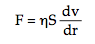

BİLİM ADAMI VE FİLOZOF EINSTEIN - GİRİŞ
19. yy’ın sonları ile 20. yy’ın başlarında klasik fiziğin atomlara uygulanmasında bir kriz ortaya çıktı. Bu krizin arka planında birbirinden farklı iki felsefi görüş vardı; bunlardan ilki olan ve liderliğini Ludwig Boltzmann’ın yaptığı “fiziksel gerçekçilik” adını alan okulun öteki temsilcileri ise 19. yy’ın fiziğine önemli katkılar yapmış bulunan Kirchoff, Maxwell, Hertz, Helmholtz ve Lord Kelvin idi. Atomcu görüşün varisi olan bu “fiziksel gerçekçi” yaklaşıma göre, doğada görünen olaylar ya da fenomenler maddenin içsel nedenlerine bağlıydılar. Boltzmann’a göre doğaya egemen olan insanın düşüncesi değil, düşünceyi oluşturan insanı kuşatan çevresiydi. Boltzmann, modeller yardımıyla, bilimin fiziksel gerçekliğinin doğru ve uygun bir imgesini arıyordu. Bu akım algılanabilir gerçekleri olduğu gibi, gözle görünemeyen gerçekleri de dikkate alıyordu; çünkü onlara göre fiziksel gerçek, hem olay (olgu) hem de öz olarak iki yanıyla da görülebilirdir. Bilgilenme süreci de hem deneysel ve duyusal, hem de kuramsal ve ussal olmak üzere iki düzeyde gelişir. İonya ekolünden Abdera’lı Leukippos ile Demokritos’un İÖ 6. yy’da doğa olaylarını atomlarla açıklamaları bu iki görünümü de içeren bir kurguydu. Boltzmann’ın 19. yy’ın sonlarında termodinamiğin deneysel yasalarını, maddenin varsaydığı atomsal yapısına dayanarak istatistiksel yöntemle açıklaması, bilginin bu iki düzeyli gelişmesine güzel bir ilk örneği oluşturmaktaydı. Böylece de fiziğin temel bir yasasını ilk kez atomsal düzeyden hareket ederek anlamak mümkün oluyordu.
Bu görüşe karşı çıkan “fiziksel simgecilik” okulunun başında ise Ernst Mach bulunuyor ve onu Poyting, Max Planck, Peardon, Duhem ile Poincaré gibi bilim adamları izliyorlardı. Simgeci okul, olay (olgu) ile gözlemlerin yalnız sonuçlarıyla yetinmiyor, bunların ortaya çıkardıkları üzerinde de duruyorlardı. Bu okul, olgucu (pozitivist), yani sadece duyulara verilmiş olgulara dayanan, ortaya konulmuş olanla ilgilenen Auguste Comte’un Pozitivizm’inin, “Kavramsız algılar kör ve bulanık, algısız kavramlar da topal ve boştur” diyen Immanuel Kant’ın deneysel-ussal eleştiriciliğinin ve “Varolmak, algılanmış olmaktır” (Esse est percipi) diyen Berkeley’in izleyicisiydi. Yalnız algılanabilir gerçeklerle ilgilenen olguculuk, deneylenebilen olgulara dayanmakta ve fizikötesi (metafizik) açıklamalara itibar etmemekteydi. İşte Ernst Mach ve arkadaşları olguculuğun bu anlayışına uygun biçimde maddenin atom modeline karşı çıktılar; önce Boltzmann’ın atomcu görüşünü, sonra da M. Planck’ın enerjinin kuantum paketleriyle yayılması kuramını eleştiren Mach, bu tezlerin bilimin temel kurallarına uygun olmadığını savundu. Fiziği anlaşılmaz kurgulardan kurtarıp eşyanın doğasına ve yapısına yöneltmeyi başaran bu simgeci olguculuk akımı öte yandan 19. yy’da birçok bakımdan fiziğin gelişimini de geciktirdi. Özellikle moleküller ile atomlar konusunda gerçeklerin öğrenilmesini ve istatistiksel mekaniğin gelişimini engelledi. E. Mach ve onun etkisinde k meslekdaşları M. Planck ile Wilhelm Oswald, Einstein’ın Brown devinimleriyle ilgili atom kuramının doğruluğu kanıtlanıncaya değin, ta 1908’lere kadar atomların varlığını tanımadılar. İşte tam da böyle bir ortamda atom kuramının en ateşli savunucularından biri olan Boltzmann, simgeci gerçekçilerin saldırıları karşısında yaptıklarının boşa çıkacağı korkusuyla atomların gözlenmesinin gerçekleşmesinden iki yıl önce 1906’da intihar etti. Einstein’ın da tam bu sıralarda bilim sahnesine çıktığına tanık oluyoruz. Başlangıçta o her iki okulu da uzlaştırmayı düşündüyse de daha sonra bambaşka bir yol izledi. Bilimin bizlere sürekli ışık tutan ve her geçen gün evrenin karanlıktaki bir yanını aydınlığa ve gün ışığına çıkartan bir ışıldak olduğunu varsayarsak, bu ışıldağın saçtığı ışığın yayıldığı alan genişledikçe onu çevreleyen karanlığın da sınırlarının giderek genişlediğine tanık oluruz. Ancak yaratıcılığın kaynağına ne kadar inilebilirse inilsin bu dialektik süreç hep varolacaktır; ama yine aynı zamanda bu bilimsel yaratma süreci ta başından beri insanın kendi kişiliğinin katılığından sıyrılmasını, özgürleşmesini ve benliğini tutsak eden zincirlerini kırmasını gerektiren bir süreç olmuştur hep.
Einstein’ın yaşadığı dönemin kültürüne bir göz atacak olursak, “Derinlikler Psikolojisi”nin kurucusu Sigmund Freud, “Bilinçaltının ve Yabancılaşmanın Yazarı” Franz Kafka, atonal müziğin babası Arnold Schönberg, eleştirmen Walter Benjamin, ünlü antropolog Franz Boas, dil filozofu ve mantıkçı Ludwig Wittgenstein ve simgesel biçimlerin filozofu Ernst Cassirer gibi anadili Almanca olan Yahudi kökenli çağdaşlarının tam da onun görelilik kuramını ortaya attığı sırada varlık gösterdiklerine tanık oluruz. Aynı zamanda Almanya dışında dünyayı sarsan bir takım gelişmeler de olmaktadır: Paris’de kübizmin temsilcileri Braque ile Picasso’nun resimleri ile Duchamp ve Kandinski’nin devrimci ürünleri, sezgici felsefenin kurucusu Henri Bergson’un çalışmaları, Stravinski’nin ilk gösteriminde şimşekleri üzerine çeken Bahar Ayini adlı müzik yapıtı, Bolonya’da Marconi’nin radyo dalgalarıyla ilgili deneyleri ve Kitty Hawk’da Wright Kardeşler’in ilk uçuş denemeleri gibi yenilikler bunlar arasında sayılabilir. 1922 yılında Einstein’ın Nobel ödülünü kazandığı yıl, James Joyce “Ulysses”i, T.S. Eliot da “Çorak Ülke”yi (The Waste Land) yayımladılar ve yazın dünyasında onunkine benzer etkiyi yarattılar. Aynı dönemde göreliliğin etkisi altında kalan Igor Stravinski, Pablo Picasso, Marcel Proust gibi sanatçılar yarattıkları eserlerde mekanik düzenin yıkıldığını, uzay ve zamanın mutlak değerler olmaktan çıktığını sanat yoluyla dile getirmeyi denediler.
Einstein, görünürde kolayca içinden çıkılamayan karmaşık sorunların altında yatan basit gerçekleri su yüzüne çıkartmada tanrı vergisi olağanüstü bir yeteneğe sahipti. Buradaki “basitlik” sözcüğü, “kolay” anlamına gelmeyen bir sözcük olup olayın önceden kavranabilmesi için bitmez tükenmez güçlü bir zekâ dışında pek bir şey gerekmez. Sorunun çözümüne olanak tanıyan en yalın ve basit özüne, olayların kökenine inmek için Einstein, “düşünce deneyleri” adını verdiği bir yöntemden yararlanmaktaydı. Onun düşünce deneyleri tümüyle basit ve yalın kavram ve görüşlere dayanmaktaydı. Üstün yeteneğinin gizi ise, kesinlikle özüne indirgenmiş basit imgeleri bulup, ardından zekâsıyla bu imgelerin gerçekte ne anlama geldiğini araştırmaktı. Einstein’da olağanüstü bir çalışma etiğinin yanı sıra üzerinde çalıştığı konunun en derinliklerine inmeye onu zorlayan ve akla gelmeyecek soruları sormasına yol açan tutkunun da ortak bir özellik olarak ortaya çıktığına tanık oluruz. O yaşamı boyunca bütün fiziksel olguları kapsayan tek bir kuramın geliştirilmesi için uğraşmış ve tüm yaşamını da bu ideale adamıştır. Kütleçekimi (gravitasyon), elektromanyetiklik, atomun çekirdeğini bir arada tutan güçlü kuvvet ile radyoaktif bozunmayı yöneten zayıf kuvvetin birleştirilebileceğini öngören bu “Birleşik Alan Kuramı” nda Einstein’ın aradığı şey, kütleçekiminin egemen olduğu büyük ölçekli dünya ile kuantum mekaniğinin küçük ölçekli dünyasını, yani görelilik ile kuantum kuramlarını bir araya getirmekti. Ancak kuantum mekaniği ile ilgili kuşkuları da vardı; Cambridge Üniversitesi’nin matematik ve teorik fizik bölümünün sekiz yüz yıllık tarihinde lisans programı okumadan dağrudan doktora hakkı kazanan tek öğrenci olan John Moffat’a 25 Mayıs 1953 tarihinde Einstein bu konuda şöyle yazar: “Her bir birey, olasılıklar labirentinde kendini kaybetmek istemiyorsa, kendi düşünce şeklini korumak zorundadır. Ancak doğru yolu seçtiğinden hiç kimse emin olamaz, hele ben hiç değilim.” Belki de insanoğlunun bir türlü kaçınamadığı yazgısı ya da tragedyası bu kadar değişken ve gelip geçici olana bu denli sıkı sarılmasında ve bağlanmasında yatmakta.
Albert Einstein, yüzyıllar boyunca bilincimize yerleşmiş bulunan bazı kavram ile önyargıları temelden değiştirmemiz gerektiğini söyleyerek kimsenin göze alamayacağı büyük bir cesaret örneği göstermiştir. Bu zorlu neden yüzünden o, “Önyargıları ortadan kaldırmak atomu parçalamaktan daha güçtür” demek durumunda kalmıştır. İki yüz yıldan beri Newton mekaniğinin baş döndürücü başarılarına tanık olmuş insanlar için benimsenmesi çok zor olan mutlak zaman, mekân ve kütle kavramlarını değiştirerek onların yerine göreli, değişken kavramlar koymamız gerektiğini söyleyen sözleriyle o bilim tarihinde büyük bir devrim yarattı. Ancak Newton denkleminin ve o denklemin temellerini oluşturan (zaman, kütle, eylemsizlik vbg.) kavramların Einstein tarafından değiştirilmiş olması, Newton’ın üstün dehasını ve gök mekaniğinin önemini asla küçültmüş değildir. Her ikisi de çağdaş bilimimizin ve soyut düşünme yeteneğimizin en önemli öncülerindendirler. Einstein’ın görelilik kuramı yalnızca fiziği yeniden biçimlendirmekle kalmadı, aynı zamanda toplumun en temel değerlerini de derinden sarstı. Çünkü neredeyse üç yüz yıldır Galilei ile Newton’ın kesin ve mutlak yasalarına dayanan evrene ve rasyonalizme inancı savunan “Aydınlanma”nın psikolojik temelini oluşturmaktaydı bu değerler. Uzay ve zamanın artık mutlak değerlere sahip olmadığı bir evrende, bilimsel ve toplumsal yaşamda da mutlak, sağduyuya dayalı doğrular söz konusu olamazdı. Görelilik kavramı işte böylece dolaylı olarak felsefe, güzel sanatlar ve politikada yeni bir görelilikçi anlayışın yolunu açtı. Mutlak ve sabitliklere duyulan inanç, yalnızca uzay ve zaman açısından değil, gerçeklik ve ahlak gibi konularda da zayıflamaya başladı. Tarihçi Paul Johnson’a göre, ”Relativite kuramı, toplumun geleneksel ile bağlarını bir bıçak gibi kesti. Darwinizm’in bir yüzyıl önce sadece biyolojik bir kuram olarak değil, sosyal bir teoloji olarak toplumu biçimlendirmesi gibi, görelilik kuramı da 20. yy’ın yeni sosyal teolojisini oluşturdu.”
Doğa ile evreni bu denli yüksek seviyede ve derinlemesine sorgulayan bir insan iradesi ve düşüncesine bilimler tarihinde daha önce hiç rastlanmadı. Albert Einstein’ın her iki görelilik kuramı da evreni daha öncekilerden farklı bir gözle görmemizi sağlamıştır. Özel görelilik kuramı fiziğe yeni bir zaman kavramı getirerek, Newton mekaniğinin yalnızca düşük hızlar için geçerli olan, ışığa yakın hızlarda ise yetersiz kalan yaklaşık bir mekanik dizgesi olduğunu göstermişti. Kütleçekim kuvvetinin etkisini de kapsamına alan genel görelilik kuramı ise yalnız Newton fiziğinden değil, Eukleides geometrisinden kopuşu da simgeliyordu. Minkowski’nin getirdiği “düz”, yani Eukleides tipi dört boyutlu uzay-zamanın yerini, Riemann tipi “eğri” bir uzay-zaman tanımı almıştı. Genel göreliliğin en büyük başarısı statik kütleçekimi (gravitasyon) kurmının yerine dinamik bir kuram getirmesi ve uzay-zaman geometrisi ile kütleçekimi kuramını aynı çerçeveye oturtarak ona geometrik bir anlam kazandırmasıdır. Einstein’ın bu kuramlarında fizik tarihinde daha önce hiç rastlanmayan, herhangi bir fiziksel kuramdan alınabilecek, en güçlü ve kapsamlı sonuçlar bulunmaktadır. Fiziksel gerçeklerin soyut geometri ile aynı gerçeklik seviyesinde ele alınması bilim felsefesinde köklü bir değişim ve yeni bir anlayışa yer açmıştır. G. W. F. Hegel’in “Gerçek olan ussaldır, ussal olan da gerçektir” sözünü sanki anımsatır bu yaklaşım bize. Ussal olan ile gerçek olanın birliği ve uyumu bize doğruluğu ya da hakikati verir. Eski dönemleri anımsatır biçimde fizik ile felsefeyi bu denli birbirine yaklaştıran bir başka kuram günümüzde ortaya çıkmamıştır. Albert Einstein, Mein Weltbild adlı kitabında yayımlanan “Fiziksel gerçeklik anlayışının gelişmesine Maxwell’in etkisi” makalesindeki şu giriş cümlesiyle adeta kendi fizik felsefesini özetler: “Algılayan özneden bağımsız bir dış dünyanın varlığına inanç bütün doğa bilimlerini belirler. Bununla birlikte duyu algısı dış dünya ya da ‘fiziksel gerçeklik’ hakkında yalnızca doğrudan bilgi verdiği andan itibaren biz daha sonrakini sadece spekülatif yolla elde ederiz.” Başlangıçta Ernst Mach’ı izleyerek1 “Kavramlarımızın kökenlerinin bu dünyaya ait olduğunu ve yeryüzünden değişmez ve sabit biçimde verildiğini” kabul etmemiz gerektiğini vurgulayan Einstein, daha sonra bilim anlayışını değiştirmiş ve algılama ya da deneyin önemini küçümsememekle birlikte fizikçinin “imgeleminin ürünlerini dikkate almanın zorunlu ve doğal olduğunu” öne sürmüş ve “bu kavramları yalnız ortaya atanların değil, onu alımlayanların da bunları düşüncenin yaratıları ve kurmaları olarak değil, fakat verilmiş gerçeklikler olarak” kabul etmelerini savunmuştur. Böylece fiziksel bilgi, geçerlilik alanını eylemsizlikten genel koordinat dizgelerine genişleterek öznesel olmaktan çıkıp öznelerarası bir duruma yükselmiş, özsel bağımsızlıktan fonksiyonel ilişkililiğin karşılıklı bağımlılığına geçmiştir. Uzay ve zamanın başlangıçtaki birbirinden karşılıklı bağımsızlığı görelilik kuramlarıyla fonksiyonel bağıntılara dönüştürülmüştür. Özselleşmeden bu uzaklaşma bir bakıma fiziksel bilginin öznelerarasılığıyla bir korelativ oluşturmaktadır. Kavramların öznelerarası geçerliliği tensör formalizmi aracılığıyla sağlanmış ve bu mekanizma düşüncenin araçsal ve öznelerarası boyutlarını giderek genişletmiştir. Görelilik kuramında bilginin öznelerarası yapısı böylece mutlak bir bilgiye de yer vermemiş olmaktadır.2
1 Ernst Mach, Die Mechanik in ihrer Entwicklung historisch-critisch dargestellt, Leibzig: Brockhaus, 1883, s: 138-42.
2 Makoto Katsumori, The Theories of Relativity and Einstein’s Philosophical Turn, Stud. Hist. Phil. Sci.,Vol. 23, No. 4, s: 557-592, 1992.
A. Einstein, Scientific American’da 1950 yılında yazdığı bir makalede kuramsal fizik hakkında şöyle diyor: “Bizim durmadan kuram ardından kuram yaratmaya çalışmamızın nedeni nedir? Niye durmadan yeni kuramlar üzerine çalışıyoruz? İkinci soruya yanıt şudur: Çünkü biz anlamaya çalıştığımız fiziksel olayları mantık kuralları kullanarak daha basit bir sisteme indirgemeyi seviyoruz. Yeni kuramlar, eski kuramların açıklayamadığı fizik olgularını anlamada gerekli olurlar. Yalnız, soruyu bu şekilde yanıtlamak kolaya kaçmak gibi olur. Hiç de azımsanmayacak önemde olan bir ikinci neden daha vardır. Bu da ayrı ayrı bildiğimiz şeyleri birleştirmek, daha da basitleştirmek için içimizde yanan ateştir. Tıpkı Ernst Mach’ın “ekonomi ilkesi”nin basitleştirici ve yalınlaştırıcı mantıksal bir ilke olması gibi.” Çünkü Ernst Mach’a göre, “Fiziğin temel amacı, varolanın en basit ve en ekonomik soyutlamasını yapmaktır.” Onun meşhur felsefi sorusu şuydu: “Şayet evrende bir tek cisim olsaydı, onun eylemsizlik kütlesi olur muydu?” Hem Einstein’ın hem de Mach’ın bu soruya yanıtı, “Hayır, olmazdı” şeklindedir. “Çünkü eylemsizlik bir cismin başka cisimler ile olan etkileşmesi sonucunda ortaya çıkar. Bununla birlikte, evrendeki gözlemlenebilen madde miktarı, cisimlerin şu anda sahip oldukları kütleyi açıklamaya yetmiyor. O halde cisimlerin kütlelerini açıklayabilmek için evrende, gözlemlediğimizden çok daha fazla kütle bulunmalıdır.”3
3 Judith Wechsler (ed.), On aesthetics in science, MIT Press, 1978, s: 79-85.
Einstein’ın kuram anlayışı aslında fiziğin ve matematiğin kendine özgü bir estetiği olduğu görüşüne de dayanır. Ona göre yeni fizik kuramları ile matematiksel modeller üzerinde çalışırken biraz da kendimizi mantık, fiziksel kavramlar ve matematiğin estetik güzelliklerine kaptırıyoruz4. Sadece bilinmeyeni öğrenme dürtüsü değil, bu güzelliği yaratma isteği de bir kuramın ortaya çıkmasında önemli rol oynayan etkenlerden biridir. Kendisi bu konuda şöyle diyor: “Teorik kavramlarımızla gerçek dünyayı anlamanın olanaklı olduğu inancı olmaksızın, dünyamızın iç uyumuna inanmaksızın, bilim denen şeyin ortaya çıkması beklenemezdi. Bu inanç her türlü bilimsel buluşun temel itici gücüdür ve daima da öyle kalacaktır.”5 Pablo Picasso’nun “Hayal edebildiğin herş ey gerçektir” sözü Einstein’ın bilim serüvenine çok uymakta. O da gerçekliği şöyle açıklamakta: “Çok ısrarcı ve direngen bir şey olsa da gerçeklik aslında bir illüzyon, bir yanılsamadır.” Geçmiş, şimdiki zaman ve gelecek arasındaki fark, sadece bir yanılgıdan ibaret.”
4 Don Howard, Realism and Conventionalism in Einstein’s Philosophy of Science, The Einstein-Schlick Correspondance, “Philosophia Naturalis” 21, 1984.
5 Albert Einstein and Leopold Infeld, The Evolution of physics, A Clarion Book, New York, 1960, s: 65 vd.
BİLİM ADAMI EINSTEIN
Albert Einstein, çağdaşları Max Planck, Niels Bohr ile Werner Heisenberg gibi yalnızca bir bilim dahisi değil, ama aynı zamanda Aristoteles, Galilei, Newton ve Kant’ın temsil ettikleri çok yönlü ve çok boyutlu kültür dünyasının bir üyesiydi. Planck, Bohr, Heisenberg ve diğerlerinin geliştirmiş oldukları kuantum kuramı, fiziğin ilerlemesinde Einstein’ın görelilik kuramı kadar önemli sayılabilir. Ne var ki görelilik kuramı, önce özel sonra da genel olmak üzere, bilimde ve öteki alanlarda örneğine çok az rastlanan kişisel yaratıcılık ile bireysel deha patlamasını temsil eder. 20. yy biliminin en büyük iki başarısı sayılan ve temel fizik biliminin büyük bir kısmını oluşturan görelilik ile kuantum kuramları henüz birbiriyle bütünleştirilememiş durumda. Görelilik kuramı, genişleyen evren ile kara delikler gibi büyük ölçekli bir dünyayı açıklarken, kuantum mekaniği, atomlar ile atomaltı parçacıkları gibi küçük ölçekli bir dünyayı tanımlamaya çalışır. Einstein, kuantum kuramında ortaya çıkan “Belirlenemezlik” ile “Olasılık” faktörlerinin fiziğin kapsamı içine alınmasından rahatsız olmakla birlikte, kuantum kuramına yönelttiği eleştirilerle, kuramın temellerinin sağlamlaştırılmasına ve eksiklerinin giderilmesine neden olmuştur. Ancak kuantum kuramı yine de klasik mantığın çelişmezlik ya da özdeşlik ilkesiyle bağdaşmaz, yani çelişir (A ≠ Ã). Çağdaş fiziğin iki önemli kazanımı olan bu görelilik ile kuantum kuramları, zaman içinde eğer tek bir “Birleşik Alan Kuramı”nda birleştirilebilirlerse, bu birleşik kuram bilinen tüm fiziği özetlemiş olacaktır. Einstein şayet bu hedefe varılırsa o zaman insanların “Tanrı’nın aklından geçenleri okuyabileceklerine” inanıyor.
Henüz on iki yaşındayken bir geometri kitabı dolusu problemi büyük bir hızla ve tek başına yardım almadan çözebilmesi; on üç yaşında Immanuel Kant’ın “Salt Aklın Eleştirisi” (Kritik der reinen Vernuft) adlı temel yapıtını okuması ve on yedi yaşındayken de kendi çabasıyla öğrendiği yüksek matematik ile teorik fiziğin temellerini kavraması onun yüksek zekâsını ve anlama gücünü açıkça ortaya koymakta. Einstein’ı bilimsel gelişmesi içinde anlamaya çalışırsak onun sınırlı bir alanda uzmanlaşma ve erken tanıma ile saptama yerine, geniş bakış açısına felsefi bir derinlik kazandıran bir görüş ve kavrayış örneği sergilediğine tanık oluruz. Onu bir düşünür olarak eşsiz kılan ve kısmen de başarıya götüren şeyler arasında çalışmasının zaman zaman maceracı bir zihin araştırmasına da dönüşmesiydi. Spekülatif ve hipotetik düşüncelere dalmaktan çekinmiyor ve bunlardan nasıl bir sonuç çıkarılabileceğini de ısrarla takip ediyordu. Nitekim fizikçiler çoğu kuramı oluşturmak için öncelikle her şeyi kapsayan genel bir düşünsel ya da kavramsal dizge yaratırlar, ardından da bunu matematiksel denklemlerle ifade ederler. Öngörü yeteneğine sahip bir kuramı geliştirmenin ilk aşamasında bilim adamının sezgilerini ve hislerini kullanması gerekir. Ayrıca meraklarımız ve sorularımız ne kadar daha çok olursa, dünya bizim için o kadar anlaşılır ve yaşanılır kılınabilir. Fizikçi Richard Feynman, karmaşık fiziksel süreçlerle uğraşırken sorunu açık bir şekilde ifade edebildiğinizde doğanın size istediğiniz cevabı vereceğini öne sürer; ona göre, “İyi bir bilim adamı olmanın sırrı, hangi soruyu sormak gerektiğini bilmede yatar. Bir sorunu araştırırken bir kez doğru yola girdiniz mi çözüm kendiliğinden ortaya çıkar. Burada doğru yola girme, uygun soruyu sorma anlamındadır.”
Einstein’ın bilimsel çalışmaları, ısıl (termik) olayların atom düzeyindeki özellikleri, kuvantum fiziği, özel ve genel görelilik kuramları olmak üzere dört ana grupta toplanabilir. Gözlenebilir ve algılanabilir evrenin temel bileşenleri arasındaki nedensel etkileşmelere ve maddenin yapısına ilişkin temel sorunlarla ilgilenen bir bilim olarak fizik, doğanın mikro ve makro düzeydeki tüm görünümlerini inceleme konusu olarak seçmiştir. Kesinlikle denetlenen ve test edilen koşullar altında, olguların duyarlı nicel ifadelerle gözlenmesi demek olan deney ile birleştirilmiş kavramsal bir taslağın matematiksel terimlerle kurulması demek olan kuram, fiziğin gelişmesinde temel ve tamamlayıcı bir rol oynarlar. Bütün fiziksel araştırmalar önünde sonunda uzay ve zamandaki maddeyi içeren olguların incelenmesine indirgenebilir. Fiziğin en son amacı doğanın temel bileşenlerinin özelliklerini ve bunların karşılıklı nedensel etkileşimlerini tek bir plan içinde toplayarak bu plandan makroskopik olaylar ile parçacık yığışımlarının tüm özelliklerini çıkarsayabilmektir. Einstein de bu konuda şöyle der: “Bilim, her türlü düzenden yoksun kaotik duyusal deneylerimizin ve algılarımızın türlü çeşitliliği ile mantıksal olarak düzenli ve bir örnek düşünce arasında uygunluk sağlama girişimidir.”6
6 Albert Einstein, The Fundaments of theoretical physics (Ideas and Opinions içinde), Laurel Library, New York, 1980, s: 315-326.
Işığın ve enerjinin özellikleri ile esirin varlığına ilişkin olarak 19. yy sonunda gerçekleştirilen araştırmalar, 20. yy’ın devrimci kuramlarına temel oluşturdu. 20. yy’da fiziğin yapısını temelinden sarsan ve çağdaş fiziğin kuramsal temellerini oluşturan iki kuram, Max Planck’ın 1900’de öne sürdüğü kuvantum kuramı ile Albert Einstein’ın 1905’de yayımladığı görelilik kuramıdır. Atomun, çekirdeğin ve temel parçacıkların bulunması, plazma fiziği ile elektroniğin hızla gelişmesi gibi deneysel ve uygulamalı atılımlar işte bu çağda gerçekleşti; yine kuramsal ve deneysel bilgilerin olağanüstü artması da bu yüzyılda oldu. Fiziğin çeşitli dallarının konuları, deneysel yöntemleri ve kuramsal teknikleri ne denli farklı olsa da kuvantum kuramı ile görelilik kuramının uyarlamalarına birçok araştırma alanında rastlanmaktadır. Kuvantum mekaniği, elektromanyetik ışınımın sürekli dalgalardan değil, enerji ve momentumları, frekansları ile orantılı olan parçacığa benzer fotonlardan oluştuğunu öne sürer. Klasik mekanik, bir olası değerler aralığında sürekli değişebilen fiziksel niceliklerle belirlenirken, kuvantum kuramının belirleyici özelliği kesikli ya da ayrık değerler taşıması ve içkin olarak “Belirsizlik” (Indeterminizm) ilkesine yer vermesidir7. Atomun yapısı, ancak kuvantum mekaniği temelinde kavranabilir. Daha ince ayrıntılar ise görelilikçi kuvantum mekaniğini gerektirir. A. Einstein’ın ortaya koyduğu görelilik kuramı iki temel postüla üzerine kurulmuştur: 1) Bir ışık kaynağına göre devinim durumları ne olursa olsun tüm gözlemciler, ışık hızı için aynı değeri ölçerler. 2) Tüm eylemsiz koordinat sistemlerinde fizik yasaları aynıdır. Birinci postüladaki ışık hızının değişmezliği, deneysel olarak kanıtlanmıştır. İkinci postüla ise klasik mekanik içinde geçerlidir.
7 A.Einstein, H.A.Lorentz, H. Weyl, H. Minkowski, The Principle of Relativity, Dover Publications, 1923. s: 109-164 ; Werner Heisenberg, Physique et philosophie, Albin Michel, 1975, s: 53-58.
Bu kuşbakışı irdelemeden sonra şimdi A. Einstein’ın başlıca fizik kuramlarının gelişimine ana hatlarıyla bir göz atacak olursak şöyle bir serimleme yapabiliriz:
I - Görelilik Kuramı:
a) Özel Görelilik Kuramı: Özel Görelilik Kuramı üzerine ilk çalışmayı Einstein 1905 yılında henüz Bern’de İsviçre Patent Bürosu’nda memurken kaleme almış ve bu yazı kuramın son biçimini daha o dönemde oluşturmuştur. Kısa bir süre sonra yazdığı ikinci bir yazıda ise Einstein kuramdan en önemli sonucu çıkarmıştır. Bu sonuç, ışık hızının her ortamda ve koşulda değişmezliği ile madde ile enerjinin denkliği olarak bilinen ünlü E = mc2 eşdeğerliğidir.
b) Genel Görelilik Kuramı: Göreliliğin Genel Kuramı’nın tarihi daha uzun bir zamana yayılır. 1907’den önce ortaya çıkan Özel Görelilik Kuramı’nı dikkatlice gözden geçirdikten sonra Einstein, kuramın genelleştirilmesinin zorunlu olduğunu farketti ve genelleştirmenin eylemsizlik ile kütleçekiminin eşdeğerliği üzerinde temellendirilmesi gerektiği konusundaki temel düşüncesini ortaya koydu. 1911’de yazdığı başka bir çalışmada, kütleçekiminin ışık üzerindeki etkisiyle ilgili genel kuramdan çıkarılan bazı sonuçları tartışır: (1) İzgesel (spektral) çizgilerin sıklığı (frekansı) üzerinde kütleçekim alanının etkisi (kütleçekimsel kırmızıya kayma); (2) Güneşin kütleçekim alanı tarafından ışık ışınlarının eğilip bükülmesi (Bazı ayrıntılar daha sonra değiştirilicektir.)
Çok yoğun ve daha ileri çalışmalardan sonra – kuramın özellikle matematik temeli üzerinde – genel göreliliğin kesin biçimine 1916’da ulaşıldı ve bu son biçim aynı yıl yayımlandı. (Bu dönemde Merkür perihelyonunun – bir gezegen ya da uydunun Güneş’in çevresindeki yörüngesi üzerinde Güneş’e en yakın olduğu nokta – devinimi adıyla bilinen genel göreliliğin üçüncü “astronomik etkisi”ni Einstein daha önceden çıkarımlamıştı bile.)
c) Genel Kuram Üzerinde Daha İleri Ve Üst Düzeydeki Çalışma:
Genel göreliliğin problemleri Einstein’ı o günlerde çok meşgul etti. Bunları özel önemleri nedeniyle üç noktada toplayabiliriz: (1) Kozmoloji, (2) Devinim Problemi, (3) Birleşik ya da birleştirilmiş alan kuramı.
1. Modern kozmolojinin tümü Einstein’ın 1917’deki çalışmalarına geri gider. Burada ilk kez o, kozmolojinin sorunlarına genel göreliliği uygulamıştır ve böylece kozmolojik spekülasyonu sağlam bir zemin üzerine oturtmuştur (Einstein o dönemde statik, durgun bir evren tablosu düşünüp çizerken daha sonraki gelişmelerle güçlü astronomik kanıtların ışığında “genişleyen evren” anlayışını tercih etmiştir. Giderek artan astronomik verilere uygun olarak bu kabulün tutarlı bir kuramını bulmak için bu konu kozmolog bilim adamları tarafından hâlâ etkin olarak ele alınmakta ve ikna edici biçimde incelenmektedir.)
2. Genel görelilik başlangıçta kökence iki bağımsız varsayım üzerinde temellendirilmiştir: Bunlar kütleçekimi alanı için alan denklemleri ile maddi parçacıklar için devinim yasasıdırlar. Einstein 1927’de devinim yasasını, alan denklemlerinden çıkarımlama problemine itiraz ve hücum etmiş, daha sonra ise tekrar bu varsayıma dönmüştür. Kesin ve son çözüm 1949 yılında elde edildi (Leopold Infeld’in işbirliğiyle.) Bu, kurama temel olarak alan denklemlerinin tek başına yeterli olduğunu gösterdi.
3. Başlangıçta genel görelilik kuramı, alan denklemleri çekim alanı için, genel göreliliğin ana ilke ve fikirlerini bulanık ve belirsiz olmayan biçimde izledikleri ölçüde, esas olarak kütleçekimi alanı kuramıydı. Öteki alanlar, şayet onların yapıları da bir kez bilinince, bulanık ve belirsiz anlamda olmayan bir biçimde, genel göreliliğin çerçevesi içinde ortaya çıkabilirdi. Ancak bağlantı ve ilişki bir biçimde “kaybedildi”, çünkü genel görelilik herhangi başka bir alanın yapısını ya da varlığını öngöremezdi (örnekle elektromanyetik alanınkini.). İşte bu yüzden bazı bilim adamları (örn. Weyl, Kaluza, Eddington) bütün alanların birleştirilmiş bir kuramını elde etmek amacıyla teoriyi yaygınlaştırmayı ya da genelleştirmeyi denediler - ya da en azından kütleçekimi ile elektromanyetik alanları -. İlk girişimler çeşitli nedenler yüzünden tatmin edici değildi. Einstein 1923’den itibaren kuramın formunu tekrar tekrar değiştirerek bu problem üzerinde sürekli çalıştı. Teorinin en son yorumlanma biçimine 1945’de ulaşıldı ve kesin biçimini de 1953’de aldı (Göreliliğin Anlamı adlı kitabının 4. Baskısına II. Ek olarak kondu.)
II – Kuantum Kuramı
1900’lerde Max Planck tarafından kuvantum kuramının ortaya konmasından kısa bir süre sonra Albert Einstein, fizik bilimindeki bu yeni alanın en ön sırada gelen sözcülerinden ve öncülerinden biri oldu. Onun bu konudaki ilk katkısı aynı yılda görelilik üzerine yazdığı kendi ilk yazısının çıktığı Annalen der Physik adlı bilim dergisinin aynı cildinde yayımlandı. Bu yazıda ışık kuvantası ya da fotonlar kavramı devreye sokulmuş ve bu yaklaşım, kuvantum kuramına ve özellikle de Niehls Bohr’un atom kuramına ilişkin ileri düzeydeki çalışmalara temel olmuştur. 1917 yılında Einstein, fotonların sahip oldukları özelliklerin analizine nüfuz etmeye çalıştı ve buna ek olarak da “geçiş olasılıkları” kavramı üzerinde temellendirilen ışınımın Planck yasasının yeni bir türetimini veren bu konudaki daha sonraki en anlamlı yazılarını ortaya koydu. Bu kavram o zamandan beri temel olarak kaldı8.
8 M. Jammer, The conceptual development of quantum mechanics, McGraw-Hill, 1966, s: 68-75.
A. Einstein’ın bu konudaki öteki katkıları arasında kuvantum kuramının spesifik ısılar kuramına ilk uygulanışı (1907) ile gazların kuvantum kuramı üzerine yazdığı önemli yazıları (1924-1925) özellikle anabiliriz. Bu yazılar, bugün Bose-Einstein istatistiği olarak bilinen, yeni tip bir istatistiğin bütün genelliğiyle kullanımına neden olmuş ve ayrıca da Schrödinger’in dalga mekaniği üzerindeki çalışmalarına yardımcı olmak suretiyle onun elektron dalgalarına ilişkin geniş çaptaki düşüncelerini sergilemesine fırsat vermiştir. Ancak daha sonraları Max Planck’ın kendi adıyla anılan ve sabit sayı olarak ifade ettiği bulgusunu Louis de Broglie, “Determinizm duvarında Planck sabitesi kadar bir çatlak meydana geldi” biçiminde yorumlamıştır. Çünkü bu buluş doğa bilimlerinde “nedensellik” ilkesinden farklı olan bir “olasılık” ilkesini gündeme getirmiş ve bilimsel çalışmalara yeni bir boyut katmıştır. Çağdaş fizik böylece yeni gelişmelerle gerçekliğin farklı yönlerini açığa çıkarmaya yönelmiştir. Günümüzde Kuvantum Mekaniği alanında epey yol alınmakla birlikte o dönemdeki “Indeterminizm” tartışmaları hiç de yabana atılacak boyutlarda değildi. Bilimsel devrimler ve dönüşümler konusunda Max Planck şöyle der: “Bilimsel yaşam deneyimlerimden öğrendiğim hep gözardı edilmiş, ama kanımca çok önemli bir olay var: Bilimde yeni bir atılımın benimsenmesi, başlangıçta karşı çıkanların sonunda gerçeği görmeleri ya da kanıtları kabul etmeleriyle değil, ama zamanla genç kuşağa yerlerini bırakmalarıyla olanaklıdır.
III - Maddenin Devinimsel (Kinetik) Kuramı
ile 1904 yılları arasında A. Einstein, büyük amerikalı fizikçi J. W. Gibbs’in yöntemine benzer bir biçimde istatistiksel mekaniğin kuramını bağımsız olarak kurduğu bir dizi yazı yayımladı. (İstatistiksel mekanik ya da maddenin kinetik kuramı, mekanik yasalarına göre devinen atomlardan - en son parçacıklardan – meydana gelen madde varsayımından toptan olarak maddenin sahip olduğu ısısal özel halleri türetir.) Bu yazıların en anlamlısı ve önemlisi üçüncüsü olup burada Einstein, Browncu devinimi 1905 yılında kaleme aldı. Orada Einstein kinetik kuram temeli üzerinde, bir sıvı içinde asılı duran çok küçük parçacıkların devinimini öngördü ve dile getirdi (Buna benzer bir devinimi yüz yıl önce ingiliz botanikçi Robert Brown gözlemlemişti.) Buna karşılık bu tür devinimlerin deneysel soruşturulması (özellikle fransız fizikçi Perrin’in Einstein’ın kuramından etkilenerek yaptığı çalışma dolayısıyla) maddenin kinetik kuramının temel varsayımlarının bir doğrulanmasına götürdü.
Doğanın bütün yasalarını tek bir pota içinde eriterek “Her şeyin Kuramı”nı bulmak mümkün olabilecek mi? Isaac Newton’ın 200 yıldır monopol haline gelen ışığın dalga halinde yayılmasına ilişkin fizik kuramına karşı James Clerk Maxwell, elektromanyetizm teorisiyle yeni bir “alanlar” dizgesi yaratmıştı. Einstein, bu iki bölgenin, dalgalar ile alanların bağdaştırılmasından yanaydı. Ancak o sırada Max Planck, “Doğa sıçrama yapmaz” (Natura non facit saltus) diyen çok eski bir doğa yasasını altüst eden devrimci bir yasa buldu. Planck’ın bu formülü aynı zamanda ışıma enerjisini de açıklamaktaydı. Klasik fizikte bir devrim yaptığının bilincinde olmayan Planck, içinde bulunduğu durumu şöyle açıklıyordu: “Fizikteki bu teorik buluşu deneylere aktarma çabalarım bir türlü sonuç vermiyor, bulunduğum yer, benim sağlam bir zemin gösterme fırsatını beklemeden ayağımın altından kayıp gidiyordu.” İşte Einstein o dönemdeki fizik bulgu ve işaretlerinde birbiriyle ilişkili ve bağlı olmayan alanlardaki yaygın kuşkuculuğa karşın atomların gerçek varlığını Planck’ın kuantum problemlerini çözerek görebilmişti. Böylece ışığın belli koşullar altında bir paketin ya da birikimin parçacıkları gibi devindiklerini formüle ederek Planck tarafından yıllarca karşı çıkılarak hesaplanan ve çağdaş fizikte görelilik kuramından sonra ikinci büyük kuramsal eser sayılan kuantum teorisini temellendirmiş oldu.
Einstein’ın düşüncelerinde gerçekten eşsiz olan yan, “esir” (ether)’in elektromanyetik dalgaların yayılmasında kuramsal bir yapı oluşturup oluşturmadığı gibi uzmanlık sorularından uzay ve zaman için yeni bir madde anlayışı üretmesiydi. Zaman kavramını yalnız fiziksel olarak değil, ama aynı zamanda felsefi olarak da araştırdı. İnsan zaman kaybettiğinde ya da zamandan yoksun olduğunda gerçekte ne yapmış oluyordu? Ya da iki farklı olayın aynı anda gerçekleşmesi ne anlama geliyordu? “Sonsuz devinim” (Perpetuum mobile) ilkesinde olduğu gibi yalnızca genel mantık ilkesine dayanan bir buluşun insanlara sağlam bilgiler sağlayabileceğini kavrayan Einstein, “görelilik kuramı”nda, iki mutlak öğeyi (uzay ve zamanı) bir yana bırakıp göreceli ve bağıl bir yenisini üreterek bulmuştu. Işık hızını doğa sabitesine çevirerek onu bir anlamda mutlak ve değişmez olarak kabul ettiğinde ve aynı zamanda da uzay ve zaman kavramından mutlaklığı çıkararak “görelileştirdiğinde” Einstein, Newton’ın evren anlayışını adeta tersine çevirmiş oluyordu.
Genel görelilik ilkelerinin ya da görelilik kuramlarının tanımlamış oldukları, üzerinde yıldızların ve gezegenlerin hüküm sürdükleri, sorun çıkarmayan “sürekli” bir uzay-zaman alanı ile parçacıkların egemenliğindeki, uzlaşmaya yanaşmayan ve ele avuca da sığmayan olağanüstü küçük ölçekli kuantum dünyasını “birleşik bir alan kuramı”nda bir araya getirmekte zorlanan Einstein, bu sorunu görelilik ilkelerinin değil, kuantum mekaniğinin yarattığına inanıyordu ve 1954 yılında şöyle diyordu: “Kuantum belası ile karşılaşmamak için başını görelilik kumuna gömen bir devekuşu gibi görünüyor olmalıyım.” Çünkü genel görelilik denklemleri, nedensellik ile çelişmezlik ilkelerinin yok sayıldığı ve bir parçacığın A noktasından B noktasına mekânda doğrusal ya da eğrisel bir yol izlemeksizin ulaştığı böyle bir ortamda, yani kuantun kuramında işe yaramıyor ve adeta sökmüyordu. Einstein’a göre kuantum mekaniği kuramı eğer maddenin içindeki atomu tarif ediyorsa, nedensellikten çok uzaktı. Kuantum dünyasında, determinizmde saptanan mutlak olanaksızlık ile şüpheciliğin bulunmayışı, yani belirlenimciliğin oluşu yerine birdenbire “belirsizlik” fenomeni ortaya çıkıyordu. Gözlenen eskiden ancak gözlem yoluyla tespit edilirken, parçacıklar arasında şimdi ani tesadüflere ya da rastlantılara dayanan adeta telepatik, akıl ve mantığa aykırı bağlantı ile ilişkiler oluşmaktaydı. Einstein bu çılgın kuram karşısında “Gerçi bu teori çok şeyi açıklıyor ve ifade ediyor ama Tanrı’nın bir şeyleri paramparça edip dağıtmadığından da eminim.” ve “Tanrı çok zeki ama acımasız değil.” demek zorunda kalacaktı. Kuantum kuramının üzerinde kurulduğu belirsizlikle yüklü böyle bir dünyada gelecekteki olaylar ancak belli bir olasılığa dayanıyordu. Einstein, evrenin temelindeki yasaların bir kumar oyunu gibi düzenlenebilmesini ve şansa bağlı kalmasını yaşamı boyunca asla kabul etmedi. Fiziksel gerçekliğin tüm öğelerini açıklayabilecek belirlenimci ve nedenselci “Büyük Birleşik Kuramı” yaratma çabasına bu yüzden girdi ve bu uğraş günümüzde de sürmekte.
FİLOZOF EINSTEIN
Bu konuyu A. Einstein’ın bilim anlayışı ve felsefesi ile fiziğinin bilgikuramı ve metodolojisi üzerindeki görüşleri açısından ele almayı denemek istiyorum. Görelilik fiziği kadar fiziğin başka hiçbir dalı felsefe ile bu denli yakın bir ilişki içinde olmamıştır. Nitekim Einstein’ın da B. Russell’ın felsefesi üzerine yazdığı bir incelemede söylediği gibi, “Kendi bilim dalının şu andaki güçlükleri fizikçiyi önceki kuşaklardan daha fazla bir oranda felsefi problemlerle uğraşmaya ve hesaplaşmaya zorlamaktadır.” Bilindiği üzere doğaya ilişkin temel ilkelerin araştırılması İÖ 6. ve 5. yy’lara değin geri gider. Batı Anadolu kıyısı boyunca yaşayan filozofların soyutlamalarıyla bu ilkeler doğayı sorgulama yöntemlerinde ortaya çıktı: Bu dünya ya da kosmos, kaostan nasıl doğdu?, Çokluğun ve çeşitliliğin kökenleri nelerdir?, Hareket ve değişim nasıl hesaplanabilir?, Değişen varlığın bilimi yapılabilir mi?, Çoklukta birlik saptanabilir mi?, Birlikte çokluk mümkün müdür?, Bilgimizle nesnelerin tüm gerçekliğine ulaşabilir miyiz? İşte bu sorular ışığında İonya döneminde bazı temel kabullerden mantıksal olarak sistematik fizik kuramları çıkarılmıştır. Bu dönemde egemen olan niceliksel ve nesnel madde kuramı yerine Aristoteles oldukça yalınkat ve niteliksel bir yaklaşımı yeğlemiştir. Bilimin, felsefe ile dinin etkilerinden sıyrılıp kendine özgü bir araştırma disiplinine dönüşmesi, İlkçağ’dan yaklaşık bin yıl sonra başlamış, Rönesans ve Reform hareketlerinin etkileriyle olgusal ilişkiler arasındaki yasalılığı aramada “niçin” sorusunun yerine “nasıl” sorusunun geçmesi 16. yy’da gündeme gelmiştir9.
9 O. Gingerich (ed.), The nature of scientific discovery, Smithsonian Institution Press, 1975, s: 96-105.
Fizikçi Robert Wood, “Fizik ile metafizik arasındaki fark, birinin uygulayıcılarının diğerlerinden daha üstün olması değil, metafiziğin laboratuvarının olmamasıdır” der. Bilimin ve bilimsel yöntemin günümüzdeki öncü rolünün beslendiği temel, araştırmanın mantığı ve dinamiğidir. Bu araştırma mantığı ile dinamiği sayesindedir ki yeni bilimsel yöntem ve kurallarla tanışılır, bilgiye bu yeni bilimsel yöntemleri kullanarak ulaşılır, böylece de yeni ve nesnel bilgi üretme becerileri geliştirilmiş olur. Bilimsellikte aşırı bir mantık sertliği ya da katılığı bulunsa da bilim adamı doğaya yöneldi mi kendi kendini de, birikim ve önyargılarını da işe karıştırmadan edemez. Ancak yine de doğa bilimcisi istem ve tutkularını, korku ve özlemlerini, akılcı-özgür davranışlarından bütünüyle olamasa bile ayırma gayreti içinde bulunan kişidir. Yasa arayışlı etkinlikler olan ve doğa olaylarını açıklamaya yönelen doğa bilimleri yargısız ve çıkarımsız düşünülemezlerken, tarih-toplum ya da kültür bilimleri anlamaya baş vururlar. Bilim genelde öyle bir süreçtir ki bilim adamında bilgi ve görgü, hayalgücü, merak, kaygı ve duyarlık ile yaşantı zenginliği gibi kişisel yetileri gerekli kılar. Bilim adamı, imgesel-deneysel canlandırmayla teorisini kurar; nesnel tutumunu öznel davranışıyla sağlar. Felsefe, ille de kendi görüşünü benimsetme amacıyla sıkça çekip çekiştirme sapmalarına baş vururken, bilim her zaman doğrulanabilir ve nesnel kalmakta direnir. Fiziği bir kavramlar ile kuramlar dizgesi olarak algılayan Einstein’ın göreliliği, kendi deyimiyle “değişmezlik teorisi”, kuram-içi, kuram-dışı soyut çetrefilliğiyle bütün öteki fizik kuramlarını aşmış, onların önüne geçmiştir. Yaşamın hızlı, izlenimci, yer yer bulanık akışını düşünsel bir duyarlık kavrayışıyla yakalayabilen bir sezgiye sahipti o. Aynı zamanda çok kimlikli bir kişiliğe de sahip olan Einstein, evreni kendinden kalkarak anlayabileceği inancındaydı. Arayış yöneltisini nasıl, niye, nelere, ne gibi dikkatlerle yörüngelemesi gerektiğini gayet iyi sezmişti. Tıpkı bir sanatçı gibi yaratıcılığını en üst düzeyde kullanan başarılı bir kurgu mühendisliğiyle o, önce ölçüp biçmeden, deneylemeden kendi kurgusuyla olabilecek bir şeye işaret eder; olayı, ölçüm yapacak ideal ölçü aleti olmadan tasarlar ve “işlemci” (operasyonel) bir bakışla belirginleştirirdi. Başka deyişle bir işlem, bir ölçüm yapma düzenini akıldan da olsa biliyorsak buna doğru gözüyle ya da doğru olabilir gözüyle bakabileceğimiz görüşündeydi. O aynı zamanda sayı üretemeyecek bir kuramın bilimde bir anlamının olmadığını, ama o sayıların doğadaki verilerle de uygunluk içinde olması gerektiğinin farkındaydı.
Bilim deyince ilk akla gelen şey, doğa bilimlerinin ortak yapısını en iyi biçimde yansıtan fizik bilimidir. Pozitif doğa bilimlerinin ana yapısını temelden kavrayan fiziğin başlıca göstergeleri ise deney-gözlem, ölçme, yani ölçekli ölçüm, kuram veya varsayım, yasa ya da öngörüdür. Renaissance dönemiyle birlikte hızlı bir gelişme gösteren pozitif doğa bilimi kavramı, deney kavramından ayrı düşünülemez. Deney deyince de belli yapay koşullarda gerçekleştirilen bir takım beceri ve işlemler gözönüne getirilir ve bunların hep bir takım karmaşık gereçlerle laboratuvarlarda olup bitmesi de zorunlu değildir. Bilgisayarlarda öge çoğaltan ya da azaltan canlandırmalarla da deneyler yapılabilir. Özenli gözlemlerle izlenen deneyler, uygun yapıdaki bir dille, özellikle olay yansıtan matematiksel bir dille, çoğu kez de formül diliyle ortaya konur. Bunun için de ölçüp biçmeye, ölçekli ölçüme özenle sarılır doğa bilimcileri. Deney, kapsamca geniş tutulur; olgu ve olaylar arasındaki birliktelikle bu deney zenginleşir. Böylesi kuşatımlı deney sonuçlarının yorumu “doğa yasası” diye nitelenir. Doğa yasalarına en başta kuram ya da varsayımlardan ulaşılır; kuramlara doğa bilimlerinin işleyişinde en yüksek doruklar gözüyle bakılabilir. “Kuram1 -> Deney -> Ölçüm -> Yasa -> Kuram2” süreci sonucunda bütün bu yapılıp edilenlerle varılan yöntemli açıklamalar durmadan gelişen doğa bilimlerini oluştururlar.Yasalar çeşitli bilim çevrelerince sürekli denetlenip onarılır; böylece açıklamalar gittikçe daha güvenilir dayanaklara dönüşür. Bu süreç kendi içinde aşama aşama geliştirilip etkinleştikçe genişleyen kuramlara varılır. İşte bu yasalar ile kuramların en büyük başarısı öngörü (previzyon) yeteneğidir, çünkü bilimselliğin en önemli vargısıdır öngörü. Nedenine gelince öngörü, olgu ve olayların birbirlerini izlemede kurallı gidişine dayanıp gelecekte olup bitecekleri, kesinlikle değil, ama güvenilir derecedeki bir olasılıkla “önceden bilmektir”. Auguste Comte da “Önceden görmek güçlü olmaktır, yapabilmektir” (Prévoir, c’est pouvoir) dememiş miydi? İşte bu bilgi her çeşit yaşama planlamalarının akılcı temeli olarak vazgeçilmez bir değer taşır. Oysa kuantum mekaniği bilimin temel bir dayanağı olan bu “öngürü”yü ortadan kaldırmakta ve neredeyse bir “bilinemezciliğe” (Agnostisizm) yer açmaktadır. İnsan yaşamına eşsiz bir güç kazandıran bu “önceden görme ve önceden bilme” (başka deyişle “Determinizm” ya da “Nedensellik” ), elde olanı zaman varken düzenleme ve değerlendirme becerisinde kendini gösterir. Buysa yalnız şimdimize değil, geleceğimize de söz geçirme olanağı sağlayarak insan ve toplum yaşamını tehdit eden çeşitli tehlikelerin önünün alınması için bir çare olur ve yaşamı daha bir yaşanılası kılar. Son iki yüz yıldan bu yana türlü çeşitli uygulamalarıyla teknolojiyle iç içe giren ve birbirlerini geliştirici biçimde karşılıklı etkilemeler içinde bulunan doğa bilimleri çok hızlı bir gelişim içinde olmakla birlikte bu ilerlemenin öngörülebilen ve görülemeyen bazı yan etkileri ve bedelleriyle de bizi karşı karşıya getirmiş bulunmaktadır.
Deney ile kuram yoluyla madde ve uzay-zamanın temel özelliklerini inceleyen fizik bilimi, matematik gibi yalnızca betimleyici değil, ayrıca kurucu ve kuramla deney arasında bütünleştirici bir rol oynar. Öte yandan Einstein’ın dediği gibi, “Matematiğin yasaları gerçekliğe yakın oldukları ölçüde kesin değildirler; ve kesin oldukları oranda da gerçekliğe yakın değildirler.” Gök, yer ve yaşam bilimleri arasında fizikle ilişkisi olmayan bilim dalı neredeyse yok gibidir. 17. yy ortalarında gelişerek pozitif bir bilim dalı olarak kurulan fiziğin sağladığı başlıca kazanımlar arasında özellikle gözlem aygıtları ile el aletlerinin bulunuşu ve geliştirilmesi sonucunda olguların daha kesin biçimde tanınması ve olayların bilinmeyen görünümlerinin anlaşılması yer alır. Niteliksel anlayıştan (Aristoteles yöntemi) niceliksel anlayışa (Galilei yöntemi) geçerek bulguların matematikselleştirilmesi ve matematiksel kuramların geliştirilmesi de bu kazanıma dahildir. Dağınık olguları ve yasaları, kesin tanımlar ile ilkelere dayanarak, tutarlı bir bütün haline getirmek ve birbiriyle ilgisi olmadığı, hatta tümüyle farklı nitelik taşıdıkları sanılan olayları birleştirmek ya da en azından birbirine yaklaştırmak da buna eklenebilir. 17. yy’ın başında Galilei’nin, geliştirdiği gök dürbününü kullanarak gök cisimleri ile yer cisimleri arasındaki yapı özdeşliğini göstermesi ve yine aynı çağın sonunda Newton’ın cisimlerin yer üzerine düşmesi ile gök cisimleri arasındaki karşılıklı çekimin aynı yapıda olduğunu ve aynı yasaya uyduğunu [ kütlelerin büyüklüğüyle doğru, aralarındaki uzaklığın üst iki-
siyle ters orantılı kütleçekimi yasası ] öne süren
evrensel kütleçekimi kuramı ile fizik bilimi evrensel bir nitelik kazanmış ve gök cisimleri de aynı yasalara uyduğundan yer olaylarıyla sınırlı kalmaktan kurtulmuştur10.
10 Gerald Holton, L’invention scientifique, PUF, 1985, s: 58-65.
19. yy’ın sonlarıyla 20. yy’ın başlarında fiziğin tarihinde öncekilerden oldukça farklı bir dönem başladı; fiziğin başlıca kavramları gözden geçirildi ve özellikle de o güne dek bilinmeyen yeni temel kavram ve olgular ortaya kondu; maddenin mikroskobik bileşenlerinin varlığını belirten kesin kanıtları ile bunların yapısı ve davranışları açıklandı. Böylece görelilik, kuvantonlar, kuvantum mekaniği ile çekirdek fiziği gibi yeni ve büyük bilim dalları ortaya çıktı. Özel ve genel görelilik olmak üzere iki kuramı içeren Einstein’ın görelilik kuramında özel görelilik, mutlak zaman yerine gözlemcinin devinimine bağlı göreli zaman kavramını kullandı; zaman ve uzunluklar arasında bir bağlantı kurdu; kütlenin korunumu ilkesini reddederek ünlü E = mc2 eşitliğiyle, kütleyi enerjiye bağladı. Genel görelilik kuramı ise kütle, çekim ve uzayı bütünüyle yeni bir anlayış içinde ele aldı ve bu üç kavram arasında bir bağıntı kurdu. Görelilik kuramı, klasik mekaniğin yerini almışsa da, ışık hızından çok düşük hızlarda gelişen süreçler için klasik mekanik hâlâ geçerliliğini korur. Tıpkı Eukleides geometrisinin bu dünya boyutları için, B. Riemann geometrisinin de uzay boyutları için geçerli dizgeler oldukları gibi. Bilindiği gibi Riemann ve Lobatchevski, geometri ile ilgili çalışmalarını ortaya koydukları dönemde Eukleides geometrisi, gerçek mekânın geometrisi olma imtiyazına sahipti. Eukleidesçi olmayan ve köklü değişimler içeren bu geometrilerin ise sadece mantıksal birer eser oldukları düşünülüyordu. Fakat Einstein’ın fiziği, bu geometrilerin eğri mekân tanımlarının kütleçekimi olayını Eukleidesçi geometriden daha iyi açıkladığını gösterdi ve bu geometrilerin gerçek mekâna (yeryüzüne) uygun olmadığı düşüncesinin önemini yitirmesini sağladı.
Fizik tarihi bakımından önemli sayılabilecek bir evre de Max Planck’ın 1900’lerde kuvantonları bulmasından sonra Einstein’ın bir ışık taneciği olan fotonun varlığını kanıtlamış olmasıdır. Işığın dalga ile parçacık yapısına ilişkin iki görüş, yeniden karşı karşıya geldi. Bu çelişki ancak 1924-26 arasında kuvantum mekaniğinin kurulmasıyla aşılabildi. Bu kuramı Louis de Broglie, Heisenberg ile Schrödinger geliştirdiler; Dirac ile Pauli de tamamladı ve özellikle elektronların kırınımının deneysel olarak gözlenmesiyle de doğrulandı. Kuvantum mekaniği olasılık yasalarına başvurdu ve bugün bile hâlâ tartışılan belli bir belirlenmezciliğe ((Indeterminizm) yol açtı11. Kuvantum kuramının gerçek katkısı katılar fiziğinin kurulmasında görüldü; katıların çeşitli niteliklerini (mekanik, elektriksel, manyetik, optik) ve yapılarını açıklayan fiziğin bu dalı özellikle yarı iletkenlere uygulandı. Yarı iletkenlerin elektronik ve bilişim tekniklerinde oynadıkları rol günümüzde iyi bilinmektedir.
11 P. W. Bridgman, Logique de la physique moderne, Edition Flammarion, 1985, s: 76 vd.: Werner Heisenberg, Physics and Beyond, Encounters and Conversations, Harper and Row, 1971, s: 79-84.
Bilim tarihinde fiziğin yöntemi konusunda uzun süre a priori ve kuramsal bir tutum, deneysel bilgiye üstünlük kurmuştur. İlkçağ ile Ortaçağ’da egemen olan bu anlayışın, yani fiziği açık ilkelerden tümdengelim yoluyla oluşmuş bir bütün biçiminde ele alan akımın yandaşları 17. yy’ın ortalarında bu ilkeleri deneyin denetimine vermeyi benimsediler. Olguların üstünlüğünü savunanlar, çoğu kez bu olgulardan çok uzaklaşan, ama deneysel testlerden geçirmeye elverişli sonuçlar doğuracak varsayımlara yer vermeyi de kabul ettiler. Gerçekte yalnızca Descartes’ın madde ile devinimine ilişkin varsayımlarını hedef alan, “Ben varsayım uydurmam” (Hypothesis non fingo) biçimindeki ünlü açıklamasına ve çok haklı suçlamasına rağmen Newton da aynı eğilimi benimsemişti. İster gözle görülmeyen gerçeklerin varlığı yadsınsın, ister bilimin bunlara ulaşamayacağı açıklansın, yalnız algılanabilir gerçeklerle yetinen ve 17. yy’ın ilk yarısında rahip Mersenne tarafından savunulan olguculuk (pozitivizm), fiziği anlamsız kurgulardan kurtarıp eşyanın doğasına yöneltme onurunu kazanmış olmasına karşın, aynı olguculuk Auguste Comte, Ernst Mach, Wilhelm Ostwald, Marcellin Berthelot gibi bilim adamları tarafından 19. yy’da birçok bakımdan fiziğin gelişimini, özellikle de moleküller ile atomlar konusunda gerçeklerin öğrenilmesini geciktirdi. Termodinamik ile Enerjibilime (Energetik) üstünlük tanıyarak istatistiksel mekaniğin gelişimine engel olan da bu olgucu tutum oldu. Çünkü bu mekanik o dönemde gözle görülemeyen gerçekleri, yani gaz moleküllerini göz önüne alıyordu. Bu kavram daha sonra Einstein’ın girişimleriyle, algılanabilir gerçeklikleri olduğu kadar gözle görülemeyen gerçekleri de dikkate ve gözönüne almayı öneren operasyonel olguculuğa dönüştürüldü. Böylece görüldü ki bilimsel yasalar, belli bir kesinlik değeri taşımakla birlikte değişmez yasalar değildirler. Tıpkı Kepler’in I. yasasının gezegenlerin, Güneş’in çevresinde bir elips çizdiğini ve Güneş’in bu elipsin odaklarından birinde bulunduğunu açıklamasına karşın, bir süre sonra Newton’ın, genel kütleçekimi yasasına dayanarak, bir gezegenin güneşin çevresinde değil, hem gezegenin hem de Güneş’in ağırlık merkezi çevresinde birer elips çizdiğini ortaya koyması gibi. Burada bilimsel bilginin tutarlı açıklamalardan oluşmasının gerektiği gibi, nesnel ve yöntemli olması, denetlenebilmesi, öngörüde bulunabilmesi özelliklerinin yanında varsayıma deneyden olduğu gibi kuramdan da varılabileceği gerçeği görülmektedir.
Yaklaşık 2600 yıllık tarihinde “doğa bilgisi” (physis) olarak fizik bilimi, 20. yy’ın özellikle ilk çeyreğinde hiçbir bilimin yaşamadığı hareketli ve verimli bir dönem geçirmiştir. Artık “klasik” bir çağ olmasına karşın fiziğin 1930’lu yıllara değin kazanmış olduğu devrimci yeni kavram ve teknik terimler günümüzde hâlâ canlılıklarını sürdürmekte ve tartışılmaktalar. Başta Curie’ler, Rutherford, Planck, Einstein, Minkowski, Schrödinger, Bohr, Dirac, Heisenberg, Born gibi öncülerin yanı sıra bu kuşaktan başka fizikçiler de devrimci yenilikler getirdiler ve bu dönüşüm günümüzde de sürmekte. W. Heisenberg, fiziğin geleneğinin 20. yy’da da şu üç esas noktanın sürekliliğine saygı gösterdiğini söyler; bunlar, bilim adamlarının seçip ayıkladıkları problemlerin tipleri, kullandıkları yöntemler ve de bu fenomenleri ele alıp incelemek için özellikle kullandıkları kavramların tipleridirler12. Heisenberg, tematik bir analize dayanarak kendisini bütünüyle “süreksizlik” (Discontinuité) ilkesi ve teması çevresinde bir fizik kurmaya zorlamıştır. 1925 yılında Pauli’ye yazmış olduğu bir mektupta, “Süreksizlik ilkesi, hem kuvantum kurallarını hem de klasik fiziğin kurallarını aynı zamanda kullanma yetkisi veren bir ‘dolandırıcılık’dan fiziği kurtarır” demiştir. Ona göre bu nedenle kuvantum mekaniğinin programı kendisini bütün görselleştirilebilen (Anschauliche) imgelerden kurtarmaya odaklanmalı ve deney tarafından sağlanan veriler arasındaki basit bağıntıları, madde ile klasik mekaniğe ilişkin önceki yasaların yerine koymalıdır.
12 Philip Frank, Philosophy of Science, Prentice-Hall, 1956, s.163 vd.; Werner Heisenberg, La nature dans la physique contemporaine, Idées, Gallimard, 1965, s: 69-73.
“Mutlak nesnelliğin” olanaksızlığı 20. yy’da Einstein tarafından görüldü ve gösterildi. Bilimde araç gereç gibi kullanılan spesifik kavramlar zamanla değişime uğrarlar; bu cümleden olmak üzere “esir” (ether) kavramı da 1905 yılında terk edilmek zorunda kalındı ve onunla birlikte elektromanyetizmi mekaniğe indirgeme rüyasından da vazgeçildi ve bu kuram bir kenara itildi. Uzay ile zaman Newtoncıların hayal bile edemedikleri kadar birbirlerine bağımlıydılar; bu nedenle de fizik bir sistemin “mutlak nesnel”liği betimlemesi artık mümkün görünmüyordu. Atomların yapısını belirlemek üzere kuvantonlara dayanan ilk modeli 1913 yılında hazırlayan Niehls Bohr, başlangıçta karmaşık atom modellerini klasik mekaniğin yardımıyla kavrayamadığını itiraf eder ve şöyle der: “Bu modeller bana tıpkı imgeler gibi sezgisel olarak geldiler.” Işığın sahip olduğu özellikler benzeşim yoluyla onun su üzerindeki dalgalar gibi olduğunu ve başka deneyler aracılığıyla da onun enerji parçacıkları (kuvanta) biçiminde olduklarını söylememize izin veriyor. Peki ışık her ikisini de aynı zamanda nasıl olabilir ve bu iki cephe nasıl görselleştirilebilir? “Görselleştirilebilirlik” (Visualisabilité; Anschaulichkeit) geçmişte herhangi bir biçimde hep tasarımlanmış ve temsil edilmişti; bu yeni alanda ise o bir tuzak gibi görünüyordu. Ancak bu tuzak nasıl aşılacaktı? Heisenberg, atom modelini kurmak için yalnızca deneysel gözlemlerin doğrudan sonuçlarına dayanmak gerektiğine olan inancını ve 1905 yılında görelilik kuramını geliştirirken Einstein’ın sahip olduğu felsefesini izlediğini söyleyince Einstein kendisine şöyle yanıt verir: “İzlediğiniz yol benim felsefem olmuş olabilir, ancak bunun her durum ve koşulda hiçbir anlamı yoktur. Bir teorinin içine yalnızca gözlenebilir nicelikleri sokmak asla mümkün değildir. Gözlemlenebilecek olan şeye karar veren teoridir. Deneylerin bu karmaşıklığı içinde empirik gözlem süreçlerini matematiksel konstrüksiyonlar ile öteki teorik kavramlardan kolayca ayıramayız.”13 Heisenberg’in yeni fizikte oynadığı çığır açıcı rol acaba gerçekten “geleneksel bilimsel yöntem”i tersine çevirmiş midir? Kuantum mekaniğinde “devrim” olarak adlandırılan şey, Galilei’nin zamanında ortaya koyduğu geleneğin gerçekten dışında mıdır? Heisenberg’in kişiliğinde niteliksel olarak yeni bir egemenlik alanının kahraman fatihini görmekte haklı mıyız? Kendisi böyle düşünmüyor ve “Yöntem temelde hep aynı oldu” diyor.
13 Platon, Timaios, MEB Yayınları, 1965, s: 40 vd.
Bilimler tarihinde geleneğin rolü olduğu yanlış bir görüş müdür? Yoksa bilimsel devrimler ani patlamalarla mı ortaya çıkarlar? Bilimsel gelişmede “önyargı” kavramı, bilimsel imgelemde çok olumlu ve çok işlevsel biçimde etkinlikte bulunan derin mekanizma için aslında aşağılayıcı bir etikettir. Olgusal fenomenleri incelemeye giriştiğimizde bir dile gereksinim duyarız. Derinleştirilmiş bir araştırmanın başında yeni sözcük ve terimler henüz işe yarar ve kullanılabilir değildirler; ve bu yüzden de problem üzerinde düşünmek ve kendimize harekete geçiş soruları sormak için eski ve geleneksel – ve bu nedenle de sezgisel – sözcük ile terimler kullanmak zorunda kalırız. Ama bu sözcükler, eski dilin zorunlu bir kısmını oluşturan “önyargılar” denilen şeylere bağlıdırlar. İşte bu yüzden bir elektronun yörüngesi ya da dolanımı gibi doğal ve geleneksel bir kavrayışı bir atoma uygulamanın bir anlamı olmaması epey sıkıcı ve acıklı bir durumdur. Gelenek ile ilerleme arasındaki gerilim, bilimde gerçek gelişmeyi sağlar. Belli bir dönemde egemen olan bir geleneğin karşıtı, kendisi de eskiyecek olan başka bir gelenektir. Örnekle 2500 yıl önceki Demokritos’un atom tasarımı, bu elemanter varlıkların modern fizikte elemanter parçacıklar kavramına dönüşmesine neden olmuştur. Atom o dönemde artık bölünemezken, günümüzde proton, elektron, nötron, kuark gibi atomaltı parçacıkların varolduklarını biliyoruz. Ancak her parçacık açıklanabilmek için bütün öteki parçacıkların varlığını gereksinir ya da zorunlu kılar. Heisenberg böyle bir kısır döngüden kurtulmak için Demokritos’un felsefesi ile temel elemanter parçacık kavramını terk etmenin ve onun yerine bu maddeci grek atomcularının antitezini, öncelikle de Platon’dan kaynaklanan kavramları ve özellikle de onun simetri üzerindeki düşüncelerini koymanın gereğini vurgulamış, ancak bu sonuca ilişkin şu soruyu da sormuştur: “İdea’nın kendi maddi gerçekleşmesinden daha gerçek olup olmadığını bilmek gibi dünyamız kadar eski bir probleme yeniden dönmüş olmuyor muyuz?” Çünkü Platon, Timaios diyaloğunda, madde kuramıyla ilgili olarak, evrendeki her parçacığın dört düzgün katı cismin matematiksel özellikleri tarafından biçimlendirildiğini ve belirlendiğini betimler. İşte bu tema Heisenberg’in bütün yapıtlarında kendisini gösterir ve o, temel elemanter parçacık kavramını Platon’dan türetilmiş kavramlar üzerinde, özellikle de onun simetri görüşü üzerinde temellendirme sorununu ortaya atar14.
14 Werner Heisenberg, Physique et philosophie, Albin Michel, 1975, s: 56-73.
Doğal olarak bu, fiziğin süreksizliğinin objektivasyonu ya da maddeleştirilmesi demek değildir. Maddenin elemanter parçacığı, şayet matematiksel bir simetrinin sahip olduğu özellikler üzerinde temellendirilirse, madde daha geniş bir boyutta yapılandırılmış olur. Ancak bu yöntem Heisenberg’e göre, “Sezgisel olmaktan ne yazık ki çok uzaktır ve matematik eğitimi almamış bir okuyucu için de çok az anlaşılabilirdir.” Heisenberg’in yaşamı boyunca Platon’un Timaios’unun etkisinde kaldığını rahatlıkla söyleyebiliriz. Burada kendisinden söz etmemizin nedeni bilim felsefesi anlayışının Einstein’ınkinin karşısında yer almış olması ve bu yüzden de bir dengeleme gereğini duyumsamamızdandır. Albert Einstein kendi bilim felsefesini David Hume’un “Empirizm”ine, Immanuel Kant’ın “Deneyci usçuluk”una, Ernst Mach’ın “Duyusal deneycilik”ine ve Bertrand Russell’ın “Mantıksal atomculuk”una dayandırarak bu sistemlerin bir tür sentezine ulaşmayı denemiştir. “Mantıksal deneycilik” adını verebileceğimiz kendi bilim anlayışı ise modern bilim felsefesi ile bilgi kuramının tipik bir örneğini teşkil eder. Bilimsel bilginin oluşumunda kurama öncelik ve ağırlık veren bu bilim filozofu, deneyi de tümden gözardı edip yok saymaz ve onun önemini de vurgular. Richard Feynman’ın söylediği gibi, Einstein’a göre de “Kuram, en iyi tahmindir.” Ona göre bilimsel bir yasaya giden yol kuram, varsayım ya da kavramsal bir kurulumla (konstrüksiyonla) başlar ve deneyle sonuçlanır. Deney yalnızca bir doğrulama ve test aracıdır; yani ilk sözü kuram, son sözü de deney söyler. Einstein genel görelilik kuramını başarıyla ortaya koyduktan sonra bir konuşmasında şöyle demiştir: “Eskiden dünyadaki tüm cisimler yok olduğunda geriye yalnızca zaman ve mekânın kaldığına inanılıyordu. Oysa görelilik teorisinden sonra zaman ve mekân da cisimlerle birlikte yok olmakta.”
Manyetik alanda atomik izgelerin (spektrum) bazı görünümlerini (örn. anormal Zeemann etkisini) anlamak için kuvantum mekaniği devreye sokulup kullanıldı. Bu olayı açıklamak için Heisenberg, tam sayılar yerine yarı-tam nicem ya da (kuvantum) sayıları kullanmayı önerir ve “niçin yarı-tam kuvantik sayıları kullanmayı denemeyelim?” diye sorar. Birkaç hafta sonra meslektaşı Alfred Landé, kendisinin bu yaklaşımının, eski kuvantum kuramını işin içine karıştırmasına sebep olduğunu söyleyince Heisenberg şöyle yanıt verir: “Zeemann etkisini açıklayabilmek için varolan fizik ile mekaniğin büyük bir kısmını yadsımak gerekiyordu.” Ve vardığı bu sonucu da şöyle yorumlar: “Başarı (amaç) araçları haklı kılar” (Der Erfolg heiligt die Mittel)15. Mikrofizikte, bir araya gelmiş iki büyüklüğü, yani bir parçacığın yörüngesindeki hem hareket hızını hem de yerini, aynı anda ölçmenin ve belirlemenin olanaksız olduğunu, çünkü gözlem yöntemlerinin ve gözlemcinin gözlenen nesneyi her zaman etkilediğini öne süren Heisenberg’in “belirlenemezcilik” (Indeterminizm) ilkesi, yöntembilimsel belirlenimciliği (Metodolojik Determinizm) o kadar güç duruma soktu ki, birçok bilgin ve bilimkuramcı bu anlayışı terk etmek gereğini duydu. Bırakılan bu determinizm görüşüyle doğada egemen olduğuna inanılan “Nedensellik” (Causalité) anlayışı da tehlikeye giriyordu. Kuvantum mekaniği, kinetik kuramın olasılıkçı (probabilistik) yasalarının da temeli olan bireysel yasaları, yani nesneleri meydana getiren temel öğelere ilişkin yasaları bir yana atar ve yalnızca istatistiksel yasalarla ilgilenir. Bu ise her tür belirlenimci süreci reddetmek demektir. Ne var ki bu durumun geçici olduğunu ve Albert Einstein’ın da belirttiği gibi, bütün bilimsel araştırmaların itici gücü olan evrende belli bir düzen olduğuna ilişkin inancı çürütmediğini düşünenlerin sayısı hâlâ çoğunluktadır. Ancak yeni gelişen kuvantum kuramının getirdiği epistemolojik sorunları çözmek için, kuvantum kuramıyla klasik kuram arasındaki bağlantıyı sağlayan “karşılıklılık ilkesi”; kuvantum nesnelerini klasik dalga ya da parçacık terimleriyle tanımlamanın olanaksızlığını aşmaya çalışan “tamamlayıcılık ilkesi” gibi Kopenhag yorumu diye adlandırılan ilkeleri geliştiren Niels Bohr’un, doğada algılanan bu karmaşıklığa ve düzensizliğe bakarak Max Born’un kuvantum mekaniğine getirdiği temel olasılıkçı yorumu benimsemeyen Einstein’ın “Tanrı zar atmaz!” demesi üzerine, “Tanrı’nın ne yapacağına biz karar veremeyiz!” diye yanıtlaması bilim tarihinin ünlü tartışmaları arasında yer alır. Kuvantum mekaniği ile ilgili “Belirlenemezcilik” sorunu üzerine Einstein 1928 yılında Schrödinger’e şöyle yazmıştır: “Şu N. Bohr ile W. Heisenberg’in yatıştırıcı ve sakinleştirici felsefesi – bu bir din midir? – eğer bu kuram sonunda bir an için inanana bir yastık vermeyi kuruyorsa, o kimse iki kulağı üstüne yatıp uyuyabilir ve artık kolayca da uyandırılamayacaktır.”
15 D. J. Kevles, The physicists: The history of a scientific community in modern America, A. Knopf, 1978, s: 50-70.
Einstein, bilgikuramı (epistemoloji) açısından bir oportünist miydi? O, basit düşünce deneylerini karmaşık matematiksel formüllerle kaynaştırıp birleştirerek 20. yy’ın madde, uzay ve zaman gibi kavramlarında köklü dönüşümler gerçekleştirdi. Kendisinin özel ve genel görelilik kuramları, doğal dünya hakkındaki gözlemlerimizin içeriğini belirleyen gözlemcinin rolünü, önceliğini ve önemini vurgular. Mantıksal pozitivistlere katılmakla birlikte, onun kendine özgü felsefi düşünümlemeleri (refleksiyonları), teori oluşturmanın deneysel veriden ve empirik kanıttan bağımsız olduğunu vurgular. Ona göre doğa, kavranabilir en basit matematiksel fikirlerin (ideaların) gerçekleştirilmesidir. Genel göreliliğin felsefi yorumunun kökeninde, yeni bir doğa felsefesi anlayışı ile bilimsel araştırmada bir yeniliğin aranması yer alır; önce Machçı pozitivizm, sonra da Kantçı ve Yeni Kantçı yorumlar görelilik kuramlarına eşlik ettiler ve daha sonra mantıksal empirizm bu yorumlara katıldı. Einstein, “fiziğin geometrileştirilmesi”yle hem realizme, hem de transendental idealizme kapı açtı; yalnız kanıtlamayla kuram seçiminin belirlenemeyeceğini vurgulayarak, bilimde uzlaşımların (konvansiyon) yapısı, önemi ve rolü üzerinde durdu. Teori seçiminde yalınlığa ve basitliğe büyük önem veren Einstein, doğanın kuramsal tasarımlanmasında da tek anlamlılığa (“eindeutigkeit”), açık seçikliğe ve anlam belirliliğine (univocalness) öncelik tanır. Ayrıca o, bilimsel kuramlaştırmada gerçekçiliğin (realizm) ve olgu ile kavramların ayrılabilirliğinin (separability) önemini vurgulayarak kuramlar arasında “ilke kuramları” ile “kurucu kuramlar” ayırımı yapar.
Bilim ile felsefe tarihinde öyle bazı karşıt kavram çiftleri vardır ki bunlar Batı hayalgücünü İonya’dan bu yana biçimlendiregelmişler; bilim, sanat, felsefe ve din alanlarında kültür ile uygarlık tarihinde önemli roller oynamışlardır. “Ruh” (Esprit) / “Beden” (Corps), “Günah” (Péché) / “Sevap” (Oeuvre pie), “Özgürlük” (Liberté) / “Zorunluluk” (Nécessité),“Süreklilik (Continuité) / Süreksizlik (Discontinuité)“, “İndirgemecilik (Réductionisme) / Bütüncülük (Holisme)”, “Değişmezlik (Invariance) / Değişme; Çeşitlenme (Variation)”, “Varlık” ( tre) / “Yokluk-Hiçlik” (Néant), “Efendi” (Maître) /“Köle” (Servant), “En Küçük Evren” (Microcosmos) / “En Büyük Evren” (Macrocosmos), “Karmaşıklık (Complexité) / Yalınlık (Simplicité)”, “Madde (Matérialisme) /Ruh (Tinselcilik-Idéalisme)” gibi karşıt kavram çiftlerinin içerik ve boyutları, bu entelektüel demir atma yerlerinin anlamca derinlikleri, bilimsel ve düşünsel etkinliklerde, direniş ve karşı koyuşların olduğu gibi bazı yeni buluşların ve ilerlemelerin de usdışı ya da ussal görünüm altında ortaya çıkışlarını açıklarlar. Uygarlık tarihi boyunca sorulan “Başlangıçta düşünce mi vardı, yoksa eylem mi?” sorusu gibi bu kavram çiftleri de yüzyıllardır tartışıla dursun bunların hemen hepsinin zorunlu karşılıklı bağımlılığını bize bilimsel çalışma ve araştırmalar apaçık göstermektedir. Ancak Einstein’ın sorduğu gibi, “Yaptığımızın ne olduğunu bilseydik, buna araştırma diyemezdik, değil mi?” Yine de ona göre, “Doğa gizemini özünün yüceliğinde saklar, hile ve hurda içinde gizli kapaklı biçimde değil”. Doğa sanki insanlara giz dolu yumağının bir ucunu vermiş ve gerisini artık siz çalışmalarınızla bulun getirin demek istemiştir.
Einstein’ın düşüncesindeki Tanrı, doğa yasalarının güzelliğini ve sonsuzluğunu simgeleyen bir ilkeydi. Bu, neden ve sonucun ya da etkinin, sebep ve eserin ilkesi, yani Newton’ın her zaman ve her yerde geçerli olan “nedensellik” ilkesiydi. Bu konuda kendisi şöyle der: “Ben insanların kaderleri ve davranışlarına karar veren bir Tanrı’ya değil, kurallı bir uyum içinde varoluşu sunan Spinoza’nın Tanrı’sına inanıyorum.” Bir belirlenimci, bir determinist olarak evrenin fizik kurallarına göre saat dakikliğinde işlediğine inanan Einstein, bu düşünceden yola çıkarak elektromanyetizm ile kütleçekimini aynı anda tek bir formülde birleştirmeyi denedi. Evrenin oluşumuyla ilgili her şeyi kapsayan ve “Birleşik Alan Kuramı” ya da “Herş eyin Formülü” (Weltformel; Theory of everything) adı verilen ifadeye ulaşmak için yaşamının sonuna dek uğraştı. “Sayılar aklın bir buluşudur” ve “Eğer herhangi bir problemi altı yaşındaki bir çocuğa açıklayamıyorsanız, onu kendiniz de gerçekten anlamazsınız” diyen filozof, aslında doğa olaylarını basit fiziksel çizimler şeklinde düşünüyordu ve onun büyüklüğü de temel problemleri bu resimlerden yararlanarak çözmeye çalışmasında yatıyordu. Doğa filozofu Gaston Bachelard, “Einstein’ın uzayı sarsması bu kadar gerekli miydi? Böyle bir düşüncenin tek başına iki ila üç yüz yıllık rasyonalist düşünceyi ayağa kaldırmaya gücü yetecek mi?” diye sorar. Bu sorulara verilecek yanıtlar bilim tarihinin bir ironisini oluşturacaklardır.
1920’li ve 1930’lu yıllar yeni kuramsal fiziğin başarı ve zafer yıllarıydı; ancak pek az Avrupa’lı bilim adamı buna dikkat edebildi ve bilim tarihindeki bu görkemli değişimi fark edebildi. Oysa bu dönemde kullanılan önemli bir terminolojik kavram, “Çağın gelişi ya da yükselişi” (l’avènement; coming of age) terimi, neredeyse fiziğin ABD’de doğuşunu haber veriyordu. Avrupalı fizikçiler yeni fikirlere neredeyse önyargılı ve çoğu kez düşmanca yaklaşıyorlardı. Birleşik Devletler’de ise araştırmacılar hemen her şeye açıktılar; çünkü burada başka tür bir araştırma tarzı ve stili geçerliydi. Avrupalı bilim adamları genellikle soyutlamaya karşı çıkan bulgulara, yeni atom kuramının tasarımlanamayan ve temsil edilemeyen yanlarına, dalga-parçacık düalitesine, doğa yasalarının salt istatistiksel karakterine adeta düşmanca bakıyorlardı. ABD’li fizikçiler ise, bu yeni ve özgün yaklaşımı hiçbir kayda tabi tutmadan ve rezerv koymadan kabul etmeye hazır görünüyorlardı. Avrupalı, özellikle de Alman fizikçiler yeni fikirleri ilke sorunları olarak kabul etme eğilimindeydiler. Oysa ABD’li bilim adamları çok daha basit bir görüş açısına sahiptiler; onlar daha açık ve özgür bir araştırmadan yanaydılar 16. Avrupalı bilim adamlarının yanılgısı belki de yüzyıllardır alışageldikleri ve benimsedikleri doğa yasalarını mutlak yasalar olarak ele almış olmaları olabilir. Onları değiştirmek zorunda kalınca da büyük bir şaşkınlığa düştüler. Oysa “doğa yasası” teriminin kendisi bile doğa üzerinde özel bir alanda bir inceleme ve araştırma yapmak için temelde pratik bir reçeteden başka bir şey olmayan bir kuralı ya da ilkeyi yalnızca bir yüceltme ve kutsallaştırmadır. Bu mutlakçı görüş terk edildiği andan itibaren güçlükler de kendiliğinden ortadan kalkacaktır. Her halükârda yeni fiziğin antimetafizik bir yaklaşımla ele alınması ve ona somut olguların eşliğinde operasyonel bir felsefeyle, yani tasarı deneyi ile deney mantığının yardımıyla yol aldırılması gerekmekte. Acaba bundan böyle bilimin operasyonalist bir felsefesinin geliştirilmesi mümkün olabilecek mi? Einstein’ın, mantıkçı-atomcu fikirlerine yakın olduğunu bildiğimiz Bertrand Russell’dan bir alıntı ile Eintsein’ın bilim üzerine kendi düşüncelerinden bir demet ile yazımı bitiriyorum: “Düşünsel yaşamımda alışageldiğim bir genel yargım var: Empirik bilimlerden soyutlanmış felsefe kısır kalmaktan kurtulamaz. Bununla ‘filozofun kafasına estikçe bilime birazcık zaman ayırması iyi olur’ demekle yetindiğim anlaşılmasın! Çok daha içten, çok daha yoğun bir ilgiden söz ediyorum. Filozofun öncelikle imgelemini bilimsel görüşle yoğurması, böylece bilimin bizi, daha önce bilinmeyen yeni bir dünyaya, daha verimli yöntem ve kavramlara açtığını algılaması gerekir.”
16 K.R.Popper, Unended Quest, Open Court Publishing Company, 1976, s: 96-98.
“Uzun yaşamım boyunca öğrendiğim bir tek şey var: gerçekliğe karşın ölçüp tartan bütün bilimimiz çocuksu ve ilksel (primitiv) – ama yine de sahip olduğumuz en değerli şey.” “Önemli olan soru sormayı kesmemek ve durdurmamaktır.” “Gerçekten büyük ve ilham verici olan her şey, özgürlük içinde emek harcayabilen birey tarafından yaratılmıştır.” “Benim gibi bir insanın varoluşundaki esas yan, ne düşündüğü ve nasıl düşündüğüdür, ne yaptığı ya da acı çektiği değil.” “Bilimde bireyin çalışmaları bilimsel öncülerinin ve çağdaşlarının çalışmalarıyla öylesine bağlantılıdır ki bu başarılı çalışmalar sanki kuşağının kişisellikten uzak birer ürünü gibidirler.” “Hepimiz gelip geçici varlıklarız. Her gün kendime yüzlerce kez hatırlattığım bir şey vardır. O da şu andaki hayatımın yaşayan ve yaşamayan birçoklarının çalışmalarına ne kadar bağlı olduğudur. Bu görüş beni özveri ile çalışmaya ve bana yapılan bu yardıma yanıt vermeye zorlar. Birçok zamanlar aklıma, bu bilmediğim insanları sanki zorbaca bana yardım etmeye zorladığım fikri gelip yerleşir. Bana göre sınıf farklılıkları anlamsızdır ve ancak kaba kuvvetle sağlanabilir. En doğru yaşam tarzının, basit ama bireyin özsel zenginliği ile dolu, ayrıntılardan uzak bir yaşam olduğuna inanırım.” “Etiğin aksiyomları, bilimin aksiyomlarından çok da farklı olmayan bir biçimde bulunmuş ve sınanmışlardır. Deneyin test ve sınamasına dayanan şey doğrudur.” “Beni gerçekten ilgilendiren şey evrenin yaratılışında Tanrı’nın bir tercihinin olup olmadığını öğrenmektir.” “Tanrı düşüncesi etkileyici, eğlenceli ve çekici, ama Tanrı’nın bu düşünceye gülüp gülmediğini ve benimle alay edip etmediğini bilemem.”
SONUÇ
20. yy teorik fiziğinin ortak paydası olan Ernst Mach ile Richard Avenarius’un kurucusu oldukları Empriokritisizm (Duyumcu-deneyci eleştiricilik) felsefesi, bütün bilgilerimizin doğrudan duyusal algılardan çıkarımlandığını savunmaktaydı. Solipsizme (Tekbencilik) varan bu anlayışa göre benden, yani duyu ve algılarımdan bağımsız bir gerçeklik yoktur. Nesnelerin bizim bilincimizin dışında bağımsız olarak varolamayacağını savunan bu öznel idealist felsefenin başlangıçta Einstein da etkisinde kaldı ve onun görelilik üzerine kaleme aldığı erken yazıların hepsine bu argüman sindi. Ancak Einstein bu hatasını kısa bir süre sonra düzeltecek ve hem öznel idealizmden, hem de doğal süreçleri belirlemek için yalnızca bir gözlemcinin varlığını gerektiren “işlemciliğinden” (Operasyonalizm) çark edecektir. Ne var ki çoğu kez olduğu gibi onu izleyen bazı bilim adamları bu yanlış yolda yürümeyi sürdürmüşler ve onun dehası sanki pekçok sapkınlar ya da cahiller doğurmuştur. Görelilik kuramlarında bilimle ilgisi olmayan fiksiyonlara, mistifikasyonlara ya da spekülasyonlara sapmışlardır. K.R.Popper’in yazdığı gibi Einstein, uzun yıllar boyunca dogmatik bir pozitivist ve bir “işlemci” olmayı bir yana bırakmasına karşın ne yazık ki onu izleyen Heisenberg ve arkadaşları gibi bazı bilimciler bu anlayışı sürdürmüşlerdir17. Bilindiği gibi eski mekanik anlayıştaki “mutlaklar”dan radikal kopuş, 20. yy’da fizik biliminin daha da ilerlemesinin gerekli bir koşuluydu.”Mutlaklık” canavarını sonsuza dek yok ettikleri iddiası aslında yeni fiziğin kibirli bir övünmesiydi. Birçok alanda serbest hareket olanağı kazanan bilimsel düşünce ile fizik bilimi günümüzde kuantum mekaniği ile görelilik kuramının bağdaşamama noktasına gelip dayandı. Ancak her iki kuramın da uzlaştırılarak geliştirilip aşılması bilimsel ilerleme ve süreklilik açısından kaçınılmazdır. Mevcut kuramlar ortaya çıkan yeni sorun ve sorulara yanıt veremedikleri zaman yerlerine başka kuramların oluşturulması zorunluluğu önlenemez bir süreçtir bilimler tarihinde. Ancak bizi sonuca götürecek doğru soruların nasıl sorulacağını bilmek bilimin işi değil, doğrudan felsefenin işidir. Bu da bir mayalanma döneminin yaşanmasını, yani bilimin üzerine oturduğu temel kabullerin sorgulanmasını gerektirir. Einstein’ın kuramlarının bir yandan görelilik teorisinde yaşayabilir olan her şeyi koruyan, öbür yandan da onu düzelten, güçlendiren ve geliştiren yeni tabanlı ve daha geniş kapsamlı başka bir teori tarafından eninde sonunda aşılması için her türlü neden vardır18. Yeni kuram ve yasaların oluşturulması ile doğa bilimlerindeki ilerleme, kavramların kurulup çatılmasındaki aydınlığa, yöntemsel işlemlerdeki güvenilirliğe ve açıklama temellerindeki sağlamlığa dayanır. Doğa bilimlerinde geriye dönüşleri kesinlikle yasaklayan bir ilerleme olduğu söylenemese de bilgi birikimi bakımından doğa bilimlerinin kümülatif (yığılımsal) ve lineer (doğrusal) bir özellik gösterdiğini, bir zincirlenme ya da duvarın örülmesi gibi bir görünüm sergilediğini söyleyebiliriz. Einstein var diye Kopernikus’u ya da Newton’ı görmezlikten gelemez doğa bilimcileri ya da en azından bilim tarihçileri ve filozofları.
17 David Bohm, Causality and Chance in Modern Physics, London, 1984, s.68-75.
18 Ilya Prigogine and Isabelle Stengers, Order Out of Chaos, Man’s New Dialogue With Nature, Bentham Books,1988, s: 70-85.
Copernicus, dünyanın aslında evrenin merkezinde bulunmadığını; Darwin, insanların Tanrı tarafından yaratılmadıklarını, Darwin’in etkisinde kalan Karl Marx ile Sigmund Freud’dan Marx ise, insanların kendi kaderlerinin yapıcıları olduklarını (Suae quisque fortunae faber est) ve Freud da Tanrı’yla ilgili bilinmezleri “Ben” kuramıyla açıklama cesaretini göstererek, insanlığa taşınması güç bilgi ve sorumluluklar yüklerlerken, Einstein düşünceleriyle adeta evreni yeniden tasarımlayarak onun kuruluşunu açıklamış ve evrenin derinliklerindeki gizemin taşıdığı renge ve çekiciliğe ulaşılabileceğini göstermişti. Kendi yaşam koordinatlarına göre o ne bir Alman, ne bir İsviçreli, ne bir Amerikalı, ne de bir İsrailli idi. İdealist bir enternasyonalist olduğunu kanıtlamaya çalışan pasifist ve hümanist bir dünya vatandaşıydı. Çağdaş dünyamızın bir bilim markası haline dönüşen Einstein, bilimsel başarılarının yanında, dünya barışı, insan hakları, silahsızlanma ve göçmenlerin sorunlarıyla ilgili görüş ve çabalarıyla, tabuları yıkan Galilei ile Gandhi’nin belirgin özelliklerini kendi kişiliğinde toplamış, sanatçının özgürlüğünü (Salvador Dali) filozofun gücüyle (Diogenes) harmanlayarak mükemmel bir sentez yaratmıştı. Ancak gezi günlüklerinden birinde kendi psikolojik analiziyle ilgili şöyle bir değerlendirmeye yer verir: “Kayıtsızlığa dönüşen hiperduyarlık, gençlikte yaşanan tutuk davranışlar ve dünyadan kopma, diğer insanlarla arasında camdan bir duvarın örülmüş olması, sebepsiz itimatsızlık ve zorlu hevesler.”
Sadece insanlara ve hayvanlara özgü bir şey olmayan zaman duygusuna bitkilerin de sahip olduğunu bugün artık biliyoruz. Günümüzden neredeyse 2500 yıl önce Aristoteles, Metafizik adlı yapıtında zaman ve değişimin yok edilemez ve özdeş olduklarını şöyle açıklıyordu: “Hareketin yaratılabilmesi ya da yok edilebilmesi imkânsızdır; onun her zaman var olmuş olması gerekir. Zaman da, zamanın olmadığı bir yerde ‘önce’ veya ‘sonra’ olamayacağına göre, ne var edilebilir ne de sona erebilir. O halde hareket de zaman gibi süreklidir, çünkü zaman hem hareketle aynı şeydir, hem de onun bir niteliğidir; böylece hareket de zaman gibi sürekli olmalıdır ve eğer durum böyle ise yerel ve döngüsel olmalıdır.” Aristoteles yine aynı kitabının bir başka yerinde de şöyle der: “Hareket ne var edilebilir ne de sona erdirilebilir. Aynı şekilde zaman da ne var edilebilir ne de sona erdirilebilir.” (Metaphysics, s.342-343 ve 1b). Demek ki Aristoteles, “zamanın başlangıcı ya da sonu” gibi bir görüşü benimsemiyor ve zaman ile devinimin öncesiz ve sonrasız olduğuna inanıyordu. Böylece sanki “bilemediğini bir kavrama” ya da “bilgince bir bilgisizlik” (docta ignorantia) örneği vermiş oluyordu. G. W. F. Hegel de Felsefe Tarihi Üzerine Dersler (s.318 vd.) adlı yapıtında Zenon paradoksları üzerinde dururken şu saptamayı yapar: “Zamanın ve mekânın (uzayın) özü harekettir; çünkü evrensel olandır hareket. Bunları kavramak, özlerini kavramın formu içinde dile getirmek demektir. Olumsuzluğun ve sürekliliğin birliği olarak hareket, kavram ve düşünce olarak dile getirilmiştir; dolayısıyla da ne süreklilik ve ne de zamansallık, kendi kendilerinde doğrudan doğruya öz olarak konumlanamazlar.” Hegel’e göre hareket şu demektir: Aynı zamanda o yerde hem olmak, hem de olmamaktır; ya da o yerde olmaksızın o yerde olmaktır. Uzay ve zamanın sürekliliğidir bu; hareketi her şeyden önce olanaklı kılan da bu sürekliliktir. Hegel yine Mantık Bilimi (s. 36-40) adlı o ünlü eserinde, “Madde, ya süreklidir ya da süreksizdir, der anlık ya da usavurucu düşünce, ama gerçekte madde, bu her iki belirlenimi de taşır.” demektedir. Aynı yapıtın bir başka yerinde de (s.450 vd.) şu açıklamayı yapar: “Varlığın değişmeleri bir nicelikten bir başka niceliğe geçiş değil, nitelikselden niceliksele ve nicelikselden de niteliksele geçiştir; aşamalılığın bir kesintiye uğraması olan ve önceki belirlenmiş varlıkta, niteliksel bir değişme meydana getiren bir başkaya geçiştir. Soğumuş su, buz kıvamına gelene kadar azar azar donup katılaşmaz, birden katılaşır; su donma derecesine ulaştıktan sonra da hareketsiz kalırsa sıvı halini gene koruyabilir, ama en küçük sarsıntıda katı hale geçer.” İşte burada da Hegel’in spekülatif felsefesinin evreni, öncesiz sonrasız özü altında sezgisel bir bilmeye ya da varlığı bir bütün olarak kavramaya (sub specie aeternitatis) yöneldiği gözden kaçmıyor.
Einstein’ın yazılarına baktığımızda onun bir yandan determinizmi, yani belirlenimciliği ya da nedenselliği savunurken, öbür yandan metafiziğe açık kapı bıraktığını görüyoruz. O hem duyusal deney dünyasının önemini vurgulamakta, hem de kuramsal ve kavramsal dünyanın kurucu özelliği ve önemi üzerinde ısrarla durmakta. Aslında kuramla deney, teoriyle pratik onun tarafından karşılıklı bir etkileşme içinde algılanmaktadır. Bu durumu bir düalizm olarak değerlendiremesek de her iki öğenin ağırlığını duyumsamamızı sağlamakla o, bize göre Kant’a ve hatta Hegel’e dönmüş ve sığınmış gibi görünmektedir. Einstein, Fizik ve Gerçeklik adlı yazısında şöyle der:” Fizik, endüktif yöntemle sanıldığının aksine deney imbiğinden geçirilip damıtılamayan, ama yalnızca özgür buluş ve icat ile bir yerlere varabilen evrim halindeki mantıksal bir düşünme sisteminden meydana gelir.” Kuram’ın en üstün hakem olduğunu her zaman vurgulayan Einstein’ın yazdığı her yazı döneminde tartışma yaratmış ve bilim kuramı anlayışına bir katkı sağlamıştır. Yine onun Genelleştirilmiş Kütleçekimi Kuramı Üzerine adlı yazısında şu görüşleri savunduğunu saptıyoruz: “Zaman ve anlama tutkusu, kuruntusal (fictif), aldatıcı ve yanıltıcı görünüşlere, fenomenlere yol göstererek insanın nesnel dünyayı ussal biçimde, salt düşünmeyle, hiçbir empirik temele dayanmaksızın – kısaca metafizikle anlayabilmesini sağlar. Şuna inanıyorum ki her hakiki kuramcı, ne denli salt, pür bir “olgucu” olmaktan hoşlanırsa hoşlansın, bir tür uysal bir metafizikçidir.” Einstein aynı yerde devamla şöyle der: “Metafizikçi inanır ki mantıksal bakımdan basit olan aynı zamanda gerçektir de. Uysal ve ılımlı bir metafizikçi inanır ki mantıksal biçimde basit olan her şey, yalnız deneylenmiş gerçeklik içine somutlaştırılıp cisimleştirilerek katılmakla kalmaz, ama aynı zamanda bütün duyusal deneyin hepsi oldukça basit ve yalın öncüller üstünde inşa edilmiş kavramsal bir sistemin esası ve temeli üzerinde “anlaşılabilir.” ”
İşte bu noktada onun, doğa araştırıcısı ve sanatçı-mühendis Leonardo da Vinci ile buluştuğunu söyleyebiliriz; çünkü da Vinci için de doğada her şeyin anlaşılmasını sağlayan biricik anahtar gözlemdir; ancak bu gözlem sonucunda teoriler kurabiliriz. Böylece de evrenin oluşumunun altı günde gerçekleştiği gibi bir spekülasyona değil, milyonlarca yılda oluşmakta olduğuna ilişkin bir saptamaya ulaşılmış olur.. Einstein zorunlu olmadıkça anlaşılması güç ve zor, ağır matematiksel ifadelere yer vermekten kaçınmış; küçük bir çocuğa anlatılamayan bir fizik probleminin bilinebileceğinden ve anlaşılabileceğinden her zaman kuşku duymuştur. Kendisi yalnız 20. yy. fizik bilimine değil, bilim felsefesine de katkıda bulunmuştur; onun bilim anlayışı Yeni Kantçılık, Konvansiyonalizm ve Mantıksal Empirizmin özgün bir sentezi olup, bilim felsefesinin farklı ve kendine özgü yanının da realist, bütüncü (holist) ve belirlenimci bir biçimi benimsemiş olmasıdır. Ona göre yalnız kanıtlama yolu ile teori seçimi yeterli biçimde belirlenemezdir. Bu nedenle bilimde uzlaşımların yeri, rolü ve önemi büyüktür. Bilim felsefesi ile kuramsal fizik, sürekli etkileşerek birbirlerinin gelişmesine yardımcı olurlar. Bilim felsefecileri, kendi kuramlarına bilimin anlamlı bilgisel içeriğini yerleştirerek kuramsal fiziği meşrulaştırmışlar; kuramsal fizikçiler de doğayı ve insanlığın onun içindeki yerini anlamamızı yeniden biçimlendirme konusunu çözümlemeyi sağlayarak bilim felsefesinin yasallaşmasına yardımcı olmuşlardır. Bu bağlamda bilim felsefesiyle ilk ilgilenenler 19. yy’ın sonunda Ernst Mach ile Ludwig Boltzmann olmuş; daha sonra onları 20. yy’ın başında Hans Reichenbach ile Moritz Schlick izlemiştir. Bilimsel düşüncenin “tek anlamlı” (Eindeutigkeit) ve “belirlenimci” (determinist) bir kuramını oluşturmadan bilime başlamak Einstein’a göre yararsızdır. 7 Aralık 1944’de Thornton’a yazdığı bir mektupta şöyle der: “Bilim tarihinde olduğu gibi, bilim felsefesinde de yöntembilgisinin (metodolojinin) anlamı ile eğitimdeki değeri konusunda sizinle tamamiyle aynı fikirdeyim. Günümüzde pek çok kimse – profesyonel bilim adamları bile – bana binlerce ağacı gören, fakat bir ormanı asla göremeyen birileri gibi gelmekte. Oysa tarihsel ve felsefi bir altyapı ya da arkaplan bilgisi, çoğu bilim adamının sıkıntısını çektiği kendi kuşağının önyargılarından bir tür bağımsızlığını kazanmasını ona sağlar. Felsefi bir kavrayış ve sezgi tarafından yaratılmış olan bu bağımsızlık – kanımca – sadece bir zanaatçı ya da uzman olan ile gerçek bir hakikat arayıcısı arasındaki farkın ve ayırımın da göstergesidir.”
Son yüzelli yılda küresel boyutta yaşanan siyasi, sosyal ve ekonomik büyük sıkıntılara karşın temel bilimler, matematik ve bilimsel teknoloji görkemli evrimler geçirdiler; yepyeni uzay-zaman ve işlevsellik boyutları yaratıldı. Bilimler atto, nano ve femtometrik çaplar arasında gidip geşmekte ve mekik dokumaktalar. Elektronik ata binebilenler anında tüm coğrafi, siyasi ve iklimsel engelleri aşıp istedikleri iletişimi kurabiliyorlar. Kütüphaneler, müzeler ve son haberler elimizin altında kullanıma hazır durmaktadır. Küremiz bütünüyle yeni bir uygarlık çağına girdi; yalnız tek bir ülke değil, bütün insanlık ve doğa tehlikeli bir geçit üzerinde. Aynı zamanda uygarlığımız karmaşık bir ahlak sınavı da vermekte. Bilim, sanat, felsefe, tarih, dil ve din konularında “sona gelindiği” kaygısıyla yazılan tek boyutlu duygu ve düşünceler içeren eserler, aslında kendi kendilerini sınırlandırmaktan başka bir şey yapmıyorlar. Küremizin yapısını ve işlevini açıklayabilen, Ay’a ve gezegenlere ulaşmayı becerebilen, makro ve mikro kosmosu inceleyebilen, on ikibin kuşaktan beri “tin” ve “us” kavramlarıyla çetin bir uğraşta bulunan insan beyni, kendisini somut bir biçimlendirmeye ancak yüz elli yıl önce başlayabildi. İnsan beyninin yapısının, çok boyutlu, çok modüllü ve her an çok çabuk değişebilen çeşitli işlevlerinin nesnel araştırmaları için gereken araç gereç ve somut düşünceler, ancak temel bilimler, matematik ve teknolojinin evrimleri sayesinde geliştirilebildiler. Ancak her şeyi kapsayan genel bir kuram henüz oluşturulamadı. Acaba doğanın henüz açıklanamayan bir mantığı var mı? Bunun yanında insanlık acaba, her birey ve toplumun evrensel üstün niteliklere kavuşmaları ve geleceğin korunması hedefine cesaretle ve her şeye karşın yürüyebilecek mi? Biz de Einstein’la birlikte “eğer cesaret etmezsen (istemezsen) yapamazsın! “(Nicht sein kann was nicht sein darf) diyelim.
Genel görelilik kuramıyla, yıldızlardan gelen ışığın Güneş’in yanından geçerken büküleceğini ve bu nedenle de zaman-mekanın eğriliğini öngören Einstein, Eukleides (Öklit)’in İÖ 300’lerde Elemanlar (Stoikheia) adlı geometri kitabını yazdığından bu yana gerçekliğe bakış açımızda oluşan en büyük değişime yol açtı. Uzay ile zaman böylece içinde farklı olayların gerçekleştiği etkisiz bir arka plan olmaktan çıkmış, Evren dinamiğinin etkin bir katılımcısı haline dönüşmüştür. Einstein şu soruyu sorarak problemi ele almıştır: “Evren, Tanrı nasıl istediyse o şekilde mi başlamıştır, yoksa Evren’in başlangıcından beri geçerli olan aynı yasaların her zaman egemen olması mı gerekmiştir?” Kopenhag’da N. Bohr ile W. Heisenberg’in, Cambridge’de Paul Dirac’ın, Zürih’te de Erwin Schrödinger’in birlikte geliştirdikleri, gerçekliği farklı bir açıdan yarumlayan kuantum mekaniğinden Einstein derin bir rahatsızlık duydu. Artık parçacıkların mutlak bir konumları ve hızları yoktu. Bir parçacığın konumunu ne kadar duyarlı biçimde bilirseniz, onun hızını o kadar az bir hassasiyetle ölçebiliyordunuz. Çünkü gözlemlenen, gözleyenden ve gözlem aletlerinden etkilenebiliyordu ve sonuç olarak da davranışlarında belirsizlikler ortaya çıkıyordu. Einstein, temel fizik yasalarındaki bu rastlantısallık ile öngörülemezlik öğesinden ürktü ve bu yüzden kuantum mekaniğini hiçbir zaman bütünüyle kabul edip benimsemedi. Oysa gözlemlerle mükemmel bir uyum sağladığı için kuantum yasalarının geçerliliğini pek çok bilim adamı kabul etmişti. İşte bu yasalar dünyayı son yarım yüzyıldaki durumuna getiren kimyadaki, moleküler biyolojideki, elektronikteki modern gelişmelerin ve elbette teknolojinin de temelini oluşturdu. Kuantum mekaniği ve elektrodinamiği ile birlikte görelilik kuramı dünyanın son yüzyılda tarih boyunca hiçbir yüzyılda görülmemiş bir değişime sahne olmasını sağladılar. Bu olağanüstü değişimin nedeni ekonomik ya da politik değil, temel bilimlerdeki ilerlemeler sonucunda teknolojikti19.
19 Moritz Schlick, Philosophical Papers, II vols., D. Reidel, Boston, 1979; Hans Reichenbach, The Philosophical Significance of the Theory of Relativity, In Schilpp (ed.): Albert Einstein: Philosopher-Scientist, The Library of Living Philosophers, 1949.
Bazıları kütle ile enerji arasındaki ilişkiyi keşfederek atom bombasının yapılmasına neden olduğu için Einstein’ı suçlar. Ancak bu, kütleçekimi yüzünden düşen uçaklar için Newton’ı suçlamakla aynı şeydir. Bir an için göreliliğin olmadığını varsayalım. Öncelikle teknoloji iflas eder. Dünya üzerindeki yerimizi onbeş metrelik bir mesafe içinde belirleyen Küresel Konumlama Sistemi çalışmaz; çünkü uydudaki saat ile Dünya’daki saatler aynı hızda değillerdir. Dahası görelilik, elektriğin ve manyetizmin özelliklerine yön verdiği için aralarında jeneratörler, bilgi sayarlar, radyolar, televizyonlar, güneş hücresi, lazer ve fiber optiklerin de bulunduğu tüm modern elektronik cihazlar durma noktasına gelir. Bunun yanında Dünya yaşanamaz bir yer olup çıkar. Güneşi ve yıldızları çalıştıran nükleer fırın, görelilik olmazsa söner. Eğer E = mc2 olmazsa, evren aniden kararır ve soğur ve Dünya da donarak katılaşır; dolayısıyla da yaşam olanaksızlaşır. Bunun yanında şayet görelilik olmazsa vücudumuzdaki atomlar ve moleküller birbirlerinden koparak çökerler. Görelilik, tüm parçacıkların dönmesini gerektirir; bu dönme, çok sayıda elektronun atomun içinde aynı enerji durumunda bulunmasını önler. Dönme olmazsa, çekirdeğin çevresinde dönen elektronlar en düşük enerji durumuna iner; bu da atomların bir daha molekül oluşturamayacağı anlamına gelir. Bundan başka bildiğimiz şekildeki fiziksel gerçeklik de çözülür.
İnsan hayal ettiği kadarıyla mı mutludur?, Mutluluk ile doğruluk arasında içten bir bağ var mıdır?, Din ile bilim örtüşebilir mi?, Bilimsel çalışmalar sırasında dinsel düşüncelerin ön planda tutulması gerekir mi?, Bilimsel bulgular dinsel gerçekler ile uyuşmuyorlarsa hangisinin doğru sayılması gerekir?, Bilimsel yöntemleri tanıyıp uyguladıkça bilime olan güven ve inanç artar mı?, Bilgi ile bilgelik arasında sıkı bir ilişki ve karşılıklı bağ var mıdır?, Bilimin en son amacı ne olabilir?, İnsanın yeryüzündeki yeri, amacı ve anlamı nedir? İnsan bilim, teknoloji, felsefe ve sanat gibi başarılarıyla yeryüzünde yazgısını değiştirebilir mi?, İnsanların en son amacı ne olabilir? gibi sorular olmasaydı, ne çalışma hevesi, ne araştırma dürtüsü, ne eleştiri keskinliği, ne de bir şeye erişme özlemi olurdu. Düşünüş ve davranışlarıyla, kırgınlıkları ve özlemleriyle, etkilenmeleri ve inanışlarıyla, kaygıları ve tutkularıyla, saygıları ve başkaldırışlarıyla Einstein da kendine özgü bir insandı ve onun da kendi soruları vardı. Onun bilim adamlığı insanlığından soyutlanmış bir mantık işlemi değildi. Zaman zaman onun da kendi içinde sapışları, bulutsu sanışları, yanıltıları ve yanılsamaları, herkes gibi yaşamının türlü boyutlarında fire verdiği olmuştu. Ancak sahip olduğu duygusal akılla o, insanlığa elinden geldiğince yararlı olmasını da bildi.
Sezgisel düşgücüne sahip olan Einstein’ın fizikteki görelilik kuramının üzerinde durup pek düşünülmeden kavramsal alandaki görelilik biçimi üzerinde yanlış yorumlanması Einstein’dan çok dünyanın gidişatı konusunda bir fikir verebilir. Onun fizikteki bu büyük devrimi ve katkısı, bilimle ya da kişisel eğilimleriyle hiçbir ilgisi olmayan görüşlere destek vermiş olmasıdır. Dışavurumculuk (Ekspresyonizm), Kübizm, Fovizm ya da düşlem biçiminde olsun, çağdaş sanatın ortaya çıkışı, gözlenebilir gerçekçilik biçimlerinin tıpkı Einstein’ın bilime getirdiği özgürlükçü ve deneyimci ruhla yeniden karman çorman edilmesi yönünde bilinçli bir çabaydı. Albert Einstein, özgün ve yıkıcı görüşleriyle ve büyük bir tutkuyla yeninin peşinde koşarak evreni kendilerine özgü biçimde yorumlayan bireylerden oluşan bir dünyanın öncülerinden biriydi. O aynı şekilde çağdaş müziğin çoğulculuğu ile çağdaş mimarlığın seçmeciliğiyle de bağlantılıydı. Einstein 20. yy’ın, Beckett, Kafka, Mann, Pirandello, Sartre, Hamingway, Capote, Salinger ve Fitzgerald gibi ozan ve yazarlarını da düşünsel görelilik açısından etkiledi.
19. yy’ın başlarında ortaya çıkan Avrupa Romantizmi ile 20. yy’ın ilk otuz yıllık diliminde ölüm saçan zehirli bitkiler gibi ansızın filizlenen totaliter akımlar arasında acaba bir bağlantı var mıdır? Einstein salt varlığıyla, insanların evreni tanıyabilen ve neredeyse Tanrı ile doğrudan iletişim ve bağlantı kurabilen Romantik görüşe kendi imgesiyle adeta destek verdi. Böylesi bir “düşüncenin” mantıksal sonucu ise, kimi insanların ötekilere kıyasla Tanrı ile konuşma yetisine daha çok sahip oldukları ve karşılığında Tanrı’nın onlara seçilmiş bir avuç insan olarak davrandığı kanısı yönündeydi. Toplumsal Darwincilik de bunun cabasıydı ve 20. yy’a girildiğinde Romantizm yerini doğrudan Dachau’a, Auschwitz’e, Gulag takım adalarına, Kamboçya’daki kuru kafa tepelerine ve son olarak da Bosna’daki toplu gömütlere bıraktı. Ancak Einstein’ın eninde sonunda bizlere sunmuş olduğu en yararlı armağan, dünyayı yerinden oynatması değil, bunu yapar yapmaz yeniden her şeyi yerli yerine koyma çabası olabilir. Immanuel Kant’ın “Dünyanın ezeli ve ebedi gizemi onun kavranabilirliğidir” görüşüne katılan Einstein, dünyanın kavranabilirliğinin bir “mucize” olduğunu da ekler. Doğanın karşılığında bir bedel ödetmeden bilim adamlarını neredeyse hiçbir zaman ödüllendirmediğini çok iyi bilen Einstein, aynı zamanda evrenin çözülmek üzere insanoğluna sunulan bir bilmece olduğunu ve şeylerin değişim düzeni içinde insanoğlunun bu bilmeceyi çabası oranında çözme konumunda bulunduğunu da çok iyi anladı ve şöyle dedi: “İnsan aklı üzerinde bir etki yaratarak insanoğlunun kendisiyle ve doğa karşısında hesaplaşırken duyduğu güvensizliğin üstesinden gelmesi, bilimin sonsuza dek sürecek en büyük başarısıdır.” Beyin gücünü kişiselleştirmekten çok düşgücünün deneyle uzlaşabileceğini gözler önüne sermiş bulunan Einstein,yine de kişiselleşmiş bir bilime inanıyordu; insan, kişiyi kavradıktan sonra bilimin varlığını da anlayabiliyordu. Yaşamını bitmemiş entelektüel bir senfoniye benzetebileceğimiz o, aslında hiç yaşlanmadı; çünkü buna zamanı olmadı.
KAYNAKÇA :
David Hume, An Enquiry concerning Human Understanding, The English Philosophers from Bacon to Mill, The Modern Library, New York, 1939.
Immanuel Kant, Kritik der reinen Vernunft, Werke, Herausgege- ben von Ernst Cassirer, Berlin, 1922.
Georg Wilhelm Friedrich Hegel, Wissenchaft der Logik, I-II. cilt, sıra no: 5 ve 6, Werke in 20 Baenden, Suhrkamp Verlag, F. am M,, 1969; Phaenomenologie des Geistes, sıra no:3, aynı yayınevi.
Pierre Duhem, La Théorie physique: son objet et sa structure, Chevalier et Rivière, Paris, 1906.
Henri Poincaré, La Science et l’Hypothèse, Flammarion, 1940.
Stéphane Lupasco, La physique macroscopique et sa portée philosophique, Vrin, Paris, 1935.
Bartusiak, Marcia, Archives of the Universe, Pantheon Books, 2004.
Guth, Alan H, The Inflationary Universe, Helix Books, 1997.
A. Kimball Smith and C. Weiner (eds.), Robert Oppenheimer, letters and recollections, Harward University Press, 1980.
Gerald Holton, The scientific imagination, Cambridge University, 1978.
Werner Heisenberg, La partie et le tout, Albin Michel, 1975.
Werner Heisenberg, Tradition in science, Oxford University Press, 1987.
P. Thuillier, Le petit savant illustré, Le Seuil, 1980.
Laura Fermi , Illustrious immigrants, University of Chicago Press, 2nd edition, 1971.
K. R. Sopka, Quantum physics in America, 1920-1935, Arno Press, 1980.
Max Born, Natural Philosophy of Cause and Chance, Oxford University Press, 1949.
Tom Siegfried, Strange Matters, Joseph Henry Press, 2002.
Curt Suplee, Milestones of science, National Geographic Books, 2000.
Nathan Reingold (ed.), The sciences in the United States: a bicentennial perspective, Princeton University Press, 1979.
D. H. Fleming and B. Bailyn (eds.), The intellectual migration: Europe and America, 1930-1960, Harward University Press, 1976.
A. Beyerchen, Scientists under Hitler, Yale University Press, 1979.
Don Howard, A. Einstein on Locality and Separability, Studies in History and Philosophy of Science, 16, 1985.
Robert Oppenheimer, La science et le bon sens, Gallimard, 1965.
H. Chevallier, L’homme qui voulait être Dieu, Le Seuil, 1970.
R. Jungk, Plus clair que mille soleils, Arthaud Presse, 1960.
Samuel A. Goudsmith, ALSOS, Henry Schumann, 1948.
L. Badash and others (eds.), Reminiscences of Los Alamos: 1943-45, D. Reidel, 1980.
Leon M. Lederman ve Chrıstopher T. Hill, Simetri ve Evrenin Görkemli Güzelliğini Anlamak, Güncel Yayıncılık, 2005.
Prigogine,I. Et Stengers, I., La nouvelle alliance, Gallimard, 1986.
Richard Feynman, Six Not-So-Easy Pieces: Einstein’s Relativity, Symmetry and Space-Time, Perseus, 1998.
EINSTEIN’IN KISA YAŞAM ZAMAN DİZİNİ
1879 - Hermann Einstein ve eşi Pauline’nin ilk çocukları olarak 14 Mart’ta Ulm’da dünyaya geldi.
1880 - Aile Münih’e taşındı.
1888 - Luitpold Gimnazyumuna (Lisesine) yazıldı.
1894 - Ailesi Milano’ya taşındı. Albert yıl sonunda kendi kararlarını vermeye başladı.
1895 - A. Einstein, fizik ve matematikte gösterdiği üstün başarıya rağmen Zürih’teki Politeknik Okulu’nu kazanamadı. Arrau’daki Kanton Okulu’na yazıldı.
1896 - Zürih’teki Politeknik Okulu’nda öğrenime başladı. Kendinden üç yaş büyük Mileva Mariç ile ilk kez karşılaştı.
1900 - Matematik ağırlıklı bölüm öğretmenliği diplomasını aldı. Fizik yasalarıyla ilgili ilk çalışmalarına ve doktoraya başladı. Görelilik kuramı çalışmalarını birlikte yaptığı Mileva bitirme sınavlarında iki kez başarısız olduktan sonra fiziği bıraktı. Einstein, 4.91 puanla diplomasını alırken Mileva 4.0 ile kalmıştı.
1901 - Alman vatandaşlığından çıktı; İsviçre vatandaşlığına geçti ve yardımcı öğretmenlik görevlerinde bulundu.
1902 - Mileva ile Einstein’ın evlilik dışı kızları Liserl Macaristan’da dünyaya geldi. Einstein doktorasını bırakıp Bern’deki patent dairesinde üçüncü sınıf uzman olarak göreve başladı.
1903 - Mileva ile evlendi.
1904 - Oğlu Hans Albert dünyaya geldi.
1905 - Einstein’ın en parlak dönemi. Aralarında ışığın kuantum hipotezi ile sınırlı görelilik kuramının da bulunduğu dört önemli buluşunun açıklamasını yayımladı.
1906 - Doktor unvanını kazandı.
1907 - Einstein’ın doçentlik dilekçesi geri çevrildi. Genel görelilik teorisiyle ilgili ilk fikirler doğmaya başladı.
1908 - Bern’de doçent oldu.
1909 - Zürih Üniversitesi’nde profesör unvanı aldı.
1910 - İkinci oğlu Eduard dünyaya geldi.
1911 - Prag’daki Alman Üniversitesi’nden ordinaryus unvanını aldı.
1912 - Zürih’deki Teknik Yüksek Okulu’nda teorik fizik profesörlüğü yapmaya başladı. Kuzini Elsa ile Berlin’de bir skandal yaşadı.
1914 - Berlin’e döndü. Prusya Bilimler Akademisi üyeliğine seçildi. I. Dünya Savaşı başladı.
1915 - Genel görelilik teorisini açıkladı.
1916 - Alman Fizik Birliği Başkanlığına seçildi.
1917 - Dört yıl sürecek olan ağır bir hastalık dönemi geçirdi. Kuzini Elsa’nın yanına döndü.
1918 - Almanya savaşta teslim oldu. Monarşinin sonunu ve Cumhuriyetin başlangıcını yaşadı. Einstein üyeler arasında yer aldı.
1919 - Mileva’dan boşanıp Elsa’yla evlendi. Genel görelilik kuramı güneş tutulmasıyla deneysel olarak kanıtlandı.
1920 - Görelilik teorisine karşı ilk çirkin saldırılar başladı. Alfred Döblin adlı bir fizikçi tarafından görelilik kuramı “iğrenç görelilik öğretisi”, “korkunç hilkat garibesi” ve “fakir sanat eseri” olarak değerlendirilmekteydi. Einstein, Berlin’deki bir bilim toplantısına katıldı.
1921 - Einstein ilk ABD gezisini yaptı.
1922 - Einstein Japonya gezisi sırasında Nobel Ödülü’nü kazandığını öğrendi.
1923 - İlk ve son kez olmak üzere Filistin’e gitti.
1925 - Uluslararası son başarısı olarak “Bose-Einstein Kondansasyonu”nu keşfetti.
1925/26 - Kuantum mekaniği W.Heisenberg, N. Bohr ve E. Schrödinger tarafından formüle edildi. Einstein, çekirdeksel ve atom altı (nükleer ve subatomik) devinimleri genel görelilik kuramıyla bağdaştıramadı.
1927 - Niels Bohr ile kuantum mekaniğinin temelleri ve işleyişi üzerinde ciddi tartışmalar yaptı ve onunla derin bir fikir ayrılığına düştü.
1932 - ABD’ye bir gezi yaptı. Princeton Üniversitesi’nde çalışmaya başladı. Avrupa’ya son bir kez daha gitti ve Almanya’ya uğramadı.
1936 - Karısı Elsa Einstein öldü.
1939 - ABD Başkanı Roosevelt’e yazdığı bir mektupta Nazi Almanya’sının daha önceden elde etmesinin önüne geçebilmek için atom bombasının bir an önce geliştirilmesi gerektiğini söyledi.
1940 - ABD vatandaşlığına geçti.
1945 - Hiroşima ile Nagazaki’ye atom bombası atıldı. Bu olaya aracı ve neden olduğuna çok üzülen Einstein’ın “keşke tenekeci ustası olsaydım!” dediği söylenir.
1947 - Silahsızlanma, barış, mültecilik ve dünyanın yönetimine yön verme konularında geniş bir angajmana girişti. Yaratılmasına katkıda bulunduğu atom bombası ve silahlanmayla ilgili olarak sorumluluğunun bilinciyle dünyaya şu sözleri söyledi: “Hedefleri yok etme yöntemlerini daha korkunç ve daha etkili kılmaya çabalamak olan biz bilim adamları bu silahların kullanımının önüne geçilmesi için tüm gücümüzle çalışmayı en ciddi ve kutsal görevimiz olarak bilmeliyiz.”
1948 - Mileva, Zürih’de ölür. Atardamar anevrizması teşhisiyle Einstein kasıklarından ameliyat olur.
1952 - İsrail başkanlığı teklifini Einstein geri çevirir.
1953 - McCarthy çalışmalarına açıkça destek verir ve angaje olur.
1955 - İkinci bir ameliyata kesinlikle yanaşmayan Einstein’ın son sözleri şu olur: “Yaşamı yapay yollarla devam ettirmeyi çok zevksiz buluyorum. Görevlerimi tamamladım ve gitme vaktim geldi. Ben bunu en zarif şekliyle yapmak istiyorum.” Princeton’da 18 Nisan’da ölür.
YAŞAM ÖYKÜMDEN
(“Albert Einstein: Philosopher-Scientist” adlı eserden alınmıştır; ed. Paul Arthur Schilpp. The Library of Living Philosophers. Tudor Publishers. Einstein bu yazıyı New Jersey’deki Princeton Üniversitesi’nin Institute for Advanced Study kurumunda iken kaleme almıştır.)
Altmış yedi yaşımda, sanki kendi ölüm ilanıma benzer bir şeyi yazmak için burada oturmuş bulunuyorum. Ama bunu yalnız Dr. Schilpp beni buna ikna etti diye yapmıyorum; gerçekte bizim yolumuzda uğraş verenlere, bir insanın geçmişteki çaba ve araştırmalarına nasıl dönüp baktığını göstermenin güzel bir şey olduğuna inandığım için yapıyorum. Biraz düşündükten sonra, bu türden herhangi bir girişimin, ne denli yetersiz ve eksik olduğunu sezinledim. Çünkü bir insanın çalışma yaşantısı ne kadar kısa, sınırlı ve yanlışları da ne denli baskın ve bağışlanamaz olsa da, sözü edilmeye ve iletilmeye değer şeylerin sergilenmesi hiç de kolay olmuyor – bugünün altmış yedilik insanı şüphesiz elli, otuz ya da yirmi yaşındaki durumundan çok farklıdır. Anımsanan her şey, her anı, bugünün, şimdinin varlık biçimiyle ve bundan ötürü de yanıltıcı bir bakış açısıyla renklenmiş bulunuyor. Bu düşünce beni pekâlâ caydırabilirdi. Bununla birlikte bir başka bilinç için açık olmayan pek çok şeyi, kişinin kendi deneyimlerinden çekip çıkarabileceği kanısındayım.
Erken olgunluğa ulaşmış bir gençken bile, pek çok insanın yaşamları boyunca durmaksızın peşinden koştukları beklenti, umut ve çabaların boşluğu, bilincime olanca canlılığıyla yansımıştı. Ancak şu da var ki o yıllarda ikiyüzlülük ve parlak sözlerle, bugünkünden daha dikkatlice bir biçimde üstü örtülmüş olan bu kovalamacanın acımasızlığını çabuk keşfetmiştim. Sadece bir mideye sahip olması yüzünden her insan sanki bu sürek avında yer almaya mahkûm edilmişti. Üstelik bu tür bir katılımla mideyi doldurup doyurmak olanaklıyken, düşünen, hisseden ve duyumlayan bir varlık olarak insan için aynı durum söz konusu değildi. Öncelikle geleneksel eğitim-makinesi aracılığıyla her çocuğa belletilen din göze çarpmaktaydı. Böylece – ana babası bütünüyle dinsiz (Yahudi) biri olmama karşın – ancak on iki yaşımda son bulan koyu bir dindarlığa ulaştım. Popüler bilim kitaplarını okudukça, İncil’deki pek çok öykünün doğru olamayacağı inancına ve yargısına vardım. Sonuç, devletin gençliği, kasıtlı olarak sunduğu yalanlarla aldattığı izlenimiyle örtüşen ya da kanısıyla birleşen olumlu, fanatik bir özgür düşünme coşkusu oldu; ezici ve etkileyici bir izlenimdi bu. Her tür yetkeye karşı kuşku, herhangi kendine özgü bir sosyal çevrede canlılığını koruyan yargılara karşı takınılan şüpheci tavır – sonraları nedensel bağıntıların içyüzünü daha iyi görmemle, başlangıçtaki keskinliğini yitirmesine karşın, hiç terk etmediğim bu tavır işte bu (kuşkucu ve özgür) düşünme deneyiminden kaynaklanıp gelişti.
“Salt kişisel” olanın, “bencilliğin” zincirlerinden; istekler, umutlar ve ilkel duyguların egemenliğindeki bir varoluştan kendimi kurtarıp özgürleştirme yolundaki ilk adımın, gençliğin bu dinsel cenneti yitirmesi olduğu benim için apaçık ortadaydı. Orada bir yerlerde, biz insanlardan bağımsız olarak varolan ve hiç değilse inceleme ve düşünmemize kısmen de olsa açık bulunan, büyük ve sonsuz giz dolu bir bilmece gibi karşımıza dikilen şu koca dünya vardı. Bu dünya üzerine yoğun düşünme, kontemplasyon, bir özgürleşme çağrısı gibiydi ve çok geçmeden gördüm ki saygı duymayı ve hayran olmayı öğrendiğim bir sürü insan, kendi içsel özgürlüğünü ve güvenliğini bu dünyayla sadık bir işbirliği sonunda ona kendilerini vererek bulmuşlardı. Bu bireysellik dışı nesnel dünyanın, verilmiş olasılıklar çerçevesinde zihinsel olarak ele geçirilişi ve kavranması, usumun gözleri önünde, en yüksek erek olarak yarı bilinçli, yarı bilinçsiz yüzüyordu. Günümüzün ve geçmişin, benzer biçimde uyarılıp harekete geçirilmiş insanları kadar, onların eriştiği içsel yücelik ve gerçeklikler de, yitirilemeyecek dostlardı. Bu cennete giden yol, dinsel cennetin yolu kadar rahat ve çekici değildi, ama kendisinin güvenilir olduğunu kanıtladığından, onu seçtiğime hiçbir zaman pişman olmadım.
Burada söylediklerim yalnızca belli bir anlamda ve bir yere kadar doğrudur; tıpkı birkaç fırça darbesiyle çizilen bir resmin, aklı karıştıran ayrıntılarla dolu, karmaşık bir nesneye ancak sınırlı bir biçimde uyması ve ölçüt alınabilmesi gibi. Eğer bir insan, iyi düzenlenmiş düşüncelerden hoşlanıp tad alıyorsa, yapısının ve kişiliğinin bu yönü, öteki yönlerinden daha fazla belirginleşip gelişir ve düşünmesini artan ölçüde belirleyebilir. Böyle bir insanın, geriye baktığında, değişmeden kalan, düzgün ve tekbiçimli dizgesel bir gelişme görmesi, buna karşın gerçek deneyin, sürekli değişen tek tek özel durumlarda yer alması pekâlâ mümkündür. Dışsal durumların türlü çeşitliliği ile bilincin kalıcı olmayan anlık içeriğinin darlığı, her insan yaşamının atomlaşması ya da tekleşmesi sorununu da birlikte getirmektedir. Benim gibi biri için, gelişimin dönüm noktası, gerçek ve büyük ilginin yavaş yavaş geçici, anlık ve bireysel olandan kurtulup, şeylerin zihinsel kavranışı için ortaya konan bir çabaya yönelmesi olgusunda yatmaktadır. Bakış açısı bu olduğunda, yukarıdaki şematik yorumlar, bu denli kısaca değinilebilecek kadar çok hakikati içermektedirler.
“Düşünme” tam olarak nedir? Duyu izlenimlerinin algılanması sırasında bellekte resimler ya da görüntüler yüzeye çıkar, ama bu şimdilik “düşünme” değildir. Her öge ya da üyenin diğerini doğurduğu, görüntü veya resimlerin diziler oluşturma aşaması bile henüz “düşünme” değildir. Ancak bu dizilerin çoğunda görülen belli bir resim ya da görüntü – tam da böyle bir yinelenme ile- kendi aralarında bağlantılı olmayan bu diziler arasında bağlantı kuran düzenleyici bir öge durumuna gelir. Böyle bir öge, bir kavrama, bir alet ya da araca dönüşür. Kanımca özgür çağrışım veya rastgele “düş görme” durumundan düşünmeye geçiş aşamasında, “kavramın”, “düşünme”deki az ya da çok baskın rolü belirleyicidir. Bir kavramın, duyularla bilinebilir ve yeniden üretilebilir bir göstergeyle –sözcükle- bağlantılı olması hiç de gerekmemektedir; ne var ki ancak öyle olduğu düşünüldüğünde, düşünmenin iletilebilir nitelik taşıdığı görülür.
Okuyucu, bu adam hangi hakla ve böyle sorunlu bir alanda, herhangi bir şeyi kanıtlamak için en ufak bir çaba harcamadan, düşünce ve kavramlarla bu denli dikkatsizce ve ilkel biçimde nasıl oynuyor diye soracaktır. Savunmam şöyledir: Bütün düşünme sürecimizin yapısında, kavramlarla böyle özgür bir oynama vardır; bu oyunun gerekçesi ve doğrulanması, onun yardımıyla duyu deneyleri üzerinde göz gezdirerek duyu deneylerini elde etmemizi sağlayan bir bakış açısı ya da ölçüt oluşturmaktır. “Doğruluk” kavramı henüz bu tür bir yapıya uygulanamaz; kanımca bu kavram, ancak oyunun kuralları ve ögeleriyle ilgili, geniş kapsamlı ve uzun vadeli bir uzlaşımın (convention) elimizde bulunmasıyla gündeme gelebilir ve söz konusu edilebilir.
Bence düşünme sürecimizin büyük bölümünün göstergeler (sözcükler) kullanmaksızın ve üstelik gözardı edilemeyecek bir kerteye dek de bilinçsizce yürüdüğü kuşku götürmez. Yoksa nasıl olur da kimi deneylerimiz hakkında zaman zaman kendiliğinden bir “acaba” deriz ya da bir yaşantı üzerine oldukça kendiliğinden bir biçimde “hayrete düşeriz”? Bu “hayrete düşme” ve soru, bir yaşantının, bir deneyin içimizde önceden yeterince yer etmiş ve bize uygun gelen bir kavramlar dünyasıyla çatışması sırasında ortaya çıkıyor gibi görünüyor. Ne zaman bu tür bir çatışma sert ve yoğun bir biçimde yaşanırsa, düşünce dünyamıza belirgin ve kesin biçimde etkide bulunur. Bu düşünme dünyasının gelişimi, bir bakıma “acaba”dan, “hayret”den uzağa ve öteye doğru sürekli bir uçuştur.
İşte böyle bir hayreti henüz dört ya da beş yaşlarındayken, babamın bana bir pusula göstermesiyle yaşadım. İbrenin o denli kararlı ve belirlenmiş davranışı, kavramların bilinçsiz dünyasında bir yer edinebilecek olan olgu ve olayların doğasına hiç de uymuyordu (dolaysız “dokunuş”la ilintili etki). Bu deneyin bende derin ve kalıcı bir etkisi olduğunu halâ anımsıyorum – ya da en azından anımsadığıma inanıyorum-. Şeylerin ardında derinliğine ve iyice saklanmış bir şey olmalıydı. İnsanın çocukluğundan beri önünde olup biten ve gördüğü olaylar, bu tür bir tepkiye neden olmaz; ne fırtına ve yağmura, ne de cisimlerin düşmesine; ne ay ve ayın düşmemesi olgusuna, ne de canlı ve cansız varlıklar arasındaki ayırımlara şaşırır.
On iki yaşımdayken tümüyle değişik nitelikte şaşkınlık uyandırıcı ikinci bir başka deneyim daha yaşadım: Okulun açılışında elime geçen Eukleides (Öklit)’in düzlem geometrisi üzerine bir kitaptı bu. Burada örnekle, bir üçgenin üç yüksekliklerinin bir noktada kesiştiği türünden, hiçbir şüpheye yer vermeyecek biçimde kesinlikle kanıtlandığı kabul edilen – apaçık olmasa da – savlar ileri sürülüyordu. Bu apaçıklık ve kesinlik, bende tanımlanamaz bir izlenim bıraktı. Belitlerin (axiome) kanıtlanmaksızın doğru kabul edilmeleri, beni tedirgin etmemişti. Önermelere, ne olursa olsun, geçerlilikleri bence kuşku götürmeyen kanıtlar yakıştırmak bana göre yeterli oluyordu. Örnekse, kutsal geometri kitapçığı elime geçmeden önce, bir amcanın bana Pythagoras (Pisagor) kuramını anlattığını anımsıyorum. Epey çabadan sonra, üçgenlerin benzerliği temelinde bu kuramın geçerliliğini “kanıtlamayı” başardım; bunu yaparken dik açılı üçgenlerin kenar ilişkilerinin, dar açılardan birince tamamen belirlenmesi gerektiği, bana “apaçık” ortada gibi görünüyordu. Yalnızca benzer durumda “apaçık” olmayan bazı şeyler bana göre kanıtlanmaya gerek gösteriyordu sanki. Üstelik geometrinin ilgilendiği nesneler, duyu algılarının “görülebilen ve dokunulabilen” nesnelerinden pek de farklı tipte görünmüyordu. “Önsel bireşimsel (synthetische a priori) yargılar”ın olabilirliğiyle ilgili ünlü Kant’çı problemin belki de temelinde yatan bu ilkel düşünce, geometrik kavramların dolaysız deney nesnelerine (düz çubuk, sonlu aralık, vb.) olan ilgilerinin bilinçsiz varoluşuna dayanmaktaydı.
Eğer buradan deney nesneleri hakkındaki belli ve kesin bilgilere salt düşünme yoluyla varılabileceği fikri böylece ortaya çıkmışsa, bu “hayret” ve “şaşma” (Wunder) bir yanlışa dayanıyor demektir. Bununla birlikte bu olayı ilk kez yaşayan ve deneyimleyen biri için, geometrideki olabilirliğini ve olanağını bize ilk gösteren Yunanlılarda olduğu gibi, insanın salt düşünmesinde böylesi bir kesinlik ve arılığa ulaşma yetkinliğinin olduğunu bilmek bile yeterince olağanüstüdür.
Göz atmakta verimsiz bir giriş yaptığım ölüm ilanıma ara verecek kadar konudan uzaklaştığım için, rastlantı sonucu yukarıda değinmiş olmama karşın şimdi bilgikuramsal (epistemolojik) inançlarımı (credo) birkaç tümceyle de olsa açıklamakta duraksamayacağım. Bu inanç doğal olarak çok sonra ve ağır ağır gelişmiş olup gençliğimde dört elle sarılıp tuttuğum bakış açısıyla uyuşmamaktadır.
Bir yanda duyu deneylerinin bütünlüğünü, öbür yanda da kitaplarda geçen kavram ve önermelerin bütünlüğünü görmekteyim. Kavram ve önermelerin kendi içlerinde ve birbirleriyle olan ilişkileri mantıksal bir yapı gösterir ve mantıksal düşünme işi, mantıkla ilgili katı kurallara göre, kavram ve önermeler arasında karşılıklı bağın sağlanması, kesin ve sıkı biçimde sınırlanmıştır. Kavram ve önermeler, yalnız duyu deneyleriyle olan bağlantıları aracılığıyla “anlam”, yani “içerik” kazanırlar. Sonrakiyle önceki arasındaki bağlantı salt sezgisel olup, kendinden mantıksal bir niteliği yoktur.İşte bu bağlantıyla, yani yalnızca sezgisel kombinasyonla üstlenebileceği kesinlik derecesi, boş fantaziyi bilimsel “doğruluk”tan ayırır. Kavramlar dizgesi, kavramsal dizgelerin yapısını kuran sözdizimi (sentaks) kuralları ile insanın birlikte bir yaratısıdır. Kavramsal dizgeler, mantıksal olarak bütünüyle keyfi olmalarına karşın, en yaklaşık olanaklı kesinliği (sezgisel) ve duyu deneylerinin tümüyle tam eşgüdümü onaylama amacıyla kuşatılmışlardır; ikinci olarak, mantıkça bağımsız elemanlarının (temel kavram ve belitler), yani belirlenmemiş kavramlar ve türetilmemiş (koyutlanmış) önermelerinin en yüksek olanaklı seyrekliğini ya da sık olmayışını erek edinirler.
Bir önerme ancak mantıksal bir dizge içerisinde onaylanmış mantık kurallarından çıkarımlanırsa doğrudur. Bir mantık dizgesi, doğruluk içeriğine, o dizgenin deneyin tümüyle olan eşgüdüm olasılığının kesinlik ve tamlığının ilintisi oranında sahip olur. Doğru bir önerme, “doğruluğunu” ait olduğu dizgenin doğruluk içeriğinden ödünç alır.
Tarihsel gelişmeye dikkatlice bakıldığında, Hume, örneğin nedensellik gibi bazı kavramların deney malzemesinden mantıksal yötemlerle çıkarımlanamayacağını açıkça gördü. Bazı kavramların vazgeçilmezliğine inanan I. Kant, bunları (tam da seçildikleri gibi) her tür düşünmenin zorunlu öncül önermeleri olarak aldı ve deneysel kaynaklı kavramlardan onları ayırdı. Bense bu ayırmanın hatalı olduğuna, yani sorunun hakkını doğal bir yolla vermediğine inanmaktayım. Bütün kavramlar, deneye en yakın olanları bile, mantığın bakış açısına göre, özgürce seçilmiş uzlaşımlardır; tıpkı bu problemin kendisinin öncelikle ilgilendiği nedensellik kavramı durumunda olduğu gibi.
Şimdi yine ölüm ilanıma dönelim. Oniki-onaltı yaşlarında iken, diferansiyel ve integral hesabın ilkeleriyle birlikte, matematiğin ögeleriyle yakın ve içten bir ilişki kurdum. Bunu yapmakla mantıksal gösterişlilikleri içinde pek de özel olmayan, ama temel düşüncelerin açık seçik ve özet olarak belirlenmesini sağlayan kitapları bir çırpıda okuyup yutma şansını buldum. Genel olarak bu uğraş gerçekten de büyüleyiciydi; temel geometri ile kolayca yarışabilecekleri izlenimi veren doruklara – analitik geometrinin temel konusuna, sonsuz dizilere, diferansiyel ve integral kavramlara – ulaşmak mümkündü. Ayrıca soluğumu tutarak dikkatle okuduğum bir çalışmada (Bernstein’ın beş ya da altı ciltlik “Doğa Bilimi Üzerine Popüler Kitap”), kendini baştan sona niteliksel durumlarla sınırlayan kusursuz halka yönelik bir serimlemede, tüm doğa bilimleri alanının temel sonuç ve yöntemlerini öğrenme şansım oldu. Bunların üstüne onyedi yaşımda Zürih Politeknik Enstitüsü’ne, matematik ve fizik öğrencisi olarak girdiğimde, zaten kuramsal fiziği de biraz olsun incelemiş bulunuyordum.
Orada öyle iyi hocalarım oldu ki (örnekleri Hurwitz, Minkowski) kusursuz bir matematik öğrenimi görebildim. Bununla birlikte zamanımın çoğunu deneyle olan doğrudan temasın beni büyülediği ve hayretler içinde bıraktığı fizik laboratuvarında çalışarak geçirdim. Evde Kirchoff, Helmholtz, Hertz vb gibilerin eserlerine eğilebilmek için zaman kullanımını dikkatlice dengeliyordum. Matematiği bir yere kadar ihmal etmemin nedeni, yalnız doğa bilimlerine duyduğum matematikten daha güçlü tutkumda değil, şu garip deneyimimde de yatar. Matematiğin, bize verilen her bir kısa yaşam süresini kolayca emip yutabilecek sayısız özel alanlara bölündüğünü görmüştüm. Sonunda kendimi hangi saman yığınını yiyeceğine bir türlü karar veremeyen Buridan’ın eşeği gibi görmeye başladım. Bu da açıkça belli oluyor ki sezgimin, matematik alanında nelerin gerçekten önemli ve temel olduklarını, geri kalan daha az ya da çok kaçınılabilir bilgilerden açık biçimde ayırdedebilecek denli yeterince kuvvetli olmamasındandı. Bundan başka doğa bilgisine olan ilgim de her türlü nitelemenin ve tahminin ötesinde bir güce ve yoğunluğa sahipti; hem fiziğin ana ilkelerinin daha derin bir bilgisine doğru bir yaklaşımın, en karmaşık matematik yöntemlerine bağlı olduğu fikri, bir öğrenci olarak benim için henüz pek açık değildi. Ancak uzun yıllar süren bağımsız bilimsel çalışmalarım sonunda bunun farkına vardım20. Doğal olarak fizik de daha derin bir bilgiye duyulan açlığı gideremeyen ve her biri kısa bir çalışma yaşantısının ürününü tüketen farklı ve ayrı alanlara bölünmüştü. Deney verilerinin bağlantılarının kurulmasındaki yetersizliğin yoğunluğu burada da kahredici yaygınlıktaydı. Ama kısa zamanda, bu alanda aklı karıştırıp onu özden uzaklaştıran her şeye, nesneler çokluğuna ya da şeyler yığınına dirsek çevirip, temellere götürebilenin kokusunu almayı öğrendim. Buradaki engel şüphesiz, hoşuna gitse de gitmese de, kişinin okul sınavları için tüm bu gereksiz bilgileri kafasına doldurmak zorunda olmasıydı. Bu zorlamanın (benim üzerimde) öyle caydırıcı bir etkisi oldu ki son sınavı verdikten sonra bütün bir yıl boyunca her türden bilimsel problem bana pek tatsız geldi. Doğrusunu söylemek gerekirse, her gerçek bilimsel atılımı boğan bu zorlamadan, İsviçre’de, öteki herhangi yerlerdekinden çok daha az çektiğimizi eklemeliyim. Topu topu iki sınav vardı; bunlardan başka herkes istediğini yapmakta özgürdü. Bu durum özellikle benim gibi, derslere düzgün devam eden ve içerikleri üzerinde bilinçli olarak çalışan bir arkadaşı olanlar için geçerliydi. Bu da sınavlara birkaç ay kalana dek kişiye kendi özel uğraşlarının seçiminde özgürlük veriyordu; bu benim çok hoşuma giden, üstelik beraberinde getirdiği vicdan azabını da, iyice ehveni şer kabul ettiğim bir özgürlüktü. Gerçekte modern ve çağdaş eğitim yöntemlerinin, araştırmanın o kutsal merakını tam anlamıyla henüz boğazlayamamış olması şaşılası bir mucizeden başka bir şey değil; çünkü bu narin ve küçük bitki bakım ile uyarılmanın ötesinde büyük ölçüde özgürlük gereksinimi nedeniyle ayakta durur; onsuz kuruyacağı ve boynunu bükeceği kesindir. Görme ile araştırma zevkinin zorlama ve görev duygusuyla desteklenip geliştirilebileceğini düşünmek, çok ciddi bir yanlıştır. Tam tersine, eğer mümkün olabilse de, sağlıklı bir etoburu bile bir kamçı yardımıyla, aç değilken de sürekli yemeğe zorlayarak, doymak bilmez iştahından onu pekâlâ sıyırabileceğimize inanıyorum; hele böylesi bir zorlamayla verilen yemek uygun seçilmişse...
20 Gerçekten de Einstein, görelilik kuramını temellendirirken kendisinin matematikteki ve matematiğin de o dönemdeki yetersizliğinden sıkça yakınmıştır. Ona kuramını geliştirmek için yeni bir matematik gerekmekteydi. Düzlemlerle sınırlı olan doğrusal (lineer) Eukleides geometrisi bu konuda yeterli değildi, eğri uzayı işleyebilecek bir geometriye gereksinim duymaktaydı; bunu da Riemann geometrisinde buldu. Eukleides geometrisi sıfır eğimli bir yüzeye işaret eder ve pozitif eğimli bir yüzey (örn. Küredışı) üzerindeki Riemann geometrisi ile negatif eğimli bir yüzey (örn. Küreiçi) üzerindeki Lobatchevski geometrisi arasında yer alır; yani parabolik geometri olan Eukleides geometrisi, elliptik geometri (Riemann) ile hiperbolik geometrinin (Lobatchevski) limitidir. (Çev. n.)
Şimdi de o dönemde kendini sunduğu ve göründüğü biçimiyle fizik alanına bir göz atalım. Tek tek durumlardaki tüm verimliliğine karşın ilkeler ve kurallar konusunda o sıralarda dogmatik bir katılık egemendi: Başlangıçta (eğer böyle bir şey varsa!) Tanrı, zorunlu kütleler ve kuvvetlerle birlikte Newton’ın devinim yasalarını yarattı. Hepsi bu; bunun ötesindeki her şey tümdengelim (dedüksiyon) yoluyla uygun matematiksel yöntemlerin gelişmesinden ortaya çıkar ya da onları izler. Bu temelin gücüyle ve özellikle de tikel türetik denklemlerin (partielle Differentialgleichung), yani kısmi diferansiyel eşitliklerin uygulanması yoluyla ondokuzuncu yüzyılın başardıkları, her kavrayış sahibi insanın takdirini kazanmıştı. Belki de kısmi diferansiyel denklemlerin etkililiğini ses iletimi ve yayılımı kuramıyla ilk kez açıklayan Newton oldu. Euler, çoktan hidrodinamiğin temellerini atmıştı. Fakat tüm fiziğin temeli olarak tek ve farklı kütlelerin mekaniğinin daha tam ve kesin gelişimi ondokuzuncu yüzyılın başarısıydı. Öğrenci üzerinde en derin izlenimi yaratan ve büyük etkiyi yapansa, mekaniğin teknik yapısından ve kuruluşundan ya da karmaşık problemlerin çözümünden çok, mekanikle hiç ilgisi olmayan alanlardaki mekanik başarılardı: ışığı, yarısert esnek eterin bir dalga devinimi olarak kavrayan ışığın mekanik kuramı ile hepsinden de öte gazların (uçun) devimsel (kinetik) kuramı: tek atomlu gazların özgül ısılarının atom ağırlığından bağımsız oluşu; bir gazın durum eşitliğinin türetilmesi ve bunun özgül ısıyla ilişkisi; gazların ayrışımının ya da çözüşmesinin kinetik kuramı ve hepsinin üstünde de atomun saltık büyüklüğünü ve bütünlüğünü veren ağdalığın(2) (vizkozite) niceliksel bağıntısı, ısı iletimi ve gazların yayılması. Bütün bu sonuçlar aynı zamanda fiziğin ve atom (öğecik) varsayımının temeli olarak mekaniği desteklediler; bu ikincisi, kimyada önceden sağlam biçimde demirlemişti. Bununla birlikte kimyada atomik kütlelerin yalnızca oranları bir rol oynuyordu, saltık büyüklükleri değil; böylece atom kuramı, maddenin olgusal kuruluşuna ilişkin bir bilgiden çok, görselleştirilebilen bir simge olarak görülebiliyordu. Bundan başka Boltzmann’ın özünde çoktan tamamlayıp başarmış olduğu klasik mekaniğin istatistiksel kuramıyla termodinamiğin temel yasalarını çıkarımlayabilmiş olması da derin bir ilginin odağını oluşturmaktaydı.
2 Ağdalık (Vizkozite):Bir akışkanın katmanları arasındaki iç sürtünmeden kaynaklanan ve akışı engelleyen dirençlilik. Yüksek çoğuz (polimer) sıvılarındaki ağdalık, çözeltideki moleküllerin biçim ve boylarına bağlıdır. Fizik ve kimya bilimleri için çok önemli olan bu konu, 1869’da Belçikalı fizikçi Plateau’nun yüzey ağdalığı çalışmalarından, 1906’da Einstein’ın kuramsal araştırmalarına ve 1932’de Staudinger’in bulduğu yarı deneysel [ η ] = KM formülüne dek gündemdeki yerini korudu.
Ağdalık kavramı ilk olarak devinen bir akışkana, çevresindeki yüzeyin uyguladığı sürtünme direnci olarak, havadirik (aerodinamik) ve sudirik (hidrodinamik) çalışmalarında ortaya çıktı. Yüzeye yakın tabakanın durgun olduğu, içerilere doğru gidildiğinde ise tabakaların hızlarının arttığı görüldü. Newton’ın ağdalık formülü:

olup burada η, ağdalık katsayısıdır ve boyutları (kütle), (uzunluk), (zaman)’dır. Uçunlarda (gazlarda) ağdalık ve öteki taşıma ve iletme özellikleri, moleküler çapların çok kesin olarak saptanmasını sağladı. Hızları farklı, iki uçun (gaz) arasındaki molekül alış verişiyle bir tür momentum iletimi de sözkonusu oldu.
formülünde, d, moleküler çap; λ ise gaz molekülünün diğer gaza ulaşmak için katettiği yoldur. Bu özel davranışa ağdalık ya da vizkozite diyoruz. (Çev. n.)
Bu durumda sözgelişi geçen yüzyılın tüm fizikçilerinin klasik mekanikte, bütün fiziğin, evet, gerçekten de bütün doğa bilimlerinin en sağlam, kesin ve son bir temelini bulmalarına şaşmamalıyız; hele o sıralarda güçlenmeye başlayan Maxwell’in kımmıknatıslık elektromanyetizm)3 kuramını da mekaniğe dayandırma çabasından bir türlü vazgeçmemelerine ve yorulmamalarına hiç mi hiç. Geriye bakıldığında, fizik üzerine bütün düşünmelerin en son temeli olarak mekaniğe olan inancı yıkmış gibi görünen Maxwell ile Hertz bile, bilinçli düşünmelerinde mekaniğe fiziğin sarsılmaz bir ilkesiymişcesine sıkıca sarılmışlardı. “Mekaniğin Tarihi” (Geschichte der Mechanik) adlı yapıtıyla bu dogmatik inancı sarsan Ernst Mach oldu; bu nedenle öğrenciyken bu kitaptan derin bir biçimde etkilenmiştim. Mach’ın büyüklüğünü su katılmamış, bozulmamış sağlam kuşkuculuğunda ve bağımsızlığında görüyorum; gençlik yıllarımda Mach’ın, bugün için gerçekte temelden savunulamaz bir durum olan, bilgikuramsal tutumu da beni oldukça etkilemişti. Düşüncenin, özellikle de bilimsel düşüncenin, temel kurucu ve spekülatif yapısını tam yerine koyup doğru biçimde aydınlatamadığından, sonuçta o, örneğin kinetik atom kuramında, kuramı, tam da kurucu ve spekülatif niteliğinin kaçınılmaz biçimde aydınlığa çıktığı noktalarda mahkum etmişti.
3 Akımmıknatıslık (Elektromanyetizm): Elektrik akımlarının mıknatıssal özelliklerini ve uygulamalarını inceleyen doğabilim dalı. Küçük bir amber parçasının saman çöplerini çektiği, İÖ 600 yıllarında gözlemlenen bu olgu, elektrik bilimine götüren bir başlangıçtı. Manyetizm ile ilgili gözlemler ise doğadaki bazı taşların (magnetit) demiri çektiğinin farkına varılmasıyla başladı. 1820’de Oersted, bir kablodan geçen elektrik akımının manyetik pusula ibresini etkilediğini görene dek bu iki bilim birbirinden bağımsız olarak gelişti. Elektromanyetizm adıyla bu yeni bilim, Faraday ve daha sonra da James Clerk Maxwell tarafından bugünkü durumuna ulaştırıldı. Maxwell’in yasalarının elektromanyetizmdeki rolleri, Newton’ın devinim ve çekim yasalarının mekanikteki rolleriyle aynıdır.
Maxwell’in elektromanyetizm bireşimi, kendinden öncekilerin çalışmalarından oldukça fazla etkilenmişse de vardığı özgün sonuçlar çok önemliydi. Maxwell ışığın yapısının elektromanyetik olduğunu ve hızının salt elektriksel ve manyetik ölçümlerle bulunabileceğini çıkarımladı. Böylece optik bilimi, elektrik ve manyetizm bilimleriyle bağlantılı duruma geldi. Maxwell eşitliklerine dayanan elektromanyetizm, klasik elektromanyetizmdir. 10-10 cm larına dek olan elektrik ve manyetik alanları üzerine doğru bilgiler verir. Bu, atomun boyundan bile çok küçüktür ve Newton mekaniğinin kuantum mekaniğiyle değiştirilmesi gereken bir bölgedir. Klasik elektromanyetizm, kuantum mekaniği ile görelilik kuramının bir karışımı olan “kuantum elektrodinamiği” ise daha da küçük boyutlarda iş görür.
Kısa ve basit bir örnekle konuyu biraz daha aydınlatacak olursak:
ν, yükten ya da akım ögesinden, dE ya da dB’yi hesaplamak istediğimiz P noktasına olan yayılım vektörüdür. Yani burada değişmez, sabit bir konumdaki yük ya da akımlarla ilgileniyoruz.
Şimdi Faraday’dan önce, yüklü tanecikler arasındaki kuvvet, iki parçacık arasındaki dolaysız ve ansal bir etkileşim olarak düşünülmekteydi. Bu “uzaktan etki” bakış açısı, manyetik kuvvetler ile çekim kuvvetleri için de geçerliydi. Oysa bugün alan kavramı, yükler arasında önemli bir yere sahip: yük alan yük, artık “uzaktan etki” bakış açısındaki yük yük açıklamasının yerini almıştır. Elektromanyetizmin tek sorunu, durağan ve kararlı (stasyoner) yükler arasındaki kuvvetler olsaydı, “alan” ve “uzaktan etki” bakış açıları eşdeğer olurdu. Örnekse q1ve q2 gibi iki yükün bulunduğunu varsayalım. q1 aniden sağa yönelsin. q1, q2‘in devindiğini ve kendi kuvvetinin artması gerektiğini ne kadar çabuk öğrenebilir? Elektromanyetik kuram, q2‘nin bu devinimi q1‘den ışık hızıyla yayılan bir alan karışıklığından ya da bozunumundan öğrendiğini belirtir. Uzaktan etki ilkesine göre ise q1‘in devinimi ile bilginin q2‘ye ulaşması olgusu, neredeyse eşzamanlı olaylardır ki bu görüş deney verileriyle uyuşmamaktadır. Deneyler göstermektedirler ki yükler ivmelendiklerinde, kaynaktan elektromanyetik bir dalga ışık hızıyla yayılır. Bu dalga da yolu üzerindeki nesnelere enerji ile momentum aktarabilir. (Çev. n.)
Fiziğin temeli olarak mekaniğin eleştirilmesine girmeden önce, fiziksel kuramları eleştirmeyi mümkün kılabilecek bakış açılarını içeren daha genel kapsamlı türde birşeylerin söylenmesi gerekmekte. İlk bakış açısı apaçık elimizde bile: kuram, deneysel olgularla çelişmemeli. İlk bakışta bu talep ve gereksinim oldukça açık ve belirgin görünse de, uygulaması çok incelik isteyen duyarlı bir iştir. Çünkü sık sık, hatta belki de her zaman, yapay ve ek önermeler yardımıyla, kuramın olgulara uyarlanmasını güvenceye alarak, genel kuramsal bir temele bağlanmak mümkündür. Her ne olursa olsun bu ilk bakış açısı, kuramsal temelin, elde edilebilen uygun deneysel olgularca onaylanmasıyla yakından ilgilidir.
İkinci bakış açısı ise, gözlem malzemesiyle olan ilişkiyle ilgili değil, kısaca ama kesin olmayan belli belirsiz bir biçimde, öncüllerin “doğallığı” ya da “mantıksal basitliği” olarak belirlenip tanımlanabilecek, kurama ait öncüllerin kendisiyle (temel kavramların ve temel olarak alınan bu kavramların aralarındaki ilişkilerle) ilgilidir. Büyük güçlüklerle karşılaşan kesin ve tam bir formülleştirmenin bu bakış açısı, ta eskiden beri, kuramların seçilme ve değerlendirilip evrimleşmesinde önemli bir rol oynamıştır. Buradaki sorun yalnızca mantıksal olarak bağımsız öncüllerin tek tek sayılması türünde değil (eğer böyle bir şey tartışma götürmez ve gayet açık bir biçimde olanaklı ve sözkonusu ise), ama bir arada ölçülemeyen niteliklerin ağırlığının karşılıklı tartılması türündendir. Bundan da öte eşit “yalınlıkta ve basitlikte” temele sahip kuramlar arasından, soyutlukta dizgelerin niteliklerini en keskin biçimde sınırlayanı üstün olarak alınmalıdır (yani en belirgin savları içereni). Madem ki kendimizi, objesi ya da konusu tüm fiziksel görünüşlerin “bütünlüğü” olan bu tür kuramlarla sınırlıyor ve onlara veriyoruz, o zaman bu kuramların “alanları” üzerinde konuşmama gerek yok. İlk bakış açısı “dışsal onaylama”ya başvururken, ikincisinin kuramın “içsel mükemmelliği” ile ilgilendiği kısaca betimlenebilir. Şu noktanın da bir kuramın “içsel yetkinliği”ne bağlı olduğunu sanırım: mantıksal bakış açısından kendi aralarında eşit değerde ve benzer yapıda olan kuramlardan, rastlantısal seçimin sonucu ortaya çıkmayan bir kuramı daha çok ödüllendiririz.
Son iki paragraftaki savların yetersiz ve zayıf, yavan kesinliğini serimlememde yazacak yeterince daha fazla yerimin olmadığını söyleyerek kendimi bağışlatmaya çalışmaktansa, bu düşünceleri daha fazla bir şeyler yapmaksızın ve gürültü patırtı çıkarmaksızın (şu anda), daha kesin tanımlamalar yoluyla anlatamayacağımı itiraf etmeyi yeğleyeceğim. Bununla birlikte daha keskin bir formülasyonun mümkün olduğuna inanıyorum. Şurası açık ki yalnızca “biliciler, kâhinler” arasında, kuramların “içsel mükemmelliği” hakkında karar verilmesi ve hatta “dışsal onaylamanın derecesi” ile ilgili olarak genelde bir düşünce birliğinin ve anlaşmanın olabileceğinden söz edilebilir.
Şimdi de fiziğin temeli olarak alınan mekaniğin eleştirisine geçelim. İlk bakış açısından (deneyle doğruluğunu onaylama bakımından) dalga optiğinin, dünyanın mekanik betimlemesi içine sokulması, ciddi kuşkular uyandırmıştı. Eğer ışık, esnek bir cisim (eter=esir) içindeki dalga devinimi olarak yorumlansaydı, bunun her şeyi süzen bir ortam olması gerekirdi; bu da tıpkı katı cisme benzeyen, ortamdaki ışık dalgalarının enine yayılabilirliği, ama sıkıştırılamazlığı yüzünden, doğrusal, boylamasına yayılan dalgaların varolmamalarını gerektirirdi. Madem ki “tartılabilir” cisimlerin devinimine herhangi bir direnme göstermiyor, bu eter, maddenin geri kalan bölümü boyunca, hayaletimsi bir varoluşu sürdürmek zorundaydı. Saydam nesnelerin kırılma indislerini olduğu kadar, ışınımın yayılma ve emilme süreçlerini de açıklamak için insanın, bırakın başarılmasını, ciddi olarak denemeye bile yeltenilmemiş olan iki tür madde arasındaki karmaşık ve karşılıklı etkilemeleri gözönüne alması gerekirdi. Bundan başka elektromanyetik kuvvetler, önemli ve dikkate değer bir eylemsizlikleri olmamasına karşın, birbirlerini etkileyen ve etkileşimleri (yerçekimi kuvvetine ters düşen) kutupsal türde olan elektrik kütlelerinin de girişini ve katılımını gerektirmekteydi.
Uzun bir kararsızlık döneminden sonra fizikçileri, fiziğin tümünün Newton mekaniği üzerinde temellendirilip kurulabileceği inancını yavaşça terkettirme noktasında toplamayı en sonunda başaran etmen Faraday ile Maxwell’in elektrodinamiği oldu.Çünkü bu kuram ve onun Hertz’in deneyleriyle doğrulanması, tartılabilir her maddeden yapıları gereği ayırılıp çıkartılabilen elektromanyetik fenomenlerin – kısaca boşlukta, boş uzayda elektromanyetik “alanlardan” oluşan dalgaların- olduğunu göstermektedir. Eğer mekanik, fiziğin temeli olarak sürdürülecek idiyse, Maxwell’in eşitlikleri de mekanik yoluyla yorumlanabilip açıklanabilmeliydi. Bu denklemler verimliliklerini artan bir ölçüde kanıtlarken, bu yolda boşu boşuna gayretkeş ama verimsiz çabalar harcandı. Bu alanlarla, mekanik yapılarının hesabını vermeye gerek görmeden bağımsız tözlermiş gibi işlem yapmak ve uğraşmak alışılmış bir şeydi; böylece olgulara uyarlanmasındaki başarı umutsuzluğunun pek farkına varılmaksızın, fiziğin temeli olarak mekanik terk ediliyordu. O zamandan beri bir yanda aralarında belli uzaklıkta kuvvetler bulunan (Fernkraeften)21 maddesel noktalar ile öbür yanda sürekli alan olmak üzere iki tür düşünsel veya kavramsal öge valığını sürdürmekte. Bu da fizikte –doyuruculuktan uzak olmasına karşın- yerine başkasının konamadığı bütünlük için belli ve tekbiçimli bir temeli olmayan aracı bir geçiş durumunu sunmaktadır.
21 Uzaktan Etki (Fernwirkung; Action en distance; Action at a distance): Birbirine değmeyen iki nesne arasındaki etkileşim. Kütleçekimi yasasının temel olgularından biridir ve iki kütlenin birbiri üzerindeki kuvvet uygulamasını ifade eder. Bu durumu iki kütle parçacığı arasındaki doğrudan bir etkileşim olarak da düşünebiliriz. Birbirleriyle temas etmeseler de parçacıkların bu etkileşimine uzaktan etki denmektedir. (Çev. n.)
Şimdi de ikinci “içsel” bakış açısına göre fiziğin temeli olarak mekaniğin eleştirisi için birkaç açıklama. Bilimin bugünkü durumunda, yani mekanik temellendirmeden yola çıkıldığında, böylesi bir eleştiri yalnızca terkedilmiş olan bir yöntemle ilgilenir. Fakat bu tür bir eleştiri, gelecekteki kuramların seçilmesinde temel kavramlar ve belitler (aksiyomlar) doğrudan gözlemlenebilenden uzaklaştıkça büyük bir rol oynaması gereken kanıtlama biçimini göstermeye öyle uygundur ki, kuramın içlemlerinin olgularla yüzleştirilmesi, sürekli zorlaşır ve uzayıp gider. İlk sırada sözü edilecek olan ve öncelikle üzerinde duracağımız şey, her ne kadar daha önceden Newton tarafından geçerliliği açıklığa kavuşturulmuşsa da E. Mach’ın kanıtıdır (kova deneyi – Eimer Versuch). Katışıksız, pür geometrik betimlemeye dayalı bakış açısından, tüm “katı” birlikte düzenleşik (koordine) dizgeleri, kendi aralarında mantıksal olarak eşdeğerdirler. Mekanik eşitlikleri (örneğin eylemsizlik-inertia- yasası için bu çoktan doğrulanmıştır), ancak bu tür dizgelerin özgül bir sınıfına, yani “eylemsiz dizgeler”e başvurulduğunda geçerlilik savında bulunabilirler. Burada birlikte düzenleşik (koordinat) dizgesinin cisimsel bir nesne olarak alınmasının bir anlamı yoktur. Bu durumda özgül seçimin gerekliliğini haklı çıkarmak ve doğrulamak için kuramın ilgilendiği ve nesnelerin dışında kalan bir şeyin (kütleler, uzaklıklar) aranması gerekmektedir. İşte bu nedenle bütün mekanik olaylarda her zaman yer alan aktif katılımcı ve baştan beri belirleyici olarak bulunan “saltık uzay”, Newton tarafından kesin ve açık biçimde gündeme getirilmişti; “saltık”la onun, kütleler ve devinimlerinden etkilenmemeyi anlattığı açıktır. Bu olaylar durumunu özellikle kusurlu gösteren şey ise, tüm öteki katı dizgeler arasından ayrıldığı sanılan, tekbiçimli bir çeviriyle birbirlerine bağımlı olan, sayısız çoklukta eylemsiz dizgenin varolması gerektiğinin sanılması olgusudur.
E. Mach’ın, gerçekten akılcı bir kuramda eylemsizliğin kütlelerin etkileşimine bağlı bulunmak zorunda olacağı yolundaki kestirimi, Newton’ın öteki kuvvetleri için de tam olarak doğruluğunu koruması nedeniyle, benim de ilkece uzun süre doğru saydığım bir düşünce oldu. Bu ise temel kuramın Newton mekaniğinin genel bir tipi olması zorunluluğunun önceden örtük biçimde varsayılmasını gerektirir: özgün kavramlar olarak kütleler ve etkileşimleri. Hemen anlaşılacağı gibi böyle bir çözüme yönelik girişim, tutarlı alan kuramına uymaz.
Mach’ın eleştirisinin güvenilirliği ve usa yatkınlığı ise aslında şu benzeşim yoluyla görülebilir. Yeryüzünün çok az bir parçasını bilen ve yıldızları göremeyen insanların, bir mekanik araç kurmaya giriştiklerini farz edelim. Bunlar uzayın dikey boyutuna, özel fiziksel öznitelikler yakıştırmaya eğilimli olacak (düşen cisimlerin ivmesinin yönü) ve böylesi kavramsal bir temel üzerinde, yerkürenin çoğu yerde yatay olduğu yolunda nedenler ileri süreceklerdir. Geometrik özgülük ve özelliklerle ilgili olarak, uzayın yönsemez (izotrop)22 olduğunu ileri süren ve bu yüzden de tercih edilen bir yönde olacakları sanılan temel fiziksel yasaların koyutlanmasının doyurucu olmayacağını savunan kanıt tarafından etkilenmelerine izin vermeyeceklerdir; olasılıkla deneyle kanıtlandığı gibi, en azından koşullar üzerinde uyuşulduğunda, dikeyin saltıklığını ileri sürmeye (Newton’da olduğu gibi) yatkın olacaklardır. Dikeye, tüm öteki uzay doğrultuları karşısında üstünlük tanıyan seçim, kesinlikle eylemsiz dizgelerin diğer katı düzenleşik (koordinasyon) dizgelerine üstünlüğünü savunan seçime benzer.
22 Yönsemez (İzotrop): Doğabilimsel özellikleri tüm doğrultular boyunca özdeş olan ortam. Pekçok yönsemez cisimler için verilen belli bir sıcaklıktaki uzunluk değişme yüzdesi, cismin her doğrultusu için aynıdır. Bu genleşme cismin üç boyutlu olması dışında tıpkı bir fotoğrafın büyütülmesi gibidir. Özetle eğer delikli bir levhamız varsa, verilen bir sıcaklık değişimi ΔT için, ΔΙ/I(=αΔT) uzunluk, kalınlık, yüzey köşegeni, hacim köşegeni ve delik çapı için aynıdır. İster düz, isterse eğri olsun her çizgi ısı artışıyla birlikte _ oranında artar. Levhaya ismimizi kazırsak o da levhanın herhangi bir çizgisi gibi uzunlukta ../. ./.. aynı oranda değişecektir. O halde bu akışkanın biçimi,değişmez, yani sabit olmadığı için, ısıyla birlikte değişen yalnızca hacmi olacaktır. Gazlar, ısı ve basınç değişikliklerine güçlü tepkiler verirler, ama sıvılarda değişim düşüktür. (Çev. n.)
Şimdi mekaniğin doğallığı gibi kendileri içsel yalınlıkla ilintili olan öbür kanıtlara göz atalım. Eğer biri uzay (geometriyi de içeren) ve zaman kavramlarına eleştirel kuşkular beslemeksizin katlanıyorsa, o zaman günlük yaşamın ham deney temeli üzerinde biçimlendirdiği düşüncelere uymasa bile, uzaktan etkileme (Fernkraeften; action at a distance) düşüncesi gibi bir kavrama karşı çıkmayı gerektirecek bir neden yoktur. Buna karşın fiziğin temeli olarak alındığında mekaniğin ilkel görünmesine neden olan bir başka anlayış da vardır. Esas olarak iki yasa bulunur:
I) Devinim yasası,
II) Kuvvet ya da potansiyel enerjinin ifadesi.
Kuvvetler için bir ifade verilmediği sürece, boş olmasına karşın devinim yasası kesindir. Daha sonrakinin koyutlanmasında, yani postüla olarak koyulmasında, her durumda pek doğal olmamasına karşın, talep ya da istem özellikle gözardı edilmiş ise, kuvvetlerin (zamana göre diferansiyel bölmelerine değil de), salt koordinatlarına dayalı olduğunu gösteren keyfi seçim için çok geniş bir serbestlik vardır. Yalnızca kuramın çerçevesi içinde, tek bir noktadan çıkan yerçekimi (ve elektrik) kuvvetleri tamamen keyfi bir biçimde (l /υ) potansiyel etmen ya da fonksiyonca yönetilirler. Ek uyarı: bu fonksiyon ya da etmenin en yalın (dönme değişmezi) diferansiyel eşitlik olan δφ = 0’ın merkezi simetrik çözümü olduğu çoktandır biliniyordu; o halde bir uzay yasasıyla belirlenen ve enerji yasasındaki seçimin keyfiliğini ortadan kaldırabilecek bir süreç olan bu fonksiyonu gösterge olarak almak önerilebilecek bir düşüncedir. Bu gerçekten de sonraları deneysel verilerin dıştan gelen baskıları sonucu başlayan – Faraday, Maxwell ve Hertz tarafından hazırlanan – uzak, mesafeli kuvvetler kuramından uzaklaşmayı öngören bir gelişimin aralanan ilk perdesi ve içyüzünü aydınlatan ilk bilgi ile kavrayıştır.
Bu kuramın içsel bir asimetriği olarak devinim yasasında meydana gelen, oluşan durağan ve eylemsiz kütlenin, diğer kuvvetlerin ifadesinde değil de, kütleçekimi (gravitasyon) kuvvetinin anlatımında görüldüğünü belirtmek isterim. Son olarak enerjinin devimsel (kinetik) ve erkil-gizil (potansiyel) diye farklı iki ana parçaya bölünmesinin doğal olmayan bir ayrım olduğunu vurgulamak istiyorum; H. Hertz bu durumu o denli rahatsız edici buldu ki en son çalışmasında mekaniği, potansiyel enerji kavramından (yani kuvvet kavramından) bağımsız hale getirmeye girişti.
Bu kadar yeter. Newton bağışla beni; en yüce düşünme ve yaratma gücüne sahip bir insan olarak sen, çağında olanaklı tek yolu buldun. Senin yarattığın kavramlar bugün bile hâlâ fizikte düşünmemize rehberlik ediyorlar; ancak doğal ilişkilerin daha derin bir kavranışını amaçlıyor isek, eğer ereğimiz bu ise, anlık ve dolaysız deney alanından çekip çıkardıklarımızın bu kavramlarla değiştirilmeleri gerekeceğini artık şimdi biliyoruz.
Okur, şaşırmış bir halde, “Bu gerçekten bir ölüm ilanı mı?” diye sorabilir. Şöyle yanıtlamak isterim: esas olarak evet. Çünkü benim yapımda bir insanın varlığının temelinde, ne yaptığı veya neler çektiği değil, kesinlikle ne düşündüğü ve nasıl düşündüğü yer alır ve önem taşır. Sonuç olarak ölüm ilanım, gayret ve çabalarımda dikkate değer önemli bir rol oynamış olan düşüncelerin iletilmesiyle kendisini sınırlandırır. Bir kuram, öncüllerinin büyük orandaki yalınlığı, çok farklı türdeki olayları bağlantılandırması ve uygulama alanının yaygınlığı ölçüsünde iz bırakıcı ve etkilidir. Klasik termodinamiğin, bendeki derin izi ve etkisi işte bu yüzdendir. Temel kavramlarının uygulanabilirliği çerçevesinde, hiçbir zaman devrilip yıkılmayacağına inandığım (ilkece kuşkucu olanların özel dikkatine sunulur!) evrensel içerikli tek fizik kuramıdır o.
Öğrencilik yıllarımdaki en büyüleyici konu benim için Maxwell’in kuramıydı. Bu kuramın devrimci bir görünüm kazanmasının nedeni, uzaktan etkiyen kuvvetlerden (Fernwirkungskraeften), temel değişkenler olarak alanlara geçişiydi. Optiğin, elektromanyetizm kuramı içine yerleştirilmesi çerçevesinde, kırılma katsayısının içyükül ya da yalıtkan (dielektrik) sabitiyle olan bağıntısı kadar, ışık hızının, birimlerin elektrik ve manyetik saltık dizgeleriyle olan ilişkisi, yansıma katsayısıyla cismin metalik iletkenliği arasındaki niteliksel bağıntı – tüm bunlar, sanki gizlerin ifşası ya da açığa çıkması gibi bir şeydi. Alan kuramına geçişten, yani diferansiyel eşitlikler aracılığıyla temel yasaların ifadesinden başka, Maxwell yalnız tek bir varsayımsal adıma gerek duydu. Elektriksel yerdeğiştirme, yayılma akımının boşluğa ve dielektriğe girişi ve onun manyetik etkisi diferansiyel eşitliklerin biçimsel özellikleri tarafından neredeyse buyurulan ve dikte edilen bir kural gibi gerçekleşen bir yenilikdi. Bu bağlantıda vurgulamadan geçemeyeceğim şey, Faraday-Maxwell ikilisinin, Galilei-Newton ikilisiyle çok dikkate değer içsel bir benzerlik taşımaları ve her iki çiftin de ilk sıradakinin isimlerinin ilişkileri sezgisel olarak kavramış, ikinci sıradakilerininse bu bağlantıları tam olarak formüle etmiş ve onların niceliksel, yani matematiksel uygulamalarını gerçekleştirmiş olmalarıdır.
O zamanlar akımmıknatıslık (elektromanyetik) kuramının özünü aydınlatmayı iyice zorlaştıran şu kendine özgü garip durumdu. Boş uzay, içyükül ya da yalıtkan (dielektrik) cismin özel bir hali ve örneği olarak alındığında, elektrik veye manyetik “alan yoğunluk ve şiddetleri” ve “yayılımlar”, eşit temel değişkenler olarak işlem görüyorlardı. Madde, uzayın değil, alanın taşıyıcısı görünümündeydi. Bununla alan taşıyıcısının hıza sahip olabileceği ve bu durumun doğal olarak “boşluk”a (ether) da uygulanacağı anlamına geliyordu. H.. Hertz’in devinen cisimlerin elektrodinamiği tamamen bu temel tutuma dayanır. H. A. Lorentz’in inandırıcı bir biçimde getirdiği değişiklik onun bu alandaki büyük hizmetidir. Ona göre, bir alan ilkece ancak boş uzayda vardır. Madde – atomlar olarak alındığında – elektrik yüklerinin bulunduğu biricik yerdir; maddesel parçacıklar arasında, elektromanyetik alanın yer aldığı boş uzay vardır; bu elektromanyetik alan, madde parçacıkları üzerinde bulunan noktasal yüklerin konumu ve hızıyla yaratılmıştır. Yalıtkanlık ya da içyüküllük (dielektriklik), iletkenlik vb, cisimleri oluşturan parçacıkları birbirine tutturan mekanik tipte bir bağ tarafından özellikle belirlenmişlerdir. Parça yüklerin yarattığı alan, bir yandan da parçacıkların yükleri üstüne kuvvet uygulayarak, Newton’ın devinim yasasına göre, daha sonraki yüklerin devinimini belirler. Bu, Newton’ın dizgesiyle kıyaslandığında, değişiklik şuradadır: uzaktan etki gücü, ışınımı da betimleyen alanla yer değiştirmiştir. Göreli küçüklüğünden ötürü kütleçekimi kuvveti (gravitasyon) çoğu kez hesaba katılmıyorsa da, alan yapısının zenginliği dolayısıyla, yani Maxwell’in alan yasasının genişletilmesi sonucunda, gözönüne alınması her zaman olasıydı. Lorentz’in ulaştığı ve tamamladığı bakış açısı, yeni kuşak fizikçisince, alınması mümkün tek yol olarak görünmektedir; yine de o zaman için bu, yokluğunda, daha sonraki gelişmelerin olanaksız kalacağı, şaşırtıcı ve cüretkâr bir adımdı.
Kuramın gelişiminin bu aşamasına eleştirel gözle bakan birine, Newton anlamındaki maddesel nokta ile süreklilik (continuum) olarak alanın, yan yana duran temel kavramlarmış gibi kullanılışları olgusundaki ikicilik (dualism) çarpıcı gelir. Kinetik enerji ile alan enerjisi, temelden farklı şeyler olarak görünürler. Maxwell kuramına göre, devingen bir elektrik yükünün manyetik alanı eylemsizliği (Traegeheit) verdiği için, bu, doyuruculuktan haydi haydi uzak bir görünüm sunar. Neden bütünsel, tümel bir eylemsizlik değil öyleyse? O zaman geriye yalnızca alan enerjisi kalırdı ve parçacık da ancak alan enerjisinin özel yoğunluktaki bir bölgesi olurdu. Bu durumda, kütle-nokta ile birlikte parçacıkların devinim eşitliklerinin, alan eşitliklerinden çıkarımlanabileceği (tümdengelim) umulabilirdi – bu rahatsız edici ikicilik de böylece ortadan kaldırılabilirdi.
H. A. Lorentz bunu çok iyi biliyordu. Oysa Maxwell’in eşitlikleri, bir parçacığı kuran elektrik dengesinin türevlerine izin vermemekteydi. Yalnızca öteki doğrusal olmayan (non lineer) alan eşitlikleri mümkündür ki böyle bir şeyi başarabilirlerdi. Oysa serüvenci bir keyfiliğin bozmasına meydan vermeden ve onun ağına düşmeden bu tür alan eşitliklerini keşfedebilecek bir yöntem yoktu. Her ne olursa olsun fiziğin tümü için, Faraday ile Maxwell tarafından başarıyla açılmış olan yola dayanan, yeni ve güvenli bir temelin, gelecekte bulunabileceğine herhangi birinin inanabilmesi mümkündü.
Bu yüzden alanın gündeme girişiyle başlatılan devrim, hiçbir biçimde bitmemiş görünmekteydi. Sonraları yüzyılın bitimine doğru, az önce tartıştıklarımızdan bağımsız olarak, Max Planck’ın ısı ışınımı (radyasyonu) araştırmaları dolayısıyla, ciddiliği birdenbire farkedilen ikinci bir önemli kriz daha gündeme geldi (1900). Bu olayın tarihi hepsinden daha çok dikkate değer, çünkü en azından ilk aşamasında, deneysel bir yapıya sahip hiçbir şaşırtıcı keşif tarafından şu ya da bu biçimde etkilenmemişti.
Termodinamik (ısıldirik) temellere dayanan Kirchoff, T ısısındaki geçirgen olmayan duvarlarla çevrili bir boş uzaydaki (Hohlraum) enerji yoğunluğu ile ışınımın izgesel (spektral) oluşumunun, duvarların niteliğinden ve yapısından bağımsız olacağı sonucuna vardı. Bu demektir ki ρ (rho) ışınımının (radyasyonunun) renkli olmayan (non-chromatic) yoğunluğu, υ (nü) frekansı ile T mutlak (absolute) ısısının evrensel bir fonksiyonudur. Buradan da bu ρ (υ,T) fonksiyonunu belirleyen ilginç bir problem ortaya çıktı. Bu fonksiyon hakkında kuramsal olarak doğrulayıcı ve kesinleyici ne söylenebilirdi? Maxwell’in kuramına göre ışınımın, duvarların üstüne toplam enerji yoğunluğuyla belirlenen bir basınç uygulaması gerekmekteydi. Buradan Boltzmann, salt termodinamik yardımıyla, ışınımın tüm enerji yoğunluğunun ( ρdυ), T4 ile orantılı olduğu sonucuna vardı. Böylelikle daha önce Stephan tarafından deneysel olarak keşfedilmiş olan bir yasanın kuramsal doğrulanmasını bulmuş oluyordu; yani bu yolla bu deneysel yasayı Maxwell’in kuramının temeliyle birbirine bağlıyordu. Daha sonra W. Wien, Maxwell’in kuramını da kullanarak ve termodinamiki ustaca devreye sokarak, ƒ (υ/T)’nin yalnızca υ/T tek değişkeninin evrensel bir fonksiyonu olduğu yerde, υ ve T değişkenlerinin ikisinin evrensel fonksiyonu ρ’nun
biçiminde olması gerektiğini buldu. Burada f evrensel fonksiyonunun kuramsal belirleniminin temel bir önemi olduğu açıktı – bu Planck’ın da karşı karşıya kaldığı kaçınılmaz kesin bir görevdi. Dikkatli ölçümler onu f fonksiyonunun çok kesin deneysel bir belirlenimine götürmüştü. Bu empirik ölçümlere bağlanıp güvenerek ilk aşamada gerçekten bu ölçümleri çok iyi karşılayan bir ifade tarzı bulmayı başardı:
burada h ile k, iki evrensel değişmezdir ve ilki bizi kuantum kuramına götürür. Payda yüzünden bu formül biraz acaip ve tuhaf görünüyor. Bunu kuramsal olarak türetmek mümkün müydü? Planck gerçekte, yetkin olmayan yanları ile eksklikleri ilk başlarda farkedilmemiş ya da saklanmış olmasına karşın, fiziğin gelişimi için daha sonra büyük bir şans olarak niteleyebileceğimiz bir türetim buldu. Eğer bu formül doğru olsaydı, Maxwell’in kuramının da yardımıyla, ışınım alanı içindeki yarı tek renkli bir salıngacın (mono-kromatik osilatör), ortalama E enerjisinin hesaplanmasına izin verirdi:
Planck, bu daha sonraki büyüklüğü kuramsal olarak hesaplamaya girişmeyi yeğledi. O dönemde ne termodinamik, ne de Maxwell’in kuramı bu çabaya yardımcı olabilirlerdi. Aşağıdaki koşul, bu formülde arasıra yüreklendirici oldu. Yüksek ısılar için (υ’nin sabit, değişmez olduğu)
ifadesini veriyordu. Bu, tek boyutta esnek (elastik) salınım yapabilen bir kütle noktasının ortalama enerjisini veren kinetik gaz kuramı olarak aynı ifadedir. Çünkü kinetik gaz kuramında
E = (R / N) T,
elde edilir ki burada R, bir gazın durum eşitliği sabiti ve N, mol başına düşen molekül sayısıdır; buradan da “bir sabiti, değişmezi” atomun saltık boyunu hesaplayabilir. Bu iki ifade birbiriyle eşitlendiğinde elde edilense şudur:
N = R / k .
Planck’ın formülündeki “bir sabiti, değişmezi”, sonuç olarak atomun doğru boyutunu tam olarak vermektedir. Sayısal değer, kinetik gaz kuramı aracılığıyla, N’nin daha sonraları pek de kesin ve tam çıkmayan belirlenimleriyle tatmin edici biçimde uzlaşmıştır.
Bu Planck’ın açıkça farkına varmış olduğu büyük bir başarıydı. Oysa bu konunun içinde Planck’ın önceleri hoşgörüyle bakmış olduğu ciddi bir engel de bulunmakta. Çünkü aynı düşünce ve kabuller, E = k T bağıntısının, düşük ısılar söz konusu olduğunda da geçerli olmasını gerçekten istemektedir. Oysa bu durum Planck’ın formülü ile h değişmezinin sonu olurdu. Öyleyse elimizdeki varolan kuramdan çıkarılan doğru sonuç: bir salıngaç ya da salınganın (osilatörün) ortalama kinetik enerjisi, ya istatistiksel mekaniği çürüten, geçersiz kılan gazlar kuramıyla hatalı bir biçimde verilmiştir; ya da osilatörün ortalama enerjisi, Maxwell’in kuramından yanlış olarak çıkartılmış ve bu kuramı yıkmıştır. Bu koşullarda her iki kuramın da yalnızca sınırlarda doğru olması çok olasıdır, fakat başka durumda yanlıştır; biraz aşağıda göreceğimiz gibi durum gerçekte budur. Eğer Planck bu sonucu çıkarsaydı, temeli salt tümdengelimli (dedüktif) usavurmadan çıkartılmış olacağından büyük keşfini belki de yapamamış olacaktı.
Şimdi tekrar Planck’ın usavurmasına dönelim. Gazların kinetik, devimsel kuramını temel alan Boltzmann, sabit bir etmen ya da faktörden başka, entropinin (dağıntı;dönüşgü), dikkate alınan söz konusu durumun “olasılık”ının logaritmasına eşdeğer olduğunu buldu. Bu kavrayışın yardımıyla termodinamik anlamda “tersine çevrilemez” olayların akışının yapısını anladı. Oysa moleküler mekanik bakış açısından, olayların tüm akışı evrilebilir, yani tersine çevrilebilirdir. Eğer moleküler-kuramsal biçimde tanımlanmış bir duruma, “mikroskopik olarak betimlenmiş” ya da daha kısaca “mikro durum” dersek ve termodinamik terimlerle betimlenen duruma da “makro durum” dersek o zaman: son derece geniş ve fazla (Z) sayıda durum, makroskopik koşula bağlı olur. Bunun sonucu olarak Z, seçilmiş bir makro durumun olasılık ölçüsü olur. Bu düşünce, yararlığı, mekanik temel üzerindeki mikroskopik betimlemeyle sınırlanmadığı için de, göze batan bir öneme sahip gibi görünür. Planck bunu fark etti ve Boltzmann ilkesini aynı ν frekansındaki pek çok rezonatörden (çınlaç) oluşan bir dizgeye uyguladı. Makroskopik durum, her tek rezonatörün (anlık) enerjisinin belirlenmesinden geçen bir mikro koşul aracılığıyla, tüm rezonatörlerin salınımının toplam enerjisiyle verilmiştir. Böylece bir makro duruma ait olan mikro durumların sayısını sonlu bir sayıyla açıklayabilmek için Planck, toplam enerjiyi, geniş ama sonlu sayıda, özdeş, ε enerji elemanlarına ayırdı ve sordu: bu enerji ögeleri, rezonatörler arasında, kaç yolla bölünüp ayrılabilirler? Bu sayının logaritması, entropiyi ve böylece (termodinamik yolu ile) dizgenin ısısını vermiş olur.ε enerji elemanlarını, ε = hυ niceliği ya da büyüklüğünden seçtiği içindir ki Planck, ışınım (radyasyon) formülünü elde etmiş oldu. Bunu yaparken karar verdirici öge, sonucun ε’ye belli bir sonlu değer verilmesine bağlı olması olgusunda yatar, yani bu ε = 0 sınırına gitmez. Akılyürütmenin ya da usavurmanın bu biçimi başka durumda türetimin dayanacağı mekanik ve elektrodinamik temelle çeliştiği olgusunu açık kılmaz. Gerçekte türetim enerjinin yalnız hυ büyüklüğünde ya da niceliğinde bir “quanta” içinde tek bir rezonatör tarafından yayılabileceğini ya da emilebileceğini örtük olarak öngörür; yani salınım yeteneği olan mekanik bir yapının enerjisi kadar ışınım enerjisi de –mekanik ve elektrodinamik yasalarla çelişerek- ancak bu tür bir quanta içinde iletilebilir. Burada dinamikle olan çelişki temeldi; oysa elektrodinamikle olan çelişki daha az temelli ve önemli olabilirdi. Çünkü Maxwell’in eşitlikleriyle uzlaştırılabilir olmasına karşın, ışınım enerjisinin yoğunluğunun ifadesi, bu eşitliklerin gereği zorunlu bir sonuç değildir. Bu ifadenin önemli ortalama değerler vermesi, ona dayanan Stephan-Boltzmann ile Wien yasalarının deneyle uyuşmaları olgusuyla gösterilir.
Tüm bunlar Planck’ın temel çalışmasının ortaya çıkışından kısa bir süre sonra benim için açık ve seçik bir duruma geldi; öyle ki klasik mekaniğin yerine koyacak bir şeye sahip olmadan, (özellikle) katı cisimlerin özgül ısısı için olduğu kadar, foto elektrik etkisi ile ışınım enerjisinin dönüşümüyle ilgili öteki fenomenler için de, bu ısı ışınım yasasının ne tür sonuçlara sürükleyeceğini göremedim. Bununla birlikte fiziğin kuramsal temellendirimini bu (yeni tür) bilgiye uyarlama çabalarımın hepsi tamamen boşa gitti. Sanki üzerine ev kurmak için sağlam bir temeli olmayan birinin altından yer çekilmiş gibiydi. Bu güvenli ve emin olmayan çelişkili temellendirmenin, Bohr gibi eşsiz içgüdü ve beceriye sahip birini, kimya için olan anlam ve önemleriyle birlikte spektral çizgiler ile atomların elektron kabuklarının ana yasalarını keşfetmeye yeterli kılabilmesi bana bir mucize gibi gelmişti – Bugün bile o bana bir mucize olarak görünür. Bu, düşünme alanındaki yetkin müzikalitenin en üstün biçimidir.
Ne denli önemli olurlarsa olsalar da o yıllarda benim ilgim Planck’ın sonuçlarındaki ayrıntılı vargılarla daha az haşır neşirdi. Benim ana sorum şuydu: ışınımın yapısıyla ve hatta daha genelde fiziğin elektromanyetik temellendirilmesiyle ilgili olarak, ışınım formülünden hangi genel sonuçlar çıkarılabilir? Buna girişmeden önce, özünde klasik moleküler mekaniğe dayanan Brown’cu devinim ve ona bağlı nesnelerle ilgili ve bağıntılı olan “sendeleme olgularını” (flüktüasyon fenomenlerini) birkaç incelemeden kısaca söz etmeliyim. Daha önce ortaya çıkan ve konuyu tüketen Boltzmann ile Gibbs’in çalışmalarından habersiz olarak, istatistik mekanik ile bunun üzerinde temellenen termodinamiğin moleküler kinetik kuramını geliştirmiştim. Bunda temel amacım, belirli sonlu bir boyu olan atomların varoluşunu, mümkün olabildiğince çok güvenceye alabilecek olgular bulmaktı. Yolun yarısında, Brown’cu devinimle ilgili gözlemlerin çoktandır bilindiğinin farkında olmaksızın, atomcu kurama göre gözleme açık, asılı mikroskopik parçacıkların, bir devinimi olması gerektiğini keşfettim. Bu en yalın çıkarım, şu düşünceye dayanmaktaydı. Eğer moleküler kinetik kuram temelden doğruysa, moleküllerin bir çözünümü ya da çözeltisi sonucu olarak “görünebilen parçacıkların asılımı -süspansiyonu-“, gazların yasalarını yerine getiren ve doyuran geçişimli (osmotik) basınçla aynı türe sahip olmalıdır. Bu geçişimsel (osmotik) basınç, moleküllerin o andaki gerçek büyüklüğüne ve nicelliğine, yani bir gram eşdeğerdeki molekül sayısına bağlıdır. Eğer gaz içinde asılı kalmanın (süspansiyonun) yoğunluğu bağdaşık ya da tektürel, yani homojen değilse, geçişimli basınç da homojen değildir ve de parçacıkların iyice bilinen devingenliklerinden hesaplanabilen denkleştirici ve telafi edici bir yayılıma yol açar. Öte yandan bu yayılma - başlangıç büyüklüğü bilinmeyen – asılı parçacıkların ısısal (termal) uyarmadan kaynaklanan rastgele yer değiştirmelerinin bir sonucu olarak da düşünülebilir. Yayılma akımı için, her iki tür akılyürütmeden elde edilen miktarların karşılaştırılması, kişiyi nicel olarak bu yer değiştirmelerin istatistik yasasına, yani Brown’cu devinim yasasına ulaştırır. Planck’ın ışınım yasasından (yüksek ısılar için) hakiki molekülün ölçü ve boyutunu belirleyip çıkarmasıyla birlikte bu kabul ve düşüncelerin deneylerle uyuşması, o sıralar sayıları oldukça fazla olan (Ostwald, Mach) kuşkucuları, atomların gerçekliğine inandırdı. Şurası kesindir ki bu bilim adamlarının atom kuramına karşı takındıkları hoşgörüden uzak ve antipatik tutum, Olgucu (Pozitivist) felsefi tavırlarına geri gidilerek izlenebilir. Pek cesur, atılgan ruhlu ve güçlü bir içgüdüye sahip bilim adamlarının bile, olguların yorumlanmasında, felsefi önyargıları yüzünden engellerle karşılaşmaları gerçeğine bu durum ilginç bir örnektir. Aradan geçen bunca zaman süresine karşın bugün bile hâlâ yitip gitmeyen, ölmeyen bu önyargı, özgür kavramsal kurulum ya da kurma yetisi (konstrüksiyon) olmadan da, olguların kendi başlarına bilimsel bilgiler verebileceğini ve vermesi gerektiğini ileri süren inançta yer almakta ve yatmaktadır. Böyle bir yanlış anlama ancak bu tür kavramların özgür seçiminin doğrulama ve uzun kullanım sonunda deneysel malzemeyle aracısız ve hemen bağlantılı duruma gelmiş gibi görünmesinin kolayca farkına varılamamasıyla olanaklıdır.
Brown devinim kuramının başarısı, sonuç olarak bir kez daha, hızın artan, daha yüksek zaman türevlerinin dikkate alınmayacak ve ihmal edilebilecek kadar küçük olduğu devinimlere uygulandığında, klasik mekaniğin daima güvenilir sonuçlar sunduğunu göstermesiydi. Kabul edilen bu bilginin üstüne Planck formülünden ışınımın oluşumunu içeren bir şey öğrenmemize izin veren relativ olarak doğrudan bir yöntem temellendirilebilir. Gerçekte ışınımla doldurulmuş bir uzayda, (düzlemine dikey olarak) serbest devinen, yarı monokromatik yansıtıcı bir aynanın, ortalama kinetik enerjisi 1/2 (R/N) T olan, bir tür Brown deviniminde bulunması gerektiği sonucuna varılabilir (R, bir gram molekül için gaz eşitliği sabitidir; N, bir moldeki molekül sayısına denktir; T, saltık sıcaklıktır). Eğer ışınım yerel sendelemelere (flüktüasyon) açık olmasaydı, ayna yavaş yavaş duracaktı; çünkü devinimi dolayısıyla, ön yüzünde, arkadakinden daha fazla ışınım yansıtır. Oysa ayna, ışınımı oluşturan dalga paketlerinin, birbirlerine girişimleri olgusuna bağlı olarak, kendisine uygulanan basıncın bazı gelişigüzel sendelemelerini deneylemek zorundadır. Bunlar Maxwell’in kuramından hesaplanabilir. Böylece bu hesaplama gösterir ki bu basınç çeşitlilikleri (özellikle küçük ışınım yoğunluklarında) hiçbir biçimde aynaya
1/2 (R/N)T ortalama kinetik enerjisini vermeye yeterli değildir.
Bu sonuca varmak için ışınım enerjisinin bölünemeyen nokta gibi konumlanmış hυ enerji quanta’sını (ve hυ/c momentumunu), (c = ışığın hızı) içerdiği varsayımına denk gelen ve Maxwell kuramından türetilemeyen ve bölünmemiş biçimde yansıyan ikinci tür bir basınç değişikliklerinin ve çeşitliliklerinin varolduğunu kabul etmek gerekir. Probleme böylesi bir bakış, ışınımın enerjide moleküler türde bir yapıya sahip olması gerektiği olgusu gibi Maxwell’in kuramıyla çelişen dolayımsız bir gerçekliğin, Planck’ın quanta’sına mal edilmesini kesin ve doğrudan göstermiş oldu. Doğrudan doğruya Boltzmann’ın entropi –olasılık bağıntısı üstüne (olasılık, burada istatistiksel zamansal frekansa eşit olarak alınmıştır) temellendirilen ışınımla ilgili düşünceler de bizi aynı sonuca götürür. Işınımın (ve maddesel parçacıkların) bu çifte yapısı, quantum mekaniği tarafından dahice ve hayran olunacak ölçüde başarılı bir biçimde yorumlanan gerçekliğin temel bir özelliğidir. Hemen hemen tüm çağdaş fizikçilerce, aşılamayacak ve yapılan en son yorum gözüyle bakılan bu açıklama, bana yalnızca geçici bir çözüm ve çıkış yolu olarak görünüyor; bu noktaya daha ileride değineceğim.
1900’den az sonra, yani Planck’ın, ne mekaniğin ne de termodinamiğin (bazı sınırlı durum ve olaylar dışında) kesin geçerlilik ortaya koyamadıklarını savunduğu çığır açıcı çalışmasından az sonra, bu tür düşünceler benim için açıklık kazandı. Çok geçmeden bilinen olgulara dayanan yapıcı çalışmalar yoluyla doğru yasaları ortaya çıkarma olasılığından ümidi kestim. Ümitsiz deneme ve çabalarım uzadıkça, ancak evrensel formel tek bir ilkenin ortaya çıkarılmasıyla kesin ve güvenilir sonuçlara ulaşabileceğimiz yargısına vardım. Karşımdaki örnek termodinamikti. Genel ilke orada, teoremin içinde verilmişti: Doğa yasaları bir “sürekli devinim” (perpetuum mobile)23 (I. ve II. türden) kurmanın olanaksız olduğu türden yasalardır. Öyleyse nasıl oldu da böyle tümel bir ilke bulunabildi? On yıllık uzun ve derin bir düşünümlemeden (Refleksiyon;Nachdenken) sonra, bu tür bir ilke, henüz onaltı yaşındayken çatmış ve uğraşmış olduğum bir paradokstan ortaya çıktı: eğer c (ışığın boşluktaki hızı) hızındaki bir ışık demetini ya da ışınını izlersem, bu tür bir ışık demetini, uzaysal titreşim ve salınım yapmakta olan durgun ve sakin bir elektromanyetik alan olarak gözlemlemeliyim. Oysa deney temelinde ya da Maxwell’in eşitliklerinde böyle bir şeyin olmadığı görülür. Ta başından beri böyle bir gözlemcinin görüş açısından bakıldığında ve yargıda bulunulduğunda, dünyaya göre bir devinimsizliğe sahip olan bir gözlemci için, her şeyin aynı yasalara göre olması gerektiğini sezgisel olarak açık biçimde anlamış bulunuyordum. Çünkü başka türlü, birinci gözlemci, nasıl olur da hızlı, değişmeyen, tek düze bir devinim durumunda olduğunu bilmek zorunda kalırdı, yani belirleyebilirdi?
23 Sürgit ya da Sürekli Devinim (Perpetuum Mobile; Laufende Bewegung; Mouvement Perpétuel; Perpetual Motion): Devridaim de denilen bir kez başlayınca beslenmese de durmaksızın sürecek bir makine devinimi ve kimyasal termodinamiğin konusu. Isıldiriğin ya da termodinamiğin birinci yasası, mekanik enerjinin korunumu ilkesinin bir uzantısıdır. Sözü edilen uzantı, harcanan işin, ısı üretebildiği gösterildikten sonra, akla yatkın bir biçim aldı. Böylece hem iş, hem de ısı, bir dizgeden ötekine enerji aktarımını betimleyen bütünlükler olarak tasvir edildiler. Eğer ısıl temasta bulunan iki dizge arasında bir sıcaklık farkı varsa, enerji bir dizgeden ötekine ısı biçiminde aktarılır. İş, dizgenin, dış kuvvetlerin etkisi altında olan bölümlerinin yayılımı ile dizgeye aktarılan enerjinin biçimidir. Isı ve işin, “enerji biçimleri” olduklarını söylemek yanlış olur; onlar ancak dizgeler arası enerji aktarımları bağlamında anlam taşıyan bütünlüklerdir. “Bir dizgenin ısısı” ya da “bir dizgenin işi”, bizim için sözkonusu olmadığı halde, “bir dizgenin enerjisi” için bu farklı bir durumdur. Şimdi enerjinin korunumu ilkesini, iç enerji denilen bir U fonksiyonunu tanımlamak için kullanabiliriz. Kapalı bir dizge, sınırlarında kütle aktarımı olmayan bir dizgedir. Herhangi bir kapalı dizgenin, A durumundan B durumuna geçiş sürecini düşünelim. Eğer çevresiyle olan tek etkileşimi, dizgeye ısı (q) aktarımı biçimindeyse ya da iş (w) yapma ise, U’daki değişiklik
ΔU = U B - U A = q + w (I)
olacaktır. Şimdi termodinamiğin birinci yasası uyarınca, enerji farkı ΔU, izlenen yola değil, yalnızca başlangıç ve sonuç aşamalarına bağlıdır. Hem q, hem de ../. ./.. w, dizgenin A’dan B’ye nasıl geçtiğine bağlı olarak pek çok olası değere sahip olabilirler, ama toplamları değişmezdir ve izlenen yoldan bağımsızdır. Bu doğru olmasaydı A’dan B’ye bir yol izleyip daha sonra başka bir yolla B’den A’ya dönüp kapalı dizgenin enerjisinde net bir değişiklik elde etmek olanaklı olurdu ve enerjinin korunumu ilkesiyle, yani termodinamiğin birinci yasasıyla çelişkiye düşülürdü. Bu durumda I. Eşitliğin, birinci yasanın matematiksel anlatımı olduğunu söyleyebiliriz. Diferansiyel bir değişiklikle I. Eşitlik
d U = d q + d w (II)
biçimini alır. Enerji fonksiyonu, eklenecek olan keyfi bir değişmeze kadar kararsızdır; yalnızca bir durumla öteki arasındaki enerji farkı cinsinden anlatılabilir.
Birinci yasa, çoğu kez evrensel insan deneyiminin ürünü olan sürekli devinim aygıtıyla (perpetuum mobile machine) anlatıldı, yani çevresinde hiçbir değişikliğe yol açmadan çevrimsel (cyclic) bir süreçle yararlı iş üreten bir aygıt. Bu deneyimin birinci yasa ile olan ilgisini görmek için, A durumundan B’ye, sonra yine A’ya doğru çevrimsel bir süreç varsayalım. Eğer sürekli devinim olanaklı olsaydı, bazen bu tür bir çevrimle, enerjide ΔU > 0 gibi net bir artış elde edilebilirdi. Bunun olanaksızlığı I. Eşitlikten çıkarımlanabilir: Böyle bir çevrim için ifademiz ΔU = (UB - UA) + (UA - UB)= 0 olur. Bu olguyu, herhangi bir çevrimsel süreç için dU’nun integralinin sıfıra gittiğini söyleyerek daha genel bir biçimde ifade edebiliriz.
Φ d U = 0
Birinci türden sürekli devinim çevrede hiçbir değişiklik yaratmadan çevrimsel bir süreçle iş üretmekti. (Bunun olanaksızlığını birinci yasa gösteriyor.)
Şimdi yakıtsız çalışan, yani devinimini sağlayacak ısıyı denizden elde eden bir gemi düşünelim. Çevrenin ısısından bu yolla ısı elde etme işlemine ikinci türden sürekli devinim denir. Bunun olanaksızlığı ise ikinci yasada dile geliyor. İkinci yasa üzerindeki söylemlerde, “çevrimsel devinimle çalışma” deyimine gelince; burada çevrim, çalışan nesnenin tam tamına başlangıç durumuna döndüğünü ve böylece sürecin sonsuza dek sürdüğünü vurgulamamızı sağlıyor. Eşısıl (isotermal) olarak ısıyı, eğer çevrimsel bir süreç istenmiyorsa, işe dönüştürmek kolaydır; örnekse, bir ısı sarnıcıyla (rezervuar) temasta olan gazın genleşmesidir. (Çev. n.)
İşte bu paradoksta özel görelilik kuramı24 tohumunun önceden içerildiği görülür. Zamanın, yani eşzamanlılığın sahip olduğu saltıklık özelliğinin aksiyomu, farkında olunmaksızın bilinç altında demirli durduğu sürece, bu paradoksu doyurucu biçimde aydınlatmaya ve açığa çıkarmaya yönelik tüm çabaların başarısızlığa uğramaya mahkum edildiğini kuşkusuz bugün herkes biliyor. Bu aksiyomu ve onun keyfi niteliğini açık seçik tanıyıp anlamak, problemin çözümünü gerçekten de içerir. Bu temel ve merkezdeki noktanın keşfedilip ortaya çıkarılması için gereken eleştirel akılyürütme türü, benim olayımda özellikle David Hume ile Ernst Mach’ın felsefi yazılarını okumamla kesin biçimde ilerleme kaydetmişti.
24 Göreliliğin Özel Kuramı: Işığın yayılma hızının, kaynağın ve gözlemcinin devinimine bağlı olmadığı ve evrensel bir değişmez sayı olduğu varsayımına dayanan görelilik kuramında, birbirlerine göre düzgün doğru devinimde bulunan iki koordinat dizgesinden birindeki gözlemci ötekindeki uzunluk, zaman, kütle gibi temel nicelikleri ve bunlara dayanan nicelikleri ölçerlerse kendi sistemlerindeki değerleri bulamazlar. “Tüm doğa yasaları ile olguları, birbirlerine göre olan hızları değişmeden devinen tüm dizgeler için aynıdır” tümcesiyle anlatabileceğimiz bu kuram, saltık uzay ve zaman kavramlarının yadsınmasına yol açtı. Newton mekaniği, bütün uzayı doldurduğu varsayılan ether ya da esir ortamında uygulanmaktaydı. Bu ether’deki dalga devinimi, duyu algılarımıza ışık olarak yansıyan fenomenden sorumluydu. Işık-ether kuramı, bu dalgaları Newton’ın devinim yasalarına bağlı olarak işlemekteydi. Kuramın ilk sonucu, boş uzayda, ışık dalgalarının ether’e göre hızının c = 3x1010 cm/sn ık kaynağının hızının, bu ilerleme hızı üzerinde hiçbir etkisi yoktu. Bu sonuç ether’e başvurmadan da formüle edilebilir: Newton’ın saltık uzayı yerine “eylemsiz dizge”yi koyarak. Boş uzayda ışık dalgalarının belli bir “temel S dizgesine” göre ve c hızıyla ilerlediğini söyleyebiliriz.
Cisimlerin eşzamanlı devinimi ile ışığın ilerlemesini, Newton mekaniği ve optiği ile incelemeye kalktığımızda ise deney verileriyle uyuşmayan sonuçlarla karşılaşırız. 1905 yılında Einstein, Newton mekaniği ile ışık-ether kuramını sarstı. Bu kavramlar ancak düşük hızlar alanıyla sınırlı kaldı. Işık hızına yaklaştıkça işler karışmaktaydı. Einstein’ın iki varsayımı ya da ilkesi şunlardı: 1) Herhangi bir odaya göre ışığın hızı, ışık kaynağının odaya göre olan hızından bağımsızdır (ışık hızının değişmezliği ilkesi). 2) Temel S dizgesine göre ışığın, devinen bir odanın duvarlarıyla göreli olarak ilerlemesi, bu odayla göreli başlangıç durumlarınca belirlenir; ancak odanın devinimi düzgün (uniform) ve doğru (rektilineer) devinim olmalıdır (görelilik ilkesi).
İlke aynı zamanda bir işlem öbeği uygulamaya çalışmanın olanaksızlığını dile getiren bir söylem olarak da formüle edilebilir. Eğer odanın S’ye göre hızı v ise, bu v niceliğini ölçmemizi sağlayacak hiçbir deney yoktur, yani “ışığın temel S dizgesine göre hızı”nın hiçbir işlemsel anlamı sözkonusu değildir. “Işığın bir dizgeye göre hızı”, “ışık kaynağının hızı” vb deyişlerin işlemsel tanımlarını, Einstein’ın iki ilkesiyle değiştirirsek, bunlar, cisimlerin devinimi ile ışığın ../. ./.. ilerlemesi arasındaki etkileşimleri belirten varsayımlar olmaktan öteye gidemezler; bütün fiziksel varsayımlar gibi deney sonuçlarıyla doğrulanmalıdırlar. Oysa bunlar Newton yasalarından türetilen sonuçlarla çelişmektedirler. Klasik Newton fiziği, bu v hızının saptanabileceğini ileri sürmekteydi.
Özel görelilik kuramını kolay ve anlaşılır bir açıklamayla örnekleyelim. Düz bir demiryolu düşünelim; yol kıyısında da bir gözlemcimiz olsun. Bir fırtına anında, demiryolunun A ve B noktalarına aynı anda iki yıldırım düşsün. Şimdi burada soru şu: Bu “aynı andalık”, bu “eşzamanlılık” ne demektir? Gözlemcimiz A ve B noktalarının tam ortasındadır ve uygun yerlere yerleştirilmiş aynalar yardımıyla başını çevirmeden her iki yıldırımı da görmektedir. Eğer yıldırımın ışığı aynalarda aynı anda yansırsa bir eşzamanlılıktan sözedebiliriz. Şimdi raylarda ilerleyen bir tren düşünelim; bu trende bir başka gözlemci ve aynalar bulunsun. Yıldırımlar A ve B noktalarına düştüğünde, her iki gözlemcimiz de aynı noktada olsunlar. İki yansıma trendeki gözlemciye de aynı anda mı görünecektir? Kuşkusuz hayır. Çünkü tren, B’deki yıldırımdan A’dakine doğru yol alıyorsa, aynalarda B’nin yansıması, A’nınkinden daha sonra gerçekleşecektir. Trenin ışık hızıyla ilerlediğini varsayalım. Bu durumda yıldırımın B’deki ışığı aynada yansımayacaktır; çünkü trene yetişemeyecektir. Böylece trendeki gözlemcimiz iki yerine bir yıldırım düştüğünü ileri sürecektir. Kısacası iki ayrı gözlemci için iki ayrı ve doğru sonuç vardır. Bu örnek eşzamanlılığın göreliliğini vurgulamaktadır. Her koordinat dizgesinin ya da referans cisminin kendine özgü bir zamanı vardır ve zamanın hangi referans cismine bağlı olduğu belirtilmedikçe, bir olayın zamanından söz etmek yararsızdır. Hatta evrende tek bir cisim olduğunu varsaysak bile, onun devinip devinmediğini bilmek olanaksızdır. (Çev. n.)
Olguların zamansal süresinin ve uzaysal koordinatlarının fizikte ne anlama geldiği açık seçik bilinmek ve iyice anlaşılmak zorundaydı. Uzaysal koordinatların fiziksel yorumu, az çok belirli bir devinim durumunda (eylemsiz dizge) bulunması gereken değişmez, sabitleşmiş bir başvuru nesnesini ya da referans cismini öngörür. Verilmiş belli bir eylemsiz dizgede koordinatlar, sert (durağan) çubuklarla elde edilen belirli ölçümlerin sonuçları demekti. (Sert çubukların ilkece varoluşunun önceden varsayılmasının ya da ilkece keyfi ama yaklaşık deneyle önerilen bir önceden varsayma olduğu olgusunun her zaman bilincinde olunmalıdır.) Uzaysal koordinatların bu tür bir yorumlanmasıyla, Eukleides (Öklit) geometrisinin geçerliliği sorusu, fiziğin de bir problemi durumuna gelir.
Bundan sonra eğer bir olayın zamanı, benzer biçimde yorumlanıp açıklanmak istenirse, zamandaki farkın ölçümü için bir araca gereksinim duyulur (yeterli küçüklükteki uzaysal yayılım dizgesiyle gerçekleştirilen kendi içinde belirlenmiş periyodik süreç). Eylemsizlik dizgesine göre, bağıl, yani relativ olan devinimsiz bir cep saati yerel zamanı ya da saati belirler. Eğer bu cep satlerinin birbirleriyle göreli olarak “ayarlanmaları”nın bir yolu bulunursa, birlikte alınmış olan tüm uzay noktalarının yerel zamanları, seçilen eylemsizlik dizgesine ait olan “zaman” olur. Farklı eylemsizlik dizgelerinde belirlenmiş “zamanlar”ın, birbirleriyle uyuşmalarının pek de gerekmediği, a priori olarak görülüyor. Eğer günlük yaşamın pratik deneyinde ışık, saltık eşzamanlılığın anlatımı için bir araç olarak görülmeseydi (c’nin yüksek değeri yüzünden), bu çok önceden göze çarpardı. Ölçme çubukları ve saatlerin (ideal, yani kusursuz), önceden varsayılan varoluşları (ilkece), birbirlerinden bağımsız değildir. Çünkü boşlukta ışık hızının sabitliği postülatı ya da değişmezliği koyutu, çelişkilere itmedikçe, sert bir çubuğun iki ucu arasında ileri geri yansıyan bir ışık sinyali, ideal bir saat işlevi görür.
O zaman yukarıdaki paradoksu şöyle formülleştirebiliriz. Olayların zamanının ve uzaysal koordinatlarının, klasik fizikte kullanılan bağlantı kurallarına göre, bir eylemsizlik dizgesinden diğerine geçişteki,
(1) Işık hızının değişmezliği,
(2) Yasaların (özellikle de ışık hızının değişmezliği yasasının) eylemsiz dizge seçiminden bağımsızlığı (özel görelilik ilkesi)
gibi iki varsayım, karşılıklı olarak bağdaşmaz ve uyuşmazdırlar (ayrı ayrı alındıklarında, ikisinin de deneye dayalı olmaları olgusuna karşın).
Özel görelilik kuramı için temel olan kavrayış ise şudur: (I) ile (2) numaralı varsayımlar, olayların zamanları ve koordinatlarının evrilmesi (konversion) için yeni tür bağıntılar (Lorentz dönüşümü) koyutlandığında, birbirleriyle bağdaşırlar. Koordinatların ve zamanın verilmiş fiziksel yorumuyla bu yalnızca uzlaşımsal bir adım olmaktan çıkıp, deneysel olarak çürütülen ya da geçerlilik kazanabilen devingen ölçme çubukları ya da saatlerin gerçek davranışıyla ilgili bazı kesin varsayımları içerir.
Özel görelilik kuramının evrensel ilkesi, şu postülada yer alır: Fizik yasaları, Lorentz dönüşümlerine oranla (eylemsiz bir dizgeden rastgele seçilmiş herhangi başka bir eylemsiz dizgeye geçiş için) değişmezdir. Bu da doğa yasaları için kısıtlayıcı bir ilke olup, termodinamiğin temelinde yatan “sürgit devinim” (perpetuum mobile)’in varolamayacağı ilkesinin kısıtlayıcılığıyla kıyaslanabilir.
Önce, kuramın “dört boyutlu uzay”la olan bağıntısıyla ilgili bir açıklama. İlk keşfedildiğinde bir dereceye kadar, şimdiyse sınır tanımaz biçimde, özel görelilik kuramının, fiziksel sürekliliğin dört boyutluluğuna sahip olduğu gibi yaygın bir yanlış anlama var. Şüphesiz durum bu değil. Klasik mekanik de uzay ve zamanın dört boyutlu sürekliliği üzerinde temellendirilmiştir. Oysa klasik fiziğin dört boyutlu sürekliliğinde, sabit zaman değerine sahip alt uzayların referans dizgesi seçiminden bağımsız olarak saltık bir gerçeklikleri vardır. İşte bu olgu nedeniyle dört boyutlu süreklilik, doğal olarak bir üç boyululuğa ve bir de tek boyutluluğa (zaman) düşer; öyle ki dört boyutlu bakış açısı, kendisini biri üzerinde zorunluymuşcasına baskıda bulunmaya ya da zorlamaya çalışmaz. Öte yandan özel görelilik kuramı, bir yanda uzaysal, öbür yanda da zamansal koordinatlar arasında doğa yasalarına girmesi gerektiği için, biçimsel bir bağlılık yaratır.
Minkowski’nin kurama olan önemli katkısı şuradadır: Onun incelemelerinden önce, bir yasa üzerinde Lorentz dönüşümünün işletilip yürütülmesi, bu tür dönüşümlerde yasanın değişmezliğini sınamak için gerekliyken, o, öte yandan, yasanın tam da kendi matematiksel biçiminin, Lorentz dönüşümleri altında değişmezliğini güvence altına alan bir tür biçimcilik (formalizm) getirmeyi başardı. Minkowski dört boyutlu gerey ya da gergen (tensor) hesabını yaratarak, sıradan yönleç (vektör) hesabının, üç uzaysal boyut için başardığını, dört boyutlu uzay için başardı. Ayrıca o, Lorentz dönüşümünün (zamanın özel niteliğinden doğan faklı bir cebirsel göstergeden ayrı olarak) koordinat dizgesinin dört boyutlu uzay içinde bir döndürülmesinden ya da dönüştürülmesinden (rotation) başka bir şey olmadığını da gösterdi.
İlk olarak yukarıda özelliği belirtildiği üzere kuramla ilgili bir açıklama. Kuramın (dört boyutlu uzay dışında) iki tür fiziksel şeyi işin içine sokması, yani (I) ölçme çubukları ve saatler, (2) tüm öteki şeyler, örnekle, elektromanyetik alan, maddesel nokta vb. gündeme getirmesi, oldukça çarpıcı bir olgudur. Bir anlamda bu tutarsızdır; kesin konuşmak gerekirse, ölçme çubukları ve saatler, eskiden olduğu gibi, kuramsal açıdan kendilerine yeterli entiteler ya da kendiliğinden varlıklar olarak değil, temel eşitliklerin (devingen atomik konfigürasyonlardan oluşan nesnelerin) çözümleri olarak gösterilmeli ya da sunulmalıdırlar. Bununla birlikte süreç kendisini haklı çıkarmakta; çünkü bu tür bir temellendirme üstüne, ölçme çubukları ve saatler kuramını dayandırmak için, kuramın postüla ya da koyutlarının, keyfilikten yeterince uzak fiziksel olaylar için, yeterli tam eşitlikler çıkaracak kadar kuvvetli olmadığı ta başından beri açıktı. Eğer genelde koordinatların fizik bakımından yorumunda ileri gidilmek istenmediyse (kendi içinde olanaklı bir şey), kuramın daha sonraki bir aşamasında onu eleme zorunluluğuna koşut olarak, böylesi bir tutarsızlığa izin vermek daha iyi olurdu. Fakat bu sözkonusu günahı yasallaştırmayı, aralıkların, öteki fiziksel değişkenlerden özde ya da asılda farklı, özel bir tür fiziksel entiteler ya da kendilikler olduğunu imgelemeye dek vardırmamalıyız. (“fiziğin geometriye indirgenişi” vb.).
Şimdi de fiziğin özel görelilik kuramına olan borcunun kesin ve belirgin yapısının içyüzünü soruşturacağız.
(I) Uzaktaki olayların eşzamanlılığı diye bir şey yoktur; sonuç olarak da Newton mekaniği açısından, uzaktan anlık etkileme diye bir şey de yoktur. Işık hızıyla yayılan uzaktan etkilerin sunuluşu, her ne kadar düşünülebilirliğini koruyorsa da, bu kurama göre pek doğal görünmüyor; çünkü bu tür bir kuramda, enerjinin korunumu ilkesinin ussal ifadesi gibi bir şey sözkonusu olamazdı. Bu yüzden fiziksel gerçekliğin, uzaydaki sürekli fonksiyonlara göre betimlenmesi kaçınılmaz görünüyor. Bu durumda maddesel noktanın, kuramın temel kavramı olarak düşünülmesi artık zordur.
(2) Momentumun ve enerjinin korunumu ilkeleri, tek bir ilkede eriyip kaynaşmışlardır. Kapalı bir dizgenin eylemsiz kütlesi enerjisiyle özdeştir ve bu yüzden bağımsız bir kavram olarak kütle elenip safdışı edilmiştir.
Dikkat. Işığın c hızı, fiziksel eşitliklerde “evrensel sabit” olarak ortaya çıkan niceliklerden biridir. Fakat zaman birimi olarak ikincinin yerine, içinde ışığın I cm’yi geçiş süresi alınırsa, c artık eşitliklerdeki yarini alamaz olur. Bu anlamda c sabitinin yalnızca görünüşte evrensel bir değişmez olduğu söylenebilir.
Şurası açıkça ve genel olarak onaylanmıştır ki gram ve santimetre yerine özen ve dikkatle seçilmiş “doğal” birimler koyarak (örnekle, elektronun kütlesi ve yarıçapı) iki evrensel değişmezi daha fizikten eleyebiliriz.
Eğer bunu yapılmış varsayarsak o zaman fiziğin temel eşitliklerinde yalnız “boyutu ve ölçüsü olmayan” sabitlerin ya da değişmezlerin yeralacağını görürüz. Böyle bir şeyi gözönüne alarak şu anda doğanın yalınlığına, yani anlaşılabilirliğine olan inançtan başka hiçbir şeye dayandırılamayan bir teoremin açıklamasına girmek istiyorum.: bu türden keyfi değişmezler yoktur; yani doğa öyle kurulmuştur ki böyle sıkıca belirlenmiş yasaların mantıksal olarak kurulması olanaklıdır; öyle ki bu yasaların içlerinden yalnız ussal olarak bütünüyle belirlenmiş değişmezler ortaya çıkar (bu durumda kuramı yıkmadan sayısal değeri değişebilen değişmezler değil).
Özel görelilik kuramı, kaynağını Maxwell’in elektromanyetik alan eşitliklerine borçludur. Tersi alındığında, ikincisi ancak özel görelilik kuramı yoluyla ve sayesinde, formel olarak doyurucu biçimde kavranabilir. Maxwell’in eşitlikleri, bir vektör alanından türetilip çıkarılmış anti simetrik bir gergen (tensör) için koyutlanabilen, yani postüle edilebilen en yalın Lorentz değişmez ve kararlı alan eşitlikleridir. Bu denklemler, eğer quantum fenomenlerinden, Maxwell kuramının, ışınımın erkesel, yani enerjiye ilişkin özelliklerine karşı haksız bir tutumda olduğunu bilmeseydik, kendi içinde doyurucu olabilirdi. Fakat Maxwell’in kuramının, doğal bir kılığa nasıl büründürüleceği üzerine, özel görelilik kuramı bile, yeterli bir dayanak sunamıyor. Ayrıca E. Mach’ın “Nasıl olur da eylemsiz dizgeler, tüm öteki koordinat dizgelerinin üzerinde, fiziksel olarak bir ayrıcalığa sahiptirler?” sorusuna da, bu kuram bir yanıt veremiyor.
Özel görelilik kuramının, zorunlu bir gelişmenin ilk adımı olması olgusu, ancak kütleçekimini (gravitasyonu) bir kuram çerçevesinde gösterme çabalarımda, benim için bütünüyle açıklık kazandı. Alan terimleri cinsinden yorumlanan klasik mekanikte, kütleçekimi kuvvetinin gizil gücü (gravitasyonun potansiyeli), sayıl (scalar) bir alan gibi görünür (tek bir birleşenden –component- oluşan bir alanın, en yalın kuramsal olabilirliği). Kütleçekimi kuvveti alanının bu tür sayıl bir kuramı, Lorentz dönüşümleri kümesi altında kolaylıkla değişmez ve kararlı duruma sokulabilir. Aşağıdaki program, bu yüzden doğal görünüyor: Toplam fiziksel alan, bir sayıl alandan (gravitasyon) ve bir de vektör alanından (elektromanyetik alan) oluşur; sonraları ortaya çıkan seziş ve kavrayışlar hâlâ daha da karmaşık olan alan türlerinin gündeme sokulmasını zorunlu kılabilir; ama başlangıç için bu konuda kafa yormak gereksizdi.
Bu programın gerçekleşme olanağı ta başından beri kuşkuluydu, çünkü kuramın aşağıdaki şeyleri bir araya getirmesi gerekmekteydi:
(1) Özel görelilik kuramının genel düşünce ve yorumlarından, fiziksel bir dizgenin eylemsiz kütlesinin toplam enerjiyle birlikte arttığı açıkça görülüyordu (öyleyse, örneğin kinetik enerjiyle).
(2) Çok duyarlı ve eksiksiz deneylerle (özellikle de Eötvös’ün denge ayarı ya da burulum tartı25 deneyleriyle) bir cismin çekimsel kütlesinin, onun eylemsiz kütlesine tam olarak denk ya da eşit olduğu, en doğru ve duyarlı deneysel yolla kesin ve tam olarak bilinmekteydi.
25 Burulum Tartısı(Drehwage, Torsionswage; Balance de torsion; Torsion balance): Düşey bir teli burarak çok küçük kuvvetleri, örnekle kütleler çekimini, yükler çekimini ölçmede kullanılan duyarlıklı kuvvetölçer. Burulum ../. ./.. ya da torsiyon, bir ucu tutturulmuş silindir biçimindeki bir çubuğun ya da bir telin serbest ucuna uygulanan bir kuvvet çiftinin yol açtığı biçim değişikliğidir. Burulum tartısı, çok ufak elektrik ya da mıknatıs kuvvetlerini ölçmeye yarayan bükülmüş telden bir alettir. (Çev. n.)
(1) ile (2)’den, bir dizgenin ağırlığının, kesinlikle bilinen bir biçimde onun toplam enerjisine bağlı olduğu sonucu çıkartıldı. Eğer kuram bunu doğal olarak yerine getiremese, gerçekleştiremese ya da başaramasaydı, yadsınacaktı. Durum çok daha genel ve doğal olarak şöyle anlatılmakta: verilmiş bir çekim alanında, serbest düşme yapan bir dizgenin ivmesi, düşen dizgenin yapısından bağımsızdır (bu durumda, özellikle düşen dizgenin enerji içeriğinden de).
Daha sonra bu temel ilişkiler durumu, taslağı çizilmiş program çerçevesinde tam olarak ya da herhangi bir biçimde doğal bir kılıkta doyurucu olarak sunulamadı. Bu da beni özel görelilik kuramı çerçevesi içinde tatmin edici bir çekim kuramına yer olmadığına inandırdı.
Şimdi bana öyle geliyor ki: Eylemsiz ve ağır kütlenin eşitliği olgusu, yani kütleçekimsel ivmenin, düşen nesnenin yapısından bağımsız oluşu olgusu şöyle açıklanabilir: eğer içine “eylemsiz bir dizge” yerine, eylemsiz bir dizgeye göre ivmelendirilmiş olan bir referans dizgesi sokulursa, bir kütleçekimi alanında (küçük uzaysal yayılımlı) şeyler, çekimden bağımsız, çekimsiz uzaydaki gibi davranış gösterirler.
Eğer bundan sonra bir cismin davranışına daha sonraki, ikinci bir referans dizgesine başvurarak, “gerçek” (yalnız görünüşte değil) bir kütleçekimi alanının neden olduğunu düşünürsek, bu sonraki referans dizgesini, özgün referans dizgesi kadar doğru ve haklı olan bir “eylemsiz dizge” olarak görebiliriz.
Böylece uzaysal sınırlamalarla başlangıçta kısıtlanmayan keyfi yayılımlı kütleçekimi alanlarını olanaklı görürsek, “eylemsiz dizge” kavramı tümüyle boşalır, boş bir kavram olur. O zaman da “uzaya göre ya da uzaya bağlı ivme” kavramı ile bunun yanında Mach’ın paradoksunun bütünüyle güme gitmesi demek olan eylemsizlik ilkesi de her türlü anlamını yitirir.
Eylemsiz ve ağır kütlenin eşitliği olgusu, bizi doğal olarak özel görelilik kuramının (Lorentz dönüşümleri altındaki yasaların değişimsizliğinin ve kararlılığının) temel isteğinin çok dar oluşunun bilinmesine götürür; yani yasaların değişmezliği, dört boyutlu süreklilikteki koordinatların, doğrusal olmayan (non lineer) dönüşümlerine göre koyutlanmalıdır ya da bu dönüşümlere bağlı olarak postüle edilmelidir.
Bu l908’de oldu. Peki göreliliğin genel kuramının kurulması için neden bir yedi yıl daha gerekti? Temel sebep, koordinatların doğrudan metrik bir anlama sahip olması gerektiği düşüncesinden insanın kendini kurtaramaması olgusudur. Dönüşüm aşağı yukarı şöyle gerçekleşti.
Bütün hayal edilebilir fiziksel durumların en yalını olarak göreliliğin özel kuramı anlamında ortaya çıkan, boş ve alansız bir uzay – eylemsiz bir dizgeye göre26 – ile başlarız. Eğer şimdi bu eylemsiz dizgeye karşı, düzgün ivmeli, eylemli yeni bir dizgenin (üç boyutlu bir betimlemede) tek bir yönde (elverişli olarak tanımlanmış), devinmeye başladığını varsayarsak, o zaman bu eylemli dizgeye göre durağan, koşut bir kütleçekimi alanı oluşur. Bu nedenle referans dizgesi üç boyutlu metrik bağıntılarda, Eukleides’çi türde eğilip bükülmez düz olarak alınabilir. Fakat içinde alanın durağan olarak boy gösterdiği “zaman”, eşit ayarlanmış durağan ve sabit saatlerle ölçülemez. Bu özel örnekten görüldüğü gibi koordinatların doğrusal olmayan dönüşümleri kabul edildiğinde, koordinatların o anki doğrudan metrik anlamları kaybolmaktadır. Yine de kuramın temeli gereğince kütleçekimsel ve eylemsiz kütlelerin eşitliğini doğrulamak ve eylemsiz dizgelerle olan ilgisi çerçevesinde, Mach’ın paradoksunun üstesinden gelmek isteyen kişi için, doğrusal olmayan bu daha sonraki dönüşümü yapmak zorunludur.
26 Eylemsizlik Dizgesi (Alm. Traegeheit; Fr. Inertie; İng. Inertia): Bir nesnenin konumunu, biçimini ya da devinim durumunu koruma özelliği; başka deyişle, bir dizgenin etkinliği ile özdevinimi olmama özelliğidir atalet. Eylemsizlik koordinatları, içinde bulunan nesnelerin ivmesiz oldukları yani, bir dış kuvvet etkisi olmadıkça statik ya da düzgün doğru devinim içinde kaldıkları koordinat dizgeleridir. Newton mekaniği bu gibi dizgelerde geçerlidir. Newton mekaniğinde bir cisim, dıştan etkiyen herhangi bir kuvvet olmadıkça durağan kalır ya da sabit hızla hareket eder. Görelilik kuramında ise durağan ve aynı biçimde hareket eden dizgeler arasında bir fark gözetilmez. Burada hepsi eşit biçimlidir, yani sabit hızla hareket eden dizgelerdir. (Çev. n.)
Öyleyse eğer koordinatlara hemen ve doğrudan metrik bir anlam verme girişiminden cayarsak (koordinatların farklılıkları = ölçülebilir uzunluklar, yani zamanlar), koordinatların sürekli dönüşümleri ile yaratılabilen tüm koordinat dizgelerini denk ve aynı değerde görmekten kaçınamayız.
Bundan dolayı genel görelilik kuramı27, şu ilkeden yola çıkar: Doğa yasaları, sürekli koordinat dönüşümleri grubu ya da kümesi altında, eşdönüşken (covariant) olan eşitliklerle ifade edilmelidirler. Bu grup ya da küme, bir öncekinin (genel görelilik kuramı) bir alt grubunu oluşturan özel görelilik kuramının Lorentz dönüşümleri grubunun yerini alır.
27 Göreliliğin Genel Kuramı: “Doğa yasaları, dizgelerin devinim durumları ne olursa olsun, tüm dizgeler için aynıdır”. Özel görelilik kuramının açıklamasında yer alan ilk tümcenin tersidir bu ifade. Doğadaki uyuma inanan Einstein için, farklı yasalarla işleyen çok sayıda dizgenin varlığı, düşünülemeyecek ve kabul edilemeyecek kadar korkunçtu. Bu yüzden saltık sayılabilecek, yani başka bir dizgeye başvurmadan, devinmekte olan bir dizgenin kendisine fiziksel bir etki yapması ile ortaya çıkacak bir devinim olup olmayacağını düşünmeye koyuldu. Böylece başlayan çalışmaları ile Newton’dan bu yana geçerliliğini koruyan çekim yasalarını sarsan yeni ve sağlam yasalar buldu. Newton’ın eylemsizlik ilkesinden yola çıktı ve kütleçekiminin yalnızca eylemsizliğin bir parçası olduğu sonucuna vardı. Yıldızların ve gök cisimlerinin devinimleri, barındırdıkları eylemsizlikten dolayıdır. Birbirlerinden milyonlarca ışık yılı uzaklıktaki gezegenlerin, uzaktan etki ilkesi uyarınca etkileşimde bulunacakları düşüncesini terkedersek anlaşılmayacak bir şey kalmaz. Kütleçekiminin nedeni “kuvvet” değildir; doğayı yanlış anlamanın bir sonucudur bu. Hızı değişen devinimin özelliği ya da saltıklığı sözkonusu değildir. Çünkü hızı değişen devinimin, uzayda yalnız başına bulunan bir cismin devinim durumunu ortaya koyabileceği düşünülen etkileri, kütleçekimi etkilerinden ayırdedilememektedir. Uzayda dev bir atlıkarıncanın dış kıyısına iliştirilmiş bir odadaki gözlemci, kendisini merkezden dışarı doğru çeken bir kuvvet algılayacaktır. Dışarıdaki bir başka gözlemci, bu kuvvetin eylemsizlik ya da merkezkaç kuvveti olduğunu anlayacaktır, ama odanın içindeki gözlemci bunu kütleçekimi kuvveti sanacaktır. Çünkü odanın içi boş ise, tavan ile taban ayırımı olmayacaktır; sözkonusu olan yalnızca gözlemcinin duvarlardan birine doğru çekilmesidir. Kısacası dışarıdaki gözlemci için, dönen odanın dış duvarı olan yüzey, içerideki için taban olacaktır. Çünkü uzayda alt-üst kavramlarına yer yoktur. Bu anlaşılması ve alışılması güç ve garip olaylar Einstein için önemli sonuçlara yol açmıştır: Kütleçekimi ve eylemsizliğin eşdeğerliği ilkesi. Sonuç olarak ivme, geri tepme, merkezkaç kuvvet vb. gibi eylemsizlik kuvvetlerinin neden olduğu devinim ile kütleçekimi kuvvetinin neden olduğu devinimi ayırt etmek olanaksızdır. (Çev. n.)
Ancak bu talep, fiziğin temel kavramlarının türetilmesi için bir çıkış noktası olarak hizmet etmede tek başına yeterli değildir. İlk anda tek ve kendi başına bu isteğin, fizik yasaları için gerçek bir kısıtlama içerdiği düşüncesi bile savunulabilir; çünkü böylece, önceleri yalnızca belli koordinat dizgeleri için koyutlanmış bir yasanın yeniden formüle edilmesi ve yeni formülasyonun, biçimsel (formal) olarak evrensel ve tümel eşdönüşken bir durum alması, her an olasıdır. Öte yandan böyle bir eşdönüşme özelliğine sahip sonsuz sayıda geniş alan yasalarının formüle edilebileceği ta başından açıkça bellidir. Göreliliğin genel ilkelerinin, yüksek ve gözalıcı düzeydeki yorumlayıcı ve anlamayı kolaylaştırıcı (höristik) önemi, genel eşdönüşken formülasyonu içinde, bizi mümkün en yalın eşitlik dizgelerini aramaya yöneltmesindedir; bunlar arasında, fiziksel uzayın alan eşitliklerini bulmamız gerekecektir. Bu tür dönüşümlerle birbirine dönüştürülebilen alanlar aynı gerçek durumu betimlerler.
Bu alanda araştırma yapan biri için sorulacak ana soru şudur: Uzayın fiziksel özelliklerinin (“yapı”sının) ifadesini mümkün kılan değişkenler (koordinatların fonksiyonları) hangi matematik tipindendirler? Ancak bundan sonra: Bu değişkenlerle, hangi eşitlikler ya da denklemler tatmin edici biçimde sağlanır? sorusu gelir.
Günümüzde bu soruların yanıtları hiçbir biçimde kesin değildir. Genel görelilik kuramının birinci formülasyonu ile seçilen yol şöyle gösterilebilir. Her ne kadar fiziksel uzayın ne tür alan değişkenleriyle (yapı) gösterildiğini bilmiyorsak da, özel bir durumu kesinlikle bilmekteyiz: özel görelilik kuramındaki “alansız” uzayınkini. Böyle bir uzay, uygun seçilmiş bir koordinat dizgesinde iki komşu noktaya ait olan
ds2= dx21+ dx22+ dx23 –dx24 (I)
ifadesinin ölçülebilir bir niceliği (uzaklığın karesi) gösterdiğini ve bu yüzden gerçek bir fiziksel anlamı olduğu olgusuyla nitelendirilir. Keyfi bir dizgeye uygulandığında, bu nicelik şöyle ifade edilir:
ds2= gik dxidxk (II)
ki burada indislerin değeri 1’den 4’e kadardır. gik (gerçek) bir bakışımlı (simetrik) gergen (tensör) oluşturur. Eğer alan (I) üzerinde gerçekleştirilen bir dönüşümden sonra gik’nın koordinatlara göre ilk türevleri yokolmazsa, yukarıdaki bağlamda bu koordinatlar dizgesine göre bir çekim alanı, hatta çok özel türden bir çekim alanı oluşacaktır. Riemann’ın n boyutlu metrik uzaylar araştırması sayesinde bu özel alan değişmez biçimde gösterilebilmektedir.
(I) Metrik (2)’nin katsayılarından oluşan Riemann’ın eğrilik tensörü Riklm yok olur.
(II) Eylemsiz dizgeye göre [(I)’in geçerli olduğuna bağlı olarak] bir kütle noktasının yörüngesi düz bir çizgidir ve bu yüzden de en aşırı ve büyük yersel ölçüdür (geodetik). Oysa sonraki (eylemsiz dizge) (2) üzerinde temellenen devinim yasasının bir tanımlanmasıdır.
Şimdi fiziksel uzayın evrensel yasası, az önce gösterilen yasanın bir genellemesi olmalıdır. Bu genellemenin iki basamaklı olduğunu kabul ediyorum:
(a) salt kütleçekimi alanı,
(b) genel alan (her nasılsa elektromanyetik alana karşılık gelen nicelikleri de içinde barındırır).
(a) durumu, alanın hâlâ bir Riemann metrik (2) ile tasarımlanabildiği olgusuyla tanımlanıyordu, yani (I)’de herhangi bir tasarım sözkonusu olmadığı (bölünemeyecek denli sonsuz küçük bölgeler dışında) bakışımlı, simetrik bir tensörle gösteriliyordu. Bu da (a) durumunda Riemann tensörü yok olmaz anlamına gelir. Şurası açıktır ki bu durumda bu yasanın genelleştirilmesi (gevşetilmesi) demek olan bir alan yasası geçerli olmalıdır. Eğer bu yasa, ikinci düzeyden bir farklılaşma ve ikinci türevlerinde doğrusal olacaksa, o zaman ancak yalın bir kısaltmayla elde edilen
0 = Rkl = gimRiklm
eşitliği, (a) durumunda, alan eşitliği olarak gündeme gelir. Ayrıca (a) durumunda yeryüzü ölçümü (geodetik) çizgisinin, hâlâ maddesel noktanın devinim yasasını gösteriyor gibi alınmasını varsaymak doğal görünüyor.
O dönem için toplam alan (b)’yi tasarımlama ve onun için alan yasaları belirleme serüvenine girişmek, bana umutsuz göründü. Bu yüzden tüm fiziksel gerçekliğin tasarımlanacağı başlangıç niteliğinde biçimsel bir çerçeve hazırlamayı uygun gördüm; bu en azından giriş, başlangıç olarak genel görelilik temel düşüncesinin yararlılığını araştırabilmek için gerekliydi. Bu şöyle yapıldı.
Newton kuramında kütleçekimi alan yasası şu biçimde yazılabilir:
Δφ = 0
(φ = çekim potansiyeli) ρ, madde yoğunluğunun yok olduğu noktalarda. Genelde şöyle yazılabilir (Poisson eşitliği)
Δφ = 4πkρ. (ρ = kütle yoğunluğu)
çünkü sol yan öyle yazılıyor ki onun farklılığı (divergence) saltık diferansiyel hesap bağlamında kütleçekimi alanının görelilikçi kuramında Rik, Δφ ‘nin yerini alır. Bu yüzden eşitliğin sağına, ρ’nun yerine bir tensör de yerleştirmemiz gerekecek. Özel görelilik kuramından, (eylemsiz) kütlenin enerjiye eşit olduğunu bildiğimizden, sağ yana enerji yoğunluğu tensörünü (salt kütleçekimi alanına ait olmamak koşuluyla, daha kesin biçimde tüm enerji yoğunluğunu) koymamız da gerekmekte. Bu yolla
Rik – gik R = –kTik
alan eşitliklerini elde ederiz. Soldaki ikinci öge, biçimsel nedenlerden dolayı eklenmiştir; özdeş olarak kayboluyor. Sağ yan, alan kuramı bakımından kavranışları hâlâ problematik niteliğini koruyan her şeyin biçimsel yoğunlaşmasıdır. Bu formülasyonun yalnızca genel görelilik kuramına giriş niteliğinde, tam ve yakın bir anlatım vermek için ortaya konmuş bir iğretileme olduğundan, bir an olsun kuşku duymadım. Çünkü özünde bu, henüz bilinmeyen bir yapıya sahip toplam bir alandan her nasılsa yapay biçimde yalıtılmış olan bir kütleçekimi alanı kuramından daha fazla bir şey değildi.
Ana hatları kabaca çizilip gösterildiği gibi kuramdaki herhangi bir şey, -sürekli koordinat dönüşümleri grubu ya da kümesi altındaki eşitliklerin, değişmezlik ve kararlılık isteğinden ayrı olarak - eğer son anlamına ulaşabildiğini öne sürüyorsa, bu, salt kütleçekimi alanı ve onun, uzayın metrik yapısıyla olan ilişkisinin sınırlı durumunun kuramıdır. Bu nedenle bundan sonra, yalnızca salt kütleçekimi alanı eşitliklerinden sözedeceğiz.
Bu eşitliklerin özelliği, bir yandan karmaşık kuruluşlarında, özellikle de alan değişkenleri ve türevlerine oranla onların doğrusal olmayan niteliklerinde ve öte yandan da dönüşüm grubunun bu karmaşık alan yasasını belirlemesindeki zorlayıcı gereklilikte yatar. Eğer özel görelilik kuramıyla, yani Lorentz kümesi altındaki değişmezlikle ve kararlılıkla kalınmış olsaydı, o zaman Rik = 0 alan yasası, bu daha dar grup çerçevesinde de değişmez, sabit ve kararlı kalırdı. Oysa bu daha dar grup açısından, simetrik tensör gik tarafından tasarımlanıp sunulduğu gibi kütleçekimini, böylesi karmaşık bir yapıyla göstermek için pek bir neden olmayacaktı ilk başta. Eğer bunun için yeterli bir neden bulunabilirse, tümü Lorentz dönüşümleri altında eşdönüşken olan ama, genel grup ya da küme altında –değil- bulunmayan, gik niceliklerinin dışında, pek çok sayıdaki alan yasaları ortaya çıkacaktır. Fakat tüm kavranabilir Lorentz değişimsiz (invariant) yasaları arasından daha geniş gruba ait yasa rastlantıyla kesin olarak bulunsa bile, yine de genel görelilik ilkesiyle ulaşılan kavrama düzeyinde olunamaz. Çünkü Lorentz kümesi açısından, eğer koordinatların doğrusal olmayan bir dönüşümü ile birbirlerine dönüşebiliyorlarsa, yani daha geniş alan açısından aynı alanın farklı tasarımlanmaları iseler, bu iki çözüm birbirinden fiziksel bakımdan farklıymış gibi yanlış işlem görmek zorunda kalacaktı.
Alan yapısı ile küme üzerine genel bir açıklama daha. Şurası açıktır ki genelde bir kuram, koyutladığı ya da postüle ettiği “yapının” yalınlığı ve alan eşitlikleri değişmez olan daha geniş bir grubu kapsaması oranında yetkinliğe en yakın olarak nitelendirilecektir. Şimdi bu iki talebin birbirinin yoluna çıktığı kolayca görülüyor. Örnekse: özel görelilik kuramı uyarınca (Lorentz kümesi), hayal edilebilecek en yalın yapı, (sayıl –scalar- bir alan) için eşdönüşken bir yasa kurulabilir; oysa genel görelilik kuramında (sürekli dönüşüm koordinatlarının daha geniş grubu) yalnızca simetrik tensörün daha karmaşık yapısı için olan değişmez bir alan yasası sözkonusudur. Fizikte daha geniş küme altında değişmezliğin istenmesi gerektiği olgusunu destekleyen fiziksel nedenler göstermiştik28 salt matematiksel açıdan, daha yalın yapıyı kümenin genelliğine kurban etmek için zorunlu bir neden göremiyorum.
28 Hem daha dar olan gurupla kalıp onunla işlem yapmak, hem de aynı zamanda kütleçekiminin görelilik kuramını daha karmaşık (tensör-) yapısı üstünde temellendirmek, çok safdil bir tutarsızlıktır. Pek saygıdeğer kişilerce işlenmiş olsa da günah, günahtır. (A. E.)
Alan değişkenleri ile onların diferansiyel bölümlerinde en basit değişmezlik yasasının artık doğrusal ve tektürden ya da bağdaşık olamayacağını ilk isteyen genel görelilik kümesidir. Bu şu nedenden ötürü temel bir öneme sahiptir. Eğer alan yasası doğrusal (ve tektürden ya da bağdaşık) ise o zaman, iki çözümün toplamı yine bir çözümdür; örnekse: Maxwell’in boşluk için alan eşitlikleri gibi. Böyle bir kuramda dizgenin çözümleri olarak ayrı ayrı tanımlanabilen cisimler arası bir etkileşimi yalnız alan eşitliklerinden çıkarımlamak mümkün değildir. Bu yüzden şimdiye dek tüm kuramlar, alan eşitliklerine ek olarak, alanların etkileri altındaki maddi cisimlerin devinimleri için, özel eşitlikleri gerekli kıldılar. Kütleçekiminin görelilikçi kuramında devinim yasasının (yeryüzü ölçümü ya da geodezik çizgisi), alan yasası eşitliklerine ek olarak, ama özgün bir biçimde ve bağımsız olarak koyutlandığı doğrudur. Sonraları devinim yasasının bağımsız olarak var sayılıp ele alınmasına gereksinim olmadığı ve olmaması gerektiği, ama örtük biçimde çekim alanı yasasında içerildiği açıklık kazandı.
Gerçekten karmaşık olan bu durumun özü şöyle bir açıklamayla gösterilebilir: Tek bir hareketsiz maddesel nokta, yerleştirildiği konumun dışında (burada alan bir tekliğe sahiptir), her yerde sonlu ve düzgün olan kütleçekimi alanı tarafından temsil edilecektir. Eğer alan eşitliklerinin tümlevlenmesiyle (integration) devinimsiz ve durgun iki maddesel noktaya ait olan alan hesaplanabilirse, o zaman maddesel noktaların konumlarındaki tekliklere ek olarak bu alan, iki noktayı birleştirip bağlayan tek tek noktalardan oluşmuş bir çizgiye sahip olur. Yine de maddi noktalarca belirlenen kütleçekimi alanının, bu noktalar dışındaki hemen hiçbir yerde tek olmayacağı bir maddesel noktalar devinimini özel koşul olarak şart koşmak mümkündür. Bunlar ilk önce Newton yasalarıyla yaklaşık olarak betimlenen devinimlerdir. Bu durumda şöyle denilebilir: Kütleler o tarzda ve öyle devinirler ki alan eşitliğinin çözümü, kütle noktaları dışındaki hiçbir yerde tekil değildir. Kütleçekimsel (gravitasyonel) eşitliklerin bu özelliği, çok içten bir biçimde, onların doğrusal olmamalarıyla bağlantılıdır ve bu da daha geniş dönüşümler grubunun ya da kümesinin bir sonucudur.
Şimdi buna karşı çıkılması kuşkusuz olanaklıdır: Eğer maddesel noktaların konumlarında tek tek özelliklerin –tekilliklerin- bulunmalarına ses çıkarılmıyor ve izin veriliyorsa, uzayın geri kalan yerlerinde, bu tek tek özelliklerin ortaya çıkışı ve varoluşu ne hakla yasaklanabilir? Eğer kütleçekimi eşitlikleri, toplam alanın eşitlikleri olarak alınırsa, bu itiraz haklılık ve geçerlilik kazanabilir. (Durum hiç de böyle olmadığına göre) maddesel parçacık alanı, parçacığın konumuna yaklaştıkça “salt kütleçekimsel alan” olarak görülmesinin zorlaşacağının söylenmesi gerekecektir. Eğer elimizde toplam alanın alan eşitliği varsa, parçacıkların kendilerinin “her yerde” tamamlanmış alan eşitliklerinin tekillik ve özellik göstermeyen çözümleri olarak betimlenebilirliklerini istemeye zorlanabiliriz. Ancak o zaman genel görelilik kuramı “tam” bir kuram olabilir.
Genel görelilik kuramının tamamlanmasına ilişkin soruya geçmeden önce, dönemimizin ya da çağımızın en başarılı fizik kuramına, yani yaklaşık yirmibeş yıl önce tutarlı bir mantıksal biçim alan istatistiksel kuantum kuramına (Schrödinger, Heisenberg, Dirac, Born) bir göz atmalıyım. Bu şimdilik, mikro mekanik olayların kuantum özellikleriyle ilintili deneylerinin tam ve birleştirici biçimde kavranmasına izin veren ve olanak sağlayan tek kuramdır. Bir yandan bu kuram, öte yandan görelilik kuramı olmak üzere bunların birleştirilmeleri, bir araya getirilmeleri için şimdiye dek gösterilen tüm çabalara karşı direnmelerine rağmen, her ikisi de belli bir anlamda doğru sayılırlar. Bu iki kuramın birleşememesinin nedeni belki de geleceğin fiziğinin kuramsal temellendirilmesinin nasıl ortaya çıkacağı sorusuna, çağdaş kuramsal fizikçiler arasında, bütünüyle farklı kanıların ve yanıtların bulunmasından kaynaklanmış olabilir. O bir alan kuramı mı olacaktır, yoksa özünde istatistiksel bir kuram mı olacaktır? Bu nokta üzerinde kısaca kendi düşüncelerimi belirteceğim.
Fizik aslında, deneylenip gözlemlenmiş varlığından bağımsız olarak, düşünülmüş gerçekliğin kavramsal biçimde ele geçirilip kavranması için girişilmiş bir çabadır. “Fiziksel gerçeklik”den bu bağlamda ve anlamda söz edilebilir. Kuantum öncesi fizikte, bunun nasıl anlaşılması gerektiği konusunda bir kuşku yoktu. Newton kuramında gerçeklik, uzay ve zaman içindeki maddesel bir nokta ile belirleniyordu; Maxwell kuramında ise, uzay ve zaman içindeki alan aynı işi görmekteydi. Kuantum mekaniğinde bu pek de kolay görünmüyor. Kuantum kuramındaki bir ψ fonksiyonunun, noktaların maddesel dizgesindeki ya da elektromanyetik bir alandaki gibi, gerçek olgusal bir durumu aynı anlamda belirtip belirtmediğini sorarsak, basit bir “evet” ya da “hayır”la yanıt vermekte tereddüt ederiz, neden? ψ foksiyonunun (belirli bir zamanda) öne sürdüğü şudur: Verilmiş belli bir aralıkta, t zamanında ölçersem, belli bir fiziksel büyüklükteki q’yu (ya da p’yi) bulma olasılığım nedir? Burada olasılık deneysel olarak belirlenebilen ve bu yüzden de aynı ψ fonksiyonunu sık sık yaratıp, her zaman q ölçümünü yaptığımda belirleyebileceğim “gerçek” bir nicelik görünümündedir. Peki q’nun tek başına ölçülen değeri nedir? Bunun karşılığı olan tek bir bir dizge, ölçümden önce çerçevesinde, q değerine sahip miydi? (Varolan) kuram çerçevesinde, bu soruya kesin bir yanıt yoktur; çünkü ölçüm, dizgenin dışarıdan sonlu olarak rahatsız edilmesini gerektiren ve içeren bir süreçtir; bu yüzden dizgenin, ölçülen sayısal değer q (ya da p) için, kesin bir sayısal değere, ancak ölçümün kendisiyle sahip olduğu düşünülebilir. Daha ileri bir tartışma için, ψ fonksiyonunca betimlenen gerçek duruma dayanarak, farklı anlayışları temsil eden, A ve B gibi iki fizikçiyi ele alacağım.
A. Bireysel tek bir dizge (ölçümden önce), dizgenin tüm değişkenleri için, belli bir q (yani p) değerine sahiptir ve bu değer, daha da spesifik bir biçimde bu değişkenin ölçümüyle belirlenmiştir. Bu kavrayışdan giderek şöyle diyecektir: ψ fonksiyonu, dizgenin gerçek durumunun tüketici ve kapsamlı bir betimlemesi olmayıp, tamamlanmamış bir betimlemesidir; o, yalnızca dizgeye ilişkin önceki ölçümler temeli üzerinde bildiklerimizi dile getirir.
B. Bireysel tek bir dizgenin (ölçümden önce) belli bir q (yani p) değeri yoktur. Ölçüm değeri ancak ψ fonksiyonu karşısında, ölçüm eyleminin kendisi aracılığıyla verilen bir ve tek, yani biricik olasılık ile işbirliği sonucu doğar. Bu kavrayışdan giderek şöyle diyecektir (ya da en azından diyebilir): ψ fonksiyonu, dizgenin gerçek durumunun kapsamlı ve tüketici bir betimlemesidir.
Şimdi bu iki fizikçiye şu örneği sunuyoruz: Gözlemimizin t anında, S1 ve S2 gibi, o sırada uzaysal olarak birbirinden ayrı ve (klasik fizik anlamında) karşılıklı ilişkileri önemsiz, iki kısmi ya da bölümsel dizgeden oluşan bir dizgenin olduğunu varsayalım. Toplam dizge, bilinen bir ψ fonksiyonu aracılığıyla ψ12, kuantum mekaniği anlamında tamamen betimlenmelidir. Şimdi bütün kuantum kuramcıları şu konuda anlaşmaktadırlar: Eğer S1‘in tam bir ölçümünü yaparsam, ölçüm sonuçlarından ve ψ12’den, S2 dizgesinin çok kesin bir ψ fonksiyonunu, ψ12‘yi elde ederim. Böylece, ψ12‘nin niteliği ve özelliği, S1 üzerinde “ne tür” bir ölçüme başvurduğuma bağlı olur.
Şimdi bana öyle geliyor ki S2 bölümsel ya da kısmi dizgesinin, gerçek olgusal durumundan söz edilebilir. S1‘in ölçümünden önce, başlangıçta bu gerçek olgusal durum üzerine bildiklerimiz, ψ fonksiyonuyla betimlenen bir dizgeninkilerden bile daha azdır. Ama bir sanıya ve kabule bence sıkı sıkıya sarılmalıyız: S2 dizgesinin gerçek olgusal durumu, kendisinden uzaysal olarak ayrı olan önceki S1 dizgesine uygulananlardan bağımsızdır. S1‘den yaptığım ölçüm türüne göre ise, ikinci bölümsel ya da kısmi dizge (φ2, φ’2,...) için çok farklı bir ψ1 elde ederim. Şimdi S2‘nin gerçek durumu, S1‘e olanlardan bağımsız olmalıdır. Bu durumda S2‘nin aynı gerçek durumu için, seçimimize göre, ψ fonksiyonunun farklı tiplerini bulmak olanaklıdır (Bu sonuçtan ancak ya S1‘in ölçümünün -telepatik olarak- S2‘nin gerçek durumunu değiştirdiğini ileri sürerek ya da birbirinden uzaysal olarak ayrılmış şeylerin bağımsız gerçek durumlar olduğunu yadsıyarak kaçılabilir. Her iki seçenek de bana kesinlikle onaylanamaz ve kabul edilemez gibi görünüyor.)
Şimdi eğer A ile B fizikçileri, bu düşünmeyi geçerli kabul ediyorlarsa, o zaman B, ψ fonksiyonunun, gerçek olgusal durumun tam ve eksiksiz bir betimlemesini kurduğu yolundaki savını terketmek zorunda kalacaktır. Çünkü bu durumda iki farklı ve değişik tipteki ψ fonksiyonlarının, S2‘nin özdeş olgusal durumuyla koordine edilmesi, yani düzenleştirilmesi ya da eşgüdümleştirilmesi olanaksız olurdu.
İşte bu yüzden şimdiki kuramın istatistiksel nitelik ile özelliğinin, kuantum mekaniğindeki dizgelerin betimlenmesindeki eksikliğin ve tamamlanmamışlığın zorunlu bir sonucu olması gerekir ve fiziğin gelecekteki temelinin istatistiğe dayanması gerektiği yolundaki tahmin ile varsayım da artık tabanını ve dayanağını yitirmiş olur
Benim görüşümce çağdaş kuantum kuramı, genelde bütünüyle klasik mekanikten devralınan, belli ve kesinlik kazanmış temel kavramlar aracılığıyla, bağıntılar için en elverişli formülasyonu oluşturmaktadır. Ama ben bu kuramın gelecekteki gelişim için yararlı bir çıkış veya başlangıç noktası olmadığına inanıyorum. Benim beklentimin çağdaş fizikçilerinkinden daha kapsamlı olarak harekete geçtiği nokta işte budur. Bu fizikçiler, diferansiyel eşitliklerin geçerli olduğu uzayın sürekli fonksiyonları aracılığıyla, şeylerin (nesnelerin) gerçek durumlarını betimleyen bir kuram yoluyla kuantum fenomenlerinin (bir dizgenin gözle görülür biçimde süreksiz ve zamansal olarak belirlenmemiş durum değişmelerinin ve aynı zamanda temel enerji cisimlerinin parçacıksal ve dalgalı niteliklerinin) esas ve öze ilişkin yanlarının hesabının verilmesinin mümkün olmadığına inanmışlardır. Onlar ayrıca madde ve ışınımın (radyasyonun) atomsal yapısının da bu yolla anlaşılamıyacağı kanısındadırlar. Onlar böyle bir kuram altında gündeme gelen ve dikkate alınan diferansiyel eşitlik dizgelerinin dört boyutlu uzayın her yerinde düzgün (tikellikten yoksun) çözümlere sahip olmasını da umar ve beklerler. Ama hepsinin de ötesinde onlar, temel olayların gözle görülür süreksizlik nitelik ve özelliğinin ancak, dizgelerin süreksiz değişimlerinin, olanaklı ve mümkün durumların sürekli değişen olasılıkları yoluyla dikkate ve gözönüne alındığı, temelde istatistiksel bir kuramla betimlenebileceğine inanırlar.
Bu dikkat çekici yorumların hepsi de çok etkileyiciymiş gibi geliyor bana. Ancak gerçekten de belirleyici olan soru sanki şu: Fizik kuramının şimdiki durumuna bakıldığında, biraz da olsa başarı umuduyla, ne gibi ve nasıl bir atılım yapılabilir? Bu noktada beklentilerimi belirleyenler, çekim kuramıyla ilgili deneyimlerimdir. Benim bakış açımdan bu eşitlikler kesin bir şey ileri sürme beklentisi sözkonusu olduğunda, fiziğin bütün öteki eşitliklerinden daha fazla güven vermektedir. Örnekle, karşılaştırma yoluyla Maxwell’in boş uzay eşitliklerine güvenilebilinir. Bunlar sonsuz zayıflıktaki elektromanyetik alanların deneyleriyle çakışan, örtüşen formülasyonlardır. Bu deneysel köken şimdiden onların doğrusal biçimini belirler; oysa yukarıda belirtilip vurgulandığı üzere hakiki yasalar doğrusal (lineer) olamazlar. Bu tür doğrusal yasalar, kendi çözümleri için üstün konum ilkesini (Superpositions-Prinzip) yerine getirip gerçekleştirirler, ama temel cisimlerin etkileşimi ya da birbirini etkilemesiyle ilgili hiçbir sav içermezler. Hakiki yasalar, ne doğrusal olabilirler, ne de böylelerinden türetilebilirler. Çekim yasasından bir şey daha öğrendim: Her şeyi içeren, kapsamlı hiçbir deneysel olgular birikimi bu tür karmaşık eşitliklerin kurulmasına götüremez. Bu kuram deneyle test edilebilir, sınanabilir, ama bir kuram çatıp koymaya ya da kurmaya deneyden giden bir yol yoktur. Çekim alanının denklemlerinde olduğu gibi, böylesi karmaşık türden eşitlikler, yalnızca eşitlikleri, ya tümüyle ya da (en azından) bütüne yakın belirleyen, mantıkça yalın bir matematiksel koşulun keşfedilip bulunmasıyla gerçekleşebilir. Bu oldukça ve yeterince güçlü formel koşullara bir kez sahip olununca, bir kuramın kurulması için olgular hakkında yalnızca az sayıda bilgiye gerek duyulur; çekim eşitliklerinin bu durumunda, sürekli dönüşüm kümesi ya da grubunu içeren sabitle veya değişmezle birlikte, uzayın yapısının bir ifadesi olarak simetrik tensör ve dört boyutluluk, eşitlikleri neredeyse tama yakın olarak belirler.
Bizim problemimiz toplam alan için, alan eşitliklerinin bulunmasıdır. Arzulanan ve istenen yapı, simetrik tensörün bir genellemesi olmalıdır. Küme ya da grup, koordinatların veye düzenleşiklerin sürekli dönüşümlerininkinden daha dar olmamalıdır. Eğer daha zengin bir yapı işin içine sokulup ortaya konursa, o zaman küme ya da grup, yapı olarak simetrik tensör durumunda olduğu gibi, eşitlikleri güçlü biçimde belirlemeyecektir. Bu yüzden özel görelilikten genel göreliliğe götüren adıma benzer biçimde, kümeyi ya da grubu bir kez daha genişletebilmek ve yaymak başarılsaydı çok güzel olurdu. Özellikle de koordinatların karmaşık dönüşümler kümesi üzerinde düzenleme yapmaya giriştim. Ancak tüm bu gayret ve çabalar boşa çıktı, başarısız oldu. Bundan başka ilk olarak Kaluza tarafından üstlenilen ve değişik bir uzantısının bugün bile yandaş bulduğu bir çabadan, uzayın boyutlarının sayısını, açık ya da kapalı biçimde çoğaltma çabasından caydım. Kendimizi dört boyutlu uzay ve koordinatların sürekli gerçek dönüşümler kümesi ya da grubuyla sınırlandıracağız. Verimsiz araştırmalarla geçen uzun yıllardan sonra, şu çözüm taslağını mantıkça en tatmin ediciymiş gibi görüyorum.
Simetrik gik = (gik = gki) yerine, simetrik olmayan gik tensörü koydum. Bu nicelik ve büyüklük simetrik bir Sik bölümü ya da kısmı ile gerçek veya salt hayali, imgesel bir simetrik olmayan aik ile kurulur; şöyleki:
gik = sik = aik
Küme ya da grup açısından görüldüğünde, s ve a’nın kombinasyonu, yani birleştirimi keyfidir, çünkü s ve a tensörleri herbiri tek tensör özelliklerine sahiptirler. Yine de bu gik‘ların (bütün olarak alındığında) yeni kuramın kurulmasında oynadıkları rol, simetrik gik‘ların salt çekim alanı kuramının ortaya çıkmasında üstlendikleri role çok benzer.
Elektromanyetik alanın simetrik olmayan bir tensöre sahip olması gerektiğini bildiğimiz için, uzay yapısının bu genelleştirilmesi, bizim fizik bilgimiz açısından da doğal görülür.
Çekim yasası için simetrik gik‘dan sayıl (scalar) yoğunluk ‘yı oluşturmak nasıl olanaklıysa, karşıt değişken gik tensörüne göre de şu tanım esastır:
gik gil = δlk (δlk = Kronecker Tensörü)
Bu kavramlar simetrik olmayan gik ve tensör yoğunlukları için de karşılıklı biçimde kesin olarak tanımlanabilir.
Çekim kuramında ayrıca, verilen belli simetrik bir gik alanı için, daha alt göstergelerde (indislerde) simetrik ve geometrik olarak düşünüldüğünde, bir vektörün koşut yer değiştirmesini yöneten bir Γlik alanının da tanımlanabilmesi esastır. Benzer biçimde simetrik olmayan gik için, simetrik olmayan bir Γlik’de, simetrik g’nin karşılıklı bağıntısıyla çakışan
gik,l - gskΓsil - gisΓsik = 0,.... (A)
formülüne göre tanımlanabilir; ancak burada g ile Γ’nin daha alt göstergelerinin konumuna dikkat etmek gerekir.
Tam da simetrik bir gik kuramında olduğu gibi, Γ ve bir de Rkl büzülüm eğrisi dışında, bir Riklm eğrisi oluşturmak mümkündür. Son olarak (A) ile birlikte, bir değişim ilkesinin kullanımıyla, bazı tutarlı alan eşitlikleri bulmak da olanaklıdır:
(A)’nın sağlandığı durumda, (B1) ve (B2) eşitliklerinden herbiri, ötekinin yani birbirinin sonucudur. Rik’nın simetrik olmayan kısmı ya da bölümü Rkl– simetrik kısmı ise Rkl demektir.
Eğer gik’nın simetrik olmayan kısmı ya da bölümü yok olursa, bu, bu formüller, (A) ile (C1)’e indirgenirler ----- salt çekimsel alan durumu.
İnanıyorum ki bu eşitlikler, çekim eşitliklerinin en doğal genelleştirilmesini oluşturmaktalar.29 elli başlı yaklaştırımların yeterli olmayacağı düşünülecek olursa, onların yani bu denklemlerin fiziksel yararlılıklarının kanıtlanması, çok ağır ve güç bir görevdir. Soru şudur: Bu eşitliklerin her yerde geçerli, düzenli ve tutarlı çözümleri nelerdir?
29 Eğer fiziksel gerçekliğin süreklilik temelinde ayrıntılı ve tüketesiye bir betimlemesine varmak olanaklı ise, bence burada önerilen kuram, büyük olasılıkla geçerli kabul edilebilir. (A. E.)
İşte bu serimleme, eğer okuyucuya, bir yaşamın çabalarının nasıl toplanıp bir araya geldiğini ve onu neden belli tür ve biçimdeki beklentilere sürüklediklerini gösterebildiyse ereğini gerçekleştirmiş sayılır.
BİLİMSEL DOĞRULUK ÜSTÜNE
(Bir Japon bilim adamının sorularına verilmiş yanıtlar; Einstein’ın ellinci doğum günü yıldönümü münasebetiyle sınırlı sayıda çıkan Gelegentliches’de yayımlandı, 1929. Daha sonra “The World as I See It”- Dünyayı Görüşüm-‘e alındı.)
(1) Bimsel doğruluk” terimine kesin ve açık bir anlam yüklemek hiç de kolay değil. “Doğruluk” sözcüğünün deney olgusuyla mı, matematiksel bir önermeyle mi ya da bir bilim kuramıyla mı uğraştığımıza göre anlamı da oldukça farklılıklar gösterir. ”Dinsel doğruluk” kavramı ise bana hiç de açık olan bir fikir gibi gelmemekte ve belirli bir şey iletmemektedir.
(2) Bilimsel araştırma, insanları, olgu ile nesneleri neden ve sonuç terimleriyle ilişkisi içinde düşünmeye ve bütünü gözlemeye yüreklendirdiği ölçüde boş inanca bağlılığı da azaltacaktır. Bütün üst düzeydeki bilimsel çalışmaların gerisinde dünyanın ussallığına ya da anlaşılabilirliğine ilişkin dinsel duyguya benzer bir inanışın bulunduğu kesin.
(3) Kendisini deney dünyasında açığa çıkaran, gözlemle açıklığa kavuşturan üstün bir akla derin bir duyguyla bağlı bir inanç, bu kararlı ve sağlam inanç, benim Tanrı kavrayışımı temsil eder. Halk dilinde bu “tümtanrıcı” (panteist) (Spinoza) olarak betimlenebilir.
(4) Mezhep ve tarikat geleneklerini yalnızca tarihsel ve psikolojik bakımdan dikkate alabilirim; onların benim için başka hiçbir anlamı yoktur.
COPERNİCUS’UN ÖLÜMÜNÜN 410’UNCU YILDÖNÜMÜ DOLAYISIYLA GÖNDERİLEN MESAJ
(Kolumbia Üniversitesi’nde yapılan anma toplantısı nedeniyle, New York, Aralık, 1953)
Bugün burada herhangi bir kimseden neredeyse çok daha fazla Batı dünyasında aklın, kilise ve bilimin egemenliğinin zincirlerinden kurtulmasına katkıda bulunan bir adamın anısını büyük bir memnuniyet ve minnettarlıkla onurlandırıyoruz.
Klasik Yunan döneminde bazı düşünür bilginlerin evrenimizin güneş sisteminin doğal merkezinin dünya olmadığına inandıkları doğrudur. Ancak bu evren anlayışı antik çağda gerçek bir kabul görmedi ve tanınmayı yaşayamadı. Aristoteles ve Yunan astronomlar okulu yermerkezli (geosantrik) evren kavrayışını benimsemeyi sürdürdüler ve bundan hiç kimse de en ufak bir kuşku duymadı.
O günlerde pek nadir olan düşünme ve sezgi bağımsızlığı ile astronomik olguları anlamadaki ustalık kolayca ulaşılabilen şeyler değillerse de, güneşmerkezli (heliosantrik) evren kavrayışının inandırıcı ve ikna edici biçimde üstünlüğünün açıklanması için gerekliydiler. Kopernikus’un bu büyük görevi yerine getirmesi yalnız modern astronominin yolunu açmakla kalmadı, ama aynı zamanda insanın kosmosa yönelik tutum ve davranışına köklü ve kararlı bir değişiklik getirmesine de yardım etti. Bir zamanlar yerin güneş sisteminin merkezinde bulunmadığı, ancak sadece daha küçük gezegenlerden biri olduğu biliniyordu; insanın kendisinin merkezdeki anlamına ilişkin yanılgısı böylece savunulamaz oldu. Kopernikus çalışması, eseri ve kişiliğinin büyüklüğü ile insana alçakgönüllü olmasını öğretti.
Hiçbir ulus böyle bir insanın kendi topraklarında yetişmiş olması olgusundan kibirlenmemeli ve kendisine gurur payı çıkarmamalı. Çünkü Kopernikus gibi içsel bağımsızlığa sahip bu tür bir insanın karşısında ulusal kibir ya da gurur oldukça zor haklı çıkarılabilecek önemsiz bir zayıflığı ifade ederler.
JOHANNES KEPLER (1571 – 1630)
(Kepler’in ölümünün üçyüzüncü yıldönümü nedeniyle Frankfurter Zeitung’da –Almanya- yayımlandı, Kasım 9, 1930)
İnsan ilişkilerinde ve insanlıkta neşe ve sevinç bulmanın zor olduğu tıpkı bizimki gibi huzursuz ve belirsiz olduğu kadar kaygıyla da dolu olan bir çağda Kepler gibi dingin, seçkin ve yüce bir insanın bu dünyada yaşamış olduğunu düşünmek özellikle teselli edicidir. O, doğa fenomenleri için genel yasaların egemenliğinin henüz hiç de kesin olmadığı bir çağda yaşadı. Döneminde hiç kimsenin desteklemediği ve pek azının anladığı bütünüyle kendisine ait olan gezegenlerin deviniminin ve bu devinimin matematiksel yasalarının empirik araştırılmasına tek başına zorlu ve sabırlı bir çalışmanın onlarca yılını adaması için kendisinde varolan bu yasalara inanma gücünün ne denli büyük olması gerekir. Anısını kendisine yakışan biçimde onurlandırmak istiyorsak eğer, onun problemini ve çözümünün evrelerini olabildiğince açık ve net bir biçimde dikkatle ele almamız gerekir.
Copernicus (Kopernik), gezegenlerin gökyüzünde görünürdeki devinimlerinin açık bir kavranılışını elde etmenin en iyi yolunun, bu devinimlere hareket etmediği varsayılan güneşin çevresindeki dolanımlar gibi bakmak gerektiği olgusunu göstererek en gelişmiş zihinlerin gözlerini açtı. Merkez alınan güneşin çevresinde bu gezegenler dolanımlarını eğer hep aynı biçimde tekdüzeli ve daire içinde yapıyorlarsa, dünyadan bakıldığında bu devinimlerin nasıl bir görünümünün olması gerektiğini bulmak karşılaştırmalı ve göreli olarak kolay olurdu. Ancak ele alınacak ve uğraşılacak fenomenlerin bundan daha karmaşık bulunmaları nedeniyle görev de çok daha zordu. Tycho-Brahe’nin gezegenler üzerindeki gözlemlerine dayanarak her şeyden önce bu devinimleri empirik olarak belirlemek gerekmekteydi. Ancak ondan sonra bu devinimleri tatmin eden genel yasaları bulma düşünülebilirdi.
Dolanımın güneşin çevresindeki gerçek devinimlerini belirlemenin daha şimdiden ne denli güç bir iş olduğunu sezinlemek için şunu iyi anlamak gerekir. Verilmiş belirli bir anda bir gezegenin gerçekten nerede bulunduğu hiçbir zaman görülemez; ancak kendisi de güneşin çevresinde bilinmeyen türde bir devinim sergileyen yeryüzünden sadece tam olarak hangi yönde gittiği yalnızca görülebilir. Bu durumda güçlükler neredeyse aşılamaz gibi görünmekteydiler.
Kepler bu kaosa bir düzen getirmek için çıkar bir yol bulmaya zorlandı. Önce yerin kendisinin devinimini ilk olarak belirlemeyi denemenin gerektiğini kabul etti. Bu eğer başka gezegenler değil de yalnızca güneş, yer ve sabit yıldızlar varolsalardı basit biçimde olanaksız olurdu. O zaman da bu durumda yıl boyunca güneş-yer doğru çizgisinin yönünün ve güneşin sabit yıldızlara göre görünür deviniminin, değişiminden başka bir şey empirik olarak belirlenemeyecekti. Teleskopun henüz bulunmadığı bu dönemlerde gözlemlerdeki ulaşılabilen kesinliğe en azından izin verdiği kadarıyla ve uyduğu ölçüde bütün bu güneş-yer doğrultusu yönlerinin sabit yıldızlara göre belli bir plan ve değişmez bir yüzey içinde bulunduğunu böylece keşfetmek mümkündü. Bu, güneş-yer doğrultu ve çizgisinin hangi biçimde nasıl güneşin çevresinde döndüğünün belirlenebildiği anlamına gelir. Bu devinimin açısal hızının yıl boyunca düzenli olarak değişime uğradığı saptandı. Ama bu bilgi, yerden güneşe olan uzaklığın, mesafenin yıl boyunca nasıl değiştiğinin bilinmemesi nedeniyle hâlâ çok yardımcı olamıyordu. Oysa bu bilme durumu yalnızca yerin yörüngesinin gerçek biçiminin ve onun üzerinde yerin ilerleyiş şeklinin belirlenebildiğinde ve yer ile güneş arasındaki bu mesafenin yıl içindeki değişimlerinin bilindiğinde olur.
Kepler bu ikilemden çıkmanın hayranlık uyandırıcı bir yolunu buldu. Her şeyden önce güneşle ilgili gözlemlerden sabit yıdızların arka planı ve temeline karşı güneşin görünen yol alış hızının yılın farklı dönemlerinde farklılıklar gösterdiği, ama bu devinimin açısal hızının astronomik yılın aynı döneminde her zaman aynı olduğu; ve buradan da yer-güneş düz çizgisinin rotasyon hızının, eğer bu çizgi sabit yıldızların aynı bölgesine doğru yönlendiriliyorsa, hep aynı kaldığı sonucunu çıkardı. Bu durum da yerin yörüngesinin kapalı olduğunu, yani kendi üstüne kapandığını ve yerin bu yolu her yıl aynı biçimde aldığını, bunun da hiçbir biçimde apriori olarak apaçık olmadığını varsaymaya izin veriyordu. Kopernikus dizgesinin yandaşlarına göre bu açıklamanın öteki gezegenlerin yörüngelerine de uygulanmasının gerektiği neredeyse kesindi.
Bu durum da olguları kesinlikle basitleştiriyor ve olaylarda bir hafifleme sağlıyordu. Ancak yerin yörüngesinin gerçek biçimi nasıl belirlenecekti? Yörünge düzleminin herhangi bir noktasına yerleştirilmiş olup canlı bir ışık yayan ve sabit bir konum işgal ettiğini bildiğimiz ve yeryüzü yörüngesinin belirlenmesi için onun yeryüzünde oturanların yılın her döneminde gözleyebilecekleri bir tür nirengi noktası olduğu bir M feneri tasarlayalım. Öte yandan bu fenerin güneşe yerden daha büyük bir mesafede bulunduğunu varsayalım. Böyle bir fenerin yardımıyla yeryüzü yörüngesi aşağıdaki yolla belirlenebilir:
Her şeyden önce Y yeryüzünün her yıl G güneşini M fenerine bağlayan düz bir hat üzerinde tam olarak bulunduğu bir an vardır. Eğer bu anda Y yeryüzünden M fenerini gözlersek bu görüş yönü ve çizgisi aynı zamanda GM (güneş-fener) yönü ve çizgisiyle çakışır. Bu sonuncunun gökyüzüne işaret olarak bırakıldığını varsayalım. Şimdi yerin başka bir andaki başka bir konumunu hayal edelim. Yerden G güneşi ile M feneri ikisi birden görülebildiğinden GYM üçgeninin Y açısı bilinir. Güneşin doğrudan gözlemlenmesiyle sabit yıldızlara bakarak GY’nin yönü ile GM çizgisinin yönüne gelince onun da önceden sabit yıldızlara göre kesin olarak belirlendiğini biliyoruz. GYM üçgenindeki G açısı da böylece bilinir; GM’yi bir temel olarak seçersek, Y ve G’deki iki açının bilinmesi sayesinde GYM üçgeni de bu durumda kâğıt üstünde çizilmiş olur. Bu kurma işi yıl boyunca pek çok aralarla yapılabilir ve her defasında kağıt üzerinde kendisine bağlı bir tarih ile sürekli olarak sabitlenmiş GM temeline bağlı kesin bir Y yeri konumu elde edilir. Yer yörüngesi, kuşkusuz saltık boyutu dışında, böylece empirik olarak belirlenmiş olur.
Ancak Kepler’in bu M fenerini nereden aldığını soracaksınız. Belki de bu onun iyimser yapısıyla eşsiz dehasının kendisine buldurduğu problemin bir çözümüdür. Mars yılının uzunluğunun, Mars’ın yıllık dolanımının, yani güneşin çevresinde bir tur atması için geçen zamanın bilindiği örneğin Mars gezegeni vardı. Güneşin, yerin ve Mars’ın bir kez tam olarak doğru bir çizgi üstünde birbirlerine çok yakın biçimde bulundukları bir durum olabilir. Kapalı bir yörüngeyi katettiği için bir, iki, vd. gibi Mars yıllarından sonraki her defasında Mars’ın bu durumu düzenli olarak tekrarlanır. Bilinen bu anlarda, yer daima Mars’ın yörüngesinden farklı bir noktada bulunduğu sürece GM her zaman aynı temeli sunar. Güneş ve Mars’ın gözlemleri, Mars gezegeninin yukarıda varsayılan bizim hayali fenerimizin rolünü oynadığından, bu durumda yerin gerçek yörüngesinin belirlenmesinde bu anlarda bir çıkar ve ara yol sağlarlar. Kepler böylece yerin yörüngesinin gerçek ve doğru biçimini ve aynı şekilde yerin yörüngesini katediş tarzını bulmuş oldu; ve daha sonra gelen biz ötekiler, -Avrupalılar, Almanlar ya da Suablılar (Schwaben) bile-, ona bunun için hayranlık duymalı ve onu onurlandırmalıyız.
Yeryüzünün yörüngesi böylece empirik, deneysel biçimde belirlenmiş oluyordu; GY çizgisinin kendi hakiki konumu, uzunluğu ve büyüklüğü de her an biliniyordu ve Kepler için artık gözlemlere göre geri kalan öteki gezegenlerin devinim ve yörüngelerini aynı şekilde hesaplamak da ilkece pek zor olmayacaktı. Ancak bu, o dönemdeki matematiğin düzeyi ve durumu göz önünde bulundurulduğunda yine de çok zorlu bir görevdi.
Şimdi geriye daha az zor olmayan ve Kepler’in kalan yaşamının tüm çalışmasını işgal etmiş bulunan ikinci kısım kalıyordu. Yörüngeler empirik olarak biliniyordu, ama onların yasalarının bu empirik sonuç ve verilerden sezgiyle, yani sezerek çıkarılması, tahmin ederek kestirimde bulunulması gerekiyodu. Önce yörüngenin çizdiği eğrinin matematiksel yapısı üzerinde bir tahmin, bir varsayım yapmak ve daha sonra da onu çok büyük sayısal veriler aracılığıyla doğrulamak gerekiyordu. Eğer hesap ve gözlem sonuçları uyuşmazlar, kuram ile deney birbirini tutmazlarsa bir başka varsayımı tasarlamak, bir başka teoriyi kafada kurmak ve onu yeniden doğrulamak, test etmek zorunluluğu vardı. Olağanüstü ve büyük araştırmalardan sonra Kepler aşağıdaki varsayımı yaparak olgularla uzlaşan ve uyuşan bir sonucu elde etti: Yörünge, güneşin odaklarından birinde yer aldığı bir elipstir. O ayrıca güneş-gezegen doğru çizgisinin eşit zamanlarda eşit yüzeyler ya da alanlar katettiği bir dolanım sırasındaki hızın değiştiğine ilişkin ve hızın değişimini yöneten yasayı da buldu. Kepler son olarak güneşin çevresinde dolanım sürelerinin veya periyotlarının karelerinin, elipslerin büyük eksenlerinin üçüncü kuvvetleriyle, yani küpleriyle orantılı olduğunu da buldu30.
Bu muteşem insana beslenen hayranlığa, artık yalnız bir insan varlığına değil, ama aynı zamanda içinde doğup büyüdüğümüz doğanın bilmecemsi, gizemli uyumuna duyulan başka büyük bir hayranlık, sevgi ve saygıyla yüceltme duygusu da gelip eklenmiş ve eşlik etmişdir. Daha Antikite döneminde insanlar düzenliliğin olabildiğince basit, kavranabilir yasalarını sergileyen eğriler hayal ettiler, kafalarında çizimler tasarladılar. Onlar arasında doğru çizgi ve daire yanında, en önemlileri olarak, elips ve hiperbol de bulunuyordu. Bu son iki formun –en azından büyük bir yaklaşıklıkla– gök cisimlerinin yörüngelerinde varlık kazandıklarını, cisimleştiklerini ve gerçekleşmiş olduklarını görüyoruz.
Öyle görünüyor ki insan zihni, insan aklı onların (olgusal ilişkilerin ya da neden-sonuç bağıntılarının kendilerinin) doğada varlığını kanıtlayamadan, onları şeylerde ve nesnelerde bulamadan önce, özgür ve bağımsız olarak her şeyden evvel onların kendi formlarını (modellerini) kurmak zorunda kalıyor. Yaşamında Kepler’in tamamlamış olduğu hayranlık duyulacak muhteşem eser, özellikle çarpıcı bir biçimde, bizlere hakikatin şöyle iyi bir örneğini göstermiştir ki bilgi tek başına basit bir deneyden çıkıp gelemez, o ancak gözlemlediği olgu ile zihnin kavradığını insanın karşılaştırması sayesinde ve sonucunda yalnızca elde edilebilir.
NEWTON’IN MEKANİĞİ VE KURAMSAL FİZİĞİN GELİŞİMİ ÜZERİNDEKİ ETKİLERİ
(Newton’ın ölümünün 200. Yıldönümü dolayısıyla Alman doğabilimi dergisi Die Naturwissenschaft’ın 15 sayılı cildinde yayımlanmıştır, 1927)
Newton yaşama gözlerini kapayalı bugünlerde tam ikiyüz yıl oluyor. Böyle bir anda bizlere düşen ondan önce ve bugüne değin başka hiçbir kimsenin başaramadığı Batı’nın bilimdeki düşünme, araştırma ve uygulama yollarını belirleyip göstermiş olan bu parlak dehanın anısını canlandırıp onu hatırlamaktır. O yalnızca bazı özel yönlendirici ve anahtar yöntemlerin dahi bir buluşçusu değildi; ama aynı zamanda döneminin bilinen ve ulaşılabilen empirik malzemesine tek egemen olan ve ayrıntılı matematiksel ve fiziksel kanıtlama yöntemiyle şaşırtıcı ve olağanüstü buluşlar yapan bir ustaydı da. Bütün bu nedenlerden dolayı o bizim üst düzeyde sevgi ve saygımıza hak kazanmıştır ve buna layıktır. Ancak Newton simgesi, onun dehasından kaynaklanan ustalığından daha büyük bir öneme sahiptir; çünkü yazgı onun çıkışını, insanlığın anlayış ve kavrayış tarihinin gelişmesinin dönüm noktasına yerleştirmiştir. Bunu daha net olarak görebilmek için Newton’dan önce deney dünyasının en derin konularını herhangi bir biçimde ortaya koyabilen fizik nedenselliğin tam bir dizgesinin henüz var olmadığının farkına varabilmemiz gerekir.
Eski Yunanistan’ın büyük maddecileri, bütün maddesel fenomenlerin ve olayların, canlı yaratıkların iradesinin bağımsız bir neden olarak araya girmesine izin vermeksizin, sıkı sıkıya ve bütünüyle yasayla düzenlenmiş atomsal devinimlerinin düzenli sıralanmalarına geri götürülüp bağlanması gerektiğini ısrarla vurgulamış ve istemişlerdi. Kuşkusuz Descartes da kendince yine bu istek ve amacı dile getirmeye ve izlemeye çalıştı. Ama gözüpek bir arzu ve emel olarak kalan bu niyet, bir filozoflar okulunun ideal bir sorunsalı ve problematiği olarak kalmaktan öteye gitmedi. Yetkin ve tam bir fizik nedensellik zincirinin varlığı inancına destek olan ve dayanan olumlu ve etkin sonuçlar Newton’dan önce neredeyse çok zor bulunmaktaydı.
Newton’ın amacı şu soruya yanıt bulmaktı: Eğer bütün gökcisimlerinin devinim durumu belli bir anda bilinebilirse, gezegen sistemimizin, bu gökcisimlerinin hepsinin devinimlerini tümüyle tam olarak hesaplayabilecek basit bir kuralı var mıdır? Tycho-Brahe’nin gözlemlerinden elde edilip çıkarılan gezegen devinimi üstüne Kepler’in empirik yasaları onun karşısında hazır bulunmaktaydı ve bir açıklama bekliyodu. Deneysel olarak belirlenmiş yörüngelerden bu yasaları bulup çıkarımlamak için nasıl inanılmaz devasa bir çabanın gerekli olduğunu bugün herkes biliyor. Ancak Kepler’in gözle görünür, belli, yani dünyadan gözlemlenen devinimlerden çıkarımlayıp gerçek yörüngeleri belirlediği o dahice ve parlak yöntemin pek az kişi farkındadır ve üzerinde durur. Bu yasaların gezegenlerin güneşin çevresinde nasıl dolandıklarını bilmek için sorulan soruya tam bir yanıt sağladıkları doğrudur: yörüngenin eliptik biçimi, yarıçaplar tarafından eşit zamanlarda süpürülen yüzey alanlarının eşitliği, büyük eksenler ile dönüş periyotları arasındaki bağıntılar. Ne var ki bu kurallar nedensel açıklama gereksinimini tam olarak tatmin etmemektedirler. Bunlar birbirleriyle bütün içsel bağlantıdan yoksun mantıksal olarak birbirinden bağımsız üç kuraldır. Üçüncü yasa, salt ve yalın olarak güneşden başka merkezdeki cisimlere sayısal olarak aktarılamaz ve uygulanamaz (örnekle güneşin çevresindeki bir gezegenin yörüngesini katediş süresi, yani dönme periyodu ile bir uydunun kendi gezegeninin çevresindeki dolanım süresi, yani ayın kendi gezegeninin (yerin) çevresindeki dönme periyodu arasında hiçbir bağıntı yoktur). Ancak en önemli nokta şudur: Bu yasalar, birlikte bir bütün olarak devinime aittirler ve şu soruyla ilgili değildirler: Bir dizgenin devinim durumundan zaman içinde hemen kendisini izleyen bir devinim nasıl meydana gelir? Bunlar şimdi söylememiz gerektiği gibi tümlev (integral) yasalardır, türetik (differentiel) yasalar değil.
Modern fizikçinin nedenselliğe dayanan bir açıklama gereksinimini yalnızca diferansiyel yasa tam olarak tatmin eden bir formdur. Diferansiyel yasayı bu açık ve net kavrayışı ve buluşuyla Newton en büyük entelektüel başarılarından birini gerçekleştirdi. İhtiyaç duyulan başlıca bu kavram değildi, ama aynı zamanda gelişiminin henüz başında sayılan ve bir taslak halinde bulunduğu doğru olan ve sistematik bir form kazanma gereksinimindeki matematiksel bir formalizme de ihtiyaç vardı. Newton bu formalizmi, diferansiyel hesap ile integral hesapda eşit şekilde buldu. Burada Leibniz’in, Newton’dan bağımsız olarak aynı matematiksel yöntemleri bulup bulmadığını bilme sorusunu tartışmaya gerek görmüyorum31 Onları geliştirmek ve yetkinleştirmek, ilk elde düşüncelerini ifade etme araçları sağlamaları bakımından, her durum ve koşulda Newton için bir zorunluluktu.
31 Modern türev ile integral kavramlarının temeli sayılan “sonsuz küçükler hesabı”nı, Newton’dan bağımsız olarak bulmuş olan Leibniz, bu hesabın ontolojik temellerini felsefesinde (Monadoloji’de) oluşturmaya çalışmıştır. Aslında hesap, fonksiyonların türevleri, integralleri ve bunlara ilişkin kavramlar ile bunların uygulamalarını konu edinen matematik dalıdır.İntegral hesabı da, integral kullanarak alan, oylum, ağırlık merkezi, eğri denklemlerini bulma ve diferansiyel denklemleri çözmekle uğraşan hesap dalıdır. Diferansiyel denklem ise, bir ya da daha çok bağımlı değişkenin bir ya da daha çok bağımsız değişkene göre türev (ler)ini içeren denklemdir. Matematikte, her sonlu değerden küçük ama sıfırdan farklı niceliğe sonsuz küçük denir. Gerçek sayılar sisteminde böyle bir nicelik yer alamaz, ama diferansiyel ve integral hesaba ilişkin ilk çalışmalar bu biraz bulanık kavrama dayandırılmıştır. Türev, sonsuz küçüklerin oranı olarak tanımlanmış, integraller sonsuz küçük genişlikli dikdörtgenlerin toplamı olarak hesaplanmıştı. Diferansiyel ve integral hesap, bu nedenle önceleri sonsuz küçükler hesabı olarak anılmıştır. Limit, süreklilik ve gerçek sayı kavramları açıklık kazandıkça bu terimler yavaş yavaş ortadan kalkmıştır. Leibniz, diferansiyel ve integral hesabı, 1673-1676 yılları arasında Paris’te Descartes ve Pascal’ın çalışmalarını incelerken bulmuş ve araştırma sonuçlarını 1684 yılında “Maksimum, Minimum ve Teğetler için Kesirli ve Kesirsiz Niceliklerin Engellemediği Yeni Bir Yöntem ve Bunun İçin İlginç Bir Hesap” adını taşıyan makalesinde yayımlamıştır. Newton’ın da böyle bir yöntemi bildiğinden haberdar olmasının Leibniz’i teşvik ettiği anlaşılmaktadır. Bu makalede dx, dy gösterimleri ile d (uv)=udv+vud gibi türev alma kuralları bulunmaktadır. Düşünmeyi cebire indirgemeyi deneyen Leibniz, diferansiyel ve integral hesap yöntemlerini bulmuşsa da rasyonalizmi benimsemiş bir filozof olduğundan bu araçları doğaya uygulamayı düşünmemiş, bir metafizikçi olarak, doğal bilimlerin vazgeçilmez koşulları sayılan deney ve gözlemle (empirizm) fazlaca ilgilenmemiştir. (Çev. n.)
Devinim yasasının bilinmesine doğru anlamlı ilk adım daha önceden Galilei 32 tarafından atılmıştı. O, çekim alanı içindeki cisimlerin serbest düşme yasası ile eylemsizlik yasasını buldu: yani bir kütle (daha doğru olarak maddesel bir nokta) başka kütleler tarafından etkilenmedikçe düz bir hatta tek biçimli –düzgün doğru- olarak devinir. Çekim alanındaki serbest bir cismin düşme hızı zamanla doğru orantılı olarak artar. Bugün bize Galilei’nin keşif ve bilgilerinden Newton’ın devinim yasasına atılacak sanki yalnızca küçük bir adım kalmış gibi görünebilir. Oysa yukarıda anılan iki ifadenin de kendilerine özgü biçimde devinimin bütünüyle ilgili olduklarına dikkat etmek gerekir; Newton’ın devinim yasasına gelince o şu soruya yanıt verir: Dışsal bir gücün etkisi altında sonsuz küçük, son derece kısa bir zaman dilimi içinde maddesel bir noktanın devinim durumu nasıl değişir? Bu yalnızca sonsuz kısa (diferansiyel yasa) bir zaman süresinde fenomenin gözlenmesiyle neyin olup bittiğine dikkat ederek Newton’ın herhangi bütün devinimlere uyguladığı formülleri kurmaya ulaşmayı başarmasıydı.33 Daha önceden gelişmesinin en üst noktasına varmış olan statik biliminden o kuvvet kavramını ödünç aldı. Kuvvet ile ivme bağlantısını kurabilmek, gariptir söylemesi, ona, yalnızca aldatıcı ve hayali bir tanımla desteklenen yeni bir kütle kavrayışının deneye sokulması sayesinde, olanaklı göründü. Bugün diferansiyel bölümlere karşılık gelen kavramları biçimlendirmeye o denli alıştık ki, kütle kavramını hâlâ ilâve olarak icat etmenin gerektiği çifte sınırlayıcı bir türetim süreciyle devinimin genel bir diferansiyel yasasına ulaşmak için ne kadar dikkat çekici ve kuvvetli bir soyutlama gücünün zorunlu olduğunu bugün, şimdi artık pek kavrayamıyoruz.
32 Galileo Galilei (1564-1642), mekanik konusunu matematikselleştirerek, düzgün-doğru ve sabit ivmeli hareketleri tanımlamış ve matematiksel formüllerini vermiştir.. Modern hareket kavramını borçlu olduğumuz Galilei için doğa, geometrik harflerle (eğrilerle, dairelerle, üçgenlerle) yazılmış bir matematik kitabı gibiydi; doğayı anlamak için bu dili bilmek gerekiyordu:”Bilmek, sayılara dökmektir, nicelikselleştirmektir.” O, serbest düşme hareketini çözümlemiş, dirençsiz boş bir ortamda düşen bütün cisimlerin aynı ivmeye sahip olduğunu göstererek, serbest düşmenin sabit ivmeli bir hareket olduğunu saptamış ve serbest düşmede alınan yolun zamanın karesiyle orantılı olduğunu göstermiştir: (Yol bağıntısı: S = 1/2 gt2; Hız bağıntısı: V = gt; Zamandan bağımsız hız formülü: V2 =2gs). (Çev. n.)
33 Newton’ın devinim yasaları: Geleneksel dirik bilgisi (dinamik) ile işleybilimin (mekanik), kuvvet, devinim, erke ilişkilerini inceliyen dalıdır; dayandığı üç temel yasa şunlardır: 1) Her cisim dıştan bir kuvvet uygulanmadıkça durgun durumunda ya da düzgün doğru devinim durumunda kalır; başka deyişle, durmakta ya da düz bir hat üzerinde sabit hızla hareket etmekte olan bir cisim, üzerine dışarıdan herhangi bir kuvvet etkimediği sürece bu durumunu korur. (Kuvvetle hareket arasındaki bağıntı: F = m (kütle) . a (ivme); Σ F->:=0, v = sabit); 2) Bir cismin devinirliğinin değişim hızı, bu değişimi sağlayan kuvvetle eşittir ve kuvvetin doğrultusuna yönelmiştir. Başka deyişle, üzerine dışarıdan kuvvet etkiyen bir cisim, kuvvet doğrultusunda bir ivme (hız değişimi) kazanır. İvmenin büyüklüğü, dış kuvvetin büyüklüğüyle doğru, cisimdeki madde miktarıyla (kütle) ters orantılıdır. 3) Her etkiye eşit ve karşıt yönlü bir tepki oluşur; başka deyişle, herhangi bir cisim bir başka cisim üzerinde kuvvet uyguladığında, ikinci cisim de birincisi üzerinde eşit ve zıt yönlü bir kuvvet uygular. Bu etki ve tepki ilkesi, herhangi bir kuvvetin, üzerinde etkidiği cismi hareket ettirsin ya da ettirmesin, neden o cismin biçiminde değişiklik yaratma eğiliminde olduğunu açıklar. Cismin hareketi incelendiğinde, bu biçim bozulması genellikle dikkate alınmaz. . (Çev. n.)
Ancak devinimin nedensel bir anlaşılış ve kavranışını elde etmiş olmaktan hâlâ uzağız. Zira devinim, kuvvetin uygulandığı yer ve zaman durumlarında yalnızca, devinimin denklemiyle belirleniyordu. Newton kuşkusuz gezegen devinimlerinin yasalarından esinlenerek bir kütle üstünde etkide bulunan kuvvetin sözkonusu kütleden yeterince ufak bir uzaklıkda bulunan bütün öteki kütlelerin konumu ve durumu tarafından belirlendiği düşüncesine sahip oldu. Yalnız bu bağlantı ve ilişki, devinim olaylarının tam bir nedensel anlaşılışına ve kavranışına ulaşılmadan önce kuruldu. Kepler’in gezegen deviniminin yasalarından yola çıkarak Newton’ın bu görevi nasıl kütleçekimi için yerine getirip sonuçlandırdığını ve böylece kütleçekiminin ve yıldızların üstünde etkide bulunan devindirici güçlerin aynı ve özdeş yapıda olduğunu nasıl bulup ortaya çıkardığını herkes biliyor. Fenomenlerin veye olguların yalnızca kütleçekimi güçlerinin etkisi altında yer aldıkları ölçüde, belli bir anda etkin ve egemen olan bir dizgenin durumundan hareket ederek, bir dizgenin geçmiş ve gelecek, önceki ve sonraki durumlarının hesaplanmasını mümkün kılan düşüncenin hayranlık uyandırıcı bu muhteşem anıtını kuran işte yalnızca devinim yasası ile kütleçekimi yasasının bu bir araya getirilmesi ve birleştirilmesi gerçeği olmuştur. Newton’ın kavramlar dizgesinin bu mantıksal tutarlılığı, bütünselliği ve tamamlanmışlığı, bir dizgenin kütlelerinin ivmesinin nedenlerinin yalnızca bu kütlelerin kendilerinde bulunduğu ve ortaya çıktığı olgusunda yatmaktaydı.
Ana hatları burada kısaca çizilmiş olan taslağın temeli üstünde Newton’ın en ufak ayrıntılarına varıncaya değin gezegenlerin, uyduların, kuyruklu yıldızların devinimlerini, aynı şekilde akı (flux) ve tersakıyı (reflux), yerin yalpalanmasının devinimini – tek bir büyük görkemli yapının bir çıkarım yoluyla elde edilmesini- açıklamayı başardı. Özellikle hayran olunacak bir izlenimi ve güçlü bir etkiyi uyandırması gereken şey de gökcisimlerinin devinimlerinin nedeninin günlük deneylerle bize hiç de yabancı olmayan kütleçekimiyle özdeş oldukları kavrayışıdır.
Newton’ın çalışmalarının öneminin kaynağı yalnızca gerçek anlamda mekanik için tatmin edici mantıksal ve kullanışlı bir temel yaratmış olması olgusunda bulunmaz; bu çalışmalar, aynı zamanda 19. yy’ın sonuna değin kuramsal fizik alanında çalışan her araştırmacının programını da fazlasıyla biçimlendirmiştir. Bütün fiziksel olay ve olgular, Newton’ın devinim yasalarına bağlı olan ve onların kapsamına giren kütlelere indirgenip geri götürülerek dayandırılıyordu. Yalnız kuvvet yasasının genişletilmesi ve gözönünde bulunup da önem taşıyan ve dikkate alınan olgular türüne uydurulması gerekmekteydi. Newton’ın kendisi de ışığın eylemsiz cisimciklerden bir araya geldiğini varsayarak bu programı optiğe uygulamayı denedi. Dağıtılmış kütlelere sürekli biçimde uygulandıktan sonra Newton’ın devinim yasasını ışığın dalga kuramı (optik) bile kullanmıştır. Newton’ın devinim denklemleri, ısının devimsel (kinetik) kuramının biricik, tek temeliydi; bu kuram zihinleri yalnız enerjinin korunumu yasasının keşfine hazırlamakla kalmamış, ama aynı zamanda en son ayrıntılarında ve en küçük noktalarında bile doğrulanmış olan bir gazlar kuramını ve yine aynı şekilde termodinamiğin (ısıldirik bilgisi) ikinci yasasının oldukça derinleştirilmiş bir doğayı kavrayış biçimini de sağlamıştır. Elektrik ve mıknatıslık (magnetizm) kuramının gelişimi de bütünüyle Newton’ın temel düşüncelerinin yönlendirmesi altında modern zamanlara değin sürdürülmüştür (elektrik ve magnetik –mıknatıssal- öz, uzaktan etkiyen kuvvetler). Newton’dan bu yana kuramsal fiziğin temellerinde ilk köklü ve asıl büyük ilerlemeyi sağlayan Faraday ile Maxwell’in optik (ışık bilgisi) ve elektrodinamikteki (elektriksel dirik bilgisi) devrimci ve altüst edici işlemleri bile tümüyle Newtoncu fikirlerin himayesi ve yönlendirmesi altında gerçekleşmiştir. Maxwell, Boltzmann ve Lord Kelvin elektromanyetik alanları ve onların etkileşimlerini ya da karşılıklı dinamik etkilerini, sürekli biçimde bölünüp dağılmış varsayımsal kütlelerin mekanik eylem ve fenomenlerine indirgeyip geri götürmekten bıkmıyorlardı. Ancak sonuç olarak bu çabaların boşunalığının ya da en azından dikkate değer bir verimliliğinin bulunmayışının etkisiyle 19. yy’ın sonlarından itibaren yavaş yavaş asıl olanları ve temelleri görme biçiminde ve ana kavramlarımızda tam bir yön değiştirmenin ya da kaymanın ortaya çıktığına ve neredeyse ikiyüz yıl boyunca bilime entelektüel bir kılavuz ve kararlı bir dayanak hizmeti görmüş olan Newtoncu çerçeveden kuramsal fiziğin çıktığına tanıklık ediyoruz.
Newton’ın temel ilkeleri mantıksal açıdan o denli tatmin ediciydiler ki onları gözden geçirip onarmak ve canlandırarak yeniliklere doğru atılım yapmalarını sağlamak ancak deney olgularının baskısından ileri gelen ya da kaynaklanan bir zorunluluk sonucunda mümkündü. Bu konuyu incelemek için ele almadan önce, onu izleyen bilginler kuşağından daha iyi bir biçimde Newton’ın bizzat kendisinin de düşünce anıtında yerleşik zayıf yanların bulunduğunun farkında olduğunu ve bunu bildiğini vurgulamalıyım. Onun bu tutumu içimi her zaman ona karşı saygı besleyen bir hayranlık duygusuyla doldurdu; bu nedenle konu üstünde biraz daha durmak istiyorum.
I- Düşünce ve kuramlar dizgesini deneyin zorunlu olarak koşullandırdığı biçimde sunmak ve deney nesneleriyle doğrudan bir bağlantısı bulunamayan kavramları da olabildiğince eleyip en az devreye sokmak için Newton’ın gösterdiği çaba hemen her yerde açıkça dikkat çekmesine karşın, o yine de mutlak uzay ve mutlak zaman kavramlarını ortaya attı ve kullandı. Son zamanlarda kendisine bu yüzden çıkışıldı ve eleştiriler yöneltildi. Ne var ki tam da bu noktada Newton kendisiyle özellikle tutarlıdır. O, gözlemlenebilir geometrik büyüklüklerin (maddesel noktalar arasındaki uzaklıkların) ve onların zaman içindeki akışlarının, fizik açısından tümüyle devinimleri nitelendirmediklerini ve belirtmediklerini kabul etmişti. Bu olguyu ünlü su kovasının ekseni etrafında dönüşü deneyiyle kanıtladı. Buna göre o halde kütlelerin ve onların zamanla değişen uzaklıklarının dışında bunlara ek olarak hâlâ devinimi belirleyen başka bir şey olmalıdır; işte bu “bir şey”i o, “mutlak uzay”la bağlantılı olması için ele alır ve onun yüzündenmiş gibi kavrar. Ayrıca o, kendisinin devinim yasaları eğer bir anlam kazanmak zorundalarsa, uzayın da fizik bir gerçeklik türüne, yani maddesel noktalar ile onların mesafeleri ya da onlar arasındaki uzaklıklar gibi aynı tür ve yapıda bir gerçekliğe sahip olması gerektiğinin farkındadır.
Newton’ın bu gerçekleştirmedeki açık bilgisi ve tutumu onun bilgeliğini gün ışığına çıkardığı gibi, aynı zamanda kuramının zayıf yanını da ele verir. Zira bu zayıf kuramın mantıksal yapısı ve kuruluşu, bu karanlık kavram olmadan kesinlikle daha tam ve tatmin edici olacaktı; o halde algılarla ilişki ve bağıntıları mükemmel biçimde açık ve aydınlık olan nesneler (maddesel noktalar, uzaklıklar) yalnızca yasaların içine girecekti.
II. Kütleçekiminin etkilerini göstermek için devreye sokulmuş olan uzaktan hemen ve doğrudan etkide bulunan güçler, günlük yaşam deneyiyle bizlere tanıdık gelen fenomenlerin çoğunun özelliğine birebir karşılık değildir34 Bu karşı çıkışa Newton, kütleçekiminin karşılıklı etkisine ilişkin kendi yasasının kesin ve son bir açıklamayı amaçlamadığını, ama deneyden tümevarımla çıkarımlanmış bir kural olduğunu işaret ederek yanıt verir.
34 Çekim ya da cazibe (Alm.,Anziehung;Fr.,İng., Attraction) genel anlamda, nesnelerin ağınımsal ya da kütleçekimsel (gravitasyonel), elektriksel ve mıknatıssal nitelikli kuvvetlerle birbirlerini çekmeleridir. Ağınım (Gravitasyon) ya da kütleçekimi veya yerçekimi ise klasik mekanikte bütün cisimleri etkileyen evrensel çekim kuvvetidir. Başka deyişle etkileşen iki kütlenin tutarları ya da nicelikleri ile doğru, aralarındaki uzaklığın üst ikiliyle ters orantılı olan karşılıklı çekim kuvvetidir. Evrensel ağınım (gravitation universelle) ise, yine aynı biçimde evrendeki her cismin öteki bütün cisimleri bu iki kütlenin çarpımıyla doğru orantılı, aralarındaki uzaklığın karesiyle ters orantılı bir kuvvetle ../. ./.. çektiğini belirten evrensel yasadır. Bu olgu matematiksel olarak şu eşitlikle ifade edilir: F = G (M . m / d2); burada F çekme kuvveti, M ve m cisimlerin kütleleri, d cisimler arasındaki uzaklık, G ise değeri eşitlikteki büyüklüklerin birimlerine bağlı olan evrensel kütle çekimi sabitidir. Dört temel fiziksel kuvvetin (kütleçekimi, elektromanyetik, zayıf nükleer ve güçlü nükleer kuvvetlerin) en zayıfı, ama gökcisimlerinin yakınlarında bulunan alışılmış boyutlardaki cisimlere etkiyenlerin en büyüğü olan kütleçekimi kuvveti, evrenin geometrik yapısını belirler; onun ilk niceliksel kuramını Galilei ile Kepler’in çalışmalarından yararlanarak Newton 1687 yılında, Philosophiae naturalis principia mathematica adlı yapıtında ortaya koymuştur. Newton, Kepler’in deneysel yolla bulduğu gezegenlerin devinimine ilişkin üç yasanın, kendisinin ortaya koyduğu üç genel hareket yasası ile kütleçekimi yasasının sonucu olduğunu gösterdi. Newton’ın bulduğu kütleçekimi kavramı ikiyüz yılı aşkın bir süre geçerliliğini korudu; ama 20. yy’ın ilk yıllarında, Newtoncı kütleçekiminin bir gereği olan uzaktan ani etki kavramının özellikle görelilik açısından kabul edilemez niteliği giderek ağırlık kazanmaya başladı. Einstein’ın genel görelilik kavramı tümüyle yeni bir kütleçekimi anlayışı ortaya koydu. Buna göre dört boyutlu uzay-zaman süreyi (kontinuum) maddenin varlığıyla eğrilir, böylece Eukleides geometrisine değil, Riemann geometrisine uyan bir evren ortaya çıkar; böyle bir evrende cisimler, eğrisel jeodezikler (en kısa yol) üzerinde yol alırlar. Einstein düzgün-doğru hızlanan bir cisim ile bir kütleçekimi alanında durağan kalan bir cismi birbirinden ayırmanın ilkesel olarak olanaksız olduğunu da gösterdi. Göreli kütleçekimi kuramı, Newton kuramına aykırı düşen bazı olgular da öngördü; bu öngörüler, gözlem duyarlığının sınırları içinde tümüyle doğrulanmıştır. Bu olgular arasında ışık ışınlarının Güneş gibi kütlesi çok büyük bir cismin yakınından geçerken doğrultu değiştirmesi, kütlesi çok büyük bir cisimden salınan ışığın renginin kırmızıya kayması, Yer’den yüksekte tutulan bir saatin yeryüzündeki saate göre geri kalması sayılabilir. (Çev. n.)
III- Newton’ın kuramı, bir cismin eylemsizlikle ağırlığının aynı büyüklükle ya da nicelikle (kütlesi) belirlendikleri yolundaki büyük ölçüde dikkate değer olgunun açıklamasını sağlayamadı; bu olgunun tuhaflığının ve özgünlüğünün aynı zamanda Newton da farkındaydı.
Bu üç noktanın hiçbiri kurama karşı mantıksal bir yadsıma ya da karşı çıkma oluşturamaz. Bunlar, deyiş yerindeyse, bir anlamda doğanın olgu ve fenomenlerini, bütünüyle ve tek biçimli birleştirici bir kavramsal kavrayışla, içlerine gizlice sızarak ele geçirmek için mücadele eden bilimsel anlayışın tatmin olmamış arzularının serimlenmesinden başka bir şey değildirler.
Kuramsal fiziğin bütünü için bir program gibi ele alınmış olan Newton’ın devinim öğretisi, ilk sarsıntısını Maxwell’in elektrik kuramıyla yaşadı. Cisimler arasındaki elektriksel ve manyetiksel etkileşimlerin, uzaktan hemen etkide bulunan kuvvetlerce değil, ama uzayda sonlu bir hızla yayılan süreçler tarafından bu etkilenmelerin gerçekleştirildikleri açıkça saptanmıştır. Maddesel nokta ile onun devinimine ek olarak Faraday’ın kavrayışına göre “alan” adı verilen fiziksel gerçekliğin yeni bir türü de ortaya çıktı. Mekanik bir görüş açısına bağlı kalarak insanlar ilk önce alanı, uzayın içine sızarak dolduran varsayımsal bir ortamın (ether;esir) mekanik hali (devinimin ya da basıncın) olarak yorumlamayı denediler. Fakat bu mekanik yorum hiç durmadan aralıksız çok dirençli çabalara karşın başarıyla işleyip yürümediğinden insanlar fiziksel gerçekliğin artık başka şeye indirgenemeyen en son öğesi olarak “elektromanyetik alan”a ilişkin fikri kavramaya yavaş yavaş alıştı. Heinrich Hertz’e alan kavramını, mekaniğin kavramlar deposundan çıkarılıp toplanmış bütün yük ve engellerden arındırıp kesinlikle kurtardığı için ve H. A. Lorentz’e de onu maddesel bir dayanaktan yoksun bıraktığı ve maddeyle bağını kopardığı için teşekkür borçluyuz. Bu sonraki bilgine göre, alan için dayanak olarak bırakılan tek şey, Newton’ın mekaniğinde bile bütün fiziksel işlevlerinden henüz yoksun bırakılmayan boş fizik uzaydı (ya da ether). Zamanla evrim tamamlanıp da bu noktaya varılınca, yeterli olgusal bilgiye sahip olmadığını açıkça ifade eden daha sonraki hiçbir alan kuramı bulunmamasına karşın, artık kimse çekim bölgesinde bile uzaktan doğrudan anlık etkilemeye daha fazla inanmadı.
Elektromanyetik alan kuramının gelişmesi – Newton’ın bir zamanlar uzaktan etkiyen güçler varsayımının terk edilmesinden sonra -, Newtoncı devinim yasasını elektromanyetizmle yorumlamak veya elektromanyetik satırlar üstünden açıklamak ya da alan kuramı üstünde temellendirilmiş çok daha tam, kesin ve etkili bir yasayla onun yerini değiştirmek eğilimini doğurdu. Bu çabalar tam bir başarıyla sonuçlandırılamamış ve tamamlanamamış olsalar da mekaniğin temel kavram ve fikirlerinin bu sayede fiziksel dünya imgesinin asıl kurucuları ve ilkeleri olarak görülüp dikkate alınması olgusunun bir yana bırakılmasını sağladı.
Maxwell-Lorentz kuramı, mutlak eşzamanlılık anlayışını terkettiğinden bu yana, uzaktan etkiyen güçlerin varlığını dışarıda bırakan özel (sınırlı) görelilik kuramına bizi zorunlu olarak götürür. Bu kurama göre kütle değişmez bir nicelik ya da sabit bir büyüklük değildir; ama enerji içeriğine bağlıdır ve onunla eşdeğerdedir de. Bu kuram şunu da göstermiştir ki Newton’ın devinim yasası yalnızca küçük hızlar için geçerli olup ancak sınırlı bir yasa olarak kavranmak zorundadır ve onun yerine hız sınırı olarak boşluktaki ışık hızını betimleyen yeni bir devinim yasasını koymuştur.
Genel görelilik kuramı, alan kuramının programının gelişmesindeki sonuncu adımı oluşturdu. Niceliksel olarak bu kuram, Newton kuramını yalnızca pek az ve hafif bir değişime uğrattı, ancak niteliksel olarak bu kurama olabildiğince derin ve köklü değişiklikleri soktu. Göreliliğin bu genel kuramı böylece eylemsizliğin, kütleçekiminin ve cisimler ile saatlerin ölçevsel (metrik) davranışları bir araya getirilerek tek bir birleşik alan niteliğine indirgenmiştir ve bu alanın kendisi cisimlere bağlımlı bir öngerçek olarak kabul edilmiştir (Poisson tarafından formüle edildiği gibi Newton kütleçekimi yasasının ya da daha doğrusu ona karşılık gelen alan yasasının genelleştirilmesi). O zaman bilinen yasaları formüle etmek için Newton’ın uzay ve zamana yüklemek zorunda kaldığı şeylerden bu suretle uzay ve zaman, gerçekliklerinden değil, ama nedensel mutlaklık özelliklerinden (yani etkileyen, ama etkilenmeyen) soyundurulmuştur. Genelleştirilmiş eylemsizlik yasası böylece Newton’ın devinim yasasının rol ve işlevini üstlenir. Bu kısa açıklama Newtoncı kuramın öğelerinin nasıl genel görelilik kuramı içine gelip girdiğini ve bu sayede yukarıda işaret edilen üç kusurun nasıl ortadan kalktığını yeterince göz önüne serer. Öyle görünüyor ki sanki genel görelilik kuramının çerçevesi içinde devinim yasası, Newton’ın kuvvetler yasasına karşılık gelen alan yasasından çıkarımlanabilirdi. Yalnızca bu hedefe tümüyle varıldıktan sonradır ki salt bir alan kuramından söz etmek mümkün olacaktır.
Newton mekaniği çok daha formel, biçimsel bir anlamda alan kuramına yol açılmasını hazırladı. Newton mekaniğinin sürekli bir şekilde dağılmış kütlelere uygulanması, alan kuramının yasalarına kendince ilk kez bir dil sağlayan kısmi türevlerde kullanılacak diferansiyel denklemlerin bulunmasına ve uygulanmasına zorunlu olarak götürdü. Bu formel ilişki altında Newton’ın diferansiyel yasa kavrayışı şu gelişmenin kesin ilk adımını sunar.
Şimdiye değin ilgilenmiş bulunduğumuz doğa süreçleri hakkındaki fikirlerimizin evriminin hepsine aslında Newtoncı düşüncelerin organik bir sürekliliği ve gelişmesi olarak bakılabilirdi. Ancak alan kuramının yetkinleştirilmeye çalışıldığı sürecin hâlâ büyük bir sallantıda olduğu şu sırada, ısıl ışınım veya ışıma (rayonnement thermique), izgeler (spektrumlar), ışımetkinlik (radyoaktivite) vb. gibi olgular, sayısız örnekteki çok büyük ve görkemli başarılarına karşın bugün bize hâlâ üstesinden gelinemez ve aşılamaz gibi görünen bu kavramsal alan dizgesinin bütünüyle kullanılabilirlik sınırını bir ölçüde ortaya koymuşlar ve göstermişlerdir. Kendi lehlerindeki ağırlıklı kanıtlarla pek çok fizikçi bu olguların karşısında yalnız diferansiyel yasanın değil, ama nedensellik yasasının da –şimdiye değin bütün doğa bilimlerinin son temel postülası olarak dikkate alınan- iflas ettiğini ve çöktüğünü savunmaktalar. Yine fiziksel olaylar ve fenomenlerle tek anlamlı, belirli ve net bir biçimde düzenlenebilen ve eşgüdümlenebilen bir uzay-zamanı kurmanın olanağı da yadsınmış bulundu. Mekanik bir dizgenin sürekli biçimde yalnızca kesik, aralıklı enerji değerlerine ya da durumlarına sahip olabilmesi -böyle söylemek için deneyin doğrudan gösterdiği gibi- ilk bakışta onun diferansiyel denklemlerle işlem yapan bir alan kuramından zorla türetilebildiğini gösterir. Belli bir anlamda alan kuramı özelliğine sahip olan De Broglie-Schrödinger yöntemi, empirik olgularla şaşırtıcı bir uyuşma içinde, sadece kesikli durumlardan varlığını çıkarımlar. Bunu diferansiyel denklemler temeli üzerinde bir tür rezonans-kanıtı uygulayarak böyle yapmaktadır, ama parçacıkların ve tam anlamıyla nedensel yasaların yerleştirilmesinden vazgeçmek zorundadır. Nedensel yasa ile diferansiyel yasanın, doğanın Newtoncı kavranışının bu son öncüllerinin kesinlikle terkedilip edilmemesi gerektiğini bilme sorununu bir çırpıda kesip atarak çözmek için kim bundan böyle oldukça gözüpek ve atak olabilecektir?
MAX PLANCK’IN ANISINA
(Max Planck’ı anma toplantısında okundu, 1948. Out of My Later Years’de yayımlandı, Philosophical Library, New York, 1950.)
Yaratıcı büyük bir fikirle dünyayı kutsaması görevi kendisine verilmiş bulunan bir insanın daha sonra gelenlerce övülmeye ihtiyacı yoktur. Onun görkemli başarısı daha şimdiden kendisine üstün bir lutufta bulundu.
Hakikat ve bilgi için uğraşan bütün herkesin temsilcilerinin yeryüzünün dört bir köşesinden bugün burada bir araya gelme gereğini duyumsamaları şu an için çok iyi –gerçekten de zorunlu ve kaçınılmaz bir gereklilik-. Onlar, bizim yaşadığımız şu dönemlerde bile, siyasi tutkunun ve kaba kuvvetin kılıçlar gibi insanların acılı, kederli ve korkulu başları üstünde asılı durduğu bir sırada, hakikati, bir örnek ve ideal olarak arayışımızın ölçü ile biçiminin, standardının bulanık ve belirsiz olmayacak biçimde yukarıda tutulup taşınmasına tanıklık etmek için buradalar. Her yerdeki bütün zamanların bilim adamlarını daima ve her zaman birleştiren, bir araya getiren bir bağ olarak bu ideal, Max Planck’da nadir bulunur bütünselliği ve tamamlanmışlığıyla somutluk kazanıp cisimleşti, adeta vucut buldu.
Yunanlılar bile daha o dönemlerinde maddenin atomsal yapısını kavradılar ve bu kavram ondokuzuncu yüzyıl’ın bilim adamları tarafından yüksek bir olasılık derecesine çıkarıldı. Ancak atomların mutlak büyüklüklerinin ilk tam belirlemesini –öteki kabul ve varsayımlardan bağımsız olarak – başarıyla saptayıp vermiş olan Planck’ın ışınım ya da ışıma (radyasyon) yasası idi. Bundan da daha fazla Planck, maddenin atomsal yapısına ek olarak, kendisi tarafından fiziğe sokulmuş bulunan ve evrensel sabit (h) ile yönetilen enerji gibi bir tür atomsal yapının varolduğunu hepimizi ikna edecek biçimde gösterdi.
İşte bu buluş bütün yirminci yüzyılın fizikteki araştırmasının temeli oldu ve neredeyse o zamandan beri fiziğin gelişmesini bütünüyle koşullandırdı ve etkiledi. Bu keşif eğer yapılmasaydı atomların, moleküllerin ve enerji süreçlerinin dönüşümlerini yöneten işe yarar ve sağlıklı işleyen bir kuramı temellendirmek ve kurmak mümkün olamayacaktı. Bundan başka o, daha da ileri giderek klasik mekaniğin ve elektriksel dirikliğin (elektrodinamik) bütün çerçevesini kırdı ve bilime yepyeni, taptaze bir görev biçti:Bütün fizik için kavramsal yeni bir temel bulma. Dikkate değer kısmi kazanımlara karşın problem tatmin edici bir çözümden ve bir sonuca varmış olmaktan hâlâ uzaktır.
Bu insana büyük bir saygı ve hürmet gösterirken, Amerikan Ulusal Bilimler Akademisi, salt bilgi uğruna özgür araştırma umudunun engellenmeden ve zayıflatılıp zarara uğratılmadan sürdürülebilmesi arzusunu da bir kez daha ifade etmiş oluyor.
BİLİMSEL ARAŞTIRMANIN İLKELERİ
(Berlin’deki Fizik Derneği’nde Max Planck’ın altmışıncı doğumgününün (1918) kutlanması sırasında yapılmış bir konuşma; Mein Weltbild’de yayımlanmıştır, Amsterdam: Querido Verlag, 1934. Max Planck (1858-1947), uzun yıllar Berlin Üniversitesi’nde kuramsal fizik profesörü olarak çalıştı. Fiziğe katkılarının en bilinenlerinin başında 1900’lerde geliştirdiği ve modern atom fiziğinin bütünüyle ilerlemesi için bir temel sağladığı kuvantum kuramı gelir. Planck’ın hemen yanı başında Einstein, yeni araştırdığı genç alan kuramı konusunda öncü çalışmasını yaptı ve her şeyden evvel ışık kuramında quanta ya da fotonu (1905) ve özel ısıların kuramını (1907) ortaya attı. Kuvantum kuramının bütün dallanıp budaklanmalarının temelini ve her yere yayılan nitelik ve özelliğini herhangi birinden daha çok ve önce Einstein algıladı.)
Bilim tapınağı bir sürü konakları bulunan çok yönlü bir yapı olup farklı insanlar çeşitli motiv, dürtü ve değerlerin yönlendirmesi ardında buralara girip çıkarlar. Pek çoğu bilimi, üstün zihinsel gücün eğlenceli, zevk ve keyif verici anlamının dışında ele alır; bilim onlar için sanki canlı deneyimi yoğun biçimde yaşama yollarını ve hırs ile tutkunun tatminini aradıkları kendi özel sporlarıdır; öteki çoğu ise beyinlerinin ürünlerini salt yararcı ve çıkarcı amaçlarla sunağa koymak için tapınakta bulunan kimselerdir. Tanrı’nın bir meleği gelip de bu iki gruba ya da kategoriye mensup insanları tapınağın dışına sürseydi eğer, tapınak bu topluluklardan kurtulur ve kaygı verici biçimde boşalırdı; ama yine de hem şimdiki hem de geçmiş zamandan hâlâ içeride kalmış bazı kimseler de bulunurdu. İşte bizim Planck’ımız da onlardan biridir ve biz onu bu yüzden seviyoruz.
Bilim tapınağının kuruluşundan geniş ölçüde, belki de en ön sırada sorumlu bulunan bu pek çok mükemmel insanı şu anda kaygısızca ve umursamazlıkla hayal dünyasına, geçmişin bulutsu derinliklerine sürdüğümüzün farkındayım, çoğu durumda meleğimiz bile böyle bir şeye karar vermeyi oldukça sıkıcı bir iş gibi bulabilirdi. Ancak birşeyden eminim: düşlem dünyasına sürdüğümüz tipler, eğer yalnız bu tipler olsalardı bilim tapınağı varolup yükselemeyecek ve yalnızca sarmaşıklardan başka bir şeye sahip olmayan bir ormandan öteye gidemeyecekti. Çünkü bu gibi insanlar için bir noktaya kadar herhangi bir insani etkinlik alanı yeterli olacaktır; onların mühendis, subay, tüccar ya da bilim adamı olup olmayacakları dış koşullara bağlıdır. Meleğin lutuf ve desteğini kazananlara ise başka bir açıdan bakalım. Onların çoğu biraz yalnız, iletişimsiz, kendi içine dönük, kapalı ve tek başına yaşayan kimseler olup, bu ortak özelliklerine karşın aralarından sürülmüş olanlardan daha az birbirlerine benzerler. Peki onları tapınağa ne getirmiş olabilir? Bu zor bir soru ve yanıt da kesinlikle bir tek olamaz. Schopenhauer gibi insanları her şeyden önce sanata ve bilime iten en güçlü dürtülerden birinin, acı dolu şiddet ve kabalığı ile umutkırıcı boşluğu ve yapay varoluşuyla güncel yaşamdan kaçıp kurtulmak; ve sonsuzca dalgalanıp değişen bireysel arzular zincirinden bağını koparmak isteği olduğuna inanıyorum. Bu istek duyusal bağlarla bağlı varlıkları kişisel varoluşun dışındaki geniş ve derin düşünme ile nesnel anlama dünyasına doğru çeker; iyi huylu yapıya sahip bir kimse, işte bu kişisel yaşamdan nesnel algılama ve düşünme dünyasına kaçmayı çok ister; bu arzu sanki bir kentliyi gürültülü, karmaşık ve engellerle dolu çevresinden kaçırıp kurtaran, gözün alabildiğine özgürce uzanan sakin ve temiz havayı solumasını sağlayan, sonsuzluk için yaratılmış gibi görünen rahat ve huzur verici bölgelerini bakışlarıyla seyrederek okşamasına neden olan yüksek dağların dingin ve dinlendirici yörelerine çeken güçlü ve karşı konulmaz bir arzuya benzetilebilir.
Ancak bu olumsuz motivle birlikte giden olumlu bir tanesi de vardır. İnsan kendisi için havasına ve suyuna uygun ve günün modasıyla bağdaşır biçimde onu en iyi tatmin eden dünyanın basitleştirilmiş ve anlaşılabilir bir resmini yapmayı dener; o sonra bu kendi evren imgesinin bir dereceye kadar deney dünyasıyla yer değiştirmesini, onun yerine geçmesini sağlar ve böylece deney dünyasının üstesinden gelir, gündelik yaşam dünyasını taçlandırır. Herkesin, ressamın, şairin, spekülatif filozofun ve doğa bilimcisinin her birinin kendine uygun olarak yaptığı budur. Herbiri kişisel deneyiminin fırtınalı dar çemberinde bulamadığı barış ve güvenliği bu yolda bulmak için bu evren imgesini ve onun kuruluşunu kendi duygusal yaşamının çekim merkezi haline getirir ya da ekseni yapar.
Bütün bu resimler ile dünya veya evren imgeleri arasında kuramsal fizikçinin kendi dünya resmi hangi yeri işgal eder? Bu imge, sadece matematik dilinin kullanımının verebildiği gibi bağıntı ve ilişkilerin betimlenmesinde çok sıkı ve dakik bir kesinliğin mümkün en üstün düzeyini ya da standardını taleb eder veya gereksinir. Öte yandan fizikçi, konusu gereği kendisini çok ciddi biçimde sınırlandırmalıdır: yalnızca deneyimizin alanına getirilip sokulabilen çok basit olay ve olguların betimlenmesiyle yetinmelidir; çünkü çok karmaşık düzendeki bütün fenomenleri, olay ve olguları kuramsal fizikçinin istediği gibi tam bir kesinlik, doğruluk ve mantıksal yetkinlikle yeniden kurması insan zihninin anlayış gücünü ya da anlama kapasitesini aşar ve onun ötesine geçer. En üst düzeyde arılık ve netlik, açıklık ve seçiklik, aydınlık ve kesinlik yalnızca tamlığın ve bütünlüğün bedelidir. Ancak biri ince, hassas ve çok karmaşık olan her şeyi utanıp sıkılarak ve çekinerek tek başına bir yana bırakıp giderken veya terkederken, ötekini doğanın çok küçücük bir kısmını ya da parçasını kavramaya ve bilmeye yönlendiren acaba hangi cazibe ve eğilim olabilir? Bu kadar mütevazi bir çabanın ürünü sayılan evrenin bir kuramının övünç duyulacak biçimde kendi adıyla adlandırılmasını ve anılmasını hak eder mi?
Bu adlandırma inancıma göre hak edilmiştir; üzerinde kuramsal fiziğin yapısının temellerinin atıldığı genel yasalar ne olursa olsun bu, herhangi bir doğa fenomeni için de geçerlidir; fizik kuramcısının tasarı ve düşüncesinin kurulmasında temel hizmeti gören genel yasalar doğanın bütün öteki olayları için de geçerli olma savına sahiptirler. Bu yasaların yardımıyla yaşam da dahil bütün doğal süreçlerin ve evren imgesinin fenomenlerinin betimlenmesine, yani kuramının oluşturulmasına salt mantıksal bir çıkarım yoluyla ya da salt dedüksiyon (tümdengelim) aracılığıyla, eğer bu dedüksiyon süreci insanın anlama yetisinin ya da kapasitesinin çok ötesinde değilse, ulaşılması olanağı zorunlu olarak ortaya çıkar. Fizikçinin kendi evreninin fiziksel imgesinin tamlığı ve bütünselliğini yadsıması ve ondan vazgeçmesi bu yüzden temel bir ilke konusu ya da sorunu değildir.
Fizikçinin en üst düzeydeki ereği ve görevi, salt dedüksiyon yoluyla kendilerinden kosmosun imgesini, dünya kuramını, evreni kurup inşa edebildiği en genel, evrensel temel yasalara varmaktır. Bu yasalara götüren ya da giden hiçbir mantıksal yol yoktur; deneye duyulan derin sempati anlayışı üstünde yer alan sezgi yalnızca onlara ulaştırabilir. Bu yöntemsel kesinsizlik içinde hepsinin eşit olarak geçerli gösterildiği ya da doğrulandığı herhangi bir sayıdaki mümkün kuramsal fizik sistemlerinin bulunduğu varsayılabilir; ve bu kanı kuşkusuz kuramsal olarak da doğrudur. Fakat fiziğin gelişim süreci göstermiştir ki verilmiş herhangi belli bir zamanda kavranabilir bütün konstrüksiyonların ya da teorik kurulumların içinde tek bir tanesi her zaman bütün öteki geri kalanlardan daha üstün olduğuna karar verdirecek biçimde kendisini kanıtlar. Konunun derinliğine gerçekten nüfuz eden ve giren hiç kimse, algılar ve fenomenler ile onların kuramsal ilkeleri arasında mantıksal bir köprünün bulunmaması olgusuna karşın, pratikte yalnızca fenomenler dünyasının tek başına kuramsal dizgeyi belirlediğini yadsımayacaktır; ancak konuyu gerçekten derinleştiren bu konstrüktif ya da kurulumsal teorik dizgelerden hiçbiri fenomenler dünyasının pratikte anlam belirsizliğine düşmeksizin kuramsal dizgeyi belirlediğini yalnızca yadsımakla kalmayacak, ama aynı zamanda hiçbir mantık yolunun algılardan kuram ilkelerine götürmediğini de savunacaktır; işte bu Leibniz’in çok mutlu bir biçimde betimleyip dile getirdiği “önceden kurulmuş uyum”dur (Harmonie préétablie). Fizikçilerin bir kısmı pek çok bilgi kuramcısını bu olguyu yeterince dikkate almadıkları için sıkça ve ağır biçimde suçlamışlardır. Bir süre önce E. Mach ile M. Planck arasında çıkan tartışmanın kökleri de bana öyle geliyor ki burada yatmaktadır.
Bu “önceden kurulmuş uyum”a dikkatle bakma ve odaklanma, dört elle sarılma arzusu, tükenmez sabır, direnme ve azmin kaynağı olup Planck’ın bunlarla bilimimizin en genel problemlerine kendini adadığını ve bunu daha fazla yarar sağlayan ve ulaşılması çok daha kolay olan amaçlara sapmayı reddederek yaptığını görüyoruz. Onun bu davranışını olağanüstü bir irade gücüne ve sıradışı bir disipline bağlamak isteyen meslektaşların bulunduğunun söylendiğini sıkça işittim; kanımca bu yanlış birşeydi; onların tümüyle haksız olduklarına inanıyorum. Bu tür bir işi yapmayı ya da eseri vermeyi mümkün kılan duygusal ve zihinsel durum tıpkı ibadet eden bir din adamının ya da sevgilinin durumuna benzer; günlük çaba ve gayret, serbest bir yönelim, tasarım ya da programdan değil, ama sadece kesinlikle ve doğrudan yüreğin bir gereksiniminden kaynaklanıp gelir. Sevgili Planck’ımız orada oturmuş benim Diogenes’in feneriyle çocuksu oynayışıma bakarak içinden gülümsüyor. Ona olan derin sevgi ve sempatimizin basmakalıp, sıkıcı ve uzun bir açıklamaya ihtiyacı yok. Bilim sevgisi onun yaşam yolunu gelecekte de aydınlatmayı, süsleyip güzelleştirmeyi sürdürsün ve bizzat kendisinin ortaya koyup çözmek için pek çok şeyi başarmış olduğu günümüz fiziğindeki en önemli problemin çözümüne onu götürsün. Kuantum kuramını, elektrodinamik ve mekanik ile tek bir mantıksal dizgede birleştirmeyi başarsın.
FİZİKSEL GERÇEKLİK DÜŞÜNCESİNİN EVRİMİ ÜZERİNDE MAXWELL’İN ETKİSİ
(Maxwell’in doğumunun yüzüncü yıldönümü dolayısıyla, l931’de, “James Clerk Maxwell: Bir Anma Cildi”nde yayımlandı, Cambridge University Press.)
Kendisini algılayan özneden bağımsız dışsal bir dünyanın varlığına inanma bütün doğa bilimlerinin temelinde yer alır. Duyu algıları yalnızca bu dış dünya hakkında ya da “fiziksel gerçeklik” üzerine dolaylı bilgiler vermekle birlikte, bu sonuncusu aynı zamanda tarafımızdan ancak spekülatif bir yolla kavranabilir. Buradan “fiziksel gerçeklik” hakkındaki kavramlarımızın hiçbir zaman en son biçimde belirlenmiş ve kesin olamayacakları sonucu ortaya çıkar. Bu kavramları değişikliklere uğratmak, dönüştürmek, yani mantıksal bakımdan olabildiğince en yetkin biçimde algılanabilen olgularla uyumlu kılmak ve uyuşturmak istiyorsak –fiziğin belitsel, aksiyomatik temelini- değiştirmeye her zaman hazır olmamız gerekir. Fiziğin gelişim ve evrimine bir göz atma gerçekten bu aksiyomatik temelin zaman boyunca büyük ölçüde köklü değişiklikler geçirdiğini bize gösterir.
Newton’ın kuramsal fiziği temellendirip kurmasından bu yana fiziğin aksiyomatik temelindeki – ya da gerçekliğin yapısını kavrayışımızdaki- en büyük değişim Faraday ile Maxwell’in akımmıknatıssal (elektromanyetik) görüngüler (fenomenler) üzerindeki araştırmalarıyla meydana gelmiştir. Bakışlarımızı şimdi bu araştırmalardan öncekilere ve sonrakilere yönelterek bu değişimi tam olarak sunmayı deneyeceğiz.
Newton’ın dizgesine göre ve ona uygun olarak fiziksel gerçeklik, uzay, zaman, maddesel noktalar ve kuvvet (maddesel noktalar arasındaki karşılıklı eyleme, etkileşime eşdeğer) kavramlarıyla belirlenip nitelendirilmiştir. Fiziksel olaylar ve olgular, Newton’ın gözünde, uzaydaki maddesel noktaların değişmez yasalar tarafından yönetilen devinimleri olarak görülmeli ve yorumlanmalıdırlar. Maddesel nokta, gerçekliğin içinde yer alan değişimlerle uğraştığımızda, gerçekliğin biricik temsil ediliş tarzıdır, başka deyişle, değişime muktedir gerçek olarak fiziksel gerçekliğin tek bir temsicisidir. Maddesel nokta kavramından sorumlu olan ve ona sıkıca bağlı bulunan açıkça algılanabilir cisimlerdir; devingen cisimlere benzer olarak kavranan maddesel nokta, devingen cisimlerdeki yayılım, form, uzayda yönseme ya da yönelim gibi bütün öze ilişkin asli nitelikleri çıkarılıp atılarak; yalnız eylemsizlik (atalet;inertia) ile ötelemeyi (translasyon) koruyup ondan yola çıkarak ve kendisine kuvvet kavramını ekleyerek bu devingen cisimlere benzer olarak tasarlanmaktaydı. “Maddesel nokta” kavramını oluşturmamızda psikolojik bir vesile olan ve bize önderlik eden maddesel cisimlerin kendileri şimdi maddesel nokta dizgeleri olarak kavranmak zorundaydılar.Şunu da işaret etmek gerekir ki bu kuramsal dizge ya da şema özünde atomistik ve mekanik bir dizge ya da şemadır. Bütün fenomenler, görüngü ve oluşumlar salt mekanik görüş açısından kavranmak ve yorumlanmak zorundaydılar, yani Newton’ın devinim yasalarına uygun ve bağlı maddesel noktaların basit devinimleri olarak algılanmaları gerekmekteydi.
Bu kuramsal dizgenin en az tatmin edici yanı –son zamanlarda yeniden tartışılan “mutlak uzay” kavramının neden olup meydana getirdiği zorluklardan çıkarılmış soyutlamadan başka- Newton’ın kendi dizgesiyle uygunluk içindeki aynı biçimde maddesel noktalardan bir araya gelmiş ve kurulmuş olarak kavradığı ışık kuramının tanımında esas olarak bulunur. Daha o zamanda bile şu çok duyarlı ve yakıcı soru sorulmaktaydı: Işık, absorpsiyona uğradığında, yani soğurulduğunda onu oluşturan maddesel noktalar bu durumda ne olur? Dahası bir yandan tartılabilir madde, öte yandan ışık olarak sırasıyla temsil edilmek ve tasarımlanabilmek amacıyla varlığının bir öngerçek olarak kabul edilmesi ya da koyutlanması gereken bütünüyle farklı yapıdaki maddesel noktaların herhangi bir durumda araştırmaya ve tartışmaya sokulması zihne pek az tatmin edici gelmekteydi. Bunlara daha sonra tekrar, temelden bütünüyle farklı özelliklere sahip maddesel noktaların üçüncü türü olarak elektriksel parçacıklar (corpuscule) eklendi. Dizgesel olay ya da olguları belirleyen bu kaşılıklı eylem kuvvetlerinin, bütünüyle ihtiyari olarak ve varsayımsal biçimde kabul edilmeleri gerektiği gibi, hâlâ temel bir zayıf noktayı taşımaktaydı. Gerçekliğin böyle kavranılışı yine de büyük hizmetler gördü. Onun terkedilmesinin gerektiği kararını insanlar acaba nasıl verdi?
Newton, dizgesine matematiksel bir biçim verebilmek, onu matematiksel bir yapı ve forma sokabilmek için türetke bölümleri (differentiel quotients) kavramını bulmak ve toplam türetik (diferansiyel) denklemler formu altında devinim yasalarını oluşturmak zorundaydı; - bu belki de tek bir ayrıcalıklı ve yetenekli insanın düşüncede atabileceği en büyük adımdı. Bu gaye için kısmi diferansiyel denklemler gerekli değildi ve Newton da onları sistematik ve yöntemli biçimde kullanmadı. Ancak bu eşitlikler biçim değiştirebilen (deformable) cisimlerin mekaniğini formüle etmek için gerekliydiler; nitekim bu problemlerde cisimlerin, maddesel noktaların dışında, onlar olmaksızın nasıl kurulduklarının varsayıldığı sorusunun, başlamak için hiçbir rol oynamadığı ve bir önem taşımadığı olgusuyla bu kısmi diferansiyel denklemlerin bağlantılandırılması zorunlu oldu.
Böylece kısmi diferansiyel denklem kuramsal fiziğe bir hizmetkâr olarak girdi, ama yavaş yavaş orada bir efendi oldu. Bu durum gözlemlenen olguların baskısı altındaki ışığın dalga kuramının kendisini bizzat kurduğu 19. yy’da başladı. Boş uzaydaki ışık, eterin bir titreşim olayı (vibrasyon) ya da fenomeni olarak kavrandı ve eteri maddesel noktaların bir yığışımı gibi dikkate almak bu aşamada yararsız ve boş görünüyordu. İşte burada kısmi diferansiyel denklem ilk kez fiziğin öncelikli temel ve basit gerçekliklerinin doğal bir ifadesi olarak ortaya çıktı. Sürekli alan böylece maddesel nokta ile yan yana kuramsal fiziğin çok özel bir kesiminde fiziksel gerçekliğin bir temsilcisi olarak kendisini gösterdi. Sistemli ve düzenli her zihne rahatsız edici ve sıkıcı görünmesi gereken bu ikicilik (düalizm), bugün bile ortadan kalkmadı.
Fiziksel gerçeklik düşüncesi, salt atomik olmayı bir yana bırakmışsa da, bununla birlikte, şimdilik salt mekanik olarak kaldı; her olayın hâlâ eylemsiz kütlelerin bir devinimi gibi yorumlanıp açıklanması deneniyordu ve şeyleri başka bir kavrama biçimi de hayal bile edilemiyordu. O zaman Faraday, Maxwell ve Hertz’in adlarına her zaman için bağlı kalacak olan büyük değişim aniden ortaya çıktı. Bu devrimde aslan payı Maxwell’e düştü. O, bu dönemde ışık ile elektromanyetik fenomenler hakkında, bilinen her şeyin içinde elektrik alanı ile manyetik alanın bağımlı değişkenler olarak bulunduğu, kendi kısmi diferansiyel denklemlerinin iyi tanınan çift dizgesiyle ifade ve temsil edildiğini gösterdi. Doğrusunu söylemek gerekirse Maxwell, gerçekten bu denklemleri ideal mekanik yapılar üzerinde temellendirmeyi ya da mekanik bir modelin entelektüel kuruluşuyla açıklamayı veya doğrulamayı denedi.
Fakat o, bu tür ve yapıdaki pek çok kavramsal kurulum ya da kurmaları (konstrüksiyon) birbirleri yanında ve aynı zamanda kullandı ve onlardan hiçbirini gerçekten ciddiye almadı; böylece yalnız denklemlerin kendileri esas ve temel öge olarak göründüler ve başka bir şeye geri götürülemeyen ya da indirgenemeyen alan kuvvetleri de en son elemanter antiteler ya da asıl varlıklar olarak ortaya çıktılar. Çağın değişim ve dönüşümüyle birlikte elektromanyetik alan kavramı ya da kavrayışı indirgenemez en son bir antite olarak kendisini dayatmak suretiyle daha şimdiden evrensel biçimde kabul ettiriyordu ve ciddi kuramcılar ile düşünürler Maxwell denklemlerinin mekanik bir açıklamasının doğrulanması olanağına ya da gücüne güven duymayı ve inanmayı bir yana bıraktılar. Az sonra tam tersine Maxwell’in kuramı yardımıyla alan kuramı hatları üstündeki maddesel noktalar ile onların eylemsizliği açıklanmaya çalışıldı, ama bu deneme de tam ve kesin bir başarıya ulaşamadı.
Fiziğin önemli alanlarında Maxwell’in tüm yaşamındaki çalışmalarıyla elde ettiği o çok özellikli başarılar ile önemli bireysel sonuçları eğer ihmal edip de bir yana bırakacak olsak bile, yine de fiziksel gerçekliğin yapısını kavrayışımıza ilişkin onun yapmış olduğu değişim ve katkı üzerine yoğunlaşıp dikkat edersek şunu diyebiliriz: Maxwell’den önce fiziksel gerçeklik –doğadaki olayları temsil ettiği varsayıldığı kadarıyla- maddesel noktalar olarak kavranıyordu; ve bunlardaki değişmeler de toplam diferansiyel denklemlere konu olan ve onlarla düzenlenen devinimleri yalnızca içermekteydi. Maxwell’den sonra reel fizik ya da fiziksel gerçeklik, mekanik olarak açıklanamayan ve kısmi diferansiyel eşitliklerle düzenlenen sürekli alanlarla temsil ediliyormuş gibi kavranıyordu. Gerçekliğin kavranılışındaki bu değişim, fiziğin Newton’dan bu yana uğradığı en köklü ve en verimli değişmedir; ancak bu programın aynı zamanda eksiksiz bir gerçekleştirilmesinin henüz hiçbir biçimde başarılamadığını bilmek de gerekir.Şimdiye değin kurulup evrilegelmiş olan başarıyla taçlanmış fizik dizgeler hemen hemen bu iki program ya da şema arasında daha çok bir tür anlaşma ve uzlaşma sağlarlar; bu programlar ya da şemalar, her biri özellikle büyük ilerlemeler ve gelişmeler gerçekleştirmelerine karşın, uzlaşma özellikleri nedeniyle aynı zamanda geçici ve mantık bakımından da mükemmel olmama niteliğini taşırlar.
Bunlardan ilk önce gerçekliğin kavranılışında aynı eşit değerde elemanlar olarak birbirine bağlı biçimde ve birlikte yan yana görünen elektriksel parçacıklar (corpuscule) ile alanın içinde yer aldığı Lorentz’in elektronlar kuramını anmak gerekir. Daha sonra da alan kuramıyla bağlantılı incelemeler ve fikirler üzerinde bütünüyle temellendirilmesine karşın şu ana değin maddesel noktaların ve toplam diferansiyel denklemlerin bağımsızca işin içine sokulmasından kaçınamadığı özel (sınırlı) ve genel görelilik kuramı gelir.
Kuramsal fiziğin son yaratısı ve dikkate değer bir başarısı olan kuantum (quanta) mekaniği, kısaltmak ve basitleştirmek için Newton’ın programı ile Maxwell’in programı adı altında belirteceğimiz iki programın ya da şemanın temelinden de ilkece sapmış ve uzaklaşmıştır. Zira kuantum mekaniğinin kendi yasalarında simgeleştirip ifade ettiği büyüklükler ve nicelikler, fiziksel gerçekliğin kendisini temsil ettiklerini ve betimlediklerini iddia etmezler, ama yalnızca gördüğümüz, gözönünde bulunan fiziksel gerçekliğin ortaya çıkmasının ya da araya girmesinin olasılıklarına açık kapı bırakırlar. Kanımca bu kuramın mantıksal bakış açısından en mükemmel serimlemesini borçlu olduğumuz Dirac, büyük bir haklılıkla örneğin yolu üstüne (eğik biçimde) yerleştirilmiş bir ucaylayıcıyı (polarizatör) geçip geçemeyeceğine karar verebilmemiz için yeterli bilgiyi sağlayan bir ışılcıkın (foton) kuramsal olarak tasvirini vermenin o kadar kolay olmadığına işaret eder.
Gerçekliğin böyle dolaylı bir betimlemesinin, kuramın genel görelilik postülatına tatmin edici bir biçimde uydurulması başarılsaydı bile, fizikçileri uzun zaman memnun etmeyeceğini yine de düşünme eğilimindeyim. Öyleyse eminim özellikle Maxwell programı olarak adlandırılabilen programı gerçekleştirme girişim ve demenesine geri dönmek gerekecek: yani fiziksel gerçekliğin tekilliklerden uzak kısmi diferansiyel denklemleri tatmin eden alan terimleriyle betimlenmesine.
H. A. LORENTZ’İN ULUSLARARASI İŞBİRLİĞİNE HİZMETİ
(Bu yazı döneminin en büyük bilim adamlarından biri sayılan Hollandalı kuramsal fizikçi H. A. Lorentz (1853 – 1928) için 1927 yılında yazılmıştır. Çalışmaları fiziğin pek çok alanını kuşatmakla birlikte onun en kalburüstü katkıları bütün dallarıyla akımmıknatıslık (elektromanyetizm) kuramı üzerinde olmuştur. Buluşları fizikteki modern gelişmelerin çoğu ve özellikle de görelilik kuramı için zemin hazırladı. I. Dünya Savaşı’ndan sonra Lorentz öncelikle bilim adamları arasında uluslararası işbirliğinin yeniden örgütlenmesi konusunda büyük bir çaba sarfetti. Bütün ülkelerin bilim adamları ve öğretim üyeleri arasında onun sahip olma onurunu yaşadığı tartışılmaz prestij ve saygı, giriştiği çabalarında kendisini başarıya götürdü. Yaşamının son yıllarında Uluslararası Entelektüel İşbirliği Komitesi Derneğinin Başkanı idi. Bu deneme Mein Weltbild’de yayımlandı, Amsterdam: Querido Verlag, 1934).
19. yy’ın beraberinde getirdiği bilimsel araştırmanın pek geniş ve yaygın olmasının yanı sıra aynı zamanda aşırı ölçüde uzmanlaşmasına karşın bilimlerden birinde en ön sırada bir yer işgal etmiş bir insanın aynı zamanda uluslararası politika ile uluslararası örgütlenme alanında da topluma özel ve değerli hizmetler sunma gücünü hâlâ kendinde bulduğunu görmek giderek seyrekleşen bir durum oldu. Bu tür bir hizmet için yapılacak çalışmalarda gerekli olan yalnız prestij, sezgi ve kavrayış ile işin güçlüğü ve etkililiği karşısındaki beceri ve somut başarı değil, ama aynı zamanda bu günlerde oldukça nadir bulunan ulusal önyargılardan kurtulma özgürlüğü ve bağımsızlığı ile herkes için ortak olan amaçlara kendini adayış biçimidir. İşte bütün bu nitelikleri olabildiğince mükemmel bir biçimde kendisinde bir araya getirip toplayan H. A. Lorentz gibi başka bir kişi tanımadım. Bu kişiliğin etkisinin muhteşem ve hayranlık uyandıran yanı şuydu: Özellikle eğitim ve öğretim almış insanlarda görüldüğü gibi, bağımsız ve istenç sahibi kişilikler, yabancı bir irade önünde isteyerek hemen eğilmeye hazır değildirler; sadece çoğu kez istemeyerek, zoraki onun peşinden giderler. Ancak Lorentz, ne zaman başkanlık koltuğuna otursa, bir araya geldiği insanların düşünme tarz ve alışkanlıkları ile eğilim ve amaçları ne denli farklı olursa olsun, neşeli ve mutlu bir işbirliği ile ortak çalışma atmosferini her zaman değişmez biçimde yaratırdı. Bu başarısının sırrı insanları ve sorunları hemen tatlı ve sıcak bir biçimde kavrayıp anlama yetisi ile dili hayranlık uyandıran ustaca kullanım hakimiyeti değildi yalnızca, ama her şeyin üstünde özellikle şuydu: Lorentz’in kendisini bütün yüreğiyle ele aldığı işin hizmetine sunduğu hissedilirdi ve çalışma sırasında bu kendini adamanın zorunluluğu hemen her şeye nufuz eder ve sinerdi; kafasında her şeye bir yer vardı. Böyle bir davranış ve eylem biçimi kadar hiçbir şey inatçı ve dikkafalı insanları yumuşatıp yatıştıramaz.
Savaştan önce Lorentz’in uluslararası ilişkiler hizmetindeki etkinliği fizik kongrelerine başkanlık etmekle sınırlıydı. 1909 ile 1911 yıllarında Bruxelles’de toplanan ilk iki Solvay kongrelerini özellikle anmak gerekir. Daha sonra, yüreğinde genel olarak insan ilişkilerinin ilerletilmesi ülküsüne sahip olan herkes için hayal edilebileceği gibi en korkunç darbeyi vuran Avrupa savaşı çıkageldi. Savaş bitmeden önce ve bittikten sonra bile Lorentz, uluslararası uzlaşma çalışmalarına kendisini verdi. Çabaları özellikle bilimsel topluluklar ile bilginlerin, dostça verimli ve yararlı bir işbirliğini yeniden kurmaları üzerinde toplanıyordu. Böyle bir girişime katılmamış dışarıdan biri, bu işin ne denli çetin ve zahmetli bir şey olduğunu güçlükle tahmin edebilir. Savaş sırasında üst üste yığılıp birikmiş olan kin ve nefretler hâlâ etkilemelerini sürdürüyor, azmaya devam ediyorlar ve bundan etkilenmiş insanların çoğu, durum ve koşulların baskısı altında, kendilerini kaptırdıkları uzlaşmaz bir tutumda direniyorlardı. Lorentz’in gayreti tıpkı sağlığı ve kurtuluşu için büyük bir titizlikle hazırladığı ilaçları almayı reddeden huysuz bir hastayı tedavi etmek zorunda kalan bir doktorunkine benziyordu.
Ancak Lorentz, filan yolun iyi olduğuna bir kez kanaat getirdi mi kendisini yılgınlığa bırakmaz, yolunu hiç değiştirmezdi. Savaştan hemen sonra “Merkezi Güçler”in bilimsel topluluklarının ve bilginlerinin dışlandığı galip gelen ulusların bilginlerince kurulmuş bulunan “Araştırma Konseyi” (Conseil de recherche)’nin yönetimine katıldı. “Merkezi Güçler”in akademik dünyasının bu duruma şiddetle karşı çıkıp saldırdığı ve kendisinin başlarında olmasını istedikleri Lorentz, bu girişimiyle aslında bu kurumun gerçekten uluslararası bir örgüt olabilmesi için yönetimi etkilemeyi amaçlamıştı. Peş peşe yinelenen çabalardan sonra bu konuda o ve iyi niyetli, adil ve sağ duyulu öteki kafalarla birlikte “Konsey”in ünlü dışlama paragrafıyla ilgili statülerini yürürlükten kaldırtmayı başardı. Ancak bununla bilgin toplulukları ile derneklerinin verimli ve normal bir işbirliğini ve ortaklığını onarıp kurma hedefine henüz varılmış olmuyordu; çünkü “Merkezi Güçler”in bilginlerinin akademik dünyasının yaklaşık on yıl boyunca neredeyse bütün uluslararası bilimsel toplantı ve organizasyonlardan dışlanmalarına alınıp kızmış olmaları onları sınırlı ve sakınımlı bir tutumu koruyup sürdürmeye ve kendi içlerine kapanmaya alıştırmışdı. Oysa şimdi Lorentz’in pek çok düşünme ve davranış inceliği ve sezme yeteneğiyle yürütmüş olduğu çabalar sayesinde iyi temellendirilip kurulmuş bir umut var ve bu biricik haklı davanın yararına buz yakında kırılıp eriyecek.
Bergson’un başkanlığında neredeyse beş yıldan bu yana varlık kazandırılarak sürdürülmüş bulunan Uluslararası Entelektüel İşbirliği Komitesi Derneği’ne hizmet amacıyla seçilmeyi kabul eden H. A. Lorentz, uluslararası kültürün hizmetine bütün enerji ve gücünü hâlâ adamaya devam etmekte. Bir yıldan beri H. A. Lorentz bu komitenin başkanıdır ve onun yönetimi altında işlevini sürdüren bu kurumun ve onun bir alt kuruluşu olan Paris Enstitüsü’nün aktif desteğiyle farklı uygar çevrelerin sanatsal ve entelektüel çalışma alanında bir aracılık etkinliğini yürütmek durumundadır. Orada da iyi niyetli ve sade, zeki ve anlayışlı, bilge ve insancıl kişiliğinin yardımsever etkisi varlığını iyi yolda sürdürecektir. Onun dile getirilmemiş ama her zaman sadakatle izlemiş olduğu örnek sözü şu anlama gelir: “Hükmetme, ama hizmet et!”.
Onun mütevazi örneği keşke bu anlayışın egemen olmasına katkıda bulunabilse!
YARATICI VE KİŞİLİK OLARAK H. A. LORENTZ
(H. A. Lorentz’in doğumunun yüzüncü yıldönümünü anmak için Hollanda’nın Leiden kentinde yapılmış konuşma, l953. Mein Weltbild’de yayımlandı: Europa Verlag,1953)
Bu yüzyılın dönüm noktasında H. A. Lorentz haklı olarak bütün ulusların fizik kuramcıları tarafından öncü bir kılavuz gibi görülmüştür. Genç kuşak fizikçileri H. A. Lorentz’in kuramsal fizikteki temel düşüncelerin oluşması ve biçimlenmesinde oynadığı kesin ve kararlı rolün çoğu kez farkında değiller. Bu garip olgunun nedeni Lorentz’in temel fikirlerinin o denli kendilerinin bir parçası olması ve onlarla birbirlerine karışarak o kadar içli dışlı olmalarıdır ki nesnel bir somutluklarının bulunmayışı nedeniyle bu fikirler güçlükle farkedilip anlaşılmışlar ve onlardan türetilen fiziğin temelinin basitleştirilmesi de o denli zor olmuştur.
H. A. Lorentz, yaratıcı bilimsel çalışmalarına başladığında, Maxwell’in elektromanyetizm kuramı daha önceden delinmiş bulunuyordu. Ancak arzulanan tam bir açıklık ve aydınlık içinde asıl niteliklerinin ve ana çizgilerinin henüz ortaya çıkartılamadığı temel ilkeleri tuhaf ve garip bir karmaşıklığa sahip olan bu kurama Lorentz bağlı kalıyordu. Alan kavramı kuşkusuz uzaktan etkiyen kavramını yerinden etmişti, ama elektrik alanı ile manyetik alan ilkel gerçeklikler gibi görülerek öncelikli varlıklar ve özsel kendilikler (entiteler) olarak dikkate alınmadılar; ancak daha sonra bir sürekli olarak ele alınıp işlenen tartılabilir maddenin halleri gibi görüldüler. Elektrik alanı bu durumda, elektrik alanının kuvvet yönleci (vektörü) ile içyükül (dielektrik) yerdeğiştirmenin kuvvet yönlecine bölünmüş gibi görünüyordu. Bu iki elektrik alanı, en yalın halde, sabit ve değişmez dielektrik tarafından birbirine bağlanmıştı, ama ilkece onlar bağımsız entiteler, gerçek varlıklar olarak kabul edildiler ve işlem gördüler. Manyetik alan için de durum aynıydı ve benzer biçimde davranıldı. Boş uzayı, içinde alan kuvvetiyle yerdeğiştirmenin arasındaki bağıntının özellikle basit göründüğü tartılabilir maddenin özel bir durumu olarak ele almak bu temel fikirle uyuşuyordu. Bu yorum ve kavrayış özellikle, elektrik alanı ile manyetik alanın, alanın taşıyıcısı olarak kabul edilen maddenin devinim durumundan bağımsız olarak kavranılamayacakları sonucunu doğurdu.
H. Hertz’in devinim halindeki cisimlerin elektrodinamiği üzerindeki araştırması incelenecek olursa Maxwell’in o güzel elektrodinamik anlayış ve yorumunun niçin baskın ve egemen olduğu açık biçimde anlaşılacaktır. İşte tam da burada H. A. Lorentz’in kuramı kesinlikle basitleştiren özgürleştirici eylemi sahneye girer. O, araştırmalarını büyük bir mantıksal doğruluk ve tutarlılıkla şu varsayımlar üzerine dayandırıyordu: Elektromanyetik alanın bulunduğu ve yerleştiği yer boş uzaydır. Bu boş uzayda tek bir elektrik alanı vektörü (yönleç) ile tek bir mıknatıs (manyetik) alanı vektöründen başka bir şey bulunmaz. Bu alan öğeciksel (atomistik) elektrik yükleri tarafından üretilip meydana getirilir ve bunların üzerinde alan sırasıyla ağır çeken devingen (ponderomotrice) kuvvetleri uygular. Elektromanyetik alan ile tartılabilir ağır çeken madde arasındaki tek bağlantı, elemanter elektrik yüklerinin maddenin atomistik parçacıklarına sıkı ve sağlam biçimde bağlanmaları olgusundan doğar. Bu sonuncu için ise Newton’ın devinim yasaları geçerlidir.
İşte böyle basitleştirilmiş bir temel üzerinde Lorentz, o dönemde bilinen bütün elektromanyetik fenomenlerin, devinen cisimlerin elektrodinamiğinin fenomenleri de dahil olmak üzere, eksiksiz, tam bir kuramını kurdu. Bu kuram, mantıksal bir doğruluk, tutarlılık ve tamlığın, aydınlık, açıklık ve güzelliğin öyle nadir bir eseridir ki deney üzerinde temellendirilmiş empirik bir bilimde bu özelliklere yalnızca çok seyrek ulaşılır. Bu temel üzerinde bütünüyle açıklanamamış olan, yani ilave varsayımların bulunmadığı, tek fenomen Michelson-Morley’in ünlü deneyi idi.
Elektromanyetik alanı boş uzay içine yerleştirmedikçe bu deney bizi sınırlı-özel görelilik kuramına kavranabilir biçimde götüremiyordu. Gerçekten atılması gereken asıl önemli adım, boş uzaydaki ya da –o dönemde öyle ifade edildiği gibi- eterdeki elektromanyetizmin Maxwell denklemlerine tam olarak indirgenmesiydi. H. A. Lorentz, doğrusunu söylemek gerekirse, grup özelliğini fark edemediği ve daha sonra kendi adını taşıyacak olan “Lorentz dönüşümü”nü35 de buldu. Ona göre, Maxwell denklemleri boş uzay içinde bütün öteki koordinat dizgelerinden göreli olarak daha duruk, sakin haliyle ayırdedilen özel bir koordinat dizgesi için yalnızca alıkonuldu; bu dizge, bütün öteki koordinat dizgelerinden göreli olarak daha dingin ve devinimsiz olmasıyla ayrılmış gibi görünüyordu. Bu ise gerçekten paradoksal bir durumdu; çünkü kuramın eylemsiz dizgeyi klasik mekanikten daha güçlü biçimde sınırlandırdığı görülüyordu. Empirik bakış açısından hiç de harekete geçirilip motive edilmiş görünmeyen bu koşul ve durum sınırlı-özel görelilik kuramına bizi götürmek zorundaydı.
35 Lorentz dönüşümleri: Görelilik fiziğinde, birbirlerine göre sabit hızla hareket etmekte olan iki sistemin uzay ve zaman koordinatları arasındaki bağıntıyı belirleyen denklem takımıdır. Işık hızına yaklaşan yüksek hızlardaki olayları betimlemek için gerekli olan Lorentz dönüşümleri, uzayın ve zamanın mutlak olmadığı; uzunluk, zaman ve kütlenin gözlemcinin göreli hareketine bağlı olduğu; ışığın boşluktaki hızının sabit ve ışık kaynağının ya da gözlemcinin hareketinden bağımsız olduğu biçiminde ortaya konan görelilik kavramlarının matematiksel ifadesini oluşturur. Bunlar göreli mekanikte, bir olayın, biri öbürüne göre düzgün ve doğrusal bir ötelenme hareketi yapan iki eksen sistemine (Galilei karşılaştırma sistemleri) göre uzay ve zaman koordinatlarını birbirine bağlayan formüllerdir. Birbirlerine göre ötelenme hareketi yapan Oxyz ile O’x’ y’ z’ gibi iki işaret göz önüne alındığında, O’ x’ değişmez bir v hızıyla Ox üzerinde kaymak, O ‘ y’ ve O’ z’ sırasıyla Oy ve Oz’ye koşut kalmak, O ve O’ başlangıç noktaları, iki işaretin saatleri aynı t0 = t’0 = 0 anında çakışmak üzere, bir olayın ikinci işaretteki uzay ve zaman koordinatlarını, birinci işaretteki koordinatlara bağlı olarak veren Lorentz şöyle yazılır:
burada b, ışığın boşlukıaki hızı c olmak üzere v/c oranını gösterir. (Çev. n.)
Leiden Üniversitesi’nin yürekten gelen içten bir kibarlık ve incelikle davet ve ağırlamaları sayesinde, aziz ve unutulmaz dostum Paul Ehrenfest’in her defasında misafiri olduğum bu şehirde, sıkça uzun zaman kaldığım gibi, Lorentz’in daha önce genel öğretimden çekilmesinden sonra düzenli bir şekilde küçük bir genç meslektaşlar çevresi için hazırladığı konferanslara katılma fırsatını da sık sık buldum. Bu üstün ruh ve zekadan ne çıkarsa çıksın gelen her şey, tıpkı bir sanat eseri gibi, aydınlık, açık ve güzeldi ve bende başka hiçbir kimsede rastlamadığım bir her şeyi çok rahat ve kolay sunduğu izlenimini uyandırıyordu.
Daha genç kuşaktan bizler eğer yalnızca aydınlanmış ve yücelmiş bir ruh olarak Lorentz’i tanımış olsaydık ona bir tek hayranlık ve büyük saygı duyacaktık.. Oysa Lorentz’i düşündüğüm zaman duyumsadığım bundan çok daha fazla bir şeydir. O benim için bir kişilik olarak yaşamımın yolu üstünde karşılaştığım bütün ötekilerden daha farklı bir anlam ifade ediyor.
H. A. Lorentz, nasıl fiziğe ve matematiksel formalizme hakimse, aynı biçimde sıkıntı ve acı çektirmeden sarsılmaz bir sukunetle kendisine de hakimdi. Onun insani zaaftan olağandışı yoksun oluşu, benzerleri üzerinde moral yıkıcı ve çöküntü verici bir etkiye sahip değildi. Herkes onun üstünlüğünü duyumsuyordu, ama kimse bundan eziklik duymuyordu. İnsanlar arasındaki ve insansal durum ve koşulları açık biçimde çözümleyip kavramasına ve bunlar hakkında bir yanılsamaya sahip bulunmamasına karşın, her şeye ve herkese sevecen, anlayışlı bir iyi yüreklilikle ve nazikçe yaklaşıyordu. Kendisini hiçbir zaman bir egemen, bir buyurgan gibi görmedi ve göstermedi; ama her zaman hizmete ve yardıma hazır biri gibi gösterdi. Herhangi bir şeye karşı gereksiz abartılı bir önem verme tutumu takınmaksızın her şeye karşı aşırı derecede bilinçli ve ciddi idi; gözlerinden ve tebessümünden yansıyan ince bir alay ve nükte sanki kendisini korurdu. Bilimsel bilgiye o denli kendisini bütünüyle adamasına karşın, anlayış gücümüzün yine de şeylerin özüne derinlemesine sokulup nufuz edemeyeceği fikrine saplanmış olması olgusu bu durumla pekâlâ uyuşur. Ancak bu ilerlemiş yaşımda yalnızca bu yarı kuşkulu, yarı alçakgönüllü tutum ve davranışı tam olarak takdir etmeyi öğrenebildim.
Dil, -en azından benim dilim- dürüst, samimi ve içten çabama karşın, bu küçük denemenin konusunun gerek ve isterlerini tatmin edemiyor. Bu nedenle benim üzerimde özellikle çok güçlü ve derin bir etki yapmış olan Lorentz’in iki küçük cümlesini burada aktarmak istiyorum:
“Aptalca büyük budalalıklar yapmak için çok küçük olan bir ulusa ait olmaktan mutluyum.”
Birinci Dünya Savaşı sırasında bir sohpetde, insanlık alanında yazgıların güç ve şiddet tarafından belirlenip yönlendirildiklerini ya da kararlaştırıldıklarını söyleyerek kendisini ikna ederek kazanmayı deneyen birine şöyle yanıt verir: “Haklı olmanız mümkündür-kavranabilir, ancak ben böyle bir dünyada yaşamak istemezdim.”
BERTRAND RUSSELL VE FELSEFİ DÜŞÜNME (BERTRAND RUSSELL’IN BİLGİ KURAMI ÜZERİNE YORUMLAR)
(“Bertrand Russell’ın Felsefesi” kitabından, Cilt V, “The Library of Living Philosophers” dizisi, yayıma hazırlayan Paul Arthur Schilpp, 1944. B. Russell’ın düşüncesinde üç temel erek yer alır; bunların altında da bilimsel dünya görüşünün büyük ölçüde doğru görüş olduğu varsayımı yatar. Bu ereklerden en önemlisi ve kapsamlısı insan bilgisinin kuşkulu yanlarını en aza ve en basit ifadelere indirgemektir. İkinci ereği matematikle mantık arasındaki yakın ilişkiyi belirlemeye yöneliktir; matematiğin çok az sayıda mantık ilkelerinden çıkarsanabileceğini savunur. B. Russell’ın üçüncü ereği ise analitiktir ve dünyaya ilişkin bir şeyin, bunun -doğru olarak- betimlendiği dilden çıkarsanabileceği varsayımına dayanır.)
Yazı kurulu başkanı beni Bertrand Russell üzerine birşeyler yazmaya davet ettiğinde bu yazara olan hayranlığım ve saygım beni hemen olumlu yanıt vermeye yöneltti. Eserlerini okurken, Thorstein Veblen’in dışında, çağdaş başka hiçbir bilim yazarı için söyleyemeyeceğim, geçirmiş olduğum sayısız mutlu saatleri kendisine borçluyum. Ancak hemen farkettim ki bu konuda bir söz vermek onu tutmaktan çok daha kolaymış. Bir filozof ve bilgi kuramcısı olarak B. Russell üzerine birşeyler yazmayı vaad ettim. Büyük bir özgüvenle bu işi yapmaya koyulduğumda, şimdiye değin kararlı bir sakınma ve ihtiyatla çalışmalarımı sadece fizik alanıyla sınırlamış deneyimsiz bir insan olduğumun bilinciyle kendimi nasıl kaygan bir zeminde tehlikeye sürüklediğimi hemen anladım. Kendi bilim dalının şu andaki güçlükleri fizikçiyi önceki kuşaklardan daha fazla bir oranda felsefi problemlerle uğraşıp hesaplaşmaya zorlamaktadır. Bu güçlüklerden burada söz etmeyecek olsam da bu denemede ana hatlarını çizmeye beni yönlendiren herhangi bir şeyden daha çok beni ilgilendiren bu konulardır. O halde burada öne sürebileceklerimin büyük bir kısmının bir şeyi öğrenmeye yeni başlamış bir kimsenin naivliği ve içtenliği olarak görülebilmesi mümkündür. Ancak başka bir alanda düşünme deneyi yapan bir kimsenin bu alanda hiç düşünmeyen ya da pek az düşünen kimseye tercih edilmek zorunda olunacağını düşünerek kendimi teselli ediyorum.
Yüzyıllar boyunca felsefi düşüncenin evrimsel süreci içinde şu soru çok önemli bir rol oynadı: Duyusal algı ya da izlenimlerden bağımsız olarak saf düşünce kendi başına nasıl bir bilgi türü sağlayabilir? Böyle bilgiler var mıdır? Eğer yoksa, duyusal algı ya da izlenimler tarafından sağlanmış olan işlenmemiş ham maddeyle bilgimiz hangi ilişki içinde bulunur? Bu sorulara ve onlara içten, sıkıca bağlı öteki bir kaçına (bakış açısı onları kuşatıp benimser benimsemez) felsefi kanıların sınırsız bir kaosu ile karşılık verilir. Göreli olarak boş ve verimsiz bu kahramanca çabalar sürecinde gelişmenin veya evrimin sistematik bir gidişi ya da yönelimi görülebilir; yani basit “kavram ve düşünceler”in dünyası ile buna karşıt olan “nesneler”in dünyasını anlamanın; “nesnel dünya”yla ilgili herhangi bir şeyi saf düşünme ile öğrenebilmenin her girişim ve adımına gittikçe artan bir şüphecilik (Skeptisizm) hakimdir. Buradaki tırnak içine almalar, hakiki bir filozofta olduğu gibi, felsefe polisine kuşkulu gibi gelen ve yasal olmayan bir kavramı devreye sokmak için kullanıldıklarından, okuyucudan şimdilik kabul etmesi ricasıyla, parantez içinde söylenmiş olsun.
Bilinebilecek her şeyi basit bir düşüntüleme (spekülasyon) ya da düşünümlemeyle (refleksiyonla) bulmanın mümkün olduğuna genellikle felsefenin ilksel (primitiv) çocukluk dönemlerinde inanılmıştı. Bu daha sonraki felsefenin ve doğabiliminin ona öğrettiklerinin bir an için bir yana atılması durumunda herkesin kolayca anlayabileceği bir yanılsamaydı; empirik olarak deneylenebilen nesnelerden ziyade Platon’un İdea’lara üstün bir gerçeklik türü yüklediğini saptamak bu bakımdan şaşırtıcı olmayacak. Spinoza’da olduğu gibi daha sonra Hegel’de de bu aynı önyargı hayat verici ve canlandırıcı bir güç olarak bugün de çok önemli bir rol oynamış görünüyor. Böyle bir yanılsama dışında felsefi düşünce alanında herhangi başka büyük bir başarının yaratılıp yaratılmadığı sorusu herhangi biri tarafından sorulabilirdi – ama böyle bir soruyu yöneltmek istemiyorum.
Düşüncenin sınırsız nüfuz edici ve etkileyici gücü ile ilgili bu çok soylu aristokratik yanılsama karşısında, naiv gerçekliğin daha halka özgü, plebci bir yanılsaması da bulunur ki ona göre nesneler duyularımızla algıladığımız gibi “dirler”. Bu yanılsama, insanların ve hayvanların gündelik yaşam ve etkinliklerine egemen olur; o aynı zamanda bütün bilimlerin, özellikle de doğa bilimlerinin (fizik) kalkış noktasıdır.
Bu iki yanılsamanın da, birbirinden bağımsız olarak, üstesinden gelinemez. Naiv, safdil gerçekçiliğin üstesinden gelmek göreli olarak basittir. Russell bu süreci, “Anlam ve Doğruluk Üzerine Bir Soruşturma” (An Inquiry into Meaning and Truth) başlıklı kitabının girişinde çok güzel ve son derece özlü bir biçimde açıklar:
“Biz hepimiz doğal, saf gerçekçilikten (naiv realizmden), yani nesnelerin göründükleri gibi oldukları öğretisinden hareket ederiz. Otun yeşil, karın soğuk ve taşların da sert olduklarını düşünürüz. Fakat otun yeşilinin, karın soğuğunun ve taşların sertliğinin kendi deneyimizle bildiğimiz aynı yeşil, aynı soğuk ve aynı sertlik olmadığına, ama bütünüyle farklı bir şey olduğuna fizik bizi inandırır. Bir taşı gözlemlediğini sanan gözlemci gerçekte, eğer fiziğe inancı katmak ve inanmak istersek, taşın kendisi üzerindeki etkilerini ve izlenimlerini gözlemler. Bilimin kendisiyle çelişki, bir tür çatışma içinde olduğunun görünmesi bu yüzdendir; çünkü o kendisini en üst düzeyde nesnelmiş gibi saydığı zaman, istencine karşı biçimde, kendisini öznelliğin içine dalmış bulur. Naiv gerçekçilik fiziğe yol gösterir ve fizik de tutarlı ve doğru kaldığı ölçüde, kendi açısından bu naiv gerçekçiliğin yanlış olduğunu gösterir. O halde naiv realizm, eğer doğruysa, yanlıştır; öyleyse yanlıştır. Mantıksal olarak yanlış, öyleyse yanlış.” (s. 14-15)
Ustaca bir formülleştirmeyle yapılan soyutlamadan başka bu satırlar bana daha önce üzerinde hiç düşünmediğim farklı bazı şeyler söylüyorlar. Yüzeysel ve yapay bir bakışa, Berkeley ile Hume’un düşünme tarzları, doğa bilimlerinin düşünme tarzıyla karşıt ve çelişkili imiş gibi görünebilirler. Ancak Russell’ın yukarıda geçen dikkatimizi çekişi bu bağlantının üstündeki örtüyü kaldırır: Berkeley, dış dünyanın “nesneler”ini doğrudan ve aracısız olarak duyularımızla algılayıp kavradığımız ve ancak duyu organlarımıza ulaşan “nesneler”in varlığıyla nedensel biçimde bağlantılı olayları yalnızca kavrayabileceğimiz olgusu üzerinde ısrar ettiğinde bu, inandırıcı gücünü fiziksel düşünme tarzına olan güvenimizden alan bir düşünümleme ya da refleksiyondur. Zira fiziksel düşünme tarzından, en genel çizgi ve belirtilerinde bile, kuşkulanılırsa eğer, o zaman nesneyi özneden ayıran ve “nesnenin varoluşu”nu problematik kılan görme aktı ile nesne arasına ne olursa olsun herhangi bir şey sokmanın hiçbir gereği kalmaz.
Bununla birlikte bu duyusal şeyleri ve onların ilişki ve bağıntılarını salt spekülatif düşünme yoluyla anlamanın olanağına güveni sarsmış olan yine de aynı fiziksel düşünme tarzı ve onun pratik başarıları idi. Nesneler hakkındaki bütün bilginin, duyular tarafından sağlanan ham ve kaba maddenin sırf aşırı işlenmesiyle elde edildiği kanısı, bu kanı kendisini yavaş yavaş tanıtıyordu. Bu genel ve az çok belirsiz, anlaşılmaz niyetiyle konulmuş biçim altında bu önerme bugün fiili olarak herkes tarafından kabul edildi. Ancak bu kanış ve inanış herhangi birinin salt spekülatif yolla gerçekliğin bilgisini elde etmesinin gerçekten olanaksız olduğunu kanıtladığı varsayımı üzerine tesadüfen dayanmaz, ama bilginin kaynağı olma yeterliliğini gösteren bir tek empirik yolun yukarıda anılan anlamında kesinlikle bulunduğu olgusu üzerine yaslanır. Galilei ile Hume ilk kez bu ilkeyi büyük bir açıklık ve kararlılıkla öne sürmüş olan kimselerdir.
Hume, bizim esas gibi görünen, temel almamız gereken kavramların, örnekle, nedensel bağlantı (nedensellik) gibi kavramın, duyularca bize sağlanan malzemeden elde edilemediğini görüyordu. Bu işin içyüzünü kavrayan nüfuz edici bir bakışla o, bütün bilgiye karşı şüpheci bir tutumu sürdürdü. Kitapları okunduğunda, ondan sonra gelen pek çok filozofun ve çok beğenilen, değerli bulunan bir kısmının bulanık ve anlaşılmaz pek fazla şey yazabilmiş olmalarına ve onlara saygı duyan okuyucular bulmalarına hayret etmemek olanaksız. Kendisinden sonra gelen en iyilerin gelişim ve evrimini o sürekli bir biçimde etkiledi. B. Russell’ın felsefi çözümlemelerini okurken, ondaki keskin öngörü ile yalın ifade biçimi bana sıkça Hume’u anımsattı ve düşündürdü.
İnsan ateşli ve yoğun bir arzuyla apaçık, emin ve kesin bir bilgiye sahip olmayı arzular. Bu nedenle Hume’un açık mesajı, çarpıcı ve allak bullak edici görünmekteydi. İşlenmemiş duyusal ham madde, bilgimizin bu biricik kaynağı, bizi alışkanlıkla bilgi beklentisi ya da inancına götürebilir, ama bilginin kendisine, yani asıl bilgiye ve belki de daha az olarak yasaların dile getirdiği bağıntıların anlaşılmasına değil. İşte tam da bu sırada I. Kant tartışmaya katılır; dile getirmiş olduğu düşüncenin sunuluş biçiminin savunulamazlığı kesin idiyse de onun, Hume’un ikileminin çözümü için bir adım attığı da kuşku götürmez: “Bilgide olan her şey, yalnızca empirik (duyusal-deneysel) kaynaklıdır ifadesi hiçbir zaman kesin değildir.” (Hume) O halde eğer biz kesinlikle emin bir bilgiye sahip olmak istiyorsak, o aynı zamanda akılda da temellendirilmelidir. Bu, örnekle, geometrinin önermelerinde ve nedensellik ilkesinde göreli olarak teyid edilmiş ve olumlanmıştır.
Bu bilgiler ve onların bazı öteki tipleri sanki düşüncenin araç gereçlerinin ya da enstrümanlarının bir kısmını oluştururlar ve bu yüzden de önce duyu verilerinden elde edilmemelidirler (yani, onlar a priori bilgilerdir). Bugün herkes kuşkusuz biliyor ki bu söz konusu kavram ve bilgilerin, I. Kant’ın onlara yüklediği ve inandığı gibi, doğruluk ve kesinlikle, hatta içsel zorunlulukla hiçbir bağlantıları ve ilgileri yoktur. Ancak problem karşısında Kant’ın tavır alış ve duruşunda bana haklı ve doğruymuş gibi görünen şey şudur. Mantıksal bakış açısından dikkate alındığında, nesnelerin durumunu biz düşünürken, duyusal-deneysel maddenin içine karışmadığı kavramları belli bir “hakla” kullandığımızın saptanmış olmasıdır.
Gerçekte daha pek çok şeyi de kabul etmek gerektiğine kanaat getirmiş ve inanmış bulunuyorum: Düşüncemizden ve dilimizin ifade biçimlerinden, anlatım ve deyişlerinden doğan kavramların hepsi – mantıksal açıdan bakıldığında- tümevarımsal (endüktif) yolla duyu deneylerinden elde edilemeyen düşüncenin özgür yaratılarıdır. Bunu belirtmek o kadar kolay değil; çünkü belli kavramlar ile kavramsal bağlantıları (önerme ve anlatım tümcesi) belli duyusal deneylere o denli sıkı bir biçimde bağlamaya alışmışızdır ki duyusal deneyler dünyasını, kavramlar ve önermeler dünyasından ayıran ve mantıksal bakımdan aşılıp geçilemez olan uçurumun farkına varmayız ya da bu büyük ayırımın bilincinde olmayız.
Böylece örnekle tam sayılar dizileri (integral-tümlev), açıkça bazı duyusal deneylerin düzene konulmasını kolaylaştıran, insan zihninin kendisinin yarattığı bir aleti ya da enstrümanı, özgür bir buluşudur. Ancak duyu deneylerinin kendilerinden bu kavramı herhangi bir biçimde doğrudan çekip çıkarmanın bir yolu yoktur. Burada kasti olarak tam sayı kavramını seçtim, çünkü o bilim öncesi düşünmeye aittir ve bu olguya karşın kurucu özelliği de hâlâ kolayca tanınabilir. Bununla birlikte günlük yaşamın en ilkel, en primitiv kavramlarına daha çok dönüp bakarız da kökleşmiş alışkanlıklar yığını arasındaki düşünmenin bağımsız bir yaratısı olarak tanınan kavramlara daha zor yöneliriz. Buradaki kader belirleyici ve çok önemli kavrayış –varolan ve sunulan koşulların anlaşılması anlamındaki kader belirleyen-, kavramların deneylerden “soyutlama” ile doğdukları, yani içeriklerinden bir kısmının çıkarılıp atılmasıyla meydana geldiklerinin bilinmesi amacıyla kaçınılmaz ve yazgısal olan kavrayış, doğmuş bulunuyordu. Bu kavrayışın bana niçin o denli kader belirleyici, yazgısal göründüğünü şimdi göstermek istiyorum.
Hume’un eleştirisi bir kez benimsendiğinde, duyusal ve işlenmemiş maddeden türetilememiş olan bütün kavramların ve önermelerin düşünceden, “metafizik” niteliklerinden ötürü, elenmeleri gerektiği fikrine kolayca varılır. Zira her düşünce, duyusal maddeyle olan ilişkisinde ve bağıntısında duyusal-maddesel bir içerikten başka bir şey taşımaz. Bu son önermeyi bütünüyle doğru, ama onun üzerinde temellendirilmiş bir düşüncenin yönlendirici direktif ve yönergeye ya da buyruğa sahip olmasını yanlış olarak değerlendiririm. Çünkü bu sav –eğer tümüyle tutarlı bir biçimde geliştirilmişse – bütün düşünceyi genel olarak “metafizik”in bir türü diye dışlar.
Düşüncenin,“metafizik” ya da anlamdan yoksun boşsöz içinde yozlaşmaması için kavramsal dizgenin önermelerinden oldukça yeterli büyüklükteki bir kısmının duyu deneylerine yeterince sıkı ve güvenli bir biçimde bağlanmaları gerekir; ve yine kavramlar dizgesinin, duyusal deneyi düzene sokmasına ve onu dikkatle inceleyip kavramasına izin verme görevini gözönünde bulundurarak, olabildiğince daha fazla birlik ve daha fazla tutumluluk göstermesi zorunluluğu vardır. Hem zaten bunun ötesinde “dizge”, mantık açısından, keyfi olarak verilmiş oyunun kurallarına (mantıklar) göre simgelerle oynanan özgür bir oyundur. Bütün bu, gündelik yaşamdaki düşünceye olduğu gibi, bilimlerde daha bilinçli ve daha sistemli bir biçimde yapılandırılıp kurulmuş olan düşünceye de aynı şekilde uygulanır.
Şimdi şu açıklamayı yaparsam eğer, ne anlatılmak istendiği daha kolay anlaşılacak: Hume parlak eleştirisiyle felsefeyi kesin ve kararlı bir biçimde yalnız ilerletmekle kalmadı, ama aynı zamanda, kendi hatası olmaksızın, bu eleştirinin çağdaş empirist felsefenin bir hastalığına işaret eden kaçınılmaz ve yazgısal bir “metafizik korkusu”nu doğurtmasından dolayı, felsefenin kendisi için bir tehlike de oldu; bu hastalık, duyularla verileni gözardı edebileceğine ve onları aşabileceğine inanan bir zamanların ne olduğu belli olmayan bulutlarda felsefe yapma biçiminin hemen yanında yer alan, onun bir benzeridir.
“Anlam ve Doğruluk” (Meaning and Truth) adlı en son kitabında B. Russell’ın bizlere sunduğu keskin ve öngörülü çözümleme için duyulan hayranlık ne denli büyük olursa olsun, bana hâlâ öyle görünüyor ki orada da metafiziğin hayali bazı hasar ve zararlara neden oldu. Bu korku, bana, örnekle herhangi bir “şey”in “niteliklerinin”, işlenmemiş duyusal maddeden ödünç alınmak zorunda kalındıkları bir “nitelikler demeti” olarak kavranmasının nedeni imiş gibi görünmektedir. Bütün bu niteliklerinin göreli olarak uyuşup örtüşmesi koşuluyla iki şeyin bir tek ve aynı şey olarak dikkate alınması ve değerlendirilmesi gerektiği koşulu ya da durumu, bizi nesnelerin birbirlerine göre geometrik bağıntılarını onların nitelikleri arasından sanki onlara aitmiş gibi hesaplamaya zorlar (Aksi takdirde Russell’a göre Eiffel Kulesi ile New York Özgürlük Anıtı’na “aynı şey” olarak bakmak zorunda kalınır). Bu durum karşısında nesneyi (fizik anlamında nesne,obje) ona ait olan ve içine girdiği uzay-zamansal yapıyla bağlantılı ve ilişkili dizgede bağımsız bir kavram olarak kabul etme ya da benimseme olgusunda “metafizik” bir tehlike görmüyorum.
Bu tür çabaları gözönünde bulundurarak kitabın son bölümünde “metafizik” olmadan işin içinden kolayca sıyrılınamayacağı sonucuna varıldığını saptamakla memnun oldum. Kabul etmediğim ve dışlamak istediğim tek şey, satırlar arasından çıkıp gelen kötü entelektüel bilinçtir.
KURAMSAL FİZİĞİN İLKELERİ
(Prusya Bilimler Akademisi’nin 1914’teki açılış töreninde yapılan konuşma. A. Einstein 1913’de Prusya Akademisi’nin üyesi oldu. 1933’de Hitler rejiminin gelişinden sonra Akademi’den istifa etti. Bu yazı Prusya Bilimler Akademisi’nin tutanaklarında yayımlandı, 1914.)
Baylar, Değerli Meslektaşlarım,
Benim gibi bir insana layık görülebilecek en büyük onuru uygun bulduğunuz için, her şeyden önce yürekten teşekkürlerimi kabul etmenizi sizlerden rica ederim. Beni Akademinize seçmekle pratik bir mesleğin her türlü kaygı verici kışkırtıcılığından ve baştan çıkarıcılığından kendimi koruyup kurtarmama ve profesyonel yaşamıma özen göstermeme ve böylece de kendimi bütünüyle bilimsel çalışmalara vermeme imkân sağlamış oldunuz. Yönelişlerimin ve çabalarımın meyvaları size mütevazi görünseler bile, titiz ve özenli olduklarına ve benim sizlere beslediğim minnet duygularıma inanmayı sürdürmenizi dilerim.
İzninizle bu konuda deneysel fiziğe karşılık kendi uğraş alanım olan kuramsal fiziğin bağlamı, konum ve durumuna ilişkin birkaç genel değerlendirme yapmak istiyorum. Matematikçi bir dostum geçenlerde bana yarı şaka yollu şöyle dedi: “Matematikçi pek çok şeyler bilebilir ve yapabilir; ama şu anda ondan olmasını istediğiniz şeyi yapmayı asla bilemez ve beceremez.” Kuramsal fizikçi de deneysel fizikçi tarafından danışılmak için yoklandığında ya da sorgulandığında benzer pek çok durumla karşılaşmış gibi bulur kendisini. Onların uyuşmalarında ve birbirlerine uymalarındaki bu ayırdedici ilginç ve özel eksikliğin sebebi nedir?
Kuramcının yöntemi, sonuçlar çıkarımlayabildiği “ilkeleri“ ya da genel postülaları veya varsayımları kendine temel olarak alıp kullanmasını içerir. Onun çalışması, işi bu durumda iki kısma ayrılır. O, önce ilkelerini araştırıp bulmalı ve sonra da onları izleyen sonuçları çıkarmalıdır. Bu görevlerden ikincisi için o, okulda hayranlık uyandıran bir donanım kazanır, yetkin bir araç gereç takımı kullanır. Bu nedenle bazı alan ya da karmaşık fenomen bağlantıları için eğer problemlerinden ilkini daha önceden çözmüş olursa, o zaman tam bir zihin açıklığının, zihinsel anlama ile çalışkanlığın sağladığı başarıdan emindir; bu işe eğer yeterince zihinsel çaba sarfeder ve uygulama gösterirse başarmak için bir engeli kalmayacaktır. Bu görevlerden ilki, yani kendi çıkarımının hareket noktası ya da tümdengeliminin temeli gibi hizmet edecek olan ilkeleri kurma ve temellendirme görevi, bütünüyle farklı bir yapı gösterir. Burada bizi amaca ulaştıracak, hedeflenen noktaya götürecek, öğrenilebilecek ve sistemli biçimde uygulanabilecek bir yöntem yoktur. Bilim adamı ya da araştırmacı, net ve kesin bir formülleştirmeye izin veren, bazı göze çarpan genel ve belirgin yanları, empirik olguların geniş karmaşıklığı içinde algılayarak, doğanın dışında saklı bu genel ilkelere, deyiş yerindeyse, dikkatlice ve ustalıkla sokulup onları –sezgisiyle- ele geçirmek zorundadır.
Bu formülleştirme bir kez başarıyla tamamlandı mı, içinden ilkelerin çekip çıkarıldığı gerçeklik bölgesinin ya da olgular alanının çok ötelerine dek yayılıp uzanan, öngörülmeyen, beklenmedik bağıntıları sıkça açığa çıkaran ve ortaya koyan bir sonuç çıkarımını başka bir sonuç çıkarımı izler; yani kuşku götürmez, kesin ilişkileri sıkça sağlayan sonuç çıkarımlarının geliştirilmesine sıra gelir. Ancak çıkarıma temel hizmeti görebilen, üzerinde çıkarımın temellendirileceği ilkeler bulunamadıkça, deneyin tek tek olguları, yani bir tek empirik olgu, ilk elde kuramcının hiçbir işine yaramaz; çünkü o duyusal olgu, deneyden soyutlanmış ve yalıtılmış genel yasalarla herhangi bir şeye girişmek durumunda bile değildir ve gerçekten de hiçbir şey yapamaz. Empirik araştırmanın ayrı ve özel sonuçları karşısında neredeyse çaresiz ve yardımsız kalacaktır, ta ki dedüktiv akılyürütmesinde ya da çıkarımında temel yapabileceği ya da temel olarak alıp kullanabileceği ilkeler kendilerini ona açımlayana dek.
Düşük ısılardaki moleküler devinim ile ısı ışınımının yasaları içinde kendisini hazır bulan kurama özgü bir durumdur bu. Onbeş yıl kadar önce maddenin elektriksel, optik ve ısısal (termik) özelliklerinin doğru bir hesabının moleküler devinime uygulanmış Galilei-Newton mekaniği ile Maxwell’in elektromanyetik alan kuramı temeli üstünde yapılmasının mümkün olduğundan henüz kimse kuşku duymamıştı. Sonra Planck deneyle uyumlu ısı ışınımının (termik radyasyon) bir yasasını kurmak için, klasik fiziğin ilkeleriyle uyuşmazlığı giderek daha açık bir biçimde ortaya çıkan bir hesaplama yöntemini kullanmanın zorunlu olduğunu gösterdi. Bu yeni hesap yöntemi ile Planck, o zamandan beri parlak bir olumlama ve kabul gören kuantum varsayımını fiziğe sokmuş oldu. Bu kuantum varsayımı ile, bugün yalnızca sınırlı yasalar olarak kabul edilebilen Galilei ile Newton’ın ortaya attıkları yeterince ufak kütlelerin, yeterince düşük hızlarda ve yeterince yüksek ivme oranında devindiklerine ilişkin hareket yasasını uygulayan klasik fizik tahtından indirilmiştir. Ancak çok inatçı ve sürüp giden çabalarına karşın kuramcılar, mekaniğin ilkelerinin, Planck’ın ısı ışınımı yasası ya da kuantum varsayımı ile uyuşan başka ilkelerle yerlerini değiştirmeyi şimdiye değin başaramadılar. Isıyı moleküler devinimle açıklamak zorunda oluşumuz, her türlü kuşkuya yer bırakmayacak kesinlikle temellendirilmiş ve kanıtlanmış olsa da, bugün bu devinimin temel yasaları önündeki konumumuzun, tıpkı Newton öncesi astronomların gezegenlerin devinimleri karşısında bulundukları duruma benzediğini itiraf etmek zorundayız.
İlkeleri bulunmayan ya da ilkelerden yoksun kuramsal bir inceleme için bir olgular gurubuna baş vurdum, göndermede ve anıştırmada bulundum. Ama durum, açık ve net biçimde formüle edilmiş ilkelerin, deneyimize şu anda etkide bulunan ya da deneyimize şimdiki halde girebilen gerçeklik ile olgular alanının dışında yer alan, bütünüyle ya da bütüne yakın biçimde ortaya çıkan farklı sonuçlara götürdüğü şeklinde de olabilir. Bu durumda kuramsal ilkelerin gerçekliğe birebir uygun olup olmadıklarını kestirmek için uzun yıllar empirik bir çalışma ve araştırmanın yapılmasına ihtiyaç duyulabilir. Bunun bir örneğine görelilik kuramında rastlıyoruz.
Uzay ve zamanın temel kavramlarının bir çözümlemesi bize göstermiştir ki, devinim halindeki cisimlerin optiğinden ortaya çıkan, boş uzayda ışığın sabit hızı olduğu ilkesi, durağan ya da devinimsiz ışık veren bir eter kuramını kabul etmeye bizi hiçbir surette zorlayamaz. Tam tersine yeryüzünde yapılan deneylerin, yerin herhangi bir ötelenme devinimini asla ortaya çıkarıp göstermediği olgusunu dikkate alan ve hesaba katan genel bir kuramın çerçevesini çizmek mümkün olmuştur. Bu, şöyle diyen görelilik kuramının kullanımıyla ilgilidir: doğa yasaları özgün (kabul edilebilir) koordinatlar dizgesinden onunla düzgün, tekbiçimli ve belli bir öteleme devinimi içinde bulunan bir yenisine geçerlerse içerik ve biçimlerini değiştirmezler. Bu kuram, deneyden tam ve sağlam bir onay aldı ve daha önceden birbirine bağlanmış olgular grubunun kuramsal betimlenmesinin bir basitleştirilmesine bizi götürdü.
Öte yandan kuramsal bir bakış açısından bu teori bütünüyle tatmin edici olmaktan uzaktır; çünkü yeni formüle edilmiş görelilik ilkesi, düzgün ve tekbiçimli (uniform) bir devinimi yeğler ve tercih eder. Tekbiçimli ve belli bir devinime fizik açısından mutlak bir anlam bağlanıp yüklenmemesi gerektiği eğer doğru ise, o zaman bu ifadenin tekbiçimli-olmayan devinimlere de aynı biçimde yaygınlaştırılmamasının gerekip gerekmediği sorusu ortaya çıkar. Eğer görelilik ilkesi bu genişletilmiş ve yaygın anlamda alınırsa, görelilik kuramının belirgin bir anlam yayılımına ulaştığı ortaya çıkar. Böylece dinamiği de içine alan genel bir çekim kuramına ulaşılmış olur. Fakat temel hizmeti görecek varsayımsal bir öngerçek olarak kabul edilen ilkeyi devreye sokmanın ya da koyutlamanın haklı ve yasal olup olmadığını test etmek için olguların zorunlu sıra düzenine şimdilik sahip değiliz.
Şundan emin olduk ki tümevarımsal (endüktif) fizik, tümdengelimsel (dedüktif) fiziğe sorular soruyor ve karşılıklı olarak dedüktif fizik de endüktif fiziğe; ve bu sorulara verilecek yanıtlar da bütün enerjimizin yoğunlaşmasını ve gerilimini istemekte ve bunun için durmadan çabalamamızı talep etmekte. Birleştirilmiş çabalarımızla yakında sürekli ilerlemeyi sağlamayı umalım ve bunu başarabilelim.
KURAMSAL FİZİĞİN YÖNTEMİ ÜSTÜNE
(Oxford’da yapılan Herbert Spencer konuşması, 10 Haziran 1933. Mein Weltbild’de yayımlandı, Amsterdam, Querido Verlag, 1934.)
Eğer kullandıkları yöntemler hakkında fizik kuramcılarından ya da kuramsal fizikçilerden birşeyler öğrenip ortaya çıkarmak isterseniz, size şu tek ilkeyi yakından izleyip gözetmenizi öneririm: Onların söylediklerini dinlemeyin, ama yapıp ettiklerine dikkatle bakın, edimleriyle yetinin! Çünkü bu alanda buluşçu ve yaratıcı birine hayalgücünün meyvaları, o denli zorunlu ve doğal görünürler ki, bunların o, düşüncesinin ürünleri olarak kendisi ve başkaları tarafından dikkate alınmasını görmek istemez, ama yalnızca onları verilmiş gerçeklikler olarak değerlendirir.
Bu sözler sanki konferansı terketmeniz için söylenmiş bir söz ya da bir dvet gibi gelebilir sizlere. Çünkü kendi kendinize şöyle diyeceksiniz: Karşımızdaki kişinin kendisi de çalışıp duran, etkin bir fizikçi ve bu yüzden, kuramsal bilimin alanına giren ve yapısına ilişkin bütün soruları bilgikuramcılarına bırakması gerekmez mi?
Böyle bir eleştiri ve itiraza karşı, kişisel görüş açımdan bu konuda sizlerin güvenini sağlamak için, benim kendi isteğimle değil, ama başkalarının nazik bir daveti üzerine çıktığım, tüm yaşamı boyunca bilginin ve bilimin birliği için savaşmış bulunan bir adamın anısına adanmış, bu kürsüde kendimi savunabilirim. Ancak bütün yaşamı süresince bir insanın tüm gücünü kendi bilim dalının temellerini aydınlatmak ve yetkinleştirmek için sarfettiği düşüncenin bilinmesinin ne denli ilginç olacağı gerçeği ve olgusuyla çabam kendisini haklı gösterebilir. Alanının geçmişini ve şimdisini görme biçimi, gelecekten ne beklendiğine ve şimdide ne elde edebileceğini umduğuna ve amaçladığına çok güçlü biçimde bağlıdır; ama bu, fikirler dünyasıyla yoğun biçimde hemhal ve meşgul yaşayan herhangi birinin kaçınılmaz çıkış noktası ve yazgısıdır. Bilim adamı da, insan toplumu konusunda kendisi için biçimlendirdiği ideallerin çevresindeki gerçek olayları bir araya getirip gruplandıran - belki de bilinçsiz bir biçimde kendisiyle aynı yolda olan – tıpkı bir tarihçi gibidir.
Şimdi burada kuramsal dizgenin gelişimi ve evrimi üzerinde hızlıca bir göz gezdirmemizi ve aynı zamanda da kuramın içeriği ile deney olgularının bütünlüğü arasındaki bağıntılara öncelikle dikkatimizi yöneltmemizi istiyorum. Alanımızda bizi meşgul eden bilgimizin birbirinden ayrılamayan iki bileşeni arasındaki öncesiz sonrasız, ezeli ve ebedi bir karşıtlık ile antitez sözkonusu: deneycilik (empirizm) ile akıl.
Batı biliminin beşiği olma onurunu eski Yunanistan’a saygıyla tanıyoruz. Orada ilk kez hiçbir kuşkuya yer vermeyecek biçimde kanıtlanmış önermelerden herbirinin birbirlerine zorunlu bir kesinlikle dayandığı ve adım adım indirgendiği terimlerden oluşan bir mantık dizgesi, düşüncenin bir mucizesi yaratıldı: Bu Eukleides (Öklit)’in geometrisiydi. Aklın hayranlık uyandıran bu büyük zaferi ve eseri, insan zihninin, daha sonraki etkinliğinde ve başarılarında kendisine güvenini sağladı. Gençliğinde bu yapıta karşı büyük bir ilgi ve hayranlık duyamayan, Eukleides’in gençlik coşkusunu ateşleyemediği kimse, bence bir bilim düşünürü olarak doğmamıştır ve kuramsal araştırmalarla uğraşmaya hazır değildir.
Gerçekliğin bütününü kucaklayan bir bilime ulaşmak için insanlığın yeterince olgunlaşması gereğinden önce, yani Kepler ile Galilei’ye değin, filozoflarca pek de bilinmeyen ve onlar tarafından, yani bu kişiler veya bilim adamları sayesinde tanınan ve tanıtılacak olan ikinci bir temel bilgi ya da hakikate gereksinim vardı. Saf mantıksal düşünce yalnız başına bize deney dünyası hakkında ve üzerine hiçbir bilgi sağlayamaz; gerçekliğe ilişkin bütün bilgi yalnız deneyle başlar ve yine onda biter. Salt mantık yoluyla elde edilen önermeler, gerçeklik karşısında, bütünüyle boştur. Bu bilgi sayesinde ve özellikle de bunu bilim dünyasına çekiç darbeleriyle soktuğu ya da davul sesleriyle duyurduğu için Galilei modern fiziğin, hatta genel olarak modern doğa bilimlerinin babası sayılmıştır.
Ancak, eğer deney gerçeklik hakkındaki bütün bilgimizin başlangıcı ve sonu, alfa ve omegası ise, o zaman bilimde saf aklın rolü ne olacaktır? Eksiksiz, tam bir kuramsal fizik dizgesi, mantıksal çıkarımla (tümdengelim) ulaşılan kavram ve sonuç önermeleri için geçerli oldukları varsayılan temel yasalar, ilkeler ve kavramlardan meydana gelmişlerdir. Bizim tek ve ayrı duyusal deneylerimizle birebir karşılık olmaları, tam örtüşmeleri gereken işte bu tutarlı sonuç önermeleridir; yoksa herhangi kuramsal bir denemedeki mantıksal çıkarım, neredeyse kitabın bütün sayfalarını kaplar ve uzayıp gider.
Doğrusunu söylemek gerekirse, temel yasa ve ilkelerin aksiyomlar olarak adlandırılmaları ve sonuç önermelerinin de herhangi basit türdeki deneylere karşılık gelme zorunluluğunun bir sorun olmaması dışında, Eukleidesci geometride de tam olarak aynı şey ya da durum sözkonusudur. Eğer Eukleidesçi geometri pratik olarak, katı cisimlerin uzayda karşılıklı bağlantılarının ve konumlarının olanaklı bilimi ya da mümkün öğretisi diye kavranırsa ve eğer sonuç olarak temeldeki empirik kökeninden ve içeriğinden soyutlanmaksızın bir fizik bilimi gibi yorumlanırsa, o zaman kuramsal fizik ile geometrinin mantıksal benzeşimi ya da aynılığı tamamlanmış olur.
Bu durumda salt akla ve deneye, kuramsal bir fizik dizgesindeki yerlerini belirleyip vermiş oluyoruz. Dizgenin yapısı aklın işidir; yani akıl, dizgenin yapısını verir; deneysel içerikler ile onların karşılıklı ilişki ve bağıntıları ise, kuramın tutarlı sonuç önermeleri içinde ve sayesinde, kendi betimleme ve tasarımlarını bulmak zorunda kalırlar. Böyle bir betimleme olanağı içinde yalnızca bütün dizgenin tek ve biricik değeri ile doğrulanması bulunur ve özellikle de bu dizgeyi temellendiren kavramlar ile asıl ilkeler yer alırlar. Öte yandan bu temel ilke ve kavramlar, ne insan zihninin doğal yapısı tarafından, ne de herhangi bir biçimde a priori olarak doğrulanamayan, insan zihninin özgür yaratı ve buluşlarıdırlar.
Mantıksal bakımdan daha fazla indirgenemeyen bu temel ilke ve yasalar, kavramlar ile postülalar aklın ilişip dokunamadığı, ulaşamadığı, ussal olarak anlaşılamaz ve kavranamaz olan kuramın vazgeçilmez esas bir kısmını biçimlendirir, oluşturup kurarlar. Her kuramın başlıca amacı herhangi bir deneysel empirik içeriğin tam uygun temsilinden vazgeçmek zorunda kalmaksızın, bu temel indirgenemez öğeleri olabildiğince yalın ve az sayıda kullanmaktır.
Burada taslağını çizmiş olduğum bilimsel kuramın temellerinin salt kurgusal (fiktif) nitelik ve özelliğinin kavranılışı, l8. ve 19. yy’larda hiç de yaygın ve egemen değildi. Ancak bir yandan temel ilke ve yasalar ile kavramlar arasındaki düşünsel mesafe, öbür yandan deneylerimizle bağlantı içine sokulmak zorunda kalınan tutarlı sonuçlar giderek daha da büyüyüp arttıkça ya da daha basit mantıksal yapı ve kurulum (konstrüksiyon) oluştukça, yani birbirlerinden mantıksal olarak bağımsız daha az sayıdaki kavramsal öğeler üzerine bu büyük kuramsal yapı oturtulabildikçe ve desteklenip güçlendirildikçe bu anlayış daha geniş bir alana yayılmıştır.
Kapsamlı ve işleyen, güçlü ve geniş kuramsal bir fizik dizgesinin ilk yaratıcısı olan Newton, kendi dizgesinin temel kavram ile yasalarının hâlâ deneyden çıkarımlanabildiklerine inanmaktaydı. Onun bir ifadesi olan “varsayımlar uydurmam” (hypotheses non fingo) deyişini belki de bu anlamda yorumlamak gerekir.
Gerçekten de o dönemde uzay ve zaman kavramları problematik hiçbir güçlük sunmuyormuş gibi ortada boy gösteriyorlardı. Kütle, eylemsizlik, kuvvet gibi kavramlar ile onları birleştiren yasalarla belirlenmiş ilişki ve bağıntılar da doğrudan deneyden ödünç alınmış gibi görünüyorlardı. Ancak bir kez bu temel kabul edilip de benimsenince, kütleçekim gücü deyimi, deneyden ileri geliyormuş ve ondan türetilebilirmiş gibi görünüyor ve öteki kuvvetler için de aynı şeyi beklemenin akla yakın olduğu düşünülüyordu.
Newton’ın mutlak dinginlik ya da durağanlık (sükunet) kavramını da içinde barındıran mutlak uzay kavramını formülleştirmesinin ya da onun bu formülasyonunun, kendisinin de keyfini kaçırdığını görebiliyoruz; o, bu mutlak dinginlik kavramına deney alanında hiçbir şeyin karşılık değilmiş gibi göründüğünü fark etti. Uzaktan etkiyen güçlerin devreye sokuluşu konusu da onun canını sıkmaktaydı. Ancak öğretisinin çok büyük pratik başarısı, onu ve 18. ile 19. yy fizikçilerini, dizgesinin temellerinin fiktif (kurgusal;yapıntısal) özelliğini görüp farkına varmalarını engellemiş olabilir.
O dönemlerde doğa filozoflarının ya da fizikçilerin çoğu tersine, hemen neredeyse fiziğin temel yasalarının, postülalarının ve kavramlarının mantık açısından ve anlamında insan zihninin özgür buluşları ya da icatları olmadığı, ama onların “soyutlama” ile, yani mantıksal bir yolla deneylerden türetilebildiği ve çıkarımlanabildiği fikrine pek fazla inanmışlardı ve bu kanıya sahiptiler. Doğrusunu söylemek gerekirse, yalnızca genel görelilik kuramı bu kavrayışın tam, kesin ve doğru olmadığını ve yanlışlığını açık biçimde tanımış ve kabul etmiştir. Zira bu kuram, Newton’ınkinden pek çok konuda ayrılan ve farklı bir temel üzerinde empirik olgulara karşılık gelen bir alanı, Newton’ın temellendirmesinin izin ve olanak vermediği bir ölçüde, daha geniş açıdan ve çok daha tam, eksiksiz ve tatmin edici bir tarzda açıklayabildiğini gösterdi. Fakat birinin ya da ötekinin üstünlüğü sorusundan ayrı olarak, temel ilkelerin fiktif niteliği, deneyle geniş ölçüde uzlaşan esas olarak farklı iki ilkeyi işaret edebilmemiz açısından ve olgusundan dolayı, bütünüyle apaçıklık kazanır. Bu da aynı zamanda bütün durumlarda basit ve ilksel (primitif) deneylerden mantık yoluyla mekaniğin temel yasa (postüla) ile kavramlarını türetme ve çıkarımlama eğiliminin başarısızlığa mahkum olduğunu kanıtlar.
Öyleyse eğer kuramsal fiziğin aksiyomatik temelini bulmanın deneyden çıkarılamadığı, ama özgürce yaratılması gerektiği kanıtlanırsa o zaman doğru yolu bulmayı umabilir miyiz? Dahası: bu doğru yol bizim yanılsamalarımızın dışında herhangi gerçek bir varlığa sahip midir yoksa yalnızca bizim hayalgücümüzde mi vardır? Sorunun köken ve derinliğini kavramaksızın, deneyi geniş ölçüde tatmin eden ve haklı çıkaran klasik mekanik gibi kuramlar varolduğu sürece deneyde güvenilir bir yol gösterici ve sağlam bir rehber bulmayı umabilir miyiz? Buna büyük bir güvenle kanımca iyi bir yolun varolduğu ve onu bulabileceğimiz şeklinde yanıt verebilirim. Bugüne kadarki deneyimize göre doğanın, matematiksel olarak en yalın biçimde hayal edilebilenin bir gerçekleştirilmesi olduğuna inanma hakkına sahibiz; başka deyişle, doğanın, en basit kavranabilir matematiksel fikirlerin (idea) bir gerçekleşmesi olduğuna inanmamızı bugüne değin gelen deneyimiz sağlar. Salt matematiksel kurma veya kurulum biçimlerinin ya da konstrüksiyonların, doğal fenomenlerin anlaşılmasının anahtarını bize veren kavramları ve onları birbirlerine bağlayan ilkeler ile yasaları bulabilmemize izin verdiğine kanaat getirmiş ve inanmış bulunuyorum. Uygun ve kullanılabilir matematiksel kavramlar deney tarafından etkilenip esinlendirilebilir ve manipüle edilebilirler, ama hiçbir durumda ondan çıkarımlanamazlar. Deney, uygun matematiksel kavramları akla getirip önerebilir, ancak matematik kavramlar deneyden kesinlikle türetilemezler. Deney, matematiksel bir kurulumun ya da konstrüksiyonun fiziksel kullanımının kuşkusuz biricik ölçütü olarak kalır. Ancak yaratıcı ilke hakikaten matematiğin içinde yerleşmiş olarak bulunur. Tıpkı eskilerin düşlediği gibi salt düşüncenin gerçekliği bütünüyle kavrayabildiğini ya da kavramasının mümkün olduğunu sonuç olarak belli bir anlamda doğru buluyorum.
Bu kanımı haklı çıkarmak için matematiksel kavramları kullanmam gerekiyor. Fizik dünya dört boyutlu bir süreklilik olarak tasarımlanıp betimlenmiştir. Eğer bu sonuncu içinde bir Riemann ölçümünü (metrik) varsayarsam ve böyle bir ölçümün hangi en yalın ve basit yasaları tatmin edebildiğini kendime sorarsam boş uzaydaki kütleçekiminin göreli kuramına varırım. Eğer bu uzayda ondan türetilebilmiş olan bir karşıt bakışımlı (antisimetrik) gergenler (tensör) alanı ya da bir yönleçler (vektör) alanı alırsam ve böyle bir alanın tatmin edebildiği en basit yasaların hangileri olduğunu sorarsam Maxwell’in boş uzay için denklemlerine varırım.
İçinde elektriksel yük yoğunluğunun kaybolmadığı uzayın bu kısım ya da bölümlerinin bir kuramından hâlâ yoksun olduğumuz bir noktada bulunuyoruz. Louis de Broglie, maddenin bazı kuantumsal özelliklerini açıklamaya hizmet edebilecek bir dalga alanının varolduğunu tahmin etti. Dirac, elektronların özelliklerini geniş ölçüde çıkarımlamaya izin veren yeni tür bir alan değer ve büyüklüklerinin çok basit denklemlerini “fırıl”lar (spin) içinde buldu. Oysa ben birlikte çalıştığım meslektaşım Dr. Walter Mayer ile birlikte, bu “fırıl”ların, bizim “yarı yönleçler” olarak adlandırdığımız dört boyutlu dizgeye matematiksel biçimde bağlanmış yeni türde bir alanın özel halini biçimlendirdiklerini ve kurduklarını buldum. Bu tür yarı vektörlerin tabi olabildikleri ve tatmin edebildikleri en yalın denklemler, farklı tartılabilir ağırlıklı kütlelerdeki ve eşit ama karşıt elektrik yükteki elemanter parçacıkların iki türünün varolduğunu anlamak için bir anahtar sağlarlar. Bu yarı vektörler, sıradan vektörlerden sonra, dört boyutlu bir ölçüm sürekliliğinde mümkün olabilen en basit matematiksel alanlardır ve temel elektrik parçacıklarının bazı esas özelliklerini sanki betimleyebilmişler gibi görülürler. Konumuz açısından ve bizim için gözönünde bulundurulacak en önemli nokta, bütün bu kurulum ya da konstrüksiyon ile formlara ve onları birbirine bağlayıp birleştiren yasalara, en basit kavramlar ile onlar arasındaki bağlantıya matematiksel arama ilkesiyle varılabileceğinin ve onların elde edilebileceğinin esas olduğudur. Kuramcının gerçekliği bütün derinliğiyle kavraması umudu, matematiksel biçimde varolan basit alan türlerinin ve onlar arasında mümkün olan yalın denklemlerin sınırlandırılmasına ya da sınırlı bir sayı üzerinde temellendirilmesine dayanır.
Bu tür bir alan kuramının tökezleten engeli ve en zor yanı, şu an için enerji ile maddenin atomik yapısının anlaşılıp kavranması güçlüğünde ve noktasında yatmaktadır. Maddenin atomik yapısını, en önemli elemanı ve yanı olan maddesel açıdan, haklı çıkaran ve tatmin eden, klasik mekaniğe karşı olarak, uzayın sürekli fonksiyonlarıyla kendine özgü biçimde işlem yaptığı ölçüde ve kadarıyla kuram kendi ilkesince ve temelden atomik değildir.
Sürekli fonksiyonlarla işlem yapan de Broglie, Schrödinger ve Dirac gibi adların ortaya koyduğu bir biçim altındaki modern kuantum kuramı, bu güçlüklerin ilk kez Max Born’un açık biçimde ifade ettiği cesur ve keskin bir yorumuyla üstesinden geldi; buna göre denklemlerde ortaya çıkan uzay fonksiyonları, atomik yapıların matematiksel bir modeli olma savına ve eğilimine sahip değildirler. Bu fonksiyonlar yalnızca, şayet devinimin özel bir anındaki veya yerindeki ya da belli bir durumundaki ölçümlerin alınması halinde, bu tür yapıları bulmak için matematiksel olasılıkları hesaplayarak belirlemek amacıyla varsayılmışlardır. Bu kavrayış mantık açısından kabul edilemez olduğu gibi, karşı çıkılamaz ve tartışılamazdır ve önemli sonuçları olmuştur. Ancak bu anlayış fiziğin, şimdiye değin dört olarak bilinen, öngörmüş olduğu uzayınki gibi bir boyutlar sayısını değil de, ele alınan dizgeyi kuran parçacıkların ya da moleküllerin sayısıyla sınırsız bir biçimde arttığına inanılan bir sürekliliği ne yazık ki kullanmaya zorlar. Bu yoruma sadece geçici bir anlamda katıldığımı ve önem verdiğimi itiraf etmekten kendimi alamıyorum. Gerçekliğin bir modelinin olanaklılığına, yani nesnelerin yalnızca belirip ortaya çıkışlarının olasılığını değil de, onların asıl kendilerini sunan bir kuramın olabilirliğine hâlâ inanıyorum.
Öte yandan bana kuramsal bir model içine parçacıkların tam bir yerleştirilmesi ya da lokalizasyonu fikrini bütünüyle terk etmemiz gerektiği kesin gibi görünmekte. Bu bana Heisenberg’in belirlenimsizlik (indeterminizm) bağıntısının ve ilkesinin süreğen bir sonucu imiş gibi görünüyor. Ama matematiksel bir modelde partiküllerin yer almadığı ve konuşlanmadığı sözcüğün asıl ve gerçek anlamında (yani bir yorum üzerinde temellendirilmemiş) bir atom kuramı mükemmel biçimde çok iyi kavranabilir. Örnekle elektrikselliğin atomik özelliğini anlamak için alan denklemlerinin bizi yalnızca şu sonuca götürmeleri gerekmektedir: üç boyutlu bir uzay parçasında ya da bölgesinde elektriksel yoğunluk sınırının kaybolduğu her yerde ve her zaman tam bir sayıyla ifade ve temsil edilen toplam bir elektrik yükü içerilir. Bir süreklilik kuramında, atomik özellikler atomik yapıyı kuran elemanların (entiteler) lokalizasyonu olmaksızın, entegral yasa ve ifadelerle kendilerini tatmin edici biçimde ifade edip açıklayabilirler.
Eğer yalnızca atomik yapının böyle başarılı bir tasarımı ve modellemesi ile sunumu yapılabilseydi, benim kuantumların bilmecesi ya da gizemi dediğim şeyin de çözülebildiğine inanırdım.
FİZİK VE GERÇEKLİK
(Franklin Institute Dergisi’nde yayımlanmıştır, Cilt 221, No:3, Mart, 1936.)
I - BİLİMİN YÖNTEMİNE İLİŞKİN GENEL DÜŞÜNCELER
Bilim adamının zavallı ve pekçok şeyden yoksun bir filozof olduğu kanısı, doğruluğu ve haklılığı kesinlikle kanıtlanmadan, sıkça söylenegelmiştir. Fizikçinin filozofu, kendi başına felsefe yapmaya bırakması ya da onun kendi bildiğince felsefe yapmasına izin vermesi neden öyleyse doğru ve haklı bir şey olmayacaktır? Fizikçinin, kuşku dalgalarının kendisine ulaşamayacağı kadar çok iyi temellendirilmiş köklü ve temelli kavram ile yasaların sağlam bir dizgesine kendi düzenlemesinde sahip olduğuna inandığında, böyle bir şey gerçekten bazen doğru ve haklı olabilirdi; ancak fiziğin gerçek temellerinin şimdi oldukları gibi problematik sayıldıklarında bu kabul doğru ve haklı olamaz. İçinde yaşadığımız şimdiki zamanda deney bizi bilimde daha yeni ve daha sağlam bir temel aramak için zorladığında fizikçi, kuramsal temellerin eleştirel irdelenmesini ve üstünde derinlemesine düşünülmesini kolayca filozofa bırakamaz, bu sorumluluğu ona teslim edemez; ve ayakkabısının ayağının nerelerini vurduğunu o daha emin olarak hissettiği için de sorunu en iyi kendisi bilir. Fiziğe yeni bir temel arayışında bilim adamı kendi zihninde kullandığı kuram ve kavramların nereye kadar doğrulandıklarını, haklı ve zorunlu olduklarını aydınlatmayı denemelidir ve buna mecburdur.
Bilimin tümü hergünkü düşünmenin bir arıtılması ya da bir inceltilmesinden daha fazla bir şey değildir.İşte bu nedenledir ki fizikçinin eleştirel düşünmesi, onun yalnız kendi özel alanının kavramlarının incelenmesiyle sınırlandırılamaz. Hergünkü düşünmenin yapısını çözümleyip irdelemeden, bu problemi ele almadan çok daha güç bir problemi eleştirel olarak dikkate almada ve üzerinde derinlemesine düşünmede ilerleme sağlayamaz o.
Bizim psikolojik deneyimiz renkli bir ardarda ve sıralı geliş, birbirini izleyiş içinde duyu deneylerini36, onların bellekteki resimlerini, imgeleri ve duyguları içerir. Psikolojiyle karşıtlık içindeki fizik ise, doğrudan ve yalnızca duyu deneylerini ve onların birbirlerine bağlanışlarını “anlamayı” ele alıp işler. Ancak hergünkü düşünmenin “gerçek dış dünyası”nın kavramı bile sadece duyu izlenimleri üzerinde yer alır ya da bulunur.
36 Duyu deneyi, duyuların verileri ya da algılar ile yapılan niteliksel özellikteki empirik bir deneydir. Einstein, buna karşılık olmak üzere bir düşünce deneyi (Gedankenexperiment) kavramını getirmiştir. Mantık ile matematik, metafizik spekülasyon ile konstrüksiyonlar bu alana girerler. Einstein deneylerini laboratuarda değil, daha çok zihninde yapıyordu. “Matematizm” olarak adlandırılan bu çalışma türü meslektaşlarınca eleştirilmiştir. Genelde yalnızca düşüncede yapılan, niceliksel özellikteki bu düşünce deneyi duyulardan ve deneyden uzak ussal ve kuramsal (spekülatif ve hipotetik) bir deney türüdür. (Çev. n.)
Şimdi duyu izlenimleri ile imgeler arasında bir farklılaşmanın mümkün olmadığına öncelikle dikkat etmeliyiz; ya da en azından bu farklılık saltık bir kesinlikle mümkün değildir. Gerçeklik anlayışını da etkileyen bu problemin tartışılmasıyla biz ilgilenmeyeceğiz, ama duyu deneylerinin varoluşunu verili şeyler olarak, yani özel türde psişik deneyler olarak alacağız.
“Gerçek bir dış dünya”nın kuruluşunda ilk adımın cisimsel nesneler ya da farklı türdeki cisimsel nesneler kavramının oluşturulması veya biçimlendirilmesi olduğuna inanıyorum. Duyu deneylerimizin çokluğunun dışında bizler, zihinsel ve keyfi olarak, bazı tekrarlanarak ortaya çıkan duyu izlenimleri komplekslerini (başka duyu deneyleri için gösterge ve işaretler olarak yorumlanan duyu izlenimleriyle kısmen bağlantı içinde) alırız ve onlara bir kavramı – cisimsel nesne kavramını karşılıklı biçimde bağlarız. Bu kavramın, bağlı olduğu duyu izlenimlerinin bütünselliğiyle özdeş olmadığı mantıksal biçimde dikkate alınır ve gözönünde bulundurulursa da o, insan (ya da hayvan) zihninin özgür bir yaratımıdır. Öte yandan bu kavram, bizim kendisiyle bağlantıya soktuğumuz duyu izlenimlerinin bütünselliğine yalnızca kendi içeriği ve anlamı ile doğruluğunu ya da haklılığını borçludur.
İkinci adım düşünmemizde (beklentimizi belirleyen) bu cisimsel nesne kavramına bir anlam yüklemede bulunma olgusudur; bu anlam, kendisini özgün biçimde doğuran ve ortaya çıkaran duyu izlenimlerinden büyük ölçüde ve yüksek derecede bağımsızdır. Cisimsel bir nesneye “gerçek bir varlık” yüklediğimizde (ne) demek istediğimiz şey de işte budur. Böyle bir düzenlemenin ve yerleştirmenin doğru bulunması ya da haklı çıkarılması, bu tür kavramlar ile onlar arasındaki zihinsel bağlantıların ve ilişkilerin aracılığı ve yardımıyla bizlerin kendimizi duyu izlenimlerinin labirentinde yitirmeden yönlendirebildiğimiz olgusuna özellikle dayanır. Bu kavramlar ile bağıntılar her ne kadar özgür zihinsel yaratmalar iseler de, özelliği ile niteliği bir yanılsamanın ya da sanrının sonucundan bambaşka herhangi bir şey olarak hiçbir zaman tümüyle garanti edilemeyen, bireysel duyu deneyinin kendisinden daha güçlü ve daha değişmez ya da değiştirilemez olarak bize görünürler. Öte yandan bu kavramlar ile bağıntıların ve gerçek nesneler ile genel olarak söylersek “gerçek dünya”nın varlığının gerçekten ortaya konuşu, doğrulanmasını ve haklı çıkarılmasını yalnızca aralarında zihinsel bir bağlantıyı biçimlendiren duyu izlenimleriyle ilişkilendirildiği ya da bağlantısının kurulduğu ölçüde bulur ve haklılık kazanır.
Duyu deneylerimizin bütünselliğindeki gerçek olgusallık, onun düşünme yardımıyla (kavramlarla yapılan işlemler ve onlar arasındaki belirli ve kesin fonksiyonel bağlantıların yaratılması ile kullanımı ve duyu deneylerinin bu kavramlarla işbirliği ve koordinasyonu) düzene konulabildiği biçimde ve türdedir; bu olgu bizi saygıyla karışık bir korku ve dehşet içinde bırakan, ama hiçbir zaman anlayamayacağımız bir şeydir. Biri çıkıp şöyle diyebilir: “Dünyanın öncesiz ve sonrasız gizi, ezeli ve ebedi sırrı onun anlaşılabilirliğidir.” Bu Immanuel Kant’ın görkemli bir somutlaştırma ve büyük gerçekleştirmelerinden biri olup, gerçek bir dış dünyanın koyutlanması (postüle edilmesi), bu anlaşılabilirlik olmadan anlamsız olurdu.
Burada “anlaşılabilirlik”ten söz ederken ifade en basit ve sade anlamında kullanılmıştır. O şunları içerir: duyu izlenimleri arasında bazı düzenleme çeşitlerinin üretilmesi, genel kavramların yaratılması sonucunda üretilen bu düzenleme ile bu kavramlar arasında kurulan bağlantı ve ilişkiler ve kavramlar ile duyu deneyi arasında sağlanan bazı türden kesin ve belirgin ilişki ile bağıntılar. İşte bu anlamda duyu deneylerimizin dünyası anlaşılabilirdir. Onun anlaşılabilir olması olgusu ise bir mucizedir.
Kanımca kavramların biçimleniş ve oluşumları ile birbirlerine bağlanışlarının tarzına ve şekline ilişkin ve onları duyu deneyleriyle nasıl koordine ettiğimize dair a priori olarak hiçbir şey söylenemez. Duyu deneyleri, böyle bir düzenlemenin yaratılmasında bize rehberlik ederken, yalnızca başarı belirleyici faktördür. Zorunlu olan tek şey, öyle bir kurallar dizisi ya da takımı saptanmalıdır ki bu tür kurallar olmadan istenilen anlamda bilginin kazanımı ve elde edilmesi imkânsız olsun. Birisi bu kuralları bir oyunun kurallarıyla karşılaştırabilir; şöyle ki oyunun kuralları keyfi olmakla birlikte bu kuralların katılığı yalnızca oyunu mümkün kılar. Bununla birlikte saptama ya da tespitin hiçbir zaman son durağı –zorunlu bir kuralı- olmayacaktır; yalnızca özel bir uygulama alanı için onlar geçerliğe sahip olacaktır (Yani I. Kant anlamında en son kategoriler yoktur.)
Hergünkü düşünmenin ilk ve temel kavramlarının duyu deneylerinin kompleksleriyle bağlantılandırılması yalnızca sezgisel olarak anlaşılabilir ve kavranabilir; ama bunun bilimsel olarak mantıksal tespiti ve saptaması yapılamaz. Bu bağlantıların hepsi, bütünü – onların hiçbiri kavramsal terimlerde ifade edilemez – bilim olan büyük yapıyı mantıksal ama boş kavramlar şemasından ayıran tek şeydir. Bu bağlantılar ve ilintiler yardımıyla bilimin salt kavramsal önermeleri, duyu deneyleri kompleksleri hakkındaki genel ifadeler olurlar.
Duyu deneylerinin tipik karmaşık ve bulanık halleriyle ya da kompleksleriyle doğrudan ve sezgisel olarak bağlantı kuran bu tür kavramlara “birincil, asıl kavramlar” diyeceğiz. Bütün öteki kavram ve kavrayışlar – fizik açısından – birincil kavramlarla önermeler tarafından bağlandıkları ölçüde anlam taşırlar. Bu önermeler, kavramların kısmen tanımlarıdırlar (ve kavramlardan mantıksal olarak türetilen ifadelerin tanımlarıdırlar) ve “birincil kavramlar” arasındaki ve bu yolla da duyu deneyleri arasındaki dolaylı ilişki ile bağıntıları en azından ifade eden tanımlardan türetilemeyen kısmi önermelerdir. Bu son türdeki önermeler, “gerçeklik hakkındaki ifadeler” ya da doğa yasalarıdırlar; yani birincil kavramlar tarafından sarılıp örtülmüş duyu deneylerine uygulandığında geçerliklerini göstermek zorunda olan önermelerdir. Önermelerin hangilerinin tanımlar ve hangilerinin de doğal yasalar olarak dikkate alınacakları gibi bir soru, geniş çapta seçilmiş bir tasarım ile temsile bağlı kalacaktır. Dikkate alınan tüm kavramlar dizgesinin hangi dereceye ve nereye kadar fiziksel bakış açısından boş olmadığı incelendiğinde yalnızca, bu ayrımı ve farklılaşmayı yapma gerçekten mutlak olarak zorunlu olur.
II - BİLİMSEL DİZGENİN TABAKALAŞMASI
Bilimin amacı bir yandan duyu deneyleri arasındaki bağlantıyı olabildiğince tam bir biçimde kendi bütünlükleri içinde bir anlama, öte yandan da bu amacı en az sayıda birincil kavram ile bağıntıların kullanımıyla yerine getirip başarmadır. (Dünya resmindeki mantıksal birliği, yani mantıksal öğelerdeki azlığı mümkün olduğunca araştırarak bulup ortaya çıkarmak).
Bilim, birincil ve temel kavramların bütününü, yani duyu deneyleriyle doğrudan bağlantı kuran kavramlar ile onları birbirine bağlayıp birbirleriyle ilişkilendiren önermeleri kullanır. Gelişmesinin ilk evresinde bilim, herhangi bir şeyi içermez. Bizim hergünkü düşünmemiz genellikle bu seviyeyle tatmin edilir. Böyle bir durum yine de gerçekten bilimsel düşünceye sahip bir ruhu tatmin edemez; çünkü bu şekilde elde edilmiş kavram ile bağıntıların bütünü mantıksal birlikten tamamen yoksundur. Bu eksikliği gidermek ve ona ilaveler yapmak amacıyla, kavram ile bağıntılar bakımından daha zayıf bir diziyi, yani kavram ile bağıntıları mantıksal olarak türeten “ilk katman”ın temel ve birincil kavram ile bağıntılarını elinde tutan ve muhafaza eden bir dizgeyi icat edip yaratır. Bu yeni “ikinci dizge”, artık duyu deneylerinin karmaşık bütünlükleriyle ya da kompleksleriyle doğrudan bağlantılandırılmayan temel kavramlara (ikinci tabakanın kavramları) sahip olarak daha yüksek kendi mantıksal birliğinin bedelini öder.
Mantıksal birlik için daha fazla çalışıp çabalama, ikincil tabakanın (ve böylece dolaylı olarak birincilin) kavram ile bağıntılarının türetim ya da çıkarımı için hâlâ kavram ile bağıntılarca daha zayıf olan üçüncü bir dizgeye bizi getirir. Böylece de hikaye en büyük kavranabilir birlikli bir dizgeye ve duyularımızla yapılan gözlemlerle hâlâ uyuşabilen ve bağdaşabilen, mantıksal temellerin kavramlarından en fazla yoksun, yalın bir dizgeye varıncaya değin sürüp gider. Bu tutku ve hırsın kesin ve tam bir dizge içinde son bulup bulmayacağını hiç bilmiyoruz. Eğer birine fikri ya da kanaati sorulacak olursa, o hayır yanıtını vermeye eğilimlidir. Problemlerle boğuşurken insan, bütün amaçların bu en büyüğüne çok yüksek bir derecede gerçekten ulaşılabileceğine olan umudu yine de hiçbir zaman terk etmeyecektir.
Soyutlama ya da tümevarım kuramının bir yandaşı, bizim katman veya tabakalarımızı, “soyutlamanın dereceleri” olarak adlandırabilirdi; ama ben kavramın, duyu deneylerinden mantıksal bir bağımsızlığı bulunduğunu gizleyip saklamanın haklı çıkarılabilir ve doğrulanabilir olduğunu düşünmüyorum. Aralarındaki bağıntı, çorbanın sığıra benzemesinden ya da emanet makbuz numarasının paltoya benzemesinden daha fazla değildir, yani birbirlerine daha fazla benzemezler.
Tabaka ya da katmanlar ayrıca açık ve net biçimde birbirlerinden ayırılmamışlardır. Hangi kavramın ilk, yani birincil tabakaya ait olduğu bile kesinlikle belli ve açık değildir. Aslında işin doğrusu, deneyin herhangi belli bir durumunda bir savın geçerliliği ile ilgili belirsizliğin ya da kesinsizliğin bulunmadığı halde, duyu deneyleri kompleksleriyle sezgisel olarak bağlantılı pratik kullanım için yeterli bir kesinliğe sahip özgür biçimde oluşmuş ve form kazanmış kavramları ele alıp işliyor olmamızdır. Asıl önemli şey, kendilerini özgür olarak seçebilen (aksiyomlar) temel kavram ile bağıntıların mümkün olduğunca dar ve sınırlı bir temelden mantıksal biçimde çıkarımlanan önermeler gibi, deneye yakın kavram ile önermeler çokluğunu temsil etme amacında olmalarıdır. Seçme özgürlüğü bununla birlikte özel bir tür veya çeşittir; bu bir kurgu ve yapıntı (fiction) yazarının özgürlüğüyle herhangi bir biçimde ya da yolla benzeşen bir şey değildir. Bu daha çok iyi tasarımlanmış bir sözcük bulmacasını (puzzle) çözmeye girişen bir insanın durumuna benzer. Onun çözüm için herhangi bir sözcüğü önerebildiği doğrudur; fakat puzzle’ı bütün kısımlarıyla gerçekten çözen yalnız tek bir sözcük vardır. Böyle çok iyi formüle edilmiş bir puzzle’ın özelliğini ve niteliğini taşıyan bir doğanın - bizim beş duyumuzca algılanabilir olduğundan - varlığı bir inanç konusudur. Bilimin şimdiye değin yaptığı tekrarlanan bu başarıların bu inanca kesin ve belirgin bir cesaret verdiği doğrudur.
Yukarıda tartışılan tabakaların çokluğu, birlik için uğraş ve mücadeleden gelişme boyunca sonuç olarak çıkarılan ilerlemenin çeşitli evrelerine karşılık gelir. En son amaca göre, aradaki tabakalar yalnızca geçici bir yapı ve özelliğe sahiptir. Onlar konuyla ilgisi bulunmayan şeyler olarak muhtemelen sonuçta gözden kaybolmak durumunda ya da zorundadırlar. Bizim yine de birbirini desteklediği gibi, birbirini tehdit de eden kısmi problematik başarıları temsil eden bu tabakaların içinde yer aldığı bugünkü bilimi ele alıp onunla uğraşmamız gerekir; çünkü bugünün kavramlar dizgesi, daha sonra karşılaşacağımız köklü birbirine uymazlıklar ve karşıtlıklar ya da aykırılıklar içerir.
Mantıksal bakımdan mümkün olduğunca düzgün ve tekbiçimli, aynı ve değişmez bir fiziğin temeline varmak için kurucu insan zihninin ya da aklının hangi yollara başvurduğunu veya girdiğini göstermek, aşağıdaki satırların hedefi olacaktır.
III - MEKANİK VE BÜTÜN FİZİĞİ ONUN ÜZERİNDE
TEMELLENDİRME GİRİŞİMLERİ
Duyu deneylerimizin ve daha genelde de bütün deneylerimizin önemli bir özelliği zamana bağlı ve geçici bir düzene sahip olmalarıdır. Bu tür bir düzen, deneylerimizi düzene koyan bir şema ile öznel bir zamanın zihinsel kavranışına götürür. Öznel zaman o halde, cisimsel nesne ile uzay kavramı üzerinden, daha sonra göreceğimiz gibi, nesnel zaman kavramına götürür.
Nesnel zamanı kavrayışın başında uzay kavramı bulunur; bu sonrakinin başında da cisimsel nesne kavramını buluruz. Bu daha sonraki ise doğrudan duyu deneyleri kompleksleriyle bağlantılıdır. Şu gösterilmiştir ki “cisimsel nesne” kavramının karakteristik olan özelliği, onun varoluşunu düzenlememizi ya da ona bir varoluşu bağlamamızı sağlayan, cisimsel nesnenin (öznel) zamandan ve duyularımızla algılanma olgusundan bağımsız olan bir niteliğe sahip bulunmasıdır; yani biz onu duyumlarımızla algılasak da algılamasak de o vardır. Bunu biz onun içinde geçici değişimleri algılamamız olgusuna karşın yaparız. Henri Poincaré cisimsel nesnenin, “hal değişmeleri” ile “konum değişmeleri” olmak üzere iki tür değişimini ayırt ettiğimiz olgusunu daha yeni vurguladı. O, bu sonrakinin kendi bedenlerimizin bilinçli ve istekli devinimleriyle yer değiştirebileceğimiz değişimler olduğuna işaret etti ve dikkat çekti.
Belli bir algılama alanı içinde hal değişiminin olmadığını, fakat yalnızca konum değişiminin olduğunu yakıştırmak zorunda bulunduğumuz cisimsel nesnelerin varlığı (cisimsel nesnenin kendi kavranışının belli bir dereceye kadar haklı çıkarılması için bile), uzay kavramının biçimlenişi ve oluşumu için temel önemde bir olgudur. Bu tür bir nesneyi pratik olarak “gerçekten katı” bir nesne diye adlandıralım.
Eğer algımızın konusu ya da nesnesi olarak eşzamanlı biçimde (yani tek bir birlik içinde), iki gerçekten katı cismi göz önüne alırsak, bunun iki bileşenden ya da meydana getirenden her birinin kendi hali olduğu olgusuna karşın, bütünün konumunda ortaya çıkan değişiklikler gibi dikkate alınması mümkün olamayan bu tür değişimler, bu birliktelik ya da bu biraradaki topluluk için sözkonusudur ve vardır. Bu durum iki nesnenin “göreli konumunun değişmesinin” kavranışına götürür; ve yine bu yolda iki nesnenin “göreli konumunun” kavranışına da gidilmiş olur. Göreli konumlar arasında bundan başka bizim “değme” ya da “bağlantı” (contact)37 olarak adlandırdığımız özel bir tür ve çeşitte birşeyin varolduğu da bulunmuştur. İki cismin üç ya da daha fazla “noktalarda” sürekli değmesi, onların yarı katı birleşik bir cisimde bir araya geldikleri ve birleştikleri anlamına gelir. İkinci cismin, birinci cismin bir (yarı katı) sürekliliğini oluşturduğunu ve kendi sırası geldiğinde yarı katı olarak devam edebildiğini söylemeye izin vardır. Bir cismin yarı katı sürekliliğinin olanağı sınırsızdır. Bir B0 cisminin bütün kavranabilir yarı katı sürekliliklerinin toplamı, hepsi onun tarafından belirlenmiş sonsuz “uzay”dır.
37 Şeylerin kendine özgü yapısından dolayı biz kendi yaratmamızın kavramları yardımıyla sadece bu nesneler hakkında konuşabiliyoruz; bu kavramların ../. ./.. kendileri tanımlamanın ya da belirlemenin konusu değildirler. Deneyimizle eşgüdümünden, yani koordinasyonundan kuşku duymadığımız bu tür kavramları yalnızca kullanmamız yine de esastır. (A. E.)
Kanımca herhangi keyfi bir biçimde yerleşmiş bulunan her cisimsel nesnenin, bazı belli ve verili B0 cisminin (referans cismi) yarı katı ya da sert sürekliliğiyle değme içine konabildiği olgusu, bizim uzayı kavramamızın empirik temelinin olgusudur. Bilim öncesi düşünmede sağlam yeryüzü kabuğu, formül’ün ve onun sürekliliği ile devamının rolünü oynar. Gerçekten geometri adı, uzay kavramının her zaman bir referans cismi olarak yer alan ve hazır bulunan dünya ile psikolojik biçimde ilişkilendirilmiş ve birbirine bağlanmış olduğunu gösterir.
Bütün bilimsel geometrinin önünde giden “uzay”ın açık seçik ve net kavranışı, cisimsel nesnelerin konumlarının bağlantı ile ilişkileri hakkındaki zihinsel kavrayışımızı, “uzay”daki bu cisimsel nesnelerin konumunun kavranışına dönüştürdü. Bu durum kendiliğinden büyük bir formel basitleştirmeyi temsil eder. Bu uzay kavramıyla ayrıca herhangi bir konum betimlemesinin, örtük olarak bir değme betimlemesi de olduğu tutum ve kanaatine de ulaşılır; cisimsel bir nesnenin bir noktasının uzayın bir P noktasına yerleştirildiği ifadesi, nesnenin sözü edilen noktada B0 referansının (yaklaşık olarak sürekli olduğu varsayılan) standard cisminin P noktasına değdiği anlamına gelir.
Yunanlıların geometrisinde cisimlerin konumu uzayla ilişki ve bağlantıları içinde belli ve verili olarak dikkate alındığından beri, uzayın yalnızca niteliksel bir rol oynadığı doğrudur, ama uzay sayılar aracılığıyla betimlenmemiştir. Descartes bu yöntemi sokan ilk kişidir. Onun dilinde Eukleides (Öklit) geometrisinin bütün içeriği belitsel, yani aksiyomatik olarak şu ifadelerin üzerinde temellendirilebilir: (1) sert bir nesnenin ya da katı bir cismin özgül iki noktası bir parçayı ya da dilimi belirler. (2) X1, X2, X3 sayılarını üçlü biçimde, gözönünde bulundurulan her P´–P´´ dilimi için, koordinatlarının son noktaları X’1, X’2,X’3; X’’1, X’’2, X’’3 olacak biçimde uzay noktalarında bir araya getirebiliriz; ortaya çıkan s2 = (X’’1–X’1)2 + (X’’2–X’2)2 + (X’’3–X’3)2 ifadesi cismin konumundan ve herhangi ya da bütün öteki cisimlerin konumundan bağımsızdır.
S (pozitif) sayısı, dilimin yani segmentin uzunluğu ya da uzayın P’ ve P’’ iki noktası arasındaki (dilimin P’ ve P’’ noktalarıyla üst üste gelip örtüşen ve çakışan) mesafesi olarak anılır.
Formülasyon kasten ve isteyerek Eukleides geometrisinin yalnız mantıksal ve aksiyomatik içeriğini değil, ama aynı zamanda empirik içeriğini de açıkça ifade edecek biçimde seçilmiştir. Eukleides geometrisinin salt mantıksal (aksiyomatik) betimlemesinin ve tasarımının daha büyük bir yalınlık, kesinlik ve açıklık avantajına sahip olduğu doğrudur. Bununla birlikte kavramsal kurma (teori) ile duyu deneyleri (empiri-praksis) arasındaki bağlantının temsilinden vazgeçmekle bunun için bir bedel ödemiş olur; zira bu bağlantıyla ilgili fizik için geometrinin anlamı hâlâ vardır ve sürer. Asıl ölümcül hata ve kaçınılmaz yanlışlık bütün deneyden önce gelen mantıksal zorunluluğun Eukleides geometrisinin temeli olmasıydı ve uzay kavramının da ona ait bulunmasıydı. İşte bu yazgısal hata Eukleides geometrisinin aksiyomatik kuruluşunun, üzerinde yer aldığı empirik temelin unutulmuş olması olgusundan kaynaklanıyor ve doğuyordu.
Katı nesnelerin doğadaki varlığından söz edilebildiği ölçüde Eukleidesçi geometri duyu deneylerince doğrulanması ve teyid edilmesi gereken fiziksel bir bilimdir. Bu geometri, katı ya da sert nesnelerin göreli konumlarını zamandan bağımsız olarak içinde bulundurmak zorunda olan yasaların toplamını içerir. Uzayın fiziksel kavranışının da, fizikte özgün biçimde kullanıldığı gibi, katı nesnelerin varlığına bağlanmış olduğu görülebilir.
Fizikçinin bakış açısından Eukleidesçi geometrinin merkezi ve asıl önemi, onun yasalarının, göreli konumlarını tartıştığı cisimlerin özgül (spesifik) yapısından bağımsız olması olgusunda bulunur. Onun formel basitliği tektürellik (homojenlik) ile yönsemezlik (izotropi) nitelikleriyle (ve benzer varlıkların –entitelerin- varoluşuyla) karakterize edilmiştir.
Uzay kavramının yararlı olmadığı, ama asıl geometri için zorunlu ve vazgeçilmez bulunmadığı, yani katı nesnelerin göreli konumları hakkındaki kuralların formülasyonu için kaçınılmaz olmadığı doğrudur. Buna karşılık nesnel zaman kavramı ki, o olmadan klasik mekaniğin temellerinin formülleştirilmesi olanaksızdır, uzaysal süreklilik kavramı ile bağlanmış ve birleştirilmiştir.
Nesnel zamanın işin içine girişi ya da devreye sokuluşu biri ötekinden, yani birbirinden bağımsız iki koyutu (postülayı) gerektirir:
1. Deneylerin zamansal ardarda gelişiyle bir “saat”in, yani periyodik olarak yinelenen kapalı bir dizgenin okunuşlarının birleştirilmesiyle nesnel yerel zamanın devreye sokuluşu ya da girişi.
2. Yerel zaman düşüncesinin fizikteki zaman düşüncesine yayıldığı ya da yaygınlaştırıldığı kavrayış tarafından, yalnızca bütün uzaydaki olaylar için nesnel bir zaman kavrayışının devreye sokuluşu ya da girişi.
1. ile ilgili not. Birinin zaman kavramının empirik içeriği ile kökeninin aydınlatılmasıyla ilgilendiği sırada, zaman kavramının önüne devresel (periodik) yinelenme kavramını koyması gördüğüm kadarıyla bir “petitio pricipii”38 anlamına gelmez. Böyle bir kavrayış, uzay kavramının yorumu içinde katı (ya da yarı katı) cisim kavramının önceden gelişine ya da önceliğine karşılık olur.
38 Petitio principii (Savı kanıtlama; İng. Begging the question; Fr. Petition de principe): Paralojizm ya da yanıltıcı akıl yürütme türlerinden biri. Döngüsel olan bu yanıltıcı uslamlama biçiminde sonuç, farkında olmadan ya da bilerek öncül olarak kullanılır. Bir çıkarımda kanıtlanacak sonuçla özdeş ya da eşdeğerde olduğu kabul edilen bir veya daha fazla önermenin öncüllerinin alınması sonucunda karşılaşılan yanıltmaca ya da aldatmacadır. Başka deyişle, sonuçtan daha kuvvetli ve onu özel bir hal olarak kapsayan ya da aracısız sonuç olan bir veya daha fazla önermenin öncül olarak kabulüyle ortaya çıkan yanıltmacadır. Eğer kanıtlanmadan kabul edilen öncüller sonuçla bağlantı ve ilişkilerinde herhangi bir sebeple mantıksal ve meşru değillerse yanıltma sözkonusudur. Yanıltılı uslamlamalar geçersizdirler; çünkü tanım gereği bir akıl yürütme ancak ve ancak öncülleri doğru olup sonucu da yanlış değeri alabiliyorsa geçersizdir. Oysa petitio principii’de sonuç aynı zamanda öncüllerden biri olduğu için öncüller doğru kabul edilince sonuç kaçınılmaz olarak ../. ./.. doğru olacaktır. Öncülleri arasında açık ya da örtük olarak sonuç ya da sonuca eşdeğer bir sav bulunan çıkarımlarda petitio principii yapılmış demektir. Doğrudan tümdengelimlerde karşılaşılan bu ilkeye dönüş zaten ispatı istenen şeyi doğru farz etmektir. Örnekle, “Şu önerme doğrudur, çünkü kesin bilgidir; her kesin bilgi ise hakikattir.” kıyasında olduğu gibi. Oysa burada kanıt diye getirdiğimiz: “Her türlü kesin bilgi hakikattir” önermesinin her şeyden önce kanıtlanması gerekir. (Çev. n.)
2. hakkında daha fazla tartışma. Görelilik kuramının ilanından önce üstün gelen ve egemen olan yanılsama – deney açısından eşzamanlılığın uzaysal olarak uzak mesafedeki olayların ilişkisine göre anlamı ile sonuç olarak fiziksel zamanın a priori açık ve net olmasının anlamı – bu yanılsama kaynağını her günkü deneyimizde ışığın yayılma zamanını ihmal edebilmemiz olgusundan almıştır. Bu yüzden “eşzamanlı olarak görünen” ile “eşzamanlı olarak olupbiten” arasında bir farklılaştırma yapmayı başaramamaya alışmışız; ve sonuç olarak zaman ile yerel zaman arasındaki fark da bulanık ve hayal meyal görünen bir şey olmuş.
Empirik anlamı açısından klasik mekanikte zaman kavrayışının bağlı ve içinde bulunduğu belirginlik ile kesinlik yoksunluğunun, bizim duyu deneylerimizin bağımsız olarak sağlamış ve vermiş oldukları uzay ve zamanın aksiyomatik tasarımı tarafından üzeri örtülmüş ve gizlenmiştir. Kavramların – varlıklarını borçlu oldukları empirik temelden bağımsız – bu tür kullanılışı, bilime zorunlu olarak zarar vermez. Bununla birlikte biri çıkıp kökenleri unutulmuş olan bu kavramların mantıksal olarak zorunlu ve bu yüzden de değiştirilemez olduklarına inanma yanlışına kolayca düşebilir ve bu yanlış, bilimin ilerlemesinde ciddi bir tehlike oluşturabilir.
Mekaniğin gelişimi ve bundan sonra da genelde fiziğin gelişimi için nesnel zaman kavramındaki belirginlik ile kesinlik eksikliğinin empirik yorumuyla ilgili olanın ilk filozoflardan saklı ve gizli kalması bir şans ve talihti. Onlar uzay-zaman kurulumunun (konstrüksiyonunun) gerçek anlamına tam bir güven duyarak aşağıda şematik olarak niteliğini belirteceğimiz mekaniğin temellerini geliştirdiler:
(a) Maddesel bir nokta kavramı: X1, X2, X3 koordinatlarıyla bir nokta olarak yeterli bir kesinlik ve doğrulukla betimlenebilen cisimsel bir nesne – konumu ve devinimine göre-. Zamanın fonksiyonları olarak X1, X2, X3,‘ü vermek suretiyle deviniminin (B0“uzay”ına ilişkin) betimlenmesi.
(b) Eylemsizlik yasası: Bütün öteki noktalardan yeterince uzakta bulunan maddesel bir nokta için ivmenin birleşenlerinin ortadan kalkması ya da kaybolması.
(c) Devinim yasası (maddesel nokta için): Kuvvet = Kütle x İvme.
(d) Kuvvet yasaları (maddesel noktalar arasındaki etkileşimler.)
Burada (b), (c)’nin yalnızca önemli özel bir halidir. Gerçek bir kuram eğer sadece kuvvet yasaları verilmişse vardır. Kuvvetler ilk önce bir noktalar dizgesinin – birbirlerine kuvvetlerle sürekli biçimde bağlanmış olarak – tek bir maddesel nokta gibi davranabilmesi için sadece etki ve tepkinin eşitliği yasasına uymalıdırlar.
Bu temel yasalar, Newton’ın kütleçekimi kuvveti yasası ile birlikte, gök cisimlerinin mekaniğinin temelini oluşturur ve biçimlendirirler. Newton’ın bu mekaniğinde ve katı cisimlerden türetilmiş uzayın yukarıdaki kavramlarına karşıt olarak, B0 uzayı, yeni bir fikir içeren bir forma girer; o her B0 için geçerliliğin (b) ile (c) için olduğu iddiasında (verilmiş bir kuvvet yasası için) değildir, ama yalnızca uygun bir devinim durumundaki (eylemsizlik dizgesi) B0 için olduğu iddiasındadır. Bu olgu nedeniyle uzayın salt geometrik kavramında bulunmayan, bağımsız fiziksel bir özelliği elde eden uzay koordinatı hususu Newton’ı fazlasıyla ve dikkate değer ölçüde düşündürdü (kova deneyi).39
39 Kuramın bu kusuru, bütün Bo‘lar için geçerli olduğunu savunan mekaniğin böyle bir formülasyonuyla yalnızca elenebilirdi. Bu genel görelilik kuramına götüren adımlardan biridir. Maddesel noktanın kütleçekimi ile eylemsizlik kütlesinin eşitliği için, mekaniğin kendisi tarafından verilmiş olan bir nedenin bulunmadığı olgusunda yatan ikinci kusur da sadece genel görelilik kuramının devreye sokulması ve girişiyle elenmiştir. (A. E.)
Klasik mekanik yalnızca genel bir şemadır; Newton tarafından çok başarılı bir biçimde gök mekaniği için yapılmış olduğu gibi, kuvvet yasalarının (d) sadece apaçık göstermesi ve sarih işaretiyle ancak bir kuram olur. Temellerinin en büyük mantıksal basitliğe sahip olmasının amaçlanması bakımından bu kuramsal yöntem, kuvvet yasaları mantıksal ve formel düşünülmemelerle (refleksiyon) elde edilemediği oranda yetersiz ve eksiktir; böylece seçimleri büyük ölçüde keyfi olarak a prioridir. Newton’ın kütleçekimi yasası da öteki kavranabilir kuvvet yasalarından başarısı nedeniyle özellikle ayırdedilmiştir.
Bugün klasik mekaniğin bütün fiziğe egemen bir temel olarak yetersizliğini ve başarısızlığını tam olarak ve olumlu bir biçimde bilmemize karşın, o hâlâ fizik hakkındaki düşünmemizin tüm merkezini işgal etmektedir. Bunun sebebi şu olguda yatar. Newton zamanından beri ulaşılan önemli gelişmelere rağmen, araştırıp soruşturulan bütün fenomenler ile başarılı kısmi kuramsal dizgelerin türlü çeşitliliğini mantıksal bakımdan kendisinden çıkarımlayabildiğimize emin olabildiğimiz fiziğin başka yeni bir temeline henüz varmış değiliz. Aşağıdaki satırlarda konunun nasıl sürüp gittiğini kısaca betimlemeyi deneyeceğim.
Önce klasik mekanik sistemin nereye kadar kendisini fiziğin tümü için bir temel olarak hizmet etmeye uygunmuş gibi gösterdiğini zihinlerimizde açıklığa kavuşturmayı ve aydınlatmayı deneyelim. Burada yalnızca fiziğin temelleri ve gelişimi ile uğraştığımızdan mekaniğin salt formel başarı ve ilerlemeleriyle (Lagrange eşitlikleri, doğal denklemler, vb.) ilgilenmeye ihtiyaç duymuyoruz. Bununla birlikte bir dikkat çekme kaçınılmaz görünüyor. “Maddesel nokta” kavramı mekanik için temeldir. Şimdi eğer maddesel bir nokta - tam anlamıyla söylendiğinde “duyularımızca algılanabilir” her nesne bu kategoriye girer – olarak ele alınıp işlenemeyen cisimsel bir nesnenin kendisinin mekaniğini temellendirip geliştirmeyi arıyorsak o zaman şu soru doğar: Maddesel noktaların dışında oluşacak ve kurulacak bir nesneyi nasıl hayal edeceğiz ve onlar arasında etkiyen olarak hangi kuvvetleri almamız gerekecek? Bu sorunun formüllendirilerek ifade edilmesi, eğer mekanik nesneyi tam olarak ve bütünüyle betimlemeye soyunuyor ve bunu iddia ediyorsak, kaçınılmazdır.
İşte bu formülasyon, bu maddesel noktaları varsaymada mekaniğin doğal eğilimi ile birlikte, zaman içindeki onların değişmelerini mekanik bakımından açıklamanın ve yorumlamanın kavrama gücü ile etkinlik alanının dışında yer almasından dolayı, değişmez biçimde onlar (maddesel noktalar) arasında etkide bulunan kuvvet yasalarıyla aynı görüş ve düşüncede, yani mutabıktır. Bu noktada klasik mekaniğin bizi maddenin atomistik kurulumuna götürmesi gerektiğini görebiliriz. Kuramın tümevarımsal (induktif) olarak deneyden geldiğine inanan şu kuramcıların ne denli büyük bir yanılgı ve hata içinde bulunduklarını özel bir netlik ve açıklıkla şimdi farkediyoruz. Hatta büyük Newton bile bu yanlıştan kendisini kurtaramadı: “Varsayımlar uydurmam” (Hypotheses non fingo).
Bu düşünce (atomizm) çizgisi içinde ümitsizce kaybolmaktan kendisini kurtarmak için bilim, ilk önce şu şekilde yol aldı ve ilerledi. Bir dizgenin mekaniği, eğer onun erkil ve gizil erkesi, yani potansiyel enerjisi kendisinin biçimlenmesinin (konfigürasyonunun) bir işlevi olarak verilmişse belirlenmiş olur. Şimdi eğer etkiyen güçler, dizgenin biçimlenmesinin bazı yapısal özelliklerinin sürdürülmesini garantilemek türünden gibi iseler, o zaman biçimlenme yeterli bir kesinlik ve tamlıkla göreli bir küçük sayıdaki qr; biçimlenme (konfigürasyon) değişkenleri tarafından betimlenebilir; potansiyel enerji sadece bu değişkenlere bağımlı olduğu ölçüde dikkate alınır (örnekle, gerçekte katı bir cismin konfigürasyonunun altı değişkenle betimlenmesi).
Maddenin “gerçek” maddesel noktalara değin bölümlenmesini dikkate almaktan kaçınan mekaniğin uygulanmasının ikinci yöntemi, sürekli media ya da ortamlar diye adlandırılan mekaniktir. Bu mekanik, maddenin yoğunluğu ile hızının sürekli olarak koordinatlara ve zamana bağlı olduğu ve apaçıkça verilmiş bulunmayan etkileşimlerin, yine konumun sürekli işlevleri olan yüzey kuvvetleri (basınç kuvvetleri) gibi dikkate alınabildiği kurgulamasıyla ya da fiksiyonuyla nitelendirilmiş ve belirlenmiştir. Bunun içinde sudirik (hidrodinamik) kuramı ile katı cisimlerin esnekliği kuramını buluyoruz. Bu kuramlar, maddesel noktaların, klasik mekaniğin kuruluş temeli ışığında, yalnızca yaklaşık bir anlama sahip olabilen fiksiyonlar tarafından, işin içine açıkça dahil edilmesinden ve sokulmasından kaçınırlar.
Kendilerinin büyük pratik anlamına ek olarak bu bilim kategorileri – yeni matematik kavramların geliştirilmesiyle – fiziğin bütününün yeni bir temeli için daha sonraki girişimlerde zorunlu olmuş bulunan şu formel araç gereç ve aletleri (kısmi diferansiyel denklemleri) yarattılar.
Mekaniğin bu iki uygulama tarzı “fenomenolojik” fizik olarak adlandırılan uygulamaya aittir. Deneye yakın olan kavramları mümkün olduğunca çok kullanması bu tür fiziğin özelliğidir, ama bu yüzden büyük ölçüde temellerin birliğinden vazgeçmek zorunda kalır. Isı, elektrik ve ışık, mekanik niceliklerden başka maddesel sabitler ya da değişmezler ile farklı ve ayrı hal değişkenleri tarafından betimlenirler; ve bu değişkenlerin hepsini kendi karşılıklı veya iki yanlı ve zamana bağlı bağımlılıkları içinde belirlemek, aslında yalnızca empirik olarak çözülebilecek bir görevdi. Maxwell’in pek çok çağdaşı, deneye yatkın ve alışık kavramlara göreli yakınlıkları sebebiyle bunların deneyden salt endüktif olarak elde edilebildiğini ya da çıkarılabildiğini sanarak ve düşünerek, fiziğin en son amacını böyle bir temsil tarzında gördüler. Bilgi kuramları görüş açısından John Stuart Mill ile Ernst Mach da aşağı yukarı bu zemin üzerinde kaldılar.
Kanımca Newton mekaniğinin en büyük başarısı, onun tutarlı ve sürekli uygulanmasının, özellikle ısı fenomenleri alanında, bu fenomenolojik görüş noktasının ötesine geçmesi ya da götürülmesi olgusunda yatar. Genelde bu durum, gazların kinetik kuramı ile istatistiksel mekanikte meydana geldi. Bunlardan ilki ideal gazların hal eşitliğini, ağdalığı, yayılmayı ve gazların ısı iletkenliği ile gazların radyometrik fenomenlerini birbirine bağlayıp birleştirdi ve doğrudan deney açısından birbiriyle yapacak hiçbir şeyi bulunmayan fenomenlere mantıksal bağlantısını kazandırdı. Sonraki ise termodinamik düşünce ile yasaların mekanik yorumunu verdi ve klasik ısı kuramının kavram ile yasalarının uygulanabilirliğinin sınırını keşfe götürdü. Temellerinin mantıksal birliğine karşın fenomenolojik fiziği büyük bir farkla aşıp geçen bu devimsel (kinetik) kuram, bundan başka farklı ve çeşitli bağımsız yöntemlerden çıkarıp elde ettiği sonuçlarla, atom ile moleküllerin hakiki büyüklükleri için belirgin ve kesin değerleri üretti ve böylece makul ve akla yatkın biçimde bir kuşku alanının ötesine yerleşti. Bu kararlı ve kesin ilerlemenin bedeli, kurulumcu-kurmasal düşüntüsel (konstrüktif-spekülatif) niteliği apaçık olan bu varlıkların, yani atomistik varlıkların maddesel noktalarla koordinasyonu sayesinde ödenmiştir. Kimse bir atomu doğrudan algılamayı hiç ummadı. Deneysel olgularla (örnekle: sıcaklık, basınç, hız) daha doğrudan bağlantı kuran ve bağlanan değişkenleri içeren yasalar, karmaşık hesaplamalar yardımıyla temel fikirlerden çıkarımlanırlar. Böylece fizik (en azından onun bir kısmı) başlangıçta ve kökeninde daha fenomenolojik olarak kurulmuş bulunmasıyla birlikte, atomlar ile moleküller için Newton mekaniğinin üzerinde temelleri atılmak suretiyle, doğrudan deneyden biraz uzaklaştırılmış, ama daha tek biçimli ve birlikli bir özellik ile niteliği olan bir temele indirgenmiştir.
IV - ALAN KAVRAMI
Optik ve elektrik fenomenleri ile gözlenebilen olguları açıklamada Newton’ın mekaniği, yukarıda anılan olaylarda olduğundan çok daha az başarılı oldu. Newton’ın kendisinin, ışığın parçacık kuramında, ışığı maddesel noktaların devinimine indirgemeyi denediği doğrudur. Bununla birlikte daha sonra ışığın ucaylanım (kutuplanma), kırınım ve girişimi gibi fenomen ya da görüngüler, bu kuram üzerinde giderek daha fazla doğal olmayan değişimler yapmaya başladı; Huygens’in ışığın dalga kuramı baskın çıktı ve üstünlük kazandı. Bu kuram belki de kaynağını esas olarak buzsul ışıkbilgisi (kristal optik) fenomenleri ile daha önceden bir dereceye kadar geliştirilmiş olan ses kuramına borçludur. Huygens’in kuramının da ilk önce klasik mekanik üzerinde temellendirildiği kabul edilmelidir; her yere sızan ve nüfuz eden ether (esir) dalgalarının taşıyıcısı olarak da bu kuram benimsenmişti; ancak maddesel noktalardan yapılandırılıp inşa edilen etherin hangi fenomen ya da görüngü içinde bulunduğu ve görünüşe çıktığı hakkında kimsenin bir fikri yoktu. Ethere egemen olan ve onu yöneten içsel güçlerin açık ve net bir resmi asla ele geçirilemediği gibi, ne de “tartılabilir” madde ile ether arasındaki etkiyen güçlere sahip olunabilmiştir. Bu kuramın temelleri bu nedenle sonsuza değin karanlıkta kaldı. Çünkü onun hakiki temeli, mekanik öğelere indirgenmesi her zaman problemli olan kısmi bir diferansiyel eşitlikti.
Elektrik ve manyetik fenomenlerin kuramsal olarak kavranması için devreye yeniden özel türde kütleler dahil edildi, tekrar sokuldu ve bu kütleler arasında Newton’ın kütleçekimi güçlerine benzer uzaktan etkiyen güçlerin varlığı benimsendi. Bununla birlikte maddenin bu özel türü, eylemsizliğin temel özelliğinden yoksun göründü ve bu kütleler arasındaki etkiyen kuvvetler ile tartılabilir madde karanlıkta kaldı. Bu güçlük ve zorluklara, klasik mekaniğin şeması içine girmeyen ve ona uymayan, maddenin bu çeşitlerinin ucaysal (kutupsal) bir niteliğini eklemek zorunluluğu ortaya çıktı. Teorinin temeli, elektrodinamik fenomenler tanındıklarında bile hâlâ tatmin edici olmaktan uzaktı; üstelik bu fenomenler, fizikçiyi manyetik fenomenlerin, elektrodinamik fenomenler aracılığıyla açıklanmasına götürmesine ve bu yolla manyetik kütlelerin gereksiz ve fazla olduğunu kabule yöneltmesi olgusuna rağmen durum böyleydi. Bu ilerlemenin bedelinin, gerçekte devinim halindeki elektrik kütleleri arasında varolduğu benimsenmek zorunda kalınan etkileşim güçlerinin karmaşıklığını artırmak suretiyle ödenmesi gerekmişti.
Bu tatmin edici olmayan durumdan, Faraday ile Maxwell’in elektrik alan kuramının yardımıyla uzaklaşıp kurtulmak başarısı, belki de Newton’ın zamanından beri fiziğin temellerinin en derin ve köklü dönüşümünü temsil eder. Böylece duyu deneyleri ile kuramın temeli arasındaki mesafeyi ve açıklığı artıran kurucu, inşa edici düşüntüleme (konstrüktif spekülasyon) yönünde tekrar bir adım atılmış oldu. Alanın varlığı ancak elektrik yüklü cisimlerin onun içine girmesi halinde gerçekten kendisini gösterir. Maxwell’in türetik denklemleri (diferansiyel eşitlikleri), elektrik ile manyetik alanların uzaysal ve zamansal diferansiyel katsayılarını birbirine bağlar. Elektrik kütleleri, elektrik alanının ortadan kayıp ya da yok olmayan ıraksaklık (diverjans) yerlerinden daha fazla bir şey değildirler. Işık dalgaları uzayda dalgasal elektromanyetik alan süreçleri olarak ortaya çıkar ve görünürler.
Maxwell emin olmak için kendi alan kuramını mekanik ether modellerinin yardımıyla mekanik biçimde yorumlamayı denemeyi hâlâ sürdürdü. Fakat bu girişimler, kuramın herhangi zorunlu ve gerekli düzeltmelerle arındırılmış biçimde temsilini ve tasarımını izleyen Heinrich Hertz tarafından yavaş yavaş geri plana doğru çekildiler; böylece bu kuram içinde alan, nihayet Newton mekaniğinde maddesel noktaların işgal etmiş olduğu temel konumu almış oldu. Yine de bu her şeyden önce boş uzaydaki elektromanyetik alanlara yalnızca uygulandı.
Başlangıç aşamasında ve ilk adımında alan kuramı, maddenin içsel yapısı bakımından tatmin edici olmaktan henüz oldukça uzaktı; çünkü buraya ortamın yapısına bağımlı ve herhangi bir kuramsal çözümlemeye giremeyen iki elektrik vektörünün dahil edilmesi gerekmişti. Aynı ve benzer durum elektrik akım yoğunluğu ile alan arasındaki bağıntıda olduğu gibi, manyetik alanla bağlantıda da ortaya çıktı.
Tam bu noktada H. A. Lorentz, aynı zamanda devinim halindeki cisimlerin bir elektromanyetik kuramına, keyfi kabul ile savlardan az çok daha özgür bir kurama giden yolu gösteren bir çıkışı buldu. Kuramı şu temel varsayımların üstüne inşa edildi:
Alanın bulunduğu her yer (tartılabilir cisimlerin içi de dahil) boş bir uzaydır. Maddenin elektromanyetik fenomenlere katılımı, kaynağını yalnızca maddenin temel parçacıklarının değiştirilemez elektrik yükleri taşıdıkları olgusunda bulur ve bu nedenle de bu temel parçacıklar bir yandan ölçülebilir ağırlığa sahip ve karşıt kuvvetler tarafından üretilen denge halindeki (ponderomotiv)40 güçlerin eylemlerinin konusudurlar, öte yandan bir alanı üreten özelliği ya da doğuran niteliği taşırlar. Temel parçacıklar, maddesel noktalar için, Newton’ın devinim yasalarına boyun eğerler.
40 Ponderomotiv kuvvet (Ponderomotive force): Maden elde edilişi sırasında ayırma işleminde kullanılan yüksek gerilim. Bu yüksek gerilim ortamında bir parçacık üzerinde uygulanan ve etkide bulunan elektrostatik kuvvet, onu korona tipi bir ayırıcının alanından geçirir. Manyetik ayrılmada akı alanı yeğinliği, parçacığın yoğunluğuyla birlikte onun doğru bir yoldan sapışını ya da saptırımını belirler. Ağırlığı olan, tartılabilir, duyusal. (Çev. n.)
İşte bu temel üzerindedir ki H. A. Lorentz, Newton’ın mekaniği ile Maxwell’in alan kuramından kendi bileşimini kotarmış ve sentezini elde etmiştir. Bu kuramın zayıflığı, işleyiş biçimi açıkça doğal olmayan tikel türetik denklemler – kısmi diferansiyel eşitlikler – (Maxwell’in boş uzay için alan denklemleri) ile toplam diferansiyel denklemlerin (noktaların devinim denklemleri) bir kombinasyonuyla, fenomenlerin belirlenmesini denemesi olgusunda yatar. Bu görüş açısının uygun olmayışı, elektromanyetik alanın kendi yüzeylerinde sonsuzca geniş olmasını önlemek amacıyla, parçacıklar için sonlu boyutları benimseme zorunluluğunda kalmasıyla kendisini gösterdi. Kuram bundan başka elektrik yüklerini tek tek ve bireysel parçacıklar üzerinde tutan çok büyük güçlerle ilgili herhangi bir açıklama vermede de başarısız kaldı. H. A. Lorentz, genel olarak en azından ana hatlarıyla fenomenleri doğru biçimde açıklamak amacındaki kuramının kendisince çok iyi bilinen bu zayıflıklarını kabul etti.
Ayrıca Lorentz’in kuramının çerçevesini aşan ve onun ötesini gösteren bir düşünme ya da daha ileriyi işaret eden bir dikkate alma da vardı. Elektrikle yüklü bir cismin çevresinde kendisinin eylemsizliğine (görünür) bir katkı sağlayan manyetik bir alan vardır. Taneciklerin ya da parçacıkların toplam eylemsizliğini elektromanyetik olarak açıklamak mümkün olmayacak mıydı? Eğer parçacıklar yalnızca akımmıknatıssal tikel türetik denklemin (elektromanyetik kısmi diferansiyel denklemin) düzgün sonuçları ve düzenli çözümleri olarak yorumlanabilselerdi, bu problemin tatmin edici biçimde halledilebileceği açıktır. Maxwell denklemleri kendi özgün biçimlerinde parçacıkların bu tür bir betimlenmesine yine de izin vermezler; çünkü onların buna uyan ve karşılık gelen çözümleri bir tekillik içerirler. Kuramsal fizikçiler bu yüzden Maxwell’in denklemlerini değişime uğratarak uzun zaman hedefe ulaşmayı denediler. Bu girişimler gene de başarıyla taçlanmadı.
İlece böyle bir hedefe ulaşma olanağına karşı hiçbir itirazda bulunulamamasına rağmen, maddenin salt bir elektromanyetik alan kuramını oluşturup kurma hedefine şimdilik varılamadığı bir gerçektir. Bir çözüme götürecek herhangi sistematik bir yöntemin bulunmayışı ve eksikliği bu yöndeki daha ileri atılımların ve atılacak adımların cesaretini kırdı. Bununla birlikte bana kesin gibi görünen şey, tutarlı ve kararlı herhangi bir alan kuramının temellerinde parçacık kavramının, alan kavramına ek olarak ortaya çıkmaması ve görünmemesi gerektiği yönündedir. Bütün kuram yalnız tikel türetik denklemler (kısmi diferansiyel eşitlikler) ile onların tekillikten (singülarite) yoksun ve bağımsız çözümleri üzerinde temellendirilmelidir.
V - GÖRELİLİK (RELATİVİTE) KURAMI
Fiziğin temel kavramlarına götürebilecek tümevarımsal (endüktif) bir yöntem yoktur. Bu olguyu anlayamayış ya da anlamadaki başarısızlık, ondokuzuncu yüzyılın pek çok araştırmacısının köklü ve esaslı felsefi hata yapmasına ve yanılmasına neden oldu. Belki de bu durum, moleküler kuram ile Maxwell’in kuramının kendilerini niçin göreli olarak geç bir tarihte kurabildiklerinin de olası bir nedeniydi. Mantıksal düşünme zorunlu olarak tümdengelimsel, yani dedüktiftir; varsayımsal (hipotetik) kavramlar ile aksiyomlar üzerinde temellendirilmiştir. Kendisinden türetilip çıkarılmış sonuçların doğruluğunun olumlanıp onaylanmasını umabilmemiz için bir sonrakini seçmeyi nasıl bekleyebiliriz?
En tatmin edici durumun, yeni temel varsayımların, deney dünyasının kendisi tarafından izlenimlerinin verildiği ya da önerildiği hallerde varolduğu ve bulunduğu açıktır. Termodinamik için bir temel olarak sürekli devinimin varolmayışı varsayımı, deney tarafından telkin edilen temel bir varsayıma bu tür bir örnektir; buna benzer durum Galilei’nin eylemsizlik ilkesi için de geçerlidir. Aynı kategoride bundan başka alan kuramının beklenmedik bir biçimde yayılıp genişlemesine ve klasik mekaniğin temellerinin yerini almasına götüren bir kuramı, görelilik kuramının temel varsayımlarını buluruz.
Maxwell-Lorentz kuramının başarısı, boş uzay için elektromanyetik denklemlerin geçerliliğine ve bunun ardından da özellikle ışığın “uzayda” belli bir sabit c hızıyla yayıldığı savına büyük bir güven duyulmasını ve onlara itimad edilmesini sağlamış olmasıdır. Işık hızının bu değişmezliği iddiası her eylemsiz dizge için geçerli midir? Eğer değilse o zaman spesifik bir eylemsizlik dizgesi ya da daha tam olarak spesifik bir devinim durumu (bir referans cisminin) bütün diğerlerinden ayrılır ve fark edilir. Yine de bu durum kuramın bütün mekanik ve elektromanyetik-optik deneysel olgularla çeliştiğini gösterdi.
İşte bu nedenlerle ışık hızının sabitliği yasasının geçerliliğini bütün eylemsiz dizgeler için bir ilke düzeyine ve sırasına yükseltmek zorunluydu. Buradan X1, X2, X3, uzay ve X4 zaman koordinatlarını ds2 = dx21 + dx22 + dx23 – dx24 ifadesinin değişimsizliğiyle nitelendirilen “Lorentz dönüşümü”ne uygun biçimde dönüştürülmek zorunda olan bir sonuç çıkar (eğer zaman birimi ışık hızı c = l gibi bir biçimde seçilirse.)
Bu usavurma yöntemiyle zaman saltık niteliğini yitirdi ve cebirsel olarak (neredeyse) benzer özellikteki “uzay” koordinatlarına eklendi. Zamanın saltık ve özellikle de eşzamanlılık niteliği böylece yıkıldı ve dört boyutlu betimleme en uygun bir şey olarak devreye ve işleme sokuldu.
Doğanın bütün olgu ve fenomenlerine ilişkin eylemsiz dizgelerin hepsinin eşdeğerliliğini açıklamak için de Lorentz dönüşümleriyle ilgili genel yasaları ifade eden bütün fiziksel denklem sistemlerinin değişimsizliğini önkoşul olarak postüle etmek, yani koyutlamak zorunludur. Bu istek ve gerekliliğin geliştirilmesi de özel görelilik kuramının içeriğini oluşturup biçimlendirir.
Bu özel görelilik kuramı Maxwell’in denklemleriyle bağdaşır, ama klasik mekaniğin temelleriyle bağdaşamaz. Maddesel noktanın devinim denklemleri, kuramı tatmin edecek biçimde değişime uğratılabilir (ve onlarla birlikte maddesel noktanın kinetik enerji ile momentum için ifadelerinin de); ancak etkileşim kuvveti kavramı ile onunla birlikte bir dizgenin potansiyel enerjisi kavramı temellerini yitirirler; çünkü bu kavramlar saltık eşzamanlılık düşüncesi üstünde yer alırlar. Diferansiyel denklemlerle de belirlendiği gibi alan, kuvvetin yerini alır.
Yukarıda sözü edilen kuram, etkileşime yalnızca alanlar tarafından izin verdiğinden beri, kütleçekiminin bir alan kuramını gerekli kılar. Gerçekten de Newton kuramında olduğu gibi, içinde kütleçekimi alanlarının kısmi deferansiyel bir denklemin çözümü veya sonucu olan bir sayıla ya da sayıcıya (skaler) indirgenebildiği böyle bir kuramı formüle etmek zor değildir. Bununla birlikte Newton’ın kütleçekimi kuramında ifade edilen deneysel olgular başka bir yöne, göreliliğin genel kuramına götürürler.
Klasik mekaniğin tatmin edici olmayan belirgin bir niteliği de onun temel yasalarında aynı kütle sabitinin biri, devinim yasasında “eylemsiz kütle” ve öteki de kütleçekimi yasasında “çekimsel kütle” olmak üzere iki farklı rolde ortaya çıkması ve görünmesidir. Sonuç olarak mutlak, salt bir kütleçekimi alanındaki bir cismin ivmesi, onun kendi maddeselliğinden bağımsızdır; ya da hep aynı biçimde ivmelendirilmiş bir koordinat dizgesinde (“eylemsiz bir dizge”ye göre ivmelendirilmiş) devinimler, türdeş bir kütleçekimi alanında (koordinatların “devinimsiz” bir dizgesine bağlı olarak) bulundukları gibi yer alırlar. Eğer biri çıkıp da bu iki halin eşdeğerliliğinin tam olduğunu varsayarsa o zaman kuramsal düşünmemizin, kütleçekimsel ve eylemsiz kütlelerin eşit olduğu olgusuna bir uyarlanması ya da uydurulmasına ulaşmış olur.
Buradan ilkece artık “eylemsiz dizgeler”i tercih etmenin bir nedeni bulunmadığı sonucu çıkar; ve koordinatların (x1,x2,x3,x4,) doğrusal olmayan (non-lineer) dönüşümlerini de eşit olarak kabul etmemiz gerekir. Göreliliğin özel kuramının bir koordinatlar dizgesinin bu tür bir dönüşümünü yaparsak o zaman,
ds2 = dx21 + dx22 + dx23 – dx24 ölçevi (metriği),
ds2 = gμν dxμdx ν (μ ile ν üzerinde toplanmış)
formunun genel (Riemanncı) bir ölçevi içine geçer; burada gμν, μ ile ν’de simetrik olup, her ikisi de ölçevin özellik ve niteliklerini betimleyen x1.....x4‘ün bazı fonksiyonlarıdır ve koordinatların yeni dizgesine göre çekim alanıdır.
Mekanik temelin yorumunda yukarıdaki iyileştirmenin bir bedeli olarak böylece – daha yakından dikkatli bir incelemenin apaçık kıldığı gibi – yeni koordinatların, özgün dizgede olabildikleri gibi, artık katı cisimler ile saatler üzerindeki sonuçları olarak daha fazla yorumlanamadıkları için, bir şey ödenmelidir (ortadan kaybolan çekim alanı ile bir eylemsiz dizge.)
Göreliliğin genel kuramına geçişte daha önce gμν fonksiyonlarıyla (yani Riemann ölçeviyle) anılmış olan uzayın alan özelliklerinin böyle bir temsilinin ve tasarımının kabulüyle gerçekleştirilişi, içinde özel görelilik kuramının yarı Eukleidesçi basit formunu alan ölçeve ilişkin koordinatlar dizgesinin yer almadığı genel hal için de doğrulanmıştır.
Şimdi koordinatların kendileri artık ölçevsel, yani metrik bağıntılar ifade etmezler; yalnız koordinatlarının birbirinden az farklılaştığı ya da ayrıldığı nesnelerin “yakınlığı” söz konusu olur. Koordinatların bütün dönüşümleri, bu dönüşümlerin tekilliklerden yoksun olduğu şeklinde kabul edilmelidir. Yalnız dileğe bağlı ve keyfi dönüşümlere göre eşdönüşür ya da eşdeğişken (covariant) olan bu tür denklemler, bu anlamda doğanın genel yasalarının ifadeleri (genel eşdönüşürlük postülatı) olarak bir anlama sahiptirler.
Genel görelilik kuramının ilk amacı, kapalı bir dizgeyi kurmak için gerekli koşullarla buluşmayan, mümkün olduğunca basit bir biçimde “doğrudan gözlenebilir olgular” ile bağlantı kurabilen başlangıç veya önhazırlık niteliğindeki bir tercüme ya da bir betimleme idi. Eğer kuram salt kütleçekimi yasasıyla sınırlandırılmış olsaydı, Newton’ın kütleçekimi kuramı bir model hizmeti görebilirdi. Bu serbest başlangıç çevirisi ya da önhazırlık betimlemesi şöyle nitelendirilebilir:
1. Maddesel nokta ile onun kütlesi kavramı korunmuştur. Onun için bu devinim yasası verilmiştir; bu devinim yasası, eylemsizlik yasasının genel görelilik kuramının diline çevrilmiş olan bir yasasıdır. Bu yasa, yeryüzü ölçüm çizgisinin niteliksel bir dizgesi, toplam diferansiyel denklemlerin bir dizgesidir.
2. Newton’ın kütleçekimiyle etkileşim yasası, gμν –gereyi ya da gergeni (tensörü) için kurulabilen en basit genellikle eşdönüşür ya da eşdeğişken (covariant) diferansiyel denklemler dizgesiyle yer değiştirmiştir. O yalnız bir kez büzülmüş Riemann eğrilik tensörü sıfıra eşitlenerek biçimlendirilmiştir (gμν= 0).
Bu formüllendirme, gezegenler probleminin ele alınıp işlenmesine izin verir. Daha tamamlayıcı ve açık konuşulursa bu formülasyon, “hareketsiz”, istirahatte olduğu varsayılan maddesel bir nokta tarafından üretilmiş kütleçekimi alanında (merkezsel olarak simetrik) pratik olarak kütlesi ihmal edilebilir maddesel noktaların devinimi probleminin ele alınmasına yol açar. O, kütleçekimi alanı üzerinde “hareket eden”, devinen maddesel noktaların tepkisini hesaba katmadığı gibi, ne de merkezi kütlenin bu kütleçekimi alanını nasıl ürettiğini dikkate alır.
Klasik mekanik ile benzerlik aşağıdakinin, kuramı tamamlamak için bir yol olduğunu gösterir. Alan denklemleri olarak şu ifade kurulmuş olsun
Burada R, Riemann eğrilik sayılını (scaler), TİK fenomenolojik bir tasarımda maddenin enerji tensörünü temsil eder. Eşitliğin sol yanı, onun ıraksaklığı (diverjansı) özdeş olarak ortadan kalkacak biçimde seçilmiştir. Sağ taraftaki ıraksaklığı ortadan kaldıran sonuç, maddenin “devinim denklemleri”ni üretir; bunu da maddenin betimlenmesi için TİK‘nın yalnızca dört daha bağımsız fonksiyonları devreye soktuğu yerdeki hal için kısmi diferansiyel denklemler biçiminde yapar (örnekle, yoğunluk, basınç ve hız bileşenlerinin arasında bir sonrakiyle bir özdeşlik ve basınç ile yoğunluk arasında bir koşul eşitliği vardır.)
Bu formülasyonla kütleçekimi mekaniğinin hepsi kısmi diferansiyel denklemler eşdeğişkisinin (kovaryant) tek bir dizgesinin çözümüne indirgenmiş olur. Kuram, klasik mekaniğin temeline karşı yöneltip yüklemiş olduğumuz bütün eksik ve kusurlardan kaçınır. Gök mekaniğinin gözlemlenmiş olgularının – bildiğimiz kadarıyla - temsili için bu yeterlidir. Ama tıpkı bir kanadı güzel ve iyi cins mermerden yapılmış (denklemin sol tarafı), fakat öteki kanadı aşağı ve kötü kalitede ahşaptan yapılmış (denklemin sağ yanı) bir binaya benzer. Maddenin fenomenolojik, yani görüngülerine ilişkin bir tasarımı ile temsili için, gerçekte maddenin bilinen bütün özellik ve niteliklerinin hakkını vermeye çalışmak ve bunları hakça gözetmek durumundaki bir tasarım için, olsa olsa bir yardımcı ya da yalnızca henüz ham ve işlenmemiş bir ikame veya bir yerini tutmadır.
Maxwell’in elektromanyetik alan kuramının kütleçekimi alanı kuramıyla bağlanması ve birleştirilmesi, birinin tartılabilir madde ile elektrik yoğunluğundan yoksun bir alanda kendini sınırlandırması koşuluyla zor değildir. Zorunlu olan tek şey TİK için yukarıdaki denklemin sağ yanı üstüne boş uzaydaki elektromanyetik alanın enerji tensörünü koymak ve bu şekilde değiştirilmiş denklemler dizgesine boş uzay için genellikle eşdeğişken (kovaryant) formunda yazılmış olan Maxwell alan denklemini eklemektir. Bu koşullar altında bütün bu denklemler arasında kendi tutarlılıklarını güvence altına alacak ve garantileyecek yeterli sayıda diferansiyel, yani türetik özdeşlikler varolacaktır. Denklemlerin toplam dizgesinin bu zorunlu formel hususiyeti ile niteliğinin, daha sonra önemli olduğu meydana çıkan bir olguyu, TİK üyesinin işaretinin seçimini keyfi olarak terkettiğini ekleyebiliriz.
Kuramın temelleri için mümkün en büyük birliğe sahip olma arzusu, çeşitli girişimlerle kütleçekimi alanı ile elektromanyetik alanını birleştirilmiş formel bir resim içinde bir araya getirmeyle sonuçlandı. Burada Kaluza ile Klein’ın beş boyutlu kuramını özellikle anmalıyız. Bu olanağı çok dikkatlice ele alıp inceleyerek özgün kuramın içsel birliğinin eksikliğini kabul etmenin daha arzu edilebilir olduğunu hissediyorum; çünkü beş boyutlu kuramın temelindeki varsayımların bütünselliğinin özgün kuramdakinden daha az keyfe bağlı belirleyici ve belirtici nitelikler içerdiğini düşünüyorum. Özellikle v. Dantzig ile Pauli tarafından büyük bir dikkatle geliştirilmiş bulunan kuramın proje ya da tasarım halindeki yorumu için de benzer ifade kullanılabilir.
Yukarıdaki düşünce ile incelemeler, maddeden yoksun sırf alan kuramını içerir. Atomsal olarak kurulmuş tam ve eksiksiz bir madde kuramını elde etmek için bu noktadan itibaren nasıl bir yol izleyeceğiz? Bu tür dışlama olmadan diferansiyel denklemler toplam alanı bütünüyle belirlemediklerinden, böyle bir kuramda tekillikler kesinlikle dışarıda bırakılmalıdırlar. Burada genel göreliliğin alan kuramında, salt Maxwell kuramıyla bağlantı içinde, başlangıçta maddenin alan-kuramsal bir temsilinde karşılaşılmış bulunan aynı problemle karşılaşmış oluyoruz.
Yine burada parçacıkların alan-kuramsal kuruluşu girişimi görünür biçimde bizi tekilliklere götürür. Bu konuda da yeni alan değişkenlerinin devreye sokulması ve yaygınlaştırılması yoluyla bu kusuru aşmak için çabalarda bulunuldu. Bununla birlikte yakın bir zamanda Dr. Rosen’la işbirliği içinde, yukarıda bahsedilen kütleçekimi ile elektrik alan denklemlerinin en yalın biçimde kombinasyonunun ya da birleştirilmesinin, tekillik göstermeden temsil edilebilen merkezi olarak simetrik çözümler ürettiğini keşfettim (Schwarzschild’in salt kütleçekimi alanı için iyi bilinen merkezi olarak simetrik çözümleri ile Reissner’in kütleçekimi etkisi nedeniyle elektrik alanı için çözümleri.) Buna önümüzdeki ikinci paragrafta kısaca temas edeceğiz. Bu yolda ilave varsayımları bulunmayan, öyle ki bu varsayımlardan deney olgularına boyun eğmesiyle test edilen bir fazlasının zorlukları çok daha ciddi olan, salt matematiksel olanlardan başka zorluklara götürmediği, salt bir alan kuramını madde ile onun etkileşimleri için elde etmenin mümkün olduğu görülüyor.
VI – KUANTUM KURAMI VE FİZİĞİN TEMELLERİ
Bizim kuşağımızın kuramsal fizikçileri şimdiye değin dikkatle ele alınmış olan alan kuramınınkilerden büyük ölçüde farklı temel kavramların kullanıldığı fizik için yeni kuramsal bir temeli kurmayı ve bunu yükseltmeyi umuyorlar. Bu nedenle – kuantum fenomenleri olarak adlandırılan matematiksel tasarım için – bütünüyle yeni yöntemler kullanmak zorunlu bulundu.
Görelilik kuramı tarafından açığa çıkarıldığı gibi, klasik mekaniğin başarısızlığının sonlu ışık hızına (• olmayan) bağlanmasına karşın, çağımızın başlangıcında mekanik ile deneysel olgulardan çıkarımlananlar arasında başka türden tutarsızlıkların bulunduğu keşfedildi; bu tutarsızlıklar Planck’ın h sabitinin sonlu büyüklüğü (sıfır olmayan) ile bağlantılandırılmıştır. Özellikle moleküler mekaniğin her iki ısı içeriğinin ve katı cisimlerin (monokromatik) ışınım ya da ışıma (radyasyon) yoğunluğunun mutlak sıcaklığın düşüşüyle orantılı olarak düşmesi gerektiğini zorunlu kılmasına karşın, deney onların saltık sıcaklıktan çok daha çabuk biçimde düştüklerini gösterdi.
Bu davranışın kuramsal bir açıklanması için mekanik bir dizgenin enerjisinin keyfi değerler almadığını, fakat matematiksel ifadelerin daima Planck’ın h değişmezine bağlı olan yalnızca bazı kesikli, ayırtık (diskret) değerler aldığını kabul edip benimsemek zorunluydu. Bundan başka bu kavrayış atom kuramı (N. Bohr’un kuramı) için esastı. Bu hallerin birbirleri içine geçişleri için – ışınımın salınımıyla (osilasyon) ya da soğurumuyla (absorpsiyon) birlikte veya değil – nedensel yasalar verilemiyordu, ama yalnızca istatistik olanları verilebiliyordu; ve aşağı yukarı aynı zamanda dikkatlice araştırılmış olan atomların ışımetkin (radyoaktif) bozunumu için de benzer bir sonuç elde ediliyordu. Yirmi yıldan fazla bir zamandır fizikçiler dizgelerin ve görüngülerin (fenomenlerin) bu “kuantum karakteri”nin düzgün, tek biçimli ve değişmez bir yorumunu bulmayı boş yere denediler. Birbirinden bütünüyle farklı iki kuramsal saldırı yöntemi vasıtasıyla bu tür bir girişim yaklaşık on yıl önce başarılı oldu. Bunlardan birini Heisenberg ile Dirac’a, ötekini de Schrödinger ile de Broglie’ye borçluyuz. İki yöntemin matematiksel eşdeğerliği kısa sürede Schrödinger tarafından gösterildi. Ben burada fizikçinin düşünme yöntemine daha yakın bir çizgide bulunan de Broglie ile Schrödinger’in düşünce biçimini kısaca ve kabataslak açıklamayı ve onların betimlemelerine bazı dikkat çekici genel düşüncelerle eşlik etmeyi deneyeceğim.
Önce bir soru: Hσ enerji değerlerinin kesikli (diskret) bir ard arda gelişi ya da birbirini izlemesi, klasik mekanik anlamında özgülenmiş, yani klasik mekaniğe özgü bir dizgeyi nasıl tayin edebilir (enerji fonksiyonu, qr koordinatlarının ve bunlara karşılık gelen pr devinirliklerinin –momenta- verilmiş bir fonksiyonudur)? Planck’ın h sabiti, H σ/ h sıklığını (frekansını) H σ enerji değerlerine bağlar. O halde kesikli sıklık değerlerinin bir ard arda ya da peş peşe geldiği sistemi tayin etmek yeterlidir. Bu bize akustikte kesikli sıklık değerlerinin bir dizilerinin ya da ardışıklarının doğrusal kısmi diferansiyel bir denklemle (verilmiş sınır koşulları için) koordine edildiği veya eşgüdümü sağlandığı, yani dikmelik (sinüzoidal) eğrisine benzer periyodik çözümlere düzenlemeler getirdiği olgusunu anımsatır. Buna karşılık gelen ve tekabül eden biçimde Schrödinger, Ψ sayıl (skaler) bir fonksiyon için tikel türetik bir denklemin (kısmi diferansiyel bir denklemin), qr ile t zamanının bağımsız değişkenler olduğu ε(qr, pr) verilmiş enerji fonksiyonuyla koordinasyonunu sağlamayı kendisine bir görev bildi. Burada o, istatistik kuramın gerektirdiği gibi Hσ enerjisinin kuramsal değerlerinin, denklemin periyodik çözümlerinden gerçekten tatmin edici bir sonucunu çıkarıp elde etmeyi başardı (karmaşık bir Ψ fonksiyonu için.)
Maddesel noktaların mekaniği anlamında belirli bir devinimi Schrödinger’in belirgin Ψ (qr, t) çözümüyle bir araya getirip birleştirmek elbette mümkün olmadı. Bu şu anlama gelir; Ψ fonksiyonu, gene de tam olarak qr’nin öyküsünü t zamanının fonksiyonları olarak belirlemez. M. Born’a göre bununla birlikte Ψ fonksiyonlarının fiziksel anlamının bir yorumunun şu biçimde mümkün olduğu gösterildi: Ψ Ψ (karmaşık Ψ fonksiyonunun mutlak değerinin karesi), t zamanında, qr ’nin uzay konfigürasyonunda ya da biçimlenmesinde dikkate alınan ve göz önünde tutulan noktadaki olası yoğunluktur. Bu yüzden Schrödinger’in denkleminin içeriğini, anlaşılması kolay bir biçimde, fakat tam ve doğru olarak değil, nitelendirmek şöyle mümkündür: bu denklem, dizgelerin istatistiksel birlikteliğinin olası yoğunluğunun zamanla uzay konfigürasyonunda nasıl dönüşüme uğrayıp çeşitlendiğini ve değiştiğini belirler. Kısaca: Schrödinger denklemi qr ’nin Ψ fonksiyonunun zamanla değişimini belirler.
Bu kuramın sonuçlarının, eğer Schrödinger probleminin çözümünde karşılaşılan dalga uzunlukları, heryerde biçimlenme (konfigürasyon) uzayındaki bir dalga uzunluğunun bir mesafesi için gerçekten sonsuz küçük bir miktar tarafından değiştirilip çeşitlendirilen potansiyel enerji kadar çok ufak iseler, parçacık mekaniğinin sonuçlarını içerdiği (sınırlı değerler olarak) söylenmelidir. Bu koşullar altında aşağıdaki gerçekten gösterilebilir: Dalga uzunluğuna göre geniş (ve her yönde) olmasına rağmen uzay konfigürasyonunda seçtiğimiz bir G0 bölgesi, uzay konfigürasyonunun onunla ilgili boyutlarına göre küçüktür. Bu koşullar altında G0 bölgesi dışında yok olacak, ortadan kalkacak ve Schrödinger denklemine göre davranıp bu özelliği – en azından yaklaşık olarak – daha sonraki bir zaman için saklayıp koruyacak, ama G0 bölgesiyle t zamanında başka bir G bölgesine geçecek türde bir t0 başlangıç anında bir Ψ fonksiyonunu seçmek mümkündür. Ancak bu şekilde ve tarzda belli bir yaklaştırma derecesiyle bir bütün olarak G bölgesinin deviniminden sözedilebilir ve bu devinim uzay konfigürasyonundaki bir noktanın devinimiyle birbirine yaklaştırılabilir. Bu devinim o zaman klasik mekaniğin denklemlerinin gerektirdiği devinimle örtüşür.
Tanecik ya da parçacık ışınlarıyla yapılan girişim üzerindeki deneylerde, kuramın benimsediği gibi, devinim fenomenlerinin dalga niteliği taşıdığını aktaran parlak kanıt gerçekten olgulara tekabül eder. Buna ek olarak, kuramın klasik mekaniğin hareket noktasından yola çıkarak, dışsal güçlerin etkisi altında bir sistemin bir kuantum durumundan ötekine geçişinin istatistiksel yasalarını gösterme ve kanıtlamada kolay başarı göstermesi bir mucize olarak ortaya çıkar. Dışsal güçler burada potansiyel enerjiye bağımlı ilaveler olarak ufak ve dar bir zamanla temsil edilmişlerdir. Şimdi klasik mekanikte bu tür ilaveler ve eklemeler yalnızca dizgede karşılık gelen ve tekabül eden biçimde ufak değişiklikler üretebilmesine karşın, kuantum mekaniğinde bu ilaveler deneyle mükemmel bir uyum sonucunda ne kadar geniş olursa olsun herhangi bir büyüklükte, ama bunlara küçük olasılıkla tekabül eden ve karşılık gelen değişiklikler üretirler. Işınetkin bozunumun ya da radyoaktif çözülmenin yasalarının bir anlaşılması bile, en azından geniş ve ana hatlarıyla, bu kuram tarafından sağlanmıştır.
Belki de daha önce hiçbir kuram kuantum kuramının sahip olduğu ve yaptığı gibi, deneyin birbirine benzemeyen ve karışık böyle bir fenomenler grubunun yorumu ile hesaplanması için bir anahtar vermeyi gerçekleştiremedi. Buna karşın gene de kuramın fizik için tek biçimli, düzenli ve belirgin bir temeli araştırmamızda bizi hataya sürüklemeye ve aldatmaya yatkın olduğuna inanıyorum; çünkü kanımca, kuvvet ile maddesel noktalar (klasik mekaniğe kuantum düzeltmeleri) temel kavramlarının dışında kurulabilen yalnızca tek bir kuram olmasına rağmen o, gerçek şeylerin eksik bir tasarımı ve tamamlanmamış bir temsilidir. Tasarımın tamamlanmamışlığı ve kusuru zorunlu olarak yasaların istatistik yapısı ile doğasına (eksikliğine ya da tamamlanmamışlığa) götürür. Şimdi bu kanı için nedenlerimi vereceğim.
Önce soruyorum: Ψ fonksiyonu nereye kadar mekanik bir sistemin gerçek halini betimler? Ψr’yi, Schrödinger denkleminin periyodik çözümleri gibi (artan enerji değerleri düzeninde konmuş) oldukların farzedelim. Tek ve bireysel Ψr’nin nereye kadar fiziksel hallerin tam betimlemeleri oldukları gibi bir soruyu şimdilik açık bırakacağım. ε1 en düşük enerjinin Ψ1 halindeki bir dizge birinci ve ilktir. Sonra sonlu bir zaman esnasında ufak bir bozucu ve tedirgin edici (pertürbasyon) kuvvet, dizge üzerinde etkide bulunur. Daha sonraki bir anda Schrödinger denklemlerinden
Ψ = Σ crΨr
formunun bir Ψ fonksiyonu elde edilir; buradaki cr (karmaşık) sabitlerdir. Eğer Ψr “normalleştirilmiş” ise, o zaman |c1| yaklaşık olarak 1’e eşittir |c2|, vd. 1 ile karşılaştırıldığında ufaktır. Şimdi şu sorulabilir: Ψ, dizgenin gerçek bir halini betimler mi? Eğer yanıt evet ise, o zaman bu hale belirli bir ε enerjisini ve özellikle de küçük bir miktarla (herhangi bir durumda ε1<ε<ε 2) ε1’i geçen bir enerjiyi vermekten ya da atfetmekten41 başka yapabilecek başka bir işimiz yoktur. Bununla birlikte bu tür bir benimseme ve tahmin, eğer Millikan’ın elektriğin kesikli yapısını kanıtlaması dikkate alınacak olursa, J. Franck ile G. Hertz’in yapmış oldukları elektron vuruşu üzerindeki denemeleriyle çeşitlenmeler ve değişmeler gösterir. Gerçek şu ki, bu deneyler kuantum değerleri arasında yer alan enerji değerlerinin varolmadığı sonucuna götürür. Buradan da Ψ fonksiyonumuzun herhangi bir yolla dizgenin tektürel (homojen) bir halini betimlemediği, ama içinde cr’nin tekil ya da bireysel enerji değerlerinin olasılıklarını tasarımladığı, daha çok istatistiksel bir betimlemeyi temsil ettiği sonucu çıkar. Bu yüzden kuantum kuramına ilişkin Born’un istatistiksel yorumu yalnızca mümkün olan tek yol gibi görünmektedir. Ψ fonksiyonu, tekil bir dizgenin olabildiği ya da içinde bulunduğu bir hali herhangi bir biçimde betimlemez; daha fazla pek çok dizgeyi bir araya getirir, istatistiksel anlamda “dizgelerin bir birlikteliğini” sağlar. Bazı özel durumlar dışında, eğer Ψ fonksiyonu yalnızca ölçülebilir büyüklükleri içeren istatistiksel verileri sağlarsa, bunun sebebi sadece ölçme işleminin işin içine, sırf istatistiksel olarak kavranıp ele geçirilebilen ve bilinmeyen öğeler sokması ya da katması olgusunda değildir, ama olgusallık nedeniyle Ψ fonksiyonunun herhangi bir anlamda bir tekil dizge halini betimlememesidir. Bu bağlamda, Schrödinger denklemi, tekil dizge üzerinde dışsal etkinin varolabilip ya da olamadığı dizgelerin bütünü tarafından deneylenen zaman çeşitlenmeleri ile değişmelerini belirler.
41 Çünkü görelilik kuramının çok iyi kurulmuş olan sonucuna göre tam bir dizgenin (durgun ve istirahatte) enerjisi, onun eylemsizliğine (bir bütün olarak) eşittir. Bu, yine de iyi belirlenmiş bir değere sahip olmalıdır. (A. E.)
Böyle bir yorum şu yakınlarda benim ve iki iş arkadaşımın göstermiş bulunduğumuz paradoksu da eler ve bizi şu probleme bağlar.
Yalnızca sınırlı bir zaman boyunca birbirleriyle etkileşim içinde olan A ile B gibi iki kısmi dizgeden oluşan mekanik bir dizgeyi göz önünde bulunduralım. Ψ fonksiyonu onların etkileşiminden önce verilmiş olsun. O zaman Schrödinger denklemi etkileşim gerçekleştikten sonra Ψ fonksiyonunu sağlayacaktır. Şimdi mümkün olduğunca tam ve eksiksiz biçimde ölçümler yaparak A kısmi dizgesinin fiziksel halini belirleyelim. O zaman kuantum mekaniği, yapılan ölçümlerden B kısmi dizgesinin Ψ fonksiyonunu ve Ψ fonksiyonundan da toplam dizgeyi belirlememize izin verir. Bununla birlikte bu belirleme, A’nın hangi fiziksel niceliklerinin (gözlenebilen) ölçülmüş olmasına (örnekle koordinatlar ya da momentumlar) bağımlı bulunan bir sonucu verir. B’den ayrı tutulmuş A dizgesinin üzerinde yaptığımız özel ölçüme bağımlı bulunduğu, akla uygun biçimde göz önüne ve dikkate alınamayan etkileşimden sonra, B’nin yalnızca bir fiziksel hali olabildiğinden Ψ fonksiyonunun fiziksel hale belirgin anlamda koordine edilmediği ve aralarında bir düzenleme yapılmadığı sonucu çıkarılabilir. Çeşitli Ψ fonksiyonlarının B dizgesinin aynı fiziksel haline bu koordinasyonu ile aralarında düzen sağlanması tekrar göstermektedir ki Ψ fonksiyonu tekil bir dizgenin fiziksel bir halinin (tam ve eksiksiz) betimlemesi olarak yorumlanamaz. Burada da Ψ fonksiyonunun koordinatları dizgelerin bir bütünlüğü için her güçlüğü yener.42
42 A üzerinde bir ölçüm, örnekle, dizgelerin daha dar ve küçük bir bütünlüğüne geçişi içerir. Daha sonraki (ve onunΨfonksiyonu da), dizgelerin bütünlüğünün bir indirimini taşıyan görüş açısına göredir ya da ona bağlıdır. (A. E.)
Kuantum mekaniğinin böyle basit bir tarzda, spesifik sürecin bir betimlemesini gerçekten vermeksizin bir halden ötekine süreksiz geçişlerine ilişkin (görünür biçimde) ifadeler verme çabasında oluşu – bu olguyu bir diğeriyle bağlar, yani kuram gerçekte tekil dizgeyle işlem yapmaz, ama dizgelerin bir toplamıyla operasyon yapar. İlk örneğimizin cr katsayıları (çarpanları) dışsal gücün etkisi altında gerçekten çok küçük değişime uğramıştır. Kuantum mekaniğinin bu yorumuyla, bir dizgenin fiziksel halinde herhangi bir büyüklükteki değişmeleri üretebilen bozucu ve rahatsız edici zayıf kuvvetler bulunduğu olgusunu bu kuramın niçin kolayca açıklayabildiği ve hesabını verebildiği anlaşılabilir. Bu tür bozucu ve rahatsız edici, yani tedirgi (pertürbasyon) kaynağı kuvvetler gerçekten dizgelerin bütünlüğündeki istatistiksel yoğunluğun karşılığı olan ufak değişimleri ve bundan sonra da Ψ fonksiyonlarının yalnızca sonsuz zayıf değişimlerini üretirler; bu fonksiyonların matematiksel betimlemesi tekil dizgeler kısmıyla deneylenmiş bulunan sonlu değişimlerin matematiksel betimlemesinde bulunandan çok daha az zorluk sunar. Tekil dizgeye ne olduğu, bu tarz bir dikkate ve ele alış nedeniyle, tümüyle açıklanmadan kaldığı doğrudur; bu enigmatik, muammaya benzer karanlık ve anlaşılmaz olay, istatistiksel yaklaşımla betimlemeden bütünüyle elenmiştir.
Fakat şimdi soruyorum: Wilson odası ile Geiger sayacının olağanüstü buluşları sayesinde, bu tekil olayların bize çok yaklaştırılmış bulunması olgusunu önemsemeden ve dikkate almadan, tekil dizgelerde, onların yapılarında ve nedensel bağlantılarındaki bu önemli değişmeleri hakkında asla bir fikir edinemeyeceğimize ve işin içyüzünü kavrayamayacağımıza inanan herhangi bir fizikçi gerçekten var mıdır? Buna inanmak, çelişkisiz biçimde, mantıksal bakımdan mümkündür; fakat bir kavramı, daha tam olarak araştırmadan kendimi ondan mahrum etme, bilimsel içgüdüme çok daha karşıttır.
Bu dikkatli düşünme ile mülahazalara, kuantum mekaniği tarafından getirilen yöntemlerin, fiziğin bütünü için yararlı bir temel sağlamayacak ya da vermeyecek gibi olduklarını göstermek için, ortaya çıkan başka türden olanlarını da eklemeliyiz. Schrödinger denkleminde mutlak zaman ile potansiyel enerji, bu iki kavram da görelilik kuramı tarafından ilkece kabul edilemez olarak tanınmalarına karşın, sonucu belirleyen kesin bir rol oynarlar. Eğer bir kimse bu güçlükten kaçmak isterse, etkileşim kuvvetleri yerine, alan ve alan yasaları üstünde kuramın temelini atmalıdır. Bu bizi kuantum mekaniğinin istatistiksel yöntemlerini alanlara, yani sonsuzca çok sayıda özgürlük dereceleri olan dizgelere uygulamaya götürür. Buraya değin yapılan girişimler, genel görelilik kuramının sonuçlarından bildiğimiz kadarıyla, doğrusal denklemleri sınırlandırmış iseler de yetersizdirler; şimdiye değin çok saf ve içten girişimler sonucu karşılaşılan komplikasyonlar çoktan korkunç bir düzeye ulaşmıştır. Doğrulanmasından ve haklı çıkarılmasından ilkece kimsenin kuşkusu bulunmadığı genel görelilik kuramının talep ve gereklerine boyun eğme arzulanırsa eğer bu komplikasyonlar çoğalacaktır.
Bir uzay zaman sürekliliğinin devreye sokuluşunun nedeni, ufak ölçekte olan her şeyin moleküler yapısı açısından doğaya karşıt ve aykırı gibi göründüğünün göz önüne alınabilmesi, emin olmak için gösterilmiş ve buna dikkat çekilmiş olmasıdır. Heisenberg yönteminin başarısı belki de, doğanın salt cebirsel bir yöntemin, yani sürekli fonksiyonların fizikten elenmesini işaret etmede ısrarcı olmasındandır. O zaman bu durumda uzay zaman sürekliliğinden vazgeçmemiz gerekir.İnsanın yaratma yeteneğinin bir gün böyle bir yolda ilerlemesini mümkün kılacak yöntemleri bulması kavranabilir ve anlaşılabilir bir şeydir. Şimdilik böyle bir proje ya da program yine de boş uzayda bir soluklanma girişimi gibi görünmekte.
Kuantum mekaniğinin hakikatin ya da kesin gerçekliğin önemli bir kısmını ele geçirip kavradığına ve gelecekteki herhangi kuramsal bir temel için bir mihenktaşı olacağına ve tıpkı elektrostatiğin, elektromanyetik alanın Maxwell denklemlerinden ya da termodinamiğin klasik mekanikten çıkarımlanabildiği gibi, bu temelden sınırlı bir hal olarak çıkarımlanabilme zorunda bulunduğuna kuşku yoktur. Bununla birlikte kuantum mekaniğinin bu temelin araştırılmasında yalnızca bir çıkış ve başlangıç noktası olarak hizmet edebileceğine ve bunun tersine, termodinamikten (sırasıyla istatistiksel mekanik) mekaniğin temellerinin bulunamadığı gibi inanıyorum.
İşte bu durumdan dolayı alan fiziğinin temelinin her ne şekilde olursa olsun kuantum fenomenleriyle acaba hiç uyum içine sokulup sokulamayacağı sorusu ciddi biçimde ele alınmayı bütünüyle haklı gibi gösteriyor. Neredeyse elde edilebilir tüm matematik araçlarla genel görelilik kuramının taleplerine, ister ve gereklerine uyarlanabilen tek temel yalnızca bu değil midir? Bugünün fizikçileri arasında baskın çıkan bu tür bir girişimin ümitsiz olacağı yolundaki inanç, böyle bir kuramın ilk yaklaşımda parçacıkların devinimi için klasik mekanik denklemlerine ya da en azından toplam diferansiyel denklemlere götürmesi gerektiği gibi yersiz bir tahminde kökenini bulabilir. İşin aslı ve doğrusu şimdiye değin tekilliklerden yoksun, onların yer almadığı parçacıkların alan kuramsal bir betimlenmesinde hiçbir zaman başarı gösteremedik ve bu tür varlıkların ya da entitelerin davranışı hakkında söyleyebile+eğimiz a priori olarak, yalnızca bir hiçtir. Bir şey yine de kesindir: bir alan kuramı parçacıkların bir tasarımı ile temsilinde eğer tekilliklerden yoksunsa, o zaman bu parçacıkların zaman içindeki davranışı sadece alanın diferansiyel denklemleri tarafından belirlenmiştir.
VII . GÖRELİLİK KURAMI VE PARÇACIKLAR
Şimdi genel görelilik kuramına göre parçacıkları temsil ediyor gibi yorumlanabilen tekillikten yoksun alan denklemlerinin çözümlerinin varolduğunu göstereceğim. Dr. Rosen’ın işbirliğiyle yakın zamanda çıkan bir başka yayında bu sorunu ayrıntılarıyla ele alıp işlediğimden ve problemin esasları bu halde bütünüyle serimlenebildiğinden ben burada ılın, yani nötr parçacıklarla kendi arama sınır çekiyorum.
Çekim alanı gμν gergeni veya tensörü yardımıyla bütünüyle betimlenmiştir. Γσμν üç gösterge sembollerinde, g( =|gαβ| ) belirteciyle bölünmüş ve ayrılmış olan gμνnin küçük belirteçleri, öncülleri olarak belirlenen gμν karşı değişkeni de görünüp ortaya çıkar. RİK‘nın belirlenip tanımlanmış ve sonlu olması için, sürekliliğin her noktasının bitişiğinde ya da komşusunda, içinde gμν ile onların ilk diferansiyel bölümlerinin sürekli ve türetilebilir oldukları bir koordinatlar dizgesinin bulunması yeterli değildir, ama g belirtecinin hiçbir yerde yok olmaması veya ortadan kalkmaması da zorunludur.
Eğer RİK = 0 diferansiyel denklemlerinin sol tarafları tümüyle gİK‘nın rasyonel fonksiyonları ve onların türevleri olan g2RİK=0 ile yerleri değiştirilirse, bu son sınırlama yine de ortadan kalkar. Bu denklemler Schwarzschild’in vermiş olduğu temel simetrik çözüme sahiptir.
Bu çözüm, dr2‘nin (yani g11) katsayısı bu aşırı yüzeyde sonsuz olduğundan beri r = 2m’de bir tekilliğe sahiptir. Eğer bununla birlikte r değişkeninin yerini, ρ2 = r – 2m denklemiyle belirlenip tanımlanmış ρ ile değiştirirsek o zaman,
Bu çözüm ρ’nun bütün değerleri için düzenli davranır. ρ = 0 için dt2 (yani g44)’ün katsayısının ortadan kalkması sonucunu doğurması, bu değer için g belirtecinin yok olmasından dolayı doğrudur; fakat şimdi benimsenip kabul edilen alan denklemlerini yazma yöntemleriyle bu bir tekilsellik oluşturmaz.
Eğer ρ, – ∞’dan + ∞’a değişirse, o zaman r de + ∞‘dan r=2m’ye değişir ve ρ’nun karşılığı olan, gerçek değerleri bulunmayan r<2m‘ye tekabül eden olarak r’nin bu tür değerlerine karşın + ∞‘a döner. Buradan Schwarzschild çözümü, üzerindeki g belirtecinin yokluğu ve ortadan kalktığı ρ = 0 (yani r = 2m) aşırı yüzeyi boyunca temasta ya da dokunma halinde olan iki özdeş ve aynı yapraktan meydana gelerek fiziksel uzayı temsil eden düzenli bir çözüm olur. İki (özdeş) yaprak arasındaki bu tür bir bağlantıya “köprü” diyelim. Buradan sonlu bir alanda iki yaprak arasındaki böyle bir köprünün varoluşu tekilliklerden bağımsız ve yoksun olacak bir tarzda betimlenen maddesel nötr bir parçacığın varoluşuna tekabül eder ya da ona karşılık gelir.
Etkisiz ve nötr parçacıkların devinimi probleminin çözümü, çeşitli köprülerin ihtiva ettikleri gibi, çekim denklemlerinin (paydaları olmaksızın yazılmış) bu tür çözümlerinin keşfiyle bir ve aynı olmak anlamına geldiği besbellidir.
Yukarıda taslağı açıklanan kavrayış, “köprü”nün doğası gereğince ve yapısı sayesinde kesikli bir öğe olduğu ölçüde, maddenin atomistik yapısına a priori karşılık olur ve tekabül eder. Bundan başka, m’nin negatif bir değeri için Schwarzschild çözümüne tekilliklerden yoksun hiçbir çözüm tekabül etmediği için, etkisiz ve nötr parçacıkların m kütle sabitinin zorunlu olarak pozitif çıkması gerektiğini görüyoruz. Yalnızca birkaç köprü probleminin sıkıca incelenmesi ve sınavdan geçirilmesi, bu kuramsal yöntemin doğada bulunan parçacıkların kütlelerinin eşitliğinin deneysel olarak kanıtlanmış bir açıklamasını sağlayıp sağlamadığını ve kuantum mekaniğinin çok mükemmel bir biçimde içine alıp kavradığı olguları dikkate alıp almadığını gösterebilir.
Benzer bir biçimde kütleçekimi ile elektriğin (kütleçekimi denklemlerinde elektrik dalının ya da öğesinin işaretinin veya belirtisinin uygun seçimi ile) birleştirilmiş denklemlerinin, elektrik cisimciğinin ve parçacığının tekilliği bulunmayan bir köprü tasarımı ürettiğini kanıtlaması mümkündür. Bu türün en basit çözümü çekim kütlesinin olmadığı bir elektrik parçacığı içindir.
Birkaç –köprü- probleminin çözümüyle ilgili dikkate alınmaya değer matematik güçlüklerin eğer üstesinden gelinmemişse, fizikçinin görüş noktasından kuramın yararlılığına ilişkin hiçbir şey söylenemez. Bununla birlikte gerçek şu ki kuram yine de maddenin özelliklerini bir açıklama olanağı sunan bir alan kuramının tutarlı geliştirilmesine doğru ilk adımı oluşturur. Bu girişimin lehinde olmak üzere onun bugün bilinen en basit görelilikçi alan kuramlarının üzerinde temellendirildiğini eklemek gerekir.
ÖZET
Fizik, deyim yerindeyse, tümevarımsal (endüktif) yöntemle, sanıldığının aksine, deney imbiğinden geçirilip damıtılamayan (duyusal deneyin ulaşamadığı), ama yalnızca özgür buluş ve icat ile bir yerlere varabilen evrim halindeki mantıksal bir düşünme sisteminden meydana gelir. Dizgenin haklı ve geçerli çıkarılması ya da doğrulanması (doğruluk içeriği) ise, yalnızca sezgisel olarak kavranıp anlaşılabilen, bir öncekinin bir sonrakiyle ilişki ve bağıntıları, duyu deneyleri tarafından türetilmiş önermelerin doğrulamasına dayanır. Evrilme ve gelişme, mantıksal temelin artan yalınlığı yönünde ilerler. Bu hedefe daha fazla yaklaşmak amacıyla, mantıksal temelin giderek artan biçimde deney olgularından yola çıktığı savını terk etmemiz ve duyu deneyleriyle birbirlerine bağlanan bu ana temelden türetilmiş önermelere giden düşünme yolumuzun sürekli biçimde daha güç ve daha uzun olduğu olgusunu bir yana bırakmamız gerekir.
Amacımız olabildiğince kısaca deney olgularına bağımlılıkları içinde temel kavramların gelişimi ile dizgenin içsel yetkinliğini elde etme çabasını bir taslak halinde çizmekti. Bu dikkate değer düşünceler, şimdiki durumu bana göründüğü gibi, aydınlatmak eğilimindedirler (Şematik bir tarihsel serimleme kaçınılmaz olarak öznelliğin renklerini taşır ya da öznel bakışla renklendirilmiştir.)
Cisimsel nesneler, uzay, öznel ve nesnel zaman kavramlarının birbirleriyle ve deneyimizin yapısıyla nasıl bağlantılandırıldıklarını göstermeyi ve kanıtlamayı denedim. Klasik mekanikte uzay ile zaman kavramları bağımsızdılar. Cisimsel nesne kavramı, temel ve esas kurulumlarda (konstrüksiyonlarda) maddesel nokta kavramıyla yer değiştirmiştir; bu maddesel noktalar vasıtasıyla mekanik, temelden atomistik olmuştur. Mekaniği bütün fiziğin temeli yapmaya girişildiğinde ise ışık ile elektrik aşılamaz güçlükler doğurmaktadırlar. Bu yüzden elektriği alan kuramı ile, daha sonra da fiziği bütünüyle alan kuramı üzerinde temellendirme girişimine ulaştırılmış bulunduk (klasik mekanikle bir uzlaşma girişiminden sonra). Bu girişim bizi görelilik kuramına götürmüştür (ölçevsel –metrik- yapısıyla sürekliliğin içindeki uzay ve zaman kavramının evrimi).
Bundan başka niçin kuantum kuramının kanımca fizik için uygun bir temel kuruluş sağlama gücünde görünmediğini göstermeyi ve kanıtlamayı denedim: eğer biri çıkıp da kuramsal kuantum betimlemesinin bireysel ve tekil fiziksel dizgenin ya da olayın tam ve eksiksiz bir betimlemesi olduğunu dikkatle ve ciddi olarak düşünmeyi ve göz önüne almayı denerse çelişkilere düşmüş olur.
Öte yandan alan kuramı henüz madde ile kuantum fenomenlerinin moleküler yapısını açıklama kaabiliyetinde değildir. Bununla birlikte bu problemi kendi yöntemleriyle çözecek bir alan kuramının güçsüzlüğü ile yetersizliğine olan inancın bir önyargıya dayandığı gösterilmiştir.
UZAY, ESİR (ETHER)43 VE FİZİK ALANI PROBLEMİ
43 Esir (Ether): Eskiden dünya atmosferinin ötesindeki uzay boşluğunu doldurduğu varsayılan uçucu akışkan ya da esnek madde. 19. yy’ın sonlarında fizikçiler, havanın ses dalgalarını iletmesine benzer biçimde, esirin de elektromanyetik dalgaları (örn. Işık ve x ışınları) ilettiğine inanıyorlardı. Esirin ağırlıksız, saydam ve sürtünmesiz olduğu; kimyasal ya da fiziksel olarak varlığı saptanamayan ve tüm maddeleri geçiren bir ortam olduğu kabul ediliyordu. Bütün “maddesel” dalgalar (örn. Su yüzeyindeki kırışıklıklar) belli bir maddesel ortamda yayılan tedirginlikler biçiminde ortaya çıkmaktaydı; klasik fizik, bu dalgaları soyutlayarak dalga kuramını kurdu. Elektromanyetik dalgalar (ve özellikle ışık) önce aynı modele göre tasarlandı. Dolayısıyla tüm uzayı tekdüze biçimde dolduran ve ışığın yayılmasına elverişli ve özgün esneklik özellikleri gösteren bir ortam, yani esir tasarımı doğal görünüyordu. Maddenin ve ışığın yapısı daha iyi anlaşıldıkça yetersiz duruma gelen bu kuram, 1881’de gerçekleştirilen Michelson-Morley deneyinden sonra iyice zayıfladı. Yerin esir içindeki hareketini incelemek amacıyla tasarlanan bu deney, esirin herhangi bir etkisinin bulunmadığını gösterdi. 1905’de Einstein’ın ışığın ya da herhangi bir elektromanyetik dalganın hızını evrensel bir sabit olarak ele alan özel görelilik kuramını geliştirmesinden sonra, esir kuramı gereksiz duruma geldi ve tümüyle terk edildi. (Çev. n.)
(“Dünya Görüşüm” (Mein Weltbild)’de yayımlandı, Amsterdam: Querido Verlag, 1934)
Bilimsel düşünce, bilim öncesi düşüncenin bir gelişimi ve yetkinleşmesidir. Bu sonuncuda, uzay kavramı çok önceden temel bir rol oynadığı için bizim de bu kavramın bilim öncesi düşünmede incelenmesiyle başlamamız gerekir. Anlamak için her ikisinin de kaçınılamaz olduğu, kavramları dikkatle ele almanın iki yolu vardır. İlki mantıksal çözümleme yöntemidir. Kavramlar ile yargılar nasıl birbirlerine bağlı ve bağımlıdırlar, sorusuna yanıt verir. Onu yanıtlarken göreli olarak emin ve güvenli bir zemin üzerinde bulunuruz. Bu, matematiğe çok büyük saygı duymamızı sağlayan kesinliğin bir güvenliğidir. Ama bu güvenlik, içeriksiz boş bir şeydir ya da içeriğin boşluğu pahasına satın alınır. Kavramlar, duyusal deneyle bağlantılı iseler ancak, dolaylı yoldan bir içeriğe sahip olabilirler. Fakat hiçbir mantıksal araştırma bu bağlantıyı açığa çıkaramaz; o yalnızca sınanıp deneylenebilir. Bununla birlikte, kavram dizgelerinin bilgisel değerini belirleyen kesinlikle bu bağlantıdır.
Örnek: Daha sonraki bir kültürün ya da uygarlığın üyesi bir arkeoloğun şekil ile diagramları olmayan bir Eukleides (Öklit) geometri kitabı bulduğunu varsayın. Teoremlerde ya da önermelerde “nokta”, “doğru çizgi” ve “yüzey” sözcüklerinin nasıl kullanıldıklarını bulup ortaya çıkaracak. Bu teorem ya da önermelerin birbirlerine indirgeniş biçiminin veya daha sonrakinin bir öncekinden nasıl çıkarsandığının da farkına varacaktır. O, tanıdığı ve bildiği kurallara dayanarak yeni teorem ve önerme çerçeveleri bile kurabilecektir. Ancak bu önerme ile teoremlerin çerçevelendirilmesi, “nokta”, “doğru çizgi”, “yüzey” kavramları kendisine hiçbir şey ifade etmediği sürece onun için boş bir kelime oyunu olarak kalacaktır. Onlar yalnız bir şey ifade ettikleri zaman geometri onun için gerçek bir içeriğe sahip olabilecektir. Analitik mekanik ile daha genel olarak mantıksal-tümdengelimsel (logico-dedective) bilimlerin herhangi bir serimlemesi için de aynı şey doğru olacaktır.
“Nokta”, “doğru çizgi”, “kesişim ya da kesit” gibi sözcüklerin bir şey ifade etmeleri ya da bildirmeleri ne anlama gelir? Bu sözcüklerin duyusal deneylerin maddi içeriğine tekabül ettiklerini ya da karşılık geldiklerini gösterebilmek anlamına gelir. Duyu deneyleri için kurulmuş bulunan kuram ile aksiyomların temel terimlerine karşılık gelen, bulabildiği herhangi bir duyu deneyini inceleyerek arkeoloğun sezgisel olarak çözebileceği bu mantıkdışı problem, geometrinin yapısından kaynaklanan bir problemdir. Ancak bu anlamda soyut ve kavramsal biçimde tasarımlanmış bir varlığın yapısı sorusu, akla uygun olarak sorulabilir.
Bilim öncesi kavramlarımızla kendimizi ontolojik problem bakımından arkeoloğumuzun durumunda ya da konumunda fazlasıyla buluruz. Bu kavramların çerçevesini oluşturmamıza bizleri götüren veya neden olan deney dünyasının hangi yanlarının nitelik ile belirtilerinin olduğunu adeta unuttuk ve uzun zamandan beri alışık olduğumuz soyut ve kavramsal yorumun gözlükleri olmaksızın deney dünyasını tasarlamakta ve anımsamakta büyük güçlükler çekiyoruz. Öte yandan bu ilksel ya da primitif kavramlarla kopmazcasına ve ayrılmaz biçimde bağlı olan sözcüklerle dilimizin çalışmak ve hizmet etmek zorunda bulunması gibi başka bir güçlük de var. Bilim öncesi uzay kavramının esas yapı ve doğasını açıklamayı denediğimizde ya da betimlemeyi istediğimizde karşımıza çıkan ve yolumuzu tıkayan engeller işte bunlardır.
Uzay problemini ele almaya girişmeden önce genel olarak kavramlar üzerinde bir aydınlatma yapmak istiyorum; kavramlar, duyu deneylerine uygun ve karşılık olup onlarla ilişkilidirler, ama mantıksal anlamda onlara asla indirgenemezler ya da onlardan çıkarsanamazlar. Bu nedenledir ki Kantçı anlamdaki önsellik (a priori) sorununu ve tartışmasını hiçbir zaman anlayamadım. Herhangi bir varlık ya da gerçeklik sorununda veya ontolojik bir problemde kavramlarla ilişkili olan duyu deneylerinin yalnızca karmaşık özelliklerini ve niteliklerini araştırıp ortaya çıkarabilmek bizim biricik ve tek ilgi konumuz olmalıdır.
Şimdi uzay kavramıyla ilgili olarak, sanki katı cisim kavramı adeta önceden varsayılmış gibi görünür. Bu kavramı muhtemelen doğurmuş olan ve ondan sorumlu bulunan duyu izlenimleri ile komplekslerinin yapısı, sık sık betimlenmiş ve serimlenmiştir. Dokunsal ve görsel bazı izlenimler arasındaki karşılıklılık ile uygunluk, zaman içinde onların sürekli izlenebilme olgusu ve izlenimlerin herhangi bir anda tekrarlanabilmesi ya da tekrarının olanağı (dokunma, görme), bu nitelik ve özelliklerin bazılarıdır. Katı cisimsel nesne kavramı bir kez biraz önce belirtilen deneylerle bir bağlantı oluşturup bir ilişki biçimlendirince – burada kavram hiçbir biçimde uzay ya da uzaysal bağıntı kavramını varsaymaz – bu tür katı cisimsel nesnelerin bağlantılarının düşüncel ya da entelektüel bir kavranışını elde etme arzusu, kendi uzaysal bağlantılarına ve ilişkilerine karşılık gelen kavramları doğurmasına bağlıdır. İki katı cisim birbirine dokunabilir ya da birbirinden ayrı olabilirler. Sonuncu durumda, onları hiçbir değişime uğratmaksızın, aralarına üçüncü bir cisim sokulabilir ya da yerleştirilebilir; ama ilk durumda bu yapılamaz. Bu uzaysal bağıntılar, cisimlerin kendileri gibi aynı anlamda açıkça gerçektirler. Eğer iki cisim bu tür bir aralığı ya da boşluğu doldurmak için eşdeğerde iseler başka aralıkları doldurmak için de kendilerini aynı şekilde eşdeğer gösterirler. Aralık, böylece kendisini dolduracak olan herhangi özel bir cismin seçimiyle ilgisi olmadığını göstermiştir; aynı şey çok genel bir biçimde uzaysal bağıntılar ile ilişkiler için de doğrudur. Salt geometrik kavramların biçimlendirilmesinin ya da oluşturulmasının işe yaramasında başlıca bir önkoşul sayılan bu bağımsızlığın zorunlu bir a priori olmadığı açıktır. Bana öyle geliyor ki kendisinin yerini tutacak olan herhangi özel bir cismin seçiminden koparılıp ayrılmış bulunan bu aralık kavramı, genel olarak bütün uzay kavramının hareket ve çıkış noktasıdır.
O halde duyu deneyi bakış açısından dikkate alındığında, uzay kavramının gelişimi bu kısa değini ve işaretler ışığında şu şemaya uydurulabilir görünüyor: cisimsel katı nesne - cisimsel katı nesnelerin uzaysal bağıntıları – aralık – uzay. Bu açıdan bakıldığında ve bu tür bir görüş biçiminde uzay, cisimsel katı nesneler gibi aynı anlamda ve başlık altında gerçek bir şey olarak ortaya çıkıyor.
Bilimdışı kavramların dünyasında uzay kavramının gerçek bir şeyin kavramıymış gibi önceden varolduğu açık. Fakat Eukleides matematiği böyle bir kavram hakkında hiçbir şey bilmiyordu ya da tanımıyordu ve kendisini nesne kavramları ile nesneler arasındaki uzaysal bağlantılarla sınırlıyordu ya da uzaysal ilişkiler içine hapsediyordu. Nokta, düzlem, doğru çizgi, uzaklık idealize edilmiş katı cisimsel nesnelerdir. Bütün uzaysal bağıntılar değme ya da ilişiklik bağıntılarına (doğru çizgiler ile yüzeylerin, doğru çizgiler üzerindeki noktaların konumlarının kesişimi) geri götürülürler. Bu kavramlar dizgesinde ya da kavramsal dizgede, bir süreklilik olarak uzay hiçbir biçimde ortaya çıkmaz. Noktayı, koordinatları aracılığıyla uzayda nokta olarak betimlemek suretiyle bu kavramı ilk sokan kişi Descartes olmuştur. Burada ilk kez üç boyutlu bir süreklilik olarak kavranan sonsuz uzayın kısımları ya da parçaları gibi geometrik formların ortaya çıktıklarını görüyoruz.
Uzayı Descartesçı ele alışın ve kavrayışın büyük üstünlüğü, analizi yalnızca geometrinin hedeflerine uygulaması olgusuyla sınırlı kalmamasıdır. Asıl önemli olan nokta daha çok şu gibi görünür: Yunanlılar geometrik betimlemelerinde özel formları ve nesneleri (doğru çizgi, yüzey) tercih ederler; öteki nesneler ile formlar (örn. Elips) ise, nokta, doğru çizgi ve yüzey gibi formların yardımıyla tanımlandıkları ya da kuruldukları ölçüde yalnızca bu geometrik betimlemeye kabul edilebilirdirler. Öte yandan Descartesçı inceleme ve kavrayışta örnekle bütün düzlemler, geometrinin kuruluşunda doğrusal yapılar ya da formlar için herhangi keyfi bir tercih yapmaksızın ilkece temelde eşdeğerdedirler.
Geometri aslında, pratik olarak katı cisimlerin uzaysal karşılıklı konumunu ve bağıntılarını yöneten yasaların bilimi ya da öğretisi gibi kavrandığı ölçüde, fiziğin en eski dalı olarak görülmelidir. Daha önce gözlendiği ve işaret edildiği üzere, uzay kavramı gibi bir şey olmaksızın nokta, doğru çizgi, düzlem, parça gibi cisimsel ideal formların gereksinimlerine yetmesi ve cevap vermesi sonucunda geometri bilimi doğup ortaya çıkabildi. Newton fiziği, buna karşılık, Descartes’ın kavradığı anlamda, bir bütün olarak uzaya saltık biçimde gereksinim duymaktaydı. Maddesel nokta, maddesel noktalar arasındaki mesafe ya da uzaklık (zamanla değişebilen) kavramlarını dinamik kullanamaz, yani bu kavramlar ona cevap vermez ve yetmezler. Newton’ın devinim eşitliklerinde, tek tek noktalar arasındaki zamanla değişebilen uzaklıklar ya da aralıklarla belirlenemeyen bir ivme kavramı temel bir rol oynar. Newton’ın ivmesi, bir bütün olarak uzayla bağıntısında yalnızca belirlenebilir ya da kavranabilir. Uzay kavramının geometrik gerçekliğine o halde uzayın eylemsizliği belirleyen yeni bir fonksiyonu eklendi. Newton uzayın mutlak olduğunu betimleyip açıkladığında, mekaniğin fenomenleri tarafından bütünüyle belirlendiğinin henüz ortaya çıkmadığı bir gerçek olan iyi tanımlanıp belirlenmiş bir devinim durumunu, kendi uzay kavramına yüklemeye kendisini zorunlu bırakan kuşkusuz uzayın bu mutlak anlamını kastetmiş olmasıydı ya da zihninde uzayın bu mutlak anlamının bulunmasıydı. Bu uzay bir başka anlamda ve bakış açısından da hâlâ mutlak olarak kavranmıştı; onun eylemsizliği belirleyen etkinliği bağımsız ve özerk olarak kavranmıştı, yani herhangi bir fizik koşullar ya da durumlar tarafından etkilenebilir değildi: kütleler üzerinde etkide bulunuyordu ve onu hiçbir şey etkilemiyordu ya da onun üzerinde hiçbir şey etken değildi.
İşte bu sırada uzay, fizikçilerin zihinlerinde, fiziksel fenomenlere ya da oluşlara katılmaksızın, bu son zamanlara değin, bütün olayların pasif bir kabı gibi kalmaktaydı. Kavramların oluşumu sonucunda düşünce, yalnızca Maxwell ile Faraday’ın elektromanyetik alan kuramı ile ışığın dalga kuramı sayesinde, yeni bir nitelik ve görünüm kazanmaktaydı. Noktaya indirgenmiş manyetik kutuplar ya da elektriksel kütleler üzerinde kuvvetler uygulayabilen konumlandırılmış alanlarda olduğu gibi, serbest ve bağımsız uzayda da kendileri dalgalar halinde yayılan hallerin varolduğu aydınlık kazandı ve açıkça belli oldu. Ancak 19. yy fizikçilerine, uzayın kendisine fonksiyonlar ya da fiziksel haller atfetmenin ve yüklemenin bütünüyle saçma olduğunun görünmesi üzerine, uzayın bütününe yayılıp içini dolduran bir ortamı, bir esiri (ether), tartılabilir madde modeli üzerinde ve elektromanyetik fenomenlerin ve öyleyse ışıklı fenomenlerin de, iticigücü ile desteği olacağı varsayılan esir diye bir şeyi icat ettiler. Elektromanyetik alanları kurarken onların halleri ilk bakışta, katı cisimlerin esnek-elastik deformasyonlarının modeli olan mekanik gibi hayal ediliyor ve tasarlanıyordu. Esirin bu mekanik kuramı asla kesinlikle başarılı olamayınca, ether alanlarının yapı ile doğasının daha ayrıntılı bir yorumundan yavaş yavaş giderek vazgeçildi. Böylece ether, tek işlevi, yapılarının daha fazla çözümlenemediği elektrik alanlarına destek hizmeti gören bir tür maddeye dönüştürüldü. Resim ya da görünüm buna göre şöyleydi: uzay, etherle doldurulmuştur ya da ether, uzayı doldurur ve etherin içinde tartılabilir maddenin ya da maddesel cisimciklerin atomları dolaşıp yüzerler; bu sonuncunun atomik yapısı, çağın dönüm noktasında, güvenilir bir biçimde ve iyice temellendirildi.
Cisimlerin etkileşiminin ya da karşılıklı etkisinin alanlar aracılığıyla gerçekleştirildiği ya da tamamlandığı varsayıldığı gibi, etherin kendi içinde bir çekim alanına da sahip olması gerekmekteydi; ancak bu alanın yasası o dönemde hiçbir açıklığa ve netliğe sahip değildi. Ether ya da esir yalnızca kendisini uzay aracılığıyla hissettiren ve onun içinde olan bütün dinamik kuvvetlerin ve eylemlerin yer aldığı bir merkez gibi varsayılıyor ve dikkate alınıyordu. Devinim halindeki elektrik kütlelerinin bir manyetik alan ürettiklerinin ve bu alanın enerjisinin eylemsizlik için bir model sağladığı farkedilince, eylemsizlik, ether içinde konumlandırılmış bir alan etkinliği ya da eylemi olarak ortaya çıkmış ve görünmüştür.
Ether ya da esirin mekanik özellikleri önceleri bir sırdı; bulanık ve karmaşık görünüyordu. Ansızın H. A. Lorentz’in büyük buluşu çıkageldi. O sırada bilinen elektromanyetizmin bütün fenomenleri iki varsayım temelinde açıklanabiliyordu: ether, uzayda sımsıkı sabitlenmiştir, yani kesinlikle hareket edemez ve elektrik de devinimli temel parçacıklar içine sıkıca yerleşmiş ve bağlıdır. Bugün onun keşfini şu biçimde dile getirebiliriz: fiziksel uzay ile ether bir tek ve aynı şeyin farklı ifade ve terimlerinden başka bir şey değildirler; alanlar uzayın fiziksel durumlarıdırlar. Zira etherin kendisine hiçbir özel devinim hali yüklenemezse, onu uzayın yanında özel bir tür entite ya da bir varlık veya gerçeklik, kendilik olarak betimlemenin bir nedeninin olmadığı görülür. Ancak böyle bir düşünme biçimi, fizikçilerin zihnine hâlâ yabancı ve uzaktı; çünkü daha önce olduğu gibi sonra da, uzay onlar için hiçbir değişmeye ve de hiçbir çeşitli duruma geçmeye elverişli olmayan türdeş ya da tektürel (homojen) ve katı bir şeydi. Yalnızca Riemann’ın dehası, tek başına ve alışılmamış olarak, son yüzyılın ortalarına doğru, uzayın yeni bir temel bilgisinin kavranışına giden yolu daha o zamandan açtı; bu anlayış ve kavrayışa göre uzay, eğilip bükülmezliği ile katılığından çekip çıkarılmış, yoksun bırakılmıştı ve bilinen fiziksel olaylara katılması olanağı kendisine tanındı. Riemann’ın düşüncesinin bu entellektüel başarısı ve ustalığı, hayranlığımızı daha çok Faraday ile Maxwell’in elektrik alanı kuramının da öncüsü olmasıyla kazanmıştır. Daha sonra bütün eylemsizlik dizgelerinin fiziksel eşdeğerliliğini tanıyan ve elektrodinamik ya da ışığın yayılımı yasası ile bağlantı içinde doğup gelişen, uzay ve zamanın ayrılmazlığı sonucunu savunan özel ve sınırlı görelilik kuramı çıkıp geldi. Buraya değin olaylar ile fenomenler dünyasındaki dört boyutlu sürekliliğin nesnel olarak uzay ile zamana bölünebileceği ya da ayrılabileceği sessiz ve örtük biçimde kabul ediliyordu; yani “şimdi”, fenomenler dünyasında mutlak bir anlama sahipti, başka deyişle, olaylar dünyasında “şimdi”ye mutlak bir anlam bağlanmış ve yüklenmişti. Eşzamanlılığın göreliliğinin keşfedilip bulunuşuyla, uzay ve zaman tek bir süreklilik içinde eritilip kaynaştırıldı; tıpkı daha önce uzayın üç boyutunun tek bir süreklilikte benzer yolla eritilip kaynaştırıldığı gibi. Fiziksel uzay, zaman boyutunu da kapsayan dört boyutlu bir uzaya böylece yayılmış oldu. Özel ya da sınırlı görelilik kuramının dört boyutlu uzayı tam da Newton’ın uzayı gibi katı ve saltıktı.
Görelilik ya da relativite kuramı, kuramsal bilimin modern gelişiminin temel özelliğine iyi bir örnektir. Başlangıçtaki varsayımlar giderek daha da soyutlaştılar ve deneyden ısrarla boyuna uzaklaştılar. Ama bunun yanısıra böylece mümkün en az sayıdaki varsayım ya da aksiyomlardan, mantıksal bir dedüksiyonla, mümkün en büyük ve en geniş sayıdaki empirik olguları kuşatan, bütün bilimin en üstün ve ilk sıradaki amacına daha bir yaklaşılmış olur. Bu arada aksiyomlardan empirik olgulara ve deneylere ya da doğrulanabilir sonuçlara götüren düşünce zinciri giderek daha uzun, ince, duyarlı ve zahmetli bir yol olur. Kuramsal bilimci, kuramların araştırılmasında salt matematiksel formel bakış açılarının rehberliğini kabul etmeye gittikçe artan biçimde zorlanmıştır; çünkü deneycinin fizikteki deneyi bizi yalnızca en üstün soyutlamanın bölge veya alanlarına götüremez. Bilimde üstün gelen ve ağır basan tümevarımsal (inductif) yöntemler, bilimin gençlik dönemine ait ve uygun olan bu yöntemler, el yordamıyla ve geçici biçimde arayan tümdengelimle (deduction) yer değiştirmişlerdir. Böyle kuramsal bir yapı ile kurulumun (construction), deneyle karşılaştırılabilir sonuçlara götürebilmesi için, daha önceden adamakıllı ve çok iyi yetkinleştirilmesi gerekir. Burada da onun (kuramın) aynı zamanda en üstün yargıç ya da hakem olduğu kuşkusuz ve kesindir; ama deneysel biçimde gözlenen olgunun, testedilebilir ve doğrulanabilir sonuçlarından aksiyomları ayıran geniş uçurumun ya da boş alanın üzerinde öncelikle zor ve uzun bir düşünsel çalışmayla köprü kurmadıkça, o bu yargısını dile getiremez. Kuramcı, çabalarının belki de yalnızca kendi kuramına ölüm darbesini indirmeye hazırlanmak için yönlendirildiğinin açık ve aydınlık bilinciyle bu kocaman görev ile dev çalışmayı yerine getirmek zorundadır. Böyle bir işe girişen kuramcıyı gerçeklerden uzak bir “uydurmacı” ya da hayalci olarak damgalayıp suçlamamalıdır; tersine onun bu değişik düşlem gücünü (fantasie), amaca ulaşmak ve hedefe varmak için başka bir yol bulunmadığından özgür bırakmak ve hani neredeyse onaylamak gerekir. Bu elbette havada bir düş ya da hayal değildir, ama mantıksal bakımdan en yalın ve basit olanaklar ile onların sonuçlarının ışığında yapılmış bir araştırmadır. Bu bahane ya da “iyi niyetle çevrilen dolap” (captatio benevolentiae), biraz aşağıdaki fikirler silsilesi ile düşünce zincirlerinin ilerleyen adımlarını ilgiyle ve dikkatle izleyecek okuyucu ya da dinleyiciyi daha iyi hazırlamak için zorunluydu; yani özel ya da sınırlı görelilik kuramından genel görelilik kuramına ve son aşamada da onun bir sürgünü olan birleşik alan kuramına götüren düşünce çizgisinin adımlarına. Bu serimlemede matematik simgelerin kullanılmasından tümüyle kaçınmak ne yazık ki mümkün olamadı.
Şimdi özel-sınırlı görelilik kuramıyla başlayacağız. Bu kuram doğrudan empirik bir yasa, ışık hızının sabitliği ya da değişmezliği yasası üzerinde temellendirilmiştir. Boş uzayda bir P noktası, ona sonsuz derecede yakın olan P’ noktası ve ikisi arasındaki mesafe de dσolsun. Bir ışık salımının(emisyon) t anında P’den çıktığını ve P’ ‘ne t + dt anında vardığını tasarlayalım. O zaman şu eşitliğe sahip oluruz.
dσ2 = c2 dt 2
Eğer dx1,dx2,dx3, dσ’nin dikey izdüşümleri iseler ve eğer ha- yali (imajiner) zaman koordinatı –1 ct = x4 devreye sokulursa,
ışığın yukarıda sözü edilen yayılım hızının değişmezliği ya da sabitesi yasası şu biçimi alır:
ds2 = dx21 + dx22 + dx23 + dx24 = 0
Bu formül gerçek bir durumu ifade ettiğinden, dört boyutlu sürekliliğin komşu noktalarının, bunlara karşılık gelen ds kaybolmayacak biçimde seçilmiş olmaları halinde bile, ds büyüklüğü ya da niceliğine de gerçek bir anlam yükleyebilir. Bu durum aşağı yukarı şu şekilde ifade edilebilir: özel ya da sınırlı görelilik kuramının dört boyutlu uzayı (zamanın hayali koordinatı ile) Eukleidesçi bir ölçeve (metriğe) sahiptir. Bu tür bir metriğin Eukleidesçi olarak adlandırılması şununla bağlantılıdır ya da şu anlama gelir; üç boyutlu bir süreklilikte böyle bir ölçevi kabul etmek veye öngerçekmiş gibi koyutlamak, Eukleidesçi geometrinin aksiyomlarının koyutlanmasına tam olarak eşittir ve hemen bunu kabul etmeye gelip dayanır. Ölçevi veya metriği tanımlayan denklem ya da eşitlik bu durumda, koordinatların diferansiyellerine uygulanan Pythagoras’ın kuramından başka bir şey değildir.
Özel-sınırlı görelilik kuramında bu tür koordinat değişimlerine, bir dönüşüm (transformasyon) aracılığı ile, onların yeni koordinat dizgesinde ds2 büyüklüğü ya da niceliği (temel değişmez ya da sabite), koordinat diferansiyellerinin karelerinin toplamına eşit olduğu için izin verilmiştir. Bu tür dönüşümlere Lorentz dönüşümleri denmiştir.
Özel-sınırlı görelilik kuramının bulgulatıcı, yorumsayıcı ve anlamayı sağlayan heuristik yöntemi şu ilkeyle nitelendirilip belirtilmiştir: Koordinatlar, bir Lorentz dönüşümü aracılığıyla (Lorentz dönüşümlerine göre denklemlerin eşdeğişkisi ya da eşdönüşküsü-kovarians-) değiştikleri zaman, kendi formlarını değiştirmeyen bu eşitlikler yalnızca doğa yasalarının bir ifadesi olarak kabul edilebilirler.
Bu yöntem, enerji ile itkinin44 ya da devinirlik momentumunun, elektrik alanı ile manyetik alan kuvetinin yoğunluğunun, elektrodinamik ile elektrostatik güçlerin, enerji ile eylemsizlik kütlesinin aralarındaki zorunlu bağıntının keşfine götürdü ve buradan da fiziğin bölünmüş bulunan çok sayıdaki temel denklemleri ile bağımsız kavramlarının zorunlu ilişki ve bağlantısı tanınarak sayıları indirgenip azaltıldı.
44 İtki (impuls): Bir kuvvetin çok kısa bir süre için etkimesi durumunda, kuvvetin büyüklüğü ile etki süresinin çarpımı; devinirlik momentumu. Devinirlik ya da momentum ise, devinen bir cismin kütlesiyle hızının çarpımına (p = mv) eşit olan ve zamanına göre değişim hızı sürücü kuvveti veren (F = dp/dt) yönleçsel (vektörel) nicelik. Devinirlik korunumu yasası da, devinirliğin yok edilemediğini, yoktan yaratılamadığını ya da varedilemediğini, ancak etkileşim olaylarında bir cisimden ötekine aktarılabildiği halde toplamının korunduğunu belirten temel yasadır. (Çev. n.)
Ancak bu yöntem kendi sınırlarını aştı. Doğa yasalarını ifade eden denklemlerin, başka dönüşümlere göre değil de, yalnızca Lorentz’in dönüşümlerine göre eşdeğişkileri ya da eşdönüşürleri (kovaryant) oldukları doğru mudur? Böyle formüle edildiğinde, bütün denklemler dizgesinin kendisini genel koordinatlarla ifade edebilmesinden dolayı, bu soru doğrusunu söylemek gerekirse, hiçbir anlama sahip değildir. Şunu sormak zorundayız: doğa yasaları, herhangi bir özel ya da özgülenmiş koordinatlar takımının (yerlemler veya konaçlar ya da düzenleşikler dizgesinin) seçimiyle maddi ya da somut basitleştirmelere yer vermeyecek ve köklü değişikliklere uğramayacak biçimde kurulmuş ve yapılmış değiller midir?
Çekim kütlesi ile eylemsiz kütlenin eşitliğine ilişkin deneysel-empirik yasamız üzerinde temellendirilen ilkemizin bu soruya olumlu yanıt vermemizi sağladığını burada belirtelim. Doğa yasalarını bir ilke içinde formüle etmek için eğer bütün koordinat dizgelerinin eşdeğerliğini yükseltirsek, ışık hızının değişmezliği yasasına ya da en azından dört boyutlu uzayın sonsuz küçük kısımları için, Eukleidesçi metrikin nesnel anlamının varsayımına bağlı kalmamızı sürdürmemizi sağlayan genel görelilik kuramına varırız.
Bu, uzayın sonlu alan ve bölgeleri için, toplamasının ya da bir araya getirilmesinin 1,1’den 4,4’e bütün gösterge (index) belirtilerinin bağdaşımına ya da birleşmesine (combination) yayılmak zorunda olduğu
ds2 = S μν gμνdxμdxν
formülüne uygun olarak koyulmuş bulunan Riemann’ın genel bir metriğinin varolduğunun (fizik olarak anlamlı) varsayıldığı anlamına gelir.
Bu tür bir uzayın yapısı tek bir, ama tümüyle temel bir noktada Eukleidesçi uzaydan ayrılır. gμνkatsayıları x1‘den x4‘e koordinatlarının geçici olarak herhangi fonksiyonlarıdır ve uzayın yapısı bu gμνfonksiyonları gerçekten tanındığı ve bilindiği zaman ancak ve yalnızca gerçek olarak belirlenir. Şu da söylenebilir: Bu tür bir uzayın yapısı aslında kendinden bütünüyle belirlenmemiştir. gμν’lerin metrik alanını özel hale getirilmiş yasalarla tatmin ettiği saptandığı zaman, uzay ancak ve yalnızca en kesin biçimde belirlenmiş olur. Fiziksel nedenlerden ötürü metrik alanın aynı zamanda kütleçekimi alanı da olduğu kabul edilmiştir.
Kütleçekimi alanı, kütlelerin birlikte biçimlenmeleri (konfigürasyonları) ve onların değişip çeşitlenmeleriyle belirlendiği için, bu uzayın geometrik yapısı da fizik faktörlere bağlıdır. Bu kurama göre uzay artık saltık-mutlak değildir (tam da Riemann’ın önceden tahmin ve hissettiği gibi); ama onun yapısı fiziksel etkilemelere bağlıdır. Geometri (fiziksel) artık soyutlanmış ve yalıtılmış (izole olmuş), kendi üstüne kapanan ve kendisiyle yetinen Eukleides geometrisi gibi bir bilim değildir.
Kütleçekimi problemi böylece matematik bir probleme indirgenmiş oldu: artık keyfi koordinat dönüşümüyle ilgili olarak onunla eşdeğişken (covariant) olan en basit koşullu temel denklemleri arayıp bulmayı beklemek gerekir. Bu, hiç olmazsa çözülebilen iyice sınırlandırılmış ve tanımlanmış bir problemdir.
Bu kuramın deneyle doğrulanmasından burada sözetmek istemiyorum, ancak kuramın bu başarılı sonuçtan niçin sürekli biçimde tatmin edilmiş olmadığını hemen göstermek isterim. Kütleçekiminin uzayın yapısından çıkarımlandığı gerçekten doğrudur, ama kütleçekimi alanının yanında hâlâ elektromanyetik alan da bulunmaktadır. Bu sonuncuyu kütleçekiminden bağımsız bir varlık ya da entite veya gerçeklik olarak kuramın içine öncelikle sokmak gerekir. Elektromanyetik alanın varlığını gözönünde bulunduran ve dikkate alan terimler, temel alan denklemlerine eklenmek zorunda kalındı. Ama birbirinden bağımsız iki uzay yapısının (biri metrik kütleçekimi, öbürü elektromanyetik) varolduğu fikri, kuramcının anlayış biçimi için hoş görülemezdi ve kabul edilebilir değildi. Bu iki tür alan, uzayın birlikçi tek bir yapısına karşılık gelme ve birleştirilmesine cevap verme zorunda oldukları inancını dayatıyor.
GÖRELİLİK (RELATİVİTE) KURAMI ÜSTÜNE
(King’s College’da yapılan bir konuşma, Londra, 1921. “Dünya Görüşüm” (Mein Weltbild)’de yayımlandı; Amsterdam: Querido Verlag, 1934).
Kuramsal fiziğin en önemli temel kavramlarının dünyaya yayıldığı bir ülkenin başkentinde bugün konuşabilmek ayrıcalığına sahip olmaktan çok özel bir zevk ve sevinç duyduğumu vurgulamak isterim. Newton’ın bizlere miras bıraktığı kütle devinimi ile çekim kuramını ve Faraday ile Maxwell’in yeni bir temel üzerinde kurup fiziğe soktukları elektromanyetik alan kuramını düşünüyorum. Görelilik kuramının, alan fiziğini, kütleçekimi de dahil olmak üzere bütün fenomenlere yayma yollarını aradığı için, Maxwell ile Lorentz’in güçlü ve görkemli düşünce yapısına bir tür son noktayı koyduğu gerçekten söylenebilir.
Görelilik kuramının kendisine dönecek olursak, bu kuramın çıkış olarak başlangıçta düşüntüsel ya da spekülatif olmadığı olgusuna dikkatinizi çekmek için sabırsızlanıyorum; o, bulunuşunu tümüyle fiziksel kuramın olabildiğince gözlenmiş olguya uyarlanması ya da uydurulması arzusuna borçludur. Burada hiç de devrimci bir eyleme ya da girişime tanık olmuyor ve sahip bulunmuyoruz, ancak yüzyıllardır izlenebilecek bir çizginin doğal devamı ile evrimidir bu nokta. Şimdiye değin temel olarak ele alınıp işlenmiş bulunan uzay, zaman ve devinim gibi bazı kavramların bir yana bırakılması ve terk edilişi, keyfe bağlı imiş gibi görülmemeli, ama sadece gözlenmiş olgular tarafından koşullandırılmış ve yönlendirilmiş şeyler olarak dikkate alınmalıdır.
Michelson’ın ünlü deneyiyle özellikle çok net bir biçimde kanıtlanan bütün eylemsizlik dizgelerinin (özel-sınırlı görelilik kuramı)düzgün doğrusallığının eşitliği yasası ile optik ve elektrodinamiğin gelişimiyle desteklenip doğrulanmış olan boş uzaydaki ışık hızının sabitliği ya da değişmezliği yasası, her iki eylemsizlik dizgesinin de kendine özgü, kendi özel zamanını ortaya koymuş ve vermiş olduğundan, onlar arasındaki zaman kavramının göreli kılınması zorunluluğu ortaya çıkmıştır. Bu düşünce geliştirilirken bir yandan doğrudan ve aracısız deney ve öbür yandan da koordinatlar ile zaman arasındaki bağlantının şimdiye değin yeterince bir kesinlikle düşünülmemiş ve dikkate alınmamış olduğu açıklık kazanmıştır. Görelilik kuramının belirleyici, göze batan ve vurgulayıcı özelliklerinden biri genellikle empirik olgular ile genel kavramlar arasındaki bağıntıları ve ilişkileri bulup ortaya çıkarmak zahmetine girmesidir. Burada her zaman geçerli kalacak olan ana ilke, fiziksel bir kavramın deneylenebilen olgularla bağlantısının özellikle tek anlamlı, belirgin ve açık biçimde yer aldığının doğrulanması ya da haklı çıkarılmasıdır. Özel-sınırlı görelilik kuramına göre, uzaysal koordinatlar ile zaman, katı cisimler ve durağan saatler tarafından doğrudan ölçülebildikleri oranda ve ölçüde hâlâ saltık bir özellik ve niteliğe sahiptirler. Ama onlar seçilmiş bir eylemsiz dizgenin devinim durumuna bağlı oldukları ölçüde de görelidirler. Özel-sınırlı görelilik kuramına göre uzay ile zamanın birliği (Minkowski) tarafından biçimlendirilmiş olan dört boyutlu süreklilik, daha önceki kurama göre, uzay ve zamanın her ikisine de ayrı ayrı ait olan saltıklık özelliğini koruyup sürdürür. Saatlerin devinimi ile cisimlerin formları üzerindeki devinimin etkisi (koordinat dizgesine bağlı olarak) ve enerji ile eylemsiz kütlenin eşdeğerliği de ölçümün ürünleri olarak zaman ile koordinatların yorumundan çıkarılır.
Genel görelilik kuramı varoluşunu ilk planda cisimlerin eylemsizliği ile kütleçekiminin sayısal eşitliğinin empirik olgusuna ya da deneysel olguyla saptanmış sayısal eşitliğine borçlu olup, bu cisimlerin temel olgusu konusunda klasik mekanik hiçbir yorum yapmamıştır. Bu tür bir yoruma, görelilik ilkesini, birbirlerine göre bağıl bir ivmeyle ivmelendirilmiş koordinat dizgelerine yaygınlaştırmak suretiyle varılmıştır. Göreli ve bağıl (relativ) olarak ivmelendirilmiş koordinat dizgelerinin eylemsiz dizgelere sokuluşu daha sonrakine bağlı kütleçekimi alanlarının ortaya çıkmasına ve görünmesine neden olur. Bunun bir sonucu olarak ağırlık ile eylemsizliğin eşitliği üzerinde temellendirilen ve kurulan genel görelilik kuramı, kütleçekimi alanının da bir kuramını sağlamış olur.
Ağırlık ile eylemsizliğin, özdeşlik biçiminde koşullandırılmış gibi ortaya çıkmasıyla, eşit yasal dizgeler olarak birbirlerine göreli ve bağıl biçimde ivmelendirilmiş koordinat dizgeleri şeklinde devreye sokuluşu bizi, özel-sınırlı görelilik kuramının sonuçlarıyla bağlantı içinde, kütleçekimi alanlarının bulunması ve yer alması durumunda, uzayda katı cisimlerin düzenlenmesini yöneten yasaların Eukleidesçi geometri yasalarına birebir karşılık olmadığı ve uymadığı sonucuna götürür. Saatlerin devinim ve işleyişi için de benzer sonuçlara varılır. Bu da bizi uzay ile zaman kavramının başka bir genelleştirilmesi zorunluluğuna götürür; çünkü saatler ve ölçüm çubuklarıyla elde edilebilmiş ölçümler aracılığıyla uzaysal ve zamansal koordinatların doğrudan yorumu artık savunulamaz ve şimdi yapılamaz. Gauss ile Riemann’ın araştırmaları sayesinde salt matematik alanında daha önceden tamamlanmış olan ölçümün bu genelleştirilmesi, esas olarak özel-sınırlı görelilik kuramının ölçümünün genel durumda da küçük bölgeler için hâlâ geçerli olduğu olgusu üzerinde temellendirilmiştir.
Burada ana hatlarıyla ve kısaca taslağını çizmeye çalıştığımız gelişme süreci, uzay ve zaman koordinatlarını bütün bağımsız gerçeklikten soyup çıkarır, yani arındırır. Ölçümlenen metrik gerçek şimdi yalnızca uzay ve zaman koordinatları ile kütleçekimi alanını betimleyen matematiksel niceliklerin ve büyüklüklerin ya da tutarların birleştirilmesi veya kombinasyonuyla verilmiştir.
Genel görelilik kuramının evriminin altında yatan esaslı başka bir etmen daha vardır. Ernst Mach’ın daha önce ısrarla üzerinde durup gösterdiği gibi, Newton kuramı şu nedenle tatmin edeci olmaktan uzaktı: Eğer devinim, nedensel bakımdan değil de, salt betimleyici açıdan dikkate alınacak olursa, şeylerin birbirlerine göre yalnızca bağıl ya da göreli devinimi vardır; yani birbirlerine göre nesnelerin devinimi göreli olarak vardır. Fakat Newton’ın devinim eşitliklerinde ortaya çıkan ve görünen ivme, eğer göreli devinim kavramıyla işe başlanırsa ya da bağıl bir devinim kavramından hareket edilirse anlaşılamaz ve kavranamazdır. Bu durum Newton’ı onunla ilişki ve bağıntısında ivmenin varolacağını varsayan bir fiziksel uzayı icat etmeye zorladı. Ad hoc (sırf bunun için) mutlak uzay kavramının sisteme bu sokuluşu, mantıksal bakımdan kabul edilemezdi ve kusurlu değilse de tatmin edici görünmüyordu. Bu nedenle Ernst Mach, cisimlerin eylemsizliğinin mutlak uzaya karşı olarak değil, ama tartılabilir öteki cisimlerin bütünselliğine karşı olarak, kendi kısımlarındaki göreli devinime geri götürecek biçimde mekanik eşitlikleri değiştirme girişiminde bulundu. O dönemde varolan bilgi düzeyi nedeniyle onun bu girişimi başarısızlığa uğramaya mahkumdu.
Bununla birlikte problemin konuluş biçimi tümüyle akla uygun görünüyor. Bu kanıtlama yolu, göreliliğin genel kuramına göre, uzayın fiziksel özelliklerinin tartılabilir madde tarafından etkilendiğinden bu yana, genel görelilik kuramıyla bağlantı içinde dikkate değer artan bir güçle kendini hissettirdi ve dayattı. Kanımca genel görelilik kuramı, eğer dünyayı yalnızca kapalı bir uzay olarak görür ya da uzaysal olarak kapalı imiş gibi dikkate alırsa, bu problemi tatmin edici biçimde çözebilecektir. Eğer dünyadaki tartılabilir maddenin ortalama yoğunluğunun, ne kadar küçük olursa olsun, sonlu bir değer taşıdığına inanılırsa, kuramın matemetiksel eldeleri ya da sonuçları bu görüşü dayatır ve bizi kabule zorlar.
GENEL GÖRELİLİK (RELATİVİTE) KURAMININ KAYNAĞI ÜZERİNE BİRKAÇ SÖZ
(“Dünya Görüşüm” (Mein Weltbild)’de yayımlanmıştır; Amsterdam: Querido Verlag, 1934)
Kendi bilimsel çalışmam hakkında tarihsel bazı bilgiler vermem için yapılan daveti zevkle kabul ediyorum. Bu, çabalarımın haksız yere abartılması ya da ona fazla değer verilmesi gibi bir şey değildir; ama başkalarının çalışmasının tarihini yazmak, tarihçinin başkasının düşüncesine dalıp kendini ona kaptırmasını gerektirir; öyle ki tarihsel araştırmalara katılan kişiler, bu kimsenin daha önceki düşüncesi üzerine aydınlatmalarda bulunması ve bazı bilgiler vermesi halinde karşılaştırılamayacak kadar kolay ve rahat görünen daha iyi çalışmalar yapabilirler. Burada bütün diğerlerinden çok daha elverişli bir durum içinde bulunuyoruz ve alçak gönüllülük ile çekingenlik göstermeden bu fırsattan yararlanmayı kaçırmamamız gerekiyor.
1905 yılında sınırlı ya da özel görelilik kuramı ile doğal yasaları formüle etmek için eylemsizlik45 veya süredurum dizgeleri denilen bütün dizgelerin denkliği ve eşdeğerliliği elde edildiğinde, koordinat dizgelerinin46 daha yaygın bir eşdeğerliliğe sahip olup olmadıkları sorusu hemen ortaya atıldı ve soruldu. Başka deyişle, hız kavramına yalnızca göreli bir anlam yüklenebilirse, yine de ivmeyi saltık bir kavram olarak dikkate ve ele almaya devam etmemiz gerekir mi?
45 Eylemsizlik dizgesi: Eylemsiz ya da Atıl (Alm., Traege; Fr., Inerte; ing., Inert), etkinliği ve özdevinimi olmayan demektir. Eylemsizlik ya da atalet (traegeheit;inertie;inertia) ise, 1) Bir nesnenin konumunu, biçimini ya da devinim durumunu koruma özelliğidir; 2) Etkinliği ve özdevinimi olmama özelliğidir. Eylemsizlik momenti de bir cismin, açısal hızlanmaya karşı gösterdiği eylemsizliğin ölçüsüdür. Devinen cismin her parçasının kütlesinin, parçaların dönme eksenine olan uzaklıklarının üstikilleriyle (kareleriyle) çarpımı toplamına eşittir. Eylemsiz koordinatlar ise, içinde bulunan nesnelerin ivmesiz oldukları yani, bir dış kuvvet etkisi olmadıkça duruk ya da düzgün doğru devinim içinde kaldıkları koordinat dizgeleridir. Newton mekaniği bu gibi dizgelerde geçerlidir. (Çev. n.)
46 Koordinat Sistemi (Yerlem çatkısı ya da Konaç dizgesi veya eksenleri) (Alm. Bezugssystem; Fr. Système de référence;İng. Frame of reference): Bir noktanın, bir cismin uzaydaki konumunu belirlemek için kullanılan başvuru eksenleri takımıdır. Başka deyişle, keyfi bir nokta, doğru, düzlem ve benzeri geometrik (uzambilgisel) nesnenin konumunu bir sayılar kümesiyle belirlemeye yarıyan dizgedir. (Çev. n.)
Salt devinim (kinematik) açısından herhangi bütün basit devinimlerin göreliliğinden kuşku duyulmuyordu; ama fizik açısından bakınca eylemsizlik ilkesi ayrıcalıklı bir konum ve anlam işgal ediyor gibi görünüyordu ve bu ayrıcalıklı konum ile anlam başka biçimde devindirdiği koordinat dizgelerinin kullanımını yapay gibi gösteriyordu.
Ernst Mach’ın görüşü ve kavrayışı hakkında bir bilgiye elbette sahiptim; ona göre eylemsizlik direncinin kendinde bir ivmeye karşı koymaması, ama dünyada varolan öteki cisimlerin kütlelerine göre bir ivmeye karşı koymasının mümkün olması kavranılabilir bir şey gibi görünüyordu. Bu düşünce benim için sanki büyüleyici bir şeylere sahipti, ama yeni bir kuram için işleyen ve kullanılabilir bir temel de sunmuyordu.
Genel kütleçekimi ya da ağınım (Gravitation) yasasını, sınırlı-özel görelilik kuramı çerçevesinde ele alıp incelemeye giriştiğimde, problemin çözümüne doğru ilk kez ileri bir adım daha atmış oldum. Bu dönemdeki araştırmacıların çoğu gibi ben de, mutlak eşzamanlılık kavramının ortadan kaldırılmasından dolayı, uzaktan doğrudan etkilemenin devreye sokulmasının en azından herhangi doğal bir biçimde ve yolla artık mümkün olmaması sebebiyle, kütleçekimi için bir alan yasası çerçevesi temellendirmeyi ve kurmayı denedim.
Yapılabilecek en basit şey kuşkusuz sınırlı-özel görelilik kuramının tatmin edilebileceği bir türde, zamana göre farklılaştırılmış bir terimle kavranması açık ve kolay bir biçimde Poisson’un eşitliğini tamamlamak ve Laplacecı kütleçekiminin erkil-gizil sayılını ya da basamaklılığını (potansiyel skalerini) doğal biçimde korumaktı. Bu özel görelilik kuramına, kütleçekimi alanındaki maddesel noktanın devinim yasasını da uydurmak ya da uyuşturup katmak gerekmekteydi. Bunun için izlenecek yol çok az netlikle belirtilmişti, çünkü bir cismin eylemsiz kütlesi, kütleçekiminin potansiyeline bağlı olabiliyordu. O noktada enerjinin eylemsizlik kuramı ya da ilkesinin de dikkate alınması nedeniyle bunun üzerinde durulması gerekiyordu.
Ancak bu tür araştırmalar beni çok yüksek derecede ve düzeyde güvensiz kılan bir sonuca sürüklediler. Klasik mekaniğe göre bir cismin düşey kütleçekimi alanındaki düşey ivmesi, onun hızının yatay bileşeninden bağımsızdır. Buradan da böyle bir kütleçekimi alanında mekanik bir dizgenin ya da onun kütleçekimi merkezinin düşey ivmesinin kendi içsel devinim enerjisinden bağımsız olarak işlediği veya çalıştığı sonucu çıkar. Ancak kurmayı denediğim kurama göre, düşen bir cismin ivmesi, onun yatay hızının düşüş ivmesinden ya da bir dizgenin içsel enerjisinden bağımsız değildi.
Bu durum, bir kütleçekimi alanında bütün cisimler aynı ivmeye tabidirler ya da uğrarlar, diyen eski deneysel olguyla bağdaşmaz. Eylemsiz kütleler ile çekim kütlelerinin eşitliği yasası ya da ilkesi gibi formüle edilebilen bu ilke veya yasa bana çok derin ve anlamlı göründü. Onun varolmasına büyük ölçüde şaşırdım ve içinde eylemsizlik ile kütleçekiminin en derin biçimde anlaşılmasının bir anahtarını taşıması gerektiğini de tahmin ettim. Doğru anımsıyorsam daha sonra öğrendiğim Eötvös’ün hayranlık uyandıran o güzel deneylerinin sonuçlarını bilmememe karşın bunun sıkı ve sağlam geçerliliğinden ciddi bir kuşku duymadım. O zaman yukarıda çözüm anahtarı açıklanan ve verilen kütleçekimi problemini incelemeyi, daha üst düzeyde ele almayı işaret eden eğilimi tam uygun olmayan bir eğilim olarak değerlendirerek, sınırlı-özel görelilik kuramı çerçevesinin içinde ele almayı ve incelemeyi bir yana bıraktım. Bu çerçeve kütleçekiminin en temel özelliğini görünür biçimde tatmin etmiyordu. Eylemsiz kütle ile çekim kütlesinin eşitliği ve denkliği ilkesi şimdi daha açık bir biçimde şöyle formüle edilebiliyordu: Türdeş ya da tektürden (homojen) bir kütleçekimi alanında bütün devinimler, tıpkı tekbiçimli ve belirli ivmelendirilmiş bir koordinat dizgesiyle bağlantılı olarak bir kütleçekimi alanının bulunmaması ya da yokluğu halindeki gibi, aynı biçimde ve yolda yer alırlar. Eğer kütleçekimi alanlarının doğal bir kuramına varılmak isteniyor ve eğer bu ilke (“eşdeğerlik ilkesi”) herhangi bir olay için geçerli idiyse, o zaman bu birbirlerine göre düzgün ve tekbiçimli olmayan bir devinimdeki koordinat dizgelerine yayılmak zorunda ve gereksiniminde olan görelilik ilkesinin bir işareti ya da göstergesiydi. Bu tür derin düşünlemeler (reflection) beni 1908’den 1911’e değin meşgul etti ve ben bunlardan burada söz etmek istemediğimden yalnızca özel sonuçları çekip çıkarmaya girişmeyi denedim. Şimdilik her şeyden önce önemli olan nokta, ussal ve makul bir kütleçekimi kuramına, görelilik ilkesini genişleterek ya da yayıp esneterek varılabileceğini ummayı bilmiş olmaktı.
Sonuç olarak ihtiyaç duyulan, koordinatların doğrusal olmayan (non lineer) dönüşümleri halinde eşitliklerin biçimlerini korudukları bir kuramın temellerini atmak ve çerçevesini kurmaktı. Bunun tümüyle herhangi keyfi (sürekliler) bir koordinatlar dönüşümlerine ya da aralarından yalnızca bazılarına uygulanması gerekip gerekmediğini o dönemde bilmiyordum ve söyleyemezdim.
Eşdeğerlik ilkesinin zorlayıp dayattığı gibi, doğrusal olmayan dönüşümlerin dahil edilmesi ve kabulüyle, koordinatların basit fiziksel yorumunun kaçınılmaz biçimde ortadan kalkması gerektiğini, yani koordinat farklılıklarının artık yalnızca ideal saatler, ölçek ve kurallar ile yapılmış ölçümlerinin doğrudan sonuçlarını belirtmesi gerektiğinin beklenmediğini kısa zamanda gördüm. Bu bilginin saptanması beni çok tedirgin etti, zira uzun zamandan beri koordinatların fizikte ne anlama gelmesi gerektiğini anlayamıyordum. Bu ikilemden çıkış yolunu ancak 1912’ye doğru bulmayı ve sonuç olarak aşağıdaki hususu nazarı dikkate almayı başardım:
Eğer eylemsiz bir dizge koordinat (düzenleşik ya da konsayı) dizgesi olarak kullanılıyorsa, eylemsizlik ilkesi için Galilei’nin formülasyonunu aşan “gerçek bir kütleçekimi alanı”nın bulunmaması ya da yokluğu halinde, eylemsizlik yasasının yeni bir formülasyonunun bulunması gerekiyordu. Bu Galileici ifade ya da formülasyon şöyleydi: Üzerinde hiçbir kuvvetin etkide bulunmadığı maddesel bir nokta, dört boyutlu uzayda doğru bir hatla, yani en kısa bir çizgiyle ya da daha doğru ve tam olarak aşırı ölçüde (extremal) kısa bir doğru veya çizgiyle gösterilecek ve temsil edilecektir. Bu kavrayış bir çizgi ya da doğru elemanının uzunluğunu, yani ölçevini (metrik) önceden varsayar. Sınırlı-özel görelilik kuramında bu ölçüm – Minkowski’nin göstermiş olduğu gibi - yarı Eukleidesçi bir ölçüm ya da ölçevdir; yani bir doğru çizgi elemanının ds “uzunluğunun” karesi, koordinatların diferansiyellerinin kesin belirlenmiş dördüncü kuvvetten (kuadratik) bir fonksiyonuydu.
Bir doğrusal olmayan (non lineer) dönüşüm aracılığıyla öteki koordinatları işin içine dahil ettiğimizde, ds2, koordinatların diferansiyellerinin homojen bir fonksiyonu olarak kalır, ama bu fonksiyonun (gμυ) katsayıları artık sabit ve değişmez değildirler, fakat koordinatların bazı fonksiyonlarıdırlar. Matematik dilinde bu, fizik uzayın (dört boyutlu) Riemanncı bir ölçeve (metrik) sahip olduğu anlamına gelir. Bu ölçevin zaman gibi ya da zamansal aşırı ölçüdeki kısa çizgileri, kütleçekimi güçleri dışında üzerinde hiçbir gücün etkide bulunmadığı maddesel bir noktanın deviniminin yasasını sağlar. Bu ölçevin katsayıları (gμυ) aynı zamanda seçilmiş koordinat dizgesine göre kütleçekimi alanını betimler. Eşitlik ilkesinin doğal bir formülasyonu böylece bulunmuş oldu ve onun ne olursa olsun herhangi bir kütleçekimi alanına yayılımı tümüyle doğal bir varsayımı biçimlendirip oluşturdu.
Yukarıda anılan ikilemin çözümü sonuç olarak şöyleydi: Fiziksel bir anlam, koordinatların diferansiyellerine değil de, yalnızca onları düzenleyen ve onlara karşılık gelen Riemann ölçümüne bağlanır ve yüklenir. Buradan da şimdi genel görelilik kuramı için işleyen bir temel bulunmuş ve yaratılmış olur. Yine de geriye çözülecek iki problem daha kalmaktaydı:
I - Eğer bir alan yasası, sınırlı-özel görelilik kuramının dilinde ve terimleriyle ifade edilirse, onu bir Riemann ölçevi haline nasıl transfer ederiz ya da taşır veya aktarırız?
II - Riemann ölçevinin kendisini (yani gμυ) belirleyen diferansiyel yasalar hangileridirler?
Bu sorular üzerinde 1912’den 1914’e değin dostum Marcel Grossmann ile birlikte çalıştım. I. Problemi çözmek için gereken matematik yöntemlerin daha önceden Ricci ile Levi-Cività’nın mutlak diferansiyel (sonsuz küçük) hesabında el altında hazır olduklarını bulduk.
II. probleme gelince onun çözümü için gμυ’lerin ikinci sıradan ya da dereceden diferansiyel değişmezlerin formlarının kurulmasına ihtiyaç gösterdiği açıkça görülüyordu. Bunların da daha önceden Riemann (eğrinin tansörü) tarafından kurulmuş olduklarını kısa zamanda fark ettik. Genel görelilik kuramının yayınlanmasından iki yıl önce kütleçekimi alanının doğru alan denklemlerini önceden dikkate almıştık ve gözönünde bulunduruyorduk, ama onların fizikte nasıl kullanılabileceğini ve yararını göremiyorduk. Tam tersine ben onların deneyi haklı çıkaramadıklarına ya da deneyi tatmin edemediklerine emin olduğumu sanıyordum. Bunun da ötesinde genel bir kabul ve görüşü kendime temel alarak değişmez ve sabit bir kütleçekimi yasasının herhangi keyfi koordinat dönüşümlerine bağlı olarak nedensellik ilkesi ile tutarsızlık içinde olduğunu ve uzlaşmadığını gösterebileceğime inanıyordum. 1915’in sonlarına doğru nihayet bunların böyle bir tür yanılgılar olduğunu farkedip anlayıncaya değin ve büyük bir pişmanlık ve üzüntü içinde, Riemann eğrisine geri döndükten sonra, kuramın astronomik deney olgularıyla bağını kurmasını başardığım bu iki yıl bana çok zahmetli bir çalışmaya malolan hatalı düşünmelerle geçti.
Daha önceden ulaşılmış ve kazanılmış bilginin ışığında büyük bir mutlulukla elde edilmiş olan sonuç ya da varılmış hedef, şimdi hemen hemen normal ve doğal bir şey gibi görünüyor ve her şeyi inceleyip araştıran zihin ya da akıllı herhangi bir öğrenci onu çok zorluk çekmeden kolayca kavrayabiliyor. Ancak önsezi ve içedoğuşla dolu olan ve karanlık içinde yıllarca sürüp giden tedirgin araştırma ruhu ve ateşli bir arzuyla birlikte yol alan kimselerin anlayabildikleri, güven ile umutsuzluğun nöbetleşe yer değiştirdiği ve nihayet hakikatin ortaya çıktığı bütün bu durumların gerçek anlamı, yalnız onları deneyimleyip sınayanlarca ve yaşayanlarca bilinebilir.
GEOMETRİ VE DENEY
(Prusya Bilimler Akademisi’nde verilmiş olan bir konferans, 17 Ocak 1921. Yazının son kısmı ilk kez Springer’de yayımlanmıştır, Berlin, 1927.)
Matematiğin bütün öteki bilimlerin üstünde özel bir saygı görmesinin nedeni, onun önermelerinin mutlak biçimde kesin, tartışılmaz ve yadsınamaz olmasıyken, diğer bütün bilimlerin ondan farkı bir yere kadar tartışılabilir olmaları ve yeni keşfedilen olgularla yıkılma tehlikesini sürekli taşımalarıdır. Buna karşın bilimin başka dalındaki bir araştırmacı, eğer matematiğin önermeleri gerçekliğin nesnelerine değil de, yalnızca bizim hayalgücümüzün nesnelerine karşılık ve ilişkin olsalardı, matematikçiye imrenme ya da onu kıskanma gereksinimi duymayacaktı. Farklı kişilerin daha önceden temel önermeler (aksiyomlar) üzerinde olduğu gibi, öteki önermelerin de onlardan çıkarımlandığı yöntemler üzerinde anlaşmaları halinde, aynı mantıksal sonuçlara varmaları gerektiği bir hayret ve şaşırma vesilesi olamaz. Ancak matematiğin bu yüksek saygınlığı için bir başka neden daha var, o da matematiğin egzakt doğa bilimlerini belli bir ölçüye kadar kesinliğe zorlamasıdır, çünkü bu kesinliğe matematik olmadan onlar ulaşamazdı.
Tam da bu noktada hemen her çağda araştıran zihinleri uyaran bir sır ya da kafaları kışkırtan bir giz kendini ortaya çıkarır. Her şeyden önce insan düşüncesinin deneyden bağımsız bir ürünü olarak matematik, nasıl oluyor da gerçekliğin nesnelerine öylesine hayran olunacak biçimde uygun düşebiliyor ya da denk gelebiliyor? İnsan aklı o zaman, eğer öyleyse, deney olmadan sadece düşünceyi alıp kullanarak gerçek şeylerin özelliklerini iskandilleyip kavrayabilir mi?
Kanımca bu soruya yanıt kısaca şudur: Matematiğin önermeleri gerçekliğe ilişkin ve ait oldukları kadarıyla kesin değillerdir ve kesin oldukları ölçüde de gerçekliğe ilişkin ve ait değillerdir. Bana öyle görünüyor ki nesnelerin bu özelliğine ya da şeylerin bu durumuna tam ve net bir açıklık, yalnız “aksiyomatik” adıyla bilinen bu gidiş ve akılyürütme sayesinde ya da eğilim aracılığıyla ortak bir özellik ve nitelik kazandı. Aksiyomatik ile başarılan ve sağlanan ilerleme, onun kendi içinde yer alan nesnel ya da sezgisel içeriğinden düzgün ya da temiz bir biçimde elenip ayrılmış mantıksal-biçimsel olana sahip bulunmasında yatar; aksiyomatiğe göre mantıksal-biçimsel olan yalnızca, mantıksal-biçimsel olanla bir arada bulunan, sezgisel ya da başka bir içeriği taşımayan ve onunla ilişkisi olmayan matematiğin konusunu oluşturup biçimlendirir.
İşte bu açıdan bir an için geometrinin herhangi bir aksiyomunu, örnekle şunu ele alalım: Uzayda iki noktadan geçen daima bir ve yalnız bir doğru çizgi vardır. Bu aksiyom eski anlamda ve daha modern anlamda nasıl yorumlanacaktır?
Eski yorum: Herkes doğru bir çizgi ile bir noktanın ne olduğunu bilir. Bu bilginin insan zihninin bir yeteneğinden mi veya deneyden mi, yoksa ikisinin işbirliğinden ya da başka bir kaynaktan mı çıkıp çıkmadığına matematikçi karar verecek değildir. O bu soruyu filozofa bırakır. Bütün matematiğin başlangıcında yer alan ve en önünde gelen bu bilgi üzerinde temellenen ve kurulan bütün öteki aksiyomlar gibi yukarıda anılan aksiyom da apaçıktır, yani bu, a priori bilginin bir kısmının ifadesidir.
Daha modern yorum: Geometri, doğru, nokta vb. gibi sözcüklerle işaret edilip gösterilen nesnelerle işlem yapar. Bu nesneler, hiçbir bilgi ya da sezgi içermezler, ama yukarıda ifade edildiği türdeki gibi, salt formel-biçimsel (yani içeriksiz veya içi boşaltılmış) anlamda alınan aksiyomların yalnızca geçerliliğini tanırlar, yani bunlardan sezgi ya da deney gibi bütün içeriğin boşaltıldığını varsayarlar. Bu aksiyomlar, insan zihninin ya da aklının özgür yaratılarıdır. Geometrinin bütün öteki önermeleri, sadece itibari,sözde, saymacasal veya uzlaşımsal bir anlamda alınan aksiyomlardan yapılan mantıksal çıkarımlardır. Aksiyomlar, geometrinin kullandığı ve işlem yaptığı nesneleri belirlerler. M. Schlick, bilgi kuramı (epistemoloji) üzerine yazdığı kitabında aksiyomları, bu yüzden çok yerinde olarak “örtük tanımlar” (implicit definitions) diye nitelendirmiştir.
Modern aksiyomatiğin savunmuş olduğu, aksiyomları bu tür görüş biçimi, matematiği bütün dışarıdan gelen ve yabancı öğelerden temizler ve böylece matematiğin temelini daha önceleri sarmış olan mistik karanlığı dağıtıp ortadan kaldırır. Ancak matematiğin ayıklanıp arındırılmış bu tür bir serimlenmesi, onun bizim sezgimizin ya da gerçek nesnelerimizin konuları veya objeleri hakkında herhangi bir yargı ile ifadede bulunamayacağını da net ve açık biçimde ortaya koyar. Aksiyomatik geometride “nokta”, “doğru çizgi” vb gibi sözcükler, yalnızca boş kavramsal şemalar ya da tasarılar olarak dururlar. Onlara içerik kazandıran şeyin matematikle bir ilgisi ve bağlantısı yoktur.
Öte yandan genellikle matematiğin ve özellikle de geometrinin kendi varoluşunu, gerçek nesnelerin davranışı hakkında birşeyler öğrenmeyi el yordamıyla arama ihtiyacımıza borçlu olduğu kesindir. Gerçekten de “yeryüzü ölçümü” anlamına gelen “geometri” sözcüğü kuşkusuz bunu kanıtlar. Yeryüzünün ölçümü için, bazı doğal nesnelerin birbirlerine göre düzenleniş ile duruşlarının olanaklarını, yani yeryüzünün kısımlarıyla ölçüm çizgilerini, hatlarını, ölçüm çubuklarını vb. kullanmak gerekir. Aksiyomatik geometrinin kavramlar dizgesinin yalnız başına bizim pratik olarak katı cisimler diye adlandıracağımız bu tür gerçek nesnelerin davranışları hakkında herhangi bir iddiada bulunamayacakları açıktır. Bu tür savlarda bulunabilmek için, geometrinin kendi asıl mantıksal-biçimsel (logicoformel) özelliğinden soyutlanması, deneyin gerçek nesnelerinin eşgüdümü ya da koordinasyonu yardımıyla, aksiyomatik geometrinin boş kavramsal şeması ile birlikte soyulup arındırılması gerekir. Bunu başarmak için sadece şu önermeyi eklemeye ihtiyacımız var: Katı cisimler, tıpkı üç boyutlu Eukleides (Öklit) geometrisindeki cisimlerde olduğu gibi, kendi mümkün düzenleniş ve elverişlilikleriyle ilgili olarak birbirleriyle bağlantılı ya da bağlıdırlar. İşte o zaman Eukleides’in önermeleri, pratik olarak, katı cisimlerin davranışını olumlamalar olarak içerir ve teyid ederler.
Böylece tamamlanmış olan geometri besbelli ki doğal bir bilimdir; ona gerçekten fiziğin en eski dalı olarak bakabiliriz. Onun olumlamaları esas olarak deney aracılığıyla yapılan tümevarım (endüksiyon) üzerinde yer alır, yalnızca mantıksal çıkarımlar üzerinde bulunmaz. Tamamlanmış bu geometriyi “pratik geometri” diye adlandıracağız ve onu izleyen “salt aksiyomatik geometri”den ayıracağız. Evrenin pratik geometrisinin Eukleidesçi mi ya da açık bir anlama sahip olmadığı mı gibi bir soru ile onun yanıtı yalnız deneyle sağlanabilir. Fizikteki bütün uzunluk ölçümleri bu anlamda pratik geometrinin içine girerler ve onu oluştururlar; böylece eğer birisi ışığın doğru bir çizgide yayıldığı pratik yasası ile pratik geometri anlamında da gerçekten doğru çizgiyi kullanırsa, yeryüzü ölçüm bilgisi (geodetik) ile astronomik uzunluk ölçümleri de pratik geometri içine girerler.
Biraz önce ileri sürmüş olduğum geometri görüşüne özel bir önem veriyorum; çünkü o olmasaydı görelilik kuramını formüle edemezdim. Onsuz şöyle bir düşünleme (reflection) olanaksız olurdu: Göreli olarak eylemsiz bir dizgeye dönen bir referans sisteminde, katı cisimlerin düzenleniş yasaları Lorentz’in büzülümünden (kontraksiyon)47 dolayı Eukleides geometrisinin kurallarıyla örtüşmez ve bire bir tekabül etmez; bu yüzden eğer eşit koşullar içinde eylemli olmayan dizgeler kabul edersek, Eukleides geometrisini terk etmemiz gerekir. Yukarıdaki yorum olmaksızın genellikle eşdönüşür (kovaryant) denklemlere geçişte kararlı adım kesinlikle atılamazdı. Eğer aksiyomatik Eukleides geometrisinin cismi ile gerçekliğin pratik ve fiili katı cismi arasındaki bağıntıyı reddedersek, zeki ve derin düşünür H. Poincaré tarafından benimsenen şu görüşe hemen varırız: Eukleides geometrisi, öteki kavranabilir aksiyomatik geometrilerin hepsinin üstüne, basitliği ve yalınlığı nedeniyle, çıkmış ve sivrilmiştir. O halde şimdi aksiyomatik geometri, deneylenebilen gerçeklik gibi savları kendi başına içermez, ancak yalnızca fizik yasalarla bir birleştirim ya da kombinasyon yapabildiği sürece Eukleides geometrisine bağlı kalması mümkün ve akla uygundur – gerçekliğin yapısı ne olursa olsun -. Kuram ile deney arasında eğer çelişkiler kendilerini gösterecek olurlarsa, Eukleidesçi aksiyomatik geometriyi değiştirmekten çok fizik yasalarını değiştirmeye karar vermemiz gerekir. Eğer biz gerçekte ve pratik olarak katı cisim ile geometri arasındaki bağıntıyı yadsırsak, o zaman Eukleides geometrisine en yalın ve basit olduğu için bağlı kalınması gerektiği hakkındaki sözleşmeden kendimizi kolayca sıyırıp kurtaramayacağımız bir gerçektir.
47 Büzülüm (İng., Fr.,Contraction; Alm.,Verengung; Zusammenziehung): Sıcaklık, kuvvet gibi bir dış etki ile ya da molekül devinimi ile bir cismin boyutlarının küçülmesi. (Çev. n.)
Gerçekte katı cisim ile geometrinin cisminin kendini hemen belli eden ve sezdiren eşdeğerliği niçin Poincaré ve öteki araştırmacılar tarafından yadsınmıştır? Basit olarak yanıtlandığında gerçek katı cisimler, doğada yakın bir denetleme ve yoklama altında katı değillerdir, çünkü onların geometrik davranışları, yani bağıl ya da göreli düzenleniş olanakları ısıya, dış güçlere vs. bağlıdır. Böylece geometri ile fiziksel gerçeklik arasındaki özgün, doğrudan ve aracısız bağıntı bozulmuş ya da yıkılmış gibi görünür; bizler Poincaré’nin çıkış noktasını nitelendiren ya da kararkterize eden şu daha genel görüşe doğru itildiğimizi duyumsarız. Geometri (G), gerçek şeylerin davranışı hakkında yalnız başına hiçbir şey söylemez, ama ancak fiziksel yasaların (F) tümü ile birlikte ve bir arada geometri bunu yapabilir. Semboller kullanarak sadece (G) + (F)’nin toplamının deneysel sağlamaya ya da doğrulamaya konu olduğunu söyleyebiliriz. O halde (G) keyfi olarak seçilebildiği gibi (F)’nin kısımları da aynı şekilde; bütün bu yasalar uzlaşımsal, saymaca antlaşmalar ve uzlaşmalar ya da konvansiyonlardır. Burada çelişkilerden kaçınmak için her şeyden önce zorunlu olan şey, (F)’nin geri veya arta kalanını seçmektir, böylece (G) ile (F)’nin tümü deneyle uygunluk ve uyum içinde olurlar. Bu şekilde tasarlanmış aksiyomatik geometri ile sözleşme ve uzlaşmaya ya da konvansiyona dayalı bir statü verilmiş olan doğa yasasının bir kısmı bilgi kuramsal olarak eşdeğer görünür.
Öncesiz sonrasızlığın ya da sonsuzluğun görünümü altında (sub specie aeterni) Poincaré kanımca haklı. Ölçü çubuğu fikri ile görelilik kuramında onunla koordine edilmiş olan saat fikri, gerçek dünyada tam karşılıklarını bulamazlar. Katı cisim ile saatin, fiziğin görkemli kavramsal yapısında indirgenemez elemanlar rolünü oynamadığı, ama kuramsal fizikte herhangi bağımsız bir rol oynamaması gereken bir araya gelmiş oluştururcu ve kurucu karmaşık yapıların rolünü oynadığı da açıktır. Ancak şuna kaniyim ki kuramsal fiziğin gelişiminin şimdiki aşamasında bu kavramlar hâlâ bağımsız kavramlar olarak kullanılmalıdırlar; asıl ve temel kavramlardan, kuramsal olarak saatler ile katı cisimleri kurabilecek kadar atomik yapının kuramsal ilkelerinin bu tür bazı bilgisine sahip olmaktan hâlâ uzak bulunduğumuz için bu gereklidir.
Bundan başka doğada hiçbir gerçek katı cismin bulunmadığına ilişkin yöneltilen itirazda, bu nedenle katı cisimlerin ifade edilen özellikleri fiziksel gerçekliğe uygulanmaz; bu itiraz acele bir incelemeden ortaya çıkabileceği gibi hiçbir biçimde o denli köktenci ya da radikal de değildir. Bir ölçüm cisminin fiziksel durumunun öteki ölçüm cisimlerine göre davranışını tam olarak belirlemek zor bir görev olmadığı için, onun “katı” cismin yerini almasına izin vermesi için anlam belirsizliğinden yeterince uzak ve özgür olacağı da bir gerçektir. Katı cisimler hakkındaki ifadelerde bu tür ölçüm cisimlerine başvurmak gerekir.
Bütün pratik geometri, deneyce kabul edilebilir olan bir ilke üstünde temellendirilir ve kurulur; şimdi biz onu gerçekleştirmeyi deneyeceğiz. Gerçekte katı bir cismin üstüne iz olarak iki işaretin çizilmiş olduğunu ya da çentiğin atıldığını varsayalım. Bu tür iki işaretin bir çiftine biz “işaret izi ya da çentik” (tract)48 diyeceğiz. Her birinin üzerinde işaretlenmiş bir işaret izi bulunan gerçek iki katı cismi hayal edelim. Şimdi bir işaret izinin (tract) işaretleri eğer ötekinin işaret izleriyle sürekli olarak üst üste getirilebiliyor ve çakıştırılabiliyorsa bu iki işaret izinin “birbirine eşit” oldukları söylenir. Buradan şu yargıya varabiliriz. Eğer iki işaret izi (tract), bir kez ve herhangi bir yerde eşit olarak bulunmuşlarsa, onlar her zaman ve her yerde eşittirler.
48 İşaret izi ya da çentik izi (Tract): Fizikte bir akışkan içinde devinen bir cismin arkasında bıraktığı burgaçlı akışkan hacmi. Tasarı geometride ise iz, bir doğrunun ya da bir düzlemin, izdüşüm düzlemlerinden biriyle, varsa, arakesiti. Yatay izdüşüm düzlemiyle arakesit yatay iz ve alın düzlemiyle arakesit alın izidir. Tasarı geometride bir düzlem, çoğu kez yatay ve alın izleriyle tanımlanır; bu yol, düzlemi, noktalarından birinin yatay ya da alın doğrusuyla alışılagelen biçimde tanımlamanın özel bir halidir. Burada radyoaktif bir maddenin bir tepkileşim boyunca yer değişiminin ya da canlıdaki yolunun izi. (Çev. n.)
Yalnız Eukleides (Öklit)’in pratik geometrisi değil, onun en yakın genelleştirilmesi de olan B. Riemann’ın pratik geometrisi ile hemen onun ardından gelen ve onunla birlikte, genel görelilik kuramı da bu varsayım üzerine dayanır. Bu tahmine hak verdiren veya bu öngörüyü haklı çıkaran deneysel nedenlerden yalnızca birini anacağım. Boş uzayda ışığın yayılımı fenomeni bir işaret izini (tract), yani yerel zamanın her aralığına uygun ışık yolunu ve bunun tersini saptar. O yüzden işaret izleri için yukarıdaki varsayımın görelilik kuramındaki saat zamanının aralıkları için de geçerli ve doğru olması gerektiği izlenir ve ortaya çıkar. Sonuç olarak bu şöyle formülleştirilebilir: Eğer iki ideal saat herhangi bir zamanda ve herhangi bir yerde aynı hızla giderlerse (birbirlerine doğrudan çok yakın olarak), nerede ve ne zaman birbirleriyle tekrar bir yerde karşılaştıklarının bir önemi olmaksızın, onlar her zaman aynı hızla gideceklerdir. Eğer bu yasa doğal saatler için geçerli olmasaydı, aynı kimyasal elementin farklı atomlar için kendine özgü sıklık sayıları (frekansları), deneyin gösterdiği gibi tam bir uyuşma içinde olmazdı. Keskin izgesel (spektral) hat ve çizgilerin varlığı, pratik geometrinin yukarıda anılan ilkesinin ikna edici ve inandırıcı deneysel bir kanıtıdır. En son çözümlemede bu, dört boyutlu uzay-zaman sürekliliğinin, Riemanncı bir ölçümünden anlamlı biçimde sözedip konuşabilmemizi sağlar ya da bunun nedenini oluşturur.
Burada savunulan görüşe göre bu sürekliliğin Eukleidesci, Riemanncı ya da herhangi başka bir yapıya sahip olup olmadığı sorusu, fiziğin deneyle yanıt vermesi gereken kendisine özgü bir sorusudur; yoksa uygunluk ya da yarar temelinde seçilecek bir anlaşmanın ya da konvansiyonun sorusu değil. Riemann geometrisi, eğer gerçeklikteki pratik olarak katı cisimlerin düzenleniş ya da yatkınlık yasaları (Laws of disposition)49, gözönündeki uzay-zaman bölgesinin daha küçük boyutlarındaki Eukleidesci geometrinin yasalarına daha fazla yaklaşıyorsa ve yaklaştıkça, tutacak ve geçerli olacaktır.
49 Yatkınlık ya da dispozisyon yasaları (Laws of disposition): Aristoteles, sürekli olmayan nitelik anlamında dile getirdiği yatkınlığı, durum’la karşıtlaştırarak şöyle der:”Sıcaklık, soğukluk, hastalık, sağlık vb. gibi kolayca hareket edebilen ve çarçabuk değişebilen niteliklere yatkınlık (diathesis) diyorum” (Kategoriler, 8). Hegel’de, bir gerçekliğin özgül niteliği olarak anlaşılan yatlınlık (Beschaffenheit), herhangi bir gerçekliğin, çevresindeki diğer şeylerle ilişkisinden edindiği niteliği belirtir:”Şöyle ya da böyle bir yatkınlığı olan bir şey, kendinde şey olarak düşünülemez, ancak bir dış etkiye, bir dış ilişkiye bağlı bir şey olarak düşünülebilir... Yatkınlığın bağlı olduğu dış ilişki ve başka bir şey tarafından belirlenmiş olmak, olumsal bir şey olarak görünür, çünkü bir başka şey olarak, bir dış şey olarak ortaya çıkar. Ama bu bir şey, bu dış şey’e bağımlı bir şeydir, bir yatkınlığı olan bir şeydir” (Wissenschaft der Logik; “Varlık”, 1,2). Mantıksal deneycilik terminolojisinde, nesnenin doğrudan doğruya gözlemlenebilen bir niteliğini değil de, uygun koşullar içinde, olay ya da davranış olarak gösterdiği düzenliliği belirten bir terim için kullanılır. Örnekle, çözünürlük, içgüdü yatkınlık belirten terimlerdir. Yatkınlık kavramları, belirtik bir biçimde tanımlanamazlar. Bir an için, aşağıda gösterildiği gibi, belirtik bir biçimde tanımlanabildiklerini varsayalım. Çözünebilir (x) <--> S (x) -> Çözünür (x) (“çözünebilir” demek, tanım gereği: x suya konursa, x çözünür demektir). İçeriklerin doğruluk çizelgesi uyarınca, ancak S (x) yanlış ise, S (x) -> çözünür (x) doğrudur, buysa, hiçbir zaman suya konulmamış bütün nesneler çözünürdür anlamına gelir. Bu nedenle Carnap, yatkınlık kavramlarının hiçbir zaman tanımlanamayacağı, yalnızca indirgenebileceği sonucuna vardı. Bilim felsefesi ya da deney mantığında yatkınlık, çok özel hallere spesifik yollarla karşılık veya yanıt veren bir eğilim ya da doğal temayüldür. Nesnelerin yalnızca içsel veya yatkınlıkla ilişkisi olmayan asli özelliklere sahip bulunmalarının yanında, yatkınlığa ilişkin bazı yanlarının olduğu da herkesçe kabul edilir. Örnekle şeker (suda olmasa bile, kimyasal kompozisyonu nedeniyle), suda eriyip çözünebilir, bir cam eşya kırılabilir. Bir şeyin yatkınlığa sahip olduğunu söylemek, bir bakıma, ona ilişkin dilek bildiren öznel koşullu önermelerin doğru olduğunu söylemektir. Fizikte yatkınlık, bir nesne ya da sistemin, belli bazı durumlarda, karakteristik yollarla etki ya da tepkide bulunma eğilimidir. Kırılganlık, çözünürlük ve radyoaktivite tipik fiziksel yatkınlıklardır. Cömertlik ile sinirlilik ya da öfkelilik, kişilerin tipik yatkınlıklarıdır. Behevyorizm, Fonksiyonalizm ve Materyalizmin bazı biçimlerinde, bir fikrin ortaya çıkışı gibi, zihinsel olaylar ile inançlar da yatkınlıklar arasında sayılırlar. Hipotetik ya da koşullu önermeler de yatkınlık sav ve talepleri tarafından içerilirler ve bu talep ve savların temel anlamına sahip olurlar. Bardak eğer uygun biçimde yere çarpılırsa kırılır; hiç kurcalanmadan ve el değmeden bırakılan bir radyum atomu belli bir zamanda büyük bir olasılıkla bozunuma uğrayacaktır. Bütün bunlar genellikle materyal koşullardan daha çok dilek koşulları olarak alınmışlardır (Suya daldırılmamış herhangi bir şeyin de eriyebilir olduğunun hesabını verme gibi sorunlardan kaçınmak için). Etkime ya da tepkimenin karakteristik tarzı - kırılma, bozunum – yatkınlığın görünüşe çıkışı veya kendini sergilemesi olarak dile getirilir ve terimlere dökülür. Fakat gözlenebilir olma gereksinimi yoktur. Kırılganlık ya da kırılabilirlik düzenli veya evrensel bir yatkınlıktır; uygun biçimde atılan bardak kesinlikle kırılır. Radyoaktivite, değişken ve olasılıklıdır; radyum belli bir durumda bozunabilir de, bozunmayabilir de. Yatkınlıklar tekil-izli (single-track) ya da tekil biçimde görünüşe çıkandan daha çok çoğul-izli (multi-track) veya çoklu biçimde görünüşe çıkan da olabilirler: Tıpkı katılık ya da esneklik gibi; onlar farklı durumlarda, farklı görünüşlere sahip olabilirler. (Çev. n.)
Geometrinin önerilip teklif edilmiş bulunan bu fiziksel yorumunun, büyüklüğün, molekülaltı düzenindeki mekânlara hemen uygulandığında çöktüğü doğrudur. Bununla birlikte elemanter parçacıkların oluşumu ve kuruluşu gibi sorularda bile, anlamının bir kısmını hâlâ korur. Maddeyi oluşturup kuran elektriksel elemanter parçacıkların betimlenmesi sorun olduğunda bile, molekül ile karşılaştırıldığında geniş ve büyük olan cisimlerin geometrik davranışını betimleme amacı için, fiziksel olarak belirlenmiş bulunan bu alan kavramlarına fiziksel bir anlam yükleme girişimi hâlâ yapılabilmektedir. Fiziksel gerçekliği, fiziksel tanımlar alanının dışındaki Riemann geometrisinin temel ilkeleri için koyan ve kabul eden böyle bir girişimin haklı çıkarılmasına yalnızca başarı karar verebilir. Bu dışsal kestirim ve genelleştirme, ısı kavramının dışsal kestirim ile genelleştirilmesinden daha iyi emniyete ve güvene sahip olmadığından, büyüklüğün moleküler düzendeki bir cisminin kısımlarının dışına atılabilmesi mümkündür.
Pratik geometrinin kavramlarını kozmik düzendeki büyüklüğün mekân ya da uzaylarına yaymak daha az problematik görünüyor. Katı çubuklardan bir araya gelmiş ve oluşmuş bir yapının daha büyük uzaysal ölçüde ideal katılığından daha fazla ayrılıp uzaklaştığına kuşkusuz itiraz edilebilirdi. Ancak bu itiraza temel bir anlam yüklemek sanırım zor mümkün olacaktır. Bu nedenle evrenin uzaysal olarak sonlu olup olmadığı sorusu bana pratik geometri bakımından tümüyle anlamlı bir soru gibi görünmüyor. Bu soruya yakın bir zamanda astronomi tarafından cevap verilebileceğini imkânsız bile görmüyorum. Genel görelilik kuramının bu vesileyle ne öğrettiğini anımsayalım; iki olanak sunuyor:
1. Evren uzaysal olarak sonsuzdur. Bu yalnızca eğer evrende, yıldızlarda toplanıp yoğunlaştırılmış maddenin uzaysal yoğunluğu ortadan kalkar veya yok olursa, yani yıldızların toplam kütlesinin belirsiz ve sınırsızca dağılıp saçıldıkları uzayın hacmine oranının eğer gittikçe daha büyük hacimlerde sıfıra yaklaştığı düşünülürse mümkündür.
2. Evren uzaysal olarak sonludur. Bu ancak eğer evrende sıfırdan farklı olan tartılabilir maddenin ortalama bir yoğunluğu varsa böyle olmak zorundadır. Bu durumda ortalama yoğunluk daha az, evrenin hacmi daha büyüktür.
Sonlu bir evren varsayımının lehinde kuramsal bir kanıtın ileri sürülebildiğini anmadan geçmemeliyim. Genel görelilik kuramı, verili ve belli bir cismin eylemsizliğinin, ona yakın bulunan daha fazla tartılabilir kütleler gibi daha büyük olduğunu öğretir; bu yüzden Newton’ın döneminden beri gerçekten hep kütleçekiminin cisimler arasındaki etkileşime bütünüyle indirgendiği gibi, bir cismin toplam eylemsizliğinin kendisi ile evrendeki öteki cisimler arasındaki etkileşime indirgenmesi çok doğal görünür. Genel görelilik kuramının eşitliklerinden, eylemsizliğin kütleler arasındaki etkileşime – E. Mach tarafından örneğin talep edildiği gibi – bu toplam indirgenişinin çıkarımlanabilmesi, yalnızca eğer evren uzaysal olarak sonlu ise mümkündür.
Pek çok fizikçi ile astronom bu kanıttan etkilenmemişlerdir. En son çözümlemede iki kuramsal olanaktan hangisinin doğada gerçekleştiğine bir tek deney karar verebilir. Pekiyi deney nasıl bir cevap sağlayabilir? İlk önce gözlemimizce ulaşılabilir evrenin o kısmının gözlenmesiyle maddenin ortalama yoğunluğunu belirlemek mümkün görülebilirdi. Bu ümit yanılsatıcı ve aldatıcıdır. Görülebilir yıldızların dağılımı aşırı ölçüde ve biçimde düzensizdir; öyle ki biz hiçbir surette gökadadaki (galaxy) ortalama yoğunluğa eşit olan, evrendeki (universe) yıldız maddesinin ortalama yoğunluğunu belirleyip saptamaya kalkışamayız ya da cesaret edemeyiz. Herhangi bir durumda incelenen uzay büyük olabilse de, bu uzayın ötesinde daha fazla yıldızların bulunduğuna kendimizi ikna olmuş hissetmezdik. Böylece ortalama yoğunluğu tahmin etmek olanaksız görünüyor.
Fakat büyük güçlükler de sunmasına karşın bana daha pratik gibi görünen başka bir yol daha var. Deney alanına giren ya da deneye duyarlı genel görelilik kuramının sonuçlarının, Newton kuramının sonuçlarından sapma ve ayrılmalarını soruşturursak eğer, her şeyden önce kendini çekim yapan ya da çeken kütleye çok yakın gösteren bir sapma buluruz ve bu Merkür gezegeninin durumunda doğrulanmıştır. Fakat eğer evren uzaysal olarak sonlu ise, Newton kuramının dilinde şöyle ifade edebileceğimiz, Newton kuramından ikinci bir sapma daha ortaya çıkar: Kütleçekimi alanı yalnız tartılabilir kütleler tarafından değil, fakat buna ek olarak, uzayın her tarafına baştan sona benzer ve tekdüze biçimde dağılmış bulunan negatif işaretli ya da belirtili bir kütle yoğunluğu tarafından da sanki üretilmiş gibidir. Bu uydurma veya fiktif kütle yoğunluğu aşırı ölçüde ufak olmak zorunda bulunduğu için, ancak çok geniş ve yaygın çekim gücü olan dizgelerde apaçık göze çarpar.
İstatistiksel dağılım yardımıyla Galaksideki yıldızların kütlelerini bildiğimizi varsayalım; o zaman Newton’ın yasasıyla kütleçekimi alanını ve yıldızların sahip olmaları gereken ortalama hızları hesaplayabiliriz; böylece Galaksi, kendi yıldızlarının birbirlerini karşılıklı çekmeleri sonucunda çökmek zorunda kalmaz ve halihazırdaki kendi hakiki boyutlarını, büyüklük ile genişliğini sürdürür. Şimdi yıldızların – ölçülebilen – gerçek hızları eğer hesaplanan hızlardan daha küçük iseler, büyük mesafelerdeki gerçek çekimlerin Newton yasasında ifade edilenden daha küçük olduğu kanıtına sahip olmamız gerekir. Böyle bir sapmadan evrenin sonlu olduğu dolaylı olarak kanıtlanabilirdi. Onun uzaysal boyutlarını bile tahmin etmek mümkün olurdu.
Sonlu ama sınırsız üç boyutlu bir evreni gözönüne getirebilip tasarımlayabilir ya da görselleştirebilir miyiz?
Bu soruya alışılmış yanıt “Hayır”dır, fakat bu doğru bir yanıt değildir. Aşağıdaki dikkat çekici irdeleme ve incelemelerden çıkan görüşlerin amacı yanıtın “Evet” olması gerektiğini göstermektir. Olağandışı herhangi bir güçlük çekmeden bazı pratikler yaparak kısa sürede alışacağımız sonlu bir evren kuramını zihinsel bir resmin yardımı ve aracılığıyla resimleyebileceğimizi göstermek istiyorum.
Her şeyden önce bilgikuramsal özellikte ya da epistemolojik yapıda bir gözlem bu. Geometrik-fiziksel bir kuramın, kuram olarak doğrudan resimlenme kabiliyeti yoktur ve sırf bir kavramlar dizgesi olmaya da gücü yetmez. Ancak bu kavramlar, gerçek ya da hayali pek çok duyu deneyinin büyük bir kısmını zihinde bir bağlantı içinde bir araya getirme ve birleştirme amacına hizmet ederler. Bu yüzden bir kuramı tasarımlamak ya da “görselleştirmek” demek, kuramın şematik düzenlemesini sağladığı duyusal deneylerin bolluğunu veya çokluğunu zihne çıkarmak ya da getirmek demektir. Şu andaki durumda sonlu bir evren kuramına tekabül eden ve karşılık gelen katı cisimlerin kendi karşılıklı düzenleniş ve bağlanış yatkınlığıyla (contact) ilgili olan davranışını nasıl temsil edebileceğimizi kendimize sormamız gerekir. Bu konuda söylemem gereken yeni hiçbir şey gerçekten yok; ancak bana yöneltilmiş olan sayısız sorular, bu konularla ilgilenen kimselerin merakının henüz bütünüyle tatmin olmadığını kanıtlar. Bu kısımda söyleyeceklerim uzun zamandan beri bilindiğinden acaba izleyici lütfen beni bağışlar mı?
Uzayımız sonsuzdur dediğimizde ne ifade ederiz ya da ne demeyi arzularız? Uzayı bir türlü dolduramayan yanyana dizilmiş eşit boyda herhangi bir sayıdaki yayıp serebildiğimiz cisimlerden daha fazla bir şey değil. Hepsi aynı boy ve büyüklükte pek çok küp kutuların bize sağlandığını varsayalım. Eukleides geometrisi gereğince ve onunla uygunluk içinde uzayın keyfi olarak seçilmiş geniş bir kısmını dolduracak biçimde onları birbirinin üstüne, yanına ve arkasına yerleştirebiliriz; ama bu kurma ve inşa etme asla bitmemiştir ve bitmeyecektir; artık daha fazla yer kalmadığını bulmayı beklemeyerek ve sonsuz uzayın doldurulduğunu keşfetmeyi hiç ummayarak, gittikçe daha fazla küp eklemeye devam edebilirdik. Uzay sonsuzdur dediğimizde ifade etmek istediğimiz şey işte budur. Uzayın pratik olarak katı cisimlerle bağlantı ve ilişki içinde sonsuz olduğunu söyleyebilmek daha iyi olurdu, yalnız bu cisimlerin düzenlenişe ve bağlanışa yatkınlık yasalarının (laws of disposition) Eukleides (Öklit) geometrisi tarafından verildiklerini ya da sağlandıklarını varsaymak koşuluyla.
Sonsuz bir sürekliliğe başka bir örnek de düzlemdir. Düzlem bir yüzey üstüne kartondan kareleri yanyana getirip dizebiliriz; böylece herhangi bir karenin kenarı, ona bitişik öteki karenin kenarıyla ortaktır. Bu kurulum (konstrüksiyon) hiçbir zaman bitmez; karelerin düzenlenme ve birleşmeye yatkınlık yasaları (Laws of disposition) eğer, Eukleides geometrisinin düzlem şekillerinin düzenleniş ve birleşmeye yatkınlık yasalarına birebir uyarlar ya da tekabül ederlerse, kareleri yerleştirmeye durmaksızın devam edebiliriz. Düzlem işte bu nedenle karton karelere göre sonsuzdur. Buna uygun olarak da düzlemin iki boyutlu sonsuz bir süreklilik ve uzayın da üç boyutlu sonsuz bir süreklilik olduğunu söyleriz. Boyutların sayısıyla burada ne kastedilmiş ve denilmek istenmiştir, bunun bilindiğini varsayabileceğimi düşünüyorum.
Şimdi sonlu ama sınırsız iki boyutlu bir süreklilik örneği alalım. Geniş bir kürenin yüzeyini ve hepsi aynı boyda olan bir miktar küçük kâğıt diskleri hayal edelim. Disklerden birini kürenin yüzeyi üzerindeki herhangi bir yere yerleştirelim. Diski eğer, kürenin yüzeyi üstünde istediğimiz herhangi bir yöne ya da yere doğru hareket ettirecek olursak, dolanma boyunca hiçbir yerde bir sınırla karşılaşmayız. Bu yüzden de kürenin yuvarlak (sferik) yüzeyinin sınırsız bir süreklilik olduğunu söyleriz. Üstelik bundan da öte küresel ya da sferik yüzey sonlu bir sürekliliktir. Eğer kürenin üstüne kâğıt diskleri yapıştıracak olursak, böylece hiçbir disk ötekinin üstüne gelmeyecek ve kürenin yüzeyi sonuç olarak başka bir diske boş yer kalmayacak biçimde dolu olacaktır. Bu tam olarak kürenin sferik yüzeyinin kâğıt disklere göre sınırlı olduğu anlamına gelir. Bundan başka küresel ya da sferik yüzey, iki boyutlu Eukleidesçi olmayan bir sürekliliktir, yani küresel yüzeyin üzerinde yer alan katı şekiller için düzenlenme ve birleşmeye yatkınlık yasaları, Eukleides düzleminin yasalarıyla uyuşmaz. Bu durum şu yolla gösterilebilir. Bir disk alalım ve onun çevresini altı diskle daha sarıp kuşatalım; bu altı diskin her birinin çevresini de yine sırasıyla altı diskle çevirelim ve bu böylece sürsün. Eğer bu kurulum bir düzlem yüzeyde yapılacak olsaydı, dış tarafta, yani en dışta yer alan diskler dışında her diske değen altı disk içinde kesintisiz ve sürekli bir düzenleme elde ederdik. Küresel yüzeydeki kurulum (konstrüksiyon) da başlangıçta başarı umudu verirmiş gibi görünür ama, diskin daha ufak yarıçapı, küreninkine oranla daha fazla başarı umudu verir görünür. Ancak kurulum ya da kurma işlemi ilerledikçe diskin işaret edilip gösterilen biçimdeki düzenlenmesinin, kesintiye uğramaksızın Eukleidesci düzlem geometrisiyle mümkün olmak zorunda bulunması halinde, bunun olanaklı olmadığı giderek daha bir belirginleşir ve açıklık kazanır. Bu yolda küresel yüzeyi terk edemeyen ve sferik yüzeyden üç boyutlu uzaya şöyle kısmen de olsa bir göz bile atamayan yaratıklar, disklerle gerçek deney yaparak kendilerinin iki boyutlu “uzay”ının Eukleidesci olmadığını, ama küresel uzay olduğunu keşfedebilirlerdi.
Görelilik kuramının en son sonuçlarından olan üç boyutlu uzayımızın da yaklaşık olarak küresel olma olasılığının bulunduğunu, yani onun içindeki katı cisimlerin düzenlenmesinin ve bir araya getirilmesinin yatkınlık yasalarının Eukleides geometrisi tarafından verilmediğini, fakat yeterince yayılmış ve genişlemiş uzayın kısımlarını eğer yalnızca dikkate alır ve gözönünde bulundurursak, yaklaşık olarak küresel geometri tarafından verildiğini görürüz. Şimdi okuyucunun hayal gücünün irkildiği ve şaşırdığı yer de burasıdır. “Hiç kimse bunu hayal bile edemez” diye öfkeyle ve büyük bir infialle bağırır. “Bu söylenebilir, fakat düşünülemez. Küresel bir yüzeyi yeterince hayal edebilirim, ama ona benzeyen üç boyutlu hiçbir şeyi hayal edemem.”
Bu engeli ya da barieri zihinde aşmayı denemeliyiz, ancak sabırlı bir okuyucu bunun özellikle hiç de zor bir görev olmadığını görecek. Bu maksat için ilkin dikkatimizi bir kez daha iki boyutlu küresel yüzeyler geometrisine vereceğiz. Bitişikteki şekilde K, bir düzleme S noktasında değen küresel bir yüzey olsun; E de sunma kolaylığı bakımından çizimde sınırlı yüzey olarak gösterilmiştir. L, küresel yüzey üstünde bir disk olsun. Şimdi S’ye taban tabana zıt ve S’nin tam karşısında, küresel yüzeyin N noktasında ışıklı bir noktanın bulunduğunu ve E düzlemi üzerinde L diskinin bir L’ gölgesini yansıttığını hayal edelim. Küre üzerindeki her nokta düzlem üzerinde kendi gölgesine sahip bulunmaktadır.
K küresi üstündeki L diski eğer hareket ederse, onun E düzlemi üstündeki L’ gölgesi de hareket eder. L diski S’ye geldiğinde, hemen tam olarak gölgesiyle çakışır ve üst üste gelir. Eğer disk küresel yüzey üstünde S’den uzaklaşarak yukarı doğru hareket ederse, düzlem üzerindeki diskin L’ gölgesi de yine düzlem üzerindeki S’den yukarı doğru gittikçe daha büyüyerek uzaklaşır. L diski, N ışıklı noktasına yaklaştıkça gölge sonsuzluğa doğru uzaklaşır ve sonsuzca büyür.
Şimdi şunu soralım: E düzlemi üzerindeki L’ disk gölgesinin düzenlenme ve ilişkisinin yatkınlık yasaları nelerdir? Besbelli ki onlar küresel yüzey üstündeki L diskinin düzenleniş ve ilişkisinin yatkınlık yasalarıyla tam olarak aynıdırlar. K küresi üzerindeki özgün her şekile karşılık olan ve birebir tekabül eden bir gölge şekil E üzerinde bulunur. Eğer iki disk, K üzerinde birbirlerine değerlerse, E üzerindeki gölgeleri de değer. Düzlem üzerindeki gölge geometrisi, küre üstündeki disk geometrisiyle uyuşur. Disk gölgelerine eğer katı şekiller dersek, o zaman E düzlemi üzerindeki küresel geometri, bu katı şekillere göre ve ilişkin olarak geçerli olur. Düzlem üzerinde sadece sonlu sayıda gölgeler yer bulabildiklerinden, düzlem özellikle disk gölgelerine bağlı olarak sonludur.
Bu noktada biri çıkıp şöyle diyecek; “Bu saçmadır. Disk gölgeleri katı figürler değillerdir. Biz yalnızca düzlem üzerinde gölgelerin S’den sonsuzluğa doğru uzaklaştıkça sürekli olarak sabit biçimde boyutlarının arttığına ve genişlediğine kendimizi inandırmak için E düzlemi üzerine bir “iki-ayak kuralı”nı (Two-foot rule)50 taşımalıyız.” Fakat ya iki-ayak kuralı, tıpkı L’ disk gölgeleri gibi E düzlemi üzerinde de aynı biçimde davranırsa ne olacak? O zaman gölgelerin S’den uzaklaştıkça boyutlarının büyüdüklerini göstermek imkânsız olurdu; böyle bir iddianın artık hiçbir anlamı yoktur. Gerçekten de disk gölgeleri hakkında yapılabilecek tek ve biricik nesnel iddia ancak şu olabilir ki, nasıl tıpkı katı diskler küresel yüzey üstünde Eukleides geometrisi anlamında ilişkili ve gereğince bağlantılı iseler, onlar da tam olarak aynı biçimde ve yolla ilinti içindedirler.
50 ki-ayak kuralı (Two-foot rule): 1 Foot: 1Ayak = 30.48 cm. = 1/3 yarda. Bir doğrunun bir düzlemle ya da başka bir doğruyla kesiştiği nokta. Bir D doğrusuna ya da bir P düzlemine indirilen bir ∆ dikmesi için, Δ ile D’nin ya da P’nin kesişim noktası. Ayak eğrisi: Bir C eğrisi düzleminin bir .. ./.. noktasından, C’nin teğetlerine indirilen dikme ayaklarının kümesi. İki C ve C’ eğrisinin iki kat ayak eğrisi, bunların ortak düzleminde, biri C’ye, öbürü C’ne olmak üzere birbirine dik iki teğetin çizilebildiği noktalar kümesi. Bir iki-ayak kuralı olarak, iki ayağın, iki ayak eni, boyu veya uzunluğunun ölçümü. (Çev. n.)
S’den sonsuzluğa doğru uzaklaşırlarken disk gölgelerinin boyutça büyüdüklerine ilişkin ifademizin, disk gölgelerini E düzlemi üzerinde devindirebilen Eukleidesci katı cisimlerle karşılaştırmaya gücümüz yetmediği sürece, kendi içinde nesnel bir anlama sahip bulunmadığını dikkatle aklımızda tutmamız ve unutmamamız gerekir. L’ gölgelerinin düzenleniş ve bağlanışının dispozisyon yasalarına gelince, S noktası düzlem üzerinde, küresel yüzey üzerindekinden daha fazla özel bir ayrıcalığa sahip değildir.
Düzlem üzerindeki küresel geometri hakkında yukarıda serimlenen betimleme ile verilen sunum bizim için önemlidir, çünkü o hazır bir biçimde kendisinin üç boyutlu hale aktarılmasına ya da transfer edilmesine izin verir.
Hepsinin birbirleriyle çakıştırılabildiği veya birbirleri üstüne örtüştürülebildiği uzayımızın bir S noktası ile büyük sayıda, L’, ufak küreleri hayal edelim. Ancak bu küreler Eukleides geometrisi anlamında katı olmayacaklardır; onlar S’den sonsuzluğa doğru uzaklaştıklarında yarıçapları artacaktır (Eukleides geometrisi anlamında); bu artma düzlem üzerindeki L’ disk gölgelerinin yarıçaplarındaki gibi aynı yasaya uygun ve ona göre bir artmadır.
L’ kürelerimizin geometrik davranışının canlı bir zihinsel imgesini ya da tasarımını elde ettikten sonra, uzayımızda Eukleides geometrisi anlamında hiç katı cisim bulunmadığını, ama yalnızca bizim L’ kürelerimizin davranışına sahip cisimlerin bulunduğunu farz edelim. O zaman üç boyutlu küresel uzayın açık ve temiz bir resmine ya da daha doğrusu üç boyutlu küresel geometriye sahip olacağız. Burada kürelerimize “katı” küreler denmelidir. Onların S’den hareket edip yola çıkarken boylarının artması ya da boyutlarının büyümesi, ölçme çubuklarıyla ölçerek E üzerindeki disk gölgelerinin durumundan daha fazla ortaya çıkarılmayacaktır; çünkü ölçme standartları küreler gibi aynı yolda ve türde davranacaktır. Uzay tektüreldir (homojen), yani her noktanın bitişiğinde ya da yakınında aynı küresel biçimlenişlerin ya da uzambiçimlerin (konfigürasyonların) bulunması mümkündür.51 Uzayımız sonludur, çünkü kürelerin “büyüklüğü”nün sonucunda, onlardan yalnızca sonlu sayıdakiler uzayda yer bulabilirler.
51 Eğer bir kez daha kürenin yüzeyi üstündeki diskin durumuna geri dönersek, bu hesaplama yapmadan – fakat yalnızca iki boyutlu hal için – anlaşılabilir. (A. E.)
Böylece bu yolla Eukleides geometrisinin bize sunduğu görselleştirme ve sağladığı tasarımlama yetisi ile, hayalinde canlandırıp düşünerek pratik yapmayı, bir koltuk değneği ya da bir destek aracı gibi kullanmak suretiyle, küresel geometrinin zihinsel bir resmini elde etmiş olduk. Bu fikirlere güçlük çekmeden daha büyük bir derinlik ve dinçlik sağlamak ve (özel hayalgücüne dayalı kurmalar ya da konstrüksiyonlar gerçekleştirip uygulayarak) kazandırmak mümkündür ve kazandırabiliriz. Aynı tarz ve benzer yolla eliptik geometri denen şeyin durumu da güçlük çekmeden tasarımlanabilirdi. Benim bugün tek amacım, insanın görselleştirme, resimleme ve tasarımlama yeteneğinin, hiçbir biçimde Eukleidesci olmayan geometriye teslim olmaya dayanmadığını ve onunla bağlı ve sınırlı bulunmadığını göstermiş olmaktır.
BİLİMİN ULUSLARARASI ÖZELLİĞİ VE ÖNEMİ
(I. Dünya Savaşı’ndan hemen sonra yazıldı ve “Dünya Görüşüm” (Mein Weltbild)’de yayımlandı. Amsterdam: Querido Verlag, 1936.)
Savaş sırasında ulusal ve siyasal körlük ile vurgunun en yüksek noktasına ulaştığı bir dönemde Emil Fischer, Akademinin bir oturumunda ateşli biçimde şu cümleyi sarfetti: “Boşuna uğraşıyorsunuz, baylar, bilim uluslararasıdır ve öyle de kalacaktır.” Bu düşünceyi, bilginlerin önde gelenleri ve gerçek büyükleri, politik çatışma ile karışıklıkların çıktığı dönemlerde bile, kavrayış gücü düşük olan meslektaşlarının ortamından soyutlanıp uzaklaştırılmış bulunsalar da, daima hatırladılar ve tutkuyla hissettiler. Oy verme hakkından istedikleri kadar yararlanan bu kötü niyetli kişilerin çoğu, son savaş sırasında her alanda kendilerine güvenip bel bağlamış olanların kutsal bildiği her şeye ihanet ettiler. Uluslararası Akademiler Derneği dağılmıştı. Bir zamanlar düşman oldukları ülkelere bağlı meslektaşlarını dışladıkları gibi, şimdi de onların bilimsel topluluklardan ihracı için kongreler düzenlemişler ve hâlâ da düzenlemeye devam etmekteydiler. Bu gösterişli ve tantanalı havalarla yürütülen politik değerlendirmeler, yüksek amaç ve değerlerin geliştirilmesine ve sürdürülmesine ilişkin zorunlu ve özellikle de olmazsa olmaz nesnel görüş açılarının egemen kılınmasına engel oldular.
Zararı onarmak ve yitirilmiş olan şeyleri yeniden ele geçirmek için zamanın tutkulu eğilimlerine kendilerini bırakıp kaptırmayan bu iyi niyetli ve dürüst insanlar ne yapabilirlerdi? Entelektüel emekçilerin çoğunun aşırı ölçüde kızıp heyecanlanarak hırslanmaları ve tahrik olmaları nedeniyle, gerçekten büyük ölçekli uluslararası kongreler hâlâ organize edilemiyor; uluslararası bilim emekçileri derneklerinin yeniden onarılıp kurulmasına ilişkin psikolojik engeller ve direnişler ise, pek yüksek duygu, anlayış ve görüşlerle dolu olan azınlık tarafından üstesinden gelinip aşılamayacak kadar çok güçlü bir durum içinde bulunuyorlardı. Bu tür azınlıkla işbirliği yapanlar, onun bir kısmını oluşturanlar, aslında uluslararası dernekleri sağlıklı biçimde kurma gibi büyük bir amaca katkıda bulunabilirler; bunu da kendileriyle aynı duyguları paylaşıp canlandıran bütün öteki ülkelerin birey ve kişileriyle sıkı ilişkiler kurarak ve uluslararası yarar ve çıkarları kendi eylem alanında ısrarla devreye sokarak yapabilirler. Ancak bu büyük başarı kendisini bekletecek ve zaman alacaktır, ama er geç kesinlikle gelecektir.
Bu fırsattan yararlanarak zahmetli ve sıkıntılı geçen bütün bu yıllar boyunca, entelektüel bir kardeşlik topluluğunu sürdürmeye doğru özellikle büyük bir sayıdaki İngiliz meslektaşın çok derinden duyumsayıp sergiledikleri esin ve dürtüye ilişkin olguyu büyük bir övgüyle anma fırsatını burada bırakıp geçmek istemiyorum. Bireylerin tutum ve davranışları her yerde resmi açıklamalardan çok daha etkili ve iyidirler. Dürüstçe ve doğru düşünen aklı başında kimseler bunu gözden uzak tutmayıp hep anımsamalı ve kendilerini öfkeye kaptırıp yanlışa sürüklememelidirler: “Senatores boni viri, senatus autem bestia” (Senatörler, erdemli insanlardır; senato, vahşi hayvan arenasıdır).
Uluslararası bir bilim organizasyonunun ya da örgütlenmesinin kurulup ilerlemesi konusunda eğer güven ve umutla dolu isem, bu, arkadaşların anlayış gücüne ve duygularının soyluluğuna güven beslemekten daha çok, ekonomik gelişmelerin zorlayıcı ve buyurgan baskısına dayanmakta. Tıpkı bu ekonomik gelişmelerin yüksek bir ölçüde bilginlerin, tutucu bilginlerin de, entelektüel çalışma ve emeği üstünde yükseldiği gibi; bu sonuncular da kendi istençlerine karşın, zorunlu olarak uluslararası bir organizasyon yaratmaya aynı şekilde katkıda bulunacaklardır.
BİLİM ADAMININ HOR GÖRÜLMESİ KONUSUNDA
(“Dünya Görüşüm” (Mein Weltbild)’de yayımlandı. Amsterdam: Querido Verlag, 1936.)
Araştırma çabamızın özgür ve bağımsız hedefi olarak, hakikatin bilgisini mi, yoksa kendimizi pek alçakgönüllülükle ifade ederek, kurucu mantıksal düşüncenin yardımıyla, deneysel dünyanın anlaşılmasını mı seçmeliyiz? Ya da ussal bilgiye yönelen bu çaba, başka türdeki bazı amaçlara mı, örnekle “pratik” amaçlara mı yönelip bağlanmalıdır? Basit düşünmenin bu sorusunu kestirip atmanın olanağı yoktur. Buna karşın alınan karar, sarsılmaz bir kanı ile kesin bir inancın özelliğini taşıması koşuluyla, düşüncemiz ve değerlendirmemiz üzerinde hatırı sayılır bir etkiye sahip olur. Bir itirafta bulunmama izin verin: Bana göre bilgi elde etme çabası, bu özgür ve bağımsız amaçlardan biri olup, onlar olmadan düşünen insan için yaşamın bilinçli bir olumlanması mümkün değildir.
Bilgiye ya da bilgi elde etmeye yönelik çabanın yapısında, temel varsayımlardaki tutumluluk ile yalınlık ve basitlik kadar, deneyin geniş ve bol çeşitliliğini kapsayıp kuşatmak eğilimi de vardır. Bu hedeflere ulaşmada varılan en son anlaşma, araştırmalarımızın ilk başlarında ve aşamasında kararlaştırılmış olan bir inanç meselesidir. Böyle bir inanç olmadan bilginin bağımsız değerine güvenme ve kani olma benim için kesin, sağlam ve değişmez değildir.
Bilim adamının doğruluk veya hakikat karşısındaki, sanki bu sözde dinsel tutumu, onun bütün kişiliği üzerinde de etkisiz değildir. Zira deneyle verilenin dışında ve düşünce yasalarının ötesinde araştırmacı için doğru olduğunu taslayan ve öne sürebilen hiçbir karar ve iletişim ilkece yoktur. Buradan, kendi en iyi güçlerini ve yetilerini nesnel şeylere yönelterek adayan bir insandan, sosyal açıdan dikkate alınıp bakıldığında, -en azından ilkece- kendi yazgısından başka hiçbir şeyle övünmeyen aşırı bir bireycinin ortaya çıktığı gibi bir paradoks doğar. Entelektüel bireycilik ile bilimsel çabanın tarihte ilk kez bir arada ortaya çıktığı ve birbirinden ayrılmaz bir biçimde bağlı kaldığı fikri de böylece en iyi şekilde ifade edilebilmiş olur.
Oysa burada kabaca taslağı çizilmiş olan bilim adamının, eti ve kemiğiyle bu dünyada rastlanmayan, ama klasik ekonominin, bir “ekonomik insan”ı (homo economicus) gibi, herhangi bir şeyi olan, basit bir soyutlamadan başka daha fazla bir şey olmadığı söylenebilir. Ancak bana gerçekten de öyle görünüyor ki bireylerin çoğu içinde ve uzun yüzyıllar boyunca eğer en azından dikkate değer bir kestirim ve yaklaştırımla bilim adamı varolmasaydı, bilim, önümüzde sahip olduğumuz haliyle doğamayacaktı ve canlı kalamayacaktı. Burada, bilimsel diye değerlendirilen yöntem ve araçları, enstrümanları kullanmayı öğrenmiş birine doğal olarak bilim adamı gözüyle bakmıyorum; bunların yalnızca bilimsel anlayış ve zihniyete gerçekten sahip olduklarını kafamdan geçiriyorum.
Şimdi insanlığın günümüzdeki toplumsal yapısında, bilim adamının konumu hangisidir? Onlar, kaslarıyla bedensel çalışmayı neredeyse bütünüyle dışlayıp bir yana bırakarak, dolaylı bir biçimde insanların büyük bir kısmının ekonomik yaşamını tümüyle dönüşüme uğratmak suretiyle, kendi türlerinin, benzerlerinin çalışmalarından herhangi bir biçimde kendilerine daha fazla övünç payı çıkarırlar ve kendileriyle övünürler; araştırmalarının meyvalarının, moral bir körlükle çarpılmış bulunan politik gücün temsilcilerinin ellerine geçmesinden sonra, inceleme sonuçlarının insanlık için vahim ve korkutucu bir tehdit doğurduğu veya oluşturduğu olgusunun da umut kırıcı ve insanın içgücünü çökertici olduğu açık ve kesindir. Bunun yanında araştırmaları üzerinde temellendirilen teknik yöntemlerin de ekonomik bir merkezde toplanarak birikip yoğunlaşmayı izledikleri ve buradan giderek amorf, biçimsiz bir görünüm kazanan bireyler kalabalığının bütünüyle bağımlı olduğu küçük azınlıkların ellerinde bulunan politik gücün sahtekarlık manipülasyonuna dönüştürüldüğü ve yöneldiği koşulun ya da durumun da farkına varmak gerekir. Üstelik bu ekonomik ve politik gücün pek az elde yoğunlaşması, bilim adamını yalnızca dışsal maddi bir bağımlılığa sürüklemekle kalmaz, ama aynı zamanda onun kendi içsel varoluşunu da tehdit eder; entelektüel ve moral bir etkiyi sağlamak için ondan rafine araçlar ve yollar yaratması beklenirken, bu durum yeni kuşaklardan bağımsız kişilikler ortaya çıkarmayı da durdurur.
Gördüğümüz gibi bilim adamı gerçekten trajik bir yazgıya katlanmak durumunda ve zorunda. İçsel bağımsızlık ve aydınlık kazanma arzusuyla canlanmış olarak o, neredeyse insanüstü çabalarıyla dışsala olan bağımlılık ile köleliği ve onun içseli yokedişini ortadan kaldırmak için araç ve yollar yarattı. Politik gücün temsilcilerinin ona tasma ya da boyunduruk takmalarına kendisinin izin vermemesi gerekir. Kendi öz yaşamını feda etmeye ve başkasının yaşamını da yıkmaya, böyle bir adam kurban etme saçmalığına inanmamış olsa bile, bir asker gibi zorlanmıştır. Onun tarihsel olarak koşullandırılmış durumu, ulusal devletlerin ekonomik, politik gücü temsil ettiklerini ve buradan da askeri gücün herkesi yok olmaya götürmek zorunda bulunduğunu mümkün olduğunca bütün açıklığıyla gördüğüne hiç kuşku yok. O, şunu da bilir ki ulus (lar)üstü bir hukuksal mahkeme düzeni yalnızca çıplak güç yöntemleriyle yer değiştirdiğinde, insanlar işte o zaman korunup kurtarılabilecek. Ancak olaylar öyle bir noktaya varabilirler ki o, kendini verdiği köleliği kaçınılmaz olarak benimser ve kendini ona adar. İnsanları yoketmeye götüren araçları ve yolları geliştirmeyi ve yetkinleştirmeyi, aldığı emir üzerine sürdürerek kendisini de o derecede alçaltır.
Bilim adamı gerçekten bütün bu aşağılanmalara layık ve de katlanmak zorunda mıdır? İçsel özgürlüğü ile düşünme ve araştırma bağımsızlığının, insanların yaşamını aydınlatabilmesi ve zenginleştirebilmesi zamanı geçmiş midir? Yalnızca entelektüel etkinliğe doğru yönlendirilmiş çabası içinde o, sorumluluğunu, onurunu ve kendine saygısını unutmadı mı? Yanıtlıyorum: İçsel bakımdan özgür, bilinçli ve vicdanlı bir insan elbette yok edilebilir veya ortadan kaldırılabilir, ama o bir köle durumuna ya da kör bir araca hiçbir zaman indirgenemez.
Eğer günümüzün bilim adamı sakin ve eleştirel bir biçimde durumunu, konumunu ve görevini gözden geçirip incelemeye ve buna göre davranıp harekete geçmeye zaman ile cesaret bulabilseydi, şu sıradaki çok tehlikeli uluslararası aktüel durumun tatmin edici ve akla uygun bir çözümünün perspektivlerini köklü biçimde bularak temelden düzeltip iyileştirebilirdi.
DİN İLE BİLİM
(New York Times Magazine için özel olarak yazılmıştır. Aynı dergide 9 Kasım 1930’da (s: 1-4) yayımlandı. Almanca metin Berliner Tageblatt’da 11 Kasım l930’da çıktı.)
İnsanoğlunun düşünüp hayal ettiği ve yaptığı her şey, onun derinden duyduğu ihtiyaçlarını tatmine ve acılarını da hafifletip dindirmeye yarar. Eğer onun ruhsal ve entelektüel devinim ile dalgalanmaları ve onların gelişimi anlaşılmak isteniyorsa bunu her zaman akılda tutmak gerekir. Zira büyük duygular ile özlemler, her insan çabasının ve yaratmasının, bize ne denli yüce bir görünüm sunarlarsa sunsunlar, arkasındaki devindirici güçlerdir. Peki öyleyse insanları, sözcüklerin en yaygın anlamında, dinsel bir düşünce ile inanca götüren duygular ve ihtiyaçlar hangileridir? Bu konuda kısa bir düşünme ve dikkat, dinsel spekülasyonun ve yaşantının doğumunda çok farklı ve değişken duyguların etkin olduklarını hemen bize gösterecektir. İlksel, yani primitif insanda, dinsel düşünceleri doğuran en ön ve üst sırada gelen şey korkudur; açlık korkusu, vahşi hayvanlardan korkma, hastalık ve ölüm korkusu. Varoluşun her aşamasında nedensel bağlantıların anlaşılması çoğu kez sınırlı ve gelişmemiş olduğundan, insan zihni az çok kendisine benzeyen hayali varlıklar uydurur, kuşkulu ve anlaşılmayan korku verici olay ya da oluşumları onların istencine ve eylemlerine dayandırır. Bu varlıkları yatıştırmak ve insandan yana iyiliklerini kazanmak gerektiği için, çağdan çağa aktarılan inanca göre, bazı edimlerde bulunarak ve kurbanlar adayarak, onların öfkesini yatıştırmak ya da bir ölümlüye iyi davranmasını sağlamak için uygun törenler düşünülür ve bazı tapınma düzenlemeleri yapılır. Bu anlamda korku dininden söz ediyorum. Yaratılmamış olmasına karşın, halklar ile korktukları varlıklar arasında kendisine bir aracılık görevi tanıyarak özel kutsal bir dinsel kastın oluşturulmasıyla rahipler sınıfı temelden ve köklü biçimde sağlamlaştırılıp kalıcı kılınmış ve onun üstüne kendi “yönetici gücü” ya da hegemonyası kurulmak suretiyle de önemli ölçüde istikrar sağlanmış olur. Konumu başka etmenlere dayanan önder veya egemen ya da ayrıcalıklı bir sınıf, pek çok durumda kendi cismani ve seküler otoritesiyle bu sonuncuyu, yani dinsel grubu, daha güvenli kılmak için, dine ve ruhbanlığa ilişkin işlevlerle kendi yapısını bir araya getirir ya da politik gücü elinde bulunduran yöneticiler ile papazlar sınıfı arasında ortak bir çıkar topluluğu kurulur.
Dinsel oluşumun kristalleşmesinin ikinci ve başka bir kaynağı da toplumsal itilim ile duygulardır. Ana ve babalar, insan topluluklarının büyük önderleri ölümlü ve yanılabilirdirler. Yönetilmeye, sevilmeye ve dayanışmaya duyulan özlem, koruyan, yardım eden, ödüllendiren ve cazalandıran bir Tanrı kavrayışı ile onun esirgeyiciliğinin, moral ve sosyal kavramının oluşumunu tetikler ve canlandırır. İnançlı insanın ufkunun sınırlarına göre, kabilenin, insanlığın yaşamını, hatta genelde yaşamı sevip kollayan, yatıştırılmamış özlemi ve dindirilmemiş acıyı teselli edip avutan ve ölü ruhları koruyan işte bu Tanrı’dır. Tanrı’nın sosyal ve moral kavranışı da işte böyle bir şeydir.
Yahudi halkının kutsal yazılarında ve onları izleyen Yeni Ahit ya da Antlaşma’da korku dininden moral dine evrilme çok iyi biçimde gözlemlenebilir. Bütün uygar halkların dinleri ve özellikle de Doğu halklarınınkilerin hepsi ahlaksal, yani moral dinlerdir. Korku dininin moral dine evrimi, halkların yaşamında önemli bir adım olmuş ve ilerleme sağlamıştır. İlksellerin ya da primitivlerin dinlerinin salt korku dinleri, uygar halkların dinlerinin ise salt ahlaksal dinler olduklarına inanmadan ibaret olan önyargıya kendimizi fazlaca kaptırmamamız gerekir. Doğrusu bütün dinler, bu iki din tipinin ve anlayışının aşağı yukarı çeşitlenmiş bir karışımından ibaret olup, moral din bununla birlikte sosyal yaşamın yukarı evre ve basamaklarında etkin ve başat bir konumda bulunmuştur.
Bütün bu din tiplerinde Tanrı kavrayışı ile fikrinin insanbiçimindeki (antropomorf) niteliği ve özelliği ortaktır. Dinsel yaşamın bu evresinin üstüne çıkanlar esas olarak her zaman özellikle sıradışı yetenekte zengin bireyler ile zekâ düzeyi yüksek soylu topluluklar olmuşlardır. Ama hepsinde, salt dile getirilişine pek sık rastlanmasa da veya salt biçiminin ifadesi nadir bulunsa da, dinsel yaşantının üçüncü bir evresi daha vardır: Ben onu kozmik din duygusu ya da dindarlık olarak adlandırmak istiyorum. İnsana benzer (antropomorfik) bir Tanrı kavrayışı fikriyle hiçbir bağlantısı bulunmayan birine ya da özellikle onun hakkında hiçbir şey bilmeyen birine bu kavram ya da duyguyu anlaşılır kılmak oldukça güçtür.
İnsan, arzuları ile hedeflerinin boşunalığını ya da boşluğunu ve düşünce dünyasında olduğu gibi doğada da kendini gösteren hayranlık uyandırıcı düzenin yüceliğini çoğu kez duyumsar. Bireyin bu dünyadaki varoluşu kendisine bir tür hapishane izlenimi verir ve o, tek anlamlı bir bütün olarak evreni duyumsamak ve görüp kavramak ister. Kozmik dinsel duygunun başlangıçtaki ilk ortaya çıkışları ve izleri daha gelişmenin erken basamağında birkaç peygamberde görüldüğü gibi, David’in bazı mezmürlerinde (zebur surelerinde) de bulunur.
Özellikle Schopenhauer’in hayranlık uyandıran yazılarından öğrendiğimiz kadarıyla kozmik din duygusunun en güçlü biçimde bir araya getirildiği yer Budizmdir. Ne dogmayı ne de yalnızca insan imgesinde kavranmış olan Tanrı’yı tanıyan, bütün çağların ve zamanların din dahileri, bu tür kozmik din duygusu sayesinde farkedilmiş ve seçilip tanınmışlardı. Kozmik dindarlığın dayandığı temel öğreti bu yüzden hiçbir kilisede yer alamaz. Tam da bundan dolayıdır ki bütün zamanların dinsel sapkınları arasında bulunan ve bu yüce ve üstün dindarlık duygusuyla dolu olan insanların, çağdaşlarınca tanrıtanımaz ya da bazen azizler olarak kabul edildikleri görülmüştür. Bu görüş açısından bakıldığında Demokritos, Assisi’li Francesso (François d’Assise) ve Spinoza gibi insanlar birbirlerine oldukça yakındırlar.
Peki, Tanrı’nın belirli hiçbir kavramını, ne de hiçbir teolojiyi doğuramayan bu kozmik din duygusu ya da dindarlığı bir insandan ötekine nasıl iletilebilir? Bana öyle geliyor ki bu din duygusuna elverişli ve yatkın olanların arasında onu uyandırmak ve canlılığını sürdürmek bir tek bilim ile sanatın içinde yer alanların en önemli işlevi ve görevidir.
Alışılmış bir kavrayıştan böylece çok farklı bir din ile bilim arasındaki bağıntı anlayışına gelmiş bulunuyoruz. Tarihsel düşünme ve kabul açısından bakıldığında, bilim ile dini, elbette anlaşılması kolay bir nedenle, uzlaştırılamaz karşıtlar olarak almak eğilimi vardır. Nedensel yasanın bütün olgu ve olayları evrensel bir işlem ya da operasyonla yönettiği hakikatine nüfuz eden ve inandırılmış birisi, doğal olarak nedensellik varsayımını gerçekten ciddiye almak koşuluyla, kozmik sürecin ilerleyişinde ve olayların akışında araya girip müdahale eden bir varlık fikrini hiç de benimseyip kabul edemez. Korku dini bu anlayışda kendisine bir yer bulamaz, sosyal ya da moral dine de o, aynı şekilde pek az başvurur.İçsel ya da dışsal güçlü ve zorunlu yasalara, yani zorunluluğun ilkelerine göre belirlenmiş hareketleri nedeniyle bir insan için, kendi davranışlarından dolayı sorumluluk tanımayan cansız bir nesneden daha fazla bir şey sayılmayan ve Tanrı karşısında da sorumlu tutulmayan biri için, ödüllendiren ve cezalandıran bir Tanrı kavranamazdır. Başka deyişle insanın eylemlerinin, içsel ve dışsal zorunluluk tarafından belirlenmesi gibi basit bir nedenden dolayı, Tanrı’nın gözünde devinimleri yüzünden nasıl herhangi cansız bir nesne sorumlu görülemezse, o nesneden daha fazla sorumlu tutulamayan bir kimseye, ödüllendiren ya da cezalandıran bir Tanrı fikri kavranamaz gelir. İşte bu yüzden ve nedenle ahlakı temelinden çökerttiği gibi, ama kesinlikle haksız olan, bir gerekçeyle bilim suçlanmıştır. İnsanın ahlaki (ethik) tutum ve davranışı, etkili biçimde sempati, acıyı paylaşma, eğitim ve toplumsal bağlar ile gereksinimler üzerine oturtulmalıdır ve bunun dinsel bir temele hiçbir biçimde gereksinimi de yoktur. Eğer ölümden sonra bağışlanma ya da ödüllendirilme umuduna ve cezalandırılma korkusuna insanlar hapsedilmek veya tutsak edilmek zorunda kalıyorlarsa, o zaman onların durumu zavallı, cansıkıcı ve hüzün verici olurdu.
O halde kiliselerin her zaman bilimle savaşmalarını ve bilim yandaşlarına işkence etmelerini anlamak kolaydır. Ancak ben öte yandan kozmik inancın ve bu tür bir dinsel duygunun bilimsel araştırmanın en güçlü ve sağlam gizli nedeni, en soylu görülmez zembereği olduğunu savunuyorum. Çok muazzam ve olağanüstü büyük çabalar harcayabilen ve her şeyin üstünde özellikle kendini adamayı gerçekleştirenler olmaksızın, kuramsal bilimde öncü çalışmaların başarılamayacağını ya da yeni yollar açan bilimsel yaratmaların gerçekleşemeyeceğini bilenler, bu duygu gücüyledir ki yalnızca dolaysız pratik yaşamdan bağını koparmış böyle bir çalışmaya hayat verebilirler ya da başka deyişle, yaşamın sıradan gerçeklerinden uzak kalma pahasına yalnızca bu duygunun gücünü yakalayabilirler ve bir çıkışa varabilirler. Uzun yıllar yalnız başına yorucu bir çalışma içinde gök mekaniğinin çarklarının çalışma biçimini anlayıp ilkelerini açıklayabilmeleri için harekete geçmek zorunda kalan Kepler ile Newton’ın, bu dünyada kendisini açımlayıp serimleyen aklın yalnızca zayıf bir yansımasını elde edebilmek için, evrenin kuruluşunun rasyonelliğine ne derin bir inançlarının ve onu sezip kavramak için ne sarsılmaz bir arzularının varolması gerekiyordu. Yalnızca kendi pratik çaba ve etkinlikleriyle bilimsel araştırmayı ana hatlarıyla tanıyan ve kabaca bilen birisi, çevresi kuşkucu kimselerle sarılmış insanların zihin durumuna tam da uymayan yanlış ve karşıt bir anlayışa kolayca sahip olur; bu kuşkucu kişiler, yüzyıllar boyunca ve yeryüzünün hemen her ülkesine dağılıp kendi düşüncelerini paylaşanlara yol göstermişlerdir. Yalnız yaşamını benzer hedeflere adayan birisi, bu insanları canlandırıp harekete geçiren şeyi kendisi ta içinden sunabilir ve sayısız engellere rağmen amaçlarına sadık kalmaları gücünü onlara verebilir. Bu tür güçleri bolca sağlayan işte bu kozmik dindarlık ya da din duygusudur. Bir çağdaşımız, tabii sebepsiz değil, şöyle diyor: Dönemimiz genellikle kendisini maddeciliğe adadı; ciddi bilginler yalnızca derin dinsel duyguları olan tek insanlardır.
DİNDARLIK İLE ARAŞTIRMA (BİLİMİN DİNSEL DUYGUSU)
(“Dünya Görüşüm” (Mein Weltbild)’de yayımlandı. Amsterdam: Querido Verlag, 1934.)
Karakteristik bir dindarlığı ya da dinsel duyguyu taşımayan derin bir bilimsel zekâ türünü zor bulursunuz. Ancak bu dindarlık, yalın ve naiv bir insanınkinden ayrılır. Bu sonuncusu için Tanrı, bağışlanma umulan ve cezasından korkulan bir varlıktır – çocuğun babasıyla olan ilişkisinin benzeri türdeki yüceltilmiş bir duygu -; birbirlerine karşı ne denli saygılı olurlarsa olsunlar sanki kişisel ilişkilerin sürdürüldüğü bir varlık. Oysa bilgin, olup biten her şeyin nedensellik bilincine nüfuz etmiş ve duygusuna sahip olmuştur. Gelecek onun için geçmişten ne daha az, ne de daha çok zorunlu ve belirlenmiş değildir. Ahlak da ona göre kutsal ve yüce bir şey değil, ama salt insana özgü bir şeydir. Onun dindarlığı ile derin din duygusu, kaynağını doğanın yasalarının uyumu karşısında duyulan esrimeye benzer kendinden geçiren ve hayran bırakan bir coşu ile şaşırmada bulur; çünkü doğada o denli üstün bir akıl kendisini açımlayıp serimlemektedir ki, insanların bütün ustaca düşünceleri ile teorik kurmaları (konstrüksiyonları), onunkilerle karşılaştırıldıklarında tümüyle boş ve yararsız bir yansımadan başka bir şey değildirler.
Kişi bencil arzularına bağımlılığın ve köleliğin üstüne yükselebildiği ölçüde bu duygu, onun yaşamı ile çabalarının temel ve ana motifi olur. Kuşkusuz bu duygu, bütün zamanları doldurmuş olan yaratıcı dinsel zekaların duygusuyla da yakın bir ilişki içindedir ve akrabadır.
GENELLEŞTİRİLMİŞ KÜTLEÇEKİMİ (GRAVİTASYON) KURAMI ÜZERİNE
(Scientific American Dergisi’nden alınmıştır, cilt 182, No:4, Nisan, 1950)
Scientific American Dergisi’nin editörleri yeni yayımlanmış olan en son çalışmam hakkında benden birşeyler yazmamı istediler. Bu çalışma alan fiziğinin temelleriyle ilgili matematiksel bir araştırmadır.
Bazı okurlar, “Fiziğin temelleri hakkında daha okul sıralarındayken her şeyi öğrenmedik mi?” diye sorarak hayrete düşebilirler. Yanıt, yoruma bağlı olarak, “evet” ya da “hayır”dır. Uçsuz bucaksız bir sıra deneyi anlayabilmemizi ve onları matematiksel bir işleme dahil edebilmemizi sağlayan bir sürü kavramlar ve genel bağıntılarla tanıştık. Belli bir anlamda bu kavram ile bağıntılar belki de sonuncudurlar. Örnekle, ışığın kırılım yasalarının, klasik termodinamiğin bağıntılarının, basınç, hacim, sıcaklık ve iş kavramları üzerinde temellendirilmesi gibi ya da sürgit bir devinim (perpetuum mobile) makinasının varolmayan bir hipoteze dayandırılması olgusunda olduğu gibi.
Peki o zaman kuram üstüne kuram düşünüp bulmaya, birbiri ardına kuram tasarlayıp üretmeye bizi zorlayan ve sevk eden nedir? Niçin her ne pahasına ve ne olursa olsun kuramlar icat ediyoruz? Bu son soruya yanıt basit: Çünkü “anlamaktan”, yani mantık süreciyle fenomenleri daha önceden bilinen ya da apaçık görünen bir şeye indirgemekten hoşlanıyoruz. Varolan teorilerle “açıklanamayan” yeni olgularla karşılaştığımız zaman da her şeyden önce yeni kuramlar bulmak zorunlu hale gelir. Ancak yeni teorileri koymak ya da kurmak için bu motivasyon deyim yerindeyse yetersiz ve önemsizdir ve dışarıdan empoze edilmiş bir şeydir. Daha az önemli olmayan daha duyarlı ve ince başka bir motif daha vardır. Bu, kuramın öncüllerinin bir bütün olarak basitleştirilmesi ve birleştirilmesine doğru bir çabadır (yani E. Mach’ın mantıksal bir ilke olarak yorumladığı ekonomi ilkesidir).
Müzik için nasıl bir tutku söz konusuysa, anlama için de bir tutku vardır. Bu şiddetli istek ve merak çocuklarda oldukça ortak olmasına karşın, daha sonraki yıllarda pek çok insanda yitip gider, kaybolur. Bu anlama tutkusu ve bilme arzusu, tecessüs ve merak olmaksızın ne matematik olur, ne de doğa bilimi. Zaman ve yine anlama tutkusu, kuruntusal (fiktif) fenomenlere, aldatıcı ve yanıltıcı görünüşlere yol göstererek, insanın nesnel dünyayı ussal biçimde, salt düşünmeyle, hiçbir empirik temele dayanmaksızın – kısaca, metafizikle anlayabilmesini sağlar. Şuna inanıyorum ki her hakiki kuramcı, ne denli salt, pür bir “olgucu” (pozitivist) olmaktan hoşlanırsa hoşlansın, bir tür uysal bir metafizikçidir. Metafizikçi inanır ki mantıksal bakımdan basit olan aynı zamanda gerçektir de. Uysal ve ılımlı bir metafizikçi yine inanır ki mantıksal biçimde basit olan her şey, yalnız deneylenmiş gerçeklik içine somutlaştırılıp cisimleştirilerek katılmakla kalmaz, ama aynı zamanda bütün duyusal deneyin hepsi, oldukça basit ve yalın öncüller üstüne inşa edilmiş kavramsal bir sistemin esası ve temeli üzerinde “anlaşılabilir”. Kuşkucu biri bu anlayışın bir “mucizeye iman” olduğunu söyleyecek. Böyle olduğunu kabul etmekle birlikte bilimin gelişimiyle beraber bunun şaşırtıcı bir yaygınlıkla ve hayret verici bir boyutta doğup ortaya çıkan ve yayılan bir mucizeye inanç olduğu da bir gerçektir.
Atomizmin doğup yükselişi buna iyi bir örnektir. Kaç Leukippos bu cesur fikri kavrayabildi? Su donduğunda ve buza dönüştüğünde tümüyle sudan farklı bir şey gibi görünürken, buzun erimesi, başlangıçtaki sudan ayırdedilemez ve farkedilemez gibi görünen bir şeyin biçimini alması nedendir? Leukippos bunu anlamakta güçlük çekti ve bir “açıklama” aradı. Bu geçişlerde eşyanın “özünün” hiç değişmediği sonucuna vardı. Nesne ya da şey belki değişmez parçacıklar ihtiva edebilir ve değişme de yalnızca bu parçacıkların uzaysal düzenlenmelerinin (konstellasyon) bir değişimidir. Neredeyse özdeş niteliklerle tekrar tekrar doğup ortaya çıkan bütün maddi nesnelerin doğru özü (hakikati) de aynı ve benzer olamaz mı?
Bu fikir, Batı düşüncesinin uzun kış uykusu boyunca bütünüyle yitip gitmedi ve ortadan kaybolmadı. Leukippos’dan ikibin yıl sonra Bernoulli, bir kabın çeperlerine gazın niçin basınç yaptığını merak eder. Bu durumu, Newtoncı mekanik anlamında, gazın kısımlarının (bileşenlerinin) birbirlerini karşılıklı itmesiyle mi “açıklamalıdır”? Bu varsayım, bütün öteki koşullar eşit olduğunda, gaz basıncı ısıya bağlı bulunduğundan saçma görünür. Çünkü Newtoncı etkileşim kuvvetlerinin sıcaklığa bağlı bulunduğunu kabul etmek, Newtoncı mekaniğin ruhuna aykırıdır. Bernoulli, atomizm kavramından haberli olduğundan beri, atomların (ya da moleküllerin) kabın çeperleriyle çarpıştıkları ve böyle yaparak da basınç uyguladıkları sonucuna varır. Yine de sonunda atomların devinim içinde olduklarının kabul edilmesi gerekir; yoksa gazların değişen sıcaklığının hesabı başka nasıl verilebilir?
Mekanik açıdan basit bir dikkatli gözlem ve düşünme gösterir ki bu basınç yalnızca parçacıkların kinetik, yani devinimsel enerjisine ve onların uzaydaki yoğunluğuna bağlıdır. Bunun, fizikçileri o dönemde, ısının, atomların rasgele devinimlerini harekete geçirdiği ve sağladığı sonucuna götürmüş olması gerekirdi. Eğer bu düşünceyi layık olduğu gibi ciddiyetle dikkate almış olsalardı, ısı kuramının gelişmesini – özellikle de ısı ile mekanik enerjinin eşdeğerliliğinin keşfini – önemli ölçüde ve daha erken bir dönemde kolaylaştırmış olurlardı.
Bu örnek iki şeyi gözler önüne sermek ya da resimlendirmek anlamına gelir. Kuramsal fikir (bu durumda atomizm), tümüyle deneyden ayrı ve bağımsız bir biçimde doğup ortaya çıkmadığı gibi, ne de salt mantıksal bir süreçle deneyden türetilebilir. Yaratıcı bir edimle ve etkinlikle üretilmiştir o. Bir kez kuramsal bir fikir ele geçirilip elde edilince, bizi artık savunulamaz, çürük ve sökmeyen bir sonuca götürünceye değin ona sıkıca sarılmak yapılacak en iyi ve tek şeydir.
En son kuramsal çalışmamda olduğu gibi, bilimle ilgilenen geniş bir okur kitlesi önünde, onun ayrıntılı bir dökümünü ve hesabını vermek suretiyle doğrulandığını ve haklı çıkarıldığını hiç sanmıyorum ve böyle bir şeye de gerek hissetmiyorum Bu ancak deney tarafından tam olarak onaylanmış ya da yeterince olumlanmış kuramlarla yapılmalıdır. Burada tartışılacak olan şey, kuramın lehine konuşan öncelikle şimdiye kadarki öncüllerinin yalın olanlarını ve daha önceden bilinenlerle (örn. salt gravitasyonel alanın yasaları) içsel bağıntısını ele almaktır. Bununla birlikte bu tür muazzam spekülatif yapıdaki çabalara yönlendirip götürebilen düşünce zinciriyle tanışmak isteyen geniş bir okur grubu da buna ilgi duyabilir. Bunun da ötesinde ne tür güçlüklerle karşılaşıldığı ve bunların üstesinden ne ölçüde gelinebildiği de gösterilecektir.
Newton fiziğinde maddesel cisimlerin kuramsal betimlenmesinin üzerinde temellendirilip kurulduğu elemanter kuramsal kavram, maddesel nokta ya da parçacıktır. Buna göre maddenin a priori olarak süreksiz olduğu kabul edilmiştir. Bu da maddesel noktaların birbirleri üstündeki etkilerinin “uzaktan etkime” gibi bir şey olduğunu düşünmeyi zorunlu kılar. Bu daha sonraki kavramın, her günkü deneye oldukça karşıtmış gibi göründüğü için, Newton’ın çağdaşlarınca –ve gerçekte Newton’ın kendisince de- kabul edilmesinin güç bulunması doğaldır. Newton’cı sistemin neredeyse mucizevi başarılara sahip olması nedeniyle fizikçilerin daha sonra gelen kuşakları uzaktan etkime fikrine alıştılar. Buna ilişkin duyulan herhangi bir kuşkunun da gelecek uzun zaman için üstü örtülüp gömülmüş oldu.
Fakat 19. yy’ın ikinci yarısında elektrodinamiğin yasaları bilinince, bu yasaların Newton sistemi içine tatmin edici bir biçimde sokulup yerleştirilemediği ortaya çıktı ve onunla birleştirilemediği görüldü. Böyle bir durum ilham perisini şaşırtır, hayrete düşürür ve hayli büyüleyerek kışkırtır: Faraday eğer düzenli bir yüksekokul öğrenimi görmüş olsaydı, akımmıknatıssal irkilim (elektromanyetik indükleme ya da indüksiyon) yasasını keşfedebilir miydi? Geleneksel düşünme biçimi tarafından kendisinin engellenmesine izin vermeden, “alan”ın gerçekliğin bağımsız bir elemanı olarak devreye sokulmasının, deneysel olguların birlikte düzenlenmesiyle eşgüdümünde kendisine yardımcı bir öge olduğunu hissetti. Alan kavramının anlamını tümüyle ve hakkıyla anlayan Maxwell’di; elektrodinamik yasaların doğal ifadesini, elektrik ve manyetik alanlar için diferansiyel denklemlerde bulduğunu göstererek temel keşfini yaptı. Bu eşitlikler o dönemde bilindikleri kadarıyla ışığın sahip olduğu özelliklerle uyuşan dalgaların özelliklerinin varlığını da içermekte ve kapsamaktaydı.
Elektromanyetizm kuramı içine optiğin bu sokularak katılması ve onunla bütünleştirilmesi, fiziğin temellerinin birleştirilmesine doğru çaba ve uğraşlardaki en büyük zaferlerden birini teşkil ve temsil eder; Maxwell bu birleştirmeyi salt kuramsal kanıtlamalarıyla, Hertz’in deneysel çalışmasıyla doğrulayıp güçlendirmesinden çok önce tamamlamıştır. Bu yeni bakış açısı en azından elektromanyetik fenomenler alanında uzaktan etkime varsayımından vazgeçmeyi mümkün kıldı; aracı ortam olarak alan şimdi cisimler arasındaki elektromanyetik etkileşimin tek taşıyıcısı gibi ortaya çıktı ve alanın davranışı da bütünüyle, diferansiyel denklemler tarafından ifade edilen, bitişik ve yakın süreçlerle belirlendi.
Şimdi bir soru ortaya çıktı: Alan bir boşluk içinde bile varolduğundan onu “taşıyıcı” bir durum (ya da aracı bir ortam) olarak mı kavramalı, yoksa alanı daha çok herhangi bir şeye indirgenemeyen bağımsız bir varlığa mı bağlamalı? Başka deyişle alanı taşıyan bir “esir” (ether) var mıdır; örneğin ışık dalgalarını taşıdığında dalgalanma durumunda olduğu düşünülen ve dikkate alınan bir esir?
Sorunun doğal bir yanıtı var: Alan kavramından vazgeçilemediğine göre, ilave olarak varsayımsal özelliklere sahip başka bir taşıyıcı elemanı devreye sokmamak tercih edilebilir. Bununla birlikte alan kavramının vazgeçilmezliğini ve zorunluluğunu ilk kez tanıyan ve çığır açan adamların kafalarının ya da zihinlerinin bile, mekanist düşünce geleneğiyle hâlâ çok güçlü bir biçimde doldurulmuş olması, bu basit bakış açısını hiç tereddütsüz kabul etmelerine büyük bir engeldi ve onlar bu alışılmış tutuma adeta aşılanmışlardı. Fakat izleyen on yıllar içinde bu yeni görüş hissedilmez bir biçimde onları ele geçirdi ve kendini kabul ettirdi.
Elemanter, ilk ve asli bir kavram olarak alanın devreye sokulması, bir bütün olarak kuramın bir tutarsızlığını, birbiriyle uyuşmazlığını ve bağdaşmazlığını ortaya koydu. Birbirleriyle etkileşimlerinde elektrik yüklü parçacıkların davranışını tam ve uygun biçimde betimlemesine karşın, Maxwell kuramı, elektriksel yoğunlukların davranışını açıklamaz, yani parçacıkların kendilerinin bir kuramını sağlamaz. Bu yüzden eski kuramın temeli üzerinde kütle noktaları olarak ele alınıp işlenmek zorundadırlar. Uzayda sürekli bir alan fikriyle süreksiz maddi noktalar fikrinin kombinasyonu, yani birleştirimi bir tutarsızlık, aykırılık ve bağdaşmazlık gösterir. Tutarlı ve uygun bir alan kuramı, yalnız zamanda değil, uzayda da ve uzayın her noktasında da kuramın bütün öğelerinin sürekliliğini gerekli görür ve ister. Bu nedenle maddesel noktanın, bir alan kuramında temel bir kavram olarak bir yeri yoktur. Kütleçekiminin (gravitasyonun) dahil edilmediği olgusundan ayrı ve başka bile olsa, Maxwell’in elektrodinamiği tam bir kuram olarak düşünülemez ya da eksiksiz bir kuram olarak ele alınamaz.
Maxwell’in boş uzay için denklemleri, eğer uzay koordinatları ile zaman doğrusal dönüşümlerinin – Lorentz dönüşümleri (Lorentz dönüşümlerine göre “eşdönüşürlük”= covariance) özel bir türüne bağlı ise değişmemiş olarak kalırlar. Eşdönüşürlük, kuşkusuz bu dönüşümlerden iki veya daha fazlasının bir araya geldiği bir dönüşüm için de geçerli ve doğrudur; buna Lorentz dönüşümlerinin “grup” özelliği ya da niteliği denir.
Maxwell denklemleri “Lorentz grubunu” içerir, fakat Lorentz grubu Maxwell eşitliklerini kapsamaz. Lorentz grubu, gerçekte değişmez bir hızın – ışık hızı – özel değerinden hareket eden doğrusal (lineer) dönüşümlerin bir grubu olarak, Maxwell denklemlerinden bağımsız biçimde belirlenebilir ve tanımlanabilirler. Bu dönüşümler birincisine göre tek biçimli, düzgün devinim içinde bulunan bir “eylemsiz dizge”den ötekine geçişte doğru ve geçerlidirler. Bu Lorentz dönüşüm grubunun sahip olduğu apaçık biçimde göze çarpan yeni ve tuhaf kendine özgü özelliği, uzayda birbirinden farklı ve uzak mesafelerdeki olayların eşzamanlılığı kavramının mutlak karakterinden uzak iş görmesidir. İşte bundan dolayıdır ki fiziğin bütün denklemlerinin Lorentz dönüşümleriyle (göreliliğin özel kuramı) ilgili olarak eşdönüşür oldukları umulacak ve beklenecektir. Bu nedenle dönüşümlerin, Maxwell denklemlerinin uygulanabilirlik sınırının çok ötesinde geçerli yorumsayıcı (heuristik) bir ilkeye bizi götürdüğü doğrudur ve hatta denklemlerin kendilerinin bile bu yüzden bir geçerliliğinin olup olmadığı tartışma konusu olmuştur.
Özel görelilik, Newton mekaniği ile birlikte şu özelliğe ortak olarak sahiptir: Her iki kuramdaki yasaların da “eylemsiz dizgeler” olarak bilinen bazı koordinat dizgeleriyle bağıntılarına ve ilişkilerine göre yalnızca muhafaza edildikleri varsayılmıştır. Eylemsiz bir dizge devinim halindeki öyle bir sistemdir ki içindeki “serbest kuvvetli” maddesel noktalar koordinat dizgesine göre ivmelendirilmemişlerdir. Bununla birlikte eğer kuvvetlerin yokluğunu bilip tanımak için bağımsız araçlar ya da yollar bulunmuyorsa bu tanım boştur. Ancak bu tür, böyle bir tanımanın yol veya araçları, eğer kütleçekimi (gravitasyon) bir “alan” olarak düşünülüp kabul edilirse, söz konusu ve var değildirler.
A, “eylemsiz bir dizge” I’e göre hep aynı şekilde, tek biçimli ve düzgün olarak ivmelendirilmiş bir sistem olsun. I’e göre ivmelendirilmemiş olan maddesel noktalar, bütün noktaların ivmesinin büyüklük ve yön bakımından eşit olduğu, A’ya göre ivmelendirilmişlerdir. Cismin kendine özgü yapısından bağımsız olan ivme, kütleçekimi alanı kararteristik bir özelliğe sahip bulunduğu için, maddesel noktalar sanki A’ya göre bir kütleçekimi alanı varmış gibi davranırlar. “Hakiki” bir kütleçekimi alanının (eşdeğerlik ilkesi) etkisi olarak bu davranışı yorumlamanın olanağını dışlamak ya da kabul etmemek için hiçbir sebep yoktur. Bu yorum A’nın, bir başka eylemsizlik dizgesine göre ivmelendirilse bile, bir “eylemsizlik dizgesi” olduğunu içerir. (Bu savkanıt ya da argüman için esas olan bağımsız, serbest gravitasyonel alanların devreye sokuluşu, alan türeten hiçbir kütle tanımlanmamış olsa bile, doğrulanmış ve haklı çıkarılmış olarak düşünülmüş ve dikkate alınmıştır. Bu nedenle Newton’a bu tür bir argüman inandırıcı görünmedi.) Bu yüzden eylemsiz dizge kavramları, eylemsizlik yasası ile devinim yasasının somut anlamlarından yoksun bırakılmışlardır – yalnız klasik mekanikte değil, fakat özel görelilikte de. Bundan başka bu düşünce zincirini izleyerek A’ya göre zamanın özdeş ve benzer saatlerle ölçümlenemediğinin ortaya çıktığı görülür; gerçekten de koordinat farklılıklarının doğrudan ve aracısız fiziksel anlamı bile genellikle kaybolur. Bütün bu güçlükler karşısında yine de her şeye rağmen Newtoncı sistemde kendilerini eylemsiz ve gravitasyonel kütlenin eşdeğeri olarak gösteren kütleçekimsel (gravitasyonel) fenomenlerin temel kararterini açıklamak için bir girişimden vazgeçerek eylemsiz dizge kavramına sıkıca tutunup sarılmayı bir yana bırakmalı ve artık denememeli mi? Doğanın anlaşılabilirliğine inananlar bu soruyu şöyle yanıtlamalıdırlar: Hayır.
İşte bu eşdeğerlik ilkesinin ana fikri ve özüdür: Kuram içindeki gravitasyonel kütle ile eylemsizliğin eşitliğinin nedenini göstermek ve açıklamak ya da hesabını vermek için dört koordinatın doğrusal olmayan dönüşümlerini kabul etmek bir zorunluluktur. Yani Lorentz dönüşümler grubunu ve bu nedenle de koordinat dizgelerinin “müsaade edilebilir”setini ya da takımını yayıp genişletmek gerekir.
Lorentz dönüşümler grubunun yerini o halde hangi koordinat dönüşümleri grubu alabilir? Matematik, Gauss ile Riemann’ın temel araştırmaları üzerinde kurulan bir yanıtı önerir; şöyle ki Lorentz dönüşümlerinin yerine konulacak en uygun şey, koordinatların bütün sürekli (analitik olan) dönüşümler grubudur. Bu dönüşümler altında değişmeden, değişmez olarak kalan tek şey, komşu noktaların hemen hemen benzer koordinatlara sahip olması olgusudur; koordinat dizgesi yalnızca uzaydaki (dört boyutlu niteliği dahil) noktaların topolojik düzenini ifade eder. Doğa yasalarını dile getiren ve ifade eden denklemler, koordinatların bütün sürekli dönüşümlerine göre eşdönüşür (kovariant) olmalıdırlar. İşte bu genel göreliliğin ilkesidir.
Biraz önce betimlenen işlem tarzı, daha önce Newton tarafından üzerine dikkatin çekilmiş olduğu ve daha sonra Leibniz ve nihayet iki yüzyıl sonra da E. Mach tarafından eleştirilen mekaniğin temellerindeki bir yetersizliğin üstesinden gelir ve sorunu çözer: Eylemsizlik ivmeye direnir, fakat neye göre ve hangi ivmeye? Klasik mekaniğin çerçevesi içinde tek yanıt şudur: Eylemsizlik, uzaya göre ivmeye direnir ve karşı koyar. Bu, uzayın sahip olduğu fiziksel bir özelliktir – uzay nesneler üzerinde etkide bulunur, fakat nesneler uzay üzerinde etkide bulunmazlar. Newton’ın ileri sürdüğü spatium est absolutum (uzay mutlaktır) savının derin anlamı belki de böyle bir şeydir. Ancak bu fikir bazılarını, özellikle de uzaya bağımsız bir varlık atfetmeyen, ama onu daha çok “nesnelerin” (fiziksel nesnelerin bitişikliği ve yakınlığı)sahip oldukları bir nitelik olarak dikkate alan Lebniz’i rahatsız etti. Onun düşüncesini izlemek için zorunlu olan empirik ve kuramsal temellere 17. yy’da henüz sahip olunamadığından, fizik için hemen hemen bir nimet ve lütuf sayılmış bulunan onun haklı çıkan kuşkuları, o dönemden sonra ve o dönemin dışında başarı kazanmıştı.
Genel göreliliğe göre herhangi fiziksel bir içerikden ayrılmış ve bağımsız bir uzay kavramı var değildir. Uzayın fiziksel gerçekliği, bileşenleri dört bağımsız değişkenin – uzay ve zaman koordinatları – sürekli fonksiyonları olan bir alanla temsil edilir. Tam da ilişki ve bağıntılılığın bu özel türüdür ki fiziksel gerçekliğin uzaysal kararkterini ifade eder.
Genel görelilik kuramının, fiziksel gerçekliği sürekli bir alan ile temsil etmeyi içerip kapsamasından bu yana, ne parçacıklar ya da maddesel noktalar kavramı, ne de devinim kavramı esaslı ve temel bir rol oynayabilirler. Parçacık yalnızca alan kuvvetinin ya da enerji yoğunluğunun özellikle yüksek olduğu uzayın içindeki sınırlı bir bölgede ortaya çıkıp görünebilir.
Bir görelilik kuramı iki soruyu yanıtlamalıdır: (1) Alanın matematiksel karakteri, özelliği ve niteliği nedir? (2) Hangi denklemler bu alan için doğru ve geçerlidirler?
İlk soruyla ilgili olarak: Matematiksel bakış açısından bir koordinat dönüşümü uygulandığında, alanın kendi bileşenlerinin de dönüşümü yoluyla onun esas olarak belirleyici bir niteliği ortaya konmuş olur. İkinci soruyla ilgili olarak: Denklemler genel göreliliğin postülalarını tatmin ederken yeterli bir ölçüde alanı belirlemelidirler. Bu talebin tatmin edilip edilemediği alan tipinin çözümüne bağlıdır.
Böyle oldukça yüksek düzeyde soyut bir programın tabanı üzerinde empirik veriler arasındaki korelasyonları ya da karşılıklı bağıntıları anlama girişimi ilk önce neredeyse umutsuz gibi görünebilir. Bu süreç ya da gidiş gerçekte şu soruyu sormaya gelip dayanır: Genel görelilik ilkesini muhafaza ederken hangi en basit nesneden (alan) hangi en basit ve yalın özellik istenebilir? Formel mantık açısından bakıldığında sorunun düal, ikili karakteri, “basit” kavramının bulanıklığından ve genişliğinden ayrı olarak, onu bir belalı gibi gösterir. Bunun da ötesinde fizik açısından “mantıksal olarak basit” bir kuramın aynı zamanda “doğru” da olması gerektiği gibi bir kabul için hiçbir haklı neden söz konusu değildir.
Ancak her kuram yine de kurgusal ve spekülatiftir. Bir kuramın temel kavramları nispeten “deneye kapalı” (örneğin kuvvet, basınç, kütle kavramları) oldukları zaman bile, onun spekülatif karakteri kolayca ayırdedilebilir değildir. Bununla birlikte eğer bir teori, gözlemle karşı karşıya getirilebilen ve karşılaştırılabilen öncüllerden sonuçlara ulaşmak için karmaşık mantıksal süreçlerin uygulanmasını talep etmek gibi bir durumdaysa, herkes kuramın spekülatif yapısının bilincine varır. Böyle bir durumda bilgikuramsal çözümlemede deneyimsiz olan kimselerde ve bilip tanıdıkları, alışık oldukları bu alanlardaki kuramsal düşünmenin güvenilmez ve tehlikeli yapısından habersiz olmayan insanlarda (spekülatif kurama) neredeyse karşı konulamaz bir nefret duygusu ortaya çıkar.
Öte yandan bir kuramın asıl kavramları ile temel varsayımları eğer “deneye kapalı” iseler, onun büyük bir avantaja sahip olduğu da itiraf edilmelidir ve böyle bir kurama daha büyük bir güven besleme kesinlikle haklılık kazanır. Bu tür kuramları deneyle çürütmek ya da onların yanlışlıklarını deneyle kanıtlamak için özellikle çok daha az zaman ve çaba harcandığı için, tümüyle yolunu şaşırma ve yanlış yöne gitme tehlikesi de daha azdır. Yine de bilgimizin derinliği giderek arttıkça, fizik kuramının temellerindeki mantıksal yalınlık, tekbiçimlilik ve istikrarı aramamız gibi bir avantajdan vazgeçmeliyiz. Kabul edilmelidir ki genel görelilik kuramı, mantıksal yalınlık ve basitliğe ulaşmak için, temel kavramların “deneye kapalılığını” terk etmede ve terk etmek suretiyle, önceki fizik kuramlarından daha ileri gitmiştir. Bu zaten kütleçekimi kuramı için de geçerlidir ve toplam alanın sahip olduğu özellikleri içine alıp kuşatmak için bir adım ve girişim olan yeni genelleştirmeden daha doğrudur bile. Genelleştirilmiş kuramda empirik verilerle karşı karşıya gelebilen kuramın sonuçlarını öncüllerinden türetme tarzı o kadar zordur ki, buna benzer bir sonuç şimdiye değin elde edilmemiştir. Bu kuramın lehinde olan şey bu noktada onun mantıksal yalınlığı ile “katılığı”dır. Katılık burada teorinin doğru veya yanlış olsa da değiştirilemeyeceği anlamına gelir.
Görelilik kuramının gelişmesine sekte vuran en büyük içsel güçlük sorduğumuz iki soruyla kendini göstermiş olan problemin çifte, ikili yapısıdır. Bu düalite, kuramın gelişmesinin niçin zaman içinde çok geniş biçimde ayrılmış iki adımda yer almış olmasının da sebebidir. Bu adımların ilki olan kütleçekimi kuramı yukarıda tartışılmış bulunan eşdeğerlik ilkesi üzerinde temellendirilmiştir ve şu düşünceye dayanır: Özel görelilik kuramına göre ışık, sabit bir yayılma hızına sahiptir. Eğer bir ışık ışını boşlukta üç boyutlu bir koordinat sistemi içinde x1, x2 ve x3 koordinatlarıyla seçilen bir noktadan x4 zamanında yola çıkarsa, küresel (sferik) bir yay çizer ya da küresel bir dalga gibi yayılır ve uzayıp gider ve x4 + dx4 zamanında komşu bir noktaya (x1+dx1,x2+dx2,x3+dx3) ulaşır. Bu formüle ışık hızı c’yi sokarak şu ifadeyi yazarız:
dx21+ dx22+ dx23 = cdx4
Bu formül şu şekilde de yazılabilir:
dx21+ dx22+ dx23 – c2dx24 = 0
Bu ifade dört boyut içindeki komşu uzay-zaman noktaları arasında nesnel bir bağıntıyı temsil eder ve özel göreliliğin koordinat dönüşümlerini sınırlandırmış olan koordinat dönüşümlerini sağlayan bütün eylemsiz dizgeler için geçerli ve doğrudur. Bununla birlikte eğer koordinatların keyfi sürekli dönüşümlerinin genel göreliliğin ilkesiyle uygunluk içinde ve ona göre olduğu kabul edilirse bağıntı bu formu kaybeder. O zaman bağıntı daha genel bir biçim kazanır:
SiKgiKdxidxK = 0
Buradaki giK, bir sürekli koordinat dönüşümü uygulandığında, belirgin ve kesin bir biçimde dönüşen koordinatların belli fonksiyonlarıdır. Eşdeğerlik ilkesine göre bu giK fonksiyonları, kütleçekimsel alanın özel bir türünü betimler ve tasvir eder: “alansız, alandan yoksun” uzayın dönüşümüyle elde edilebilen bir alan. giK’lar dönüşümün özel yasasını tatmin ederler. Matematiksel olarak konuşursak onlar, bütün dönüşümlerde korunup saklanan simetrinin sahip olduğu nitelik ve özelliğiyle bir “gergen”in (tansör)52 birleşenleridir; sahip olunan bakışımlı, simetrik özellik şöyle ifade edilir:
52 Gergen (Al. Tensor; Fr. Tenseur; İng. Tensor): Yönleçsel (vektörel) bir niceliğin birleşenlerini bir koordinatlar dizgesinden başka bir dizgeye dönüştürmeye yarayan bir büyüklük ya da işlevler (fonksiyonlar) kümesidir. Yönleç (vektör): Tam olarak tanımlanabilmesi için büyüklüğünden başka bir de doğrultusunun bilinmesi gereken nicelik; örneğin kuvvet, hız, alan. Yönleçsel nicelikler ok biçimli bir simge ile gösterilir. (Çev. n.)
giK = gKi
Fikir kendisini şöyle sezdirerek akla getirir ve önerir: Sırf bir koordinat dönüşümü tarafından özel göreliliğin boş uzayından alan elde edilemese bile, böyle simetrik bir tansöre nesnel bir anlam veremez miyiz? Bu tür simetrik, bakışımlı bir tansörün, en genel alanı betimleyeceğini umup bekleyemememize karşın o, “salt kütleçekimsel alan”ın özel halini pekala betimleyebilir. Bu nedenle en azından özel bir hal için genel göreliliğin ne tür ve çeşitte bir alanı önilke olarak koyutlaması ya da postüle etmesi gerektiği açıktır: Simetrik bir tansör alanı.
Böylece geriye yalnızca ikinci soru kaldı: Simetrik bir tansör alanı için ne tür bir genel eşdönüşür (covariant) alan yasası önilke olarak koyutlanabilir?
Bir asır önce Gauss tarafından yaratılıp ortaya konulmuş olan ve Riemann tarafından da keyfi bir sayıdaki boyutların çeşitliliğine o dönemde uygulanıp yaygınlaştırılan zorunlu ve gerekli matematiksel kavramların, yüzeylerin metrik kuramı biçiminde elde bulundurulmasından bu yana, bu soruya zamanımızda yanıt vermek pek de zor olmamıştır. Salt formel bir araştırmanın sonucu pek çok bakımlardan şaşırtıcı da olmuştur. giK için alan yasası olarak koyutlanabilen diferansiyel denklemler, ikinci sıradan ya da dereceden daha aşağı olamazlar, yani bu diferansiyel eşitlikler koordinatlara göre giK ‘nın en azından ikinci türevlerini ihtiva etmeli ve içine almalıdırlar. Alan yasasında ikinci türevlerden daha yüksek olmayan şeylerin görünüp ortaya çıktığı varsayılarak, bu denklemler genel görelilik ilkesi tarafından matematiksel olarak belirlenmiştir. Denklemler dizgesi şu biçimde yazılabilir:
RiK = 0
RiK’lar da giK’lar gibi aynı biçimde dönüşür, yani onlar da bakışımlı, simetrik bir tansör oluştururlar.
Bu diferansiyel denklemler, kütlelerin, alanın tekillikleri olarak temsil edilmelerini sağlayan Newton’ın gökcisimlerinin devinimi kuramıyla bütünüyle yer değiştirir ve onun yerini alırlar. Başka türlü söylersek bu eşitlikler, “eylemsiz dizgeler”i elerken devinim yasasını olduğu gibi kuvvet yasasını da içine alır ve kapsarlar.
Kütlelerin tekillikler olarak ortaya çıkıp görünmesi olgusu, bu kütlelerin kendilerinin simetrik, bakışımlı giK alanları ya da “kütleçekimsel alanları” tarafından açıklanamadıklarını gösterir. Yalnız pozitif kütle çekiminde bulunan kütlelerin varolduğu olgusu bile bu kuramdan çıkarımlanamaz. Tam bir göreli alan kuramının, çok daha karmaşık bir yapıdaki bir alanın, yani simetrik tansör alanının bir genelleştirilmesi üzerinde temellendirilmesi gerektiği açık ve besbellidir.
Bu tür bir genelleştirmeyi düşünmeden ve dikkate almadan önce kütleçekimi kuramına ilişkin aşağıdaki açıklamada iki uyarıyı yapmak ve dikkati çekmek esas bakımından gerekir ve önem taşır.
İlk gözlem, genel görelilik ilkesinin kuramsal olanaklar üzerinde son derece güçlü ve katı sınırlamalar getirmekte ve uygulamakta olmasıdır. Bu sınırlandırıcı ilke olmadan, özel görelilik ilkesi kullanılmasa ve hatta alanın simetrik bir tansör tarafından betimlenmesi gerektiği bilinse bile, herhangi biri için kütleçekimsel denklemlere rastlamak ya da onları keşfetmek pratik bakımdan imkânsız olurdu. Genel görelilik ilkesi kullanılmadıkça bu denklemlere götürebilecek hiçbir olgu kolleksiyonu ya da yığını yoktur. Başlangıçtan itibaren temel kavramların genel görelilikle uygunluk içinde ve ona göre olmadıkları sürece, fiziğin temellerinin daha derin bir bilgisini tümüyle elde etme çaba ve girişimlerinin bana niçin ölüme mahkum oldukları gibi görünmesinin sebebi işte budur. Bu durum fiziğin temel kavram ve bağıntılarının araştırılmasında yine de anlaşılır bir biçimde empirik bilgimizi kullanmayı güçleştirir ve pek çok fizikçinin şu sıralarda benimsemiş olduklarından çok daha büyük bir yayılım alanında özgür ve bağımsız spekülasyonu kullanmaya bizi zorlar. Genel görelilik ilkesinin yorumsayıcı (höristik) anlamının kütleçekimini sınırlandırdığını ve fiziğin geri kalanıyla daha sonra bütünün, genel göreliliğin bir şeması içinde tutarlı biçimde uygun hale getirilebileceği umuduyla, özel göreliliğin temeli üstünde ayrı ayrı uğraşılabileceğini benimsemek için herhangi bir sebep görmüyorum. Bu tür bir tutum ve davranışın, tarihsel olarak anlaşılabilir olsa da, objektif biçimde haklı çıkarılabileceğini de düşünmüyorum. Gravitasyonel etkiler olarak bugün ne bildiğimizin nispi, görece küçüklüğü ya da oransal ufaklığı, temel özellik ve asıl nitelikteki kuramsal araştırmalar içinde yer alan genel görelilik ilkesini bilmezden gelmek için kesin ve bağlayıcı bir sebep değildir ve olamaz. Başka sözcüklerle söylersek, şöyle sormanın haklı olduğuna inanıyorum: Kütleçekimsiz (gravitasyonsuz) fizik neye benzerdi?
Burada ifade etmemiz gereken ikinci nokta, gravitasyon denklemlerinin, giK simetrik tansörün on bileşeni için on diferansiyel denklem olduklarıdır. Genel olmayan bir görelilik kuramı halinde, denklemlerin sayısı eğer bilinmeyen fonksiyonların sayısına eşit ise, bir sistem genellikle aşırı derecede ve gereğinden fazla belirlenmemiştir. Çözümlerin türlü çeşitliliği öyle ve o türdedir ki genel çözüm içinde üç değişkenli belli bir sayıdaki fonksiyonlar ihtiyari ve keyfi olarak seçilebilirler. Genel bir görelilik kuramından bu doğal bir şey olarak beklenemez. Koordinat sistemine göre serbest ve özgür bir seçim, bir çözümün on fonksiyonunun ya da alanın birleşenlerinin dışında, koordinat sisteminin uygun bir seçimiyle salık verilen ya da önerilen değerleri benimseyip varsaymak için yapılabilen dört tanesini içerir. Başka türlü söylersek, genel görelilik ilkesi, diferansiyel denklemlerle belirlenecek olan fonksiyonların sayısının 10 değil, fakat 10 - 4 = 6 olduğunu içerir. Bu altı fonksiyon için yalnızca altı bağımsız diferansiyel denklem önilke olarak kabul edilip koyutlanabilir ya da postüle edilebilir. Gravitasyonel alanın on diferansiyel denkleminin yalnızca altısı birbirlerinden bağımsız olmak zorundadırlar, bu sırada geri kalan dördü, dört bağıntının (özdeşlikler) aracılığıyla bu altı taneyle bağlantılandırılmalıdırlar. Gerçekten de soldaki yanlar arasında on gravitasyonel denklemden dört RiK özdeşlikleri - “Bianchi özdeşlikleri” – vardır ki bunlar onların “bağdaşabilmelerini” ya da bir arada olabilmelerini sağlarlar.
Buna benzer bir durumda – alan değişkenlerinin sayısı diferansiyel denklemlerin sayısına eşit olduğu zaman – bağdaşabilirlik daima sağlanır, yalnız denklemlerin bir değişim ilkesinden elde edilebilmeleri koşuluyla, yani eğer denklemler bir değişim ilkesinden elde edilebilirlerse. Bu durum, kütleçekimsel (gravitasyonel) denklemler için gerçekten de özel bir haldir.
Bununla birlikte on diferansiyel denklemin yerini bütünüyle altı tanesi alamaz. Denklemler dizgesi gerçekten “normalin üzerinde, gereğinden fazla belirlenmiş”tir, ancak özdeşliklerin varlığı sayesinde o denli aşırı biçimde belirlenmiştir ki bir arada bulunabilmesi, uyuşup bağdaşabilmesi olanağı ortadan kalkmamış ve kaybedilmemiştir, yani çözümlerin çok çeşitli oluşu, türlü çeşitliliği kritik ya da tehlikeli biçimde sınırlandırılmamıştır. Kütleçekimi denklemlerinin, kütleler için devinim yasasını içermesi olgusu, bu (müsaade edilebilir) aşırı derecede belirlemeyle sıkı sıkıya bağlantılandırılmıştır.
Bu hazırlıktan sonra matematiğinin ayrıntılarına girmeksizin mevcut araştırmanın yapısını anlamak şimdi daha da kolay hale gelmiştir. Problem şimdi, toplam ve bütün alan için görelilik kuramını inşa etmek ve kurmaktır. Bunun çözümüne götüren en önemli ipucu, salt kütleçekimsel alanın özel hali için bu çözümün daha önceden varolmasıdır. Aradığımız kuram bu yüzden gravitasyonel alan kuramının bir genelleştirilmesi olmalıdır. Şimdi sorulacak ilk soru şudur: Bakışımlı (simetrik) tansör alanının doğal genelleştirilmesi nasıl bir şeydir?
Bu soruya yalnız kendi içinde kalarak ve kendisiyle yanıt verilemez, ama sadece başka soruyla bağlantı içinde cevap verilebilir: Alanın hangi genelleştirilmesi en doğal kuramsal bir sistemi sağlayacaktır? Tartışma sonucu, üzerinde kuramın temelinin atıldığı yanıt, simetrik tansör alanının yerini simetrik olmayan birine bırakması zorunluluğudur. Bu da alan birleşenleri için giK=gKi koşulunun terkedilmesi gerektiği anlamına gelir. Bu durumda da alanın on yerine onaltı tane bağımsız birleşenleri olacaktır ve vardır.
Şimdi geriye simetrik olmayan bir tansör alanı için göreli diferansiyel denklemleri kurmak görevi kalıyor. Bu problemi çözmek için girişilen çabada simetrik alanın durumunda ortaya çıkmayan bir güçlükle karşılaşılır. Genel görelilik ilkesi, alan denklemlerini bütünüyle belirlemede yeterli değildir, çünkü bunun başlıca nedeni alanın simetrik kısmının dönüşüm yasasının yalnız başına simetrik olmayan kısmın birleşenlerini kapsamaması, onlara karışmaması ve bunun tersidir (vice versa), yani simetrik olmayan kısım da simetrik olan kısmı kapsamaz. Bu tür bir alan genelleştirilmesinin niçin daha önce hemen hemen hiç denenmemiş olmasının sebebi belki de budur. Alanın iki kısmının kombinasyonu ya da birleştirimi, eğer kuramın formalizminde, yani formel yapısında simetrik ile antisimetrik yanların ayrı ayrı değil de, yalnızca toplam alanın hepsinin birlikte bir rol oynaması halinde ya da alan bütünüyle bir rol oynuyorsa, o zaman bu doğal bir gidiş ya da süreç olarak gösterilebilir.
Sonunda bu talebin gerçekten doğal bir yolla tatmin edilebildiği ortaya çıktı. Fakat bu gerekli koşul ve talep bile genel görelilik ilkesiyle birlikte alan denklemlerini hâlâ tek başına belirlemekte yeterli değildir. Denklemler dizgesinin daha ileri bir koşulu tatmin etmesi gerektiğini anımsayalım: Denklemler bir arada olabilmeli ve bağdaşabilmelidirler. Yukarıda sözü edildiği gibi bu koşul, eğer denklemler bir değişim ilkesinden türetilebilirlerse, sağlanmış ve tatmin edilmiş olur.
Simetrik alanın durumundaki gibi doğal bir yolla olmasa da bu gerçekten başarıyla tamamlandı. Ancak bunun iki farklı yolla tamamlanabildiğini bulmak rahatsız edici olmuştur. Bu değişim ilkeleri iki denklem dizgesi sağlamıştır – onları EI ve E2 diye gösterelim -, bu denklemlerin dizgeleri birbirlerinden farklı olup (yalnız önemsiz derecede böyle olmalarına karşın), onların her biri kendine özgü kusur ve eksiklikler ile spesifik yetkinsizlikler sergilerler. Sonuç olarak denklemler sistemini tek başına belirlemek için bağdaşabilirlik koşulu bile yeterli değildir.
Mümkün bir çıkar yolu gösteren EI ve E2 sistemlerinin gerçekte formel kusur ve eksiklikleri vardı. EI ve E2 sistemlerinin bu formel kusur ve eksikliklerinden yoksun ve uzak olan üçüncü bir E3 denklem sistemi vardır ki E3’ün her çözümü, E1’in olduğu gibi E2’nin de çözümü olduğu anlamında, onların bir birleşimini verir ya da kombinasyonunu temsil eder. Bu durum, E3’ün bizim aramakta olduğumuz sistem olabileceğini akla getirir ve telkin eder. O zaman E3’ü denklemler sistemi olarak niçin postüla biçiminde öne sürmemeli ya da koyutlamamalı? Denklemlerin sayısının, alan birleşenlerinin sayısını dört fazlasıyla geçip aştığı yerde, E1 ile E2’nin bağdaşabilirliği, daha güçlü E3 sisteminin bağdaşabilirliğini içermedikçe ve onlar arasında bir uyum ve uzlaşma sağlanmadıkça, bu tür bir işlem tarzı daha ileri bir çözümleme yapmadan haklı gösterilemez.
Bağımsız bir düşünme ile yansız bir dikkat bize gösterir ki, bağdaşabilirlik sorununun önemsizliği ve dikkate alınmayışı yüzünden daha güçlü E3 sistemi, kütleçekiminin eşitliklerinin yalnızca gerçek doğal bir genelleştirilmesidir.
Ancak E3, EI ile E2 sistemlerinin olduğu gibi aynı anlamda bağdaşabilir bir sistem değildir; E3 sisteminin bağdaşabilirliği yeterli sayıdaki özdeşliklerle sağlanır, yani bu, zamanın kesin ve belirli bir değeri için denklemleri tatmin eden her alanın, dört boyutlu uzayda bir çözümü temsil eden sürekli bir yayılıma sahip olduğu anlamına gelir. Bununla birlikte E3 sistemi aynı biçimde ve yolla yayılabilir ya da uzatılabilir değildir. Klasik mekaniğin dilini kullanarak şöyle söyleyebiliriz: E3 sistemi durumunda “baştaki ilk koşul” özgür olarak seçilemez. Gerçekten önemli olan, şu soruya verilen yanıttır: E3 sistemi için çözümlerin türlü çeşitliliği, bir fizik kuramı için istenmesi ve talep edilmesi gerektiği gibi bir yaygınlıkta mıdır? İşte bu salt ve pür matematik problemi şimdiye değin çözülememiştir.
Kuşkucu şimdi şöyle söyleyecek: “Bu denklemler dizgesi mantık açısından pekala doğru ve akla uygun olabilir. Ancak bu onun doğanın tam karşılığı olduğunu ve doğaya uyduğunu kanıtlamaz.” Haklısınız saygıdeğer kuşkucu. Yalnız deney tek başına doğruluk veya hakikat üzerine karar verebilir. Anlamlı, açık ve kesin olarak eğer bir soruyu formüle etmeyi ya da formüllendirmeyi başarmışsak, en sonunda birşeyi tamamlamış ve halletmişiz demektir. Herhangi birşeyi olumlamak ya da yadsımak, bilinen empirik olguların bolluğuna ve çokluğuna karşın, o kadar da kolay olmayacak. Denklemlerden, deneyle karşı karşıya gelebilecek ve uzlaşıp denkleşebilecek sonuçların türetilip çıkarımlanması acılı, güç ve zahmetli çabaları talep edecek ve belki de yeni matematik yöntemleri gereksinecek ya da gerektirecek.
BİLİMİN ORTAK DİLİ
(Bilimsel bir konferansın radyo yayın kayıtı, Londra, Eylül, 28, 1941. Bilimin İlerlemesi’nde yayımlandı, Londra, Cilt 2, No: 5.)
Dile doğru atılan ilk adım, sessel (akustik) ya da başka türlü işaretleri duyu izlenimlerine dönüştürüp çevirebilerek bunlarla bir bağlantı kurmaktı. Sosyalleşebilen bütün hayvanların hemen hepsi büyük bir olasılıkla iletişimin bu ilksel (primitiv) türüne vardılar – en azından bir dereceye kadar. Daha yüksek bir gelişme düzeyine ise, duyu izlenimlerini gösteren öteki işaretler arasında bağlantılar kuran daha ileri ve üst derecede işaretlerin devreye girişi ve anlaşılmasıyla ulaşılmıştır. Bu aşamada izlenimlerin karmaşık bir dizisini az çok bildirmek mümkün olmuştur bile; bu yüzden dilin varlık kazandığını ya da varoluşa geldiğini söyleyebiliriz. Eğer dil ne olursa olsun bizi anlamaya götürüyorsa, ya bir yandan işaretler arasındaki ilişki ve bağlantılar ile ilgili kurallar bulunup ortaya çıkarılmalıdır ya da öte yandan izlenimler ile işaretler arasında sürekli ve değişmez bir karşılıklılık ya da uygunluk olmalıdır. Çocukluklarında aynı dille ilişki ve bağ kuran bireyler, bu kural ve bağlantıları neredeyse sezgiyle kavrarlar. İnsan, işaretler arasındaki bağlantılarla ilgili kuralların bilincine vardığında ise, dilin gramer denilen yapısı kurulmuş olur.
Erken bir evrede sözcükler izlenimlere doğrudan karşılık gelebilir ya da uyabilirler. Daha sonraki bir aşamada ise bazı sözcükler, eğer sadece başka sözcüklerle bağlantı içinde kullanılmışlarsa (örnekle “dır”, “veya”, “şey” türünden sözcükler), ilişki ve bağıntıları algılara taşıyıp aktardıkları ölçüde, bu doğrudan bağlantı kaybolur. Öyleyse tek tek sözcüklerden ziyade sözcük grupları algılara karşılık ve ilişkindirler. İşte dil ne zaman arka planındaki izlenimlerden kısmen kurtulur ve onlardan bağımsız hale gelirse, o zaman daha büyük içsel bir tutarlılığı kazanmış demektir.
Soyut kavramlar diye adlandırılan nitelikteki şeylerin (sözcüklerin) sıkça kullanımının yapıldığı yalnızca bu ileri düzeydeki gelişmede dil, sözcüğün hakiki ve tam anlamında, akılyürütmenin bir aracı ya da aleti olur. Fakat yine bu gelişmedir ki aynı zamanda da dili yanılmanın ve aldatmanın (çokanlamlılığın) tehlikeli bir kaynağına dönüştürür. Artık her şey hangi sözcüğün ve sözcük birleştirimlerinin (kombinasyon) izlenim dünyasına ne ölçüde karşılık geldiği ve uyduğuna bağlıdır.
Dil ile düşünce arasındaki bu tür içten ve sıkı bir bağlantıyı sağlayan nedir? Dil kullanılmadan düşünme de olmaz mı, yani sözcüklerin zihne çıkmak için kavramlara ve kavram kombinasyonlarına zorunlu bir gereksinimi yok mudur? “Şeyler” arasındaki bağlantı daha önceden açık ve temiz olmasına karşın sözcüklerin netlikleri için herbirimiz mücadele etmiyor muyuz?
Birey eğer kavramlarını tam anlamıyla çevresinin kelimesi kelimesine sözel rehberliği olmaksızın veya ondan yoksun biçimlendirmiş ya da biçimlendirebilmiş olsaydı, o zaman düşünme aktına dilden tamamen bağımsız olduğunu atfetme eğiliminde olabilirdik. Buna benzer koşullar altında büyüyen bir bireyin zihinsel yapısı ve oluşumu yine de pek muhtemelen çok yoksul olurdu. İşte bu nedenle bireyin zihinsel gelişiminin ve kavramları biçimlendirme tarzının büyük ölçüde ve yüksek düzeyde dile bağımlı olduğu sonucuna varabiliriz. Bu bizim aynı dilin ne boyutta ve ne ölçüde aynı anlayış ve zihniyeti ifade ettiğini fark etmemizi ve anlamamızı da sağlar. İşte bu anlamda düşünme ile dil birbirlerine sıkıca bağlanmışlardır.
Bilim dilini, sözcüğün sıradan anladığımız anlamındaki, günlük dilden ne ayırır? Bilimsel dil nasıl uluslararası olur? Kavramların duyu verileriyle karşılıklı ilişki ya da bağıntılarına ve tam uygunluk ile karşılıklılık içinde oluşlarına göre onların son derece keskinliğini ve azami netlik ile aydınlığını ele etmek için hangi bilim nasıl çalışıp çabalar? Bir resimlendirme ya da çizimleme olmak üzere Eukleidesçi (Öklitçi) geometri ile cebir dilini ele alalım. Bu alanlar sisteme serbest olarak sokulmuş az sayıdaki temel ilke ve kavramlarla (aksiyom), sırasıyla tümleşik (integral) sayı, doğru çizgi, nokta gibi sembollerle olduğu gibi, temel işlemleri gösteren işaretlerle de, yani bu temel kavramlar arasındaki düzenleme ve bağlantılarla da ustaca oynar ve onları kullanırlar. Bu, kurulum (konstrüksiyon) için temel ve esasdır ve bütün öteki ifadeler ile kavramların herbirinin tanımı da söyleniş sırasına göre bir öncekine bağlıdır (aksiyomatik sistem). Bu yapı, bir yandan kavramlar ile ifadeler arasındaki bağlantı ve ilişkilerle, öte yandan duyusal veriler ve performansı yeterince iyi belirlenmiş sayma ile ölçme edimleri sayesinde temellendirilip kurulmuştur.
Bilimsel kavramlar ile bilim dilinin ulusüstü karakteri, onların bütün zamanların ve bütün ülkelerin en üstün ve iyi beyinleri tarafından kurulmuş olmaları olgusuna dayanır. Çoğu kez yalnız başına, ama yine de en sonunda gösterdiği kalıcı etkisiyle, işbirlikçi bir çaba içinde bu beyinler, son çağların insanlık yaşamını dönüştürmüş olan teknik devrimler için tinsel aletler ya da manevi araç gereçler yarattılar. Onların yarattığı kavramlar dizgesi, algıların şaşırtan ve sersemleten kaosunda bir rehber gibi hizmet etti; öyle ki tek tek özel gözlemlerden gene de doğruları ele geçirmeyi öğrendik ya da hakikatleri yakalamayı becerdik.
Bilimsel yöntem, insanlık için hangi umutları ve korkuları içinde barındırır? Bu soruyu sormanın doğru bir yol olduğunu sanmıyorum. İnsanın elindeki bu alet ne üretecek olursa olsun bütünüyle bu, insanlığın içindeki canlı dürtülerin ve yaşayan amaçların doğasına ve yapısına bağlıdır. Bir kere hedefler varsa, bilimsel yöntem onları gerçekleştirmek için bir vasıta ve olanak sağlar. Gerçi pek çok amacı henüz yerine getirip gerçekleştirememiştir. Ancak bilimsel yöntemin kendisi kılavuzluk edip herhangi bir yolu göstermez, hatta o açık ve aydınlık bir anlayışı elde etmek için tutkulu bir çaba olmasaydı doğamazdı bile.
Araçların yetkinliği ile amaçların bulanıklığı – kanımca – çağımızı belirginleştiriyor ve karakterize ediyor gibi görünüyor. Eğer yürekten ve samimi olarak, tutkulu bir aşkla güvenliği, refahı ve bütün insanların yetenek ile başarılarının özgürce gelişmesini arzuluyorsak, böyle bir duruma yaklaşmak ve hedefe yürümek için hiçbir araca bağlanmayacağız ya da araçlara ihtiyaç duymayacağız ve muhtaç olmayacağız. Eğer yalnızca insanlığın ufak bir kısmı bile bu tür amaçları elde etmek için çaba harcarsa, onların haklılığı ve üstünlüğü kendisini en sonunda kanıtlayacaktır.
KURAMSAL FİZİĞİN TEMELLERİ
(Science Dergisi’nden alınmıştır, Washington, D. C. Mayıs 24, 1940.)
Bilim, duyu deneyimizin kaotik türlü çeşitliliğini, düşüncenin birlik ve bütünlüğü olan mantıksal tek biçimli ve düzenli bir sistemiyle uygun hale getirme, uygunluk içine sokma girişimidir. Böyle bir sistemde tek tek deneylerin eşgüdüm sonucunda kuramsal yapıyla birebir ve inandırıcı bir bağlantı içinde olması ve bağdaşması gerekir.
Duyu deneyleri verili maddesel içerik ve özelliklere ilişkindirler. Ancak onları yorumlayacak olan kuram insan yapısıdır. İkisi arasındaki uygunluğu sağlama işi ise, aşırı güç ve yoğun çalışma sürecinin bir sonucudur: Varsayımsal olarak asla tam bir sonuca ulaşmamış, her zaman varolan soru ve kuşkunun konusudur.
Kavramları oluşturup biçimlendirmenin bilimsel yolu, onları temelli ve köklü en son biçiminde değil, fakat sadece kavramların ve sonuçların daha kesin ve tam olarak tanımlanmaları için ve deneysel malzemenin daha özenli ve sistemli seçimi ile daha büyük mantıksal ekonomi sağlama amacıyla, günlük yaşamımızdaki kavramları kullanma biçimimizden ayrılır. Bu sonuncu ifadeden bütün kavramların ve karşılıklı ilişkilerinin (korelasyonları) olduğu şeylerin, mümkün olduğunca mantıksal olarak bağımsız birkaç temel kavram ile aksiyomlara indirgenme çabasını anlıyoruz.
Kavramlarını ölçümler üzerinde temellendiren ve bu kavramlar ile önermeleri de matematiksel bir formülasyona tabi tutup teslim eden doğa bilimleri grubunu içeren bilime de fizik diyoruz. Fiziğin egemenlik alanı, matematiksel terimlerle ifade edilebilen bütün bilgimizin hepsini veya topunu uygun biçimde tanımlar. Bilimin ilerlemesiyle fiziğin egemenlik alanı o denli genişleyip yaygınlaştı ki, bu alan ancak, yöntemin kendisini sınırlandırmasıyla yalnızca sınırlandırılmış gibi görünür.
Fiziksel araştırmanın daha geniş ve büyük bir kısmı, kendisini fiziğin çeşitli dallarının gelişmesine adamıştır; bu dalların her birinde hedef, az ya da çok sınırlanmış deney alanlarının kuramsal olarak anlaşılmasını ve her daldaki yasa ve kavramların mümkün olduğunca sıkı bir biçimde deneyle olan bağlılıklarını sürdürmelerini sağlamaktır. Durmadan uzmanlaşmasıyla bilimin bu (özel dal ve alanlar) bölümü son yüzyıllarda pratik yaşamda devrim yaptı ve insanın fizik gibi ağır ve zahmetli bir işin üstesinden gelip, yükünden ve sorumluluğundan en sonunda kurtulabilmesi olasılığını doğurdu.
Öte yandan ta başlardan beri tek tek disiplinlerin bütün kavram ve ilişkilerinden mantıksal bir süreçle çıkarımlanabilen asıl en küçük temel kavrama ulaşma ile temel ilişkileri içeren bütün bu tek tek bilimler için birleştirilmiş kuramsal ortak bir taban bulma girişimi her zaman olmuştur. Fiziğin bütününün bir temelinin araştırılmasıyla kastettiğimiz şey işte budur. Bu en son ve üstün hedefe ulaşılabileceğine olan güvenilir ve emin inancı, araştırmacıyı her zaman canlı ve diri tutan, harekete geçirip tutkuyla kendisini işine verme ve adamanın esas kaynağıdır. Aşağıdaki gözlemler bu anlamda fiziğin temellerini ortaya çıkarmaya kendisini adayan gözlemlerdir.
İfade edilip söylenmiş olanlardan, temeller sözcüğünün, bu bağlamda, bir binanın temelleriyle her bakımdan benzer olduğu anlamına gelmediği açıktır. Mantıksal olarak düşünüldüğünde fiziğin çeşitli tek tek yasaları kuşkusuz bu temel üzerine dayanır ve ona yaslanırlar. Ancak bir binanın güçlü bir fırtına ya da sel baskınıyla ciddi bir hasara ya da yıkıma uğrayabilmesine karşın temellerinin dokunulmamış, sağlam olarak kalması söz konusuyken; bilimde dal disiplinlerinin, mantıksal temelle yakın deneysel temas ve bağlantılarda bulunduğundan, yeni deneylerden ya da yeni bilgilerden daha büyük ölçüde etkilenip zarar görmesi kaçınılmazdır.. Kuramsal temelin bütün tek tek kısımlarla bağlantısında büyük bir taşıyıcı anlamı ve önemi olduğu gibi, herhangi yeni bir faktörle karşılaştığında en büyük tehlikeye maruz kalması veya bir yıkımla karşı karşıya gelmesi olasılığı da her zaman söz konusudur. Bunu farkettiğimizde fizik biliminin devrimci dönemleri diye adlandırılan dönemlerinin niçin şimdi söz konusu olduğundan daha sık, köklü ve tam olarak temelini değiştirmediğini kendimize hayretle soruyoruz.
Tekbiçimli, düzgün ve kararlı bir temelin atılmasının ilk adımı ve girişimi Newton’ın çalışmasıydı. Onun dizgesinde her şey şu kavramlara indirgenmiştir: (1) Değişmez kütle ile kütle noktaları, (2) Herhangi bir çift kütle noktaları arasındaki uzaktan etkime; (3) Kütle noktası için devinim yasası. Kesin olarak ifade etmek gerekirse her şeyi kuşatan herhangi bir temel burada yoktu, çünkü kütleçekiminin uzaktan etkimeleri için yalnızca apaçık bir yasa formüle edildi; etki (actio) ile tepki (reactio)’nin denkliği yasası dışında öteki uzaktan etkiyenler için a priori hiçbir şey temellendirilmedi. Dahası Newton’ın kendisi uzay ile zamanın, yalnız işin içine sokulup dahil edilmesi ya da içerilmesiyle, kendi sisteminin etkin fiziksel faktörleri gibi alınan temel elemanları olduğunu kabul etti.
Newton’ın bu temellendirmesi verimliliğini açık biçimde kanıtladı ve 19. yy sonunda ulaşılabilecek en yüksek ve son tepe olarak görüldü. Gök cisimlerinin çok ince ayrıntılı devinimleri için sonuçlar vermekle kalmadı, ama aynı zamanda kesikli ve sürekli kütlelerin mekanik kuramını, enerjinin korunumu ilkesinin basit bir açıklaması ile ısının tam ve parlak bir kuramını da sağladı. Elektromanyetik olguların Newtoncı sistem içinde açıklanması daha fazla güç ve zorlayıcıydı; ne var ki ta başından beri en azından herkesi ikna eden bir ışık kuramına sahip bulunmaktaydı.
Işığın dalga kuramına Newton’ın önem vermemesi, pek kulak asmaması ve bu kuramı dinlememesi hiç şaşırtıcı değildir; çünkü böyle bir kuram onun kuramsal temellendirmesine hiç uymamaktaydı. Uzayın, başka herhangi mekanik özellikler sergilemeden ışık dalgaları yayan maddi noktaları havi bir ortamla dolu olduğu varsayımı, kendisine oldukça yapay görünmüş olmalıdır. Işığın dalga yapısı için en güçlü deneysel kanıtlardan, sabitlenmiş yayılım hızları, girişim, kırınım, ucaylanım (polarizasyon), ya bilinmeyen şeylerdi ya da iyi düzenlenmiş herhangi bir bireşim içinde tanınmıyorlardı. Işığın parçacık kuramına saplanıp kalması onu haklı çıkarıyordu.
19. yy boyunca tartışma dalga kuramının lehinde yapıldı ve yürütüldü. Kimse ilk sırada başka tür bir temelin nerede bulunacağını bilmediği için, fiziğin mekanik tabanı ya da temeli hakkında henüz ciddi bir kuşku ortaya çıkmadı. Yalnız olguların karşı konulmaz dayatmaları ve baskıları altında fiziğin yeni bir temeli olan alan fiziği yavaş yavaş gelişti.
Newton’ın zamanından bu yana uzaktan etkileme kuramı sürekli biçimde yapay bulundu. Kütleçekimini (gravitasyon) kinetik ya da devimsel bir kuram ile açıklama, yani onun, varsayımsal (hipotetik) kütle parçacıklarının çarpışma kuvvetleri temelindeki bir açıklanması çabaları eksik olmuyordu. Ancak girişimler yapaydı ve bir türlü meyva vermiyordu. Uzayın (veya eylemsizlik dizgesinin), mekanik temel içinde oynadığı garip rol de büyük bir açıklıkla ortaya çıkıp tanındı ve Ernst Mach tarafından aydınlatıcı biçimde eleştirildi.
Büyük değişim Faraday, Maxwell ve Hertz tarafından – ama gerçekte yarı bilinçli olarak ve iradelerine ya da istençlerine rağmen, sağlandı. Onların her üçü de kendilerini yaşamları boyunca mekanik kuramın yandaşları olarak gördüler ve kabul ettiler. Hertz, elektromanyetik alanın denklemlerinin en yalın formunu bulmuştu ve bu denklemlere götüren herhangi bir kuramın Maxwellci kuram olduğunu ilan etti. Yine de kısa yaşamının sonuna doğru fiziğin temeli olarak kuvvet kavramından arındırılmış bir mekanik kuramını sunduğu bir yazı yayımladı.
Faraday’ın fikirlerini deyim yerindeyse anamızın sütü gibi içen bizler için onun bu düşüncelerinin büyüklüğünü ve cesurca atılganlığını takdir etmek oldukça güç ve zor olmuştur. Faraday’ın yanılmayan, şaşmaz ve tam isabetli bir içgüdüyle, elektromanyetik fenomenleri birbirleri üzerinde tepkimede bulunan elektrik parçacıkları arasındaki uzaktan etkilemelere dayandırıp bağlayan bütün girişimlerin suni yapısını kavrayıp sezmiş olması gerekir. Bir kâğıt parçası üzerine serpilmiş pek çok demir tozu arasında her bir tek tanenin iletkenin yakınında ya da yanıbaşında yuvarlak çizgiler yapan tek tek elektrik parçacıkları oldukları nasıl ve nereden bilinecekti? Bütün bu elektrik parçacıkları birlikte uzayı (mekanı) kuşatarak demir tozlarında belli bir düzen üreten bir koşulu yaratıyormuş gibi görünürler. Bugün alanlar olarak adlandırılan bu uzaysal hallerin, eğer geometrik yapıları ile birbirinden bağımsız etkimeleri bir kez doğru biçimde kavranırsa, esrarengiz elektromanyetik etkileşimlere götüren bir ipucu sağlayacağına Faraday kani idi ve inanmıştı. Bu alanları tıpkı esnek olarak genişleyip şişen bir cisime uygulanan baskı ya da gerilim hallerinde olduğu gibi, dolu uzay ortamındaki mekanik basınç halleri olarak kavradı. O dönem için uzayda sürekli biçimde görünür olarak dağılıp yayılan halleri kavrayabilmenin tek yolu buydu. Bu alanların mekanik yorumunun kendine özgü yanı ve tipi, arka planda kalmayı sürdürdü – Faraday’ın döneminde mekanik geleneğin görüş açısından bilimsel vicdanın yatıştırılmasının ve gönlünün alınmasının bir çeşidi. İşte bu yeni alan kavramlarının yardımıyla Faraday, kendisi ve ondan öncekiler tarafından keşfedilmiş olan elektromanyetik etkilerin bütün toplamının ya da kompleksinin niteliksel bir kavramını biçimlendirmeyi başardı. Bu alanların uzay-zaman yasalarının kesin bir formülasyonu ya da formüllendirilmesi ise Maxwell’in işidir. Kendisinin formüle etmiş olduğu diferansiyel denklemlerin, elektromanyetik alanların ucaylanmış, yani polarize olmuş dalgalar biçiminde ve ışık hızıyla yayıldıklarını kendisine kanıtlamış olsalardı nasıl bir duyguya sahip olacağını varın siz hayal edin! Yeryüzündeki ancak birkaç adama böyle bir deney yapmak nasip olabilmiştir. Bu denli heyecanlı bir anda kendisi, görünürde bütünüyle çözümlendiği sanılan, ışığın gizemli ve bilmecemsi yapısının arkadan gelen ve izleyen kuşakları şaşırtmaya ve zihinlerini karıştırmaya devam edeceğini hiçbir zaman kesinlikle tahmin edemedi. Dehasının iş arkadaşlarının kavrayışlarını zorlaması ve çok cesurca bir atılıma sahip olması nedeniyle bu esnada, Maxwell’in keşfinin tam anlamını ve önemini yakalayıp kavramak fizikçilerin birkaç on yılını aldı. Maxwell’in elektromanyetik dalgaların varlığına ilişkin kuramını, yalnızca Hertz deneysel olarak kanıtladıktan sonradır ki bu yeni kurama olan direniş yıkılmış oldu.
Ancak eğer elektromanyetik alan, maddesel kaynağın bağımsız bir dalgası olarak varolabilseydi, o zaman elektrostatik etkileşim uzaktan etkime olarak artık açıklanamazdı ve elektriksel etki için doğru olan şey kütleçekimi (gravitasyon) için de yadsınamazdı. Newton’ın uzaktan etkilemeleri de her yerde sonlu hızla yayılan alanlara kapılıp teslim olurdu.
Newton’ın temellendirmesinden şimdi geriye yalnızca devinim yasasının konusu olan maddesel kütle noktaları kalmıştır. Fakat J. J. Thomson, devinim halindeki elektrikle yüklü bir cismin, Maxwell’in kuramına göre, manyetik bir alana sahip olması gerektiğini ve bu alanın enerjisinin de kesin biçimde kinetik enerjinin bir artışının cisme yaptığı gibi etkide bulunduğunu gösterdi ve ortaya koydu. Şimdi eğer kinetik enerjinin bir kısmı alan enerjisini ihtiva ediyorsa, kinetik enerjinin tümü için de bu doğru olamaz mı? Belki de maddenin sahip olduğu temel özelliği, onun eylemsizliği alan kuramı içinde açıklanabilirdi? Soru bizi maddenin bir yorumunu alan kuramı terimleriyle yapma problemine götürür; bunun da çözümü maddenin atomik yapısının bir açıklanışını sağlamış olmasıydı. Kısa sürede anlaşıldı ki Maxwell’in kuramı bu tür bir programı kapsamamakta ve tamamlamamaktadır. O zamandan beri pek çok bilim adamı büyük bir şevk ve heyecanla, madde kuramını içine alması gereken bazı düzenleme ve genelleştirmeleri yaparak, alan kuramını tamamlamanın peşine düştü; ancak bu tür çabalar şimdiye değin başarıyla sonuçlanıp taçlanmadı. Bu kuramı inşa etmek için hedef ya da amacın apaçık bir kavranışına veya açık bir kavramına sahip olmak yeterli değildir. Olanakların sınırlandırılmamış bir türlü çeşitliliğini yeterince derleyip toplayacak ve sınırlandırıp çerçeveleyecek formel bir görüş tarzına da sahip olmak gerekir. Şimdiye değin bu bulunup elde edilemedi; bu nedenle de fiziğin tümü için bir temel ya da taban sağlamada alan kuramı başarılı olamadı.
Birkaç on yıl boyunca fizikçilerin çoğu Maxwell’in kuramı için mekanik bir yapı bulabilecekleri inancına dört elle sarıldılar. Ancak çabalarının tatmin edici olmayan sonuçları onları indirgenemez temeller olarak yeni alan kavramlarını kademeli biçimde ve yavaş yavaş kabul etmeye götürdü – başka deyişle, fizikçilerin kendileri mekanik bir temel fikrinden vazgeçmeyi ve bundan feragat etmeyi kabullendiler.
Böylece fizikçiler alan kuramı programına sıkıca sarıldılar ve onu ele alıp işlediler. Ancak tutarlı bir alan kuramının, bir yandan kütleçekimini (gravitasyonu), öbür yandan da maddenin elemanter, asıl bileşenlerini açıklayıp açıklamadığını söyleyebilecek bir kimse çıkana değin, bu kuram asıl bir temel olarak adlandırılamadı. Bu durumda maddesel parçacıkları, Newton’ın devinim yasalarına bağlı kütle noktaları olarak düşünmek zorunluydu. İşte bu Lorentz’in kendi elektron kuramı ile devinen cisimlerin elektromanyetik fenomenlerinin kuramını yaratmasının süreci oldu. Yüzyılın dönüm noktasında gelip ortaya çıkmış olan kavramlara ilişkin varılan nokta işte böyle bir yerde bulunuyordu. Bütün yeni fenomen gruplarına kuramsal olarak nüfuz etmede ve onları anlamada çok büyük çabalar sarfedildi ve devasa ilerlemeler kaydedildi; ancak fizik için ortak, birleşik bir temelin kurulması gerçekte uzak ve zayıf bir ihtimal gibi görünmekteydi. Ancak olguların bu durumu ve olayların akışı, peşpeşe gelen gelişmelerle bir yoğunluk kazandı ve ilerlemede bir ivme sağlandı. Yaşadığımız çağdaki gelişme, birbirinden temelde ve aslında bağımsız olan iki kuramsal dizge tarafından nitelendirilip karakterize edilmekte: Görelilik kuramı ile kuantum kuramı. Her iki sistem de birbiriyle doğrudan çelişmez, birbirine karşıt değildir; fakat tek birleşik bir kuram içindeki kaynaşımı biraz ayarlanmış ya da uyarlanmış gibi görünür. Bu iki dizgenin ana fikri ile temel düşüncesini burada kısaca tartışmamız gerekir.
Görelilik kuramı, çağın dönüm noktasında varolmuş olan fiziğin temeli konusunu mantıksal ekonomiye göre geliştirme çabalarından doğup ortaya çıktı. Özel ya da sınırlandırılmış diye adlandırılan görelilik kuramı, Maxwell denklemlerinin (ve bununla birlikte ışığın boş uzayda yayılma yasasının), Lorentz dönüşümlerine aktarılıp geçirildiklerinde, aynı formun denklemlerine çevrilmiş ya da döndürülmüş olması olgusu üzerinde temellendirilmiştir. Maxwell denklemlerinin sahip olduğu bu formel hususiyete, fizik yasalarının bütün eylemsiz dizgelere göre aynı oldukları özelliği, bizim tamamen güvenilir empirik bilgimiz tarafından eklenmiştir. Bu durum bizi Lorentz dönüşümlerinin (uzay ve zaman koordinatlarına uygulanan) bir eylemsiz dizgeden herhangi bir başkasına geçişi yönetmesi gerektiği sonucuna götürür. Sınırlandırılmış görelilik kuramının içeriği buna göre tek bir cümleyle özetlenebilir: Bütün doğa yasaları, Lorentz dönüşümleriyle ilişkileri içinde, eşdönüşür (kovaryant) oldukları koşuluna bağlanmalıdırlar. Buradan iki farklı ve uzak mesafedeki olayın eşzamanlılığının değişmez bir kavram olmadığı ile katı cisimlerin boyutları ve saatlerin hızının onların devinim durumuna bağlı olduğu sonucu çıkarılır. Daha ileri bir sonuç da verilen bir cismin hızının ışık hızıyla kıyaslandığında küçük olmadığı hallerde Newton’ın devinim yasasının değişime uğratılması gereğiydı. Buradan yine bir ve aynı şey olan kütle ile enerjinin korunumu yasaları ile kütle ve enerjinin eşdeğerliliği ilkesi çıkarılır. Eşzamanlılığın mutlak özelliğini varsayan kavrayıştan bu yana (etkileşim halindeki iki kütle noktasının konum ve yerleşimini “aynı zamanda” konumlandırmak mümkün olmalıdır) ilk kez eşzamanlılığın göreli olduğu ve referans çerçevesine bağlı bulunduğu gösterildi ve fiziğin temeli içinde uzaktan etkimeleri alıkoyup sürdüren her olanak da böylece ortadan kalktı.
Göreliliğin genel kuramı çıkış kaynağını, Galilei ile Newton’ın döneminden beri bilinen, ancak şimdiye değin bütün kuramsal yorumlardan yakasını kurtarıp sıyrılan bir olguyu açıklama girişimine borçludur: Bir cismin eylemsizliği ile ağırlığı, kendi içlerinde tümüyle farklı bu iki şey, bir ve aynı sabitle, kütleyle ölçülürler. Bu karşılıklı uygunluk ve bağdaşmadan, verilmiş bir koordinatlar sisteminin ivmelendirilip ivmelendirilmediğini, veye deviniminin doğru ve düzgün ya da tek düze olup olmadığını ve gözlemlenen etkilerin bir kütleçekimsel alandan ileri gelip gelmediğini (bu genel görelilik kuramının eşdeğerlik ilkesidir) deneyle bulup çıkarmanın ve keşfetmenin imkânsız olduğu sonucu ortaya çıkar. Kütleçekimi (gravitasyon) devreye girdiği anda eylemsizlik dizgesinin kavramlarını paramparça eder. Burada işaret etmek ve vurgulamak gerekir ki eylemsizlik dizgesi Galileici-Newtoncı mekaniğin zayıf noktasıdır. Fiziksel uzayın önceden varsayılan gizemli bir özelliği bulunduğu için, eylemsizlik yasası ile Newtoncı devinim yasası geçerli ve doğru olsunlar diye, koordinat dizgelerinin türü daha iyi bir duruma getirilerek koşullara uydurulmuştur.
Bu güçlük ve zorluklardan şu postüla sayesinde kaçınılabilir: Doğa yasaları öyle biçimde formüle edilmelidirler ki onların formları, devinim durumunun herhangi bir türünün koordinat dizgeleri için özdeş olsunlar. İşte bunu tamamlamak genel görelilik kuramının görevidir. Öte yandan sınırlandırılmış ya da özel görelilik kuramından uzay-zaman sürekliliği içindeki Riemanncı bir ölçümlemenin (metriğin) varlığını çıkarımlıyoruz; bu metrik, eşdeğerlik ilkesine göre, hem kütleçekimsel alanı, hem de uzayın metrik özelliklerini betimler. Gravitasyonun alan denklemlerinin diferansiyelin ikinci derecesinde oldukları farz ve kabul edilmek suretiyle alan yasası açıkça ve netlikle belirlenmiş olur.
Kuram bu sonuçtan başka, Newton mekaniği ile birlikte eylemsiz bir dizgenin kullanılmasının sonucunda, eskiden beri gizlenip saklanmış olan bağımsız fiziksel özelliklerin uzaya yakıştırılıp uygulanmasından dolayı rahatsız olunan ve sıkıntı çekilen sakat durumdan alan fiziğini kurtarır. Ancak günümüzde en sonuncu kuram olarak sayılabilen genel görelilik kuramının bu kısımlarının fiziğe tam ve tatmin edici bir temel sağladığı iddia edilemez. Her şeyden önce alanın tamamının, içinde mantıksal olarak birbiriyle bağlantısı bulunmayan iki kısımdan, gravitasyonel ve elektromanyetik kısımlardan meydana geldiği görülür. İkinci olarak bu kuram, daha önceki alan kuramları gibi, şu ana kadar maddenin atomik yapısının bir açıklamasını henüz veremedi. Bu başarısızlığın nedeni belki de kuantum fenomenlerinin anlaşılmasına ilişkin şimdiye değin hiçbir katkıda bulunmamış olması olgusuyla bağlantılıdır. Bu fenomenleri içine alıp kavramak ve anlamak için fizikçiler, temel nitelikleri ile esas özelliklerini şimdi tartışacağımız, bütünüyle yeni yöntemlerin benimsenip kabulüne yöneldiler.
1900 yılında salt kuramsal bir araştırma sırasında Max Planck çok dikkate değer bir keşifte bulundu: Isının bir fonksiyonu olarak cisimlerin ışınım (radyasyon) yasası yalnızca Maxwell’in elektrodinamik yasalarından türetilemiyordu. Bununla bağlantılı ve ilgili deneylerle tutarlı sonuçlara varmak için verilmiş bir sıklığın (frekansın) ışınımı, sanki bireysel, tek bir hv enerjisinin enerji atomlarından ibaretmiş gibi ele alınması ve işlenmesi gerekmekteydi; buradaki h, Planck’ın evrensel sabitidir. Takip eden yıllarda ışığın her yerde bir tür enerji kuantumlarını (quanta) ürettiği ve soğurduğu gösterildi. Özellikle Niels Bohr, atomların sadece kesikli enerji değerlerine sahip olabildikleri ve onların aralarındaki süreksiz geçişlerin bu tür bir enerji kuantumunun salımı ya da soğurumu ile bağlantılı oldukları gibi bir varsayımı üstlenmesi üzerine, atomun yapısını geniş ölçüde anlayabildi. Gaz hallerindeki elemanlar ve onların bileşikleri yalnızca keskin biçimde belirlenmiş bazı frekansların ışığını ışın (ım)lar ve soğurur. Bütün bu olup bitenler şimdiye değin varolan kuramların çerçevesi içinde oldukça açıklanamaz şeylerdi. En azından atomik fenomenler alanında olup biten her şeyin niteliği ve özelliğinin, Planck’ın h sabitinin kesin ve bağlayıcı bir rol oynadığı, kesikli durumlar ile görünüşe göre bunlar arasındaki süreksiz geçişler tarafından belirlendiği açıktı.
Bir sonraki adım de Broglie tarafından atıldı. O kendisine kesikli (diskret) hallerin şimdiki kavramların yardımıyla nasıl anlaşılabildiğini sordu ve örneğin orgun boru ve tellerinin akustikteki kendine özgü frekansları halinde olduğu gibi, tesadüfen durağan dalgaları olan buna benzer bir paralel hal keşfetti. Doğru, burada istenen ve gerekli türdeki dalga etkileri bilinmiyordu; fakat onlar kurulabilir, inşa edilebilirdi ve Planck’ın h sabiti kullanılarak bunların matematiksel yasaları formüle edilebilirdi. De Broglie, varsayımsal bir tür dalga treni ya da dizisi ile bağlantılı olarak atom çekirdeği etrafında dönen bir elektronu tasarlayıp kurdu ve Bohr’un “izin verilmiş, açık” yollarının kesikli özelliğini bir dereceye kadar bunlara karşılık gelen dalgaların durağan karakteriyle anlaşılır kıldı ve anlaşılmasını sağladı.
Şimdi mekanikte maddesel noktaların deviniminin, onlar üzerinde etkide bulunan kuvvetler ya da kuvvet alanları tarafından belirlenmiş olması nedeniyle, bu kuvvet alanlarının de Broglie’nin dalga alanlarını da benzer yolla etkilemesi beklenecekdi. Erwin Schrödinger, klasik mekaniğin bazı formülasyonlarını ince ve ustaca bir yöntemle yeniden yorumlayarak, bu etkilemenin nasıl dikkate alınacağını gösterdi. Hatta o, dalga mekaniği kuramını, herhangi ilave varsayımları, işin içine girmesine ya da sokulmasına izin vermeyecek bir noktaya kadar, yaymayı başardı; böylece kuram indi, kendince bir sayıdaki, yani keyfi bir özgürlükteki dereceler sayısına sahip bulunan kütle noktalarını içeren herhangi bir mekanik dizgeye uygulanabilir oldu. Bu mümkündü, çünkü n kütle noktalarını içeren mekanik bir dizge, 3n boyutlu bir uzayda devinen bir tek kütle noktasına, dikkate alınabilir bir derecede matematiksel olarak eşdeğerdi.
İşte bu kuramın temeli üzerinde, başka halde bütünüyle anlaşılamaz gibi görünen olguların muazzam çeşitliliğinin şaşırtıcı biçimde iyi bir betimlenmesi ve temsili elde edilmiş oldu. Ancak bir nokta üzerinde oldukça garip ve yeterince dikkat çeken bir başarısızlık söz konusuydu: Kuram, kütle noktalarının belirli ve kesin devinimlerinin bu Schrödinger dalgalarıyla bir araya getirilip birleştirilmesinin olanaksız olduğunu kanıtladı – ve sonunda bu alanlar bütün kurulumun (konstrüksiyonun) özgün amacı ve maksadı olup çıktı.
Ortaya çıkan bu güçlük, beklenmedik ve umulmadık basit bir yolla M. Born tarafından üstesinden gelinip de çözülünceye değin, aşılamaz gibi göründü. De Broglie-Schrödinger, dalga alanlarını, bir olayın nasıl aktüel olarak uzay ve zamanda yer aldığının matematiksel bir betimlemesi gibi yorumlamıyorlardıysa da, onlar gerçekte yine de böyle bir olaya, yani dalga alanlarına kuşkusuz ilgi duyuyorlardı ve bağlıydılar. Dalga alanları tersine sistem hakkında şu anda ne bilebileceğimizin matematiksel bir betimlemesidirler. Onlar sistem üstüne taşıyabileceğimiz bütün ölçümlerin sonuçlarının yalnızca istatistiksel ifadelerini ve öndeyilerini kurmaya hizmet ederler.
Kuantum mekaniğinin göze çarpan bu genel ve belirgin yanlarını basit bir örnek aracılığıyla resmedeyim: Sonlu güce sahip kuvvetler tarafından sınırlandırılmış bir G bölgesi içinde tutulan bir kütle noktasını dikkate alacağız. Kütle noktasının kinetik enerjisi eğer belli bir limitin altındaysa, o zaman kütle noktası klasik mekaniğe göre G bölgesini hiçbir zaman terkedemez. Fakat kuantum mekaniğine göre kütle noktası, hemen o anda öngörülemeyen ve söylenemeyen bir süre sonunda G bölgesini yine öngörülemeyen ve önceden bildirilemeyen bir yönde terkedebilir ve bölgeyi çevreleyen, kuşatan uzaya kaçar. Bu durum, G. Gamow’a göre, ışımetkin (radyoaktif) dağılımın ya da parçalanmanın basitleştirilmiş bir modelidir.
Bu halin kuantum kuramsal ele alınış ve işleniş biçimi ise şöyledir: t0 anında bütünüyle G bölgesi içinde bir Schrödinger dalga sistemine sahip olalım. Ancak t0 anından ileriye doğru gidildiğinde, dalgalar G’nin içini her yönde olmak üzere terkederler; bu öyle bir yolla olur ki çıkıp giden dalganın genliği, G içindeki dalga sisteminin başlangıçtaki, ilk halindeki genliği ile kıyaslandığında küçüktür. Daha ileri aşamada bu dalgalar dışarıya saçılıp yayılırlar, G içinde azalıp eksildikçe dalgaların genliği artar ve karşılıklı olarak G’den çıkan daha sonraki dalgaların genliği de aynı şekilde artış gösterir. Yalnız sonsuz bir zaman geçtikten sonra G içindeki dalganın mevcut stoku tükendiği sırada dalga dışarıda hep büyüyen ve gelişen bir uzay üstüne yayılır.
Fakat bu dalga sürecinin, ilgilendiğimiz ilk nesneyle, yani başlangıçta G içinde kapatılmış parçacıkla, yapacak ne işi vardır? Bu soruya yanıt vermek için, ölçümleri parçacık üzerine taşımamıza izin verecek bazı düzenlemeyi hayal etmemiz gerekir. Örnekle uzay dolaylarında veya çevresinde bir yerde öyle yapılmış bir ekran ya da perde hayal edelim ki parçacık ona çarpıp saplanınca onunla bir temasa gelmiş ve bir değme noktası oluşturmuş olsun. Sonra bazı noktada ekrana çarpan dalgaların yeğinliğinden, o zaman içinde ekrana vuran parçacığın olasılığı gibi sonuçlar çıkarıp elde ederiz. Parçacık ekranın özel herhangi bir noktasına çarpar çarpmaz, bütün dalga alanı ya da dalga alanının hepsi kendi fiziksel anlamını tümüyle yitirir; oysa onun (dalga alanı) tek hedefi ve görevi ekrana vuran parçacığın yer ile zamanını ya da mesela ekrana çarptığı zamandaki momentumunu bildiren olasılık öngörü ve öndeyileri yapmaktı.
Bütün öteki haller benzerdir. Kuramın amacı, verilmiş belli bir zamanda bir dizge üzerindeki ölçüm sonuçlarının olasılık değerlerini belirlemektir. Öte yandan kuram, şu anda uzay ve zamanda gerçekten bulunan ya da sürüp devam eden sürenin veya sürecin ne olduğunun matematiksel bir temsilini ya da tasarımını verme girişiminde bulunmaz. İşte tam da bu noktada günümüzün kuantum kuramı, daha önceki bütün fizik kuramlarından, mekanist kuramlardan olduğu gibi alan kuramlarından da temelden farklılaşıp ayrılır. Aktüel uzay-zaman olaylarının bir modelinin betimlemesi yerine, zamanın fonksiyonları olarak mümkün ölçümler için olasılık dağılımlarını verir.
Yeni kuramsal kavrayışın kendi kökenini, fantezi ve hayal gücünün herhangi bir uçuşuna ya da keyif ve hevesin bir tercihine değil, ama deney olgularının zorlayan gücüne borçlu olduğu kabul ve teslim edilmelidir. Işık ve madde fenomenlerinin içinde gözler önüne serilen parçacık ve dalganın dikkat çeken yanları ile göze çarpan belirtici niteliklerini bir uzay-zaman modeline doğrudan başvurarak bütünüyle temsil etme girişimlerinin hepsi şimdiye değin başarısızlıkla sonuçlandı. Heisenberg deneysel bir bakış açısıyla, doğanın sıkı ve kesin belirlenimci (deterministik) bir yapıya sahip olduğu gibi herhangi bir kabul ya da görüşün, deneysel aletimizin atomistik yapısından dolayı, kesinlikle dışlandığını ve kabul edilemez ve kullanılamaz olduğunu ikna edici biçimde gösterdi . Bu nedenle fiziksel gerçeklikle doğrudan uğraşan belirlenimci-determinist bir kuramın lehine olmak üzere, şimdi kullanmakta olduğumuz istatistiksel kuramsal temellendirmemizi ileride bırakıp terketmek için geleceğin herhangi bir bilgisinin fiziği yeniden zorlayabilmesi belli bir olasılıkla söz konusu değildir ve tartışmaya değmez. Problem mantıksal açıdan aralarında bize ilkece bir seçenek verilen iki olanak sunuyor gibi görünüyor. Eğer mantıksal bakımdan konuşulursa sonunda, hangi tür betimlemenin en yalın temellendirme formülasyonuna yer verdiğine bakılarak seçim yapılacaktır. Şu anda olayların kendilerini doğrudan betimleyen ve olgularla uyumlu determinist, yani belirlenimci (nedenselci) herhangi bir kuramdan yoksunuz.
Şimdilik fizik için kendi mantıksal kuruluş temeli olarak görülebilen ve benimsenebilen genel kuramsal herhangi bir taban ya da temele sahip olmadığımızı kabul ve teslim etmek zorundayız. Alan kuramı şimdiye değin moleküler alanda başarısızlığa uğradı. Kuantum kuramının temeli olarak hizmet edebilmişolan tek ilkenin de, alan kuramının, kuantum istatistiğinin şeması içine çevrilip aktarılmasını sağlayan ilke olduğu herkesçe kabul edilmiştir. Bunun şu sırada gerçekten tatmin edici bir biçime ve yola dönüşüp dönüşmeyeceğini söylemeye kimse cesaret edemiyor ya da bunu göze alamıyor.
Bazı fizikçiler ve onlar arasında ben de, uzay ile zaman içindeki fiziksel gerçekliğin doğrudan tasarımı ve temsili fikrini, şimdilik ve ebediyyen terketmemiz gerektiğine inanamayız; yoksa doğadaki olayların bir şans oyununa benzer olaylar olduğu görüşünü kabul etmemiz gerekir. Kendi çaba ve uğraşısının yönünü seçmek her insana açıktır; ve yine her insan da Lessing’in şu güzel sözünden kendisine bir teselli payı çıkarabilir; hakikatin araştırılması ona sahip olmaktan daha değerlidir.
E = MC2
(Science Illustrated adlı dergiden alınmıştır, New York, Nisan, 1946.)
Kütle ile enerjinin eşdeğerliliği yasasını daha iyi anlamak için, görelilik öncesi fiziğinde üstün bir yere sahip olan birbirinden bağımsız iki korunum ya da “denge” ilkesine geri gitmemiz gerekir. Bunlar enerjinin korunumu ilkesiyle kütlenin korunumu ilkesiydiler. 17. yy’a değin uzanan bir zaman diliminde, önce Leibniz tarafından öne sürülen bu ilkelerden ilki esas olarak 19. yy’da mekaniğin bir ilkesinin henüz kanıtlanmış bir önermesinden zorunlu bir sonuç olarak çıkarılarak geliştirilmiştir.
Örnekle A ile B noktaları arasında kütlenin gidip geldiği, ileri geri sallandığı bir sarkacı dikkate alalım. Bu noktalarda m kütlesi, yolun en alt, en alçak noktasında yer alan C’de bulunduğundan h miktarı kadar daha yüksektedir. Öte yandan C’de, kaldıran ve yukarı çeken yükseklik kaybolmuştur ve onun yerine kütle bir v hızına sahiptir. Kaldıran yükseklik sanki tümüyle hıza dönüştürülebilmiş ve bunun tersi olmuştur. Şimdi g, ağırlığın53 ivmesini temsil etmek üzere, tam ve kesin bağıntı şöyle
53 Ağırlık (Al. Schwere; Fr. Gravité; İng. Gravity): Bir nesne ile bir gökcismi arasındaki kütleçekimi kuvveti* ile merkezkaç itim kuvvetinin, gökcisminin yakınında tartı ile ölçülen birleşik etkisi.
* Kütleçekimi (Ağınım), (Gravitasyon): Etkileşen iki kütlenin tutarları ya da nicelikleri ile doğru, aralarındaki uzaklığın üst ikisiyle ters orantılı olan karşılıklı çekim kuvveti.**
** Çekim (cazibe) (Al. Anziehung; Fr.; İng. Attraction): Nesnelerin ağınımsal (kütleçekimsel;gravitasyonel), elektriksel ve mıknatıssal (manyetik) nitelikli kuvvetlerle birbirlerini çekmeleri. (Çev. n.)
ifade edilir: mgh =  v2. Burada ilginç olan husus şudur ki bu
v2. Burada ilginç olan husus şudur ki bu
bağıntı hem sarkacın uzunluğundan, hem de kütlenin hareket ettiği yolun yapısından, yani her ikisinden de bağımsızdır.
Bunun anlam ve önemi, süreç boyunca bir şeyin sabit kalmasıdır ve bu bir şey de enerjidir. A ile B noktalarında o, bir durum veya konum enerjisidir ya da “erkil-gizil (potansiyel)” enerjidir; C’de ise o, bir devinim erkesidir ya da “kinetik” enerjidir. Eğer bu kavrayış doğruysa o zaman, mgh+m  toplamının, sarkacın herhangi bir konumu için aynı değere sahip olması gerekir; şayet burada h’nin C üzerindeki bir yüksekliği ve v’nin de sarkacın yolu üzerinde o noktadaki hızını temsil ettiği anlaşılıyorsa. Şu andaki gerçek halin böyle bir şey olduğu saptanmıştır. Bu ilkenin genelleştirilmesi bize mekanik enerjinin korunumu yasasını verir. Fakat sürtünüm eğer sarkacı durdurursa ne olur?
toplamının, sarkacın herhangi bir konumu için aynı değere sahip olması gerekir; şayet burada h’nin C üzerindeki bir yüksekliği ve v’nin de sarkacın yolu üzerinde o noktadaki hızını temsil ettiği anlaşılıyorsa. Şu andaki gerçek halin böyle bir şey olduğu saptanmıştır. Bu ilkenin genelleştirilmesi bize mekanik enerjinin korunumu yasasını verir. Fakat sürtünüm eğer sarkacı durdurursa ne olur?
Bu sorunun yanıtı ısı fenomenlerinin incelenmesinde bulundu. Isının daha sıcak bir nesneden daha soğuk bir nesneye akan, parçalanıp yok edilemez bir töz ya da cisim olduğu varsayımı üzerinde temellendirilen bir çalışma, bize “ısının korunumu”nun bir ilkesini vermiş gibi göründü. Öte yandan çok eski zamanlardan beri ısının sürtünme ile üretildiği bilinmektedir, tıpkı kızılderililerin ateş yakma beceri ve ustalıklarında olduğu gibi. Fizikçiler uzun zaman ısının bir tür “üretiminin” hesabını veremediler. Ne zaman ki sürtünümle üretilip elde edilmiş belli ve verili herhangi bir ısı miktarı için, onunla tam olarak orantılı bir enerji miktarının da harcanıp tüketilmiş olduğu başarılı biçimde temellendirildi, işte o zaman ancak onların yarattığı güçlüklerin üstesinden gelindi. Böylece “iş ile ısının eşdeğerliliği” ilkesine ulaşmış olduk. Sarkacımızla örneğin mekanik enerji, sürtünüm yoluyla azar azar giderek ısıya dönüştürülmüştür.
Mekanik ile ısı enerjilerinin korunumu böylece tek bir şeyde birleştirilip kaynaştırılmış oldu. Bunun sonucu olarak fizikçiler, kimyasal ve elektromanyetik süreçleri de korunum ilkesinin içine almak suretiyle onun daha bir yaygınlaştırılabildiğine – kısaca bütün alanlara uygulanabildiğine, kani oldular. O zaman fizik sistemimizde meydana gelen bütün değişimler içinde, bütün enerjilerin toplamının sabit kaldığı ortaya çıktı.
Şimdi sıra kütlenin korunumu ilkesinde. Kütle54, bir cismin kendi ivmesine karşı koymasındaki dirençle tanımlanmıştır (eylemsiz kütle). O aynı zamanda cismin ağırlığıyla da ölçülür (ağır kütle). Bir cismin kütlesinin tanımı için bizi aynı değere götüren birbirinden kökten farklı bu iki tanım aslında kendi içinde oldukça şaşırtıcı bir olgudur. İlkeye göre – yani kütleler, herhangi bir fiziksel ya da kimyasal değişim altında değişmeden kalırlar- kütle, maddenin (değişmediği için) esas niteliği olarak ortaya çıkar ve görünür. Isınma, erime, buharlaşma ya da kimyasal bileşenlerden bir araya gelme toplam kütleyi değiştirmez.
54 Kütle (Al. Masse; Fr. Masse; İng. Mass): Bir cismi ivmelendirmek ya da bir nesnenin bir kuvvet etkisi ile hızını değiştirmek için uygulanan kuvvetle, bu kuvvetin oluşturduğu ivme* arasındaki değişmez oran; bir cismin madde** olarak tutarı. Kütle korunumu (ya da maddenin korunum) yasası (Al. Gesetz der Erhaltung der Materie; Fr. Loi de conservation de la matière; İng. Law of coservation of matter): Maddenin yoktan yaratılamayacağını ve yok edilemeyeceğini, bir dizi etkileşimler sonunda toplam kütlesinin değişmeden kalacağını belirten yasa.
* İvme (Al. Beschleunigung; Fr. Accélération; İng. Acceleration): Birim zamandaki hız değişimi tutarı; hızın değişim hızı.
** Madde (Al. Staff; Fr. Matière; İng. Matter): Uzayda yer kaplayan ve bir kütlesi olan her tür varlık. (Çev. n.)
Fizikçiler bu ilkeyi birkaç on yıldan bu yana kabul ettiler. Ancak bu ilke, göreliliğin özel kuramı karşısında tam olarak doğru olmadığını gösterdi, yani yetersiz olduğunu kanıtladı. Bu yüzden de enerji ilkesiyle kaynaştırılıp birleştirildi – tıpkı yaklaşık altmış yıl önce mekanik enerjinin korunumu ilkesinin ısının korunumu ilkesiyle birleştirilmiş olduğu gibi. Şunu söyleyebiliriz ki enerjinin korunumu ilkesi, daha önceden ısının korunumu ilkesini içine alıp yuttuğu gibi, şimdi de kütlenin korunumu ilkesini yutma girişiminde bulunmuştur – ve alanı tek başına tutmuş, işgal etmiştir.
Kütle ile enerjinin eşdeğerliliğini (birazcık tam ve kesin olmasa da) E = mc2 formülüyle ifade etmek adet olmuştur; burada c, saniyede 300.000 km olan ışık hızını temsil eder. E, yerinde duran sabit bir cismin ihtiva ettiği enerjidir; m de onun kütlesidir. m kütlesine ait olan enerji, ışığın müthiş hızının karesiyle çarpılan bu kütleye eşittir, yani her birim kütlede çok büyük bir enerji miktarı vardır.
Fakat maddenin her gramı eğer bu son derece muazzam enerjiyi ihtiva ediyorsa niçin bu durumun uzun zamandır ve daha önceden farkına varılamadı? Yanıt oldukça basittir: Enerjinin yayılan hiçbir parçası ya da yaydığı kısmı, dışarıdan uzun zamandır gözlenememişti. Tıpkı inanılmaz derecede zengin birinin hiçbir zaman tek bir kuruş harcamaması ya da başkasına vermemesi gibi bir durumda kimsenin onun ne kadar zengin olduğunu söyleyememesi gibi.
Şimdi bağıntıyı tersine çevirebilir ve enerji miktarındaki E’nin her artışının, kütledeki E/c2’nin artışı tarafından takip edilmesi ya da E’deki artışla kütlenin ona eşlik etmesi, yani ikincinin birinciyi izlemesi gerektiğini söyleyebiliriz. Kütleye kolayca enerji sağlayabilirim – örnekle eğer onu on derece ısıtırsam. Peki neden kütle artışı ya da ağırlık artışı bu değişimle bağlantılı olarak ölçülmez? Buradaki güçlük kütle artışındaki muazzam c2 faktörünün, kesirin paydasından meydana gelmiş olmasıdır. Böyle bir durumda artış doğrudan çok hassas bir denge içinde ölçüldüğünde çok küçüktür.
Ölçülebilir olan bir kütle artışı için, birim kütle başına düşen enerji değişiminin muazzam ölçüde geniş olması gerekir. Birim kütle başına bu tür bir enerji miktarının serbest bırakıldığı ya da salıverildiği yalnızca bir alanı biliyoruz: Yani ışınetkinsel (radyoaktif) bozunum. Şematik olarak süreç şöyle işler ve yürür: M kütlesinin bir atomu muazzam bir kinetik enerjiyle bozunuma uğrayıp ayrılarak M’ ile M’’ kütlelerinin iki atomuna bölünürler. Bu iki kütleyi eğer geriye kalan olarak hayal edersek – yani bu devinimsel (kinetik) enerjiyi şayet onlardan alırsak – o zaman onların birlikte ve bir arada enerji bakımından ilk atomunkinden esas olarak daha fakir olduğunu düşünürüz. Eşdeğerlilik ilkesine göre bozunum ürünlerinin M’ + M’’ kütle toplamının, bozunan atomun özgün, ilk M kütlesinden biraz daha küçük ve az olması gerekir – kütle korunumunun eski ilkesiyle çelişik olarak. İkisinin göreli farklılığı yüzde birin onda biri düzeyindedir.
Şimdilik atomları tek tek gerçekten tartamıyor ve ağırlıklarını belirleyemiyoruz. Bununla birlikte onların tam olarak ağırlıklarını ölçmenin dolaylı yöntemleri vardır. Benzer şekilde M’ ile M’’ bozunum ürünlerine transfer edilen ya da aktarılan kinetik enerjileri belirleyebiliriz. Böylece eşdeğerlik formülünü test etmek ve doğrulayıp onaylamak mümkün olur. Yine aynı şekilde yasa bize önceden, tam ve kesin olarak belirlenmiş atomik ağırlıklardan, herhangi atomik bir bozunumun ne kadar enerji salıvereceğini tam olarak zihnimizde (matematikle) hesaplamamıza da izin vermektedir. Yasa kuşkusuz bozunum tepkimesinin olup olamayacağı – ya da nasıl ortaya çıkabileceği – hakkında hiçbir şey söylememektedir.
Burada aslında neyin yer aldığı ve sözkonusu olduğu, zengin adamımızın yardımıyla örneklendirilerek resimlendirilebilir. M atomu yaşamı boyunca para (enerji) harcamayan zengin bir cimridir. Fakat iradesiyle oğulları M’ ile M’’ ‘ne servetini, topluma küçük bir miktar, tüm varlığının (enerji ya da kütle) binde birinden daha azını vermek koşuluyla, miras bırakır. Oğullar birlikte babanın sahip olduğu servetten biraz daha azına sahiptirler (M’ + M’’ kütle toplamı, ilk radyoaktif atomun M kütlesinden biraz daha küçüktür). Ancak topluluğa verilen pay ya da bırakılan kısım, göreli olarak ufak da olsa, hâlâ şeytanın büyük bir tehdidini de beraberinde getirdiği için, çok muazzam bir etki gücüne ve genişliğine (kinetik enerji olarak düşünülen) sahiptir. Bu tehdidi önlemek ve ona meydan vermemek zamanımızın en acil problemi olmuştur.
GÖRELİLİK VE UZAY PROBLEMİ
(“Görelilik, Özel ve Genel Kuram: Popüler Bir Serimleme”nin gözden geçirilmiş basımından alınmıştır. Londra, Mathuen, 1954.)
Newton’ın devinim yasasında ivme kavramı bulunduğu için Newtoncı fiziğin karakteristik yanı, uzay ve zamana olduğu gibi, maddeye de bağımsız ve gerçek (mutlak) bir varlık yüklemek ya da vermek zorunda kalmış olmasıdır. Fakat bu kuramda ivme yalnızca “uzaya göre ivme”yi gösterir. Devinim yasasında ortaya çıkan ivmeyi herhangi anlamında ya da anlamıyla bir büyüklük olarak dikkate alabilmek için, Newton’ın uzayı bu yüzden “istirahatte ve durgun” ya da en azından “ivmelendirilmemiş“ olarak düşünülmelidir. İvme kavramına kuşkusuz aynı şekilde giren zaman da hemen hemen buna dahildir. Newton’ın bizzat kendisi ve onu çok eleştiren çağdaşları, uzayın kendisine olduğu gibi onun devinim durumuna da fiziksel bir gerçeklik vermek ya da mutlaklık yüklemek zorunda kalmalarını rahatsız edici ve tedirginlik verici bulmuşlardır; ancak o dönemde şayet mekaniğe açık ve net bir anlam verilmek isteniyorsa başka bir seçenek yoktu ve bulunamıyordu.
Uzaya ve özellikle de boş uzaya fiziksel bir gerçeklik vermek zorunda kalmak gerçekte hiç de zor ve zahmetli bir koşul değildir. O dönemde ve yine geriye giden en uzak zamanlardan beri filozoflar böyle bir ihtimale karşı direndiler. Descartes bu konular üzerinde biraz tartıştı ve kanıtlar öne sürdü: Ona göre uzay, yayılımla özdeştir, fakat yayılım cisimlerle bağlantılıdır; bu nedenle de cisimler olmadan uzay olmaz ve böylece boş uzay yoktur. Bu kanıtın zayıflığı öncelikle şu noktalardadır. Yayılım (extentio) kavramının kendi kaynağına, katı cisimlerin düzenlenişlerini ya da onların birbirleriyle ilişki ve temasa getirilmesini sağlayan deneylerimizde sahip olduğu veye olduğumuz gerçekten doğrudur. Ancak bundan yayılım kavramının, bu kavramın oluşumunu deneylerin kendilerinin sağlamadığı hallerde, haklı çıkarılamayacağı sonucuna varılamaz. Deneysel sonuçların anlaşılması için, kavramların bu tür bir genişletilmesi, onların geçerli ve değerli bulunmalarını dolaylı olarak haklı çıkarılabilir. Yayılım, cisimlerle sınırlandırılmıştır ya da cisimlere özgüdür savının kendisi bu yüzden kesinlikle asılsız ve temelsizdir. Bununla birlikte daha sonra genel görelilik kuramının Descartes’ın kavrayışını dolaylı bir yoldan onayladığını göreceğiz. Göründüğü kadarıyla oldukça tuhaf görüşüyle Descartes’ın getirdiği şey kesinlikle şöyle bir duyguydu; zorunluluğu zorlama gereği duymadan “doğrudan deneylenememiş ve deneylenemeyen”55 uzay gibi bir şeye gerçeklik atfetmemeli ve yüklememelidir.
55 Bu ifade kuşkuyla ve ihtiyat kaydıyla (cum grano salis) dikkate alınmalıdır. (A. E.)
Uzay fikrinin ya da onun zorunluluğunun psikolojik kökeninin, bizim adet olduğu üzere düşünme alışkanlığımızın temeli üzerinde ortaya çıkıp yer aldığının görünebilmesi, o kadar da apaçık ve aşikar değildir. Eski geometriciler kavramsal nesnelerle (doğru çizgi, nokta, yüzey, vb.) ilgilendiler, ama daha sonra analitik geometride yapıldığı gibi uzayla gerçekten uğraşmadılar. Uzay fikri yine de bazı ilksel (primitiv) deneyler tarafından akla getirildi ya da sezdirildi, bir tür ima edildi. Bir kutunun yapıldığını veya kurulduğunu varsayalım. Nesneler belli bir biçimde ve yolla kutunun içinde düzenlenebilirler, böylece kutu dolar. Bu tür düzenlemelerin olanağı, maddesel nesne olan “kutu”nun sahip bulunduğu bir özelliktir; bu özellik, kutu tarafından “etrafı çevrilip kapatılmış uzay”, kutu ile birlikte verilmiş bir şeydir. Bu farklı boyuttaki kutular için farklı olan bir şeydir; herhangi bir anda kutuda herhangi hiçbir nesnenin bulunup bulunmadığından bağımsız olarak oldukça doğal biçimde düşünülmüş bir şeydir. Kutuda nesneler bulunmadığı zaman, onun uzayının “boş” olduğu görülür.
Şimdiye değin uzay kavramımız kutu ile birleşti ve ortak oldu. Bununla birlikte kutu-uzayı bir araya getiren, birleştiren ve yapan depolama olanaklarının, kutunun duvarlarının kalınlığından bağımsız oldukları ortadadır. Sonuç olarak kaybedilmiş bir “uzay” olmadan çeperlerin bu kalınlığı sıfıra indirgenemez mi? Bu tür sınırlayıcı bir sürecin doğal olduğu açıktır ve şimdi geriye kutusuz uzay düşüncemiz için, bu kavramın kökenini unuttuğumuzda ortaya çok gerçek olmayan bir şeyin çıktığı, apaçık ve meydanda bir şey kalır. Uzayı maddi nesnelerden bağımsız, madde olmadan ya da maddesiz varolabilen bir şey olarak düşünmenin Descartes için ne tatsız ve nahoş bir şey olduğu kolayca anlaşılabilir.56 (Bu aynı zamanda onun analitik geometrisindeki temel bir kavram olarak uzayı ele alıp işlemesinden kendisini alakoymaz). Bir civalı barometre içindeki boşluğa dikkatin çekilmesi, Kartezyenlerin (Descartesçıların) direnme silahlarını da ellerinden aldı. Fakat şu da yadsınamaz bir gerçektir ki bu ilksel, primitiv evrede bile uzay kavramına ya da bağımsız gerçek bir şey olarak uzay düşüncesine tatmin edici olmayan bir şey yapışıp kalmıştı.
56 I. Kant’ın uzayın nesnelliğini yadsıyarak sıkıntılı ve müşgül durumu ortadan kaldırmak için yaptığı girişim yine de pek ciddiye alınmadı. Bir kutunun uzayı içinden ayrılmayan ve esas olarak onun içinde varolanları bir araya getirip toplama mümkün olduğundan, tıpkı kutunun kendisinin nesnel olduğu gibi, onun içinde bulunan ve bir araya getirilebilen objeler de aynı anlamda nesneldir. (A. E)
Kutu-uzayı içindeki cisimlerin paketlenip denk yapılabilmelerinin, yani düzenlenebilmelerinin yolları ile tarzları üç boyutlu Eukleidesçi (Öklitçi) geometrinin konusudur; bu geometrinin aksiyomatik yapısı, gerçekleştirilebilen durumlara ilişkin olduğu ve (küçük boyutlu bu dünyaya) karşılık geldiği unutularak, bizi kolayca ve çabucak aldatır ve sükutu hayale uğratır.
Şimdi eğer uzay kavramı yukarıda ana hatlarının çizildiği şekilde biçimlendirilmişse ve kutunun “doldurulması”na ilişkin deneyden yola çıkıp devam edersek, bu uzayın öncelikle sınırlandırılmış bir uzay olduğu sonucuna varırız. Daha geniş bir kutunun daha ufak birini içine alıp kuşatmak üzere her zaman görünür ve apaçık biçimde devreye sokulabileceği için, bu sınırlandırma esas ve asli bir şey olarak görülmez. Bu durumda uzay, sınırlandırlmamış bir şey gibi görülür.
Uzayın yapısının Eukleidesçi ve üç boyutlu kavramlarının izlerinin nasıl göreli olarak ilksel (primitiv) deneylere geri götürülebileceğini ve sürülebileceğini burada dikkate almayacağım. Buna karşın öteki görüşlerden en önce fiziksel düşünmenin gelişiminde uzay kavramının oynadığı rolü dikkatle ele alıp üzerinde düşüneceğim.
Daha büyük ve geniş bir S kutusunun göreceli olarak sükunetteki uzay boşluğu içine daha küçük bir s kutusu yerleştirildiği zaman, s’nin içi boş uzayı, S’nin içi boş uzayının bir kısmı olur ve onların her ikisini de içine alan aynı “uzay”, kutuların her birine ait olur. s, S’ye göre devinim halinde olduğu zaman yine de uzay kavramımız daha az basit ve yalındır. O zaman biri s’nin daima aynı uzayı kuşattığını, ama S uzayının farklı ve değişik bir kısmının içini doldurduğunu düşünme eğilimindedir. O zaman sınırlandırılmış olduğunu düşünmeden her kutuya kendi özel uzayını pay edip dağıtmak ve bu iki uzayın birbirine göre devinim içinde olduğunu varsaymak zorunlu hale gelir.
Bu anlaşılması güç karışıklığın farkına varılmadan önce uzay, içinde nesnelerin yüzüp dolaştığı, sınırlandırılmamış bir ortam ya da kab olarak ortaya çıkar ve görünür. Ancak şimdi anımsatılmalıdır ki birbirlerine göre devinim halinde olan sonsuz sayıda uzaylar vardır. Şeylerden ya da nesnelerden bağımsız ve nesnel biçimde varolan bir şey olarak uzay kavramı da bilim öncesi düşünceye aittir, fakat birbirlerine göre ve bağıl biçimde devinim halinde olan sonsuz sayıdaki uzayların varlığı türünde bir fikire bu bilim öncesi düşünce henüz sahip değildir. Bu daha sonraki fikir gerçekte mantıksal bakımdan kaçınılmazdır, ancak bilimsel düşüncede bile henüz dikkate değer bir rol oynamış olmaktan da uzaktır.
Pekiyi ama zaman kavramının psikolojik kaynağından ya da kökeninden ne haber? Bu kavram kuşkusuz “zihni davet etme ve katma” olgusuyla olduğu gibi, duyu deneyleri arasındaki farklılaşma ile bunların yeniden anımsanmasıyla birleştirilmiştir. Duyu deneyi (empeiria) ile anımsama (ya da sırf zihinsel imgeleme) arasındaki farklılaşmanın bize psikolojik olarak doğrudan verilmiş bir şey olup olmadığı kendiliğinden kuşkuludur. Bir şeyi duyularıyla gerçekten deneyleyip deneylemediği ya da onu sadece düşleyip düşlemediği hakkında kuşku duyduğunu hemen herkes deneylemiştir. Belki de bu seçenekler arasında ayırım yapma ya da bunları ayırdedebilme güç ve yetisinin ilk önce düzen yaratan zihnin bir etkinliğinin sonucu olarak ortaya çıkıp gelmesi olası değil midir?
Bir deney, bir “anımsama” ile birleştirilmiştir ve bu, “daha önce” olduğu gibi varolan “şimdiki deneyler”le karşılaştırılarak dikkate alınır ve üzerinde düşünülür. Bu anımsanmış deneylere düzen veren kavramsal bir ilkedir ve onun tamamlanmasının bir olanağı da zamanın sübjektif bir kavramının, yani bireyin deneylerinin düzenlenmesine ilişkin ve ait olan zaman kavramının doğmasına sebep olur.
Zaman kavramını objektifleştirerek ya da nesnelleştirmekle ne demek istiyoruz? Bir örneği ele alalım. Bir A kişisi (“Ben”) “ışığın yandığı” deneyine sahip olsun. A kişisi aynı zamanda B kişisinin de buna benzer, bu tür bir davranışını, “ışığın yandığı” zamandaki kendi deneyimi ile B’nin davranışını bağlantılandırarak ya da bağlantı içine sokarak da deneylesin. Böylece A’nın “ışığın yandığı” deneyini, B ile birleştirdiği ortaya çıkar. A kişisi için öteki kişilerin de “ışığın yandığı” deneyine katıldıkları fikri doğar. “Işığın yanması” şimdi artık yalnızca kişisel bir deneye özgü olarak yorumlanmaz, fakat başka kişilerin de bir deneyi (ya da en sonunda yalnızca “potansiyel bir deney” olarak) yorumlanır. Bu yolla şu anlayış ve yorum doğup ortaya çıkar; başlangıçta bilince bir “deney” olarak giren “ışığın yanması”, şimdi (objektif) bir olay gibi de yorumlanır. “Gerçek dış dünya”dan söz ettiğimiz zaman demek istediğimiz tam da bütün bu olay ve olguların hepsinin toplamıdır.
Deneylerimize az çok aşağıda olduğu gibi zamana bağlı ya da geçici bir düzenleme vermek veya kazandırmak için kendimizi hayli zorlanmış hissettiğimizi gördük. Eğer b, a’dan sonra ve g da, b’dan daha sonra ise o zaman g, β’dan da daha sonradır (“deneylerin ardarda zincirleme gitmesi”). Şimdi deneylerle birleştirmiş olduğumuz “olgu ve olaylar”ın bu durumdaki konumu nedir? Deneylerin zamana bağlı ve geçici düzenlenmesiyle uyuşan olgu ve olayların da yine zamana bağlı ve zamanla değişen bir düzenlenişinin varolduğunu ilk bakışta farz etmek apaçık bir olgu gibi görünüyor. Genel olarak ve bilinçsiz biçimde skeptik kuşkular kendilerini hissettirene değin bu yapıldı.57 Objektif bir dünya görüşü ile nesnel bir dünya fikrine varmak için ilave yapıcı ve kurucu bir kavrama hâlâ ihtiyaç duyulmaktadır: Olay yalnız zamanda değil, ama uzayda da konumlandırılmıştır.
57 Örneğin sese ilişkin (akustik) araçlarla elde edilmiş zaman içindeki deneylerin düzeni, görsel (visuel) olarak kazanılmış zamana bağlı, temporal deneysel düzenden ayırdedilebilir; böylece kimse deneylerin zamanda ard arda gelişiyle olayların zamanda peşpeşe gelişini kolayca tanıyıp özdeşleştiremez ve aynı gösteremez. (A. E.)
Önceki paragraflarda uzay, zaman ile olay ve olgu kavramlarının nasıl psikolojik olarak deneylerle bağlantı içine sokulabildiklerini ya da konulabildiklerini betimlemeye giriştik. Mantıksal olarak dikkate alınıp düşünüldüğünde bu kavramlar, deneyleri birbirleriyle bağlantı içine sokma veya onları birbirleriyle bağlama ve bağlantılandırma amacına hizmet eden insan zihninin ve anlama yetisinin özgür yaratıları, düşüncenin bağımsız aletleri ya da araçlarıdırlar; bu yolla deneyler böylece daha iyi gözlemlenebilir ve dikkatle incelenebilirler. Bu temel kavramların empirik kaynaklarını bilince çıkarma ve dönüştürme girişimi, deneylerin bilincine varma çabası bu kavramlara ne ölçüde ve genişlikte gerçekten bağlı olduğumuzu göstermelidir. İşte bu yolla ve tarzla ancak zorunluluk halinde işler ve duyarlı hale getirip kullanmanın her zaman ve daima güç bir iş olduğu özgürlüğümüzün bilincinde ve farkında oluruz.
Uzay-zaman-olay-olgu kavramlarının psikolojik kaynağına ve kökenine ilişkin bu taslağa ekleyecek bazı esaslı şeylere hâlâ sahibiz (Psikolojik sferden olan kavramlara karşıt olarak bunları kısaca “uzay benzeri ya da uzayca” diye adlandıracağız). Uzay kavramının deneylerle bağlantılarını (kutular kullanarak ve onların içinde maddi nesnelerin düzenlenmesiyle) kurduk, uzay kavramını deneylerle bağlantılandırdık. Kavramların bu oluşturuluşu ve biçimlendirilişi böylece daha önceden maddi nesneler (yani “kutular”) kavramını varsayar. Zamanın objektif bir kavramının oluşturulması için devreye sokulmak ya da girmek zorunda kalan elemanlar da bu bağlantıda aynı biçimde maddi nesnelerin rolünü oynarlar.İşte bu yüzden bana öyle görünüyor ki maddi nesne ya da materyal obje kavramının oluşumu ve biçimlenmesi bizim uzay ve zaman kavramlarımızdan önce gelmiş olmalıdır.
Bütün bu uzay benzeri ve uzaya özgü kavramlar tıpkı psikoloji alanındaki acı, hedef, amaç, gaye gibi kavramlarla birlikte bilim öncesi düşünceye aittirler. Genellikle doğa bilimi üzerinde düşünmenin olduğu gibi şimdi fizikte düşünmenin de dikkat çekici özelliği ve karakteristiği şudur; fizik, o kavramları ilkece yalnız ve bir tek “uzay benzeri” kavramlarla oluşturmak gayreti içindedir ve onların yardımıyla yasaların formuna sahip olan bütün bağıntıları ifade etmeye uğraşır. Fizikçi, renkleri ve tonları titreşimlere indirgemenin yolunu araştırır, psikolog ise düşünme ile acıyı sinirsel süreçlere; böyle bir yolla fiziksel öğe aslında varlığın nedensel bağlantılarından (nexus) elenmiş olur ve bu yüzden nedensel toplaşma ya da birleşmelerde bağımsız bir bağlayıcı hat veya bağlantı olarak fiziksel öğe hiçbir yerde ortaya çıkmaz. Bu tutum ve davranışın, ilkece mümkün olduğu kadar yalnızca “uzay benzeri” kavramların, yani içinde yaşadığımız dönemde “materyalizm” terimiyle ve bağlamında anlaşılan kavramların (“madde”nin temel bir kavram olarak rolünü yitirdiğinden bu yana), kendine özgü biçimde diğerlerinden ayırılarak kullanılmasıyla, bütün bağıntıların anlaşılmasını dikkate aldığına ve önemsediğine kuşku yok.
Doğa bilimi üzerinde düşünmeyi sağlayan temel kavram ve fikirleri (idea), Platon’un o yüce Olimpia alanlarından aşağı çekmek (bulutlardan yere indirmek) ve onların yeryüzüne özgü ve uygun çizgisini ortaya koymaya girişmek neden önemli ve zorunludur? Yanıt: Bu fikir ve kavramları onlara yapışarak bağlanıp kalmış tabulardan ve kutsal yasaklardan kurtarıp özgürleştirmek ve böylece de yeni fikirler ile kavramların oluşturulmasında daha büyük bir özgürlüğe ulaşmak için. Bütün ötekilerin üstünde ve önünde sundukları bu eleştirel kavrayış, D. Hume ile E. Mach’a ölümsüz ve ebedi bir saygınlık ile itibar kazandırmıştır.
Bilim, uzay, zaman ve maddesel nesne (“katı cisim”in önemli özel haliyle birlikte) kavramlarını bilim öncesi düşünceden devraldı ve onları değişime ya da modifikasyona uğratarak daha kesin ve net bir biçime dönüştürdü. Bilimin anlamlı ve önemli ilk başarısı, katı cisimlerin sınırlarını saptayıp plana göre düzenleme ya da yanyana koyma olanaklarını sağlayan aksiyomatik formülasyonunun empirik kökenine bizi yabancılaştırıp körleştirmesine izin vermemek zorunda olan Eukleides geometrisinin geliştirilmesiydi. Özellikle uzayın üç boyutlu yapısı, Eukleidesçi (Öklitçi) karakteri gibi empirik kökenlidirler (uzayın kurulmuş “küpler”le bütün boşluğu doldurulabilir).
Uzay kavramının inceliği ve duyarlılığı ile anlaşılması ve anlatılmasının zorluğu, katı cisimlerin bütünüyle varolmadığının keşfiyle arttı. Bütün cisimler esnemek suretiyle biçimce bozulabilirdirler ve ısı değişimiyle de başka bir hacme geçebilirler. Uzaydaki mümkün biçimlenişleri ya da konfigürasyonları Eukleides geometrisi tarafından betimlenmiş olan yapılar, bu yüzden fiziğin içeriğine başvurmaksızın nitelendirilemez ya da karakterize edilemezler. Fakat fizik her şeyden önce kendi kavramlarının kurulup yerleştirilmesinde geometriyi kullanmak zorunda kalmasından bu yana, geometrinin empirik içeriği de yalnız fiziğin bütününün çerçevesi içinde saptanabilir, test ve tayin edilebilir olmuştur.
Atomculuk fikri ile atomaltı mekanların (uzayların) yayılımı ölçülemediği için, atomun sonlu bölünebilirliği kavramının da bu bağlam ve bağlantı içinde zihinde doğmuş olması gerekir. Atomistik anlayış ilkece bizi katı cisimlerin yüzeylerini sınırlandırarak keskin ve statik biçimde belirleme düşüncesini de terk etmeye zorlar. Tam anlamıyla söyleyecek ve açıklayacak olursak birbirlerine dokunan ya da değen katı cisimlerin mümkün konfigürasyonları, yani çeşitli birleşimlerle biçimlenmeleri için makro bölgede bile kesin yasalar yoktur.
Buna karşın bütün doğa bilimi sisteminde, açık biçimde ve yüksek ölçüde tatmin edici bulunduğundan vazgeçilemez göründüğü için uzay kavramını terk etmeyi ve ondan vazgeçmeyi kimse düşünmedi. Ernst Mach, 19. yy’da uzay kavramının elenmesini ciddi biçimde düşünen ve ele alan ilk kimseydi; bu anlayışıyla o, bütün maddi noktalar arasındaki anlık uzaklıkların, bir an süren mesafelerin hepsinin toplamı düşüncesi ve tasarımıyla uzayın konumunu değiştirmenin yollarını aradı (Eylemsizliğin –inertia- tatmin edici bir anlaşılmasına varmak için bu girişimde bulundu).
ALAN
Newton mekaniğinde uzay ile zaman ikili bir rol oynarlar. Bunlardan ilki, uzay koordinatları ile zaman tarafından betimlenen olaylarla ilgili olarak, fizikte olup biten şeyler için, çerçeve ya da taşıyıcı bir kısım rolünü oynamalarıdır. Madde ilkece “maddesel noktalar”dan oluşmuş, doğadaki olguları ya da fiziksel olayları meydana getiren devinimler gibi düşünülmüştür. Maddenin sürekli bir varlık gibi düşünülmesi hali ise, herhangi birinin kesikli yapıyı arzu etmediği ya da betimleyemediği durumlar için adeta geçici olarak söz konusu olmuş ve yapılmıştır. Bu durumda maddenin ufak kısımları (hacmin elemanları), maddesel noktalara benzer biçimde ele alınıp işlenmiştir; şöyle ki, şimdilik devinimlere yükleyip bağlamak gibi yararlı bir amaca hizmet etmediği ya da bunun mümkün olmadığı hallerde meydana gelen olaylarla değil, en azından olayların sırf devinimleriyle ilgilendiğimiz ölçüde ve kadarıyla bu işlem yapılmıştır (örnek, ısı değişimleri, kimyasal süreçler). Uzay ile zamanın ikinci rolü, bir “eylemsiz sistem” olma rolüydü. Eylemsiz sistemlerin bütün kavranabilir ve tasavvur edilebilir referans sistemleri arasından ayırt edilebildiği düşünülüyordu; bu referans sistemlerine göre eylemsizlik yasası geçerli olduğunu iddia ediyordu.
Burada esas olan nokta şuydu; deneyini yapan özne ya da bireylerden kendisinin bağımsız olduğu düşünülen “fiziksel gerçeklik”in, en azından ilkece bir yandan uzay ile zamandan, öte yandan da uzay ile zamana göre devinen ve sürekli biçimde varolan maddesel noktalardan ibaret olduğu tasavvur edildi. Uzay ile zamanın bağımsız varoluşu fikri çok katı ve zorlayıcı biçimde şu şekilde ve yolla dışa vurulabilir ya da ifade edilebilir: Şayet madde yok olup ortadan kaybolacak olsaydı, uzay ile zaman yine de arka planda yalnız başına kalmayı sürdürecekti (fiziksel bakımdan olupbiten olgu ve olaylar için bir tür sahne olarak).
İlk önceleri uzay-zaman problemiyle, yani alan kavramının ortaya çıkmasıyla hiçbir bağıntısının ve ilişiğinin olmadığı sanılan ve daha sonra ilkece bir parçacık (maddesel nokta) fikrinin yerini alabileceği ileri sürülen en son iddiaya ilişkin ortaya çıkan yeni bir gelişme boyunca bu görüşün üstesinden gelindi ve aşılması sağlandı. Klasik fizik çerçevesinde, maddenin bir süreklilik olarak ele alındığı ve işleme tabi tutulduğu hallerde, alan kavramı yardımcı bir öğe ve kavram olarak görüldü. Örnekle katı bir cisimdeki ısı iletiminin dikkate alınmasında, cismin durumu, her belli zaman için cismin her noktasındaki sıcaklığın verilmesi suretiyle betimlenmiştir. Matematik olarak bu, T sıcaklığının, uzay koordinatları ile t zamanının (sıcaklık alanı) matematiksel bir ifadesi (fonksiyonu) olarak temsil edildiği anlamına gelir. Isı iletimi yasası, ısının iletiminin bütün özel hallerini kuşatan ve kapsayan lokal bir bağıntı (diferansiyel eşitlik) olarak temsil edilmiştir. Sıcaklık burada alan kavramının basit bir örneğidir. Bu, koordinatların ve zamanın fonksiyonu olan bir niceliktir (ya da niceliklerin bir kompleksidir). Başka bir örnek de bir sıvının deviniminin betimlenmesidir. Her noktada herhangi bir anda bir hız vardır ve bu hız bir koordinat sisteminin (vektör) eksenine göre üç “bileşenler”i tarafından niceliksel olarak betimlenir. Bir noktadaki hızın bileşenleri (alan bileşenleri) burada aynı zamanda (x, y, z) koordinatları ile (t) zamanının fonksiyonlarıdırlar da.
Sözü edilen alanların belirgin ve karakteristik yanı, onların yalnızca tartılabilir, ağırlığı olan bir kütle ile birlikte meydana gelmiş olmalarıdır; onlar sadece bu maddenin bir durumunu betimlemeye hizmet ederler. Alan kavramının tarihsel gelişimi gereğince, maddenin bulunamadığı ya da elde edilemediği yerde alan da varolamazdı. Ancak 19. yy’ın ilk çeyreğinde, esnek katı bir cisimdeki mekanik titreşim alanına tümüyle benzer bir şekilde, şayet ışık bir dalga alanı olarak düşünülür ve dikkate alınırsa, ışığın kırınımı ile girişimi fenomenlerinin şaşılacak bir doğruluk ve kesinlikle açıklanabildiği gösterildi. Böylece tartılabilir ağır maddenin yokluğunda ya da bulunmadığında bile “boş uzay”da da varolabilen bir alanı devreye sokmanın zorunluluğu hissedildi.
Bu durum paradoksal bir hal yarattı, çünkü kaynağı gereğince alan kavramı, tartılabilir ağır bir cismin içindeki hallerin betimlenmesinde sınırlandırılmış bir alan olarak ortaya çıkmıştı. Her alanın mekanik bir yoruma yatkın ve kaabiliyetli olarak düşünülmesi ve kabul edilmesi inancı savunuldukça, bu çok daha kesin göründü ve böyle bir maddenin varlığını önceden varsaydı. Bu yüzden şimdiye değin boş olarak görülmüş ve kabul edilmiş olan uzayda bile, “esir” (ether) diye adlandırılan maddenin bir formunun her yerde varolduğunu kabul etmek zorunda kaldı ve bunun için insan kendini zorlanmış hissetti.
Alan kavramının, mekanik bir taşıyıcıyla birlikteliğinin benimsenmesinden kurtulup özgürlüğüne kavuşması, fizik düşüncesinin gelişmesindeki en ilginç psikolojik olaylar arasında yer alır. 19. yy’ın ikinci yarısında Faraday ile Maxwell’in araştırmalarıyla bağlantılı olarak, elektromanyetik süreçlerin alan terimleriyle betimlenmesinin, maddesel noktaların mekanik kavramların temeli üzerinde ele alınıp işlenmesine göre, çok daha büyük ve yaygın bir üstünlükte olduğu giderek aydınlık kazandı ve daha iyi anlaşıldı. Alan kavramının elektrodinamiğe sokulmasıyla Maxwell, elektromanyetik dalgaların varolduğunu öngörmeyi ve önceden dile getirmeyi başardı; elektromanyetik dalgaların ışık dalgalarıyla, sırf yayılım hızlarının eşitliği nedeniyle, olan esas özdeşliğinden böylece hiç kuşku duyulmadı. Bunun bir sonucu olarak optik, ilkece, elektromanyetik tarafından kendi içine alındı. Bu muazzam başarının psikolojik bir etkisi de, alan kavramının klasik fiziğin mekanist çerçevesinden giderek uzaklaşması ve daha büyük bir bağımsızlık kazanması oldu.
Bununla birlikte ilk önceleri elektromanyetik alanların, sanki esirin (ether) farklı halleri imiş gibi yorumlanmaları gerektiği kabul edildi ve bu hallerin mekanik haller olarak açıklanması için hararetli araştırmalarda bulunuldu. Ancak bu çabaların her zaman boşa çıkması sonucunda fizik bilimi bu tür mekanik bir yorumun reddi fikrine giderek alıştı. Buna karşın elektromanyetik alanların esirin halleri olması gerektiği kanı ve inancı hâlâ sürüp gitti ve bu durum, çağın dönüm noktasında bile hâlâ inatla sahip olunan bir tutum ve pozisyon oldu.
Esir (ether) kuramı beraberinde şu soruyu getirdi: Mekanik bakış açısından esir, tartılabilir ve ağır cisimlerle ilgili olarak nasıl davranır? Cisimlerin devinimlerinde yer alır ya da onların devinimlerine katılır mı, yoksa onun bazı kısımları veya parçaları birbirlerine göre ve bağıl olarak sükunette mi kalırlar? Bu soruya kesin bir yanıt vermek ve karara bağlamak için pek çok hassas ve dakik deneylere ustaca ve iyi niyetle girişildi. Bu bağlamda aşağıdaki önemli olgular anılmalı ve vurgulanmalıdır: Yerin yıllık devinimi sonucunda sabit yıldızların “sapması” ve “Doppler etkisi”58, yani salımın (emisyonun) bilinen sıklıkları (frekansları) için, sabit yıdızların göreli ya da bağıl devinimlerinin, yıldızlardan bize ulaşan ışığın sıklığı (frekansı) üzerindeki etkilemesi. Bütün bu olguların ve onlara ilişkin yapılan deneylerin sonuçlarında, Michelson-Morley deneyi dışında, yalnız bir tanesi, esirin tartılabilir ağır cisimlerin devinimlerinde yer almadığını ve yine esirin bazı kısım ya da bölümlerinin birbirlerine göre bağıl veya göreli hiçbir devinime sahip bulunmadığını saptayan bir varsayım, H. A. Lorentz tarafından açıklandı. Böylece esir sanki mutlak olarak sükunette bulunan bir uzayın somutlaşması gibi görüldü. Ancak Lorentz’in araştırması daha fazlasına ulaşılmasını da sağladı. Onun çalışması o dönemde bilinen bütün elektromanyetik ve optik süreçlerle birlikte tartılabilir ağır cisimleri de açıkladı ve bu açıklamasını o, elektrik alanı üzerinde tartılabilir cismin yaptığı etkilemenin (ve tersi), sadece maddenin kurucu parçacıklarının, bu parçacıkların devinimini paylaşan elektrik yüklerini taşımasına borçlu olduğu varsayımı üzerine yaptı. Michelson ve Morley deneylerine ilişkin olarak ise H. A. Lorentz, elde edilen sonucun en azından sükunetteki bir esir kuramıyla çelişmediğini gösterdi.
58 Doppler kayması (Alm. Dopplerverschiebung; Fr. Déplacement Doppler; İng. Doppler shift): Işıyan bir kaynağın görünür sıklığında (frekansında), kaynağın ve gözlemcinin bağıl ya da göreli deviniminden ileri gelen değişim. (Çev. n.)
Bu güzel başarılara rağmen kuramın durumu henüz bütünüyle tatmin edici olmaktan, aşağıdaki nedenlerden ötürü, uzaktı. Yaklaştırımını en yakın dereceye çıkarmasındaki başarısından kuşku duyulamayan klasik mekanik, doğa yasalarının formülasyonu için, bütün eylemsiz dizgelerin ya da eylemsiz “uzaylar”ın eşdeğer olduğunu, yani bir eylemsiz dizgeden bir başkasına geçişle ilgili bütün doğa yasalarının değişmez olduğunu öğretir. İşte elektromanyetik ve optik deneyler de dikkate değer tam bir doğrulukla aynı şeyi öğretti. Ancak elektromanyetik kuram’ın kuruluşu, kendine özgü eylemsiz bir dizgeye öncelik ve tercih hakkının verilmesi gerektiğini, yani istirahat halindeki ışık veren esirin üstünlüğünün tanınması gerektiğini de öğretti. Onun kuramsal temel kuruluşu ise, bu görüşü tatmin etmekten daha çok uzaktı. Klasik mekanik gibi eylemsiz dizgelerin eşdeğerliliğini destekleyecek hiç başka bir değişiklik ya da modifikasyon yok muydu (göreliliğin özel kuramı)?
Bu soruya yanıt özel görelilik kuramıdır. Bu kuram, Maxwell-Lorentz kuramından boş uzayda ışık hızının değişmezliği varsayımını devralır. Bunu eylemsiz dizgelerin eşdeğerliliği (göreliliğin özel ilkesi) ile uyumlu bir hale getirmek için, eşzamanlılığın mutlak niteliği ve karakteri fikrinden de vazgeçmek gerekir; buna ilaveten Lorentz dönüşümleri bir eylemsiz dizgeden ötekine geçiş için uzay ve zaman koordinatlarını izlerler. Özel görelilik kuramının bütün içeriği şu postülada ya da koyutta bir araya getirilip toplanmıştır: Doğa yasaları Lorentz dönüşümlerine göre değişmezdirler, yani sabittirler. Bu gerekliliğin önemi, onun mümkün doğa yasalarını kesin ve belirli bir biçimde ve yolla sınırlandırmış bulunması olgusuna dayanmasıdır.
Özel görelilik kuramının uzay problemine ilişkin tutumu ve konumu nedir? İlk önce gerçekliğin dört boyutluluğunun bu kuram tarafından ilk kez yeni bir biçime sokulduğu kanısına karşı uyanık olmalı ve önlem almalıyız. Klasik fizikte bile, üçü uzaysal koordinatlar ve biri de zaman koordinatı olmak üzere, olay dört sayı ile belirlenerek lokalize edilmiş ve konumlandırılmıştır; fiziksel “olaylar”ın toplamı bu yüzden dört boyutlu sürekli bir çeşitliliğin içine iyice yerleştirilmiş veya oturtulmuş olarak düşünülmüştür. Ancak klasik mekaniğin tabanı üzerinde bu dört boyutlu süreklilik nesnel olarak bir boyutlu zaman ile üç boyutlu mekân ya da uzay bölgelerine bölünüp ayrılır-separability- ve bu sonuncusu da yalnız eşzamanlı olayları ihtiva eder. Bu çözümleme ve açıklama bütün eylemsiz dizgeler için aynıdır. Bir eylemsiz dizgeye göre belli iki olayın eşzamanlılığı, bütün eylemsiz dizgelere göre bu olayların eşzamanlılığını kapsar ya da onunla bağıntılı ve ilişkilidir. Klasik mekaniğin zaman anlayışı mutlaktır dediğimizde söylemek istediğimiz şey işte budur. Özel görelilik kuramına göre ise bu kavrayış başka türlüdür. Seçilmiş bir olay ile eşzamanlı olan olayların hepsinin toplamının özel bir eylemsiz dizgeyle bağıntılı olduğu, ama eylemsiz dizgenin seçiminde artık bağımsız olmadığı doğrudur. Dört boyutlu süreklilik, bütün eşzamanlı olayları içeren kısım ya da bölümlere şimdi nesnel olarak artık bölünemez; uzaysal olarak yayılan veya yayılıma sahip dünya için “şimdi” artık objektivlik anlamını yitirir. Bunun nedeni, şayet objektiv bağıntıların eğilimini ve ne demek istediğini zorunsuz ve uzlaşımsal keyfi bir tutum olmaksızın ifade etmek arzu edilirse, o zaman uzay ile zaman objektiv olarak bölünemeyen dört boyutlu bir süreklilik gibi görülmeli ve sayılmalıdır.
Özel görelilik kuramı, bütün eylemsiz dizgelerin fizik bakımından ya da fiziksel olarak eşdeğerliliğini açığa ve ortaya çıkardığından bu yana, sükunette bir esir varsayımının savunulamazlığını da kanıtlamış oldu. Bu yüzden elektromanyetik alanı, madde benzeri ya da maddesel bir taşıyıcının kendine özgü bir hali gibi sayma fikrinden vazgeçmek zorunluydu. Alan böylece fiziksel betimlemenin indirgenemez, yani Newton’ın kuramındaki madde kavramı gibi aynı anlamda indirgenemez, bir elemanı olur.
Şu ana kadar dikkatimizi, uzay ile zaman kavramlarının hangi bakımdan ve bağlamda, özel görelilik kuramı tarafından değişime uğratıldığını ve modifie edildiğini bulmak amacına yönelttik. Şimdi dikkatimizi bu kuramın klasik mekanikten devraldığı öğeler üzerinde odaklayıp yoğunlaştıralım. Burada da doğa yasaları, şayet yalnızca bir eylemsizlik dizgesi uzay-zaman betimlemesinin temeli gibi alınırsa, geçerlilik iddiasında bulunur. Eylemsizlik ilkesi ile ışık hızının sabitliği ya da değişmezliği ilkesi, yalnızca bir eylemsizlik dizgesine göre geçerlidirler. Alan yasaları da sadece eylemsiz dizgelere göre bir anlama ve geçerliliğe sahip olma iddiasında bulunabilirler. Uzay böylece klasik mekanikte olduğu gibi burada da fiziksel gerçekliğin temsilinde bağımsız bir birleşendir. Madde ile alanın ortadan kaldırıldığını hayal edecek olsak bile, eylemsiz uzay ya da daha tam anlamında, bir arada olduğu zaman ile birlikte bu uzay geride ya da arkada kalmayı, yani varlığını sürdürür. Dört boyutlu yapı (Minkowski uzayı), maddenin ve alanın taşıyıcısı olarak düşünülmüştür. Bir arada oldukları zaman ile birlikte eylemsiz uzaylar, doğrusal (lineer) Lorentz dönüşümleriyle birbirlerine bağlanan tek ayrıcalıklı dört boyutlu koordinat dizgeleridirler. Bu dört boyutlu yapıda “şimdi” artık objektiv olarak temsil edilen herhangi bir kısım ya da bölümler varolmadığı için, olup biten ve ortaya çıkanların kavramları gerçekten bütünüyle askıya alınmamışlardır, ama henüz karmaşıktırlar. Fiziksel gerçekliği, bugüne değin olduğu gibi üç boyutlu bir varlığın evrimi yerine dört boyutlu bir varlık olarak düşünmek artık daha doğal görünür.
Özel görelilik kuramının bu katı dört boyutlu uzayı, bir dereceye kadar H. A. Lorentz’in katı üç boyutlu esirinin benzeri bir dört boyutludur. Bu kuram için aşağıdaki şu ifade de geçerlidir: Fiziksel hallerin betimlenmesinde uzay, ilk başta ve en önce verilmiş ve bağımsız biçimde bir varolan olarak postüle edimiş ya da koyutlanmıştır. Bu yüzden bu kuram bile Descartes’ın gerçekte “boş uzay”ın bağımsız ve önsel (a priori) varlığına ilişkin huzursuzluğu ile tedirginliğini dağıtıp gideremez. Burada aktarılan temel tartışmaların gerçek amacı bu kuşkuların ne dereceye kadar genel görelilik kuramı tarafından üstesinden gelindiğini göstermektir.
GENEL GÖRELİLİK KURAMINDA UZAYIN KAVRANIŞI
Bu kuram öncelikle eylemsiz kütle ile gravitasyonel kütlenin eşitliğini anlama çabasından doğdu. Fizik açısından uzayı boş olan bir S1 eylemsiz dizgesinden yola çıkarız. Başka türlü söylersek uzayın seyredilen bölgesinde ne madde (alışılmış anlamda), ne de alan (özel görelilik kuramı anlamında) vardır. S1’e göre ve ona bağlı olarak tek biçimli doğru düzgün bir ivme içinde ikinci bir S2 referans sistemi olsun. O zaman S2 bu nedenle eylemsiz bir dizge değildir. S2’ye göre her sınama ve test kütlesi, kendi fiziksel ve kimyasal yapısından bağımsız olan bir ivmeyle devinir ve hareket eder. S2’ye göre o halde en azından ilk yaklaştırımda gravitasyonel alandan ayırd edilemeyen bir durum ya da hal söz konusudur ve vardır. Aşağıdaki kavrayış biçimi bu nedenle gözlemlenebilen olgularla bağdaşabilir: S2, bir “eylemsiz dizge”ye de eşdeğerdir; ama S2’ye göre tektürel (homojen) bir kütleçekimsel alan bulunur (bu bağlantıda endişe duyulmayan kaynak hakkında). Kütleçekimsel alan, gözönünde tutulan çerçevenin içine sokulduğunda eylemsiz dizge böylece, bu “eşdeğerlik ilkesi”nin referans sistemlerinin hangisine olursa olsun, herhangi bir göreli devinimi yayabileceğini varsayarak objektif anlamını yitirir. Eğer bu esas fikirler üzerinde tutarlı bir kuramın temellerini atmak mümkün olursa, empirik olarak güçlü biçimde teyid edilmiş ve onaylanmış bulunan eylemsiz kütle ile gravitasyonel kütlenin eşitliği olgusu sağlanmış ve kendisini tatmin etmiş olacak.
Dört boyutlu olarak düşünülüp dikkate alınmış dört koordinatın doğrusal olmayan bir dönüşümü S1’den S2’ye geçişe karşılıktır ve birbirlerine tekabül ederler. Şimdi şu soru ortaya çıkar: Ne tür doğrusal olmayan dönüşümlere izin verilmiştir ya da Lorentz dönüşümü nasıl genelleştirilir? Bu soruya yanıt vermek için aşağıdaki kararlı ve dikkatle yürütülmüş olan düşünce sonuç belirleyicidir.
Daha önceki kuramın eylemsizlik dizgesine şu özelliği ve niteliği atfettik: Koordinatlardaki farklılıklar, durağan “katı” ölçme çubuklarıyla ve zamandaki farklılıklar da sükunet halindeki saatlerle ölçülmüşlerdir. Sükunet halindeki ölçme çubuklarının plana göre düzenlenmesi ve birbirlerine uymaları için ilk tahmin ya da varsayım başkası tarafından eklenmiştir ve Eukleides (Öklit) geometrisinde “uzunluklar” üzerindeki teoremlere bağlı kalınmıştır. Göreliliğin özel kuramının sonuçlarından temel öğelere ilişkin, elemanter düşünmelerle şu sonuca varılmıştır; koordinatların bu doğrudan fiziksel yorumu (S1) eylemsiz dizgelere göre ve bağıl olarak ivmelendirilmiş (S2) referans dizgeleri için kaybolmuştur. Ancak durum şayet bu ise koordinatlar şimdi yalnızca “bitişikliğin ya da yan yanalığın” (yakınlığın) düzenini veya sırasını ve böylece uzayın boyutlarının sayısını da ifade etmiş olurlar; fakat onun sahip olduğu metrik özelliklerin herhangi birini ifade etmezler. İşte bu nedenle dönüşümleri, keyfi ve ihtiyari olarak sürekli dönüşümlere59 yayarız. Bu da genel görelilik ilkesini içerir: Doğa yasaları, koordinatların keyfi sürekli dönüşümlerine göre eşdönüşür olmalıdırlar. Bu talep ve gereklilik (yasaların mümkün en büyük mantıksal basitliğinin gereği ve talebiyle kaynaştırılıp birleştirilmiş olan) göreliliğin özel ilkesinden karşılaştırılamayacak kadar daha güçlü biçimde, ilgili doğa yasalarını sınırlandırır.
59 Bu tam olmayan eksik ifade tarzı, belki de burada yeterli olacaktır. (A. E).
Fikirler silsilesi burada esaslı biçimde bağımsız bir kavram olarak alan üzerinde temellendirilmiştir. S2’ye göre yaygın ve üstün olan koşullar, bu alanın ortaya çıkarılmasını sağlayan kütlelerin varlığını soruşturmaksızın, kütleçekimsel bir alan olarak yorumlanmıştır. Bu fikirler silsilesinden dolayı salt kütleçekimsel alanın yasalarının niçin genel bir tür alan yasalarından daha çok doğrudan genel görelilik fikriyle bağlantılandırıldığı da kolayca kavranabilir (örnekle bir elektromanyetik alan hazır bulunduğu zaman). Şöyle ki “alandan yoksun ya da alansız” Minkowski-uzayının, doğa yasasında mümkün olan özel bir hali, gerçekten de en basit biçimde kavranabilir özel bir hali temsil ettiği varsayımı ve tahmini için iyi bir nedene ve temele sahibiz. Onun ölçevsel (metrik) niteliği ve özelliğiyle ilgili olarak böyle bir uzay şu olguyla karakterize edilir; dx21+ dx22+ dx23 ifadesi, üç boyutlu bir “uzay benzeri” dik kesitin60 (Pythagoras –Pisagor – teoremi) sonsuz küçük oranda iki komşu noktasının bir ölçü birimiyle (Minkowski işlevseli) ölçülmüş uzaysal aralığının (farkının ya da ayrılığının) karesi olup burada dx4, uygun Minkowski zaman işlevseliyle ölçülmüş ortak iki olayın zamansal ayrılmasıdır-separability- (x1, x2, x3). Bütün bu ifade basit olarak şunu anlatmaktadır ki objektif ölçevsel (metrik) bir anlam Lorentz dönüşümlerinin yardımıyla kolayca gösterildiği gibi
60 Dik kesit (Al. Normalschnitt; Fr. Section droite; İng. Cross section): Bir uzambiçim veye şekil, figür ya da konfigürasyonun bakışım (simetri) eksenine dik bir düzlemle kesişimi. (Çev. n.)
ds2 = dx21 + dx22 + dx23 – dx24 (1)
niceliğine bağlanmıştır. Matematiksel olarak bu olgu, ds2’nin Lorentz dönüşümlerine göre değişmez olduğu koşuluna tekabül eder ve ona karşılıktır.
Şimdi eğer bu uzay [(1) örneğiyle kıyaslayın], göreliliğin genel ilkesi anlamında, koordinatların keyfi bir sürekli dönüşümüne tabi ise, o zaman objektif olarak anlamlı ds niceliği, koordinatların yeni sisteminde
ds2 = giK dxidxK (1a)
bağıntısıyla ifade edilir, bu bağıntının hepsinin toplamı i ile k göstergeleri üzerinde 11, 12’den 44’e kadar bütün kombinasyonlar için toplanmalı ve bir araya getirilmelidir. giK terimleri şimdi artık sabit değillerdir, fakat keyfi seçilmiş dönüşüm tarafından belirlenmiş koordinatların fonksiyonlarıdırlar. Bununla birlikte giK terimleri, yeni koordinatların keyfi fonksiyonları olmayıp (1a) formunun, dört koordinatın sürekli bir dönüşümü tarafından, yeniden (1) formuna geri dönüştürülebildiği türdeki gibi fonksiyonlardır. Bunun mümkün olabilmesi için giK fonksiyonlarının, B. Riemann tarafından genel görelilik kuramının formülasyonundan yarım yüzyıl önce türetilmiş olan koşulun (“Riemann Koşulu”) belli bazı genel eşdönüşür denklemlerini sağlaması ve tatmin etmesi gerekir. Eşdeğerlik ilkesine göre (1a), giK fonksiyonlarının Riemann koşulunu sağladığında, özel türde bir kütleçekimsel alanının eşdönüşür formunu genellikle betimler.
Genel türde salt bir kütleçekimi alanı için yasanın, Riemann koşulu sağlandığında, tatmin edici olması gerektiği sonucuna varılır; ancak yasa, Riemann koşulundan daha zayıf ya da daha az sınırlayıcı olmalıdır. İşte bu yolla salt kütleçekiminin alan yasası, haklılığı daha büyük bir ayrıntıyla gösterilmeyecek bir sonuç olarak, burada pratik biçimde tümüyle belirlenmiştir.
Şimdi genel görelilik kuramına geçişin nereye kadar uzay kavramını değişime uğrattığını görme konumundayız. Klasik mekanik gereğince ve göreliliğin özel kuramına göre uzay (uzay-zaman), maddeden ya da alandan bağımsız bir varlığa sahiptir. Uzayı dolduranı ve koordinatlara bağlı olanı birazcık betimleyebilmek için, uzay-zaman veya eylemsiz dizgeyi, taşıdığı ölçevsel (metrik) özelliklerle birlikte işe başlamak için varolan diye düşünmelidir; aksi takdirde “uzayı dolduran”ın betimlenmesinin hiçbir anlamı olmaz61.Öte yandan genel görelilik kuramının tabanı üzerinde, koordinatlara bağlı olan “uzayı dolduran”a karşıt olarak uzay, ayrı bir varlığa sahip değildir. Böylece salt bir kütleçekimsel alan, kütleçekimsel denklemlerin çözümü vasıtasıyla giK’nın (koordinatların fonksiyonları olarak) terimleriyle betimlenebilirdi. Şayet kütleçekimsel alanın, yani giK fonksiyonlarının ortadan kaldırıldığını hayal edersek, (1) tipinde bir uzay kalmaz, fakat mutlak olarak bir hiçlik vardır ve “topolojik uzay” da sözkonusu değildir. giK fonksiyonları yalnız alanı betimlemekle kalmaz, ama aynı zamanda türlü çeşitliliğin sahip olduğu topolojik ve metrik yapısal özellikleri de betimler. Genel görelilik kuramı açısından bir karara bağlanmış olan (1) tipindeki bir uzay, alansız bir uzay olmayıp, giK alanının özel bir halidir ve bu alan için - kendi içinde objektif bir anlama sahip olmayan kullanılmış koordinat sistemi için – giK fonksiyonları, koordinatlara bağımlı olmayan değerlere sahiptirler. Boş bir uzay, yani alansız bir uzay türü gibi böyle bir şey yoktur. Uzay-zaman kendisinin varlığını iddia etmez, ancak alanın yalnız yapısal bir niteliği olarak kendisini öne sürer.
61 Uzayı dolduranın (örn. alan) ortadan kaldırıldığını eğer düşünecek olursak, (1)’e göre metrik uzay hâlâ varolmayı ve kalmayı sürdürür ki bu (1) içine sokulan bir test ya da bir deneme cisminin eylemsiz davranışını da belirler. (A. E.)
Bu yüzden Descartes boş bir uzayın varlığını dışlamak gerektiğine inandığı zaman hakikatten o kadar da uzak değildi. Fizik gerçeklik, özellikle ve sırf tartılabilir ağır cisimlerde görüldüğü sürece bu kavrayış gerçekte saçma görünür. Descartes’ın fikrinin hakiki çekirdeğini, özünü ve esasını göstermek için, genel görelilik ilkesiyle birleşim içinde, gerçekliğin temsilcisi olarak bir alan fikri gerekmiştir; “alandan boşaltılmış ya da yoksun” bir uzay var değildir.
KÜTLEÇEKİMİNİN GENELLEŞTİRİLMİŞ KURAMI
Genel görelilik kuramının temeli üzerinde salt kütleçekimsel alan kuramı bu yüzden kolayca elde edilebilir, çünkü “alandan yoksun” Minkowski uzayının, (1) ile uygunluk içindeki kendi metriği ile alanın genel yasalarını sağlaması ve tatmin etmesi gerektiğine güvenebiliriz. Bu özel halden, pratik biçimde keyfilikten yoksun olan bir genelleştirmeyle, kütleçekimi yasası ortaya çıkar. Kuramın daha ileri aşamadaki bir gelişimi, göreliliğin genel ilkesi tarafından öyle gayet açık bir şekilde ve sarih olarak belirlenmemiştir; son birkaç on yıl boyunca çeşitli açılardan ve yönlerde girişimlerde bulunulmuştur. Bütün bu girişimlerde ortak olan yan, fiziksel gerçekliği bir alan olarak kavramaktır ve daha ötesi için de, kütleçekimsel alanın genelleştirilmesidir ki, onun içindeki alan yasası, salt kütleçekimsel alan için yasanın bir genelleştirilmesidir. Uzun ve derinlemesine bir araştırma ile soruşturmadan sonra bu genelleştirme için en doğal biçimi bulduğuma inanıyorum62, ancak bu genelleştirilmiş yasanın deney olgularına karşı direnip ayakta kalıp kalamayacağını henüz ortaya çıkarabilmiş değilim.
62 Genelleştirme şu yolla karakterize edilebilir. Boş “Minkowski uzayı”ndan türettiği ile birlikte giK fonksiyonlarının salt kütleçekimsel alanı giK = gKİ (g12 = g21, vd.) tarafından verilen simetrik özelliğe sahiptir. Genelleştirilmiş alan aynı türdendir, ama bu simetri özelliğinden yoksundur. Alan yasasının türetimi, bütünüyle salt kütleçekiminin özel halinin türetimine benzerdir. (A. E.)
Özel alan yasası sorunu, önceki genel düşünceler içinde ikinci sırada gelir ve yer alır. Şu sıradaki asıl soru, burada uzun uzadıya düşünülüp taşınılan türdeki bir alan kuramının bizi hiç hedefe götürüp götüremeyeceğidir. Bununla, bir alan tarafından dört boyutlu uzay dahil, fiziksel gerçekliği ayrıntılı ve tüketesiye betimleyen bir kuram kastedilmektedir. Günümüzün fizikçiler kuşağı bu soruya olumsuz yanıt vermeye eğilimliler. Onlar kuantum kuramının şimdiki biçimiyle uygunluk içindeki bir sistemin durumunun doğrudan kendine özel bir hale getirilemeyeceğine ya da özgülenemeyeceğine, ancak yalnızca sistem üzerinde elde edilebilen ölçüm sonuçlarının dolaylı bir yoldan istatistiksel bir ifadesiyle sağlanabileceğine inanırlar. Bu inançşu kanıyı da egemen kılar ki, deneysel olarak sağlanmış ikilik ya da düalite (parçacık ve dalga yapısı), gerçeklik kavramının bu tür bir zayıflatılması pahasına yalnızca gerçekleştirilebilir. Böyle kapsamlı ve geniş ölçekli kuramsal bir vazgeçmenin, şimdilik bizim aktüel bilgimizle haklı çıkarılamayacağını ve görelilikçi alan kuramının yolunu sonuna değin izlemekten vazgeçilmemesi gerektiğini düşünüyorum.
İNDEKS
Ağdalık (vizkozite) 76, 200
Akımmıknatıslık (elektromanyetizm) 85, 155
Akustik 297
Alan (kuramı) 22, 30, 34, 48, 82, 85, 108, 112, 138, 139, 143, 152, 153, 175, 183, 202, 203, 204, 205, 207, 210, 211, 219, 222, 223, 230, 233, 284, 291, 293, 306, 307, 313, 340
Algı 166
Algılama, 24, 50, 144, 192, 201
A priori 40, 71, 98, 169, 179, 188, 196, 198, 219, 221, 227, 228, 248, 282, 303, 335
Araştırma 8, 10, 28, 35, 36, 48, 49, 59, 75, 106, 129, 142, 226, 246, 269, 309, 340
Aristoteles (Aristo) 12, 53, 121
Assisi’li Francesco, 273
Astronomi 8, 14, 30, 121, 125, 246, 250, 255
Atom (öğecik) 12, 15, 20, 27, 31, 42, 43, 44, 49, 58, 76, 78, 92, 143, 184, 201, 212, 310
Absorpsiyon 212
Bakışım (simetri), 107, 182, 290, 291, 294
Batlamyus (Plotemaios), 14
Belirlenimcilik, Belirlenemezlik, (determinizm), 184
Belit (aksiyon), 71, 72, 81, 149, 193
Bilgikuramı (epistemoloji), 15, 35, 46
Bilim 7, 8, 10, 11, 12, 13, 20, 26, 27, 28, 30, 31, 35, 41, 42, 47, 49, 51, 53, 58, 59, 60, 68, 81, 92, 119, 141, 143, 144, 155, 165, 170, 174, 177, 178, 179, 185, 188, 193, 199, 200, 225, 227, 236, 247, 265, 266, 267, 268, 269, 270, 274, 298, 299, 301, 306, 324, 327
Bilim felsefesi, 13, 44, 55
Bilim tarihi, 15, 56
Birleşik Alan Kuramı, 22, 27, 48, 233
Bohr, Niels, 26, 31, 41, 42, 46, 57, 91, 212, 310
Boltzmann, Ludwing 19, 20, 56, 76, 87, 89, 90, 91, 93, 135
Born 41, 46, 111, 183, 213, 216, 311
Boşluk, Boşun (vakuum), 80, 85, 95, 98, 110, 139, 283, 289
Brahe Tycho, 124, 130
Burulum sarkacı, tartısı (torsiyon sarkacı), 102
Büzülüm (kontraksiyon), 117, 250
Comte, Augusto, 20, 37, 41
Copernicus, (Kopernik), 8, 52, 123
ÇekimÇekim (cazibe, atraksiyon), 39, 103, 107, 108, 110, 115, 117, 118, 132, 138, 145, 176, 207, 208
Çekirdek (nükleus), 39
Çekirdeksel (nükleer), 65
Da Vinci, Leonardo 55
Dalga, 32, 40, 46, 75, 78, 80, 93, 134, 151, 183, 201, 213, 214, 230, 289, 303, 304, 310, 311, 312, 330, 341
Darwin, Charles-Robert, 52
De Broglie, Maurice, 32, 40, 140, 182
Değişmez (sabite), 24, 34, 41, 88, 101, 102, 107, 109, 110, 124, 139, 150, 156, 160, 187, 191, 199, 212, 234, 245, 246, 267, 281, 284, 297, 303, 308, 332, 338
Demokritos (Demokrit), 7, 19, 44, 273
Deney (eksperiment), 11, 13, 28, 37, 38, 42, 45, 49, 54, 71, 72, 74, 78, 83, 84, 95, 96, 97, 119, 127, 129, 131, 135, 145, 160, 161, 178, 179, 181, 182, 185, 186, 196, 200, 205, 211, 212, 222, 227, 238, 246, 247, 248, 250, 251, 254, 256, 260, 282, 296, 302, 305, 313, 340
Descartes, René, 8, 40, 130, 193, 228, 229, 321, 322, 323, 335, 339
Devinim (hareket), 9, 11, 29, 32, 34, 75, 94, 95, 96, 104, 105, 132, 137, 241, 250, 332
Devinirlik (momentum), 212, 234
Dialektik (eytişim), 8, 21
Diferansiyel (türetik) denklemler, 73, 75, 83, 85, 108, 110, 114, 115, 131, 132, 140, 151, 152, 153, 154, 200, 202, 204, 205, 206, 208, 209, 210, 213, 219, 220, 234, 245, 246, 283, 291, 292, 293, 294, 305, 309, 330
Din, 46, 47, 56, 58, 68, 147, 272, 273, 274, 275, 277
Dinamik (dirikbilgisi), 23, 135, 229, 231
Dirac, Paul Adrien Maurice, 40, 41, 57, 111, 154, 183, 212
Dispozisyon yasaları, 253, 262
Doğabilimi (fizik), 129, 166
Doğruluk 9, 58, 70, 72, 119, 145, 160, 167, 169, 171, 197, 222, 267, 296, 330, 333
Dönüşüm (transformasyon) denklemleri, 41, 104, 109, 110, 116, 234, 245, 284, 294, 338
Düşüntüleme (spekülasyon),166, 202
Düşünümleme (refleksiyon), 198
Einstein 1, 8, 9, 10, 11, 12, 13, 14, 17, 19, 20, 21, 22, 23, 24, 25, 26, 27, 28, 29, 30, 31, 32, 33, 34, 35, 36, 38, 39, 40, 41, 42, 43, 44, 45, 46, 47, 48, 49, 51, 52, 53, 54, 55, 56, 57, 58, 59, 60, 67, 80, 83, 86, 119, 143, 173
Elektron (eksicik), 11, 32, 44, 91, 216, 307
Enerji (erke)(potansiyel, kinetik), 10, 28, 42, 58, 84, 86, 87, 90, 93, 103, 108, 115, 139, 140, 142, 157, 183, 199, 206, 209, 210, 212, 213, 215, 216, 234, 238, 287, 310, 316, 317, 318, 319
Engels, Friedrich, 9
Eötvös, Roland, 102, 243
Esir (ether), 33, 42, 80, 138, 201, 202, 203, 225, 231, 272, 283, 331, 334
Eukleides (Öklit), 23, 39, 40, 57, 71, 98, 104, 178, 179, 193, 194, 208, 226, 228, 234, 235, 236, 239, 245, 249, 250, 251, 253, 258, 259, 260, 262, 263, 299, 323, 324, 328, 336
Eylemsizlik(atalet,inertia), 23, 25, 29, 81, 86, 98, 103, 132, 139, 150, 180, 197, 205, 206, 208, 231, 234, 238, 241, 242, 243, 244, 285, 286, 304, 308, 309, 329, 334, 336
Faraday, Michel, 80, 84, 85, 87, 135, 138, 149, 152, 202, 230, 231, 237, 282, 304, 305, 331
Felsefe 1, 8, 9, 10, 14, 35, 47, 49, 53, 59, 166, 171, 185
Fenomen
Fenomenoloji,(-k fizik), 101, 123, 129, 133, 135, 136, 137, 140, 145, 146, 160, 161, 174, 182, 200, 201, 202, 203, 204, 206, 209
Fizik, (deneysel, kuramsal, görellikçi, nükleer, antik, modern, çağdaş), 8, 11, 32, 44, 33, 58, 94, 113, 114,25, 55, 112, 131, 134, 143, 145, 146, 155, 159, 173, 177, 179, 204, 211, 252
Foton 11, 154
Galilei, Galileo, 7, 8, 11, 12, 23, 26, 38, 43, 53, 85, 132, 168, 175, 178, 179, 205, 244, 245, 308
Gauss, Karl Friedrich, 239, 286, 290
Gedankenexperiment 13
Geometri 24, 27, 39, 57, 71, 73, 74, 179, 193, 194, 195, 226, 229, 236, 239, 250, 251, 255, 260, 262, 263, 299
Gerçeklik (réalité, wirklichkeit, reality), 16, 23, 24, 26, 51, 54, 58, 136, 152, 167, 174, 175, 179, 186, 189, 227, 236, 250, 280, 321, 322, 341
Gergen (tansör), 99, 101, 107
Görelilik (Relativite) (özel-sınırlandırılmış ve genel) (İzafiyet-Bağıllık Kuramı) 7, 8, 12, 21, 22, 23, 24, 25, 26, 27, 28, 30, 31, 33, 34, 35, 39, 43, 45, 46, 47, 51, 57, 58, 59, 96, 98, 99, 100, 101, 102, 103, 105, 106, 108, 109, 110, 111, 112, 139, 153, 154, 155, 161, 162, 175, 176, 181, 196, 205, 206, 208, 211, 218, 219, 220, 223, 232, 233, 234, 235, 237, 238, 239, 240, 241, 242, 243, 244, 245, 246, 250, 251, 253, 255, 256, 260, 285, 286, 287, 288, 289, 291, 292, 293, 294, 307, 308, 309, 315, 321, 322, 333, 334, 335, 337, 338, 339, 340, 341
Görüngü; Görünüşe çıkan (fenomen), 9, 149, 150, 201, 202, 209, 212
Hakikat (doğruluk) (vérité, wahrheit, truth), 24, 56, 69, 128, 141, 178, 182, 219, 246, 267, 274, 281, 296, 299, 314, 339
Hegel,Georg Wilhelm Friedrich, 1, 9, 24, 53, 54, 167
Heinrich 138
Heisenberg, Werner, 11, 26, 40, 41, 42, 43, 44, 45, 46, 51, 57, 111, 184, 212, 218
Helmholtz, Hermann, 19, 73
Herakleitos 7, 9
Hermann 63
Hertz, Heinrich, 19, 73, 78, 80, 84, 85, 138, 152, 160, 203, 215, 283, 304, 306
Hız (sürat), 127, 132, 139, 209, 242, 317, 330
Huygens, Kristian, 201
Isı (hararet), 76, 82, 83, 87, 91, 94, 95, 175, 200, 212, 255, 281, 316, 317, 328, 329, 330
Işık, 12, 20, 29, 30, 31, 39, 40, 42, 78, 80, 85, 95, 96, 97, 98, 105, 125, 137, 139, 143, 150, 152, 161, 176, 206, 211, 223, 233, 235, 238, 253, 283, 284, 289, 303, 305, 308, 318, 330, 331, 333, 334
Işılcık (foton), 154
Işıma 33, 140, 141, 212
Işın, 310
Işınım, Işıma (radyasyon), 86, 87, 88, 90, 91, 92, 140, 141, 212, 309
İnertia 328
İtki (impuls), 234
İvme (akselerasyon), 13, 82, 105, 127, 132, 133, 134, 175, 229, 239, 240, 241, 242, 243, 244, 285, 286, 287, 307, 308, 315, 317, 321, 335, 336
James Clerk 33, 149
Kant, Immanuel, 1, 8, 20, 26, 27, 45, 47, 54, 55, 60, 71, 72, 169, 187, 188, 227
Kara delik 8, 9
Kaynaşım 307
Kepler, Johannes, 41, 123, 124, 126, 127, 128, 130, 133, 178, 275
Kırınım (difraksiyon), 40, 201, 304, 330
Kinematik (devimbilgisi) 242
Kinetik 32, 33, 46, 76, 78, 84, 86, 88, 89, 91, 92, 93, 102, 134, 200, 201, 206, 281, 304, 306, 311, 316, 318, 319
Kirchoff, Gustav-Robert, 19, 73, 87
Koordinat Sistemi (Konaç eksenleri, Yerlem çatkısı), 24, 29, 52, 81, 83, 97, 98, 99, 100, 102, 104, 105, 106, 107, 109, 110, 116, 161, 176, 194, 197, 199, 206, 207, 208, 212, 217, 220, 228, 233, 234, 235, 236, 238, 239, 242, 244, 245, 246, 284, 285, 286, 287, 289, 290, 291, 292, 293, 308, 309, 329, 330, 333, 335, 336, 337, 338, 339
Kopernik 121, 122, 125
Kuantum (kuramı,mekaniği, İstatistiği), 8, 9, 11, 12, 14, 20, 22, 26, 27, 31, 33, 34, 38, 43, 51, 57, 88, 111, 112, 113, 114, 147, 175, 183, 184, 211, 212, 214, 215, 216, 217, 218, 219, 221, 223, 307, 309, 310, 311, 312, 313, 314, 340
Kuram (teori), 12, 23, 24, 25, 27, 30, 32, 34, 37, 38, 42, 46, 47, 52, 57, 80, 92, 102, 103, 111, 112, 114, 115, 127, 134, 139, 146, 183, 185, 197, 198, 201, 203, 204, 205, 208, 214, 215, 217, 222, 226, 233, 242, 251
Kuvvet (kraft, force), 22, 83, 84, 86, 132, 134, 149, 150, 160, 180, 197, 198, 199, 215, 291, 304, 310
Kütleçekimi (ağınım, gravitasyon), 11, 22, 23, 24, 30, 31, 39, 41, 54, 58, 84, 86, 103, 104, 107, 108, 109, 111, 133, 134, 136, 197, 198, 202, 208, 209, 210, 211, 221, 236, 237, 239, 242, 244, 245, 246, 257, 285, 288, 289, 291, 293, 306, 308, 338, 340
Leibniz, Gottfried Wilhelm, 131, 146, 286, 315
Leukippos 7, 19, 280, 281
Levi-Civita, Tullio, 246
Lorentz, Hendrik Antoon, 85, 86, 99, 100, 101, 102, 103, 105, 109, 110, 138, 139, 153, 155, 156, 157, 159, 160, 161, 162, 163, 203, 204, 205, 206, 231, 234, 235, 237, 250, 284, 285, 286, 307, 308, 332, 333, 335, 336, 337, 338
Mach, Ernst, 20, 24, 25, 41, 45, 47, 51, 56, 78, 81, 82, 92, 97, 102, 103, 104, 147, 200, 239, 240, 242, 256, 280, 286, 304, 327, 328
Marx, Karl 9, 52
Maurice 17
Maxwell, James Clerk 19, 24, 33, 77, 78, 80, 84, 85, 86, 87, 88, 89, 90, 93, 95, 101, 102, 110, 112, 115, 135, 138, 149, 152, 153, 154, 159, 160, 161, 175, 182, 200, 202, 203, 204, 205, 206, 210, 211, 219, 230, 231, 237, 283, 284, 285, 304, 305, 306, 307, 309, 331, 333
Mekân (uzayın bir bölümü), 22, 39, 45, 255, 333
Metafizik (doğabilimi, fizik ötesi), 11, 20, 36, 49, 53, 55, 170, 171, 172, 280
Michelson-Morley deneyi, 161, 238, 332
Mill, John Stuart, 200
Minkowski, Hermann, 23, 41, 73, 99, 238, 245, 335, 337, 340
Momentum (kuvvet döngüsü), 28, 93, 101, 206, 217, 234, 312
Neden (cause,sebep), 22, 24, 25, 26, 32, 44, 48, 52, 58, 70, 83, 86, 103, 104, 109, 110, 118, 119, 129, 144, 149, 150, 168, 171, 185, 205, 227, 239, 247, 274, 288, 316, 318, 327
Nedensellik (kozalite, sebep-sonuç bağıntısı), 34, 72, 73, 130, 140, 169, 246, 274, 277
Newton, Isaac, 7, 8, 11, 12, 14, 22, 23, 26, 33, 34, 39, 40, 41, 48, 52, 58, 75, 80, 81, 82, 83, 84, 85, 86, 100, 108, 111, 112, 129, 130, 131, 132, 133, 134, 135, 136, 138, 139, 140, 149, 150, 151, 153, 160, 175, 180, 181, 197, 198, 241
Nötron (ılıncık) 44
Olasılık (ihtimaliyet, probabilite), 40, 90, 93, 112, 113, 141, 312, 313
Optik (ışıkbilgisi), 40, 58, 134, 135, 175, 201, 206, 238, 331, 332
Parçacık (korpüskül), 9, 28, 40, 46, 49, 111, 201, 205, 213, 214, 304, 313, 329, 341
Perpetuum mobile (sürekli devinme), 34, 94, 99, 279
Philosophia Naturalis Principia Mathematica, 25
Planck, Max, 20, 26, 28, 31, 32, 33, 40, 41, 87, 88, 89, 90, 91, 92, 93, 94, 141, 143, 147, 175, 211, 212, 309, 310
Platon (Eflâtun), 1, 44, 166, 327
Poincaré, Henri, 20, 192, 250, 251
Poisson, Siméon-Denis, 108, 139, 242
Potansiyel 83, 84, 102, 108, 199, 206, 213, 214, 218, 243, 316, 325
Principia 8
Proton (önelcik), 11, 44
Pythagoras (Pisagor), 71, 234, 337
Refleksiyon 7, 46, 95, 166, 168, 198
Relativite (görelilik kuramı), 23, 232
Riemann, Bernhard,, 23, 39, 107, 182, 207, 208, 209, 231, 235, 236, 239, 245, 246, 253, 255, 286, 290, 309, 338
Russell, Bertrand, 35, 45, 49, 165, 167, 168, 169, 171, 172
Saltık (mutlak), 76, 82, 83, 85, 89, 93, 98, 99, 108, 126, 186, 206, 212, 229, 238, 242
Schopenhauer, Arthur, 144, 273
Schwarzschild, Karl, 211, 220, 221
Sebep 7, 45, 48, 285, 292, 325
Sıcaklık (temperatür), 279, 330
Spekülasyon 30, 51, 55, 166, 202, 271, 292
Spinoza, Baruch, 273
Süreklilik (kontinuum), 47, 52, 53, 86, 182, 184, 195, 228, 229, 232, 259, 330, 333, 334
Tansör 246, 290, 291, 292, 294
Tartılabilir 80, 150, 159, 160, 183, 202, 203, 210, 230, 240, 256, 257, 330, 331, 332, 339
Teori 10, 34, 47, 52, 55, 176
Tümlev (integral), 131
Türetik (diferansiyel) denklemler, 75, 131, 151, 202, 204, 205, 210, 213
Uzaktan etkime (fernwirkung, action en distance, action at a distance) 282, 283, 306
Uzay(feza), 9, 12, 21, 23, 24, 28, 33, 34, 39, 42, 46, 54, 57, 83, 84, 86, 98, 99, 100, 104, 112, 115, 116, 117, 136, 139, 161, 176, 180, 182, 184, 192, 193, 194, 195, 196, 197, 204, 205, 206, 210, 213, 214, 218, 223, 225, 227, 228, 229, 230, 231, 232, 236, 238, 239, 240, 256, 258, 260, 263, 284, 287, 303, 305, 308, 311, 312, 314, 321, 322, 323, 324, 326, 327, 328, 329, 330, 333, 334, 337, 338, 339, 340
Yönleç (vektör), 100
Yönsemez (izotrop), 82
Yöntem (metod), 36, 43, 44, 50, 87, 93, 174, 205, 235, 268, 299
Zaman 9, 11, 12, 23, 24, 26, 27, 33
Zeemann, Pieter, 45
REFERANS KİTAPLAR DİZİSİ
TARİH FELSEFESİ
Doğan Özlem
•
ETİK-AHLAK FELSEFESİ
Doğan Özlem
•
BİLGİ FELSEFESİ
Ahmet Cevizci
•
EĞİTİM FELSEFESİ
Ahmet Cevizci
•
SİYASET FELSEFESİ
Derda Küçükalp